AMIGO_DO -- Multi-objective Dynamic Optimization
Contents
AMIGO_DO: offers the possibility of solving multi-objective dynamic optimization problems. The idea is to obtain the Pareto front, i.e. the set of comprimises among different cost functions.

It may handle:
- Constraints on decision variables
- Constraints on state variables
It may call several optimizers:
- NSGAII designed to compute the Pareto front (see References for details)
- The Weighted Sum Method, can be combined with any of the NLP solvers in AMIGO2
- LOCAL optimization methods: indirect and direct methods
- MULTISTART of local methods
- GLOBAL optimization methods: DE, SRES
- HYBRID optimization methods: eSS, sequential hybrids
- NSGAII plus the weighted sum method; Epsilon-constraint approach can be implemented using constraints
Options:
- 'run_identifier' to keep different folders for different runs, this avoids overwriting
- 'nlp_solver' to rapidly change the optimization method
See also
Example
The objectives are to minimize the amplitude of the oscillations and the control effort subject to the oscillator dynamics and maximum and minimum allowed values for the control 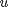:
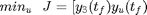
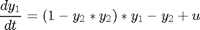
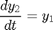
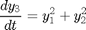
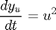
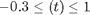
clear; %=========================== %RESULTS PATHS RELATED DATA %=========================== inputs.pathd.results_folder='vpol_multiO'; % Folder to keep results (in Results\) inputs.pathd.short_name='vpolm'; % To identify figures and reports %====================== % MODEL RELATED DATA %====================== inputs.model.input_model_type='charmodelC'; % Model type inputs.model.n_st=4; % Number of states inputs.model.n_par=0; % Number of model parameters inputs.model.n_stimulus=1; % Number of stimuli inputs.model.st_names=char('y1','y2','y3','yu'); % Names of the states inputs.model.stimulus_names=char('uu'); % Names of the stimuli inputs.model.eqns=... % Model char('dy1=(1-y2*y2)*y1-y2+uu',... 'dy2=y1',... 'dy3=y1*y1+y2*y2',... 'dyu=uu*uu'); %========================================== % Dynamic optimization problem formulation %========================================== inputs.DOsol.y0=[0 1 0 0 ]; %Initial conditions inputs.DOsol.tf_type='fixed'; %Process duration type: fixed or free inputs.DOsol.tf_guess=5; %Process duration %COST FUNCTIONS inputs.DOsol.N_DOcost=2; %Number of objectives inputs.DOsol.DOcost_type='min'; % max/min inputs.DOsol.DOcost{1}='y3'; % Objective 1 inputs.DOsol.DOcost{2}='yu'; % Objective 2 %CVP (Control Vector Parameterization) DETAILS inputs.DOsol.u_interp='stepf'; %Control definition %'sustained' |'stepf'|'step'|'linear'| inputs.DOsol.n_steps=10; inputs.DOsol.u_guess=0.7.*ones(1,inputs.DOsol.n_steps);% Initial guess for the input inputs.DOsol.u_min=-0.3.*ones(1,inputs.DOsol.n_steps); inputs.DOsol.u_max=1.*ones(1,inputs.DOsol.n_steps); % Minimum and maximum value for the input inputs.DOsol.t_con=0:5/inputs.DOsol.n_steps:5; % Input swithching times, including intial and % final times %================================== % NUMERICAL METHDOS RELATED DATA %================================== % SIMULATION % Default for charmodel C: CVODES % OPTIMIZATION inputs.nlpsol.nlpsolver='nsga2'; % Solves the problem using a multi-objective % optimizer- nsga2 inputs.nlpsol.nsga2.popsize = 10*inputs.DOsol.n_steps;% nsga2 populaion size inputs.nlpsol.nsga2.maxGen = 10*inputs.DOsol.n_steps;% nsga2 max number of generations inputs.nlpsol.nsga2.plotInterval = 5; % nsga2 interval between two calls of "plotnsga". %inputs.nlpsol.nsga2.initfun={@initpop, 'populations.txt'} %nsga2 use previous results to refine inputs.nlpsol.nsga2.mutation={'gaussian',0.1, 0.5}; % nsga2 type of mutation %================================== % DISPLAY OF RESULTS %================================== inputs.plotd.number_max_pareto=5; % Maximum number of figures - Pareto optimal profiles
% More information regarding the inputs used in this example can be % found <doinputsm.html here>. AMIGO_Prep(inputs); AMIGO_DO(inputs);
***********************************
* AMIGO, Copyright @CSIC *
* AMIGO2_R1 [July 2013] *
***********************************
*Date: 28-Sep-2015
------>Pre processing....this may take a few seconds.
------>Checking inputs....
------> WARNING message
AMIGO_check_model: You did not specify inputs.model.exe_type, standard will be assumed
------> Generating C code ...
------> Mexing files....
D:\AMIGO2_REPO_2014\AMIGO_R2012_cvodes\Kernel\IVP_solvers\cvodes\C_src4Amigo\src\src_amigo\simulate_amigo_model.c: In function 'simulate_amigo_model':
D:\AMIGO2_REPO_2014\AMIGO_R2012_cvodes\Kernel\IVP_solvers\cvodes\C_src4Amigo\src\src_amigo\simulate_amigo_model.c:330:6: warning: passing argument 1 of 'mexPrintf' from incompatible pointer type [enabled by default]
mexPrintf(stderr,"\nSolver failed at flag = CVode(cvode_mem, tout, y, &t, CV_TSTOP_RETURN);. . .\n");
^
In file included from D:\AMIGO2_REPO_2014\AMIGO_R2012_cvodes\Kernel\IVP_solvers\cvodes\C_src4Amigo\include\include_amigo/simulate_amigo_model.h:4:0,
from D:\AMIGO2_REPO_2014\AMIGO_R2012_cvodes\Kernel\IVP_solvers\cvodes\C_src4Amigo\src\src_amigo\simulate_amigo_model.c:1:
C:\MATLAB\R2011B~1\extern\include/mex.h:209:14: note: expected 'const char *' but argument is of type 'struct FILE *'
EXTERN_C int mexPrintf(
^
D:\AMIGO2_REPO_2014\AMIGO_R2012_cvodes\Kernel\IVP_solvers\cvodes\C_src4Amigo\src\src_interface\interface_with_matlab.c: In function 'mexFunction':
D:\AMIGO2_REPO_2014\AMIGO_R2012_cvodes\Kernel\IVP_solvers\cvodes\C_src4Amigo\src\src_interface\interface_with_matlab.c:200:17: warning: assignment from incompatible pointer type [enabled by default]
stats_struct = mxGetPr(plhs[5]);
^
------>Files generated....
***********************************
* AMIGO, Copyright @CSIC *
* AMIGO2_R1 [July 2013] *
***********************************
*Date: 28-Sep-2015
------>Checking inputs....
*************************************************************************
------>IMPORTANT!!: Most of the optimization solvers have their own
tunning parameters (options).
Defaults have been assigned in the *NLPsolver*_options
files. You may need to modify those settings for your
particular problem, specially:
- maximum number of function evaluations /iterations,
- maximum computational time
******************************************************************
Solving the NLP problem with Multi-objective global Optimizer: NSGA2
>Bounds on the unknowns:
v_guess(1)=0.700000; v_min(1)=-0.300000; v_max(1)=1.000000;
v_guess(2)=0.700000; v_min(2)=-0.300000; v_max(2)=1.000000;
v_guess(3)=0.700000; v_min(3)=-0.300000; v_max(3)=1.000000;
v_guess(4)=0.700000; v_min(4)=-0.300000; v_max(4)=1.000000;
v_guess(5)=0.700000; v_min(5)=-0.300000; v_max(5)=1.000000;
v_guess(6)=0.700000; v_min(6)=-0.300000; v_max(6)=1.000000;
v_guess(7)=0.700000; v_min(7)=-0.300000; v_max(7)=1.000000;
v_guess(8)=0.700000; v_min(8)=-0.300000; v_max(8)=1.000000;
v_guess(9)=0.700000; v_min(9)=-0.300000; v_max(9)=1.000000;
v_guess(10)=0.700000; v_min(10)=-0.300000; v_max(10)=1.000000;
Evaluating the objective function... Generation: 1 / 100 , Individual: 1 / 100
-------------------------------
Initial value problem related active settings
-------------------------------
ivpsolver: cvodes
RelTol: 1e-007
AbsTol: 1e-007
MaxStepSize: Inf
MaxNumberOfSteps: 100000
Evaluating the objective function... Generation: 1 / 100 , Individual: 2 / 100
Evaluating the objective function... Generation: 1 / 100 , Individual: 3 / 100
Evaluating the objective function... Generation: 1 / 100 , Individual: 4 / 100
Evaluating the objective function... Generation: 1 / 100 , Individual: 5 / 100
Evaluating the objective function... Generation: 1 / 100 , Individual: 6 / 100
Evaluating the objective function... Generation: 1 / 100 , Individual: 7 / 100
Evaluating the objective function... Generation: 1 / 100 , Individual: 8 / 100
Evaluating the objective function... Generation: 1 / 100 , Individual: 9 / 100
Evaluating the objective function... Generation: 1 / 100 , Individual: 10 / 100
Evaluating the objective function... Generation: 1 / 100 , Individual: 11 / 100
Evaluating the objective function... Generation: 1 / 100 , Individual: 12 / 100
Evaluating the objective function... Generation: 1 / 100 , Individual: 13 / 100
Evaluating the objective function... Generation: 1 / 100 , Individual: 14 / 100
Evaluating the objective function... Generation: 1 / 100 , Individual: 15 / 100
Evaluating the objective function... Generation: 1 / 100 , Individual: 16 / 100
Evaluating the objective function... Generation: 1 / 100 , Individual: 17 / 100
Evaluating the objective function... Generation: 1 / 100 , Individual: 18 / 100
Evaluating the objective function... Generation: 1 / 100 , Individual: 19 / 100
Evaluating the objective function... Generation: 1 / 100 , Individual: 20 / 100
Evaluating the objective function... Generation: 1 / 100 , Individual: 21 / 100
Evaluating the objective function... Generation: 1 / 100 , Individual: 22 / 100
Evaluating the objective function... Generation: 1 / 100 , Individual: 23 / 100
Evaluating the objective function... Generation: 1 / 100 , Individual: 24 / 100
Evaluating the objective function... Generation: 1 / 100 , Individual: 25 / 100
Evaluating the objective function... Generation: 1 / 100 , Individual: 26 / 100
Evaluating the objective function... Generation: 1 / 100 , Individual: 27 / 100
Evaluating the objective function... Generation: 1 / 100 , Individual: 28 / 100
Evaluating the objective function... Generation: 1 / 100 , Individual: 29 / 100
Evaluating the objective function... Generation: 1 / 100 , Individual: 30 / 100
Evaluating the objective function... Generation: 1 / 100 , Individual: 31 / 100
Evaluating the objective function... Generation: 1 / 100 , Individual: 32 / 100
Evaluating the objective function... Generation: 1 / 100 , Individual: 33 / 100
Evaluating the objective function... Generation: 1 / 100 , Individual: 34 / 100
Evaluating the objective function... Generation: 1 / 100 , Individual: 35 / 100
Evaluating the objective function... Generation: 1 / 100 , Individual: 36 / 100
Evaluating the objective function... Generation: 1 / 100 , Individual: 37 / 100
Evaluating the objective function... Generation: 1 / 100 , Individual: 38 / 100
Evaluating the objective function... Generation: 1 / 100 , Individual: 39 / 100
Evaluating the objective function... Generation: 1 / 100 , Individual: 40 / 100
Evaluating the objective function... Generation: 1 / 100 , Individual: 41 / 100
Evaluating the objective function... Generation: 1 / 100 , Individual: 42 / 100
Evaluating the objective function... Generation: 1 / 100 , Individual: 43 / 100
Evaluating the objective function... Generation: 1 / 100 , Individual: 44 / 100
Evaluating the objective function... Generation: 1 / 100 , Individual: 45 / 100
Evaluating the objective function... Generation: 1 / 100 , Individual: 46 / 100
Evaluating the objective function... Generation: 1 / 100 , Individual: 47 / 100
Evaluating the objective function... Generation: 1 / 100 , Individual: 48 / 100
Evaluating the objective function... Generation: 1 / 100 , Individual: 49 / 100
Evaluating the objective function... Generation: 1 / 100 , Individual: 50 / 100
Evaluating the objective function... Generation: 1 / 100 , Individual: 51 / 100
Evaluating the objective function... Generation: 1 / 100 , Individual: 52 / 100
Evaluating the objective function... Generation: 1 / 100 , Individual: 53 / 100
Evaluating the objective function... Generation: 1 / 100 , Individual: 54 / 100
Evaluating the objective function... Generation: 1 / 100 , Individual: 55 / 100
Evaluating the objective function... Generation: 1 / 100 , Individual: 56 / 100
Evaluating the objective function... Generation: 1 / 100 , Individual: 57 / 100
Evaluating the objective function... Generation: 1 / 100 , Individual: 58 / 100
Evaluating the objective function... Generation: 1 / 100 , Individual: 59 / 100
Evaluating the objective function... Generation: 1 / 100 , Individual: 60 / 100
Evaluating the objective function... Generation: 1 / 100 , Individual: 61 / 100
Evaluating the objective function... Generation: 1 / 100 , Individual: 62 / 100
Evaluating the objective function... Generation: 1 / 100 , Individual: 63 / 100
Evaluating the objective function... Generation: 1 / 100 , Individual: 64 / 100
Evaluating the objective function... Generation: 1 / 100 , Individual: 65 / 100
Evaluating the objective function... Generation: 1 / 100 , Individual: 66 / 100
Evaluating the objective function... Generation: 1 / 100 , Individual: 67 / 100
Evaluating the objective function... Generation: 1 / 100 , Individual: 68 / 100
Evaluating the objective function... Generation: 1 / 100 , Individual: 69 / 100
Evaluating the objective function... Generation: 1 / 100 , Individual: 70 / 100
Evaluating the objective function... Generation: 1 / 100 , Individual: 71 / 100
Evaluating the objective function... Generation: 1 / 100 , Individual: 72 / 100
Evaluating the objective function... Generation: 1 / 100 , Individual: 73 / 100
Evaluating the objective function... Generation: 1 / 100 , Individual: 74 / 100
Evaluating the objective function... Generation: 1 / 100 , Individual: 75 / 100
Evaluating the objective function... Generation: 1 / 100 , Individual: 76 / 100
Evaluating the objective function... Generation: 1 / 100 , Individual: 77 / 100
Evaluating the objective function... Generation: 1 / 100 , Individual: 78 / 100
Evaluating the objective function... Generation: 1 / 100 , Individual: 79 / 100
Evaluating the objective function... Generation: 1 / 100 , Individual: 80 / 100
Evaluating the objective function... Generation: 1 / 100 , Individual: 81 / 100
Evaluating the objective function... Generation: 1 / 100 , Individual: 82 / 100
Evaluating the objective function... Generation: 1 / 100 , Individual: 83 / 100
Evaluating the objective function... Generation: 1 / 100 , Individual: 84 / 100
Evaluating the objective function... Generation: 1 / 100 , Individual: 85 / 100
Evaluating the objective function... Generation: 1 / 100 , Individual: 86 / 100
Evaluating the objective function... Generation: 1 / 100 , Individual: 87 / 100
Evaluating the objective function... Generation: 1 / 100 , Individual: 88 / 100
Evaluating the objective function... Generation: 1 / 100 , Individual: 89 / 100
Evaluating the objective function... Generation: 1 / 100 , Individual: 90 / 100
Evaluating the objective function... Generation: 1 / 100 , Individual: 91 / 100
Evaluating the objective function... Generation: 1 / 100 , Individual: 92 / 100
Evaluating the objective function... Generation: 1 / 100 , Individual: 93 / 100
Evaluating the objective function... Generation: 1 / 100 , Individual: 94 / 100
Evaluating the objective function... Generation: 1 / 100 , Individual: 95 / 100
Evaluating the objective function... Generation: 1 / 100 , Individual: 96 / 100
Evaluating the objective function... Generation: 1 / 100 , Individual: 97 / 100
Evaluating the objective function... Generation: 1 / 100 , Individual: 98 / 100
Evaluating the objective function... Generation: 1 / 100 , Individual: 99 / 100
Evaluating the objective function... Generation: 1 / 100 , Individual: 100 / 100
************************************************************
* Current generation 2 / 100
************************************************************
Evaluating the objective function... Generation: 2 / 100 , Individual: 1 / 100
Evaluating the objective function... Generation: 2 / 100 , Individual: 2 / 100
Evaluating the objective function... Generation: 2 / 100 , Individual: 3 / 100
Evaluating the objective function... Generation: 2 / 100 , Individual: 4 / 100
Evaluating the objective function... Generation: 2 / 100 , Individual: 5 / 100
Evaluating the objective function... Generation: 2 / 100 , Individual: 6 / 100
Evaluating the objective function... Generation: 2 / 100 , Individual: 7 / 100
Evaluating the objective function... Generation: 2 / 100 , Individual: 8 / 100
Evaluating the objective function... Generation: 2 / 100 , Individual: 9 / 100
Evaluating the objective function... Generation: 2 / 100 , Individual: 10 / 100
Evaluating the objective function... Generation: 2 / 100 , Individual: 11 / 100
Evaluating the objective function... Generation: 2 / 100 , Individual: 12 / 100
Evaluating the objective function... Generation: 2 / 100 , Individual: 13 / 100
Evaluating the objective function... Generation: 2 / 100 , Individual: 14 / 100
Evaluating the objective function... Generation: 2 / 100 , Individual: 15 / 100
Evaluating the objective function... Generation: 2 / 100 , Individual: 16 / 100
Evaluating the objective function... Generation: 2 / 100 , Individual: 17 / 100
Evaluating the objective function... Generation: 2 / 100 , Individual: 18 / 100
Evaluating the objective function... Generation: 2 / 100 , Individual: 19 / 100
Evaluating the objective function... Generation: 2 / 100 , Individual: 20 / 100
Evaluating the objective function... Generation: 2 / 100 , Individual: 21 / 100
Evaluating the objective function... Generation: 2 / 100 , Individual: 22 / 100
Evaluating the objective function... Generation: 2 / 100 , Individual: 23 / 100
Evaluating the objective function... Generation: 2 / 100 , Individual: 24 / 100
Evaluating the objective function... Generation: 2 / 100 , Individual: 25 / 100
Evaluating the objective function... Generation: 2 / 100 , Individual: 26 / 100
Evaluating the objective function... Generation: 2 / 100 , Individual: 27 / 100
Evaluating the objective function... Generation: 2 / 100 , Individual: 28 / 100
Evaluating the objective function... Generation: 2 / 100 , Individual: 29 / 100
Evaluating the objective function... Generation: 2 / 100 , Individual: 30 / 100
Evaluating the objective function... Generation: 2 / 100 , Individual: 31 / 100
Evaluating the objective function... Generation: 2 / 100 , Individual: 32 / 100
Evaluating the objective function... Generation: 2 / 100 , Individual: 33 / 100
Evaluating the objective function... Generation: 2 / 100 , Individual: 34 / 100
Evaluating the objective function... Generation: 2 / 100 , Individual: 35 / 100
Evaluating the objective function... Generation: 2 / 100 , Individual: 36 / 100
Evaluating the objective function... Generation: 2 / 100 , Individual: 37 / 100
Evaluating the objective function... Generation: 2 / 100 , Individual: 38 / 100
Evaluating the objective function... Generation: 2 / 100 , Individual: 39 / 100
Evaluating the objective function... Generation: 2 / 100 , Individual: 40 / 100
Evaluating the objective function... Generation: 2 / 100 , Individual: 41 / 100
Evaluating the objective function... Generation: 2 / 100 , Individual: 42 / 100
Evaluating the objective function... Generation: 2 / 100 , Individual: 43 / 100
Evaluating the objective function... Generation: 2 / 100 , Individual: 44 / 100
Evaluating the objective function... Generation: 2 / 100 , Individual: 45 / 100
Evaluating the objective function... Generation: 2 / 100 , Individual: 46 / 100
Evaluating the objective function... Generation: 2 / 100 , Individual: 47 / 100
Evaluating the objective function... Generation: 2 / 100 , Individual: 48 / 100
Evaluating the objective function... Generation: 2 / 100 , Individual: 49 / 100
Evaluating the objective function... Generation: 2 / 100 , Individual: 50 / 100
Evaluating the objective function... Generation: 2 / 100 , Individual: 51 / 100
Evaluating the objective function... Generation: 2 / 100 , Individual: 52 / 100
Evaluating the objective function... Generation: 2 / 100 , Individual: 53 / 100
Evaluating the objective function... Generation: 2 / 100 , Individual: 54 / 100
Evaluating the objective function... Generation: 2 / 100 , Individual: 55 / 100
Evaluating the objective function... Generation: 2 / 100 , Individual: 56 / 100
Evaluating the objective function... Generation: 2 / 100 , Individual: 57 / 100
Evaluating the objective function... Generation: 2 / 100 , Individual: 58 / 100
Evaluating the objective function... Generation: 2 / 100 , Individual: 59 / 100
Evaluating the objective function... Generation: 2 / 100 , Individual: 60 / 100
Evaluating the objective function... Generation: 2 / 100 , Individual: 61 / 100
Evaluating the objective function... Generation: 2 / 100 , Individual: 62 / 100
Evaluating the objective function... Generation: 2 / 100 , Individual: 63 / 100
Evaluating the objective function... Generation: 2 / 100 , Individual: 64 / 100
Evaluating the objective function... Generation: 2 / 100 , Individual: 65 / 100
Evaluating the objective function... Generation: 2 / 100 , Individual: 66 / 100
Evaluating the objective function... Generation: 2 / 100 , Individual: 67 / 100
Evaluating the objective function... Generation: 2 / 100 , Individual: 68 / 100
Evaluating the objective function... Generation: 2 / 100 , Individual: 69 / 100
Evaluating the objective function... Generation: 2 / 100 , Individual: 70 / 100
Evaluating the objective function... Generation: 2 / 100 , Individual: 71 / 100
Evaluating the objective function... Generation: 2 / 100 , Individual: 72 / 100
Evaluating the objective function... Generation: 2 / 100 , Individual: 73 / 100
Evaluating the objective function... Generation: 2 / 100 , Individual: 74 / 100
Evaluating the objective function... Generation: 2 / 100 , Individual: 75 / 100
Evaluating the objective function... Generation: 2 / 100 , Individual: 76 / 100
Evaluating the objective function... Generation: 2 / 100 , Individual: 77 / 100
Evaluating the objective function... Generation: 2 / 100 , Individual: 78 / 100
Evaluating the objective function... Generation: 2 / 100 , Individual: 79 / 100
Evaluating the objective function... Generation: 2 / 100 , Individual: 80 / 100
Evaluating the objective function... Generation: 2 / 100 , Individual: 81 / 100
Evaluating the objective function... Generation: 2 / 100 , Individual: 82 / 100
Evaluating the objective function... Generation: 2 / 100 , Individual: 83 / 100
Evaluating the objective function... Generation: 2 / 100 , Individual: 84 / 100
Evaluating the objective function... Generation: 2 / 100 , Individual: 85 / 100
Evaluating the objective function... Generation: 2 / 100 , Individual: 86 / 100
Evaluating the objective function... Generation: 2 / 100 , Individual: 87 / 100
Evaluating the objective function... Generation: 2 / 100 , Individual: 88 / 100
Evaluating the objective function... Generation: 2 / 100 , Individual: 89 / 100
Evaluating the objective function... Generation: 2 / 100 , Individual: 90 / 100
Evaluating the objective function... Generation: 2 / 100 , Individual: 91 / 100
Evaluating the objective function... Generation: 2 / 100 , Individual: 92 / 100
Evaluating the objective function... Generation: 2 / 100 , Individual: 93 / 100
Evaluating the objective function... Generation: 2 / 100 , Individual: 94 / 100
Evaluating the objective function... Generation: 2 / 100 , Individual: 95 / 100
Evaluating the objective function... Generation: 2 / 100 , Individual: 96 / 100
Evaluating the objective function... Generation: 2 / 100 , Individual: 97 / 100
Evaluating the objective function... Generation: 2 / 100 , Individual: 98 / 100
Evaluating the objective function... Generation: 2 / 100 , Individual: 99 / 100
Evaluating the objective function... Generation: 2 / 100 , Individual: 100 / 100
************************************************************
* Current generation 3 / 100
************************************************************
Evaluating the objective function... Generation: 3 / 100 , Individual: 1 / 100
Evaluating the objective function... Generation: 3 / 100 , Individual: 2 / 100
Evaluating the objective function... Generation: 3 / 100 , Individual: 3 / 100
Evaluating the objective function... Generation: 3 / 100 , Individual: 4 / 100
Evaluating the objective function... Generation: 3 / 100 , Individual: 5 / 100
Evaluating the objective function... Generation: 3 / 100 , Individual: 6 / 100
Evaluating the objective function... Generation: 3 / 100 , Individual: 7 / 100
Evaluating the objective function... Generation: 3 / 100 , Individual: 8 / 100
Evaluating the objective function... Generation: 3 / 100 , Individual: 9 / 100
Evaluating the objective function... Generation: 3 / 100 , Individual: 10 / 100
Evaluating the objective function... Generation: 3 / 100 , Individual: 11 / 100
Evaluating the objective function... Generation: 3 / 100 , Individual: 12 / 100
Evaluating the objective function... Generation: 3 / 100 , Individual: 13 / 100
Evaluating the objective function... Generation: 3 / 100 , Individual: 14 / 100
Evaluating the objective function... Generation: 3 / 100 , Individual: 15 / 100
Evaluating the objective function... Generation: 3 / 100 , Individual: 16 / 100
Evaluating the objective function... Generation: 3 / 100 , Individual: 17 / 100
Evaluating the objective function... Generation: 3 / 100 , Individual: 18 / 100
Evaluating the objective function... Generation: 3 / 100 , Individual: 19 / 100
Evaluating the objective function... Generation: 3 / 100 , Individual: 20 / 100
Evaluating the objective function... Generation: 3 / 100 , Individual: 21 / 100
Evaluating the objective function... Generation: 3 / 100 , Individual: 22 / 100
Evaluating the objective function... Generation: 3 / 100 , Individual: 23 / 100
Evaluating the objective function... Generation: 3 / 100 , Individual: 24 / 100
Evaluating the objective function... Generation: 3 / 100 , Individual: 25 / 100
Evaluating the objective function... Generation: 3 / 100 , Individual: 26 / 100
Evaluating the objective function... Generation: 3 / 100 , Individual: 27 / 100
Evaluating the objective function... Generation: 3 / 100 , Individual: 28 / 100
Evaluating the objective function... Generation: 3 / 100 , Individual: 29 / 100
Evaluating the objective function... Generation: 3 / 100 , Individual: 30 / 100
Evaluating the objective function... Generation: 3 / 100 , Individual: 31 / 100
Evaluating the objective function... Generation: 3 / 100 , Individual: 32 / 100
Evaluating the objective function... Generation: 3 / 100 , Individual: 33 / 100
Evaluating the objective function... Generation: 3 / 100 , Individual: 34 / 100
Evaluating the objective function... Generation: 3 / 100 , Individual: 35 / 100
Evaluating the objective function... Generation: 3 / 100 , Individual: 36 / 100
Evaluating the objective function... Generation: 3 / 100 , Individual: 37 / 100
Evaluating the objective function... Generation: 3 / 100 , Individual: 38 / 100
Evaluating the objective function... Generation: 3 / 100 , Individual: 39 / 100
Evaluating the objective function... Generation: 3 / 100 , Individual: 40 / 100
Evaluating the objective function... Generation: 3 / 100 , Individual: 41 / 100
Evaluating the objective function... Generation: 3 / 100 , Individual: 42 / 100
Evaluating the objective function... Generation: 3 / 100 , Individual: 43 / 100
Evaluating the objective function... Generation: 3 / 100 , Individual: 44 / 100
Evaluating the objective function... Generation: 3 / 100 , Individual: 45 / 100
Evaluating the objective function... Generation: 3 / 100 , Individual: 46 / 100
Evaluating the objective function... Generation: 3 / 100 , Individual: 47 / 100
Evaluating the objective function... Generation: 3 / 100 , Individual: 48 / 100
Evaluating the objective function... Generation: 3 / 100 , Individual: 49 / 100
Evaluating the objective function... Generation: 3 / 100 , Individual: 50 / 100
Evaluating the objective function... Generation: 3 / 100 , Individual: 51 / 100
Evaluating the objective function... Generation: 3 / 100 , Individual: 52 / 100
Evaluating the objective function... Generation: 3 / 100 , Individual: 53 / 100
Evaluating the objective function... Generation: 3 / 100 , Individual: 54 / 100
Evaluating the objective function... Generation: 3 / 100 , Individual: 55 / 100
Evaluating the objective function... Generation: 3 / 100 , Individual: 56 / 100
Evaluating the objective function... Generation: 3 / 100 , Individual: 57 / 100
Evaluating the objective function... Generation: 3 / 100 , Individual: 58 / 100
Evaluating the objective function... Generation: 3 / 100 , Individual: 59 / 100
Evaluating the objective function... Generation: 3 / 100 , Individual: 60 / 100
Evaluating the objective function... Generation: 3 / 100 , Individual: 61 / 100
Evaluating the objective function... Generation: 3 / 100 , Individual: 62 / 100
Evaluating the objective function... Generation: 3 / 100 , Individual: 63 / 100
Evaluating the objective function... Generation: 3 / 100 , Individual: 64 / 100
Evaluating the objective function... Generation: 3 / 100 , Individual: 65 / 100
Evaluating the objective function... Generation: 3 / 100 , Individual: 66 / 100
Evaluating the objective function... Generation: 3 / 100 , Individual: 67 / 100
Evaluating the objective function... Generation: 3 / 100 , Individual: 68 / 100
Evaluating the objective function... Generation: 3 / 100 , Individual: 69 / 100
Evaluating the objective function... Generation: 3 / 100 , Individual: 70 / 100
Evaluating the objective function... Generation: 3 / 100 , Individual: 71 / 100
Evaluating the objective function... Generation: 3 / 100 , Individual: 72 / 100
Evaluating the objective function... Generation: 3 / 100 , Individual: 73 / 100
Evaluating the objective function... Generation: 3 / 100 , Individual: 74 / 100
Evaluating the objective function... Generation: 3 / 100 , Individual: 75 / 100
Evaluating the objective function... Generation: 3 / 100 , Individual: 76 / 100
Evaluating the objective function... Generation: 3 / 100 , Individual: 77 / 100
Evaluating the objective function... Generation: 3 / 100 , Individual: 78 / 100
Evaluating the objective function... Generation: 3 / 100 , Individual: 79 / 100
Evaluating the objective function... Generation: 3 / 100 , Individual: 80 / 100
Evaluating the objective function... Generation: 3 / 100 , Individual: 81 / 100
Evaluating the objective function... Generation: 3 / 100 , Individual: 82 / 100
Evaluating the objective function... Generation: 3 / 100 , Individual: 83 / 100
Evaluating the objective function... Generation: 3 / 100 , Individual: 84 / 100
Evaluating the objective function... Generation: 3 / 100 , Individual: 85 / 100
Evaluating the objective function... Generation: 3 / 100 , Individual: 86 / 100
Evaluating the objective function... Generation: 3 / 100 , Individual: 87 / 100
Evaluating the objective function... Generation: 3 / 100 , Individual: 88 / 100
Evaluating the objective function... Generation: 3 / 100 , Individual: 89 / 100
Evaluating the objective function... Generation: 3 / 100 , Individual: 90 / 100
Evaluating the objective function... Generation: 3 / 100 , Individual: 91 / 100
Evaluating the objective function... Generation: 3 / 100 , Individual: 92 / 100
Evaluating the objective function... Generation: 3 / 100 , Individual: 93 / 100
Evaluating the objective function... Generation: 3 / 100 , Individual: 94 / 100
Evaluating the objective function... Generation: 3 / 100 , Individual: 95 / 100
Evaluating the objective function... Generation: 3 / 100 , Individual: 96 / 100
Evaluating the objective function... Generation: 3 / 100 , Individual: 97 / 100
Evaluating the objective function... Generation: 3 / 100 , Individual: 98 / 100
Evaluating the objective function... Generation: 3 / 100 , Individual: 99 / 100
Evaluating the objective function... Generation: 3 / 100 , Individual: 100 / 100
************************************************************
* Current generation 4 / 100
************************************************************
Evaluating the objective function... Generation: 4 / 100 , Individual: 1 / 100
Evaluating the objective function... Generation: 4 / 100 , Individual: 2 / 100
Evaluating the objective function... Generation: 4 / 100 , Individual: 3 / 100
Evaluating the objective function... Generation: 4 / 100 , Individual: 4 / 100
Evaluating the objective function... Generation: 4 / 100 , Individual: 5 / 100
Evaluating the objective function... Generation: 4 / 100 , Individual: 6 / 100
Evaluating the objective function... Generation: 4 / 100 , Individual: 7 / 100
Evaluating the objective function... Generation: 4 / 100 , Individual: 8 / 100
Evaluating the objective function... Generation: 4 / 100 , Individual: 9 / 100
Evaluating the objective function... Generation: 4 / 100 , Individual: 10 / 100
Evaluating the objective function... Generation: 4 / 100 , Individual: 11 / 100
Evaluating the objective function... Generation: 4 / 100 , Individual: 12 / 100
Evaluating the objective function... Generation: 4 / 100 , Individual: 13 / 100
Evaluating the objective function... Generation: 4 / 100 , Individual: 14 / 100
Evaluating the objective function... Generation: 4 / 100 , Individual: 15 / 100
Evaluating the objective function... Generation: 4 / 100 , Individual: 16 / 100
Evaluating the objective function... Generation: 4 / 100 , Individual: 17 / 100
Evaluating the objective function... Generation: 4 / 100 , Individual: 18 / 100
Evaluating the objective function... Generation: 4 / 100 , Individual: 19 / 100
Evaluating the objective function... Generation: 4 / 100 , Individual: 20 / 100
Evaluating the objective function... Generation: 4 / 100 , Individual: 21 / 100
Evaluating the objective function... Generation: 4 / 100 , Individual: 22 / 100
Evaluating the objective function... Generation: 4 / 100 , Individual: 23 / 100
Evaluating the objective function... Generation: 4 / 100 , Individual: 24 / 100
Evaluating the objective function... Generation: 4 / 100 , Individual: 25 / 100
Evaluating the objective function... Generation: 4 / 100 , Individual: 26 / 100
Evaluating the objective function... Generation: 4 / 100 , Individual: 27 / 100
Evaluating the objective function... Generation: 4 / 100 , Individual: 28 / 100
Evaluating the objective function... Generation: 4 / 100 , Individual: 29 / 100
Evaluating the objective function... Generation: 4 / 100 , Individual: 30 / 100
Evaluating the objective function... Generation: 4 / 100 , Individual: 31 / 100
Evaluating the objective function... Generation: 4 / 100 , Individual: 32 / 100
Evaluating the objective function... Generation: 4 / 100 , Individual: 33 / 100
Evaluating the objective function... Generation: 4 / 100 , Individual: 34 / 100
Evaluating the objective function... Generation: 4 / 100 , Individual: 35 / 100
Evaluating the objective function... Generation: 4 / 100 , Individual: 36 / 100
Evaluating the objective function... Generation: 4 / 100 , Individual: 37 / 100
Evaluating the objective function... Generation: 4 / 100 , Individual: 38 / 100
Evaluating the objective function... Generation: 4 / 100 , Individual: 39 / 100
Evaluating the objective function... Generation: 4 / 100 , Individual: 40 / 100
Evaluating the objective function... Generation: 4 / 100 , Individual: 41 / 100
Evaluating the objective function... Generation: 4 / 100 , Individual: 42 / 100
Evaluating the objective function... Generation: 4 / 100 , Individual: 43 / 100
Evaluating the objective function... Generation: 4 / 100 , Individual: 44 / 100
Evaluating the objective function... Generation: 4 / 100 , Individual: 45 / 100
Evaluating the objective function... Generation: 4 / 100 , Individual: 46 / 100
Evaluating the objective function... Generation: 4 / 100 , Individual: 47 / 100
Evaluating the objective function... Generation: 4 / 100 , Individual: 48 / 100
Evaluating the objective function... Generation: 4 / 100 , Individual: 49 / 100
Evaluating the objective function... Generation: 4 / 100 , Individual: 50 / 100
Evaluating the objective function... Generation: 4 / 100 , Individual: 51 / 100
Evaluating the objective function... Generation: 4 / 100 , Individual: 52 / 100
Evaluating the objective function... Generation: 4 / 100 , Individual: 53 / 100
Evaluating the objective function... Generation: 4 / 100 , Individual: 54 / 100
Evaluating the objective function... Generation: 4 / 100 , Individual: 55 / 100
Evaluating the objective function... Generation: 4 / 100 , Individual: 56 / 100
Evaluating the objective function... Generation: 4 / 100 , Individual: 57 / 100
Evaluating the objective function... Generation: 4 / 100 , Individual: 58 / 100
Evaluating the objective function... Generation: 4 / 100 , Individual: 59 / 100
Evaluating the objective function... Generation: 4 / 100 , Individual: 60 / 100
Evaluating the objective function... Generation: 4 / 100 , Individual: 61 / 100
Evaluating the objective function... Generation: 4 / 100 , Individual: 62 / 100
Evaluating the objective function... Generation: 4 / 100 , Individual: 63 / 100
Evaluating the objective function... Generation: 4 / 100 , Individual: 64 / 100
Evaluating the objective function... Generation: 4 / 100 , Individual: 65 / 100
Evaluating the objective function... Generation: 4 / 100 , Individual: 66 / 100
Evaluating the objective function... Generation: 4 / 100 , Individual: 67 / 100
Evaluating the objective function... Generation: 4 / 100 , Individual: 68 / 100
Evaluating the objective function... Generation: 4 / 100 , Individual: 69 / 100
Evaluating the objective function... Generation: 4 / 100 , Individual: 70 / 100
Evaluating the objective function... Generation: 4 / 100 , Individual: 71 / 100
Evaluating the objective function... Generation: 4 / 100 , Individual: 72 / 100
Evaluating the objective function... Generation: 4 / 100 , Individual: 73 / 100
Evaluating the objective function... Generation: 4 / 100 , Individual: 74 / 100
Evaluating the objective function... Generation: 4 / 100 , Individual: 75 / 100
Evaluating the objective function... Generation: 4 / 100 , Individual: 76 / 100
Evaluating the objective function... Generation: 4 / 100 , Individual: 77 / 100
Evaluating the objective function... Generation: 4 / 100 , Individual: 78 / 100
Evaluating the objective function... Generation: 4 / 100 , Individual: 79 / 100
Evaluating the objective function... Generation: 4 / 100 , Individual: 80 / 100
Evaluating the objective function... Generation: 4 / 100 , Individual: 81 / 100
Evaluating the objective function... Generation: 4 / 100 , Individual: 82 / 100
Evaluating the objective function... Generation: 4 / 100 , Individual: 83 / 100
Evaluating the objective function... Generation: 4 / 100 , Individual: 84 / 100
Evaluating the objective function... Generation: 4 / 100 , Individual: 85 / 100
Evaluating the objective function... Generation: 4 / 100 , Individual: 86 / 100
Evaluating the objective function... Generation: 4 / 100 , Individual: 87 / 100
Evaluating the objective function... Generation: 4 / 100 , Individual: 88 / 100
Evaluating the objective function... Generation: 4 / 100 , Individual: 89 / 100
Evaluating the objective function... Generation: 4 / 100 , Individual: 90 / 100
Evaluating the objective function... Generation: 4 / 100 , Individual: 91 / 100
Evaluating the objective function... Generation: 4 / 100 , Individual: 92 / 100
Evaluating the objective function... Generation: 4 / 100 , Individual: 93 / 100
Evaluating the objective function... Generation: 4 / 100 , Individual: 94 / 100
Evaluating the objective function... Generation: 4 / 100 , Individual: 95 / 100
Evaluating the objective function... Generation: 4 / 100 , Individual: 96 / 100
Evaluating the objective function... Generation: 4 / 100 , Individual: 97 / 100
Evaluating the objective function... Generation: 4 / 100 , Individual: 98 / 100
Evaluating the objective function... Generation: 4 / 100 , Individual: 99 / 100
Evaluating the objective function... Generation: 4 / 100 , Individual: 100 / 100
************************************************************
* Current generation 5 / 100
************************************************************
Evaluating the objective function... Generation: 5 / 100 , Individual: 1 / 100
Evaluating the objective function... Generation: 5 / 100 , Individual: 2 / 100
Evaluating the objective function... Generation: 5 / 100 , Individual: 3 / 100
Evaluating the objective function... Generation: 5 / 100 , Individual: 4 / 100
Evaluating the objective function... Generation: 5 / 100 , Individual: 5 / 100
Evaluating the objective function... Generation: 5 / 100 , Individual: 6 / 100
Evaluating the objective function... Generation: 5 / 100 , Individual: 7 / 100
Evaluating the objective function... Generation: 5 / 100 , Individual: 8 / 100
Evaluating the objective function... Generation: 5 / 100 , Individual: 9 / 100
Evaluating the objective function... Generation: 5 / 100 , Individual: 10 / 100
Evaluating the objective function... Generation: 5 / 100 , Individual: 11 / 100
Evaluating the objective function... Generation: 5 / 100 , Individual: 12 / 100
Evaluating the objective function... Generation: 5 / 100 , Individual: 13 / 100
Evaluating the objective function... Generation: 5 / 100 , Individual: 14 / 100
Evaluating the objective function... Generation: 5 / 100 , Individual: 15 / 100
Evaluating the objective function... Generation: 5 / 100 , Individual: 16 / 100
Evaluating the objective function... Generation: 5 / 100 , Individual: 17 / 100
Evaluating the objective function... Generation: 5 / 100 , Individual: 18 / 100
Evaluating the objective function... Generation: 5 / 100 , Individual: 19 / 100
Evaluating the objective function... Generation: 5 / 100 , Individual: 20 / 100
Evaluating the objective function... Generation: 5 / 100 , Individual: 21 / 100
Evaluating the objective function... Generation: 5 / 100 , Individual: 22 / 100
Evaluating the objective function... Generation: 5 / 100 , Individual: 23 / 100
Evaluating the objective function... Generation: 5 / 100 , Individual: 24 / 100
Evaluating the objective function... Generation: 5 / 100 , Individual: 25 / 100
Evaluating the objective function... Generation: 5 / 100 , Individual: 26 / 100
Evaluating the objective function... Generation: 5 / 100 , Individual: 27 / 100
Evaluating the objective function... Generation: 5 / 100 , Individual: 28 / 100
Evaluating the objective function... Generation: 5 / 100 , Individual: 29 / 100
Evaluating the objective function... Generation: 5 / 100 , Individual: 30 / 100
Evaluating the objective function... Generation: 5 / 100 , Individual: 31 / 100
Evaluating the objective function... Generation: 5 / 100 , Individual: 32 / 100
Evaluating the objective function... Generation: 5 / 100 , Individual: 33 / 100
Evaluating the objective function... Generation: 5 / 100 , Individual: 34 / 100
Evaluating the objective function... Generation: 5 / 100 , Individual: 35 / 100
Evaluating the objective function... Generation: 5 / 100 , Individual: 36 / 100
Evaluating the objective function... Generation: 5 / 100 , Individual: 37 / 100
Evaluating the objective function... Generation: 5 / 100 , Individual: 38 / 100
Evaluating the objective function... Generation: 5 / 100 , Individual: 39 / 100
Evaluating the objective function... Generation: 5 / 100 , Individual: 40 / 100
Evaluating the objective function... Generation: 5 / 100 , Individual: 41 / 100
Evaluating the objective function... Generation: 5 / 100 , Individual: 42 / 100
Evaluating the objective function... Generation: 5 / 100 , Individual: 43 / 100
Evaluating the objective function... Generation: 5 / 100 , Individual: 44 / 100
Evaluating the objective function... Generation: 5 / 100 , Individual: 45 / 100
Evaluating the objective function... Generation: 5 / 100 , Individual: 46 / 100
Evaluating the objective function... Generation: 5 / 100 , Individual: 47 / 100
Evaluating the objective function... Generation: 5 / 100 , Individual: 48 / 100
Evaluating the objective function... Generation: 5 / 100 , Individual: 49 / 100
Evaluating the objective function... Generation: 5 / 100 , Individual: 50 / 100
Evaluating the objective function... Generation: 5 / 100 , Individual: 51 / 100
Evaluating the objective function... Generation: 5 / 100 , Individual: 52 / 100
Evaluating the objective function... Generation: 5 / 100 , Individual: 53 / 100
Evaluating the objective function... Generation: 5 / 100 , Individual: 54 / 100
Evaluating the objective function... Generation: 5 / 100 , Individual: 55 / 100
Evaluating the objective function... Generation: 5 / 100 , Individual: 56 / 100
Evaluating the objective function... Generation: 5 / 100 , Individual: 57 / 100
Evaluating the objective function... Generation: 5 / 100 , Individual: 58 / 100
Evaluating the objective function... Generation: 5 / 100 , Individual: 59 / 100
Evaluating the objective function... Generation: 5 / 100 , Individual: 60 / 100
Evaluating the objective function... Generation: 5 / 100 , Individual: 61 / 100
Evaluating the objective function... Generation: 5 / 100 , Individual: 62 / 100
Evaluating the objective function... Generation: 5 / 100 , Individual: 63 / 100
Evaluating the objective function... Generation: 5 / 100 , Individual: 64 / 100
Evaluating the objective function... Generation: 5 / 100 , Individual: 65 / 100
Evaluating the objective function... Generation: 5 / 100 , Individual: 66 / 100
Evaluating the objective function... Generation: 5 / 100 , Individual: 67 / 100
Evaluating the objective function... Generation: 5 / 100 , Individual: 68 / 100
Evaluating the objective function... Generation: 5 / 100 , Individual: 69 / 100
Evaluating the objective function... Generation: 5 / 100 , Individual: 70 / 100
Evaluating the objective function... Generation: 5 / 100 , Individual: 71 / 100
Evaluating the objective function... Generation: 5 / 100 , Individual: 72 / 100
Evaluating the objective function... Generation: 5 / 100 , Individual: 73 / 100
Evaluating the objective function... Generation: 5 / 100 , Individual: 74 / 100
Evaluating the objective function... Generation: 5 / 100 , Individual: 75 / 100
Evaluating the objective function... Generation: 5 / 100 , Individual: 76 / 100
Evaluating the objective function... Generation: 5 / 100 , Individual: 77 / 100
Evaluating the objective function... Generation: 5 / 100 , Individual: 78 / 100
Evaluating the objective function... Generation: 5 / 100 , Individual: 79 / 100
Evaluating the objective function... Generation: 5 / 100 , Individual: 80 / 100
Evaluating the objective function... Generation: 5 / 100 , Individual: 81 / 100
Evaluating the objective function... Generation: 5 / 100 , Individual: 82 / 100
Evaluating the objective function... Generation: 5 / 100 , Individual: 83 / 100
Evaluating the objective function... Generation: 5 / 100 , Individual: 84 / 100
Evaluating the objective function... Generation: 5 / 100 , Individual: 85 / 100
Evaluating the objective function... Generation: 5 / 100 , Individual: 86 / 100
Evaluating the objective function... Generation: 5 / 100 , Individual: 87 / 100
Evaluating the objective function... Generation: 5 / 100 , Individual: 88 / 100
Evaluating the objective function... Generation: 5 / 100 , Individual: 89 / 100
Evaluating the objective function... Generation: 5 / 100 , Individual: 90 / 100
Evaluating the objective function... Generation: 5 / 100 , Individual: 91 / 100
Evaluating the objective function... Generation: 5 / 100 , Individual: 92 / 100
Evaluating the objective function... Generation: 5 / 100 , Individual: 93 / 100
Evaluating the objective function... Generation: 5 / 100 , Individual: 94 / 100
Evaluating the objective function... Generation: 5 / 100 , Individual: 95 / 100
Evaluating the objective function... Generation: 5 / 100 , Individual: 96 / 100
Evaluating the objective function... Generation: 5 / 100 , Individual: 97 / 100
Evaluating the objective function... Generation: 5 / 100 , Individual: 98 / 100
Evaluating the objective function... Generation: 5 / 100 , Individual: 99 / 100
Evaluating the objective function... Generation: 5 / 100 , Individual: 100 / 100
************************************************************
* Current generation 6 / 100
************************************************************
Evaluating the objective function... Generation: 6 / 100 , Individual: 1 / 100
Evaluating the objective function... Generation: 6 / 100 , Individual: 2 / 100
Evaluating the objective function... Generation: 6 / 100 , Individual: 3 / 100
Evaluating the objective function... Generation: 6 / 100 , Individual: 4 / 100
Evaluating the objective function... Generation: 6 / 100 , Individual: 5 / 100
Evaluating the objective function... Generation: 6 / 100 , Individual: 6 / 100
Evaluating the objective function... Generation: 6 / 100 , Individual: 7 / 100
Evaluating the objective function... Generation: 6 / 100 , Individual: 8 / 100
Evaluating the objective function... Generation: 6 / 100 , Individual: 9 / 100
Evaluating the objective function... Generation: 6 / 100 , Individual: 10 / 100
Evaluating the objective function... Generation: 6 / 100 , Individual: 11 / 100
Evaluating the objective function... Generation: 6 / 100 , Individual: 12 / 100
Evaluating the objective function... Generation: 6 / 100 , Individual: 13 / 100
Evaluating the objective function... Generation: 6 / 100 , Individual: 14 / 100
Evaluating the objective function... Generation: 6 / 100 , Individual: 15 / 100
Evaluating the objective function... Generation: 6 / 100 , Individual: 16 / 100
Evaluating the objective function... Generation: 6 / 100 , Individual: 17 / 100
Evaluating the objective function... Generation: 6 / 100 , Individual: 18 / 100
Evaluating the objective function... Generation: 6 / 100 , Individual: 19 / 100
Evaluating the objective function... Generation: 6 / 100 , Individual: 20 / 100
Evaluating the objective function... Generation: 6 / 100 , Individual: 21 / 100
Evaluating the objective function... Generation: 6 / 100 , Individual: 22 / 100
Evaluating the objective function... Generation: 6 / 100 , Individual: 23 / 100
Evaluating the objective function... Generation: 6 / 100 , Individual: 24 / 100
Evaluating the objective function... Generation: 6 / 100 , Individual: 25 / 100
Evaluating the objective function... Generation: 6 / 100 , Individual: 26 / 100
Evaluating the objective function... Generation: 6 / 100 , Individual: 27 / 100
Evaluating the objective function... Generation: 6 / 100 , Individual: 28 / 100
Evaluating the objective function... Generation: 6 / 100 , Individual: 29 / 100
Evaluating the objective function... Generation: 6 / 100 , Individual: 30 / 100
Evaluating the objective function... Generation: 6 / 100 , Individual: 31 / 100
Evaluating the objective function... Generation: 6 / 100 , Individual: 32 / 100
Evaluating the objective function... Generation: 6 / 100 , Individual: 33 / 100
Evaluating the objective function... Generation: 6 / 100 , Individual: 34 / 100
Evaluating the objective function... Generation: 6 / 100 , Individual: 35 / 100
Evaluating the objective function... Generation: 6 / 100 , Individual: 36 / 100
Evaluating the objective function... Generation: 6 / 100 , Individual: 37 / 100
Evaluating the objective function... Generation: 6 / 100 , Individual: 38 / 100
Evaluating the objective function... Generation: 6 / 100 , Individual: 39 / 100
Evaluating the objective function... Generation: 6 / 100 , Individual: 40 / 100
Evaluating the objective function... Generation: 6 / 100 , Individual: 41 / 100
Evaluating the objective function... Generation: 6 / 100 , Individual: 42 / 100
Evaluating the objective function... Generation: 6 / 100 , Individual: 43 / 100
Evaluating the objective function... Generation: 6 / 100 , Individual: 44 / 100
Evaluating the objective function... Generation: 6 / 100 , Individual: 45 / 100
Evaluating the objective function... Generation: 6 / 100 , Individual: 46 / 100
Evaluating the objective function... Generation: 6 / 100 , Individual: 47 / 100
Evaluating the objective function... Generation: 6 / 100 , Individual: 48 / 100
Evaluating the objective function... Generation: 6 / 100 , Individual: 49 / 100
Evaluating the objective function... Generation: 6 / 100 , Individual: 50 / 100
Evaluating the objective function... Generation: 6 / 100 , Individual: 51 / 100
Evaluating the objective function... Generation: 6 / 100 , Individual: 52 / 100
Evaluating the objective function... Generation: 6 / 100 , Individual: 53 / 100
Evaluating the objective function... Generation: 6 / 100 , Individual: 54 / 100
Evaluating the objective function... Generation: 6 / 100 , Individual: 55 / 100
Evaluating the objective function... Generation: 6 / 100 , Individual: 56 / 100
Evaluating the objective function... Generation: 6 / 100 , Individual: 57 / 100
Evaluating the objective function... Generation: 6 / 100 , Individual: 58 / 100
Evaluating the objective function... Generation: 6 / 100 , Individual: 59 / 100
Evaluating the objective function... Generation: 6 / 100 , Individual: 60 / 100
Evaluating the objective function... Generation: 6 / 100 , Individual: 61 / 100
Evaluating the objective function... Generation: 6 / 100 , Individual: 62 / 100
Evaluating the objective function... Generation: 6 / 100 , Individual: 63 / 100
Evaluating the objective function... Generation: 6 / 100 , Individual: 64 / 100
Evaluating the objective function... Generation: 6 / 100 , Individual: 65 / 100
Evaluating the objective function... Generation: 6 / 100 , Individual: 66 / 100
Evaluating the objective function... Generation: 6 / 100 , Individual: 67 / 100
Evaluating the objective function... Generation: 6 / 100 , Individual: 68 / 100
Evaluating the objective function... Generation: 6 / 100 , Individual: 69 / 100
Evaluating the objective function... Generation: 6 / 100 , Individual: 70 / 100
Evaluating the objective function... Generation: 6 / 100 , Individual: 71 / 100
Evaluating the objective function... Generation: 6 / 100 , Individual: 72 / 100
Evaluating the objective function... Generation: 6 / 100 , Individual: 73 / 100
Evaluating the objective function... Generation: 6 / 100 , Individual: 74 / 100
Evaluating the objective function... Generation: 6 / 100 , Individual: 75 / 100
Evaluating the objective function... Generation: 6 / 100 , Individual: 76 / 100
Evaluating the objective function... Generation: 6 / 100 , Individual: 77 / 100
Evaluating the objective function... Generation: 6 / 100 , Individual: 78 / 100
Evaluating the objective function... Generation: 6 / 100 , Individual: 79 / 100
Evaluating the objective function... Generation: 6 / 100 , Individual: 80 / 100
Evaluating the objective function... Generation: 6 / 100 , Individual: 81 / 100
Evaluating the objective function... Generation: 6 / 100 , Individual: 82 / 100
Evaluating the objective function... Generation: 6 / 100 , Individual: 83 / 100
Evaluating the objective function... Generation: 6 / 100 , Individual: 84 / 100
Evaluating the objective function... Generation: 6 / 100 , Individual: 85 / 100
Evaluating the objective function... Generation: 6 / 100 , Individual: 86 / 100
Evaluating the objective function... Generation: 6 / 100 , Individual: 87 / 100
Evaluating the objective function... Generation: 6 / 100 , Individual: 88 / 100
Evaluating the objective function... Generation: 6 / 100 , Individual: 89 / 100
Evaluating the objective function... Generation: 6 / 100 , Individual: 90 / 100
Evaluating the objective function... Generation: 6 / 100 , Individual: 91 / 100
Evaluating the objective function... Generation: 6 / 100 , Individual: 92 / 100
Evaluating the objective function... Generation: 6 / 100 , Individual: 93 / 100
Evaluating the objective function... Generation: 6 / 100 , Individual: 94 / 100
Evaluating the objective function... Generation: 6 / 100 , Individual: 95 / 100
Evaluating the objective function... Generation: 6 / 100 , Individual: 96 / 100
Evaluating the objective function... Generation: 6 / 100 , Individual: 97 / 100
Evaluating the objective function... Generation: 6 / 100 , Individual: 98 / 100
Evaluating the objective function... Generation: 6 / 100 , Individual: 99 / 100
Evaluating the objective function... Generation: 6 / 100 , Individual: 100 / 100
************************************************************
* Current generation 7 / 100
************************************************************
Evaluating the objective function... Generation: 7 / 100 , Individual: 1 / 100
Evaluating the objective function... Generation: 7 / 100 , Individual: 2 / 100
Evaluating the objective function... Generation: 7 / 100 , Individual: 3 / 100
Evaluating the objective function... Generation: 7 / 100 , Individual: 4 / 100
Evaluating the objective function... Generation: 7 / 100 , Individual: 5 / 100
Evaluating the objective function... Generation: 7 / 100 , Individual: 6 / 100
Evaluating the objective function... Generation: 7 / 100 , Individual: 7 / 100
Evaluating the objective function... Generation: 7 / 100 , Individual: 8 / 100
Evaluating the objective function... Generation: 7 / 100 , Individual: 9 / 100
Evaluating the objective function... Generation: 7 / 100 , Individual: 10 / 100
Evaluating the objective function... Generation: 7 / 100 , Individual: 11 / 100
Evaluating the objective function... Generation: 7 / 100 , Individual: 12 / 100
Evaluating the objective function... Generation: 7 / 100 , Individual: 13 / 100
Evaluating the objective function... Generation: 7 / 100 , Individual: 14 / 100
Evaluating the objective function... Generation: 7 / 100 , Individual: 15 / 100
Evaluating the objective function... Generation: 7 / 100 , Individual: 16 / 100
Evaluating the objective function... Generation: 7 / 100 , Individual: 17 / 100
Evaluating the objective function... Generation: 7 / 100 , Individual: 18 / 100
Evaluating the objective function... Generation: 7 / 100 , Individual: 19 / 100
Evaluating the objective function... Generation: 7 / 100 , Individual: 20 / 100
Evaluating the objective function... Generation: 7 / 100 , Individual: 21 / 100
Evaluating the objective function... Generation: 7 / 100 , Individual: 22 / 100
Evaluating the objective function... Generation: 7 / 100 , Individual: 23 / 100
Evaluating the objective function... Generation: 7 / 100 , Individual: 24 / 100
Evaluating the objective function... Generation: 7 / 100 , Individual: 25 / 100
Evaluating the objective function... Generation: 7 / 100 , Individual: 26 / 100
Evaluating the objective function... Generation: 7 / 100 , Individual: 27 / 100
Evaluating the objective function... Generation: 7 / 100 , Individual: 28 / 100
Evaluating the objective function... Generation: 7 / 100 , Individual: 29 / 100
Evaluating the objective function... Generation: 7 / 100 , Individual: 30 / 100
Evaluating the objective function... Generation: 7 / 100 , Individual: 31 / 100
Evaluating the objective function... Generation: 7 / 100 , Individual: 32 / 100
Evaluating the objective function... Generation: 7 / 100 , Individual: 33 / 100
Evaluating the objective function... Generation: 7 / 100 , Individual: 34 / 100
Evaluating the objective function... Generation: 7 / 100 , Individual: 35 / 100
Evaluating the objective function... Generation: 7 / 100 , Individual: 36 / 100
Evaluating the objective function... Generation: 7 / 100 , Individual: 37 / 100
Evaluating the objective function... Generation: 7 / 100 , Individual: 38 / 100
Evaluating the objective function... Generation: 7 / 100 , Individual: 39 / 100
Evaluating the objective function... Generation: 7 / 100 , Individual: 40 / 100
Evaluating the objective function... Generation: 7 / 100 , Individual: 41 / 100
Evaluating the objective function... Generation: 7 / 100 , Individual: 42 / 100
Evaluating the objective function... Generation: 7 / 100 , Individual: 43 / 100
Evaluating the objective function... Generation: 7 / 100 , Individual: 44 / 100
Evaluating the objective function... Generation: 7 / 100 , Individual: 45 / 100
Evaluating the objective function... Generation: 7 / 100 , Individual: 46 / 100
Evaluating the objective function... Generation: 7 / 100 , Individual: 47 / 100
Evaluating the objective function... Generation: 7 / 100 , Individual: 48 / 100
Evaluating the objective function... Generation: 7 / 100 , Individual: 49 / 100
Evaluating the objective function... Generation: 7 / 100 , Individual: 50 / 100
Evaluating the objective function... Generation: 7 / 100 , Individual: 51 / 100
Evaluating the objective function... Generation: 7 / 100 , Individual: 52 / 100
Evaluating the objective function... Generation: 7 / 100 , Individual: 53 / 100
Evaluating the objective function... Generation: 7 / 100 , Individual: 54 / 100
Evaluating the objective function... Generation: 7 / 100 , Individual: 55 / 100
Evaluating the objective function... Generation: 7 / 100 , Individual: 56 / 100
Evaluating the objective function... Generation: 7 / 100 , Individual: 57 / 100
Evaluating the objective function... Generation: 7 / 100 , Individual: 58 / 100
Evaluating the objective function... Generation: 7 / 100 , Individual: 59 / 100
Evaluating the objective function... Generation: 7 / 100 , Individual: 60 / 100
Evaluating the objective function... Generation: 7 / 100 , Individual: 61 / 100
Evaluating the objective function... Generation: 7 / 100 , Individual: 62 / 100
Evaluating the objective function... Generation: 7 / 100 , Individual: 63 / 100
Evaluating the objective function... Generation: 7 / 100 , Individual: 64 / 100
Evaluating the objective function... Generation: 7 / 100 , Individual: 65 / 100
Evaluating the objective function... Generation: 7 / 100 , Individual: 66 / 100
Evaluating the objective function... Generation: 7 / 100 , Individual: 67 / 100
Evaluating the objective function... Generation: 7 / 100 , Individual: 68 / 100
Evaluating the objective function... Generation: 7 / 100 , Individual: 69 / 100
Evaluating the objective function... Generation: 7 / 100 , Individual: 70 / 100
Evaluating the objective function... Generation: 7 / 100 , Individual: 71 / 100
Evaluating the objective function... Generation: 7 / 100 , Individual: 72 / 100
Evaluating the objective function... Generation: 7 / 100 , Individual: 73 / 100
Evaluating the objective function... Generation: 7 / 100 , Individual: 74 / 100
Evaluating the objective function... Generation: 7 / 100 , Individual: 75 / 100
Evaluating the objective function... Generation: 7 / 100 , Individual: 76 / 100
Evaluating the objective function... Generation: 7 / 100 , Individual: 77 / 100
Evaluating the objective function... Generation: 7 / 100 , Individual: 78 / 100
Evaluating the objective function... Generation: 7 / 100 , Individual: 79 / 100
Evaluating the objective function... Generation: 7 / 100 , Individual: 80 / 100
Evaluating the objective function... Generation: 7 / 100 , Individual: 81 / 100
Evaluating the objective function... Generation: 7 / 100 , Individual: 82 / 100
Evaluating the objective function... Generation: 7 / 100 , Individual: 83 / 100
Evaluating the objective function... Generation: 7 / 100 , Individual: 84 / 100
Evaluating the objective function... Generation: 7 / 100 , Individual: 85 / 100
Evaluating the objective function... Generation: 7 / 100 , Individual: 86 / 100
Evaluating the objective function... Generation: 7 / 100 , Individual: 87 / 100
Evaluating the objective function... Generation: 7 / 100 , Individual: 88 / 100
Evaluating the objective function... Generation: 7 / 100 , Individual: 89 / 100
Evaluating the objective function... Generation: 7 / 100 , Individual: 90 / 100
Evaluating the objective function... Generation: 7 / 100 , Individual: 91 / 100
Evaluating the objective function... Generation: 7 / 100 , Individual: 92 / 100
Evaluating the objective function... Generation: 7 / 100 , Individual: 93 / 100
Evaluating the objective function... Generation: 7 / 100 , Individual: 94 / 100
Evaluating the objective function... Generation: 7 / 100 , Individual: 95 / 100
Evaluating the objective function... Generation: 7 / 100 , Individual: 96 / 100
Evaluating the objective function... Generation: 7 / 100 , Individual: 97 / 100
Evaluating the objective function... Generation: 7 / 100 , Individual: 98 / 100
Evaluating the objective function... Generation: 7 / 100 , Individual: 99 / 100
Evaluating the objective function... Generation: 7 / 100 , Individual: 100 / 100
************************************************************
* Current generation 8 / 100
************************************************************
Evaluating the objective function... Generation: 8 / 100 , Individual: 1 / 100
Evaluating the objective function... Generation: 8 / 100 , Individual: 2 / 100
Evaluating the objective function... Generation: 8 / 100 , Individual: 3 / 100
Evaluating the objective function... Generation: 8 / 100 , Individual: 4 / 100
Evaluating the objective function... Generation: 8 / 100 , Individual: 5 / 100
Evaluating the objective function... Generation: 8 / 100 , Individual: 6 / 100
Evaluating the objective function... Generation: 8 / 100 , Individual: 7 / 100
Evaluating the objective function... Generation: 8 / 100 , Individual: 8 / 100
Evaluating the objective function... Generation: 8 / 100 , Individual: 9 / 100
Evaluating the objective function... Generation: 8 / 100 , Individual: 10 / 100
Evaluating the objective function... Generation: 8 / 100 , Individual: 11 / 100
Evaluating the objective function... Generation: 8 / 100 , Individual: 12 / 100
Evaluating the objective function... Generation: 8 / 100 , Individual: 13 / 100
Evaluating the objective function... Generation: 8 / 100 , Individual: 14 / 100
Evaluating the objective function... Generation: 8 / 100 , Individual: 15 / 100
Evaluating the objective function... Generation: 8 / 100 , Individual: 16 / 100
Evaluating the objective function... Generation: 8 / 100 , Individual: 17 / 100
Evaluating the objective function... Generation: 8 / 100 , Individual: 18 / 100
Evaluating the objective function... Generation: 8 / 100 , Individual: 19 / 100
Evaluating the objective function... Generation: 8 / 100 , Individual: 20 / 100
Evaluating the objective function... Generation: 8 / 100 , Individual: 21 / 100
Evaluating the objective function... Generation: 8 / 100 , Individual: 22 / 100
Evaluating the objective function... Generation: 8 / 100 , Individual: 23 / 100
Evaluating the objective function... Generation: 8 / 100 , Individual: 24 / 100
Evaluating the objective function... Generation: 8 / 100 , Individual: 25 / 100
Evaluating the objective function... Generation: 8 / 100 , Individual: 26 / 100
Evaluating the objective function... Generation: 8 / 100 , Individual: 27 / 100
Evaluating the objective function... Generation: 8 / 100 , Individual: 28 / 100
Evaluating the objective function... Generation: 8 / 100 , Individual: 29 / 100
Evaluating the objective function... Generation: 8 / 100 , Individual: 30 / 100
Evaluating the objective function... Generation: 8 / 100 , Individual: 31 / 100
Evaluating the objective function... Generation: 8 / 100 , Individual: 32 / 100
Evaluating the objective function... Generation: 8 / 100 , Individual: 33 / 100
Evaluating the objective function... Generation: 8 / 100 , Individual: 34 / 100
Evaluating the objective function... Generation: 8 / 100 , Individual: 35 / 100
Evaluating the objective function... Generation: 8 / 100 , Individual: 36 / 100
Evaluating the objective function... Generation: 8 / 100 , Individual: 37 / 100
Evaluating the objective function... Generation: 8 / 100 , Individual: 38 / 100
Evaluating the objective function... Generation: 8 / 100 , Individual: 39 / 100
Evaluating the objective function... Generation: 8 / 100 , Individual: 40 / 100
Evaluating the objective function... Generation: 8 / 100 , Individual: 41 / 100
Evaluating the objective function... Generation: 8 / 100 , Individual: 42 / 100
Evaluating the objective function... Generation: 8 / 100 , Individual: 43 / 100
Evaluating the objective function... Generation: 8 / 100 , Individual: 44 / 100
Evaluating the objective function... Generation: 8 / 100 , Individual: 45 / 100
Evaluating the objective function... Generation: 8 / 100 , Individual: 46 / 100
Evaluating the objective function... Generation: 8 / 100 , Individual: 47 / 100
Evaluating the objective function... Generation: 8 / 100 , Individual: 48 / 100
Evaluating the objective function... Generation: 8 / 100 , Individual: 49 / 100
Evaluating the objective function... Generation: 8 / 100 , Individual: 50 / 100
Evaluating the objective function... Generation: 8 / 100 , Individual: 51 / 100
Evaluating the objective function... Generation: 8 / 100 , Individual: 52 / 100
Evaluating the objective function... Generation: 8 / 100 , Individual: 53 / 100
Evaluating the objective function... Generation: 8 / 100 , Individual: 54 / 100
Evaluating the objective function... Generation: 8 / 100 , Individual: 55 / 100
Evaluating the objective function... Generation: 8 / 100 , Individual: 56 / 100
Evaluating the objective function... Generation: 8 / 100 , Individual: 57 / 100
Evaluating the objective function... Generation: 8 / 100 , Individual: 58 / 100
Evaluating the objective function... Generation: 8 / 100 , Individual: 59 / 100
Evaluating the objective function... Generation: 8 / 100 , Individual: 60 / 100
Evaluating the objective function... Generation: 8 / 100 , Individual: 61 / 100
Evaluating the objective function... Generation: 8 / 100 , Individual: 62 / 100
Evaluating the objective function... Generation: 8 / 100 , Individual: 63 / 100
Evaluating the objective function... Generation: 8 / 100 , Individual: 64 / 100
Evaluating the objective function... Generation: 8 / 100 , Individual: 65 / 100
Evaluating the objective function... Generation: 8 / 100 , Individual: 66 / 100
Evaluating the objective function... Generation: 8 / 100 , Individual: 67 / 100
Evaluating the objective function... Generation: 8 / 100 , Individual: 68 / 100
Evaluating the objective function... Generation: 8 / 100 , Individual: 69 / 100
Evaluating the objective function... Generation: 8 / 100 , Individual: 70 / 100
Evaluating the objective function... Generation: 8 / 100 , Individual: 71 / 100
Evaluating the objective function... Generation: 8 / 100 , Individual: 72 / 100
Evaluating the objective function... Generation: 8 / 100 , Individual: 73 / 100
Evaluating the objective function... Generation: 8 / 100 , Individual: 74 / 100
Evaluating the objective function... Generation: 8 / 100 , Individual: 75 / 100
Evaluating the objective function... Generation: 8 / 100 , Individual: 76 / 100
Evaluating the objective function... Generation: 8 / 100 , Individual: 77 / 100
Evaluating the objective function... Generation: 8 / 100 , Individual: 78 / 100
Evaluating the objective function... Generation: 8 / 100 , Individual: 79 / 100
Evaluating the objective function... Generation: 8 / 100 , Individual: 80 / 100
Evaluating the objective function... Generation: 8 / 100 , Individual: 81 / 100
Evaluating the objective function... Generation: 8 / 100 , Individual: 82 / 100
Evaluating the objective function... Generation: 8 / 100 , Individual: 83 / 100
Evaluating the objective function... Generation: 8 / 100 , Individual: 84 / 100
Evaluating the objective function... Generation: 8 / 100 , Individual: 85 / 100
Evaluating the objective function... Generation: 8 / 100 , Individual: 86 / 100
Evaluating the objective function... Generation: 8 / 100 , Individual: 87 / 100
Evaluating the objective function... Generation: 8 / 100 , Individual: 88 / 100
Evaluating the objective function... Generation: 8 / 100 , Individual: 89 / 100
Evaluating the objective function... Generation: 8 / 100 , Individual: 90 / 100
Evaluating the objective function... Generation: 8 / 100 , Individual: 91 / 100
Evaluating the objective function... Generation: 8 / 100 , Individual: 92 / 100
Evaluating the objective function... Generation: 8 / 100 , Individual: 93 / 100
Evaluating the objective function... Generation: 8 / 100 , Individual: 94 / 100
Evaluating the objective function... Generation: 8 / 100 , Individual: 95 / 100
Evaluating the objective function... Generation: 8 / 100 , Individual: 96 / 100
Evaluating the objective function... Generation: 8 / 100 , Individual: 97 / 100
Evaluating the objective function... Generation: 8 / 100 , Individual: 98 / 100
Evaluating the objective function... Generation: 8 / 100 , Individual: 99 / 100
Evaluating the objective function... Generation: 8 / 100 , Individual: 100 / 100
************************************************************
* Current generation 9 / 100
************************************************************
Evaluating the objective function... Generation: 9 / 100 , Individual: 1 / 100
Evaluating the objective function... Generation: 9 / 100 , Individual: 2 / 100
Evaluating the objective function... Generation: 9 / 100 , Individual: 3 / 100
Evaluating the objective function... Generation: 9 / 100 , Individual: 4 / 100
Evaluating the objective function... Generation: 9 / 100 , Individual: 5 / 100
Evaluating the objective function... Generation: 9 / 100 , Individual: 6 / 100
Evaluating the objective function... Generation: 9 / 100 , Individual: 7 / 100
Evaluating the objective function... Generation: 9 / 100 , Individual: 8 / 100
Evaluating the objective function... Generation: 9 / 100 , Individual: 9 / 100
Evaluating the objective function... Generation: 9 / 100 , Individual: 10 / 100
Evaluating the objective function... Generation: 9 / 100 , Individual: 11 / 100
Evaluating the objective function... Generation: 9 / 100 , Individual: 12 / 100
Evaluating the objective function... Generation: 9 / 100 , Individual: 13 / 100
Evaluating the objective function... Generation: 9 / 100 , Individual: 14 / 100
Evaluating the objective function... Generation: 9 / 100 , Individual: 15 / 100
Evaluating the objective function... Generation: 9 / 100 , Individual: 16 / 100
Evaluating the objective function... Generation: 9 / 100 , Individual: 17 / 100
Evaluating the objective function... Generation: 9 / 100 , Individual: 18 / 100
Evaluating the objective function... Generation: 9 / 100 , Individual: 19 / 100
Evaluating the objective function... Generation: 9 / 100 , Individual: 20 / 100
Evaluating the objective function... Generation: 9 / 100 , Individual: 21 / 100
Evaluating the objective function... Generation: 9 / 100 , Individual: 22 / 100
Evaluating the objective function... Generation: 9 / 100 , Individual: 23 / 100
Evaluating the objective function... Generation: 9 / 100 , Individual: 24 / 100
Evaluating the objective function... Generation: 9 / 100 , Individual: 25 / 100
Evaluating the objective function... Generation: 9 / 100 , Individual: 26 / 100
Evaluating the objective function... Generation: 9 / 100 , Individual: 27 / 100
Evaluating the objective function... Generation: 9 / 100 , Individual: 28 / 100
Evaluating the objective function... Generation: 9 / 100 , Individual: 29 / 100
Evaluating the objective function... Generation: 9 / 100 , Individual: 30 / 100
Evaluating the objective function... Generation: 9 / 100 , Individual: 31 / 100
Evaluating the objective function... Generation: 9 / 100 , Individual: 32 / 100
Evaluating the objective function... Generation: 9 / 100 , Individual: 33 / 100
Evaluating the objective function... Generation: 9 / 100 , Individual: 34 / 100
Evaluating the objective function... Generation: 9 / 100 , Individual: 35 / 100
Evaluating the objective function... Generation: 9 / 100 , Individual: 36 / 100
Evaluating the objective function... Generation: 9 / 100 , Individual: 37 / 100
Evaluating the objective function... Generation: 9 / 100 , Individual: 38 / 100
Evaluating the objective function... Generation: 9 / 100 , Individual: 39 / 100
Evaluating the objective function... Generation: 9 / 100 , Individual: 40 / 100
Evaluating the objective function... Generation: 9 / 100 , Individual: 41 / 100
Evaluating the objective function... Generation: 9 / 100 , Individual: 42 / 100
Evaluating the objective function... Generation: 9 / 100 , Individual: 43 / 100
Evaluating the objective function... Generation: 9 / 100 , Individual: 44 / 100
Evaluating the objective function... Generation: 9 / 100 , Individual: 45 / 100
Evaluating the objective function... Generation: 9 / 100 , Individual: 46 / 100
Evaluating the objective function... Generation: 9 / 100 , Individual: 47 / 100
Evaluating the objective function... Generation: 9 / 100 , Individual: 48 / 100
Evaluating the objective function... Generation: 9 / 100 , Individual: 49 / 100
Evaluating the objective function... Generation: 9 / 100 , Individual: 50 / 100
Evaluating the objective function... Generation: 9 / 100 , Individual: 51 / 100
Evaluating the objective function... Generation: 9 / 100 , Individual: 52 / 100
Evaluating the objective function... Generation: 9 / 100 , Individual: 53 / 100
Evaluating the objective function... Generation: 9 / 100 , Individual: 54 / 100
Evaluating the objective function... Generation: 9 / 100 , Individual: 55 / 100
Evaluating the objective function... Generation: 9 / 100 , Individual: 56 / 100
Evaluating the objective function... Generation: 9 / 100 , Individual: 57 / 100
Evaluating the objective function... Generation: 9 / 100 , Individual: 58 / 100
Evaluating the objective function... Generation: 9 / 100 , Individual: 59 / 100
Evaluating the objective function... Generation: 9 / 100 , Individual: 60 / 100
Evaluating the objective function... Generation: 9 / 100 , Individual: 61 / 100
Evaluating the objective function... Generation: 9 / 100 , Individual: 62 / 100
Evaluating the objective function... Generation: 9 / 100 , Individual: 63 / 100
Evaluating the objective function... Generation: 9 / 100 , Individual: 64 / 100
Evaluating the objective function... Generation: 9 / 100 , Individual: 65 / 100
Evaluating the objective function... Generation: 9 / 100 , Individual: 66 / 100
Evaluating the objective function... Generation: 9 / 100 , Individual: 67 / 100
Evaluating the objective function... Generation: 9 / 100 , Individual: 68 / 100
Evaluating the objective function... Generation: 9 / 100 , Individual: 69 / 100
Evaluating the objective function... Generation: 9 / 100 , Individual: 70 / 100
Evaluating the objective function... Generation: 9 / 100 , Individual: 71 / 100
Evaluating the objective function... Generation: 9 / 100 , Individual: 72 / 100
Evaluating the objective function... Generation: 9 / 100 , Individual: 73 / 100
Evaluating the objective function... Generation: 9 / 100 , Individual: 74 / 100
Evaluating the objective function... Generation: 9 / 100 , Individual: 75 / 100
Evaluating the objective function... Generation: 9 / 100 , Individual: 76 / 100
Evaluating the objective function... Generation: 9 / 100 , Individual: 77 / 100
Evaluating the objective function... Generation: 9 / 100 , Individual: 78 / 100
Evaluating the objective function... Generation: 9 / 100 , Individual: 79 / 100
Evaluating the objective function... Generation: 9 / 100 , Individual: 80 / 100
Evaluating the objective function... Generation: 9 / 100 , Individual: 81 / 100
Evaluating the objective function... Generation: 9 / 100 , Individual: 82 / 100
Evaluating the objective function... Generation: 9 / 100 , Individual: 83 / 100
Evaluating the objective function... Generation: 9 / 100 , Individual: 84 / 100
Evaluating the objective function... Generation: 9 / 100 , Individual: 85 / 100
Evaluating the objective function... Generation: 9 / 100 , Individual: 86 / 100
Evaluating the objective function... Generation: 9 / 100 , Individual: 87 / 100
Evaluating the objective function... Generation: 9 / 100 , Individual: 88 / 100
Evaluating the objective function... Generation: 9 / 100 , Individual: 89 / 100
Evaluating the objective function... Generation: 9 / 100 , Individual: 90 / 100
Evaluating the objective function... Generation: 9 / 100 , Individual: 91 / 100
Evaluating the objective function... Generation: 9 / 100 , Individual: 92 / 100
Evaluating the objective function... Generation: 9 / 100 , Individual: 93 / 100
Evaluating the objective function... Generation: 9 / 100 , Individual: 94 / 100
Evaluating the objective function... Generation: 9 / 100 , Individual: 95 / 100
Evaluating the objective function... Generation: 9 / 100 , Individual: 96 / 100
Evaluating the objective function... Generation: 9 / 100 , Individual: 97 / 100
Evaluating the objective function... Generation: 9 / 100 , Individual: 98 / 100
Evaluating the objective function... Generation: 9 / 100 , Individual: 99 / 100
Evaluating the objective function... Generation: 9 / 100 , Individual: 100 / 100
************************************************************
* Current generation 10 / 100
************************************************************
Evaluating the objective function... Generation: 10 / 100 , Individual: 1 / 100
Evaluating the objective function... Generation: 10 / 100 , Individual: 2 / 100
Evaluating the objective function... Generation: 10 / 100 , Individual: 3 / 100
Evaluating the objective function... Generation: 10 / 100 , Individual: 4 / 100
Evaluating the objective function... Generation: 10 / 100 , Individual: 5 / 100
Evaluating the objective function... Generation: 10 / 100 , Individual: 6 / 100
Evaluating the objective function... Generation: 10 / 100 , Individual: 7 / 100
Evaluating the objective function... Generation: 10 / 100 , Individual: 8 / 100
Evaluating the objective function... Generation: 10 / 100 , Individual: 9 / 100
Evaluating the objective function... Generation: 10 / 100 , Individual: 10 / 100
Evaluating the objective function... Generation: 10 / 100 , Individual: 11 / 100
Evaluating the objective function... Generation: 10 / 100 , Individual: 12 / 100
Evaluating the objective function... Generation: 10 / 100 , Individual: 13 / 100
Evaluating the objective function... Generation: 10 / 100 , Individual: 14 / 100
Evaluating the objective function... Generation: 10 / 100 , Individual: 15 / 100
Evaluating the objective function... Generation: 10 / 100 , Individual: 16 / 100
Evaluating the objective function... Generation: 10 / 100 , Individual: 17 / 100
Evaluating the objective function... Generation: 10 / 100 , Individual: 18 / 100
Evaluating the objective function... Generation: 10 / 100 , Individual: 19 / 100
Evaluating the objective function... Generation: 10 / 100 , Individual: 20 / 100
Evaluating the objective function... Generation: 10 / 100 , Individual: 21 / 100
Evaluating the objective function... Generation: 10 / 100 , Individual: 22 / 100
Evaluating the objective function... Generation: 10 / 100 , Individual: 23 / 100
Evaluating the objective function... Generation: 10 / 100 , Individual: 24 / 100
Evaluating the objective function... Generation: 10 / 100 , Individual: 25 / 100
Evaluating the objective function... Generation: 10 / 100 , Individual: 26 / 100
Evaluating the objective function... Generation: 10 / 100 , Individual: 27 / 100
Evaluating the objective function... Generation: 10 / 100 , Individual: 28 / 100
Evaluating the objective function... Generation: 10 / 100 , Individual: 29 / 100
Evaluating the objective function... Generation: 10 / 100 , Individual: 30 / 100
Evaluating the objective function... Generation: 10 / 100 , Individual: 31 / 100
Evaluating the objective function... Generation: 10 / 100 , Individual: 32 / 100
Evaluating the objective function... Generation: 10 / 100 , Individual: 33 / 100
Evaluating the objective function... Generation: 10 / 100 , Individual: 34 / 100
Evaluating the objective function... Generation: 10 / 100 , Individual: 35 / 100
Evaluating the objective function... Generation: 10 / 100 , Individual: 36 / 100
Evaluating the objective function... Generation: 10 / 100 , Individual: 37 / 100
Evaluating the objective function... Generation: 10 / 100 , Individual: 38 / 100
Evaluating the objective function... Generation: 10 / 100 , Individual: 39 / 100
Evaluating the objective function... Generation: 10 / 100 , Individual: 40 / 100
Evaluating the objective function... Generation: 10 / 100 , Individual: 41 / 100
Evaluating the objective function... Generation: 10 / 100 , Individual: 42 / 100
Evaluating the objective function... Generation: 10 / 100 , Individual: 43 / 100
Evaluating the objective function... Generation: 10 / 100 , Individual: 44 / 100
Evaluating the objective function... Generation: 10 / 100 , Individual: 45 / 100
Evaluating the objective function... Generation: 10 / 100 , Individual: 46 / 100
Evaluating the objective function... Generation: 10 / 100 , Individual: 47 / 100
Evaluating the objective function... Generation: 10 / 100 , Individual: 48 / 100
Evaluating the objective function... Generation: 10 / 100 , Individual: 49 / 100
Evaluating the objective function... Generation: 10 / 100 , Individual: 50 / 100
Evaluating the objective function... Generation: 10 / 100 , Individual: 51 / 100
Evaluating the objective function... Generation: 10 / 100 , Individual: 52 / 100
Evaluating the objective function... Generation: 10 / 100 , Individual: 53 / 100
Evaluating the objective function... Generation: 10 / 100 , Individual: 54 / 100
Evaluating the objective function... Generation: 10 / 100 , Individual: 55 / 100
Evaluating the objective function... Generation: 10 / 100 , Individual: 56 / 100
Evaluating the objective function... Generation: 10 / 100 , Individual: 57 / 100
Evaluating the objective function... Generation: 10 / 100 , Individual: 58 / 100
Evaluating the objective function... Generation: 10 / 100 , Individual: 59 / 100
Evaluating the objective function... Generation: 10 / 100 , Individual: 60 / 100
Evaluating the objective function... Generation: 10 / 100 , Individual: 61 / 100
Evaluating the objective function... Generation: 10 / 100 , Individual: 62 / 100
Evaluating the objective function... Generation: 10 / 100 , Individual: 63 / 100
Evaluating the objective function... Generation: 10 / 100 , Individual: 64 / 100
Evaluating the objective function... Generation: 10 / 100 , Individual: 65 / 100
Evaluating the objective function... Generation: 10 / 100 , Individual: 66 / 100
Evaluating the objective function... Generation: 10 / 100 , Individual: 67 / 100
Evaluating the objective function... Generation: 10 / 100 , Individual: 68 / 100
Evaluating the objective function... Generation: 10 / 100 , Individual: 69 / 100
Evaluating the objective function... Generation: 10 / 100 , Individual: 70 / 100
Evaluating the objective function... Generation: 10 / 100 , Individual: 71 / 100
Evaluating the objective function... Generation: 10 / 100 , Individual: 72 / 100
Evaluating the objective function... Generation: 10 / 100 , Individual: 73 / 100
Evaluating the objective function... Generation: 10 / 100 , Individual: 74 / 100
Evaluating the objective function... Generation: 10 / 100 , Individual: 75 / 100
Evaluating the objective function... Generation: 10 / 100 , Individual: 76 / 100
Evaluating the objective function... Generation: 10 / 100 , Individual: 77 / 100
Evaluating the objective function... Generation: 10 / 100 , Individual: 78 / 100
Evaluating the objective function... Generation: 10 / 100 , Individual: 79 / 100
Evaluating the objective function... Generation: 10 / 100 , Individual: 80 / 100
Evaluating the objective function... Generation: 10 / 100 , Individual: 81 / 100
Evaluating the objective function... Generation: 10 / 100 , Individual: 82 / 100
Evaluating the objective function... Generation: 10 / 100 , Individual: 83 / 100
Evaluating the objective function... Generation: 10 / 100 , Individual: 84 / 100
Evaluating the objective function... Generation: 10 / 100 , Individual: 85 / 100
Evaluating the objective function... Generation: 10 / 100 , Individual: 86 / 100
Evaluating the objective function... Generation: 10 / 100 , Individual: 87 / 100
Evaluating the objective function... Generation: 10 / 100 , Individual: 88 / 100
Evaluating the objective function... Generation: 10 / 100 , Individual: 89 / 100
Evaluating the objective function... Generation: 10 / 100 , Individual: 90 / 100
Evaluating the objective function... Generation: 10 / 100 , Individual: 91 / 100
Evaluating the objective function... Generation: 10 / 100 , Individual: 92 / 100
Evaluating the objective function... Generation: 10 / 100 , Individual: 93 / 100
Evaluating the objective function... Generation: 10 / 100 , Individual: 94 / 100
Evaluating the objective function... Generation: 10 / 100 , Individual: 95 / 100
Evaluating the objective function... Generation: 10 / 100 , Individual: 96 / 100
Evaluating the objective function... Generation: 10 / 100 , Individual: 97 / 100
Evaluating the objective function... Generation: 10 / 100 , Individual: 98 / 100
Evaluating the objective function... Generation: 10 / 100 , Individual: 99 / 100
Evaluating the objective function... Generation: 10 / 100 , Individual: 100 / 100
************************************************************
* Current generation 11 / 100
************************************************************
Evaluating the objective function... Generation: 11 / 100 , Individual: 1 / 100
Evaluating the objective function... Generation: 11 / 100 , Individual: 2 / 100
Evaluating the objective function... Generation: 11 / 100 , Individual: 3 / 100
Evaluating the objective function... Generation: 11 / 100 , Individual: 4 / 100
Evaluating the objective function... Generation: 11 / 100 , Individual: 5 / 100
Evaluating the objective function... Generation: 11 / 100 , Individual: 6 / 100
Evaluating the objective function... Generation: 11 / 100 , Individual: 7 / 100
Evaluating the objective function... Generation: 11 / 100 , Individual: 8 / 100
Evaluating the objective function... Generation: 11 / 100 , Individual: 9 / 100
Evaluating the objective function... Generation: 11 / 100 , Individual: 10 / 100
Evaluating the objective function... Generation: 11 / 100 , Individual: 11 / 100
Evaluating the objective function... Generation: 11 / 100 , Individual: 12 / 100
Evaluating the objective function... Generation: 11 / 100 , Individual: 13 / 100
Evaluating the objective function... Generation: 11 / 100 , Individual: 14 / 100
Evaluating the objective function... Generation: 11 / 100 , Individual: 15 / 100
Evaluating the objective function... Generation: 11 / 100 , Individual: 16 / 100
Evaluating the objective function... Generation: 11 / 100 , Individual: 17 / 100
Evaluating the objective function... Generation: 11 / 100 , Individual: 18 / 100
Evaluating the objective function... Generation: 11 / 100 , Individual: 19 / 100
Evaluating the objective function... Generation: 11 / 100 , Individual: 20 / 100
Evaluating the objective function... Generation: 11 / 100 , Individual: 21 / 100
Evaluating the objective function... Generation: 11 / 100 , Individual: 22 / 100
Evaluating the objective function... Generation: 11 / 100 , Individual: 23 / 100
Evaluating the objective function... Generation: 11 / 100 , Individual: 24 / 100
Evaluating the objective function... Generation: 11 / 100 , Individual: 25 / 100
Evaluating the objective function... Generation: 11 / 100 , Individual: 26 / 100
Evaluating the objective function... Generation: 11 / 100 , Individual: 27 / 100
Evaluating the objective function... Generation: 11 / 100 , Individual: 28 / 100
Evaluating the objective function... Generation: 11 / 100 , Individual: 29 / 100
Evaluating the objective function... Generation: 11 / 100 , Individual: 30 / 100
Evaluating the objective function... Generation: 11 / 100 , Individual: 31 / 100
Evaluating the objective function... Generation: 11 / 100 , Individual: 32 / 100
Evaluating the objective function... Generation: 11 / 100 , Individual: 33 / 100
Evaluating the objective function... Generation: 11 / 100 , Individual: 34 / 100
Evaluating the objective function... Generation: 11 / 100 , Individual: 35 / 100
Evaluating the objective function... Generation: 11 / 100 , Individual: 36 / 100
Evaluating the objective function... Generation: 11 / 100 , Individual: 37 / 100
Evaluating the objective function... Generation: 11 / 100 , Individual: 38 / 100
Evaluating the objective function... Generation: 11 / 100 , Individual: 39 / 100
Evaluating the objective function... Generation: 11 / 100 , Individual: 40 / 100
Evaluating the objective function... Generation: 11 / 100 , Individual: 41 / 100
Evaluating the objective function... Generation: 11 / 100 , Individual: 42 / 100
Evaluating the objective function... Generation: 11 / 100 , Individual: 43 / 100
Evaluating the objective function... Generation: 11 / 100 , Individual: 44 / 100
Evaluating the objective function... Generation: 11 / 100 , Individual: 45 / 100
Evaluating the objective function... Generation: 11 / 100 , Individual: 46 / 100
Evaluating the objective function... Generation: 11 / 100 , Individual: 47 / 100
Evaluating the objective function... Generation: 11 / 100 , Individual: 48 / 100
Evaluating the objective function... Generation: 11 / 100 , Individual: 49 / 100
Evaluating the objective function... Generation: 11 / 100 , Individual: 50 / 100
Evaluating the objective function... Generation: 11 / 100 , Individual: 51 / 100
Evaluating the objective function... Generation: 11 / 100 , Individual: 52 / 100
Evaluating the objective function... Generation: 11 / 100 , Individual: 53 / 100
Evaluating the objective function... Generation: 11 / 100 , Individual: 54 / 100
Evaluating the objective function... Generation: 11 / 100 , Individual: 55 / 100
Evaluating the objective function... Generation: 11 / 100 , Individual: 56 / 100
Evaluating the objective function... Generation: 11 / 100 , Individual: 57 / 100
Evaluating the objective function... Generation: 11 / 100 , Individual: 58 / 100
Evaluating the objective function... Generation: 11 / 100 , Individual: 59 / 100
Evaluating the objective function... Generation: 11 / 100 , Individual: 60 / 100
Evaluating the objective function... Generation: 11 / 100 , Individual: 61 / 100
Evaluating the objective function... Generation: 11 / 100 , Individual: 62 / 100
Evaluating the objective function... Generation: 11 / 100 , Individual: 63 / 100
Evaluating the objective function... Generation: 11 / 100 , Individual: 64 / 100
Evaluating the objective function... Generation: 11 / 100 , Individual: 65 / 100
Evaluating the objective function... Generation: 11 / 100 , Individual: 66 / 100
Evaluating the objective function... Generation: 11 / 100 , Individual: 67 / 100
Evaluating the objective function... Generation: 11 / 100 , Individual: 68 / 100
Evaluating the objective function... Generation: 11 / 100 , Individual: 69 / 100
Evaluating the objective function... Generation: 11 / 100 , Individual: 70 / 100
Evaluating the objective function... Generation: 11 / 100 , Individual: 71 / 100
Evaluating the objective function... Generation: 11 / 100 , Individual: 72 / 100
Evaluating the objective function... Generation: 11 / 100 , Individual: 73 / 100
Evaluating the objective function... Generation: 11 / 100 , Individual: 74 / 100
Evaluating the objective function... Generation: 11 / 100 , Individual: 75 / 100
Evaluating the objective function... Generation: 11 / 100 , Individual: 76 / 100
Evaluating the objective function... Generation: 11 / 100 , Individual: 77 / 100
Evaluating the objective function... Generation: 11 / 100 , Individual: 78 / 100
Evaluating the objective function... Generation: 11 / 100 , Individual: 79 / 100
Evaluating the objective function... Generation: 11 / 100 , Individual: 80 / 100
Evaluating the objective function... Generation: 11 / 100 , Individual: 81 / 100
Evaluating the objective function... Generation: 11 / 100 , Individual: 82 / 100
Evaluating the objective function... Generation: 11 / 100 , Individual: 83 / 100
Evaluating the objective function... Generation: 11 / 100 , Individual: 84 / 100
Evaluating the objective function... Generation: 11 / 100 , Individual: 85 / 100
Evaluating the objective function... Generation: 11 / 100 , Individual: 86 / 100
Evaluating the objective function... Generation: 11 / 100 , Individual: 87 / 100
Evaluating the objective function... Generation: 11 / 100 , Individual: 88 / 100
Evaluating the objective function... Generation: 11 / 100 , Individual: 89 / 100
Evaluating the objective function... Generation: 11 / 100 , Individual: 90 / 100
Evaluating the objective function... Generation: 11 / 100 , Individual: 91 / 100
Evaluating the objective function... Generation: 11 / 100 , Individual: 92 / 100
Evaluating the objective function... Generation: 11 / 100 , Individual: 93 / 100
Evaluating the objective function... Generation: 11 / 100 , Individual: 94 / 100
Evaluating the objective function... Generation: 11 / 100 , Individual: 95 / 100
Evaluating the objective function... Generation: 11 / 100 , Individual: 96 / 100
Evaluating the objective function... Generation: 11 / 100 , Individual: 97 / 100
Evaluating the objective function... Generation: 11 / 100 , Individual: 98 / 100
Evaluating the objective function... Generation: 11 / 100 , Individual: 99 / 100
Evaluating the objective function... Generation: 11 / 100 , Individual: 100 / 100
************************************************************
* Current generation 12 / 100
************************************************************
Evaluating the objective function... Generation: 12 / 100 , Individual: 1 / 100
Evaluating the objective function... Generation: 12 / 100 , Individual: 2 / 100
Evaluating the objective function... Generation: 12 / 100 , Individual: 3 / 100
Evaluating the objective function... Generation: 12 / 100 , Individual: 4 / 100
Evaluating the objective function... Generation: 12 / 100 , Individual: 5 / 100
Evaluating the objective function... Generation: 12 / 100 , Individual: 6 / 100
Evaluating the objective function... Generation: 12 / 100 , Individual: 7 / 100
Evaluating the objective function... Generation: 12 / 100 , Individual: 8 / 100
Evaluating the objective function... Generation: 12 / 100 , Individual: 9 / 100
Evaluating the objective function... Generation: 12 / 100 , Individual: 10 / 100
Evaluating the objective function... Generation: 12 / 100 , Individual: 11 / 100
Evaluating the objective function... Generation: 12 / 100 , Individual: 12 / 100
Evaluating the objective function... Generation: 12 / 100 , Individual: 13 / 100
Evaluating the objective function... Generation: 12 / 100 , Individual: 14 / 100
Evaluating the objective function... Generation: 12 / 100 , Individual: 15 / 100
Evaluating the objective function... Generation: 12 / 100 , Individual: 16 / 100
Evaluating the objective function... Generation: 12 / 100 , Individual: 17 / 100
Evaluating the objective function... Generation: 12 / 100 , Individual: 18 / 100
Evaluating the objective function... Generation: 12 / 100 , Individual: 19 / 100
Evaluating the objective function... Generation: 12 / 100 , Individual: 20 / 100
Evaluating the objective function... Generation: 12 / 100 , Individual: 21 / 100
Evaluating the objective function... Generation: 12 / 100 , Individual: 22 / 100
Evaluating the objective function... Generation: 12 / 100 , Individual: 23 / 100
Evaluating the objective function... Generation: 12 / 100 , Individual: 24 / 100
Evaluating the objective function... Generation: 12 / 100 , Individual: 25 / 100
Evaluating the objective function... Generation: 12 / 100 , Individual: 26 / 100
Evaluating the objective function... Generation: 12 / 100 , Individual: 27 / 100
Evaluating the objective function... Generation: 12 / 100 , Individual: 28 / 100
Evaluating the objective function... Generation: 12 / 100 , Individual: 29 / 100
Evaluating the objective function... Generation: 12 / 100 , Individual: 30 / 100
Evaluating the objective function... Generation: 12 / 100 , Individual: 31 / 100
Evaluating the objective function... Generation: 12 / 100 , Individual: 32 / 100
Evaluating the objective function... Generation: 12 / 100 , Individual: 33 / 100
Evaluating the objective function... Generation: 12 / 100 , Individual: 34 / 100
Evaluating the objective function... Generation: 12 / 100 , Individual: 35 / 100
Evaluating the objective function... Generation: 12 / 100 , Individual: 36 / 100
Evaluating the objective function... Generation: 12 / 100 , Individual: 37 / 100
Evaluating the objective function... Generation: 12 / 100 , Individual: 38 / 100
Evaluating the objective function... Generation: 12 / 100 , Individual: 39 / 100
Evaluating the objective function... Generation: 12 / 100 , Individual: 40 / 100
Evaluating the objective function... Generation: 12 / 100 , Individual: 41 / 100
Evaluating the objective function... Generation: 12 / 100 , Individual: 42 / 100
Evaluating the objective function... Generation: 12 / 100 , Individual: 43 / 100
Evaluating the objective function... Generation: 12 / 100 , Individual: 44 / 100
Evaluating the objective function... Generation: 12 / 100 , Individual: 45 / 100
Evaluating the objective function... Generation: 12 / 100 , Individual: 46 / 100
Evaluating the objective function... Generation: 12 / 100 , Individual: 47 / 100
Evaluating the objective function... Generation: 12 / 100 , Individual: 48 / 100
Evaluating the objective function... Generation: 12 / 100 , Individual: 49 / 100
Evaluating the objective function... Generation: 12 / 100 , Individual: 50 / 100
Evaluating the objective function... Generation: 12 / 100 , Individual: 51 / 100
Evaluating the objective function... Generation: 12 / 100 , Individual: 52 / 100
Evaluating the objective function... Generation: 12 / 100 , Individual: 53 / 100
Evaluating the objective function... Generation: 12 / 100 , Individual: 54 / 100
Evaluating the objective function... Generation: 12 / 100 , Individual: 55 / 100
Evaluating the objective function... Generation: 12 / 100 , Individual: 56 / 100
Evaluating the objective function... Generation: 12 / 100 , Individual: 57 / 100
Evaluating the objective function... Generation: 12 / 100 , Individual: 58 / 100
Evaluating the objective function... Generation: 12 / 100 , Individual: 59 / 100
Evaluating the objective function... Generation: 12 / 100 , Individual: 60 / 100
Evaluating the objective function... Generation: 12 / 100 , Individual: 61 / 100
Evaluating the objective function... Generation: 12 / 100 , Individual: 62 / 100
Evaluating the objective function... Generation: 12 / 100 , Individual: 63 / 100
Evaluating the objective function... Generation: 12 / 100 , Individual: 64 / 100
Evaluating the objective function... Generation: 12 / 100 , Individual: 65 / 100
Evaluating the objective function... Generation: 12 / 100 , Individual: 66 / 100
Evaluating the objective function... Generation: 12 / 100 , Individual: 67 / 100
Evaluating the objective function... Generation: 12 / 100 , Individual: 68 / 100
Evaluating the objective function... Generation: 12 / 100 , Individual: 69 / 100
Evaluating the objective function... Generation: 12 / 100 , Individual: 70 / 100
Evaluating the objective function... Generation: 12 / 100 , Individual: 71 / 100
Evaluating the objective function... Generation: 12 / 100 , Individual: 72 / 100
Evaluating the objective function... Generation: 12 / 100 , Individual: 73 / 100
Evaluating the objective function... Generation: 12 / 100 , Individual: 74 / 100
Evaluating the objective function... Generation: 12 / 100 , Individual: 75 / 100
Evaluating the objective function... Generation: 12 / 100 , Individual: 76 / 100
Evaluating the objective function... Generation: 12 / 100 , Individual: 77 / 100
Evaluating the objective function... Generation: 12 / 100 , Individual: 78 / 100
Evaluating the objective function... Generation: 12 / 100 , Individual: 79 / 100
Evaluating the objective function... Generation: 12 / 100 , Individual: 80 / 100
Evaluating the objective function... Generation: 12 / 100 , Individual: 81 / 100
Evaluating the objective function... Generation: 12 / 100 , Individual: 82 / 100
Evaluating the objective function... Generation: 12 / 100 , Individual: 83 / 100
Evaluating the objective function... Generation: 12 / 100 , Individual: 84 / 100
Evaluating the objective function... Generation: 12 / 100 , Individual: 85 / 100
Evaluating the objective function... Generation: 12 / 100 , Individual: 86 / 100
Evaluating the objective function... Generation: 12 / 100 , Individual: 87 / 100
Evaluating the objective function... Generation: 12 / 100 , Individual: 88 / 100
Evaluating the objective function... Generation: 12 / 100 , Individual: 89 / 100
Evaluating the objective function... Generation: 12 / 100 , Individual: 90 / 100
Evaluating the objective function... Generation: 12 / 100 , Individual: 91 / 100
Evaluating the objective function... Generation: 12 / 100 , Individual: 92 / 100
Evaluating the objective function... Generation: 12 / 100 , Individual: 93 / 100
Evaluating the objective function... Generation: 12 / 100 , Individual: 94 / 100
Evaluating the objective function... Generation: 12 / 100 , Individual: 95 / 100
Evaluating the objective function... Generation: 12 / 100 , Individual: 96 / 100
Evaluating the objective function... Generation: 12 / 100 , Individual: 97 / 100
Evaluating the objective function... Generation: 12 / 100 , Individual: 98 / 100
Evaluating the objective function... Generation: 12 / 100 , Individual: 99 / 100
Evaluating the objective function... Generation: 12 / 100 , Individual: 100 / 100
************************************************************
* Current generation 13 / 100
************************************************************
Evaluating the objective function... Generation: 13 / 100 , Individual: 1 / 100
Evaluating the objective function... Generation: 13 / 100 , Individual: 2 / 100
Evaluating the objective function... Generation: 13 / 100 , Individual: 3 / 100
Evaluating the objective function... Generation: 13 / 100 , Individual: 4 / 100
Evaluating the objective function... Generation: 13 / 100 , Individual: 5 / 100
Evaluating the objective function... Generation: 13 / 100 , Individual: 6 / 100
Evaluating the objective function... Generation: 13 / 100 , Individual: 7 / 100
Evaluating the objective function... Generation: 13 / 100 , Individual: 8 / 100
Evaluating the objective function... Generation: 13 / 100 , Individual: 9 / 100
Evaluating the objective function... Generation: 13 / 100 , Individual: 10 / 100
Evaluating the objective function... Generation: 13 / 100 , Individual: 11 / 100
Evaluating the objective function... Generation: 13 / 100 , Individual: 12 / 100
Evaluating the objective function... Generation: 13 / 100 , Individual: 13 / 100
Evaluating the objective function... Generation: 13 / 100 , Individual: 14 / 100
Evaluating the objective function... Generation: 13 / 100 , Individual: 15 / 100
Evaluating the objective function... Generation: 13 / 100 , Individual: 16 / 100
Evaluating the objective function... Generation: 13 / 100 , Individual: 17 / 100
Evaluating the objective function... Generation: 13 / 100 , Individual: 18 / 100
Evaluating the objective function... Generation: 13 / 100 , Individual: 19 / 100
Evaluating the objective function... Generation: 13 / 100 , Individual: 20 / 100
Evaluating the objective function... Generation: 13 / 100 , Individual: 21 / 100
Evaluating the objective function... Generation: 13 / 100 , Individual: 22 / 100
Evaluating the objective function... Generation: 13 / 100 , Individual: 23 / 100
Evaluating the objective function... Generation: 13 / 100 , Individual: 24 / 100
Evaluating the objective function... Generation: 13 / 100 , Individual: 25 / 100
Evaluating the objective function... Generation: 13 / 100 , Individual: 26 / 100
Evaluating the objective function... Generation: 13 / 100 , Individual: 27 / 100
Evaluating the objective function... Generation: 13 / 100 , Individual: 28 / 100
Evaluating the objective function... Generation: 13 / 100 , Individual: 29 / 100
Evaluating the objective function... Generation: 13 / 100 , Individual: 30 / 100
Evaluating the objective function... Generation: 13 / 100 , Individual: 31 / 100
Evaluating the objective function... Generation: 13 / 100 , Individual: 32 / 100
Evaluating the objective function... Generation: 13 / 100 , Individual: 33 / 100
Evaluating the objective function... Generation: 13 / 100 , Individual: 34 / 100
Evaluating the objective function... Generation: 13 / 100 , Individual: 35 / 100
Evaluating the objective function... Generation: 13 / 100 , Individual: 36 / 100
Evaluating the objective function... Generation: 13 / 100 , Individual: 37 / 100
Evaluating the objective function... Generation: 13 / 100 , Individual: 38 / 100
Evaluating the objective function... Generation: 13 / 100 , Individual: 39 / 100
Evaluating the objective function... Generation: 13 / 100 , Individual: 40 / 100
Evaluating the objective function... Generation: 13 / 100 , Individual: 41 / 100
Evaluating the objective function... Generation: 13 / 100 , Individual: 42 / 100
Evaluating the objective function... Generation: 13 / 100 , Individual: 43 / 100
Evaluating the objective function... Generation: 13 / 100 , Individual: 44 / 100
Evaluating the objective function... Generation: 13 / 100 , Individual: 45 / 100
Evaluating the objective function... Generation: 13 / 100 , Individual: 46 / 100
Evaluating the objective function... Generation: 13 / 100 , Individual: 47 / 100
Evaluating the objective function... Generation: 13 / 100 , Individual: 48 / 100
Evaluating the objective function... Generation: 13 / 100 , Individual: 49 / 100
Evaluating the objective function... Generation: 13 / 100 , Individual: 50 / 100
Evaluating the objective function... Generation: 13 / 100 , Individual: 51 / 100
Evaluating the objective function... Generation: 13 / 100 , Individual: 52 / 100
Evaluating the objective function... Generation: 13 / 100 , Individual: 53 / 100
Evaluating the objective function... Generation: 13 / 100 , Individual: 54 / 100
Evaluating the objective function... Generation: 13 / 100 , Individual: 55 / 100
Evaluating the objective function... Generation: 13 / 100 , Individual: 56 / 100
Evaluating the objective function... Generation: 13 / 100 , Individual: 57 / 100
Evaluating the objective function... Generation: 13 / 100 , Individual: 58 / 100
Evaluating the objective function... Generation: 13 / 100 , Individual: 59 / 100
Evaluating the objective function... Generation: 13 / 100 , Individual: 60 / 100
Evaluating the objective function... Generation: 13 / 100 , Individual: 61 / 100
Evaluating the objective function... Generation: 13 / 100 , Individual: 62 / 100
Evaluating the objective function... Generation: 13 / 100 , Individual: 63 / 100
Evaluating the objective function... Generation: 13 / 100 , Individual: 64 / 100
Evaluating the objective function... Generation: 13 / 100 , Individual: 65 / 100
Evaluating the objective function... Generation: 13 / 100 , Individual: 66 / 100
Evaluating the objective function... Generation: 13 / 100 , Individual: 67 / 100
Evaluating the objective function... Generation: 13 / 100 , Individual: 68 / 100
Evaluating the objective function... Generation: 13 / 100 , Individual: 69 / 100
Evaluating the objective function... Generation: 13 / 100 , Individual: 70 / 100
Evaluating the objective function... Generation: 13 / 100 , Individual: 71 / 100
Evaluating the objective function... Generation: 13 / 100 , Individual: 72 / 100
Evaluating the objective function... Generation: 13 / 100 , Individual: 73 / 100
Evaluating the objective function... Generation: 13 / 100 , Individual: 74 / 100
Evaluating the objective function... Generation: 13 / 100 , Individual: 75 / 100
Evaluating the objective function... Generation: 13 / 100 , Individual: 76 / 100
Evaluating the objective function... Generation: 13 / 100 , Individual: 77 / 100
Evaluating the objective function... Generation: 13 / 100 , Individual: 78 / 100
Evaluating the objective function... Generation: 13 / 100 , Individual: 79 / 100
Evaluating the objective function... Generation: 13 / 100 , Individual: 80 / 100
Evaluating the objective function... Generation: 13 / 100 , Individual: 81 / 100
Evaluating the objective function... Generation: 13 / 100 , Individual: 82 / 100
Evaluating the objective function... Generation: 13 / 100 , Individual: 83 / 100
Evaluating the objective function... Generation: 13 / 100 , Individual: 84 / 100
Evaluating the objective function... Generation: 13 / 100 , Individual: 85 / 100
Evaluating the objective function... Generation: 13 / 100 , Individual: 86 / 100
Evaluating the objective function... Generation: 13 / 100 , Individual: 87 / 100
Evaluating the objective function... Generation: 13 / 100 , Individual: 88 / 100
Evaluating the objective function... Generation: 13 / 100 , Individual: 89 / 100
Evaluating the objective function... Generation: 13 / 100 , Individual: 90 / 100
Evaluating the objective function... Generation: 13 / 100 , Individual: 91 / 100
Evaluating the objective function... Generation: 13 / 100 , Individual: 92 / 100
Evaluating the objective function... Generation: 13 / 100 , Individual: 93 / 100
Evaluating the objective function... Generation: 13 / 100 , Individual: 94 / 100
Evaluating the objective function... Generation: 13 / 100 , Individual: 95 / 100
Evaluating the objective function... Generation: 13 / 100 , Individual: 96 / 100
Evaluating the objective function... Generation: 13 / 100 , Individual: 97 / 100
Evaluating the objective function... Generation: 13 / 100 , Individual: 98 / 100
Evaluating the objective function... Generation: 13 / 100 , Individual: 99 / 100
Evaluating the objective function... Generation: 13 / 100 , Individual: 100 / 100
************************************************************
* Current generation 14 / 100
************************************************************
Evaluating the objective function... Generation: 14 / 100 , Individual: 1 / 100
Evaluating the objective function... Generation: 14 / 100 , Individual: 2 / 100
Evaluating the objective function... Generation: 14 / 100 , Individual: 3 / 100
Evaluating the objective function... Generation: 14 / 100 , Individual: 4 / 100
Evaluating the objective function... Generation: 14 / 100 , Individual: 5 / 100
Evaluating the objective function... Generation: 14 / 100 , Individual: 6 / 100
Evaluating the objective function... Generation: 14 / 100 , Individual: 7 / 100
Evaluating the objective function... Generation: 14 / 100 , Individual: 8 / 100
Evaluating the objective function... Generation: 14 / 100 , Individual: 9 / 100
Evaluating the objective function... Generation: 14 / 100 , Individual: 10 / 100
Evaluating the objective function... Generation: 14 / 100 , Individual: 11 / 100
Evaluating the objective function... Generation: 14 / 100 , Individual: 12 / 100
Evaluating the objective function... Generation: 14 / 100 , Individual: 13 / 100
Evaluating the objective function... Generation: 14 / 100 , Individual: 14 / 100
Evaluating the objective function... Generation: 14 / 100 , Individual: 15 / 100
Evaluating the objective function... Generation: 14 / 100 , Individual: 16 / 100
Evaluating the objective function... Generation: 14 / 100 , Individual: 17 / 100
Evaluating the objective function... Generation: 14 / 100 , Individual: 18 / 100
Evaluating the objective function... Generation: 14 / 100 , Individual: 19 / 100
Evaluating the objective function... Generation: 14 / 100 , Individual: 20 / 100
Evaluating the objective function... Generation: 14 / 100 , Individual: 21 / 100
Evaluating the objective function... Generation: 14 / 100 , Individual: 22 / 100
Evaluating the objective function... Generation: 14 / 100 , Individual: 23 / 100
Evaluating the objective function... Generation: 14 / 100 , Individual: 24 / 100
Evaluating the objective function... Generation: 14 / 100 , Individual: 25 / 100
Evaluating the objective function... Generation: 14 / 100 , Individual: 26 / 100
Evaluating the objective function... Generation: 14 / 100 , Individual: 27 / 100
Evaluating the objective function... Generation: 14 / 100 , Individual: 28 / 100
Evaluating the objective function... Generation: 14 / 100 , Individual: 29 / 100
Evaluating the objective function... Generation: 14 / 100 , Individual: 30 / 100
Evaluating the objective function... Generation: 14 / 100 , Individual: 31 / 100
Evaluating the objective function... Generation: 14 / 100 , Individual: 32 / 100
Evaluating the objective function... Generation: 14 / 100 , Individual: 33 / 100
Evaluating the objective function... Generation: 14 / 100 , Individual: 34 / 100
Evaluating the objective function... Generation: 14 / 100 , Individual: 35 / 100
Evaluating the objective function... Generation: 14 / 100 , Individual: 36 / 100
Evaluating the objective function... Generation: 14 / 100 , Individual: 37 / 100
Evaluating the objective function... Generation: 14 / 100 , Individual: 38 / 100
Evaluating the objective function... Generation: 14 / 100 , Individual: 39 / 100
Evaluating the objective function... Generation: 14 / 100 , Individual: 40 / 100
Evaluating the objective function... Generation: 14 / 100 , Individual: 41 / 100
Evaluating the objective function... Generation: 14 / 100 , Individual: 42 / 100
Evaluating the objective function... Generation: 14 / 100 , Individual: 43 / 100
Evaluating the objective function... Generation: 14 / 100 , Individual: 44 / 100
Evaluating the objective function... Generation: 14 / 100 , Individual: 45 / 100
Evaluating the objective function... Generation: 14 / 100 , Individual: 46 / 100
Evaluating the objective function... Generation: 14 / 100 , Individual: 47 / 100
Evaluating the objective function... Generation: 14 / 100 , Individual: 48 / 100
Evaluating the objective function... Generation: 14 / 100 , Individual: 49 / 100
Evaluating the objective function... Generation: 14 / 100 , Individual: 50 / 100
Evaluating the objective function... Generation: 14 / 100 , Individual: 51 / 100
Evaluating the objective function... Generation: 14 / 100 , Individual: 52 / 100
Evaluating the objective function... Generation: 14 / 100 , Individual: 53 / 100
Evaluating the objective function... Generation: 14 / 100 , Individual: 54 / 100
Evaluating the objective function... Generation: 14 / 100 , Individual: 55 / 100
Evaluating the objective function... Generation: 14 / 100 , Individual: 56 / 100
Evaluating the objective function... Generation: 14 / 100 , Individual: 57 / 100
Evaluating the objective function... Generation: 14 / 100 , Individual: 58 / 100
Evaluating the objective function... Generation: 14 / 100 , Individual: 59 / 100
Evaluating the objective function... Generation: 14 / 100 , Individual: 60 / 100
Evaluating the objective function... Generation: 14 / 100 , Individual: 61 / 100
Evaluating the objective function... Generation: 14 / 100 , Individual: 62 / 100
Evaluating the objective function... Generation: 14 / 100 , Individual: 63 / 100
Evaluating the objective function... Generation: 14 / 100 , Individual: 64 / 100
Evaluating the objective function... Generation: 14 / 100 , Individual: 65 / 100
Evaluating the objective function... Generation: 14 / 100 , Individual: 66 / 100
Evaluating the objective function... Generation: 14 / 100 , Individual: 67 / 100
Evaluating the objective function... Generation: 14 / 100 , Individual: 68 / 100
Evaluating the objective function... Generation: 14 / 100 , Individual: 69 / 100
Evaluating the objective function... Generation: 14 / 100 , Individual: 70 / 100
Evaluating the objective function... Generation: 14 / 100 , Individual: 71 / 100
Evaluating the objective function... Generation: 14 / 100 , Individual: 72 / 100
Evaluating the objective function... Generation: 14 / 100 , Individual: 73 / 100
Evaluating the objective function... Generation: 14 / 100 , Individual: 74 / 100
Evaluating the objective function... Generation: 14 / 100 , Individual: 75 / 100
Evaluating the objective function... Generation: 14 / 100 , Individual: 76 / 100
Evaluating the objective function... Generation: 14 / 100 , Individual: 77 / 100
Evaluating the objective function... Generation: 14 / 100 , Individual: 78 / 100
Evaluating the objective function... Generation: 14 / 100 , Individual: 79 / 100
Evaluating the objective function... Generation: 14 / 100 , Individual: 80 / 100
Evaluating the objective function... Generation: 14 / 100 , Individual: 81 / 100
Evaluating the objective function... Generation: 14 / 100 , Individual: 82 / 100
Evaluating the objective function... Generation: 14 / 100 , Individual: 83 / 100
Evaluating the objective function... Generation: 14 / 100 , Individual: 84 / 100
Evaluating the objective function... Generation: 14 / 100 , Individual: 85 / 100
Evaluating the objective function... Generation: 14 / 100 , Individual: 86 / 100
Evaluating the objective function... Generation: 14 / 100 , Individual: 87 / 100
Evaluating the objective function... Generation: 14 / 100 , Individual: 88 / 100
Evaluating the objective function... Generation: 14 / 100 , Individual: 89 / 100
Evaluating the objective function... Generation: 14 / 100 , Individual: 90 / 100
Evaluating the objective function... Generation: 14 / 100 , Individual: 91 / 100
Evaluating the objective function... Generation: 14 / 100 , Individual: 92 / 100
Evaluating the objective function... Generation: 14 / 100 , Individual: 93 / 100
Evaluating the objective function... Generation: 14 / 100 , Individual: 94 / 100
Evaluating the objective function... Generation: 14 / 100 , Individual: 95 / 100
Evaluating the objective function... Generation: 14 / 100 , Individual: 96 / 100
Evaluating the objective function... Generation: 14 / 100 , Individual: 97 / 100
Evaluating the objective function... Generation: 14 / 100 , Individual: 98 / 100
Evaluating the objective function... Generation: 14 / 100 , Individual: 99 / 100
Evaluating the objective function... Generation: 14 / 100 , Individual: 100 / 100
************************************************************
* Current generation 15 / 100
************************************************************
Evaluating the objective function... Generation: 15 / 100 , Individual: 1 / 100
Evaluating the objective function... Generation: 15 / 100 , Individual: 2 / 100
Evaluating the objective function... Generation: 15 / 100 , Individual: 3 / 100
Evaluating the objective function... Generation: 15 / 100 , Individual: 4 / 100
Evaluating the objective function... Generation: 15 / 100 , Individual: 5 / 100
Evaluating the objective function... Generation: 15 / 100 , Individual: 6 / 100
Evaluating the objective function... Generation: 15 / 100 , Individual: 7 / 100
Evaluating the objective function... Generation: 15 / 100 , Individual: 8 / 100
Evaluating the objective function... Generation: 15 / 100 , Individual: 9 / 100
Evaluating the objective function... Generation: 15 / 100 , Individual: 10 / 100
Evaluating the objective function... Generation: 15 / 100 , Individual: 11 / 100
Evaluating the objective function... Generation: 15 / 100 , Individual: 12 / 100
Evaluating the objective function... Generation: 15 / 100 , Individual: 13 / 100
Evaluating the objective function... Generation: 15 / 100 , Individual: 14 / 100
Evaluating the objective function... Generation: 15 / 100 , Individual: 15 / 100
Evaluating the objective function... Generation: 15 / 100 , Individual: 16 / 100
Evaluating the objective function... Generation: 15 / 100 , Individual: 17 / 100
Evaluating the objective function... Generation: 15 / 100 , Individual: 18 / 100
Evaluating the objective function... Generation: 15 / 100 , Individual: 19 / 100
Evaluating the objective function... Generation: 15 / 100 , Individual: 20 / 100
Evaluating the objective function... Generation: 15 / 100 , Individual: 21 / 100
Evaluating the objective function... Generation: 15 / 100 , Individual: 22 / 100
Evaluating the objective function... Generation: 15 / 100 , Individual: 23 / 100
Evaluating the objective function... Generation: 15 / 100 , Individual: 24 / 100
Evaluating the objective function... Generation: 15 / 100 , Individual: 25 / 100
Evaluating the objective function... Generation: 15 / 100 , Individual: 26 / 100
Evaluating the objective function... Generation: 15 / 100 , Individual: 27 / 100
Evaluating the objective function... Generation: 15 / 100 , Individual: 28 / 100
Evaluating the objective function... Generation: 15 / 100 , Individual: 29 / 100
Evaluating the objective function... Generation: 15 / 100 , Individual: 30 / 100
Evaluating the objective function... Generation: 15 / 100 , Individual: 31 / 100
Evaluating the objective function... Generation: 15 / 100 , Individual: 32 / 100
Evaluating the objective function... Generation: 15 / 100 , Individual: 33 / 100
Evaluating the objective function... Generation: 15 / 100 , Individual: 34 / 100
Evaluating the objective function... Generation: 15 / 100 , Individual: 35 / 100
Evaluating the objective function... Generation: 15 / 100 , Individual: 36 / 100
Evaluating the objective function... Generation: 15 / 100 , Individual: 37 / 100
Evaluating the objective function... Generation: 15 / 100 , Individual: 38 / 100
Evaluating the objective function... Generation: 15 / 100 , Individual: 39 / 100
Evaluating the objective function... Generation: 15 / 100 , Individual: 40 / 100
Evaluating the objective function... Generation: 15 / 100 , Individual: 41 / 100
Evaluating the objective function... Generation: 15 / 100 , Individual: 42 / 100
Evaluating the objective function... Generation: 15 / 100 , Individual: 43 / 100
Evaluating the objective function... Generation: 15 / 100 , Individual: 44 / 100
Evaluating the objective function... Generation: 15 / 100 , Individual: 45 / 100
Evaluating the objective function... Generation: 15 / 100 , Individual: 46 / 100
Evaluating the objective function... Generation: 15 / 100 , Individual: 47 / 100
Evaluating the objective function... Generation: 15 / 100 , Individual: 48 / 100
Evaluating the objective function... Generation: 15 / 100 , Individual: 49 / 100
Evaluating the objective function... Generation: 15 / 100 , Individual: 50 / 100
Evaluating the objective function... Generation: 15 / 100 , Individual: 51 / 100
Evaluating the objective function... Generation: 15 / 100 , Individual: 52 / 100
Evaluating the objective function... Generation: 15 / 100 , Individual: 53 / 100
Evaluating the objective function... Generation: 15 / 100 , Individual: 54 / 100
Evaluating the objective function... Generation: 15 / 100 , Individual: 55 / 100
Evaluating the objective function... Generation: 15 / 100 , Individual: 56 / 100
Evaluating the objective function... Generation: 15 / 100 , Individual: 57 / 100
Evaluating the objective function... Generation: 15 / 100 , Individual: 58 / 100
Evaluating the objective function... Generation: 15 / 100 , Individual: 59 / 100
Evaluating the objective function... Generation: 15 / 100 , Individual: 60 / 100
Evaluating the objective function... Generation: 15 / 100 , Individual: 61 / 100
Evaluating the objective function... Generation: 15 / 100 , Individual: 62 / 100
Evaluating the objective function... Generation: 15 / 100 , Individual: 63 / 100
Evaluating the objective function... Generation: 15 / 100 , Individual: 64 / 100
Evaluating the objective function... Generation: 15 / 100 , Individual: 65 / 100
Evaluating the objective function... Generation: 15 / 100 , Individual: 66 / 100
Evaluating the objective function... Generation: 15 / 100 , Individual: 67 / 100
Evaluating the objective function... Generation: 15 / 100 , Individual: 68 / 100
Evaluating the objective function... Generation: 15 / 100 , Individual: 69 / 100
Evaluating the objective function... Generation: 15 / 100 , Individual: 70 / 100
Evaluating the objective function... Generation: 15 / 100 , Individual: 71 / 100
Evaluating the objective function... Generation: 15 / 100 , Individual: 72 / 100
Evaluating the objective function... Generation: 15 / 100 , Individual: 73 / 100
Evaluating the objective function... Generation: 15 / 100 , Individual: 74 / 100
Evaluating the objective function... Generation: 15 / 100 , Individual: 75 / 100
Evaluating the objective function... Generation: 15 / 100 , Individual: 76 / 100
Evaluating the objective function... Generation: 15 / 100 , Individual: 77 / 100
Evaluating the objective function... Generation: 15 / 100 , Individual: 78 / 100
Evaluating the objective function... Generation: 15 / 100 , Individual: 79 / 100
Evaluating the objective function... Generation: 15 / 100 , Individual: 80 / 100
Evaluating the objective function... Generation: 15 / 100 , Individual: 81 / 100
Evaluating the objective function... Generation: 15 / 100 , Individual: 82 / 100
Evaluating the objective function... Generation: 15 / 100 , Individual: 83 / 100
Evaluating the objective function... Generation: 15 / 100 , Individual: 84 / 100
Evaluating the objective function... Generation: 15 / 100 , Individual: 85 / 100
Evaluating the objective function... Generation: 15 / 100 , Individual: 86 / 100
Evaluating the objective function... Generation: 15 / 100 , Individual: 87 / 100
Evaluating the objective function... Generation: 15 / 100 , Individual: 88 / 100
Evaluating the objective function... Generation: 15 / 100 , Individual: 89 / 100
Evaluating the objective function... Generation: 15 / 100 , Individual: 90 / 100
Evaluating the objective function... Generation: 15 / 100 , Individual: 91 / 100
Evaluating the objective function... Generation: 15 / 100 , Individual: 92 / 100
Evaluating the objective function... Generation: 15 / 100 , Individual: 93 / 100
Evaluating the objective function... Generation: 15 / 100 , Individual: 94 / 100
Evaluating the objective function... Generation: 15 / 100 , Individual: 95 / 100
Evaluating the objective function... Generation: 15 / 100 , Individual: 96 / 100
Evaluating the objective function... Generation: 15 / 100 , Individual: 97 / 100
Evaluating the objective function... Generation: 15 / 100 , Individual: 98 / 100
Evaluating the objective function... Generation: 15 / 100 , Individual: 99 / 100
Evaluating the objective function... Generation: 15 / 100 , Individual: 100 / 100
************************************************************
* Current generation 16 / 100
************************************************************
Evaluating the objective function... Generation: 16 / 100 , Individual: 1 / 100
Evaluating the objective function... Generation: 16 / 100 , Individual: 2 / 100
Evaluating the objective function... Generation: 16 / 100 , Individual: 3 / 100
Evaluating the objective function... Generation: 16 / 100 , Individual: 4 / 100
Evaluating the objective function... Generation: 16 / 100 , Individual: 5 / 100
Evaluating the objective function... Generation: 16 / 100 , Individual: 6 / 100
Evaluating the objective function... Generation: 16 / 100 , Individual: 7 / 100
Evaluating the objective function... Generation: 16 / 100 , Individual: 8 / 100
Evaluating the objective function... Generation: 16 / 100 , Individual: 9 / 100
Evaluating the objective function... Generation: 16 / 100 , Individual: 10 / 100
Evaluating the objective function... Generation: 16 / 100 , Individual: 11 / 100
Evaluating the objective function... Generation: 16 / 100 , Individual: 12 / 100
Evaluating the objective function... Generation: 16 / 100 , Individual: 13 / 100
Evaluating the objective function... Generation: 16 / 100 , Individual: 14 / 100
Evaluating the objective function... Generation: 16 / 100 , Individual: 15 / 100
Evaluating the objective function... Generation: 16 / 100 , Individual: 16 / 100
Evaluating the objective function... Generation: 16 / 100 , Individual: 17 / 100
Evaluating the objective function... Generation: 16 / 100 , Individual: 18 / 100
Evaluating the objective function... Generation: 16 / 100 , Individual: 19 / 100
Evaluating the objective function... Generation: 16 / 100 , Individual: 20 / 100
Evaluating the objective function... Generation: 16 / 100 , Individual: 21 / 100
Evaluating the objective function... Generation: 16 / 100 , Individual: 22 / 100
Evaluating the objective function... Generation: 16 / 100 , Individual: 23 / 100
Evaluating the objective function... Generation: 16 / 100 , Individual: 24 / 100
Evaluating the objective function... Generation: 16 / 100 , Individual: 25 / 100
Evaluating the objective function... Generation: 16 / 100 , Individual: 26 / 100
Evaluating the objective function... Generation: 16 / 100 , Individual: 27 / 100
Evaluating the objective function... Generation: 16 / 100 , Individual: 28 / 100
Evaluating the objective function... Generation: 16 / 100 , Individual: 29 / 100
Evaluating the objective function... Generation: 16 / 100 , Individual: 30 / 100
Evaluating the objective function... Generation: 16 / 100 , Individual: 31 / 100
Evaluating the objective function... Generation: 16 / 100 , Individual: 32 / 100
Evaluating the objective function... Generation: 16 / 100 , Individual: 33 / 100
Evaluating the objective function... Generation: 16 / 100 , Individual: 34 / 100
Evaluating the objective function... Generation: 16 / 100 , Individual: 35 / 100
Evaluating the objective function... Generation: 16 / 100 , Individual: 36 / 100
Evaluating the objective function... Generation: 16 / 100 , Individual: 37 / 100
Evaluating the objective function... Generation: 16 / 100 , Individual: 38 / 100
Evaluating the objective function... Generation: 16 / 100 , Individual: 39 / 100
Evaluating the objective function... Generation: 16 / 100 , Individual: 40 / 100
Evaluating the objective function... Generation: 16 / 100 , Individual: 41 / 100
Evaluating the objective function... Generation: 16 / 100 , Individual: 42 / 100
Evaluating the objective function... Generation: 16 / 100 , Individual: 43 / 100
Evaluating the objective function... Generation: 16 / 100 , Individual: 44 / 100
Evaluating the objective function... Generation: 16 / 100 , Individual: 45 / 100
Evaluating the objective function... Generation: 16 / 100 , Individual: 46 / 100
Evaluating the objective function... Generation: 16 / 100 , Individual: 47 / 100
Evaluating the objective function... Generation: 16 / 100 , Individual: 48 / 100
Evaluating the objective function... Generation: 16 / 100 , Individual: 49 / 100
Evaluating the objective function... Generation: 16 / 100 , Individual: 50 / 100
Evaluating the objective function... Generation: 16 / 100 , Individual: 51 / 100
Evaluating the objective function... Generation: 16 / 100 , Individual: 52 / 100
Evaluating the objective function... Generation: 16 / 100 , Individual: 53 / 100
Evaluating the objective function... Generation: 16 / 100 , Individual: 54 / 100
Evaluating the objective function... Generation: 16 / 100 , Individual: 55 / 100
Evaluating the objective function... Generation: 16 / 100 , Individual: 56 / 100
Evaluating the objective function... Generation: 16 / 100 , Individual: 57 / 100
Evaluating the objective function... Generation: 16 / 100 , Individual: 58 / 100
Evaluating the objective function... Generation: 16 / 100 , Individual: 59 / 100
Evaluating the objective function... Generation: 16 / 100 , Individual: 60 / 100
Evaluating the objective function... Generation: 16 / 100 , Individual: 61 / 100
Evaluating the objective function... Generation: 16 / 100 , Individual: 62 / 100
Evaluating the objective function... Generation: 16 / 100 , Individual: 63 / 100
Evaluating the objective function... Generation: 16 / 100 , Individual: 64 / 100
Evaluating the objective function... Generation: 16 / 100 , Individual: 65 / 100
Evaluating the objective function... Generation: 16 / 100 , Individual: 66 / 100
Evaluating the objective function... Generation: 16 / 100 , Individual: 67 / 100
Evaluating the objective function... Generation: 16 / 100 , Individual: 68 / 100
Evaluating the objective function... Generation: 16 / 100 , Individual: 69 / 100
Evaluating the objective function... Generation: 16 / 100 , Individual: 70 / 100
Evaluating the objective function... Generation: 16 / 100 , Individual: 71 / 100
Evaluating the objective function... Generation: 16 / 100 , Individual: 72 / 100
Evaluating the objective function... Generation: 16 / 100 , Individual: 73 / 100
Evaluating the objective function... Generation: 16 / 100 , Individual: 74 / 100
Evaluating the objective function... Generation: 16 / 100 , Individual: 75 / 100
Evaluating the objective function... Generation: 16 / 100 , Individual: 76 / 100
Evaluating the objective function... Generation: 16 / 100 , Individual: 77 / 100
Evaluating the objective function... Generation: 16 / 100 , Individual: 78 / 100
Evaluating the objective function... Generation: 16 / 100 , Individual: 79 / 100
Evaluating the objective function... Generation: 16 / 100 , Individual: 80 / 100
Evaluating the objective function... Generation: 16 / 100 , Individual: 81 / 100
Evaluating the objective function... Generation: 16 / 100 , Individual: 82 / 100
Evaluating the objective function... Generation: 16 / 100 , Individual: 83 / 100
Evaluating the objective function... Generation: 16 / 100 , Individual: 84 / 100
Evaluating the objective function... Generation: 16 / 100 , Individual: 85 / 100
Evaluating the objective function... Generation: 16 / 100 , Individual: 86 / 100
Evaluating the objective function... Generation: 16 / 100 , Individual: 87 / 100
Evaluating the objective function... Generation: 16 / 100 , Individual: 88 / 100
Evaluating the objective function... Generation: 16 / 100 , Individual: 89 / 100
Evaluating the objective function... Generation: 16 / 100 , Individual: 90 / 100
Evaluating the objective function... Generation: 16 / 100 , Individual: 91 / 100
Evaluating the objective function... Generation: 16 / 100 , Individual: 92 / 100
Evaluating the objective function... Generation: 16 / 100 , Individual: 93 / 100
Evaluating the objective function... Generation: 16 / 100 , Individual: 94 / 100
Evaluating the objective function... Generation: 16 / 100 , Individual: 95 / 100
Evaluating the objective function... Generation: 16 / 100 , Individual: 96 / 100
Evaluating the objective function... Generation: 16 / 100 , Individual: 97 / 100
Evaluating the objective function... Generation: 16 / 100 , Individual: 98 / 100
Evaluating the objective function... Generation: 16 / 100 , Individual: 99 / 100
Evaluating the objective function... Generation: 16 / 100 , Individual: 100 / 100
************************************************************
* Current generation 17 / 100
************************************************************
Evaluating the objective function... Generation: 17 / 100 , Individual: 1 / 100
Evaluating the objective function... Generation: 17 / 100 , Individual: 2 / 100
Evaluating the objective function... Generation: 17 / 100 , Individual: 3 / 100
Evaluating the objective function... Generation: 17 / 100 , Individual: 4 / 100
Evaluating the objective function... Generation: 17 / 100 , Individual: 5 / 100
Evaluating the objective function... Generation: 17 / 100 , Individual: 6 / 100
Evaluating the objective function... Generation: 17 / 100 , Individual: 7 / 100
Evaluating the objective function... Generation: 17 / 100 , Individual: 8 / 100
Evaluating the objective function... Generation: 17 / 100 , Individual: 9 / 100
Evaluating the objective function... Generation: 17 / 100 , Individual: 10 / 100
Evaluating the objective function... Generation: 17 / 100 , Individual: 11 / 100
Evaluating the objective function... Generation: 17 / 100 , Individual: 12 / 100
Evaluating the objective function... Generation: 17 / 100 , Individual: 13 / 100
Evaluating the objective function... Generation: 17 / 100 , Individual: 14 / 100
Evaluating the objective function... Generation: 17 / 100 , Individual: 15 / 100
Evaluating the objective function... Generation: 17 / 100 , Individual: 16 / 100
Evaluating the objective function... Generation: 17 / 100 , Individual: 17 / 100
Evaluating the objective function... Generation: 17 / 100 , Individual: 18 / 100
Evaluating the objective function... Generation: 17 / 100 , Individual: 19 / 100
Evaluating the objective function... Generation: 17 / 100 , Individual: 20 / 100
Evaluating the objective function... Generation: 17 / 100 , Individual: 21 / 100
Evaluating the objective function... Generation: 17 / 100 , Individual: 22 / 100
Evaluating the objective function... Generation: 17 / 100 , Individual: 23 / 100
Evaluating the objective function... Generation: 17 / 100 , Individual: 24 / 100
Evaluating the objective function... Generation: 17 / 100 , Individual: 25 / 100
Evaluating the objective function... Generation: 17 / 100 , Individual: 26 / 100
Evaluating the objective function... Generation: 17 / 100 , Individual: 27 / 100
Evaluating the objective function... Generation: 17 / 100 , Individual: 28 / 100
Evaluating the objective function... Generation: 17 / 100 , Individual: 29 / 100
Evaluating the objective function... Generation: 17 / 100 , Individual: 30 / 100
Evaluating the objective function... Generation: 17 / 100 , Individual: 31 / 100
Evaluating the objective function... Generation: 17 / 100 , Individual: 32 / 100
Evaluating the objective function... Generation: 17 / 100 , Individual: 33 / 100
Evaluating the objective function... Generation: 17 / 100 , Individual: 34 / 100
Evaluating the objective function... Generation: 17 / 100 , Individual: 35 / 100
Evaluating the objective function... Generation: 17 / 100 , Individual: 36 / 100
Evaluating the objective function... Generation: 17 / 100 , Individual: 37 / 100
Evaluating the objective function... Generation: 17 / 100 , Individual: 38 / 100
Evaluating the objective function... Generation: 17 / 100 , Individual: 39 / 100
Evaluating the objective function... Generation: 17 / 100 , Individual: 40 / 100
Evaluating the objective function... Generation: 17 / 100 , Individual: 41 / 100
Evaluating the objective function... Generation: 17 / 100 , Individual: 42 / 100
Evaluating the objective function... Generation: 17 / 100 , Individual: 43 / 100
Evaluating the objective function... Generation: 17 / 100 , Individual: 44 / 100
Evaluating the objective function... Generation: 17 / 100 , Individual: 45 / 100
Evaluating the objective function... Generation: 17 / 100 , Individual: 46 / 100
Evaluating the objective function... Generation: 17 / 100 , Individual: 47 / 100
Evaluating the objective function... Generation: 17 / 100 , Individual: 48 / 100
Evaluating the objective function... Generation: 17 / 100 , Individual: 49 / 100
Evaluating the objective function... Generation: 17 / 100 , Individual: 50 / 100
Evaluating the objective function... Generation: 17 / 100 , Individual: 51 / 100
Evaluating the objective function... Generation: 17 / 100 , Individual: 52 / 100
Evaluating the objective function... Generation: 17 / 100 , Individual: 53 / 100
Evaluating the objective function... Generation: 17 / 100 , Individual: 54 / 100
Evaluating the objective function... Generation: 17 / 100 , Individual: 55 / 100
Evaluating the objective function... Generation: 17 / 100 , Individual: 56 / 100
Evaluating the objective function... Generation: 17 / 100 , Individual: 57 / 100
Evaluating the objective function... Generation: 17 / 100 , Individual: 58 / 100
Evaluating the objective function... Generation: 17 / 100 , Individual: 59 / 100
Evaluating the objective function... Generation: 17 / 100 , Individual: 60 / 100
Evaluating the objective function... Generation: 17 / 100 , Individual: 61 / 100
Evaluating the objective function... Generation: 17 / 100 , Individual: 62 / 100
Evaluating the objective function... Generation: 17 / 100 , Individual: 63 / 100
Evaluating the objective function... Generation: 17 / 100 , Individual: 64 / 100
Evaluating the objective function... Generation: 17 / 100 , Individual: 65 / 100
Evaluating the objective function... Generation: 17 / 100 , Individual: 66 / 100
Evaluating the objective function... Generation: 17 / 100 , Individual: 67 / 100
Evaluating the objective function... Generation: 17 / 100 , Individual: 68 / 100
Evaluating the objective function... Generation: 17 / 100 , Individual: 69 / 100
Evaluating the objective function... Generation: 17 / 100 , Individual: 70 / 100
Evaluating the objective function... Generation: 17 / 100 , Individual: 71 / 100
Evaluating the objective function... Generation: 17 / 100 , Individual: 72 / 100
Evaluating the objective function... Generation: 17 / 100 , Individual: 73 / 100
Evaluating the objective function... Generation: 17 / 100 , Individual: 74 / 100
Evaluating the objective function... Generation: 17 / 100 , Individual: 75 / 100
Evaluating the objective function... Generation: 17 / 100 , Individual: 76 / 100
Evaluating the objective function... Generation: 17 / 100 , Individual: 77 / 100
Evaluating the objective function... Generation: 17 / 100 , Individual: 78 / 100
Evaluating the objective function... Generation: 17 / 100 , Individual: 79 / 100
Evaluating the objective function... Generation: 17 / 100 , Individual: 80 / 100
Evaluating the objective function... Generation: 17 / 100 , Individual: 81 / 100
Evaluating the objective function... Generation: 17 / 100 , Individual: 82 / 100
Evaluating the objective function... Generation: 17 / 100 , Individual: 83 / 100
Evaluating the objective function... Generation: 17 / 100 , Individual: 84 / 100
Evaluating the objective function... Generation: 17 / 100 , Individual: 85 / 100
Evaluating the objective function... Generation: 17 / 100 , Individual: 86 / 100
Evaluating the objective function... Generation: 17 / 100 , Individual: 87 / 100
Evaluating the objective function... Generation: 17 / 100 , Individual: 88 / 100
Evaluating the objective function... Generation: 17 / 100 , Individual: 89 / 100
Evaluating the objective function... Generation: 17 / 100 , Individual: 90 / 100
Evaluating the objective function... Generation: 17 / 100 , Individual: 91 / 100
Evaluating the objective function... Generation: 17 / 100 , Individual: 92 / 100
Evaluating the objective function... Generation: 17 / 100 , Individual: 93 / 100
Evaluating the objective function... Generation: 17 / 100 , Individual: 94 / 100
Evaluating the objective function... Generation: 17 / 100 , Individual: 95 / 100
Evaluating the objective function... Generation: 17 / 100 , Individual: 96 / 100
Evaluating the objective function... Generation: 17 / 100 , Individual: 97 / 100
Evaluating the objective function... Generation: 17 / 100 , Individual: 98 / 100
Evaluating the objective function... Generation: 17 / 100 , Individual: 99 / 100
Evaluating the objective function... Generation: 17 / 100 , Individual: 100 / 100
************************************************************
* Current generation 18 / 100
************************************************************
Evaluating the objective function... Generation: 18 / 100 , Individual: 1 / 100
Evaluating the objective function... Generation: 18 / 100 , Individual: 2 / 100
Evaluating the objective function... Generation: 18 / 100 , Individual: 3 / 100
Evaluating the objective function... Generation: 18 / 100 , Individual: 4 / 100
Evaluating the objective function... Generation: 18 / 100 , Individual: 5 / 100
Evaluating the objective function... Generation: 18 / 100 , Individual: 6 / 100
Evaluating the objective function... Generation: 18 / 100 , Individual: 7 / 100
Evaluating the objective function... Generation: 18 / 100 , Individual: 8 / 100
Evaluating the objective function... Generation: 18 / 100 , Individual: 9 / 100
Evaluating the objective function... Generation: 18 / 100 , Individual: 10 / 100
Evaluating the objective function... Generation: 18 / 100 , Individual: 11 / 100
Evaluating the objective function... Generation: 18 / 100 , Individual: 12 / 100
Evaluating the objective function... Generation: 18 / 100 , Individual: 13 / 100
Evaluating the objective function... Generation: 18 / 100 , Individual: 14 / 100
Evaluating the objective function... Generation: 18 / 100 , Individual: 15 / 100
Evaluating the objective function... Generation: 18 / 100 , Individual: 16 / 100
Evaluating the objective function... Generation: 18 / 100 , Individual: 17 / 100
Evaluating the objective function... Generation: 18 / 100 , Individual: 18 / 100
Evaluating the objective function... Generation: 18 / 100 , Individual: 19 / 100
Evaluating the objective function... Generation: 18 / 100 , Individual: 20 / 100
Evaluating the objective function... Generation: 18 / 100 , Individual: 21 / 100
Evaluating the objective function... Generation: 18 / 100 , Individual: 22 / 100
Evaluating the objective function... Generation: 18 / 100 , Individual: 23 / 100
Evaluating the objective function... Generation: 18 / 100 , Individual: 24 / 100
Evaluating the objective function... Generation: 18 / 100 , Individual: 25 / 100
Evaluating the objective function... Generation: 18 / 100 , Individual: 26 / 100
Evaluating the objective function... Generation: 18 / 100 , Individual: 27 / 100
Evaluating the objective function... Generation: 18 / 100 , Individual: 28 / 100
Evaluating the objective function... Generation: 18 / 100 , Individual: 29 / 100
Evaluating the objective function... Generation: 18 / 100 , Individual: 30 / 100
Evaluating the objective function... Generation: 18 / 100 , Individual: 31 / 100
Evaluating the objective function... Generation: 18 / 100 , Individual: 32 / 100
Evaluating the objective function... Generation: 18 / 100 , Individual: 33 / 100
Evaluating the objective function... Generation: 18 / 100 , Individual: 34 / 100
Evaluating the objective function... Generation: 18 / 100 , Individual: 35 / 100
Evaluating the objective function... Generation: 18 / 100 , Individual: 36 / 100
Evaluating the objective function... Generation: 18 / 100 , Individual: 37 / 100
Evaluating the objective function... Generation: 18 / 100 , Individual: 38 / 100
Evaluating the objective function... Generation: 18 / 100 , Individual: 39 / 100
Evaluating the objective function... Generation: 18 / 100 , Individual: 40 / 100
Evaluating the objective function... Generation: 18 / 100 , Individual: 41 / 100
Evaluating the objective function... Generation: 18 / 100 , Individual: 42 / 100
Evaluating the objective function... Generation: 18 / 100 , Individual: 43 / 100
Evaluating the objective function... Generation: 18 / 100 , Individual: 44 / 100
Evaluating the objective function... Generation: 18 / 100 , Individual: 45 / 100
Evaluating the objective function... Generation: 18 / 100 , Individual: 46 / 100
Evaluating the objective function... Generation: 18 / 100 , Individual: 47 / 100
Evaluating the objective function... Generation: 18 / 100 , Individual: 48 / 100
Evaluating the objective function... Generation: 18 / 100 , Individual: 49 / 100
Evaluating the objective function... Generation: 18 / 100 , Individual: 50 / 100
Evaluating the objective function... Generation: 18 / 100 , Individual: 51 / 100
Evaluating the objective function... Generation: 18 / 100 , Individual: 52 / 100
Evaluating the objective function... Generation: 18 / 100 , Individual: 53 / 100
Evaluating the objective function... Generation: 18 / 100 , Individual: 54 / 100
Evaluating the objective function... Generation: 18 / 100 , Individual: 55 / 100
Evaluating the objective function... Generation: 18 / 100 , Individual: 56 / 100
Evaluating the objective function... Generation: 18 / 100 , Individual: 57 / 100
Evaluating the objective function... Generation: 18 / 100 , Individual: 58 / 100
Evaluating the objective function... Generation: 18 / 100 , Individual: 59 / 100
Evaluating the objective function... Generation: 18 / 100 , Individual: 60 / 100
Evaluating the objective function... Generation: 18 / 100 , Individual: 61 / 100
Evaluating the objective function... Generation: 18 / 100 , Individual: 62 / 100
Evaluating the objective function... Generation: 18 / 100 , Individual: 63 / 100
Evaluating the objective function... Generation: 18 / 100 , Individual: 64 / 100
Evaluating the objective function... Generation: 18 / 100 , Individual: 65 / 100
Evaluating the objective function... Generation: 18 / 100 , Individual: 66 / 100
Evaluating the objective function... Generation: 18 / 100 , Individual: 67 / 100
Evaluating the objective function... Generation: 18 / 100 , Individual: 68 / 100
Evaluating the objective function... Generation: 18 / 100 , Individual: 69 / 100
Evaluating the objective function... Generation: 18 / 100 , Individual: 70 / 100
Evaluating the objective function... Generation: 18 / 100 , Individual: 71 / 100
Evaluating the objective function... Generation: 18 / 100 , Individual: 72 / 100
Evaluating the objective function... Generation: 18 / 100 , Individual: 73 / 100
Evaluating the objective function... Generation: 18 / 100 , Individual: 74 / 100
Evaluating the objective function... Generation: 18 / 100 , Individual: 75 / 100
Evaluating the objective function... Generation: 18 / 100 , Individual: 76 / 100
Evaluating the objective function... Generation: 18 / 100 , Individual: 77 / 100
Evaluating the objective function... Generation: 18 / 100 , Individual: 78 / 100
Evaluating the objective function... Generation: 18 / 100 , Individual: 79 / 100
Evaluating the objective function... Generation: 18 / 100 , Individual: 80 / 100
Evaluating the objective function... Generation: 18 / 100 , Individual: 81 / 100
Evaluating the objective function... Generation: 18 / 100 , Individual: 82 / 100
Evaluating the objective function... Generation: 18 / 100 , Individual: 83 / 100
Evaluating the objective function... Generation: 18 / 100 , Individual: 84 / 100
Evaluating the objective function... Generation: 18 / 100 , Individual: 85 / 100
Evaluating the objective function... Generation: 18 / 100 , Individual: 86 / 100
Evaluating the objective function... Generation: 18 / 100 , Individual: 87 / 100
Evaluating the objective function... Generation: 18 / 100 , Individual: 88 / 100
Evaluating the objective function... Generation: 18 / 100 , Individual: 89 / 100
Evaluating the objective function... Generation: 18 / 100 , Individual: 90 / 100
Evaluating the objective function... Generation: 18 / 100 , Individual: 91 / 100
Evaluating the objective function... Generation: 18 / 100 , Individual: 92 / 100
Evaluating the objective function... Generation: 18 / 100 , Individual: 93 / 100
Evaluating the objective function... Generation: 18 / 100 , Individual: 94 / 100
Evaluating the objective function... Generation: 18 / 100 , Individual: 95 / 100
Evaluating the objective function... Generation: 18 / 100 , Individual: 96 / 100
Evaluating the objective function... Generation: 18 / 100 , Individual: 97 / 100
Evaluating the objective function... Generation: 18 / 100 , Individual: 98 / 100
Evaluating the objective function... Generation: 18 / 100 , Individual: 99 / 100
Evaluating the objective function... Generation: 18 / 100 , Individual: 100 / 100
************************************************************
* Current generation 19 / 100
************************************************************
Evaluating the objective function... Generation: 19 / 100 , Individual: 1 / 100
Evaluating the objective function... Generation: 19 / 100 , Individual: 2 / 100
Evaluating the objective function... Generation: 19 / 100 , Individual: 3 / 100
Evaluating the objective function... Generation: 19 / 100 , Individual: 4 / 100
Evaluating the objective function... Generation: 19 / 100 , Individual: 5 / 100
Evaluating the objective function... Generation: 19 / 100 , Individual: 6 / 100
Evaluating the objective function... Generation: 19 / 100 , Individual: 7 / 100
Evaluating the objective function... Generation: 19 / 100 , Individual: 8 / 100
Evaluating the objective function... Generation: 19 / 100 , Individual: 9 / 100
Evaluating the objective function... Generation: 19 / 100 , Individual: 10 / 100
Evaluating the objective function... Generation: 19 / 100 , Individual: 11 / 100
Evaluating the objective function... Generation: 19 / 100 , Individual: 12 / 100
Evaluating the objective function... Generation: 19 / 100 , Individual: 13 / 100
Evaluating the objective function... Generation: 19 / 100 , Individual: 14 / 100
Evaluating the objective function... Generation: 19 / 100 , Individual: 15 / 100
Evaluating the objective function... Generation: 19 / 100 , Individual: 16 / 100
Evaluating the objective function... Generation: 19 / 100 , Individual: 17 / 100
Evaluating the objective function... Generation: 19 / 100 , Individual: 18 / 100
Evaluating the objective function... Generation: 19 / 100 , Individual: 19 / 100
Evaluating the objective function... Generation: 19 / 100 , Individual: 20 / 100
Evaluating the objective function... Generation: 19 / 100 , Individual: 21 / 100
Evaluating the objective function... Generation: 19 / 100 , Individual: 22 / 100
Evaluating the objective function... Generation: 19 / 100 , Individual: 23 / 100
Evaluating the objective function... Generation: 19 / 100 , Individual: 24 / 100
Evaluating the objective function... Generation: 19 / 100 , Individual: 25 / 100
Evaluating the objective function... Generation: 19 / 100 , Individual: 26 / 100
Evaluating the objective function... Generation: 19 / 100 , Individual: 27 / 100
Evaluating the objective function... Generation: 19 / 100 , Individual: 28 / 100
Evaluating the objective function... Generation: 19 / 100 , Individual: 29 / 100
Evaluating the objective function... Generation: 19 / 100 , Individual: 30 / 100
Evaluating the objective function... Generation: 19 / 100 , Individual: 31 / 100
Evaluating the objective function... Generation: 19 / 100 , Individual: 32 / 100
Evaluating the objective function... Generation: 19 / 100 , Individual: 33 / 100
Evaluating the objective function... Generation: 19 / 100 , Individual: 34 / 100
Evaluating the objective function... Generation: 19 / 100 , Individual: 35 / 100
Evaluating the objective function... Generation: 19 / 100 , Individual: 36 / 100
Evaluating the objective function... Generation: 19 / 100 , Individual: 37 / 100
Evaluating the objective function... Generation: 19 / 100 , Individual: 38 / 100
Evaluating the objective function... Generation: 19 / 100 , Individual: 39 / 100
Evaluating the objective function... Generation: 19 / 100 , Individual: 40 / 100
Evaluating the objective function... Generation: 19 / 100 , Individual: 41 / 100
Evaluating the objective function... Generation: 19 / 100 , Individual: 42 / 100
Evaluating the objective function... Generation: 19 / 100 , Individual: 43 / 100
Evaluating the objective function... Generation: 19 / 100 , Individual: 44 / 100
Evaluating the objective function... Generation: 19 / 100 , Individual: 45 / 100
Evaluating the objective function... Generation: 19 / 100 , Individual: 46 / 100
Evaluating the objective function... Generation: 19 / 100 , Individual: 47 / 100
Evaluating the objective function... Generation: 19 / 100 , Individual: 48 / 100
Evaluating the objective function... Generation: 19 / 100 , Individual: 49 / 100
Evaluating the objective function... Generation: 19 / 100 , Individual: 50 / 100
Evaluating the objective function... Generation: 19 / 100 , Individual: 51 / 100
Evaluating the objective function... Generation: 19 / 100 , Individual: 52 / 100
Evaluating the objective function... Generation: 19 / 100 , Individual: 53 / 100
Evaluating the objective function... Generation: 19 / 100 , Individual: 54 / 100
Evaluating the objective function... Generation: 19 / 100 , Individual: 55 / 100
Evaluating the objective function... Generation: 19 / 100 , Individual: 56 / 100
Evaluating the objective function... Generation: 19 / 100 , Individual: 57 / 100
Evaluating the objective function... Generation: 19 / 100 , Individual: 58 / 100
Evaluating the objective function... Generation: 19 / 100 , Individual: 59 / 100
Evaluating the objective function... Generation: 19 / 100 , Individual: 60 / 100
Evaluating the objective function... Generation: 19 / 100 , Individual: 61 / 100
Evaluating the objective function... Generation: 19 / 100 , Individual: 62 / 100
Evaluating the objective function... Generation: 19 / 100 , Individual: 63 / 100
Evaluating the objective function... Generation: 19 / 100 , Individual: 64 / 100
Evaluating the objective function... Generation: 19 / 100 , Individual: 65 / 100
Evaluating the objective function... Generation: 19 / 100 , Individual: 66 / 100
Evaluating the objective function... Generation: 19 / 100 , Individual: 67 / 100
Evaluating the objective function... Generation: 19 / 100 , Individual: 68 / 100
Evaluating the objective function... Generation: 19 / 100 , Individual: 69 / 100
Evaluating the objective function... Generation: 19 / 100 , Individual: 70 / 100
Evaluating the objective function... Generation: 19 / 100 , Individual: 71 / 100
Evaluating the objective function... Generation: 19 / 100 , Individual: 72 / 100
Evaluating the objective function... Generation: 19 / 100 , Individual: 73 / 100
Evaluating the objective function... Generation: 19 / 100 , Individual: 74 / 100
Evaluating the objective function... Generation: 19 / 100 , Individual: 75 / 100
Evaluating the objective function... Generation: 19 / 100 , Individual: 76 / 100
Evaluating the objective function... Generation: 19 / 100 , Individual: 77 / 100
Evaluating the objective function... Generation: 19 / 100 , Individual: 78 / 100
Evaluating the objective function... Generation: 19 / 100 , Individual: 79 / 100
Evaluating the objective function... Generation: 19 / 100 , Individual: 80 / 100
Evaluating the objective function... Generation: 19 / 100 , Individual: 81 / 100
Evaluating the objective function... Generation: 19 / 100 , Individual: 82 / 100
Evaluating the objective function... Generation: 19 / 100 , Individual: 83 / 100
Evaluating the objective function... Generation: 19 / 100 , Individual: 84 / 100
Evaluating the objective function... Generation: 19 / 100 , Individual: 85 / 100
Evaluating the objective function... Generation: 19 / 100 , Individual: 86 / 100
Evaluating the objective function... Generation: 19 / 100 , Individual: 87 / 100
Evaluating the objective function... Generation: 19 / 100 , Individual: 88 / 100
Evaluating the objective function... Generation: 19 / 100 , Individual: 89 / 100
Evaluating the objective function... Generation: 19 / 100 , Individual: 90 / 100
Evaluating the objective function... Generation: 19 / 100 , Individual: 91 / 100
Evaluating the objective function... Generation: 19 / 100 , Individual: 92 / 100
Evaluating the objective function... Generation: 19 / 100 , Individual: 93 / 100
Evaluating the objective function... Generation: 19 / 100 , Individual: 94 / 100
Evaluating the objective function... Generation: 19 / 100 , Individual: 95 / 100
Evaluating the objective function... Generation: 19 / 100 , Individual: 96 / 100
Evaluating the objective function... Generation: 19 / 100 , Individual: 97 / 100
Evaluating the objective function... Generation: 19 / 100 , Individual: 98 / 100
Evaluating the objective function... Generation: 19 / 100 , Individual: 99 / 100
Evaluating the objective function... Generation: 19 / 100 , Individual: 100 / 100
************************************************************
* Current generation 20 / 100
************************************************************
Evaluating the objective function... Generation: 20 / 100 , Individual: 1 / 100
Evaluating the objective function... Generation: 20 / 100 , Individual: 2 / 100
Evaluating the objective function... Generation: 20 / 100 , Individual: 3 / 100
Evaluating the objective function... Generation: 20 / 100 , Individual: 4 / 100
Evaluating the objective function... Generation: 20 / 100 , Individual: 5 / 100
Evaluating the objective function... Generation: 20 / 100 , Individual: 6 / 100
Evaluating the objective function... Generation: 20 / 100 , Individual: 7 / 100
Evaluating the objective function... Generation: 20 / 100 , Individual: 8 / 100
Evaluating the objective function... Generation: 20 / 100 , Individual: 9 / 100
Evaluating the objective function... Generation: 20 / 100 , Individual: 10 / 100
Evaluating the objective function... Generation: 20 / 100 , Individual: 11 / 100
Evaluating the objective function... Generation: 20 / 100 , Individual: 12 / 100
Evaluating the objective function... Generation: 20 / 100 , Individual: 13 / 100
Evaluating the objective function... Generation: 20 / 100 , Individual: 14 / 100
Evaluating the objective function... Generation: 20 / 100 , Individual: 15 / 100
Evaluating the objective function... Generation: 20 / 100 , Individual: 16 / 100
Evaluating the objective function... Generation: 20 / 100 , Individual: 17 / 100
Evaluating the objective function... Generation: 20 / 100 , Individual: 18 / 100
Evaluating the objective function... Generation: 20 / 100 , Individual: 19 / 100
Evaluating the objective function... Generation: 20 / 100 , Individual: 20 / 100
Evaluating the objective function... Generation: 20 / 100 , Individual: 21 / 100
Evaluating the objective function... Generation: 20 / 100 , Individual: 22 / 100
Evaluating the objective function... Generation: 20 / 100 , Individual: 23 / 100
Evaluating the objective function... Generation: 20 / 100 , Individual: 24 / 100
Evaluating the objective function... Generation: 20 / 100 , Individual: 25 / 100
Evaluating the objective function... Generation: 20 / 100 , Individual: 26 / 100
Evaluating the objective function... Generation: 20 / 100 , Individual: 27 / 100
Evaluating the objective function... Generation: 20 / 100 , Individual: 28 / 100
Evaluating the objective function... Generation: 20 / 100 , Individual: 29 / 100
Evaluating the objective function... Generation: 20 / 100 , Individual: 30 / 100
Evaluating the objective function... Generation: 20 / 100 , Individual: 31 / 100
Evaluating the objective function... Generation: 20 / 100 , Individual: 32 / 100
Evaluating the objective function... Generation: 20 / 100 , Individual: 33 / 100
Evaluating the objective function... Generation: 20 / 100 , Individual: 34 / 100
Evaluating the objective function... Generation: 20 / 100 , Individual: 35 / 100
Evaluating the objective function... Generation: 20 / 100 , Individual: 36 / 100
Evaluating the objective function... Generation: 20 / 100 , Individual: 37 / 100
Evaluating the objective function... Generation: 20 / 100 , Individual: 38 / 100
Evaluating the objective function... Generation: 20 / 100 , Individual: 39 / 100
Evaluating the objective function... Generation: 20 / 100 , Individual: 40 / 100
Evaluating the objective function... Generation: 20 / 100 , Individual: 41 / 100
Evaluating the objective function... Generation: 20 / 100 , Individual: 42 / 100
Evaluating the objective function... Generation: 20 / 100 , Individual: 43 / 100
Evaluating the objective function... Generation: 20 / 100 , Individual: 44 / 100
Evaluating the objective function... Generation: 20 / 100 , Individual: 45 / 100
Evaluating the objective function... Generation: 20 / 100 , Individual: 46 / 100
Evaluating the objective function... Generation: 20 / 100 , Individual: 47 / 100
Evaluating the objective function... Generation: 20 / 100 , Individual: 48 / 100
Evaluating the objective function... Generation: 20 / 100 , Individual: 49 / 100
Evaluating the objective function... Generation: 20 / 100 , Individual: 50 / 100
Evaluating the objective function... Generation: 20 / 100 , Individual: 51 / 100
Evaluating the objective function... Generation: 20 / 100 , Individual: 52 / 100
Evaluating the objective function... Generation: 20 / 100 , Individual: 53 / 100
Evaluating the objective function... Generation: 20 / 100 , Individual: 54 / 100
Evaluating the objective function... Generation: 20 / 100 , Individual: 55 / 100
Evaluating the objective function... Generation: 20 / 100 , Individual: 56 / 100
Evaluating the objective function... Generation: 20 / 100 , Individual: 57 / 100
Evaluating the objective function... Generation: 20 / 100 , Individual: 58 / 100
Evaluating the objective function... Generation: 20 / 100 , Individual: 59 / 100
Evaluating the objective function... Generation: 20 / 100 , Individual: 60 / 100
Evaluating the objective function... Generation: 20 / 100 , Individual: 61 / 100
Evaluating the objective function... Generation: 20 / 100 , Individual: 62 / 100
Evaluating the objective function... Generation: 20 / 100 , Individual: 63 / 100
Evaluating the objective function... Generation: 20 / 100 , Individual: 64 / 100
Evaluating the objective function... Generation: 20 / 100 , Individual: 65 / 100
Evaluating the objective function... Generation: 20 / 100 , Individual: 66 / 100
Evaluating the objective function... Generation: 20 / 100 , Individual: 67 / 100
Evaluating the objective function... Generation: 20 / 100 , Individual: 68 / 100
Evaluating the objective function... Generation: 20 / 100 , Individual: 69 / 100
Evaluating the objective function... Generation: 20 / 100 , Individual: 70 / 100
Evaluating the objective function... Generation: 20 / 100 , Individual: 71 / 100
Evaluating the objective function... Generation: 20 / 100 , Individual: 72 / 100
Evaluating the objective function... Generation: 20 / 100 , Individual: 73 / 100
Evaluating the objective function... Generation: 20 / 100 , Individual: 74 / 100
Evaluating the objective function... Generation: 20 / 100 , Individual: 75 / 100
Evaluating the objective function... Generation: 20 / 100 , Individual: 76 / 100
Evaluating the objective function... Generation: 20 / 100 , Individual: 77 / 100
Evaluating the objective function... Generation: 20 / 100 , Individual: 78 / 100
Evaluating the objective function... Generation: 20 / 100 , Individual: 79 / 100
Evaluating the objective function... Generation: 20 / 100 , Individual: 80 / 100
Evaluating the objective function... Generation: 20 / 100 , Individual: 81 / 100
Evaluating the objective function... Generation: 20 / 100 , Individual: 82 / 100
Evaluating the objective function... Generation: 20 / 100 , Individual: 83 / 100
Evaluating the objective function... Generation: 20 / 100 , Individual: 84 / 100
Evaluating the objective function... Generation: 20 / 100 , Individual: 85 / 100
Evaluating the objective function... Generation: 20 / 100 , Individual: 86 / 100
Evaluating the objective function... Generation: 20 / 100 , Individual: 87 / 100
Evaluating the objective function... Generation: 20 / 100 , Individual: 88 / 100
Evaluating the objective function... Generation: 20 / 100 , Individual: 89 / 100
Evaluating the objective function... Generation: 20 / 100 , Individual: 90 / 100
Evaluating the objective function... Generation: 20 / 100 , Individual: 91 / 100
Evaluating the objective function... Generation: 20 / 100 , Individual: 92 / 100
Evaluating the objective function... Generation: 20 / 100 , Individual: 93 / 100
Evaluating the objective function... Generation: 20 / 100 , Individual: 94 / 100
Evaluating the objective function... Generation: 20 / 100 , Individual: 95 / 100
Evaluating the objective function... Generation: 20 / 100 , Individual: 96 / 100
Evaluating the objective function... Generation: 20 / 100 , Individual: 97 / 100
Evaluating the objective function... Generation: 20 / 100 , Individual: 98 / 100
Evaluating the objective function... Generation: 20 / 100 , Individual: 99 / 100
Evaluating the objective function... Generation: 20 / 100 , Individual: 100 / 100
************************************************************
* Current generation 21 / 100
************************************************************
Evaluating the objective function... Generation: 21 / 100 , Individual: 1 / 100
Evaluating the objective function... Generation: 21 / 100 , Individual: 2 / 100
Evaluating the objective function... Generation: 21 / 100 , Individual: 3 / 100
Evaluating the objective function... Generation: 21 / 100 , Individual: 4 / 100
Evaluating the objective function... Generation: 21 / 100 , Individual: 5 / 100
Evaluating the objective function... Generation: 21 / 100 , Individual: 6 / 100
Evaluating the objective function... Generation: 21 / 100 , Individual: 7 / 100
Evaluating the objective function... Generation: 21 / 100 , Individual: 8 / 100
Evaluating the objective function... Generation: 21 / 100 , Individual: 9 / 100
Evaluating the objective function... Generation: 21 / 100 , Individual: 10 / 100
Evaluating the objective function... Generation: 21 / 100 , Individual: 11 / 100
Evaluating the objective function... Generation: 21 / 100 , Individual: 12 / 100
Evaluating the objective function... Generation: 21 / 100 , Individual: 13 / 100
Evaluating the objective function... Generation: 21 / 100 , Individual: 14 / 100
Evaluating the objective function... Generation: 21 / 100 , Individual: 15 / 100
Evaluating the objective function... Generation: 21 / 100 , Individual: 16 / 100
Evaluating the objective function... Generation: 21 / 100 , Individual: 17 / 100
Evaluating the objective function... Generation: 21 / 100 , Individual: 18 / 100
Evaluating the objective function... Generation: 21 / 100 , Individual: 19 / 100
Evaluating the objective function... Generation: 21 / 100 , Individual: 20 / 100
Evaluating the objective function... Generation: 21 / 100 , Individual: 21 / 100
Evaluating the objective function... Generation: 21 / 100 , Individual: 22 / 100
Evaluating the objective function... Generation: 21 / 100 , Individual: 23 / 100
Evaluating the objective function... Generation: 21 / 100 , Individual: 24 / 100
Evaluating the objective function... Generation: 21 / 100 , Individual: 25 / 100
Evaluating the objective function... Generation: 21 / 100 , Individual: 26 / 100
Evaluating the objective function... Generation: 21 / 100 , Individual: 27 / 100
Evaluating the objective function... Generation: 21 / 100 , Individual: 28 / 100
Evaluating the objective function... Generation: 21 / 100 , Individual: 29 / 100
Evaluating the objective function... Generation: 21 / 100 , Individual: 30 / 100
Evaluating the objective function... Generation: 21 / 100 , Individual: 31 / 100
Evaluating the objective function... Generation: 21 / 100 , Individual: 32 / 100
Evaluating the objective function... Generation: 21 / 100 , Individual: 33 / 100
Evaluating the objective function... Generation: 21 / 100 , Individual: 34 / 100
Evaluating the objective function... Generation: 21 / 100 , Individual: 35 / 100
Evaluating the objective function... Generation: 21 / 100 , Individual: 36 / 100
Evaluating the objective function... Generation: 21 / 100 , Individual: 37 / 100
Evaluating the objective function... Generation: 21 / 100 , Individual: 38 / 100
Evaluating the objective function... Generation: 21 / 100 , Individual: 39 / 100
Evaluating the objective function... Generation: 21 / 100 , Individual: 40 / 100
Evaluating the objective function... Generation: 21 / 100 , Individual: 41 / 100
Evaluating the objective function... Generation: 21 / 100 , Individual: 42 / 100
Evaluating the objective function... Generation: 21 / 100 , Individual: 43 / 100
Evaluating the objective function... Generation: 21 / 100 , Individual: 44 / 100
Evaluating the objective function... Generation: 21 / 100 , Individual: 45 / 100
Evaluating the objective function... Generation: 21 / 100 , Individual: 46 / 100
Evaluating the objective function... Generation: 21 / 100 , Individual: 47 / 100
Evaluating the objective function... Generation: 21 / 100 , Individual: 48 / 100
Evaluating the objective function... Generation: 21 / 100 , Individual: 49 / 100
Evaluating the objective function... Generation: 21 / 100 , Individual: 50 / 100
Evaluating the objective function... Generation: 21 / 100 , Individual: 51 / 100
Evaluating the objective function... Generation: 21 / 100 , Individual: 52 / 100
Evaluating the objective function... Generation: 21 / 100 , Individual: 53 / 100
Evaluating the objective function... Generation: 21 / 100 , Individual: 54 / 100
Evaluating the objective function... Generation: 21 / 100 , Individual: 55 / 100
Evaluating the objective function... Generation: 21 / 100 , Individual: 56 / 100
Evaluating the objective function... Generation: 21 / 100 , Individual: 57 / 100
Evaluating the objective function... Generation: 21 / 100 , Individual: 58 / 100
Evaluating the objective function... Generation: 21 / 100 , Individual: 59 / 100
Evaluating the objective function... Generation: 21 / 100 , Individual: 60 / 100
Evaluating the objective function... Generation: 21 / 100 , Individual: 61 / 100
Evaluating the objective function... Generation: 21 / 100 , Individual: 62 / 100
Evaluating the objective function... Generation: 21 / 100 , Individual: 63 / 100
Evaluating the objective function... Generation: 21 / 100 , Individual: 64 / 100
Evaluating the objective function... Generation: 21 / 100 , Individual: 65 / 100
Evaluating the objective function... Generation: 21 / 100 , Individual: 66 / 100
Evaluating the objective function... Generation: 21 / 100 , Individual: 67 / 100
Evaluating the objective function... Generation: 21 / 100 , Individual: 68 / 100
Evaluating the objective function... Generation: 21 / 100 , Individual: 69 / 100
Evaluating the objective function... Generation: 21 / 100 , Individual: 70 / 100
Evaluating the objective function... Generation: 21 / 100 , Individual: 71 / 100
Evaluating the objective function... Generation: 21 / 100 , Individual: 72 / 100
Evaluating the objective function... Generation: 21 / 100 , Individual: 73 / 100
Evaluating the objective function... Generation: 21 / 100 , Individual: 74 / 100
Evaluating the objective function... Generation: 21 / 100 , Individual: 75 / 100
Evaluating the objective function... Generation: 21 / 100 , Individual: 76 / 100
Evaluating the objective function... Generation: 21 / 100 , Individual: 77 / 100
Evaluating the objective function... Generation: 21 / 100 , Individual: 78 / 100
Evaluating the objective function... Generation: 21 / 100 , Individual: 79 / 100
Evaluating the objective function... Generation: 21 / 100 , Individual: 80 / 100
Evaluating the objective function... Generation: 21 / 100 , Individual: 81 / 100
Evaluating the objective function... Generation: 21 / 100 , Individual: 82 / 100
Evaluating the objective function... Generation: 21 / 100 , Individual: 83 / 100
Evaluating the objective function... Generation: 21 / 100 , Individual: 84 / 100
Evaluating the objective function... Generation: 21 / 100 , Individual: 85 / 100
Evaluating the objective function... Generation: 21 / 100 , Individual: 86 / 100
Evaluating the objective function... Generation: 21 / 100 , Individual: 87 / 100
Evaluating the objective function... Generation: 21 / 100 , Individual: 88 / 100
Evaluating the objective function... Generation: 21 / 100 , Individual: 89 / 100
Evaluating the objective function... Generation: 21 / 100 , Individual: 90 / 100
Evaluating the objective function... Generation: 21 / 100 , Individual: 91 / 100
Evaluating the objective function... Generation: 21 / 100 , Individual: 92 / 100
Evaluating the objective function... Generation: 21 / 100 , Individual: 93 / 100
Evaluating the objective function... Generation: 21 / 100 , Individual: 94 / 100
Evaluating the objective function... Generation: 21 / 100 , Individual: 95 / 100
Evaluating the objective function... Generation: 21 / 100 , Individual: 96 / 100
Evaluating the objective function... Generation: 21 / 100 , Individual: 97 / 100
Evaluating the objective function... Generation: 21 / 100 , Individual: 98 / 100
Evaluating the objective function... Generation: 21 / 100 , Individual: 99 / 100
Evaluating the objective function... Generation: 21 / 100 , Individual: 100 / 100
************************************************************
* Current generation 22 / 100
************************************************************
Evaluating the objective function... Generation: 22 / 100 , Individual: 1 / 100
Evaluating the objective function... Generation: 22 / 100 , Individual: 2 / 100
Evaluating the objective function... Generation: 22 / 100 , Individual: 3 / 100
Evaluating the objective function... Generation: 22 / 100 , Individual: 4 / 100
Evaluating the objective function... Generation: 22 / 100 , Individual: 5 / 100
Evaluating the objective function... Generation: 22 / 100 , Individual: 6 / 100
Evaluating the objective function... Generation: 22 / 100 , Individual: 7 / 100
Evaluating the objective function... Generation: 22 / 100 , Individual: 8 / 100
Evaluating the objective function... Generation: 22 / 100 , Individual: 9 / 100
Evaluating the objective function... Generation: 22 / 100 , Individual: 10 / 100
Evaluating the objective function... Generation: 22 / 100 , Individual: 11 / 100
Evaluating the objective function... Generation: 22 / 100 , Individual: 12 / 100
Evaluating the objective function... Generation: 22 / 100 , Individual: 13 / 100
Evaluating the objective function... Generation: 22 / 100 , Individual: 14 / 100
Evaluating the objective function... Generation: 22 / 100 , Individual: 15 / 100
Evaluating the objective function... Generation: 22 / 100 , Individual: 16 / 100
Evaluating the objective function... Generation: 22 / 100 , Individual: 17 / 100
Evaluating the objective function... Generation: 22 / 100 , Individual: 18 / 100
Evaluating the objective function... Generation: 22 / 100 , Individual: 19 / 100
Evaluating the objective function... Generation: 22 / 100 , Individual: 20 / 100
Evaluating the objective function... Generation: 22 / 100 , Individual: 21 / 100
Evaluating the objective function... Generation: 22 / 100 , Individual: 22 / 100
Evaluating the objective function... Generation: 22 / 100 , Individual: 23 / 100
Evaluating the objective function... Generation: 22 / 100 , Individual: 24 / 100
Evaluating the objective function... Generation: 22 / 100 , Individual: 25 / 100
Evaluating the objective function... Generation: 22 / 100 , Individual: 26 / 100
Evaluating the objective function... Generation: 22 / 100 , Individual: 27 / 100
Evaluating the objective function... Generation: 22 / 100 , Individual: 28 / 100
Evaluating the objective function... Generation: 22 / 100 , Individual: 29 / 100
Evaluating the objective function... Generation: 22 / 100 , Individual: 30 / 100
Evaluating the objective function... Generation: 22 / 100 , Individual: 31 / 100
Evaluating the objective function... Generation: 22 / 100 , Individual: 32 / 100
Evaluating the objective function... Generation: 22 / 100 , Individual: 33 / 100
Evaluating the objective function... Generation: 22 / 100 , Individual: 34 / 100
Evaluating the objective function... Generation: 22 / 100 , Individual: 35 / 100
Evaluating the objective function... Generation: 22 / 100 , Individual: 36 / 100
Evaluating the objective function... Generation: 22 / 100 , Individual: 37 / 100
Evaluating the objective function... Generation: 22 / 100 , Individual: 38 / 100
Evaluating the objective function... Generation: 22 / 100 , Individual: 39 / 100
Evaluating the objective function... Generation: 22 / 100 , Individual: 40 / 100
Evaluating the objective function... Generation: 22 / 100 , Individual: 41 / 100
Evaluating the objective function... Generation: 22 / 100 , Individual: 42 / 100
Evaluating the objective function... Generation: 22 / 100 , Individual: 43 / 100
Evaluating the objective function... Generation: 22 / 100 , Individual: 44 / 100
Evaluating the objective function... Generation: 22 / 100 , Individual: 45 / 100
Evaluating the objective function... Generation: 22 / 100 , Individual: 46 / 100
Evaluating the objective function... Generation: 22 / 100 , Individual: 47 / 100
Evaluating the objective function... Generation: 22 / 100 , Individual: 48 / 100
Evaluating the objective function... Generation: 22 / 100 , Individual: 49 / 100
Evaluating the objective function... Generation: 22 / 100 , Individual: 50 / 100
Evaluating the objective function... Generation: 22 / 100 , Individual: 51 / 100
Evaluating the objective function... Generation: 22 / 100 , Individual: 52 / 100
Evaluating the objective function... Generation: 22 / 100 , Individual: 53 / 100
Evaluating the objective function... Generation: 22 / 100 , Individual: 54 / 100
Evaluating the objective function... Generation: 22 / 100 , Individual: 55 / 100
Evaluating the objective function... Generation: 22 / 100 , Individual: 56 / 100
Evaluating the objective function... Generation: 22 / 100 , Individual: 57 / 100
Evaluating the objective function... Generation: 22 / 100 , Individual: 58 / 100
Evaluating the objective function... Generation: 22 / 100 , Individual: 59 / 100
Evaluating the objective function... Generation: 22 / 100 , Individual: 60 / 100
Evaluating the objective function... Generation: 22 / 100 , Individual: 61 / 100
Evaluating the objective function... Generation: 22 / 100 , Individual: 62 / 100
Evaluating the objective function... Generation: 22 / 100 , Individual: 63 / 100
Evaluating the objective function... Generation: 22 / 100 , Individual: 64 / 100
Evaluating the objective function... Generation: 22 / 100 , Individual: 65 / 100
Evaluating the objective function... Generation: 22 / 100 , Individual: 66 / 100
Evaluating the objective function... Generation: 22 / 100 , Individual: 67 / 100
Evaluating the objective function... Generation: 22 / 100 , Individual: 68 / 100
Evaluating the objective function... Generation: 22 / 100 , Individual: 69 / 100
Evaluating the objective function... Generation: 22 / 100 , Individual: 70 / 100
Evaluating the objective function... Generation: 22 / 100 , Individual: 71 / 100
Evaluating the objective function... Generation: 22 / 100 , Individual: 72 / 100
Evaluating the objective function... Generation: 22 / 100 , Individual: 73 / 100
Evaluating the objective function... Generation: 22 / 100 , Individual: 74 / 100
Evaluating the objective function... Generation: 22 / 100 , Individual: 75 / 100
Evaluating the objective function... Generation: 22 / 100 , Individual: 76 / 100
Evaluating the objective function... Generation: 22 / 100 , Individual: 77 / 100
Evaluating the objective function... Generation: 22 / 100 , Individual: 78 / 100
Evaluating the objective function... Generation: 22 / 100 , Individual: 79 / 100
Evaluating the objective function... Generation: 22 / 100 , Individual: 80 / 100
Evaluating the objective function... Generation: 22 / 100 , Individual: 81 / 100
Evaluating the objective function... Generation: 22 / 100 , Individual: 82 / 100
Evaluating the objective function... Generation: 22 / 100 , Individual: 83 / 100
Evaluating the objective function... Generation: 22 / 100 , Individual: 84 / 100
Evaluating the objective function... Generation: 22 / 100 , Individual: 85 / 100
Evaluating the objective function... Generation: 22 / 100 , Individual: 86 / 100
Evaluating the objective function... Generation: 22 / 100 , Individual: 87 / 100
Evaluating the objective function... Generation: 22 / 100 , Individual: 88 / 100
Evaluating the objective function... Generation: 22 / 100 , Individual: 89 / 100
Evaluating the objective function... Generation: 22 / 100 , Individual: 90 / 100
Evaluating the objective function... Generation: 22 / 100 , Individual: 91 / 100
Evaluating the objective function... Generation: 22 / 100 , Individual: 92 / 100
Evaluating the objective function... Generation: 22 / 100 , Individual: 93 / 100
Evaluating the objective function... Generation: 22 / 100 , Individual: 94 / 100
Evaluating the objective function... Generation: 22 / 100 , Individual: 95 / 100
Evaluating the objective function... Generation: 22 / 100 , Individual: 96 / 100
Evaluating the objective function... Generation: 22 / 100 , Individual: 97 / 100
Evaluating the objective function... Generation: 22 / 100 , Individual: 98 / 100
Evaluating the objective function... Generation: 22 / 100 , Individual: 99 / 100
Evaluating the objective function... Generation: 22 / 100 , Individual: 100 / 100
************************************************************
* Current generation 23 / 100
************************************************************
Evaluating the objective function... Generation: 23 / 100 , Individual: 1 / 100
Evaluating the objective function... Generation: 23 / 100 , Individual: 2 / 100
Evaluating the objective function... Generation: 23 / 100 , Individual: 3 / 100
Evaluating the objective function... Generation: 23 / 100 , Individual: 4 / 100
Evaluating the objective function... Generation: 23 / 100 , Individual: 5 / 100
Evaluating the objective function... Generation: 23 / 100 , Individual: 6 / 100
Evaluating the objective function... Generation: 23 / 100 , Individual: 7 / 100
Evaluating the objective function... Generation: 23 / 100 , Individual: 8 / 100
Evaluating the objective function... Generation: 23 / 100 , Individual: 9 / 100
Evaluating the objective function... Generation: 23 / 100 , Individual: 10 / 100
Evaluating the objective function... Generation: 23 / 100 , Individual: 11 / 100
Evaluating the objective function... Generation: 23 / 100 , Individual: 12 / 100
Evaluating the objective function... Generation: 23 / 100 , Individual: 13 / 100
Evaluating the objective function... Generation: 23 / 100 , Individual: 14 / 100
Evaluating the objective function... Generation: 23 / 100 , Individual: 15 / 100
Evaluating the objective function... Generation: 23 / 100 , Individual: 16 / 100
Evaluating the objective function... Generation: 23 / 100 , Individual: 17 / 100
Evaluating the objective function... Generation: 23 / 100 , Individual: 18 / 100
Evaluating the objective function... Generation: 23 / 100 , Individual: 19 / 100
Evaluating the objective function... Generation: 23 / 100 , Individual: 20 / 100
Evaluating the objective function... Generation: 23 / 100 , Individual: 21 / 100
Evaluating the objective function... Generation: 23 / 100 , Individual: 22 / 100
Evaluating the objective function... Generation: 23 / 100 , Individual: 23 / 100
Evaluating the objective function... Generation: 23 / 100 , Individual: 24 / 100
Evaluating the objective function... Generation: 23 / 100 , Individual: 25 / 100
Evaluating the objective function... Generation: 23 / 100 , Individual: 26 / 100
Evaluating the objective function... Generation: 23 / 100 , Individual: 27 / 100
Evaluating the objective function... Generation: 23 / 100 , Individual: 28 / 100
Evaluating the objective function... Generation: 23 / 100 , Individual: 29 / 100
Evaluating the objective function... Generation: 23 / 100 , Individual: 30 / 100
Evaluating the objective function... Generation: 23 / 100 , Individual: 31 / 100
Evaluating the objective function... Generation: 23 / 100 , Individual: 32 / 100
Evaluating the objective function... Generation: 23 / 100 , Individual: 33 / 100
Evaluating the objective function... Generation: 23 / 100 , Individual: 34 / 100
Evaluating the objective function... Generation: 23 / 100 , Individual: 35 / 100
Evaluating the objective function... Generation: 23 / 100 , Individual: 36 / 100
Evaluating the objective function... Generation: 23 / 100 , Individual: 37 / 100
Evaluating the objective function... Generation: 23 / 100 , Individual: 38 / 100
Evaluating the objective function... Generation: 23 / 100 , Individual: 39 / 100
Evaluating the objective function... Generation: 23 / 100 , Individual: 40 / 100
Evaluating the objective function... Generation: 23 / 100 , Individual: 41 / 100
Evaluating the objective function... Generation: 23 / 100 , Individual: 42 / 100
Evaluating the objective function... Generation: 23 / 100 , Individual: 43 / 100
Evaluating the objective function... Generation: 23 / 100 , Individual: 44 / 100
Evaluating the objective function... Generation: 23 / 100 , Individual: 45 / 100
Evaluating the objective function... Generation: 23 / 100 , Individual: 46 / 100
Evaluating the objective function... Generation: 23 / 100 , Individual: 47 / 100
Evaluating the objective function... Generation: 23 / 100 , Individual: 48 / 100
Evaluating the objective function... Generation: 23 / 100 , Individual: 49 / 100
Evaluating the objective function... Generation: 23 / 100 , Individual: 50 / 100
Evaluating the objective function... Generation: 23 / 100 , Individual: 51 / 100
Evaluating the objective function... Generation: 23 / 100 , Individual: 52 / 100
Evaluating the objective function... Generation: 23 / 100 , Individual: 53 / 100
Evaluating the objective function... Generation: 23 / 100 , Individual: 54 / 100
Evaluating the objective function... Generation: 23 / 100 , Individual: 55 / 100
Evaluating the objective function... Generation: 23 / 100 , Individual: 56 / 100
Evaluating the objective function... Generation: 23 / 100 , Individual: 57 / 100
Evaluating the objective function... Generation: 23 / 100 , Individual: 58 / 100
Evaluating the objective function... Generation: 23 / 100 , Individual: 59 / 100
Evaluating the objective function... Generation: 23 / 100 , Individual: 60 / 100
Evaluating the objective function... Generation: 23 / 100 , Individual: 61 / 100
Evaluating the objective function... Generation: 23 / 100 , Individual: 62 / 100
Evaluating the objective function... Generation: 23 / 100 , Individual: 63 / 100
Evaluating the objective function... Generation: 23 / 100 , Individual: 64 / 100
Evaluating the objective function... Generation: 23 / 100 , Individual: 65 / 100
Evaluating the objective function... Generation: 23 / 100 , Individual: 66 / 100
Evaluating the objective function... Generation: 23 / 100 , Individual: 67 / 100
Evaluating the objective function... Generation: 23 / 100 , Individual: 68 / 100
Evaluating the objective function... Generation: 23 / 100 , Individual: 69 / 100
Evaluating the objective function... Generation: 23 / 100 , Individual: 70 / 100
Evaluating the objective function... Generation: 23 / 100 , Individual: 71 / 100
Evaluating the objective function... Generation: 23 / 100 , Individual: 72 / 100
Evaluating the objective function... Generation: 23 / 100 , Individual: 73 / 100
Evaluating the objective function... Generation: 23 / 100 , Individual: 74 / 100
Evaluating the objective function... Generation: 23 / 100 , Individual: 75 / 100
Evaluating the objective function... Generation: 23 / 100 , Individual: 76 / 100
Evaluating the objective function... Generation: 23 / 100 , Individual: 77 / 100
Evaluating the objective function... Generation: 23 / 100 , Individual: 78 / 100
Evaluating the objective function... Generation: 23 / 100 , Individual: 79 / 100
Evaluating the objective function... Generation: 23 / 100 , Individual: 80 / 100
Evaluating the objective function... Generation: 23 / 100 , Individual: 81 / 100
Evaluating the objective function... Generation: 23 / 100 , Individual: 82 / 100
Evaluating the objective function... Generation: 23 / 100 , Individual: 83 / 100
Evaluating the objective function... Generation: 23 / 100 , Individual: 84 / 100
Evaluating the objective function... Generation: 23 / 100 , Individual: 85 / 100
Evaluating the objective function... Generation: 23 / 100 , Individual: 86 / 100
Evaluating the objective function... Generation: 23 / 100 , Individual: 87 / 100
Evaluating the objective function... Generation: 23 / 100 , Individual: 88 / 100
Evaluating the objective function... Generation: 23 / 100 , Individual: 89 / 100
Evaluating the objective function... Generation: 23 / 100 , Individual: 90 / 100
Evaluating the objective function... Generation: 23 / 100 , Individual: 91 / 100
Evaluating the objective function... Generation: 23 / 100 , Individual: 92 / 100
Evaluating the objective function... Generation: 23 / 100 , Individual: 93 / 100
Evaluating the objective function... Generation: 23 / 100 , Individual: 94 / 100
Evaluating the objective function... Generation: 23 / 100 , Individual: 95 / 100
Evaluating the objective function... Generation: 23 / 100 , Individual: 96 / 100
Evaluating the objective function... Generation: 23 / 100 , Individual: 97 / 100
Evaluating the objective function... Generation: 23 / 100 , Individual: 98 / 100
Evaluating the objective function... Generation: 23 / 100 , Individual: 99 / 100
Evaluating the objective function... Generation: 23 / 100 , Individual: 100 / 100
************************************************************
* Current generation 24 / 100
************************************************************
Evaluating the objective function... Generation: 24 / 100 , Individual: 1 / 100
Evaluating the objective function... Generation: 24 / 100 , Individual: 2 / 100
Evaluating the objective function... Generation: 24 / 100 , Individual: 3 / 100
Evaluating the objective function... Generation: 24 / 100 , Individual: 4 / 100
Evaluating the objective function... Generation: 24 / 100 , Individual: 5 / 100
Evaluating the objective function... Generation: 24 / 100 , Individual: 6 / 100
Evaluating the objective function... Generation: 24 / 100 , Individual: 7 / 100
Evaluating the objective function... Generation: 24 / 100 , Individual: 8 / 100
Evaluating the objective function... Generation: 24 / 100 , Individual: 9 / 100
Evaluating the objective function... Generation: 24 / 100 , Individual: 10 / 100
Evaluating the objective function... Generation: 24 / 100 , Individual: 11 / 100
Evaluating the objective function... Generation: 24 / 100 , Individual: 12 / 100
Evaluating the objective function... Generation: 24 / 100 , Individual: 13 / 100
Evaluating the objective function... Generation: 24 / 100 , Individual: 14 / 100
Evaluating the objective function... Generation: 24 / 100 , Individual: 15 / 100
Evaluating the objective function... Generation: 24 / 100 , Individual: 16 / 100
Evaluating the objective function... Generation: 24 / 100 , Individual: 17 / 100
Evaluating the objective function... Generation: 24 / 100 , Individual: 18 / 100
Evaluating the objective function... Generation: 24 / 100 , Individual: 19 / 100
Evaluating the objective function... Generation: 24 / 100 , Individual: 20 / 100
Evaluating the objective function... Generation: 24 / 100 , Individual: 21 / 100
Evaluating the objective function... Generation: 24 / 100 , Individual: 22 / 100
Evaluating the objective function... Generation: 24 / 100 , Individual: 23 / 100
Evaluating the objective function... Generation: 24 / 100 , Individual: 24 / 100
Evaluating the objective function... Generation: 24 / 100 , Individual: 25 / 100
Evaluating the objective function... Generation: 24 / 100 , Individual: 26 / 100
Evaluating the objective function... Generation: 24 / 100 , Individual: 27 / 100
Evaluating the objective function... Generation: 24 / 100 , Individual: 28 / 100
Evaluating the objective function... Generation: 24 / 100 , Individual: 29 / 100
Evaluating the objective function... Generation: 24 / 100 , Individual: 30 / 100
Evaluating the objective function... Generation: 24 / 100 , Individual: 31 / 100
Evaluating the objective function... Generation: 24 / 100 , Individual: 32 / 100
Evaluating the objective function... Generation: 24 / 100 , Individual: 33 / 100
Evaluating the objective function... Generation: 24 / 100 , Individual: 34 / 100
Evaluating the objective function... Generation: 24 / 100 , Individual: 35 / 100
Evaluating the objective function... Generation: 24 / 100 , Individual: 36 / 100
Evaluating the objective function... Generation: 24 / 100 , Individual: 37 / 100
Evaluating the objective function... Generation: 24 / 100 , Individual: 38 / 100
Evaluating the objective function... Generation: 24 / 100 , Individual: 39 / 100
Evaluating the objective function... Generation: 24 / 100 , Individual: 40 / 100
Evaluating the objective function... Generation: 24 / 100 , Individual: 41 / 100
Evaluating the objective function... Generation: 24 / 100 , Individual: 42 / 100
Evaluating the objective function... Generation: 24 / 100 , Individual: 43 / 100
Evaluating the objective function... Generation: 24 / 100 , Individual: 44 / 100
Evaluating the objective function... Generation: 24 / 100 , Individual: 45 / 100
Evaluating the objective function... Generation: 24 / 100 , Individual: 46 / 100
Evaluating the objective function... Generation: 24 / 100 , Individual: 47 / 100
Evaluating the objective function... Generation: 24 / 100 , Individual: 48 / 100
Evaluating the objective function... Generation: 24 / 100 , Individual: 49 / 100
Evaluating the objective function... Generation: 24 / 100 , Individual: 50 / 100
Evaluating the objective function... Generation: 24 / 100 , Individual: 51 / 100
Evaluating the objective function... Generation: 24 / 100 , Individual: 52 / 100
Evaluating the objective function... Generation: 24 / 100 , Individual: 53 / 100
Evaluating the objective function... Generation: 24 / 100 , Individual: 54 / 100
Evaluating the objective function... Generation: 24 / 100 , Individual: 55 / 100
Evaluating the objective function... Generation: 24 / 100 , Individual: 56 / 100
Evaluating the objective function... Generation: 24 / 100 , Individual: 57 / 100
Evaluating the objective function... Generation: 24 / 100 , Individual: 58 / 100
Evaluating the objective function... Generation: 24 / 100 , Individual: 59 / 100
Evaluating the objective function... Generation: 24 / 100 , Individual: 60 / 100
Evaluating the objective function... Generation: 24 / 100 , Individual: 61 / 100
Evaluating the objective function... Generation: 24 / 100 , Individual: 62 / 100
Evaluating the objective function... Generation: 24 / 100 , Individual: 63 / 100
Evaluating the objective function... Generation: 24 / 100 , Individual: 64 / 100
Evaluating the objective function... Generation: 24 / 100 , Individual: 65 / 100
Evaluating the objective function... Generation: 24 / 100 , Individual: 66 / 100
Evaluating the objective function... Generation: 24 / 100 , Individual: 67 / 100
Evaluating the objective function... Generation: 24 / 100 , Individual: 68 / 100
Evaluating the objective function... Generation: 24 / 100 , Individual: 69 / 100
Evaluating the objective function... Generation: 24 / 100 , Individual: 70 / 100
Evaluating the objective function... Generation: 24 / 100 , Individual: 71 / 100
Evaluating the objective function... Generation: 24 / 100 , Individual: 72 / 100
Evaluating the objective function... Generation: 24 / 100 , Individual: 73 / 100
Evaluating the objective function... Generation: 24 / 100 , Individual: 74 / 100
Evaluating the objective function... Generation: 24 / 100 , Individual: 75 / 100
Evaluating the objective function... Generation: 24 / 100 , Individual: 76 / 100
Evaluating the objective function... Generation: 24 / 100 , Individual: 77 / 100
Evaluating the objective function... Generation: 24 / 100 , Individual: 78 / 100
Evaluating the objective function... Generation: 24 / 100 , Individual: 79 / 100
Evaluating the objective function... Generation: 24 / 100 , Individual: 80 / 100
Evaluating the objective function... Generation: 24 / 100 , Individual: 81 / 100
Evaluating the objective function... Generation: 24 / 100 , Individual: 82 / 100
Evaluating the objective function... Generation: 24 / 100 , Individual: 83 / 100
Evaluating the objective function... Generation: 24 / 100 , Individual: 84 / 100
Evaluating the objective function... Generation: 24 / 100 , Individual: 85 / 100
Evaluating the objective function... Generation: 24 / 100 , Individual: 86 / 100
Evaluating the objective function... Generation: 24 / 100 , Individual: 87 / 100
Evaluating the objective function... Generation: 24 / 100 , Individual: 88 / 100
Evaluating the objective function... Generation: 24 / 100 , Individual: 89 / 100
Evaluating the objective function... Generation: 24 / 100 , Individual: 90 / 100
Evaluating the objective function... Generation: 24 / 100 , Individual: 91 / 100
Evaluating the objective function... Generation: 24 / 100 , Individual: 92 / 100
Evaluating the objective function... Generation: 24 / 100 , Individual: 93 / 100
Evaluating the objective function... Generation: 24 / 100 , Individual: 94 / 100
Evaluating the objective function... Generation: 24 / 100 , Individual: 95 / 100
Evaluating the objective function... Generation: 24 / 100 , Individual: 96 / 100
Evaluating the objective function... Generation: 24 / 100 , Individual: 97 / 100
Evaluating the objective function... Generation: 24 / 100 , Individual: 98 / 100
Evaluating the objective function... Generation: 24 / 100 , Individual: 99 / 100
Evaluating the objective function... Generation: 24 / 100 , Individual: 100 / 100
************************************************************
* Current generation 25 / 100
************************************************************
Evaluating the objective function... Generation: 25 / 100 , Individual: 1 / 100
Evaluating the objective function... Generation: 25 / 100 , Individual: 2 / 100
Evaluating the objective function... Generation: 25 / 100 , Individual: 3 / 100
Evaluating the objective function... Generation: 25 / 100 , Individual: 4 / 100
Evaluating the objective function... Generation: 25 / 100 , Individual: 5 / 100
Evaluating the objective function... Generation: 25 / 100 , Individual: 6 / 100
Evaluating the objective function... Generation: 25 / 100 , Individual: 7 / 100
Evaluating the objective function... Generation: 25 / 100 , Individual: 8 / 100
Evaluating the objective function... Generation: 25 / 100 , Individual: 9 / 100
Evaluating the objective function... Generation: 25 / 100 , Individual: 10 / 100
Evaluating the objective function... Generation: 25 / 100 , Individual: 11 / 100
Evaluating the objective function... Generation: 25 / 100 , Individual: 12 / 100
Evaluating the objective function... Generation: 25 / 100 , Individual: 13 / 100
Evaluating the objective function... Generation: 25 / 100 , Individual: 14 / 100
Evaluating the objective function... Generation: 25 / 100 , Individual: 15 / 100
Evaluating the objective function... Generation: 25 / 100 , Individual: 16 / 100
Evaluating the objective function... Generation: 25 / 100 , Individual: 17 / 100
Evaluating the objective function... Generation: 25 / 100 , Individual: 18 / 100
Evaluating the objective function... Generation: 25 / 100 , Individual: 19 / 100
Evaluating the objective function... Generation: 25 / 100 , Individual: 20 / 100
Evaluating the objective function... Generation: 25 / 100 , Individual: 21 / 100
Evaluating the objective function... Generation: 25 / 100 , Individual: 22 / 100
Evaluating the objective function... Generation: 25 / 100 , Individual: 23 / 100
Evaluating the objective function... Generation: 25 / 100 , Individual: 24 / 100
Evaluating the objective function... Generation: 25 / 100 , Individual: 25 / 100
Evaluating the objective function... Generation: 25 / 100 , Individual: 26 / 100
Evaluating the objective function... Generation: 25 / 100 , Individual: 27 / 100
Evaluating the objective function... Generation: 25 / 100 , Individual: 28 / 100
Evaluating the objective function... Generation: 25 / 100 , Individual: 29 / 100
Evaluating the objective function... Generation: 25 / 100 , Individual: 30 / 100
Evaluating the objective function... Generation: 25 / 100 , Individual: 31 / 100
Evaluating the objective function... Generation: 25 / 100 , Individual: 32 / 100
Evaluating the objective function... Generation: 25 / 100 , Individual: 33 / 100
Evaluating the objective function... Generation: 25 / 100 , Individual: 34 / 100
Evaluating the objective function... Generation: 25 / 100 , Individual: 35 / 100
Evaluating the objective function... Generation: 25 / 100 , Individual: 36 / 100
Evaluating the objective function... Generation: 25 / 100 , Individual: 37 / 100
Evaluating the objective function... Generation: 25 / 100 , Individual: 38 / 100
Evaluating the objective function... Generation: 25 / 100 , Individual: 39 / 100
Evaluating the objective function... Generation: 25 / 100 , Individual: 40 / 100
Evaluating the objective function... Generation: 25 / 100 , Individual: 41 / 100
Evaluating the objective function... Generation: 25 / 100 , Individual: 42 / 100
Evaluating the objective function... Generation: 25 / 100 , Individual: 43 / 100
Evaluating the objective function... Generation: 25 / 100 , Individual: 44 / 100
Evaluating the objective function... Generation: 25 / 100 , Individual: 45 / 100
Evaluating the objective function... Generation: 25 / 100 , Individual: 46 / 100
Evaluating the objective function... Generation: 25 / 100 , Individual: 47 / 100
Evaluating the objective function... Generation: 25 / 100 , Individual: 48 / 100
Evaluating the objective function... Generation: 25 / 100 , Individual: 49 / 100
Evaluating the objective function... Generation: 25 / 100 , Individual: 50 / 100
Evaluating the objective function... Generation: 25 / 100 , Individual: 51 / 100
Evaluating the objective function... Generation: 25 / 100 , Individual: 52 / 100
Evaluating the objective function... Generation: 25 / 100 , Individual: 53 / 100
Evaluating the objective function... Generation: 25 / 100 , Individual: 54 / 100
Evaluating the objective function... Generation: 25 / 100 , Individual: 55 / 100
Evaluating the objective function... Generation: 25 / 100 , Individual: 56 / 100
Evaluating the objective function... Generation: 25 / 100 , Individual: 57 / 100
Evaluating the objective function... Generation: 25 / 100 , Individual: 58 / 100
Evaluating the objective function... Generation: 25 / 100 , Individual: 59 / 100
Evaluating the objective function... Generation: 25 / 100 , Individual: 60 / 100
Evaluating the objective function... Generation: 25 / 100 , Individual: 61 / 100
Evaluating the objective function... Generation: 25 / 100 , Individual: 62 / 100
Evaluating the objective function... Generation: 25 / 100 , Individual: 63 / 100
Evaluating the objective function... Generation: 25 / 100 , Individual: 64 / 100
Evaluating the objective function... Generation: 25 / 100 , Individual: 65 / 100
Evaluating the objective function... Generation: 25 / 100 , Individual: 66 / 100
Evaluating the objective function... Generation: 25 / 100 , Individual: 67 / 100
Evaluating the objective function... Generation: 25 / 100 , Individual: 68 / 100
Evaluating the objective function... Generation: 25 / 100 , Individual: 69 / 100
Evaluating the objective function... Generation: 25 / 100 , Individual: 70 / 100
Evaluating the objective function... Generation: 25 / 100 , Individual: 71 / 100
Evaluating the objective function... Generation: 25 / 100 , Individual: 72 / 100
Evaluating the objective function... Generation: 25 / 100 , Individual: 73 / 100
Evaluating the objective function... Generation: 25 / 100 , Individual: 74 / 100
Evaluating the objective function... Generation: 25 / 100 , Individual: 75 / 100
Evaluating the objective function... Generation: 25 / 100 , Individual: 76 / 100
Evaluating the objective function... Generation: 25 / 100 , Individual: 77 / 100
Evaluating the objective function... Generation: 25 / 100 , Individual: 78 / 100
Evaluating the objective function... Generation: 25 / 100 , Individual: 79 / 100
Evaluating the objective function... Generation: 25 / 100 , Individual: 80 / 100
Evaluating the objective function... Generation: 25 / 100 , Individual: 81 / 100
Evaluating the objective function... Generation: 25 / 100 , Individual: 82 / 100
Evaluating the objective function... Generation: 25 / 100 , Individual: 83 / 100
Evaluating the objective function... Generation: 25 / 100 , Individual: 84 / 100
Evaluating the objective function... Generation: 25 / 100 , Individual: 85 / 100
Evaluating the objective function... Generation: 25 / 100 , Individual: 86 / 100
Evaluating the objective function... Generation: 25 / 100 , Individual: 87 / 100
Evaluating the objective function... Generation: 25 / 100 , Individual: 88 / 100
Evaluating the objective function... Generation: 25 / 100 , Individual: 89 / 100
Evaluating the objective function... Generation: 25 / 100 , Individual: 90 / 100
Evaluating the objective function... Generation: 25 / 100 , Individual: 91 / 100
Evaluating the objective function... Generation: 25 / 100 , Individual: 92 / 100
Evaluating the objective function... Generation: 25 / 100 , Individual: 93 / 100
Evaluating the objective function... Generation: 25 / 100 , Individual: 94 / 100
Evaluating the objective function... Generation: 25 / 100 , Individual: 95 / 100
Evaluating the objective function... Generation: 25 / 100 , Individual: 96 / 100
Evaluating the objective function... Generation: 25 / 100 , Individual: 97 / 100
Evaluating the objective function... Generation: 25 / 100 , Individual: 98 / 100
Evaluating the objective function... Generation: 25 / 100 , Individual: 99 / 100
Evaluating the objective function... Generation: 25 / 100 , Individual: 100 / 100
************************************************************
* Current generation 26 / 100
************************************************************
Evaluating the objective function... Generation: 26 / 100 , Individual: 1 / 100
Evaluating the objective function... Generation: 26 / 100 , Individual: 2 / 100
Evaluating the objective function... Generation: 26 / 100 , Individual: 3 / 100
Evaluating the objective function... Generation: 26 / 100 , Individual: 4 / 100
Evaluating the objective function... Generation: 26 / 100 , Individual: 5 / 100
Evaluating the objective function... Generation: 26 / 100 , Individual: 6 / 100
Evaluating the objective function... Generation: 26 / 100 , Individual: 7 / 100
Evaluating the objective function... Generation: 26 / 100 , Individual: 8 / 100
Evaluating the objective function... Generation: 26 / 100 , Individual: 9 / 100
Evaluating the objective function... Generation: 26 / 100 , Individual: 10 / 100
Evaluating the objective function... Generation: 26 / 100 , Individual: 11 / 100
Evaluating the objective function... Generation: 26 / 100 , Individual: 12 / 100
Evaluating the objective function... Generation: 26 / 100 , Individual: 13 / 100
Evaluating the objective function... Generation: 26 / 100 , Individual: 14 / 100
Evaluating the objective function... Generation: 26 / 100 , Individual: 15 / 100
Evaluating the objective function... Generation: 26 / 100 , Individual: 16 / 100
Evaluating the objective function... Generation: 26 / 100 , Individual: 17 / 100
Evaluating the objective function... Generation: 26 / 100 , Individual: 18 / 100
Evaluating the objective function... Generation: 26 / 100 , Individual: 19 / 100
Evaluating the objective function... Generation: 26 / 100 , Individual: 20 / 100
Evaluating the objective function... Generation: 26 / 100 , Individual: 21 / 100
Evaluating the objective function... Generation: 26 / 100 , Individual: 22 / 100
Evaluating the objective function... Generation: 26 / 100 , Individual: 23 / 100
Evaluating the objective function... Generation: 26 / 100 , Individual: 24 / 100
Evaluating the objective function... Generation: 26 / 100 , Individual: 25 / 100
Evaluating the objective function... Generation: 26 / 100 , Individual: 26 / 100
Evaluating the objective function... Generation: 26 / 100 , Individual: 27 / 100
Evaluating the objective function... Generation: 26 / 100 , Individual: 28 / 100
Evaluating the objective function... Generation: 26 / 100 , Individual: 29 / 100
Evaluating the objective function... Generation: 26 / 100 , Individual: 30 / 100
Evaluating the objective function... Generation: 26 / 100 , Individual: 31 / 100
Evaluating the objective function... Generation: 26 / 100 , Individual: 32 / 100
Evaluating the objective function... Generation: 26 / 100 , Individual: 33 / 100
Evaluating the objective function... Generation: 26 / 100 , Individual: 34 / 100
Evaluating the objective function... Generation: 26 / 100 , Individual: 35 / 100
Evaluating the objective function... Generation: 26 / 100 , Individual: 36 / 100
Evaluating the objective function... Generation: 26 / 100 , Individual: 37 / 100
Evaluating the objective function... Generation: 26 / 100 , Individual: 38 / 100
Evaluating the objective function... Generation: 26 / 100 , Individual: 39 / 100
Evaluating the objective function... Generation: 26 / 100 , Individual: 40 / 100
Evaluating the objective function... Generation: 26 / 100 , Individual: 41 / 100
Evaluating the objective function... Generation: 26 / 100 , Individual: 42 / 100
Evaluating the objective function... Generation: 26 / 100 , Individual: 43 / 100
Evaluating the objective function... Generation: 26 / 100 , Individual: 44 / 100
Evaluating the objective function... Generation: 26 / 100 , Individual: 45 / 100
Evaluating the objective function... Generation: 26 / 100 , Individual: 46 / 100
Evaluating the objective function... Generation: 26 / 100 , Individual: 47 / 100
Evaluating the objective function... Generation: 26 / 100 , Individual: 48 / 100
Evaluating the objective function... Generation: 26 / 100 , Individual: 49 / 100
Evaluating the objective function... Generation: 26 / 100 , Individual: 50 / 100
Evaluating the objective function... Generation: 26 / 100 , Individual: 51 / 100
Evaluating the objective function... Generation: 26 / 100 , Individual: 52 / 100
Evaluating the objective function... Generation: 26 / 100 , Individual: 53 / 100
Evaluating the objective function... Generation: 26 / 100 , Individual: 54 / 100
Evaluating the objective function... Generation: 26 / 100 , Individual: 55 / 100
Evaluating the objective function... Generation: 26 / 100 , Individual: 56 / 100
Evaluating the objective function... Generation: 26 / 100 , Individual: 57 / 100
Evaluating the objective function... Generation: 26 / 100 , Individual: 58 / 100
Evaluating the objective function... Generation: 26 / 100 , Individual: 59 / 100
Evaluating the objective function... Generation: 26 / 100 , Individual: 60 / 100
Evaluating the objective function... Generation: 26 / 100 , Individual: 61 / 100
Evaluating the objective function... Generation: 26 / 100 , Individual: 62 / 100
Evaluating the objective function... Generation: 26 / 100 , Individual: 63 / 100
Evaluating the objective function... Generation: 26 / 100 , Individual: 64 / 100
Evaluating the objective function... Generation: 26 / 100 , Individual: 65 / 100
Evaluating the objective function... Generation: 26 / 100 , Individual: 66 / 100
Evaluating the objective function... Generation: 26 / 100 , Individual: 67 / 100
Evaluating the objective function... Generation: 26 / 100 , Individual: 68 / 100
Evaluating the objective function... Generation: 26 / 100 , Individual: 69 / 100
Evaluating the objective function... Generation: 26 / 100 , Individual: 70 / 100
Evaluating the objective function... Generation: 26 / 100 , Individual: 71 / 100
Evaluating the objective function... Generation: 26 / 100 , Individual: 72 / 100
Evaluating the objective function... Generation: 26 / 100 , Individual: 73 / 100
Evaluating the objective function... Generation: 26 / 100 , Individual: 74 / 100
Evaluating the objective function... Generation: 26 / 100 , Individual: 75 / 100
Evaluating the objective function... Generation: 26 / 100 , Individual: 76 / 100
Evaluating the objective function... Generation: 26 / 100 , Individual: 77 / 100
Evaluating the objective function... Generation: 26 / 100 , Individual: 78 / 100
Evaluating the objective function... Generation: 26 / 100 , Individual: 79 / 100
Evaluating the objective function... Generation: 26 / 100 , Individual: 80 / 100
Evaluating the objective function... Generation: 26 / 100 , Individual: 81 / 100
Evaluating the objective function... Generation: 26 / 100 , Individual: 82 / 100
Evaluating the objective function... Generation: 26 / 100 , Individual: 83 / 100
Evaluating the objective function... Generation: 26 / 100 , Individual: 84 / 100
Evaluating the objective function... Generation: 26 / 100 , Individual: 85 / 100
Evaluating the objective function... Generation: 26 / 100 , Individual: 86 / 100
Evaluating the objective function... Generation: 26 / 100 , Individual: 87 / 100
Evaluating the objective function... Generation: 26 / 100 , Individual: 88 / 100
Evaluating the objective function... Generation: 26 / 100 , Individual: 89 / 100
Evaluating the objective function... Generation: 26 / 100 , Individual: 90 / 100
Evaluating the objective function... Generation: 26 / 100 , Individual: 91 / 100
Evaluating the objective function... Generation: 26 / 100 , Individual: 92 / 100
Evaluating the objective function... Generation: 26 / 100 , Individual: 93 / 100
Evaluating the objective function... Generation: 26 / 100 , Individual: 94 / 100
Evaluating the objective function... Generation: 26 / 100 , Individual: 95 / 100
Evaluating the objective function... Generation: 26 / 100 , Individual: 96 / 100
Evaluating the objective function... Generation: 26 / 100 , Individual: 97 / 100
Evaluating the objective function... Generation: 26 / 100 , Individual: 98 / 100
Evaluating the objective function... Generation: 26 / 100 , Individual: 99 / 100
Evaluating the objective function... Generation: 26 / 100 , Individual: 100 / 100
************************************************************
* Current generation 27 / 100
************************************************************
Evaluating the objective function... Generation: 27 / 100 , Individual: 1 / 100
Evaluating the objective function... Generation: 27 / 100 , Individual: 2 / 100
Evaluating the objective function... Generation: 27 / 100 , Individual: 3 / 100
Evaluating the objective function... Generation: 27 / 100 , Individual: 4 / 100
Evaluating the objective function... Generation: 27 / 100 , Individual: 5 / 100
Evaluating the objective function... Generation: 27 / 100 , Individual: 6 / 100
Evaluating the objective function... Generation: 27 / 100 , Individual: 7 / 100
Evaluating the objective function... Generation: 27 / 100 , Individual: 8 / 100
Evaluating the objective function... Generation: 27 / 100 , Individual: 9 / 100
Evaluating the objective function... Generation: 27 / 100 , Individual: 10 / 100
Evaluating the objective function... Generation: 27 / 100 , Individual: 11 / 100
Evaluating the objective function... Generation: 27 / 100 , Individual: 12 / 100
Evaluating the objective function... Generation: 27 / 100 , Individual: 13 / 100
Evaluating the objective function... Generation: 27 / 100 , Individual: 14 / 100
Evaluating the objective function... Generation: 27 / 100 , Individual: 15 / 100
Evaluating the objective function... Generation: 27 / 100 , Individual: 16 / 100
Evaluating the objective function... Generation: 27 / 100 , Individual: 17 / 100
Evaluating the objective function... Generation: 27 / 100 , Individual: 18 / 100
Evaluating the objective function... Generation: 27 / 100 , Individual: 19 / 100
Evaluating the objective function... Generation: 27 / 100 , Individual: 20 / 100
Evaluating the objective function... Generation: 27 / 100 , Individual: 21 / 100
Evaluating the objective function... Generation: 27 / 100 , Individual: 22 / 100
Evaluating the objective function... Generation: 27 / 100 , Individual: 23 / 100
Evaluating the objective function... Generation: 27 / 100 , Individual: 24 / 100
Evaluating the objective function... Generation: 27 / 100 , Individual: 25 / 100
Evaluating the objective function... Generation: 27 / 100 , Individual: 26 / 100
Evaluating the objective function... Generation: 27 / 100 , Individual: 27 / 100
Evaluating the objective function... Generation: 27 / 100 , Individual: 28 / 100
Evaluating the objective function... Generation: 27 / 100 , Individual: 29 / 100
Evaluating the objective function... Generation: 27 / 100 , Individual: 30 / 100
Evaluating the objective function... Generation: 27 / 100 , Individual: 31 / 100
Evaluating the objective function... Generation: 27 / 100 , Individual: 32 / 100
Evaluating the objective function... Generation: 27 / 100 , Individual: 33 / 100
Evaluating the objective function... Generation: 27 / 100 , Individual: 34 / 100
Evaluating the objective function... Generation: 27 / 100 , Individual: 35 / 100
Evaluating the objective function... Generation: 27 / 100 , Individual: 36 / 100
Evaluating the objective function... Generation: 27 / 100 , Individual: 37 / 100
Evaluating the objective function... Generation: 27 / 100 , Individual: 38 / 100
Evaluating the objective function... Generation: 27 / 100 , Individual: 39 / 100
Evaluating the objective function... Generation: 27 / 100 , Individual: 40 / 100
Evaluating the objective function... Generation: 27 / 100 , Individual: 41 / 100
Evaluating the objective function... Generation: 27 / 100 , Individual: 42 / 100
Evaluating the objective function... Generation: 27 / 100 , Individual: 43 / 100
Evaluating the objective function... Generation: 27 / 100 , Individual: 44 / 100
Evaluating the objective function... Generation: 27 / 100 , Individual: 45 / 100
Evaluating the objective function... Generation: 27 / 100 , Individual: 46 / 100
Evaluating the objective function... Generation: 27 / 100 , Individual: 47 / 100
Evaluating the objective function... Generation: 27 / 100 , Individual: 48 / 100
Evaluating the objective function... Generation: 27 / 100 , Individual: 49 / 100
Evaluating the objective function... Generation: 27 / 100 , Individual: 50 / 100
Evaluating the objective function... Generation: 27 / 100 , Individual: 51 / 100
Evaluating the objective function... Generation: 27 / 100 , Individual: 52 / 100
Evaluating the objective function... Generation: 27 / 100 , Individual: 53 / 100
Evaluating the objective function... Generation: 27 / 100 , Individual: 54 / 100
Evaluating the objective function... Generation: 27 / 100 , Individual: 55 / 100
Evaluating the objective function... Generation: 27 / 100 , Individual: 56 / 100
Evaluating the objective function... Generation: 27 / 100 , Individual: 57 / 100
Evaluating the objective function... Generation: 27 / 100 , Individual: 58 / 100
Evaluating the objective function... Generation: 27 / 100 , Individual: 59 / 100
Evaluating the objective function... Generation: 27 / 100 , Individual: 60 / 100
Evaluating the objective function... Generation: 27 / 100 , Individual: 61 / 100
Evaluating the objective function... Generation: 27 / 100 , Individual: 62 / 100
Evaluating the objective function... Generation: 27 / 100 , Individual: 63 / 100
Evaluating the objective function... Generation: 27 / 100 , Individual: 64 / 100
Evaluating the objective function... Generation: 27 / 100 , Individual: 65 / 100
Evaluating the objective function... Generation: 27 / 100 , Individual: 66 / 100
Evaluating the objective function... Generation: 27 / 100 , Individual: 67 / 100
Evaluating the objective function... Generation: 27 / 100 , Individual: 68 / 100
Evaluating the objective function... Generation: 27 / 100 , Individual: 69 / 100
Evaluating the objective function... Generation: 27 / 100 , Individual: 70 / 100
Evaluating the objective function... Generation: 27 / 100 , Individual: 71 / 100
Evaluating the objective function... Generation: 27 / 100 , Individual: 72 / 100
Evaluating the objective function... Generation: 27 / 100 , Individual: 73 / 100
Evaluating the objective function... Generation: 27 / 100 , Individual: 74 / 100
Evaluating the objective function... Generation: 27 / 100 , Individual: 75 / 100
Evaluating the objective function... Generation: 27 / 100 , Individual: 76 / 100
Evaluating the objective function... Generation: 27 / 100 , Individual: 77 / 100
Evaluating the objective function... Generation: 27 / 100 , Individual: 78 / 100
Evaluating the objective function... Generation: 27 / 100 , Individual: 79 / 100
Evaluating the objective function... Generation: 27 / 100 , Individual: 80 / 100
Evaluating the objective function... Generation: 27 / 100 , Individual: 81 / 100
Evaluating the objective function... Generation: 27 / 100 , Individual: 82 / 100
Evaluating the objective function... Generation: 27 / 100 , Individual: 83 / 100
Evaluating the objective function... Generation: 27 / 100 , Individual: 84 / 100
Evaluating the objective function... Generation: 27 / 100 , Individual: 85 / 100
Evaluating the objective function... Generation: 27 / 100 , Individual: 86 / 100
Evaluating the objective function... Generation: 27 / 100 , Individual: 87 / 100
Evaluating the objective function... Generation: 27 / 100 , Individual: 88 / 100
Evaluating the objective function... Generation: 27 / 100 , Individual: 89 / 100
Evaluating the objective function... Generation: 27 / 100 , Individual: 90 / 100
Evaluating the objective function... Generation: 27 / 100 , Individual: 91 / 100
Evaluating the objective function... Generation: 27 / 100 , Individual: 92 / 100
Evaluating the objective function... Generation: 27 / 100 , Individual: 93 / 100
Evaluating the objective function... Generation: 27 / 100 , Individual: 94 / 100
Evaluating the objective function... Generation: 27 / 100 , Individual: 95 / 100
Evaluating the objective function... Generation: 27 / 100 , Individual: 96 / 100
Evaluating the objective function... Generation: 27 / 100 , Individual: 97 / 100
Evaluating the objective function... Generation: 27 / 100 , Individual: 98 / 100
Evaluating the objective function... Generation: 27 / 100 , Individual: 99 / 100
Evaluating the objective function... Generation: 27 / 100 , Individual: 100 / 100
************************************************************
* Current generation 28 / 100
************************************************************
Evaluating the objective function... Generation: 28 / 100 , Individual: 1 / 100
Evaluating the objective function... Generation: 28 / 100 , Individual: 2 / 100
Evaluating the objective function... Generation: 28 / 100 , Individual: 3 / 100
Evaluating the objective function... Generation: 28 / 100 , Individual: 4 / 100
Evaluating the objective function... Generation: 28 / 100 , Individual: 5 / 100
Evaluating the objective function... Generation: 28 / 100 , Individual: 6 / 100
Evaluating the objective function... Generation: 28 / 100 , Individual: 7 / 100
Evaluating the objective function... Generation: 28 / 100 , Individual: 8 / 100
Evaluating the objective function... Generation: 28 / 100 , Individual: 9 / 100
Evaluating the objective function... Generation: 28 / 100 , Individual: 10 / 100
Evaluating the objective function... Generation: 28 / 100 , Individual: 11 / 100
Evaluating the objective function... Generation: 28 / 100 , Individual: 12 / 100
Evaluating the objective function... Generation: 28 / 100 , Individual: 13 / 100
Evaluating the objective function... Generation: 28 / 100 , Individual: 14 / 100
Evaluating the objective function... Generation: 28 / 100 , Individual: 15 / 100
Evaluating the objective function... Generation: 28 / 100 , Individual: 16 / 100
Evaluating the objective function... Generation: 28 / 100 , Individual: 17 / 100
Evaluating the objective function... Generation: 28 / 100 , Individual: 18 / 100
Evaluating the objective function... Generation: 28 / 100 , Individual: 19 / 100
Evaluating the objective function... Generation: 28 / 100 , Individual: 20 / 100
Evaluating the objective function... Generation: 28 / 100 , Individual: 21 / 100
Evaluating the objective function... Generation: 28 / 100 , Individual: 22 / 100
Evaluating the objective function... Generation: 28 / 100 , Individual: 23 / 100
Evaluating the objective function... Generation: 28 / 100 , Individual: 24 / 100
Evaluating the objective function... Generation: 28 / 100 , Individual: 25 / 100
Evaluating the objective function... Generation: 28 / 100 , Individual: 26 / 100
Evaluating the objective function... Generation: 28 / 100 , Individual: 27 / 100
Evaluating the objective function... Generation: 28 / 100 , Individual: 28 / 100
Evaluating the objective function... Generation: 28 / 100 , Individual: 29 / 100
Evaluating the objective function... Generation: 28 / 100 , Individual: 30 / 100
Evaluating the objective function... Generation: 28 / 100 , Individual: 31 / 100
Evaluating the objective function... Generation: 28 / 100 , Individual: 32 / 100
Evaluating the objective function... Generation: 28 / 100 , Individual: 33 / 100
Evaluating the objective function... Generation: 28 / 100 , Individual: 34 / 100
Evaluating the objective function... Generation: 28 / 100 , Individual: 35 / 100
Evaluating the objective function... Generation: 28 / 100 , Individual: 36 / 100
Evaluating the objective function... Generation: 28 / 100 , Individual: 37 / 100
Evaluating the objective function... Generation: 28 / 100 , Individual: 38 / 100
Evaluating the objective function... Generation: 28 / 100 , Individual: 39 / 100
Evaluating the objective function... Generation: 28 / 100 , Individual: 40 / 100
Evaluating the objective function... Generation: 28 / 100 , Individual: 41 / 100
Evaluating the objective function... Generation: 28 / 100 , Individual: 42 / 100
Evaluating the objective function... Generation: 28 / 100 , Individual: 43 / 100
Evaluating the objective function... Generation: 28 / 100 , Individual: 44 / 100
Evaluating the objective function... Generation: 28 / 100 , Individual: 45 / 100
Evaluating the objective function... Generation: 28 / 100 , Individual: 46 / 100
Evaluating the objective function... Generation: 28 / 100 , Individual: 47 / 100
Evaluating the objective function... Generation: 28 / 100 , Individual: 48 / 100
Evaluating the objective function... Generation: 28 / 100 , Individual: 49 / 100
Evaluating the objective function... Generation: 28 / 100 , Individual: 50 / 100
Evaluating the objective function... Generation: 28 / 100 , Individual: 51 / 100
Evaluating the objective function... Generation: 28 / 100 , Individual: 52 / 100
Evaluating the objective function... Generation: 28 / 100 , Individual: 53 / 100
Evaluating the objective function... Generation: 28 / 100 , Individual: 54 / 100
Evaluating the objective function... Generation: 28 / 100 , Individual: 55 / 100
Evaluating the objective function... Generation: 28 / 100 , Individual: 56 / 100
Evaluating the objective function... Generation: 28 / 100 , Individual: 57 / 100
Evaluating the objective function... Generation: 28 / 100 , Individual: 58 / 100
Evaluating the objective function... Generation: 28 / 100 , Individual: 59 / 100
Evaluating the objective function... Generation: 28 / 100 , Individual: 60 / 100
Evaluating the objective function... Generation: 28 / 100 , Individual: 61 / 100
Evaluating the objective function... Generation: 28 / 100 , Individual: 62 / 100
Evaluating the objective function... Generation: 28 / 100 , Individual: 63 / 100
Evaluating the objective function... Generation: 28 / 100 , Individual: 64 / 100
Evaluating the objective function... Generation: 28 / 100 , Individual: 65 / 100
Evaluating the objective function... Generation: 28 / 100 , Individual: 66 / 100
Evaluating the objective function... Generation: 28 / 100 , Individual: 67 / 100
Evaluating the objective function... Generation: 28 / 100 , Individual: 68 / 100
Evaluating the objective function... Generation: 28 / 100 , Individual: 69 / 100
Evaluating the objective function... Generation: 28 / 100 , Individual: 70 / 100
Evaluating the objective function... Generation: 28 / 100 , Individual: 71 / 100
Evaluating the objective function... Generation: 28 / 100 , Individual: 72 / 100
Evaluating the objective function... Generation: 28 / 100 , Individual: 73 / 100
Evaluating the objective function... Generation: 28 / 100 , Individual: 74 / 100
Evaluating the objective function... Generation: 28 / 100 , Individual: 75 / 100
Evaluating the objective function... Generation: 28 / 100 , Individual: 76 / 100
Evaluating the objective function... Generation: 28 / 100 , Individual: 77 / 100
Evaluating the objective function... Generation: 28 / 100 , Individual: 78 / 100
Evaluating the objective function... Generation: 28 / 100 , Individual: 79 / 100
Evaluating the objective function... Generation: 28 / 100 , Individual: 80 / 100
Evaluating the objective function... Generation: 28 / 100 , Individual: 81 / 100
Evaluating the objective function... Generation: 28 / 100 , Individual: 82 / 100
Evaluating the objective function... Generation: 28 / 100 , Individual: 83 / 100
Evaluating the objective function... Generation: 28 / 100 , Individual: 84 / 100
Evaluating the objective function... Generation: 28 / 100 , Individual: 85 / 100
Evaluating the objective function... Generation: 28 / 100 , Individual: 86 / 100
Evaluating the objective function... Generation: 28 / 100 , Individual: 87 / 100
Evaluating the objective function... Generation: 28 / 100 , Individual: 88 / 100
Evaluating the objective function... Generation: 28 / 100 , Individual: 89 / 100
Evaluating the objective function... Generation: 28 / 100 , Individual: 90 / 100
Evaluating the objective function... Generation: 28 / 100 , Individual: 91 / 100
Evaluating the objective function... Generation: 28 / 100 , Individual: 92 / 100
Evaluating the objective function... Generation: 28 / 100 , Individual: 93 / 100
Evaluating the objective function... Generation: 28 / 100 , Individual: 94 / 100
Evaluating the objective function... Generation: 28 / 100 , Individual: 95 / 100
Evaluating the objective function... Generation: 28 / 100 , Individual: 96 / 100
Evaluating the objective function... Generation: 28 / 100 , Individual: 97 / 100
Evaluating the objective function... Generation: 28 / 100 , Individual: 98 / 100
Evaluating the objective function... Generation: 28 / 100 , Individual: 99 / 100
Evaluating the objective function... Generation: 28 / 100 , Individual: 100 / 100
************************************************************
* Current generation 29 / 100
************************************************************
Evaluating the objective function... Generation: 29 / 100 , Individual: 1 / 100
Evaluating the objective function... Generation: 29 / 100 , Individual: 2 / 100
Evaluating the objective function... Generation: 29 / 100 , Individual: 3 / 100
Evaluating the objective function... Generation: 29 / 100 , Individual: 4 / 100
Evaluating the objective function... Generation: 29 / 100 , Individual: 5 / 100
Evaluating the objective function... Generation: 29 / 100 , Individual: 6 / 100
Evaluating the objective function... Generation: 29 / 100 , Individual: 7 / 100
Evaluating the objective function... Generation: 29 / 100 , Individual: 8 / 100
Evaluating the objective function... Generation: 29 / 100 , Individual: 9 / 100
Evaluating the objective function... Generation: 29 / 100 , Individual: 10 / 100
Evaluating the objective function... Generation: 29 / 100 , Individual: 11 / 100
Evaluating the objective function... Generation: 29 / 100 , Individual: 12 / 100
Evaluating the objective function... Generation: 29 / 100 , Individual: 13 / 100
Evaluating the objective function... Generation: 29 / 100 , Individual: 14 / 100
Evaluating the objective function... Generation: 29 / 100 , Individual: 15 / 100
Evaluating the objective function... Generation: 29 / 100 , Individual: 16 / 100
Evaluating the objective function... Generation: 29 / 100 , Individual: 17 / 100
Evaluating the objective function... Generation: 29 / 100 , Individual: 18 / 100
Evaluating the objective function... Generation: 29 / 100 , Individual: 19 / 100
Evaluating the objective function... Generation: 29 / 100 , Individual: 20 / 100
Evaluating the objective function... Generation: 29 / 100 , Individual: 21 / 100
Evaluating the objective function... Generation: 29 / 100 , Individual: 22 / 100
Evaluating the objective function... Generation: 29 / 100 , Individual: 23 / 100
Evaluating the objective function... Generation: 29 / 100 , Individual: 24 / 100
Evaluating the objective function... Generation: 29 / 100 , Individual: 25 / 100
Evaluating the objective function... Generation: 29 / 100 , Individual: 26 / 100
Evaluating the objective function... Generation: 29 / 100 , Individual: 27 / 100
Evaluating the objective function... Generation: 29 / 100 , Individual: 28 / 100
Evaluating the objective function... Generation: 29 / 100 , Individual: 29 / 100
Evaluating the objective function... Generation: 29 / 100 , Individual: 30 / 100
Evaluating the objective function... Generation: 29 / 100 , Individual: 31 / 100
Evaluating the objective function... Generation: 29 / 100 , Individual: 32 / 100
Evaluating the objective function... Generation: 29 / 100 , Individual: 33 / 100
Evaluating the objective function... Generation: 29 / 100 , Individual: 34 / 100
Evaluating the objective function... Generation: 29 / 100 , Individual: 35 / 100
Evaluating the objective function... Generation: 29 / 100 , Individual: 36 / 100
Evaluating the objective function... Generation: 29 / 100 , Individual: 37 / 100
Evaluating the objective function... Generation: 29 / 100 , Individual: 38 / 100
Evaluating the objective function... Generation: 29 / 100 , Individual: 39 / 100
Evaluating the objective function... Generation: 29 / 100 , Individual: 40 / 100
Evaluating the objective function... Generation: 29 / 100 , Individual: 41 / 100
Evaluating the objective function... Generation: 29 / 100 , Individual: 42 / 100
Evaluating the objective function... Generation: 29 / 100 , Individual: 43 / 100
Evaluating the objective function... Generation: 29 / 100 , Individual: 44 / 100
Evaluating the objective function... Generation: 29 / 100 , Individual: 45 / 100
Evaluating the objective function... Generation: 29 / 100 , Individual: 46 / 100
Evaluating the objective function... Generation: 29 / 100 , Individual: 47 / 100
Evaluating the objective function... Generation: 29 / 100 , Individual: 48 / 100
Evaluating the objective function... Generation: 29 / 100 , Individual: 49 / 100
Evaluating the objective function... Generation: 29 / 100 , Individual: 50 / 100
Evaluating the objective function... Generation: 29 / 100 , Individual: 51 / 100
Evaluating the objective function... Generation: 29 / 100 , Individual: 52 / 100
Evaluating the objective function... Generation: 29 / 100 , Individual: 53 / 100
Evaluating the objective function... Generation: 29 / 100 , Individual: 54 / 100
Evaluating the objective function... Generation: 29 / 100 , Individual: 55 / 100
Evaluating the objective function... Generation: 29 / 100 , Individual: 56 / 100
Evaluating the objective function... Generation: 29 / 100 , Individual: 57 / 100
Evaluating the objective function... Generation: 29 / 100 , Individual: 58 / 100
Evaluating the objective function... Generation: 29 / 100 , Individual: 59 / 100
Evaluating the objective function... Generation: 29 / 100 , Individual: 60 / 100
Evaluating the objective function... Generation: 29 / 100 , Individual: 61 / 100
Evaluating the objective function... Generation: 29 / 100 , Individual: 62 / 100
Evaluating the objective function... Generation: 29 / 100 , Individual: 63 / 100
Evaluating the objective function... Generation: 29 / 100 , Individual: 64 / 100
Evaluating the objective function... Generation: 29 / 100 , Individual: 65 / 100
Evaluating the objective function... Generation: 29 / 100 , Individual: 66 / 100
Evaluating the objective function... Generation: 29 / 100 , Individual: 67 / 100
Evaluating the objective function... Generation: 29 / 100 , Individual: 68 / 100
Evaluating the objective function... Generation: 29 / 100 , Individual: 69 / 100
Evaluating the objective function... Generation: 29 / 100 , Individual: 70 / 100
Evaluating the objective function... Generation: 29 / 100 , Individual: 71 / 100
Evaluating the objective function... Generation: 29 / 100 , Individual: 72 / 100
Evaluating the objective function... Generation: 29 / 100 , Individual: 73 / 100
Evaluating the objective function... Generation: 29 / 100 , Individual: 74 / 100
Evaluating the objective function... Generation: 29 / 100 , Individual: 75 / 100
Evaluating the objective function... Generation: 29 / 100 , Individual: 76 / 100
Evaluating the objective function... Generation: 29 / 100 , Individual: 77 / 100
Evaluating the objective function... Generation: 29 / 100 , Individual: 78 / 100
Evaluating the objective function... Generation: 29 / 100 , Individual: 79 / 100
Evaluating the objective function... Generation: 29 / 100 , Individual: 80 / 100
Evaluating the objective function... Generation: 29 / 100 , Individual: 81 / 100
Evaluating the objective function... Generation: 29 / 100 , Individual: 82 / 100
Evaluating the objective function... Generation: 29 / 100 , Individual: 83 / 100
Evaluating the objective function... Generation: 29 / 100 , Individual: 84 / 100
Evaluating the objective function... Generation: 29 / 100 , Individual: 85 / 100
Evaluating the objective function... Generation: 29 / 100 , Individual: 86 / 100
Evaluating the objective function... Generation: 29 / 100 , Individual: 87 / 100
Evaluating the objective function... Generation: 29 / 100 , Individual: 88 / 100
Evaluating the objective function... Generation: 29 / 100 , Individual: 89 / 100
Evaluating the objective function... Generation: 29 / 100 , Individual: 90 / 100
Evaluating the objective function... Generation: 29 / 100 , Individual: 91 / 100
Evaluating the objective function... Generation: 29 / 100 , Individual: 92 / 100
Evaluating the objective function... Generation: 29 / 100 , Individual: 93 / 100
Evaluating the objective function... Generation: 29 / 100 , Individual: 94 / 100
Evaluating the objective function... Generation: 29 / 100 , Individual: 95 / 100
Evaluating the objective function... Generation: 29 / 100 , Individual: 96 / 100
Evaluating the objective function... Generation: 29 / 100 , Individual: 97 / 100
Evaluating the objective function... Generation: 29 / 100 , Individual: 98 / 100
Evaluating the objective function... Generation: 29 / 100 , Individual: 99 / 100
Evaluating the objective function... Generation: 29 / 100 , Individual: 100 / 100
************************************************************
* Current generation 30 / 100
************************************************************
Evaluating the objective function... Generation: 30 / 100 , Individual: 1 / 100
Evaluating the objective function... Generation: 30 / 100 , Individual: 2 / 100
Evaluating the objective function... Generation: 30 / 100 , Individual: 3 / 100
Evaluating the objective function... Generation: 30 / 100 , Individual: 4 / 100
Evaluating the objective function... Generation: 30 / 100 , Individual: 5 / 100
Evaluating the objective function... Generation: 30 / 100 , Individual: 6 / 100
Evaluating the objective function... Generation: 30 / 100 , Individual: 7 / 100
Evaluating the objective function... Generation: 30 / 100 , Individual: 8 / 100
Evaluating the objective function... Generation: 30 / 100 , Individual: 9 / 100
Evaluating the objective function... Generation: 30 / 100 , Individual: 10 / 100
Evaluating the objective function... Generation: 30 / 100 , Individual: 11 / 100
Evaluating the objective function... Generation: 30 / 100 , Individual: 12 / 100
Evaluating the objective function... Generation: 30 / 100 , Individual: 13 / 100
Evaluating the objective function... Generation: 30 / 100 , Individual: 14 / 100
Evaluating the objective function... Generation: 30 / 100 , Individual: 15 / 100
Evaluating the objective function... Generation: 30 / 100 , Individual: 16 / 100
Evaluating the objective function... Generation: 30 / 100 , Individual: 17 / 100
Evaluating the objective function... Generation: 30 / 100 , Individual: 18 / 100
Evaluating the objective function... Generation: 30 / 100 , Individual: 19 / 100
Evaluating the objective function... Generation: 30 / 100 , Individual: 20 / 100
Evaluating the objective function... Generation: 30 / 100 , Individual: 21 / 100
Evaluating the objective function... Generation: 30 / 100 , Individual: 22 / 100
Evaluating the objective function... Generation: 30 / 100 , Individual: 23 / 100
Evaluating the objective function... Generation: 30 / 100 , Individual: 24 / 100
Evaluating the objective function... Generation: 30 / 100 , Individual: 25 / 100
Evaluating the objective function... Generation: 30 / 100 , Individual: 26 / 100
Evaluating the objective function... Generation: 30 / 100 , Individual: 27 / 100
Evaluating the objective function... Generation: 30 / 100 , Individual: 28 / 100
Evaluating the objective function... Generation: 30 / 100 , Individual: 29 / 100
Evaluating the objective function... Generation: 30 / 100 , Individual: 30 / 100
Evaluating the objective function... Generation: 30 / 100 , Individual: 31 / 100
Evaluating the objective function... Generation: 30 / 100 , Individual: 32 / 100
Evaluating the objective function... Generation: 30 / 100 , Individual: 33 / 100
Evaluating the objective function... Generation: 30 / 100 , Individual: 34 / 100
Evaluating the objective function... Generation: 30 / 100 , Individual: 35 / 100
Evaluating the objective function... Generation: 30 / 100 , Individual: 36 / 100
Evaluating the objective function... Generation: 30 / 100 , Individual: 37 / 100
Evaluating the objective function... Generation: 30 / 100 , Individual: 38 / 100
Evaluating the objective function... Generation: 30 / 100 , Individual: 39 / 100
Evaluating the objective function... Generation: 30 / 100 , Individual: 40 / 100
Evaluating the objective function... Generation: 30 / 100 , Individual: 41 / 100
Evaluating the objective function... Generation: 30 / 100 , Individual: 42 / 100
Evaluating the objective function... Generation: 30 / 100 , Individual: 43 / 100
Evaluating the objective function... Generation: 30 / 100 , Individual: 44 / 100
Evaluating the objective function... Generation: 30 / 100 , Individual: 45 / 100
Evaluating the objective function... Generation: 30 / 100 , Individual: 46 / 100
Evaluating the objective function... Generation: 30 / 100 , Individual: 47 / 100
Evaluating the objective function... Generation: 30 / 100 , Individual: 48 / 100
Evaluating the objective function... Generation: 30 / 100 , Individual: 49 / 100
Evaluating the objective function... Generation: 30 / 100 , Individual: 50 / 100
Evaluating the objective function... Generation: 30 / 100 , Individual: 51 / 100
Evaluating the objective function... Generation: 30 / 100 , Individual: 52 / 100
Evaluating the objective function... Generation: 30 / 100 , Individual: 53 / 100
Evaluating the objective function... Generation: 30 / 100 , Individual: 54 / 100
Evaluating the objective function... Generation: 30 / 100 , Individual: 55 / 100
Evaluating the objective function... Generation: 30 / 100 , Individual: 56 / 100
Evaluating the objective function... Generation: 30 / 100 , Individual: 57 / 100
Evaluating the objective function... Generation: 30 / 100 , Individual: 58 / 100
Evaluating the objective function... Generation: 30 / 100 , Individual: 59 / 100
Evaluating the objective function... Generation: 30 / 100 , Individual: 60 / 100
Evaluating the objective function... Generation: 30 / 100 , Individual: 61 / 100
Evaluating the objective function... Generation: 30 / 100 , Individual: 62 / 100
Evaluating the objective function... Generation: 30 / 100 , Individual: 63 / 100
Evaluating the objective function... Generation: 30 / 100 , Individual: 64 / 100
Evaluating the objective function... Generation: 30 / 100 , Individual: 65 / 100
Evaluating the objective function... Generation: 30 / 100 , Individual: 66 / 100
Evaluating the objective function... Generation: 30 / 100 , Individual: 67 / 100
Evaluating the objective function... Generation: 30 / 100 , Individual: 68 / 100
Evaluating the objective function... Generation: 30 / 100 , Individual: 69 / 100
Evaluating the objective function... Generation: 30 / 100 , Individual: 70 / 100
Evaluating the objective function... Generation: 30 / 100 , Individual: 71 / 100
Evaluating the objective function... Generation: 30 / 100 , Individual: 72 / 100
Evaluating the objective function... Generation: 30 / 100 , Individual: 73 / 100
Evaluating the objective function... Generation: 30 / 100 , Individual: 74 / 100
Evaluating the objective function... Generation: 30 / 100 , Individual: 75 / 100
Evaluating the objective function... Generation: 30 / 100 , Individual: 76 / 100
Evaluating the objective function... Generation: 30 / 100 , Individual: 77 / 100
Evaluating the objective function... Generation: 30 / 100 , Individual: 78 / 100
Evaluating the objective function... Generation: 30 / 100 , Individual: 79 / 100
Evaluating the objective function... Generation: 30 / 100 , Individual: 80 / 100
Evaluating the objective function... Generation: 30 / 100 , Individual: 81 / 100
Evaluating the objective function... Generation: 30 / 100 , Individual: 82 / 100
Evaluating the objective function... Generation: 30 / 100 , Individual: 83 / 100
Evaluating the objective function... Generation: 30 / 100 , Individual: 84 / 100
Evaluating the objective function... Generation: 30 / 100 , Individual: 85 / 100
Evaluating the objective function... Generation: 30 / 100 , Individual: 86 / 100
Evaluating the objective function... Generation: 30 / 100 , Individual: 87 / 100
Evaluating the objective function... Generation: 30 / 100 , Individual: 88 / 100
Evaluating the objective function... Generation: 30 / 100 , Individual: 89 / 100
Evaluating the objective function... Generation: 30 / 100 , Individual: 90 / 100
Evaluating the objective function... Generation: 30 / 100 , Individual: 91 / 100
Evaluating the objective function... Generation: 30 / 100 , Individual: 92 / 100
Evaluating the objective function... Generation: 30 / 100 , Individual: 93 / 100
Evaluating the objective function... Generation: 30 / 100 , Individual: 94 / 100
Evaluating the objective function... Generation: 30 / 100 , Individual: 95 / 100
Evaluating the objective function... Generation: 30 / 100 , Individual: 96 / 100
Evaluating the objective function... Generation: 30 / 100 , Individual: 97 / 100
Evaluating the objective function... Generation: 30 / 100 , Individual: 98 / 100
Evaluating the objective function... Generation: 30 / 100 , Individual: 99 / 100
Evaluating the objective function... Generation: 30 / 100 , Individual: 100 / 100
************************************************************
* Current generation 31 / 100
************************************************************
Evaluating the objective function... Generation: 31 / 100 , Individual: 1 / 100
Evaluating the objective function... Generation: 31 / 100 , Individual: 2 / 100
Evaluating the objective function... Generation: 31 / 100 , Individual: 3 / 100
Evaluating the objective function... Generation: 31 / 100 , Individual: 4 / 100
Evaluating the objective function... Generation: 31 / 100 , Individual: 5 / 100
Evaluating the objective function... Generation: 31 / 100 , Individual: 6 / 100
Evaluating the objective function... Generation: 31 / 100 , Individual: 7 / 100
Evaluating the objective function... Generation: 31 / 100 , Individual: 8 / 100
Evaluating the objective function... Generation: 31 / 100 , Individual: 9 / 100
Evaluating the objective function... Generation: 31 / 100 , Individual: 10 / 100
Evaluating the objective function... Generation: 31 / 100 , Individual: 11 / 100
Evaluating the objective function... Generation: 31 / 100 , Individual: 12 / 100
Evaluating the objective function... Generation: 31 / 100 , Individual: 13 / 100
Evaluating the objective function... Generation: 31 / 100 , Individual: 14 / 100
Evaluating the objective function... Generation: 31 / 100 , Individual: 15 / 100
Evaluating the objective function... Generation: 31 / 100 , Individual: 16 / 100
Evaluating the objective function... Generation: 31 / 100 , Individual: 17 / 100
Evaluating the objective function... Generation: 31 / 100 , Individual: 18 / 100
Evaluating the objective function... Generation: 31 / 100 , Individual: 19 / 100
Evaluating the objective function... Generation: 31 / 100 , Individual: 20 / 100
Evaluating the objective function... Generation: 31 / 100 , Individual: 21 / 100
Evaluating the objective function... Generation: 31 / 100 , Individual: 22 / 100
Evaluating the objective function... Generation: 31 / 100 , Individual: 23 / 100
Evaluating the objective function... Generation: 31 / 100 , Individual: 24 / 100
Evaluating the objective function... Generation: 31 / 100 , Individual: 25 / 100
Evaluating the objective function... Generation: 31 / 100 , Individual: 26 / 100
Evaluating the objective function... Generation: 31 / 100 , Individual: 27 / 100
Evaluating the objective function... Generation: 31 / 100 , Individual: 28 / 100
Evaluating the objective function... Generation: 31 / 100 , Individual: 29 / 100
Evaluating the objective function... Generation: 31 / 100 , Individual: 30 / 100
Evaluating the objective function... Generation: 31 / 100 , Individual: 31 / 100
Evaluating the objective function... Generation: 31 / 100 , Individual: 32 / 100
Evaluating the objective function... Generation: 31 / 100 , Individual: 33 / 100
Evaluating the objective function... Generation: 31 / 100 , Individual: 34 / 100
Evaluating the objective function... Generation: 31 / 100 , Individual: 35 / 100
Evaluating the objective function... Generation: 31 / 100 , Individual: 36 / 100
Evaluating the objective function... Generation: 31 / 100 , Individual: 37 / 100
Evaluating the objective function... Generation: 31 / 100 , Individual: 38 / 100
Evaluating the objective function... Generation: 31 / 100 , Individual: 39 / 100
Evaluating the objective function... Generation: 31 / 100 , Individual: 40 / 100
Evaluating the objective function... Generation: 31 / 100 , Individual: 41 / 100
Evaluating the objective function... Generation: 31 / 100 , Individual: 42 / 100
Evaluating the objective function... Generation: 31 / 100 , Individual: 43 / 100
Evaluating the objective function... Generation: 31 / 100 , Individual: 44 / 100
Evaluating the objective function... Generation: 31 / 100 , Individual: 45 / 100
Evaluating the objective function... Generation: 31 / 100 , Individual: 46 / 100
Evaluating the objective function... Generation: 31 / 100 , Individual: 47 / 100
Evaluating the objective function... Generation: 31 / 100 , Individual: 48 / 100
Evaluating the objective function... Generation: 31 / 100 , Individual: 49 / 100
Evaluating the objective function... Generation: 31 / 100 , Individual: 50 / 100
Evaluating the objective function... Generation: 31 / 100 , Individual: 51 / 100
Evaluating the objective function... Generation: 31 / 100 , Individual: 52 / 100
Evaluating the objective function... Generation: 31 / 100 , Individual: 53 / 100
Evaluating the objective function... Generation: 31 / 100 , Individual: 54 / 100
Evaluating the objective function... Generation: 31 / 100 , Individual: 55 / 100
Evaluating the objective function... Generation: 31 / 100 , Individual: 56 / 100
Evaluating the objective function... Generation: 31 / 100 , Individual: 57 / 100
Evaluating the objective function... Generation: 31 / 100 , Individual: 58 / 100
Evaluating the objective function... Generation: 31 / 100 , Individual: 59 / 100
Evaluating the objective function... Generation: 31 / 100 , Individual: 60 / 100
Evaluating the objective function... Generation: 31 / 100 , Individual: 61 / 100
Evaluating the objective function... Generation: 31 / 100 , Individual: 62 / 100
Evaluating the objective function... Generation: 31 / 100 , Individual: 63 / 100
Evaluating the objective function... Generation: 31 / 100 , Individual: 64 / 100
Evaluating the objective function... Generation: 31 / 100 , Individual: 65 / 100
Evaluating the objective function... Generation: 31 / 100 , Individual: 66 / 100
Evaluating the objective function... Generation: 31 / 100 , Individual: 67 / 100
Evaluating the objective function... Generation: 31 / 100 , Individual: 68 / 100
Evaluating the objective function... Generation: 31 / 100 , Individual: 69 / 100
Evaluating the objective function... Generation: 31 / 100 , Individual: 70 / 100
Evaluating the objective function... Generation: 31 / 100 , Individual: 71 / 100
Evaluating the objective function... Generation: 31 / 100 , Individual: 72 / 100
Evaluating the objective function... Generation: 31 / 100 , Individual: 73 / 100
Evaluating the objective function... Generation: 31 / 100 , Individual: 74 / 100
Evaluating the objective function... Generation: 31 / 100 , Individual: 75 / 100
Evaluating the objective function... Generation: 31 / 100 , Individual: 76 / 100
Evaluating the objective function... Generation: 31 / 100 , Individual: 77 / 100
Evaluating the objective function... Generation: 31 / 100 , Individual: 78 / 100
Evaluating the objective function... Generation: 31 / 100 , Individual: 79 / 100
Evaluating the objective function... Generation: 31 / 100 , Individual: 80 / 100
Evaluating the objective function... Generation: 31 / 100 , Individual: 81 / 100
Evaluating the objective function... Generation: 31 / 100 , Individual: 82 / 100
Evaluating the objective function... Generation: 31 / 100 , Individual: 83 / 100
Evaluating the objective function... Generation: 31 / 100 , Individual: 84 / 100
Evaluating the objective function... Generation: 31 / 100 , Individual: 85 / 100
Evaluating the objective function... Generation: 31 / 100 , Individual: 86 / 100
Evaluating the objective function... Generation: 31 / 100 , Individual: 87 / 100
Evaluating the objective function... Generation: 31 / 100 , Individual: 88 / 100
Evaluating the objective function... Generation: 31 / 100 , Individual: 89 / 100
Evaluating the objective function... Generation: 31 / 100 , Individual: 90 / 100
Evaluating the objective function... Generation: 31 / 100 , Individual: 91 / 100
Evaluating the objective function... Generation: 31 / 100 , Individual: 92 / 100
Evaluating the objective function... Generation: 31 / 100 , Individual: 93 / 100
Evaluating the objective function... Generation: 31 / 100 , Individual: 94 / 100
Evaluating the objective function... Generation: 31 / 100 , Individual: 95 / 100
Evaluating the objective function... Generation: 31 / 100 , Individual: 96 / 100
Evaluating the objective function... Generation: 31 / 100 , Individual: 97 / 100
Evaluating the objective function... Generation: 31 / 100 , Individual: 98 / 100
Evaluating the objective function... Generation: 31 / 100 , Individual: 99 / 100
Evaluating the objective function... Generation: 31 / 100 , Individual: 100 / 100
************************************************************
* Current generation 32 / 100
************************************************************
Evaluating the objective function... Generation: 32 / 100 , Individual: 1 / 100
Evaluating the objective function... Generation: 32 / 100 , Individual: 2 / 100
Evaluating the objective function... Generation: 32 / 100 , Individual: 3 / 100
Evaluating the objective function... Generation: 32 / 100 , Individual: 4 / 100
Evaluating the objective function... Generation: 32 / 100 , Individual: 5 / 100
Evaluating the objective function... Generation: 32 / 100 , Individual: 6 / 100
Evaluating the objective function... Generation: 32 / 100 , Individual: 7 / 100
Evaluating the objective function... Generation: 32 / 100 , Individual: 8 / 100
Evaluating the objective function... Generation: 32 / 100 , Individual: 9 / 100
Evaluating the objective function... Generation: 32 / 100 , Individual: 10 / 100
Evaluating the objective function... Generation: 32 / 100 , Individual: 11 / 100
Evaluating the objective function... Generation: 32 / 100 , Individual: 12 / 100
Evaluating the objective function... Generation: 32 / 100 , Individual: 13 / 100
Evaluating the objective function... Generation: 32 / 100 , Individual: 14 / 100
Evaluating the objective function... Generation: 32 / 100 , Individual: 15 / 100
Evaluating the objective function... Generation: 32 / 100 , Individual: 16 / 100
Evaluating the objective function... Generation: 32 / 100 , Individual: 17 / 100
Evaluating the objective function... Generation: 32 / 100 , Individual: 18 / 100
Evaluating the objective function... Generation: 32 / 100 , Individual: 19 / 100
Evaluating the objective function... Generation: 32 / 100 , Individual: 20 / 100
Evaluating the objective function... Generation: 32 / 100 , Individual: 21 / 100
Evaluating the objective function... Generation: 32 / 100 , Individual: 22 / 100
Evaluating the objective function... Generation: 32 / 100 , Individual: 23 / 100
Evaluating the objective function... Generation: 32 / 100 , Individual: 24 / 100
Evaluating the objective function... Generation: 32 / 100 , Individual: 25 / 100
Evaluating the objective function... Generation: 32 / 100 , Individual: 26 / 100
Evaluating the objective function... Generation: 32 / 100 , Individual: 27 / 100
Evaluating the objective function... Generation: 32 / 100 , Individual: 28 / 100
Evaluating the objective function... Generation: 32 / 100 , Individual: 29 / 100
Evaluating the objective function... Generation: 32 / 100 , Individual: 30 / 100
Evaluating the objective function... Generation: 32 / 100 , Individual: 31 / 100
Evaluating the objective function... Generation: 32 / 100 , Individual: 32 / 100
Evaluating the objective function... Generation: 32 / 100 , Individual: 33 / 100
Evaluating the objective function... Generation: 32 / 100 , Individual: 34 / 100
Evaluating the objective function... Generation: 32 / 100 , Individual: 35 / 100
Evaluating the objective function... Generation: 32 / 100 , Individual: 36 / 100
Evaluating the objective function... Generation: 32 / 100 , Individual: 37 / 100
Evaluating the objective function... Generation: 32 / 100 , Individual: 38 / 100
Evaluating the objective function... Generation: 32 / 100 , Individual: 39 / 100
Evaluating the objective function... Generation: 32 / 100 , Individual: 40 / 100
Evaluating the objective function... Generation: 32 / 100 , Individual: 41 / 100
Evaluating the objective function... Generation: 32 / 100 , Individual: 42 / 100
Evaluating the objective function... Generation: 32 / 100 , Individual: 43 / 100
Evaluating the objective function... Generation: 32 / 100 , Individual: 44 / 100
Evaluating the objective function... Generation: 32 / 100 , Individual: 45 / 100
Evaluating the objective function... Generation: 32 / 100 , Individual: 46 / 100
Evaluating the objective function... Generation: 32 / 100 , Individual: 47 / 100
Evaluating the objective function... Generation: 32 / 100 , Individual: 48 / 100
Evaluating the objective function... Generation: 32 / 100 , Individual: 49 / 100
Evaluating the objective function... Generation: 32 / 100 , Individual: 50 / 100
Evaluating the objective function... Generation: 32 / 100 , Individual: 51 / 100
Evaluating the objective function... Generation: 32 / 100 , Individual: 52 / 100
Evaluating the objective function... Generation: 32 / 100 , Individual: 53 / 100
Evaluating the objective function... Generation: 32 / 100 , Individual: 54 / 100
Evaluating the objective function... Generation: 32 / 100 , Individual: 55 / 100
Evaluating the objective function... Generation: 32 / 100 , Individual: 56 / 100
Evaluating the objective function... Generation: 32 / 100 , Individual: 57 / 100
Evaluating the objective function... Generation: 32 / 100 , Individual: 58 / 100
Evaluating the objective function... Generation: 32 / 100 , Individual: 59 / 100
Evaluating the objective function... Generation: 32 / 100 , Individual: 60 / 100
Evaluating the objective function... Generation: 32 / 100 , Individual: 61 / 100
Evaluating the objective function... Generation: 32 / 100 , Individual: 62 / 100
Evaluating the objective function... Generation: 32 / 100 , Individual: 63 / 100
Evaluating the objective function... Generation: 32 / 100 , Individual: 64 / 100
Evaluating the objective function... Generation: 32 / 100 , Individual: 65 / 100
Evaluating the objective function... Generation: 32 / 100 , Individual: 66 / 100
Evaluating the objective function... Generation: 32 / 100 , Individual: 67 / 100
Evaluating the objective function... Generation: 32 / 100 , Individual: 68 / 100
Evaluating the objective function... Generation: 32 / 100 , Individual: 69 / 100
Evaluating the objective function... Generation: 32 / 100 , Individual: 70 / 100
Evaluating the objective function... Generation: 32 / 100 , Individual: 71 / 100
Evaluating the objective function... Generation: 32 / 100 , Individual: 72 / 100
Evaluating the objective function... Generation: 32 / 100 , Individual: 73 / 100
Evaluating the objective function... Generation: 32 / 100 , Individual: 74 / 100
Evaluating the objective function... Generation: 32 / 100 , Individual: 75 / 100
Evaluating the objective function... Generation: 32 / 100 , Individual: 76 / 100
Evaluating the objective function... Generation: 32 / 100 , Individual: 77 / 100
Evaluating the objective function... Generation: 32 / 100 , Individual: 78 / 100
Evaluating the objective function... Generation: 32 / 100 , Individual: 79 / 100
Evaluating the objective function... Generation: 32 / 100 , Individual: 80 / 100
Evaluating the objective function... Generation: 32 / 100 , Individual: 81 / 100
Evaluating the objective function... Generation: 32 / 100 , Individual: 82 / 100
Evaluating the objective function... Generation: 32 / 100 , Individual: 83 / 100
Evaluating the objective function... Generation: 32 / 100 , Individual: 84 / 100
Evaluating the objective function... Generation: 32 / 100 , Individual: 85 / 100
Evaluating the objective function... Generation: 32 / 100 , Individual: 86 / 100
Evaluating the objective function... Generation: 32 / 100 , Individual: 87 / 100
Evaluating the objective function... Generation: 32 / 100 , Individual: 88 / 100
Evaluating the objective function... Generation: 32 / 100 , Individual: 89 / 100
Evaluating the objective function... Generation: 32 / 100 , Individual: 90 / 100
Evaluating the objective function... Generation: 32 / 100 , Individual: 91 / 100
Evaluating the objective function... Generation: 32 / 100 , Individual: 92 / 100
Evaluating the objective function... Generation: 32 / 100 , Individual: 93 / 100
Evaluating the objective function... Generation: 32 / 100 , Individual: 94 / 100
Evaluating the objective function... Generation: 32 / 100 , Individual: 95 / 100
Evaluating the objective function... Generation: 32 / 100 , Individual: 96 / 100
Evaluating the objective function... Generation: 32 / 100 , Individual: 97 / 100
Evaluating the objective function... Generation: 32 / 100 , Individual: 98 / 100
Evaluating the objective function... Generation: 32 / 100 , Individual: 99 / 100
Evaluating the objective function... Generation: 32 / 100 , Individual: 100 / 100
************************************************************
* Current generation 33 / 100
************************************************************
Evaluating the objective function... Generation: 33 / 100 , Individual: 1 / 100
Evaluating the objective function... Generation: 33 / 100 , Individual: 2 / 100
Evaluating the objective function... Generation: 33 / 100 , Individual: 3 / 100
Evaluating the objective function... Generation: 33 / 100 , Individual: 4 / 100
Evaluating the objective function... Generation: 33 / 100 , Individual: 5 / 100
Evaluating the objective function... Generation: 33 / 100 , Individual: 6 / 100
Evaluating the objective function... Generation: 33 / 100 , Individual: 7 / 100
Evaluating the objective function... Generation: 33 / 100 , Individual: 8 / 100
Evaluating the objective function... Generation: 33 / 100 , Individual: 9 / 100
Evaluating the objective function... Generation: 33 / 100 , Individual: 10 / 100
Evaluating the objective function... Generation: 33 / 100 , Individual: 11 / 100
Evaluating the objective function... Generation: 33 / 100 , Individual: 12 / 100
Evaluating the objective function... Generation: 33 / 100 , Individual: 13 / 100
Evaluating the objective function... Generation: 33 / 100 , Individual: 14 / 100
Evaluating the objective function... Generation: 33 / 100 , Individual: 15 / 100
Evaluating the objective function... Generation: 33 / 100 , Individual: 16 / 100
Evaluating the objective function... Generation: 33 / 100 , Individual: 17 / 100
Evaluating the objective function... Generation: 33 / 100 , Individual: 18 / 100
Evaluating the objective function... Generation: 33 / 100 , Individual: 19 / 100
Evaluating the objective function... Generation: 33 / 100 , Individual: 20 / 100
Evaluating the objective function... Generation: 33 / 100 , Individual: 21 / 100
Evaluating the objective function... Generation: 33 / 100 , Individual: 22 / 100
Evaluating the objective function... Generation: 33 / 100 , Individual: 23 / 100
Evaluating the objective function... Generation: 33 / 100 , Individual: 24 / 100
Evaluating the objective function... Generation: 33 / 100 , Individual: 25 / 100
Evaluating the objective function... Generation: 33 / 100 , Individual: 26 / 100
Evaluating the objective function... Generation: 33 / 100 , Individual: 27 / 100
Evaluating the objective function... Generation: 33 / 100 , Individual: 28 / 100
Evaluating the objective function... Generation: 33 / 100 , Individual: 29 / 100
Evaluating the objective function... Generation: 33 / 100 , Individual: 30 / 100
Evaluating the objective function... Generation: 33 / 100 , Individual: 31 / 100
Evaluating the objective function... Generation: 33 / 100 , Individual: 32 / 100
Evaluating the objective function... Generation: 33 / 100 , Individual: 33 / 100
Evaluating the objective function... Generation: 33 / 100 , Individual: 34 / 100
Evaluating the objective function... Generation: 33 / 100 , Individual: 35 / 100
Evaluating the objective function... Generation: 33 / 100 , Individual: 36 / 100
Evaluating the objective function... Generation: 33 / 100 , Individual: 37 / 100
Evaluating the objective function... Generation: 33 / 100 , Individual: 38 / 100
Evaluating the objective function... Generation: 33 / 100 , Individual: 39 / 100
Evaluating the objective function... Generation: 33 / 100 , Individual: 40 / 100
Evaluating the objective function... Generation: 33 / 100 , Individual: 41 / 100
Evaluating the objective function... Generation: 33 / 100 , Individual: 42 / 100
Evaluating the objective function... Generation: 33 / 100 , Individual: 43 / 100
Evaluating the objective function... Generation: 33 / 100 , Individual: 44 / 100
Evaluating the objective function... Generation: 33 / 100 , Individual: 45 / 100
Evaluating the objective function... Generation: 33 / 100 , Individual: 46 / 100
Evaluating the objective function... Generation: 33 / 100 , Individual: 47 / 100
Evaluating the objective function... Generation: 33 / 100 , Individual: 48 / 100
Evaluating the objective function... Generation: 33 / 100 , Individual: 49 / 100
Evaluating the objective function... Generation: 33 / 100 , Individual: 50 / 100
Evaluating the objective function... Generation: 33 / 100 , Individual: 51 / 100
Evaluating the objective function... Generation: 33 / 100 , Individual: 52 / 100
Evaluating the objective function... Generation: 33 / 100 , Individual: 53 / 100
Evaluating the objective function... Generation: 33 / 100 , Individual: 54 / 100
Evaluating the objective function... Generation: 33 / 100 , Individual: 55 / 100
Evaluating the objective function... Generation: 33 / 100 , Individual: 56 / 100
Evaluating the objective function... Generation: 33 / 100 , Individual: 57 / 100
Evaluating the objective function... Generation: 33 / 100 , Individual: 58 / 100
Evaluating the objective function... Generation: 33 / 100 , Individual: 59 / 100
Evaluating the objective function... Generation: 33 / 100 , Individual: 60 / 100
Evaluating the objective function... Generation: 33 / 100 , Individual: 61 / 100
Evaluating the objective function... Generation: 33 / 100 , Individual: 62 / 100
Evaluating the objective function... Generation: 33 / 100 , Individual: 63 / 100
Evaluating the objective function... Generation: 33 / 100 , Individual: 64 / 100
Evaluating the objective function... Generation: 33 / 100 , Individual: 65 / 100
Evaluating the objective function... Generation: 33 / 100 , Individual: 66 / 100
Evaluating the objective function... Generation: 33 / 100 , Individual: 67 / 100
Evaluating the objective function... Generation: 33 / 100 , Individual: 68 / 100
Evaluating the objective function... Generation: 33 / 100 , Individual: 69 / 100
Evaluating the objective function... Generation: 33 / 100 , Individual: 70 / 100
Evaluating the objective function... Generation: 33 / 100 , Individual: 71 / 100
Evaluating the objective function... Generation: 33 / 100 , Individual: 72 / 100
Evaluating the objective function... Generation: 33 / 100 , Individual: 73 / 100
Evaluating the objective function... Generation: 33 / 100 , Individual: 74 / 100
Evaluating the objective function... Generation: 33 / 100 , Individual: 75 / 100
Evaluating the objective function... Generation: 33 / 100 , Individual: 76 / 100
Evaluating the objective function... Generation: 33 / 100 , Individual: 77 / 100
Evaluating the objective function... Generation: 33 / 100 , Individual: 78 / 100
Evaluating the objective function... Generation: 33 / 100 , Individual: 79 / 100
Evaluating the objective function... Generation: 33 / 100 , Individual: 80 / 100
Evaluating the objective function... Generation: 33 / 100 , Individual: 81 / 100
Evaluating the objective function... Generation: 33 / 100 , Individual: 82 / 100
Evaluating the objective function... Generation: 33 / 100 , Individual: 83 / 100
Evaluating the objective function... Generation: 33 / 100 , Individual: 84 / 100
Evaluating the objective function... Generation: 33 / 100 , Individual: 85 / 100
Evaluating the objective function... Generation: 33 / 100 , Individual: 86 / 100
Evaluating the objective function... Generation: 33 / 100 , Individual: 87 / 100
Evaluating the objective function... Generation: 33 / 100 , Individual: 88 / 100
Evaluating the objective function... Generation: 33 / 100 , Individual: 89 / 100
Evaluating the objective function... Generation: 33 / 100 , Individual: 90 / 100
Evaluating the objective function... Generation: 33 / 100 , Individual: 91 / 100
Evaluating the objective function... Generation: 33 / 100 , Individual: 92 / 100
Evaluating the objective function... Generation: 33 / 100 , Individual: 93 / 100
Evaluating the objective function... Generation: 33 / 100 , Individual: 94 / 100
Evaluating the objective function... Generation: 33 / 100 , Individual: 95 / 100
Evaluating the objective function... Generation: 33 / 100 , Individual: 96 / 100
Evaluating the objective function... Generation: 33 / 100 , Individual: 97 / 100
Evaluating the objective function... Generation: 33 / 100 , Individual: 98 / 100
Evaluating the objective function... Generation: 33 / 100 , Individual: 99 / 100
Evaluating the objective function... Generation: 33 / 100 , Individual: 100 / 100
************************************************************
* Current generation 34 / 100
************************************************************
Evaluating the objective function... Generation: 34 / 100 , Individual: 1 / 100
Evaluating the objective function... Generation: 34 / 100 , Individual: 2 / 100
Evaluating the objective function... Generation: 34 / 100 , Individual: 3 / 100
Evaluating the objective function... Generation: 34 / 100 , Individual: 4 / 100
Evaluating the objective function... Generation: 34 / 100 , Individual: 5 / 100
Evaluating the objective function... Generation: 34 / 100 , Individual: 6 / 100
Evaluating the objective function... Generation: 34 / 100 , Individual: 7 / 100
Evaluating the objective function... Generation: 34 / 100 , Individual: 8 / 100
Evaluating the objective function... Generation: 34 / 100 , Individual: 9 / 100
Evaluating the objective function... Generation: 34 / 100 , Individual: 10 / 100
Evaluating the objective function... Generation: 34 / 100 , Individual: 11 / 100
Evaluating the objective function... Generation: 34 / 100 , Individual: 12 / 100
Evaluating the objective function... Generation: 34 / 100 , Individual: 13 / 100
Evaluating the objective function... Generation: 34 / 100 , Individual: 14 / 100
Evaluating the objective function... Generation: 34 / 100 , Individual: 15 / 100
Evaluating the objective function... Generation: 34 / 100 , Individual: 16 / 100
Evaluating the objective function... Generation: 34 / 100 , Individual: 17 / 100
Evaluating the objective function... Generation: 34 / 100 , Individual: 18 / 100
Evaluating the objective function... Generation: 34 / 100 , Individual: 19 / 100
Evaluating the objective function... Generation: 34 / 100 , Individual: 20 / 100
Evaluating the objective function... Generation: 34 / 100 , Individual: 21 / 100
Evaluating the objective function... Generation: 34 / 100 , Individual: 22 / 100
Evaluating the objective function... Generation: 34 / 100 , Individual: 23 / 100
Evaluating the objective function... Generation: 34 / 100 , Individual: 24 / 100
Evaluating the objective function... Generation: 34 / 100 , Individual: 25 / 100
Evaluating the objective function... Generation: 34 / 100 , Individual: 26 / 100
Evaluating the objective function... Generation: 34 / 100 , Individual: 27 / 100
Evaluating the objective function... Generation: 34 / 100 , Individual: 28 / 100
Evaluating the objective function... Generation: 34 / 100 , Individual: 29 / 100
Evaluating the objective function... Generation: 34 / 100 , Individual: 30 / 100
Evaluating the objective function... Generation: 34 / 100 , Individual: 31 / 100
Evaluating the objective function... Generation: 34 / 100 , Individual: 32 / 100
Evaluating the objective function... Generation: 34 / 100 , Individual: 33 / 100
Evaluating the objective function... Generation: 34 / 100 , Individual: 34 / 100
Evaluating the objective function... Generation: 34 / 100 , Individual: 35 / 100
Evaluating the objective function... Generation: 34 / 100 , Individual: 36 / 100
Evaluating the objective function... Generation: 34 / 100 , Individual: 37 / 100
Evaluating the objective function... Generation: 34 / 100 , Individual: 38 / 100
Evaluating the objective function... Generation: 34 / 100 , Individual: 39 / 100
Evaluating the objective function... Generation: 34 / 100 , Individual: 40 / 100
Evaluating the objective function... Generation: 34 / 100 , Individual: 41 / 100
Evaluating the objective function... Generation: 34 / 100 , Individual: 42 / 100
Evaluating the objective function... Generation: 34 / 100 , Individual: 43 / 100
Evaluating the objective function... Generation: 34 / 100 , Individual: 44 / 100
Evaluating the objective function... Generation: 34 / 100 , Individual: 45 / 100
Evaluating the objective function... Generation: 34 / 100 , Individual: 46 / 100
Evaluating the objective function... Generation: 34 / 100 , Individual: 47 / 100
Evaluating the objective function... Generation: 34 / 100 , Individual: 48 / 100
Evaluating the objective function... Generation: 34 / 100 , Individual: 49 / 100
Evaluating the objective function... Generation: 34 / 100 , Individual: 50 / 100
Evaluating the objective function... Generation: 34 / 100 , Individual: 51 / 100
Evaluating the objective function... Generation: 34 / 100 , Individual: 52 / 100
Evaluating the objective function... Generation: 34 / 100 , Individual: 53 / 100
Evaluating the objective function... Generation: 34 / 100 , Individual: 54 / 100
Evaluating the objective function... Generation: 34 / 100 , Individual: 55 / 100
Evaluating the objective function... Generation: 34 / 100 , Individual: 56 / 100
Evaluating the objective function... Generation: 34 / 100 , Individual: 57 / 100
Evaluating the objective function... Generation: 34 / 100 , Individual: 58 / 100
Evaluating the objective function... Generation: 34 / 100 , Individual: 59 / 100
Evaluating the objective function... Generation: 34 / 100 , Individual: 60 / 100
Evaluating the objective function... Generation: 34 / 100 , Individual: 61 / 100
Evaluating the objective function... Generation: 34 / 100 , Individual: 62 / 100
Evaluating the objective function... Generation: 34 / 100 , Individual: 63 / 100
Evaluating the objective function... Generation: 34 / 100 , Individual: 64 / 100
Evaluating the objective function... Generation: 34 / 100 , Individual: 65 / 100
Evaluating the objective function... Generation: 34 / 100 , Individual: 66 / 100
Evaluating the objective function... Generation: 34 / 100 , Individual: 67 / 100
Evaluating the objective function... Generation: 34 / 100 , Individual: 68 / 100
Evaluating the objective function... Generation: 34 / 100 , Individual: 69 / 100
Evaluating the objective function... Generation: 34 / 100 , Individual: 70 / 100
Evaluating the objective function... Generation: 34 / 100 , Individual: 71 / 100
Evaluating the objective function... Generation: 34 / 100 , Individual: 72 / 100
Evaluating the objective function... Generation: 34 / 100 , Individual: 73 / 100
Evaluating the objective function... Generation: 34 / 100 , Individual: 74 / 100
Evaluating the objective function... Generation: 34 / 100 , Individual: 75 / 100
Evaluating the objective function... Generation: 34 / 100 , Individual: 76 / 100
Evaluating the objective function... Generation: 34 / 100 , Individual: 77 / 100
Evaluating the objective function... Generation: 34 / 100 , Individual: 78 / 100
Evaluating the objective function... Generation: 34 / 100 , Individual: 79 / 100
Evaluating the objective function... Generation: 34 / 100 , Individual: 80 / 100
Evaluating the objective function... Generation: 34 / 100 , Individual: 81 / 100
Evaluating the objective function... Generation: 34 / 100 , Individual: 82 / 100
Evaluating the objective function... Generation: 34 / 100 , Individual: 83 / 100
Evaluating the objective function... Generation: 34 / 100 , Individual: 84 / 100
Evaluating the objective function... Generation: 34 / 100 , Individual: 85 / 100
Evaluating the objective function... Generation: 34 / 100 , Individual: 86 / 100
Evaluating the objective function... Generation: 34 / 100 , Individual: 87 / 100
Evaluating the objective function... Generation: 34 / 100 , Individual: 88 / 100
Evaluating the objective function... Generation: 34 / 100 , Individual: 89 / 100
Evaluating the objective function... Generation: 34 / 100 , Individual: 90 / 100
Evaluating the objective function... Generation: 34 / 100 , Individual: 91 / 100
Evaluating the objective function... Generation: 34 / 100 , Individual: 92 / 100
Evaluating the objective function... Generation: 34 / 100 , Individual: 93 / 100
Evaluating the objective function... Generation: 34 / 100 , Individual: 94 / 100
Evaluating the objective function... Generation: 34 / 100 , Individual: 95 / 100
Evaluating the objective function... Generation: 34 / 100 , Individual: 96 / 100
Evaluating the objective function... Generation: 34 / 100 , Individual: 97 / 100
Evaluating the objective function... Generation: 34 / 100 , Individual: 98 / 100
Evaluating the objective function... Generation: 34 / 100 , Individual: 99 / 100
Evaluating the objective function... Generation: 34 / 100 , Individual: 100 / 100
************************************************************
* Current generation 35 / 100
************************************************************
Evaluating the objective function... Generation: 35 / 100 , Individual: 1 / 100
Evaluating the objective function... Generation: 35 / 100 , Individual: 2 / 100
Evaluating the objective function... Generation: 35 / 100 , Individual: 3 / 100
Evaluating the objective function... Generation: 35 / 100 , Individual: 4 / 100
Evaluating the objective function... Generation: 35 / 100 , Individual: 5 / 100
Evaluating the objective function... Generation: 35 / 100 , Individual: 6 / 100
Evaluating the objective function... Generation: 35 / 100 , Individual: 7 / 100
Evaluating the objective function... Generation: 35 / 100 , Individual: 8 / 100
Evaluating the objective function... Generation: 35 / 100 , Individual: 9 / 100
Evaluating the objective function... Generation: 35 / 100 , Individual: 10 / 100
Evaluating the objective function... Generation: 35 / 100 , Individual: 11 / 100
Evaluating the objective function... Generation: 35 / 100 , Individual: 12 / 100
Evaluating the objective function... Generation: 35 / 100 , Individual: 13 / 100
Evaluating the objective function... Generation: 35 / 100 , Individual: 14 / 100
Evaluating the objective function... Generation: 35 / 100 , Individual: 15 / 100
Evaluating the objective function... Generation: 35 / 100 , Individual: 16 / 100
Evaluating the objective function... Generation: 35 / 100 , Individual: 17 / 100
Evaluating the objective function... Generation: 35 / 100 , Individual: 18 / 100
Evaluating the objective function... Generation: 35 / 100 , Individual: 19 / 100
Evaluating the objective function... Generation: 35 / 100 , Individual: 20 / 100
Evaluating the objective function... Generation: 35 / 100 , Individual: 21 / 100
Evaluating the objective function... Generation: 35 / 100 , Individual: 22 / 100
Evaluating the objective function... Generation: 35 / 100 , Individual: 23 / 100
Evaluating the objective function... Generation: 35 / 100 , Individual: 24 / 100
Evaluating the objective function... Generation: 35 / 100 , Individual: 25 / 100
Evaluating the objective function... Generation: 35 / 100 , Individual: 26 / 100
Evaluating the objective function... Generation: 35 / 100 , Individual: 27 / 100
Evaluating the objective function... Generation: 35 / 100 , Individual: 28 / 100
Evaluating the objective function... Generation: 35 / 100 , Individual: 29 / 100
Evaluating the objective function... Generation: 35 / 100 , Individual: 30 / 100
Evaluating the objective function... Generation: 35 / 100 , Individual: 31 / 100
Evaluating the objective function... Generation: 35 / 100 , Individual: 32 / 100
Evaluating the objective function... Generation: 35 / 100 , Individual: 33 / 100
Evaluating the objective function... Generation: 35 / 100 , Individual: 34 / 100
Evaluating the objective function... Generation: 35 / 100 , Individual: 35 / 100
Evaluating the objective function... Generation: 35 / 100 , Individual: 36 / 100
Evaluating the objective function... Generation: 35 / 100 , Individual: 37 / 100
Evaluating the objective function... Generation: 35 / 100 , Individual: 38 / 100
Evaluating the objective function... Generation: 35 / 100 , Individual: 39 / 100
Evaluating the objective function... Generation: 35 / 100 , Individual: 40 / 100
Evaluating the objective function... Generation: 35 / 100 , Individual: 41 / 100
Evaluating the objective function... Generation: 35 / 100 , Individual: 42 / 100
Evaluating the objective function... Generation: 35 / 100 , Individual: 43 / 100
Evaluating the objective function... Generation: 35 / 100 , Individual: 44 / 100
Evaluating the objective function... Generation: 35 / 100 , Individual: 45 / 100
Evaluating the objective function... Generation: 35 / 100 , Individual: 46 / 100
Evaluating the objective function... Generation: 35 / 100 , Individual: 47 / 100
Evaluating the objective function... Generation: 35 / 100 , Individual: 48 / 100
Evaluating the objective function... Generation: 35 / 100 , Individual: 49 / 100
Evaluating the objective function... Generation: 35 / 100 , Individual: 50 / 100
Evaluating the objective function... Generation: 35 / 100 , Individual: 51 / 100
Evaluating the objective function... Generation: 35 / 100 , Individual: 52 / 100
Evaluating the objective function... Generation: 35 / 100 , Individual: 53 / 100
Evaluating the objective function... Generation: 35 / 100 , Individual: 54 / 100
Evaluating the objective function... Generation: 35 / 100 , Individual: 55 / 100
Evaluating the objective function... Generation: 35 / 100 , Individual: 56 / 100
Evaluating the objective function... Generation: 35 / 100 , Individual: 57 / 100
Evaluating the objective function... Generation: 35 / 100 , Individual: 58 / 100
Evaluating the objective function... Generation: 35 / 100 , Individual: 59 / 100
Evaluating the objective function... Generation: 35 / 100 , Individual: 60 / 100
Evaluating the objective function... Generation: 35 / 100 , Individual: 61 / 100
Evaluating the objective function... Generation: 35 / 100 , Individual: 62 / 100
Evaluating the objective function... Generation: 35 / 100 , Individual: 63 / 100
Evaluating the objective function... Generation: 35 / 100 , Individual: 64 / 100
Evaluating the objective function... Generation: 35 / 100 , Individual: 65 / 100
Evaluating the objective function... Generation: 35 / 100 , Individual: 66 / 100
Evaluating the objective function... Generation: 35 / 100 , Individual: 67 / 100
Evaluating the objective function... Generation: 35 / 100 , Individual: 68 / 100
Evaluating the objective function... Generation: 35 / 100 , Individual: 69 / 100
Evaluating the objective function... Generation: 35 / 100 , Individual: 70 / 100
Evaluating the objective function... Generation: 35 / 100 , Individual: 71 / 100
Evaluating the objective function... Generation: 35 / 100 , Individual: 72 / 100
Evaluating the objective function... Generation: 35 / 100 , Individual: 73 / 100
Evaluating the objective function... Generation: 35 / 100 , Individual: 74 / 100
Evaluating the objective function... Generation: 35 / 100 , Individual: 75 / 100
Evaluating the objective function... Generation: 35 / 100 , Individual: 76 / 100
Evaluating the objective function... Generation: 35 / 100 , Individual: 77 / 100
Evaluating the objective function... Generation: 35 / 100 , Individual: 78 / 100
Evaluating the objective function... Generation: 35 / 100 , Individual: 79 / 100
Evaluating the objective function... Generation: 35 / 100 , Individual: 80 / 100
Evaluating the objective function... Generation: 35 / 100 , Individual: 81 / 100
Evaluating the objective function... Generation: 35 / 100 , Individual: 82 / 100
Evaluating the objective function... Generation: 35 / 100 , Individual: 83 / 100
Evaluating the objective function... Generation: 35 / 100 , Individual: 84 / 100
Evaluating the objective function... Generation: 35 / 100 , Individual: 85 / 100
Evaluating the objective function... Generation: 35 / 100 , Individual: 86 / 100
Evaluating the objective function... Generation: 35 / 100 , Individual: 87 / 100
Evaluating the objective function... Generation: 35 / 100 , Individual: 88 / 100
Evaluating the objective function... Generation: 35 / 100 , Individual: 89 / 100
Evaluating the objective function... Generation: 35 / 100 , Individual: 90 / 100
Evaluating the objective function... Generation: 35 / 100 , Individual: 91 / 100
Evaluating the objective function... Generation: 35 / 100 , Individual: 92 / 100
Evaluating the objective function... Generation: 35 / 100 , Individual: 93 / 100
Evaluating the objective function... Generation: 35 / 100 , Individual: 94 / 100
Evaluating the objective function... Generation: 35 / 100 , Individual: 95 / 100
Evaluating the objective function... Generation: 35 / 100 , Individual: 96 / 100
Evaluating the objective function... Generation: 35 / 100 , Individual: 97 / 100
Evaluating the objective function... Generation: 35 / 100 , Individual: 98 / 100
Evaluating the objective function... Generation: 35 / 100 , Individual: 99 / 100
Evaluating the objective function... Generation: 35 / 100 , Individual: 100 / 100
************************************************************
* Current generation 36 / 100
************************************************************
Evaluating the objective function... Generation: 36 / 100 , Individual: 1 / 100
Evaluating the objective function... Generation: 36 / 100 , Individual: 2 / 100
Evaluating the objective function... Generation: 36 / 100 , Individual: 3 / 100
Evaluating the objective function... Generation: 36 / 100 , Individual: 4 / 100
Evaluating the objective function... Generation: 36 / 100 , Individual: 5 / 100
Evaluating the objective function... Generation: 36 / 100 , Individual: 6 / 100
Evaluating the objective function... Generation: 36 / 100 , Individual: 7 / 100
Evaluating the objective function... Generation: 36 / 100 , Individual: 8 / 100
Evaluating the objective function... Generation: 36 / 100 , Individual: 9 / 100
Evaluating the objective function... Generation: 36 / 100 , Individual: 10 / 100
Evaluating the objective function... Generation: 36 / 100 , Individual: 11 / 100
Evaluating the objective function... Generation: 36 / 100 , Individual: 12 / 100
Evaluating the objective function... Generation: 36 / 100 , Individual: 13 / 100
Evaluating the objective function... Generation: 36 / 100 , Individual: 14 / 100
Evaluating the objective function... Generation: 36 / 100 , Individual: 15 / 100
Evaluating the objective function... Generation: 36 / 100 , Individual: 16 / 100
Evaluating the objective function... Generation: 36 / 100 , Individual: 17 / 100
Evaluating the objective function... Generation: 36 / 100 , Individual: 18 / 100
Evaluating the objective function... Generation: 36 / 100 , Individual: 19 / 100
Evaluating the objective function... Generation: 36 / 100 , Individual: 20 / 100
Evaluating the objective function... Generation: 36 / 100 , Individual: 21 / 100
Evaluating the objective function... Generation: 36 / 100 , Individual: 22 / 100
Evaluating the objective function... Generation: 36 / 100 , Individual: 23 / 100
Evaluating the objective function... Generation: 36 / 100 , Individual: 24 / 100
Evaluating the objective function... Generation: 36 / 100 , Individual: 25 / 100
Evaluating the objective function... Generation: 36 / 100 , Individual: 26 / 100
Evaluating the objective function... Generation: 36 / 100 , Individual: 27 / 100
Evaluating the objective function... Generation: 36 / 100 , Individual: 28 / 100
Evaluating the objective function... Generation: 36 / 100 , Individual: 29 / 100
Evaluating the objective function... Generation: 36 / 100 , Individual: 30 / 100
Evaluating the objective function... Generation: 36 / 100 , Individual: 31 / 100
Evaluating the objective function... Generation: 36 / 100 , Individual: 32 / 100
Evaluating the objective function... Generation: 36 / 100 , Individual: 33 / 100
Evaluating the objective function... Generation: 36 / 100 , Individual: 34 / 100
Evaluating the objective function... Generation: 36 / 100 , Individual: 35 / 100
Evaluating the objective function... Generation: 36 / 100 , Individual: 36 / 100
Evaluating the objective function... Generation: 36 / 100 , Individual: 37 / 100
Evaluating the objective function... Generation: 36 / 100 , Individual: 38 / 100
Evaluating the objective function... Generation: 36 / 100 , Individual: 39 / 100
Evaluating the objective function... Generation: 36 / 100 , Individual: 40 / 100
Evaluating the objective function... Generation: 36 / 100 , Individual: 41 / 100
Evaluating the objective function... Generation: 36 / 100 , Individual: 42 / 100
Evaluating the objective function... Generation: 36 / 100 , Individual: 43 / 100
Evaluating the objective function... Generation: 36 / 100 , Individual: 44 / 100
Evaluating the objective function... Generation: 36 / 100 , Individual: 45 / 100
Evaluating the objective function... Generation: 36 / 100 , Individual: 46 / 100
Evaluating the objective function... Generation: 36 / 100 , Individual: 47 / 100
Evaluating the objective function... Generation: 36 / 100 , Individual: 48 / 100
Evaluating the objective function... Generation: 36 / 100 , Individual: 49 / 100
Evaluating the objective function... Generation: 36 / 100 , Individual: 50 / 100
Evaluating the objective function... Generation: 36 / 100 , Individual: 51 / 100
Evaluating the objective function... Generation: 36 / 100 , Individual: 52 / 100
Evaluating the objective function... Generation: 36 / 100 , Individual: 53 / 100
Evaluating the objective function... Generation: 36 / 100 , Individual: 54 / 100
Evaluating the objective function... Generation: 36 / 100 , Individual: 55 / 100
Evaluating the objective function... Generation: 36 / 100 , Individual: 56 / 100
Evaluating the objective function... Generation: 36 / 100 , Individual: 57 / 100
Evaluating the objective function... Generation: 36 / 100 , Individual: 58 / 100
Evaluating the objective function... Generation: 36 / 100 , Individual: 59 / 100
Evaluating the objective function... Generation: 36 / 100 , Individual: 60 / 100
Evaluating the objective function... Generation: 36 / 100 , Individual: 61 / 100
Evaluating the objective function... Generation: 36 / 100 , Individual: 62 / 100
Evaluating the objective function... Generation: 36 / 100 , Individual: 63 / 100
Evaluating the objective function... Generation: 36 / 100 , Individual: 64 / 100
Evaluating the objective function... Generation: 36 / 100 , Individual: 65 / 100
Evaluating the objective function... Generation: 36 / 100 , Individual: 66 / 100
Evaluating the objective function... Generation: 36 / 100 , Individual: 67 / 100
Evaluating the objective function... Generation: 36 / 100 , Individual: 68 / 100
Evaluating the objective function... Generation: 36 / 100 , Individual: 69 / 100
Evaluating the objective function... Generation: 36 / 100 , Individual: 70 / 100
Evaluating the objective function... Generation: 36 / 100 , Individual: 71 / 100
Evaluating the objective function... Generation: 36 / 100 , Individual: 72 / 100
Evaluating the objective function... Generation: 36 / 100 , Individual: 73 / 100
Evaluating the objective function... Generation: 36 / 100 , Individual: 74 / 100
Evaluating the objective function... Generation: 36 / 100 , Individual: 75 / 100
Evaluating the objective function... Generation: 36 / 100 , Individual: 76 / 100
Evaluating the objective function... Generation: 36 / 100 , Individual: 77 / 100
Evaluating the objective function... Generation: 36 / 100 , Individual: 78 / 100
Evaluating the objective function... Generation: 36 / 100 , Individual: 79 / 100
Evaluating the objective function... Generation: 36 / 100 , Individual: 80 / 100
Evaluating the objective function... Generation: 36 / 100 , Individual: 81 / 100
Evaluating the objective function... Generation: 36 / 100 , Individual: 82 / 100
Evaluating the objective function... Generation: 36 / 100 , Individual: 83 / 100
Evaluating the objective function... Generation: 36 / 100 , Individual: 84 / 100
Evaluating the objective function... Generation: 36 / 100 , Individual: 85 / 100
Evaluating the objective function... Generation: 36 / 100 , Individual: 86 / 100
Evaluating the objective function... Generation: 36 / 100 , Individual: 87 / 100
Evaluating the objective function... Generation: 36 / 100 , Individual: 88 / 100
Evaluating the objective function... Generation: 36 / 100 , Individual: 89 / 100
Evaluating the objective function... Generation: 36 / 100 , Individual: 90 / 100
Evaluating the objective function... Generation: 36 / 100 , Individual: 91 / 100
Evaluating the objective function... Generation: 36 / 100 , Individual: 92 / 100
Evaluating the objective function... Generation: 36 / 100 , Individual: 93 / 100
Evaluating the objective function... Generation: 36 / 100 , Individual: 94 / 100
Evaluating the objective function... Generation: 36 / 100 , Individual: 95 / 100
Evaluating the objective function... Generation: 36 / 100 , Individual: 96 / 100
Evaluating the objective function... Generation: 36 / 100 , Individual: 97 / 100
Evaluating the objective function... Generation: 36 / 100 , Individual: 98 / 100
Evaluating the objective function... Generation: 36 / 100 , Individual: 99 / 100
Evaluating the objective function... Generation: 36 / 100 , Individual: 100 / 100
************************************************************
* Current generation 37 / 100
************************************************************
Evaluating the objective function... Generation: 37 / 100 , Individual: 1 / 100
Evaluating the objective function... Generation: 37 / 100 , Individual: 2 / 100
Evaluating the objective function... Generation: 37 / 100 , Individual: 3 / 100
Evaluating the objective function... Generation: 37 / 100 , Individual: 4 / 100
Evaluating the objective function... Generation: 37 / 100 , Individual: 5 / 100
Evaluating the objective function... Generation: 37 / 100 , Individual: 6 / 100
Evaluating the objective function... Generation: 37 / 100 , Individual: 7 / 100
Evaluating the objective function... Generation: 37 / 100 , Individual: 8 / 100
Evaluating the objective function... Generation: 37 / 100 , Individual: 9 / 100
Evaluating the objective function... Generation: 37 / 100 , Individual: 10 / 100
Evaluating the objective function... Generation: 37 / 100 , Individual: 11 / 100
Evaluating the objective function... Generation: 37 / 100 , Individual: 12 / 100
Evaluating the objective function... Generation: 37 / 100 , Individual: 13 / 100
Evaluating the objective function... Generation: 37 / 100 , Individual: 14 / 100
Evaluating the objective function... Generation: 37 / 100 , Individual: 15 / 100
Evaluating the objective function... Generation: 37 / 100 , Individual: 16 / 100
Evaluating the objective function... Generation: 37 / 100 , Individual: 17 / 100
Evaluating the objective function... Generation: 37 / 100 , Individual: 18 / 100
Evaluating the objective function... Generation: 37 / 100 , Individual: 19 / 100
Evaluating the objective function... Generation: 37 / 100 , Individual: 20 / 100
Evaluating the objective function... Generation: 37 / 100 , Individual: 21 / 100
Evaluating the objective function... Generation: 37 / 100 , Individual: 22 / 100
Evaluating the objective function... Generation: 37 / 100 , Individual: 23 / 100
Evaluating the objective function... Generation: 37 / 100 , Individual: 24 / 100
Evaluating the objective function... Generation: 37 / 100 , Individual: 25 / 100
Evaluating the objective function... Generation: 37 / 100 , Individual: 26 / 100
Evaluating the objective function... Generation: 37 / 100 , Individual: 27 / 100
Evaluating the objective function... Generation: 37 / 100 , Individual: 28 / 100
Evaluating the objective function... Generation: 37 / 100 , Individual: 29 / 100
Evaluating the objective function... Generation: 37 / 100 , Individual: 30 / 100
Evaluating the objective function... Generation: 37 / 100 , Individual: 31 / 100
Evaluating the objective function... Generation: 37 / 100 , Individual: 32 / 100
Evaluating the objective function... Generation: 37 / 100 , Individual: 33 / 100
Evaluating the objective function... Generation: 37 / 100 , Individual: 34 / 100
Evaluating the objective function... Generation: 37 / 100 , Individual: 35 / 100
Evaluating the objective function... Generation: 37 / 100 , Individual: 36 / 100
Evaluating the objective function... Generation: 37 / 100 , Individual: 37 / 100
Evaluating the objective function... Generation: 37 / 100 , Individual: 38 / 100
Evaluating the objective function... Generation: 37 / 100 , Individual: 39 / 100
Evaluating the objective function... Generation: 37 / 100 , Individual: 40 / 100
Evaluating the objective function... Generation: 37 / 100 , Individual: 41 / 100
Evaluating the objective function... Generation: 37 / 100 , Individual: 42 / 100
Evaluating the objective function... Generation: 37 / 100 , Individual: 43 / 100
Evaluating the objective function... Generation: 37 / 100 , Individual: 44 / 100
Evaluating the objective function... Generation: 37 / 100 , Individual: 45 / 100
Evaluating the objective function... Generation: 37 / 100 , Individual: 46 / 100
Evaluating the objective function... Generation: 37 / 100 , Individual: 47 / 100
Evaluating the objective function... Generation: 37 / 100 , Individual: 48 / 100
Evaluating the objective function... Generation: 37 / 100 , Individual: 49 / 100
Evaluating the objective function... Generation: 37 / 100 , Individual: 50 / 100
Evaluating the objective function... Generation: 37 / 100 , Individual: 51 / 100
Evaluating the objective function... Generation: 37 / 100 , Individual: 52 / 100
Evaluating the objective function... Generation: 37 / 100 , Individual: 53 / 100
Evaluating the objective function... Generation: 37 / 100 , Individual: 54 / 100
Evaluating the objective function... Generation: 37 / 100 , Individual: 55 / 100
Evaluating the objective function... Generation: 37 / 100 , Individual: 56 / 100
Evaluating the objective function... Generation: 37 / 100 , Individual: 57 / 100
Evaluating the objective function... Generation: 37 / 100 , Individual: 58 / 100
Evaluating the objective function... Generation: 37 / 100 , Individual: 59 / 100
Evaluating the objective function... Generation: 37 / 100 , Individual: 60 / 100
Evaluating the objective function... Generation: 37 / 100 , Individual: 61 / 100
Evaluating the objective function... Generation: 37 / 100 , Individual: 62 / 100
Evaluating the objective function... Generation: 37 / 100 , Individual: 63 / 100
Evaluating the objective function... Generation: 37 / 100 , Individual: 64 / 100
Evaluating the objective function... Generation: 37 / 100 , Individual: 65 / 100
Evaluating the objective function... Generation: 37 / 100 , Individual: 66 / 100
Evaluating the objective function... Generation: 37 / 100 , Individual: 67 / 100
Evaluating the objective function... Generation: 37 / 100 , Individual: 68 / 100
Evaluating the objective function... Generation: 37 / 100 , Individual: 69 / 100
Evaluating the objective function... Generation: 37 / 100 , Individual: 70 / 100
Evaluating the objective function... Generation: 37 / 100 , Individual: 71 / 100
Evaluating the objective function... Generation: 37 / 100 , Individual: 72 / 100
Evaluating the objective function... Generation: 37 / 100 , Individual: 73 / 100
Evaluating the objective function... Generation: 37 / 100 , Individual: 74 / 100
Evaluating the objective function... Generation: 37 / 100 , Individual: 75 / 100
Evaluating the objective function... Generation: 37 / 100 , Individual: 76 / 100
Evaluating the objective function... Generation: 37 / 100 , Individual: 77 / 100
Evaluating the objective function... Generation: 37 / 100 , Individual: 78 / 100
Evaluating the objective function... Generation: 37 / 100 , Individual: 79 / 100
Evaluating the objective function... Generation: 37 / 100 , Individual: 80 / 100
Evaluating the objective function... Generation: 37 / 100 , Individual: 81 / 100
Evaluating the objective function... Generation: 37 / 100 , Individual: 82 / 100
Evaluating the objective function... Generation: 37 / 100 , Individual: 83 / 100
Evaluating the objective function... Generation: 37 / 100 , Individual: 84 / 100
Evaluating the objective function... Generation: 37 / 100 , Individual: 85 / 100
Evaluating the objective function... Generation: 37 / 100 , Individual: 86 / 100
Evaluating the objective function... Generation: 37 / 100 , Individual: 87 / 100
Evaluating the objective function... Generation: 37 / 100 , Individual: 88 / 100
Evaluating the objective function... Generation: 37 / 100 , Individual: 89 / 100
Evaluating the objective function... Generation: 37 / 100 , Individual: 90 / 100
Evaluating the objective function... Generation: 37 / 100 , Individual: 91 / 100
Evaluating the objective function... Generation: 37 / 100 , Individual: 92 / 100
Evaluating the objective function... Generation: 37 / 100 , Individual: 93 / 100
Evaluating the objective function... Generation: 37 / 100 , Individual: 94 / 100
Evaluating the objective function... Generation: 37 / 100 , Individual: 95 / 100
Evaluating the objective function... Generation: 37 / 100 , Individual: 96 / 100
Evaluating the objective function... Generation: 37 / 100 , Individual: 97 / 100
Evaluating the objective function... Generation: 37 / 100 , Individual: 98 / 100
Evaluating the objective function... Generation: 37 / 100 , Individual: 99 / 100
Evaluating the objective function... Generation: 37 / 100 , Individual: 100 / 100
************************************************************
* Current generation 38 / 100
************************************************************
Evaluating the objective function... Generation: 38 / 100 , Individual: 1 / 100
Evaluating the objective function... Generation: 38 / 100 , Individual: 2 / 100
Evaluating the objective function... Generation: 38 / 100 , Individual: 3 / 100
Evaluating the objective function... Generation: 38 / 100 , Individual: 4 / 100
Evaluating the objective function... Generation: 38 / 100 , Individual: 5 / 100
Evaluating the objective function... Generation: 38 / 100 , Individual: 6 / 100
Evaluating the objective function... Generation: 38 / 100 , Individual: 7 / 100
Evaluating the objective function... Generation: 38 / 100 , Individual: 8 / 100
Evaluating the objective function... Generation: 38 / 100 , Individual: 9 / 100
Evaluating the objective function... Generation: 38 / 100 , Individual: 10 / 100
Evaluating the objective function... Generation: 38 / 100 , Individual: 11 / 100
Evaluating the objective function... Generation: 38 / 100 , Individual: 12 / 100
Evaluating the objective function... Generation: 38 / 100 , Individual: 13 / 100
Evaluating the objective function... Generation: 38 / 100 , Individual: 14 / 100
Evaluating the objective function... Generation: 38 / 100 , Individual: 15 / 100
Evaluating the objective function... Generation: 38 / 100 , Individual: 16 / 100
Evaluating the objective function... Generation: 38 / 100 , Individual: 17 / 100
Evaluating the objective function... Generation: 38 / 100 , Individual: 18 / 100
Evaluating the objective function... Generation: 38 / 100 , Individual: 19 / 100
Evaluating the objective function... Generation: 38 / 100 , Individual: 20 / 100
Evaluating the objective function... Generation: 38 / 100 , Individual: 21 / 100
Evaluating the objective function... Generation: 38 / 100 , Individual: 22 / 100
Evaluating the objective function... Generation: 38 / 100 , Individual: 23 / 100
Evaluating the objective function... Generation: 38 / 100 , Individual: 24 / 100
Evaluating the objective function... Generation: 38 / 100 , Individual: 25 / 100
Evaluating the objective function... Generation: 38 / 100 , Individual: 26 / 100
Evaluating the objective function... Generation: 38 / 100 , Individual: 27 / 100
Evaluating the objective function... Generation: 38 / 100 , Individual: 28 / 100
Evaluating the objective function... Generation: 38 / 100 , Individual: 29 / 100
Evaluating the objective function... Generation: 38 / 100 , Individual: 30 / 100
Evaluating the objective function... Generation: 38 / 100 , Individual: 31 / 100
Evaluating the objective function... Generation: 38 / 100 , Individual: 32 / 100
Evaluating the objective function... Generation: 38 / 100 , Individual: 33 / 100
Evaluating the objective function... Generation: 38 / 100 , Individual: 34 / 100
Evaluating the objective function... Generation: 38 / 100 , Individual: 35 / 100
Evaluating the objective function... Generation: 38 / 100 , Individual: 36 / 100
Evaluating the objective function... Generation: 38 / 100 , Individual: 37 / 100
Evaluating the objective function... Generation: 38 / 100 , Individual: 38 / 100
Evaluating the objective function... Generation: 38 / 100 , Individual: 39 / 100
Evaluating the objective function... Generation: 38 / 100 , Individual: 40 / 100
Evaluating the objective function... Generation: 38 / 100 , Individual: 41 / 100
Evaluating the objective function... Generation: 38 / 100 , Individual: 42 / 100
Evaluating the objective function... Generation: 38 / 100 , Individual: 43 / 100
Evaluating the objective function... Generation: 38 / 100 , Individual: 44 / 100
Evaluating the objective function... Generation: 38 / 100 , Individual: 45 / 100
Evaluating the objective function... Generation: 38 / 100 , Individual: 46 / 100
Evaluating the objective function... Generation: 38 / 100 , Individual: 47 / 100
Evaluating the objective function... Generation: 38 / 100 , Individual: 48 / 100
Evaluating the objective function... Generation: 38 / 100 , Individual: 49 / 100
Evaluating the objective function... Generation: 38 / 100 , Individual: 50 / 100
Evaluating the objective function... Generation: 38 / 100 , Individual: 51 / 100
Evaluating the objective function... Generation: 38 / 100 , Individual: 52 / 100
Evaluating the objective function... Generation: 38 / 100 , Individual: 53 / 100
Evaluating the objective function... Generation: 38 / 100 , Individual: 54 / 100
Evaluating the objective function... Generation: 38 / 100 , Individual: 55 / 100
Evaluating the objective function... Generation: 38 / 100 , Individual: 56 / 100
Evaluating the objective function... Generation: 38 / 100 , Individual: 57 / 100
Evaluating the objective function... Generation: 38 / 100 , Individual: 58 / 100
Evaluating the objective function... Generation: 38 / 100 , Individual: 59 / 100
Evaluating the objective function... Generation: 38 / 100 , Individual: 60 / 100
Evaluating the objective function... Generation: 38 / 100 , Individual: 61 / 100
Evaluating the objective function... Generation: 38 / 100 , Individual: 62 / 100
Evaluating the objective function... Generation: 38 / 100 , Individual: 63 / 100
Evaluating the objective function... Generation: 38 / 100 , Individual: 64 / 100
Evaluating the objective function... Generation: 38 / 100 , Individual: 65 / 100
Evaluating the objective function... Generation: 38 / 100 , Individual: 66 / 100
Evaluating the objective function... Generation: 38 / 100 , Individual: 67 / 100
Evaluating the objective function... Generation: 38 / 100 , Individual: 68 / 100
Evaluating the objective function... Generation: 38 / 100 , Individual: 69 / 100
Evaluating the objective function... Generation: 38 / 100 , Individual: 70 / 100
Evaluating the objective function... Generation: 38 / 100 , Individual: 71 / 100
Evaluating the objective function... Generation: 38 / 100 , Individual: 72 / 100
Evaluating the objective function... Generation: 38 / 100 , Individual: 73 / 100
Evaluating the objective function... Generation: 38 / 100 , Individual: 74 / 100
Evaluating the objective function... Generation: 38 / 100 , Individual: 75 / 100
Evaluating the objective function... Generation: 38 / 100 , Individual: 76 / 100
Evaluating the objective function... Generation: 38 / 100 , Individual: 77 / 100
Evaluating the objective function... Generation: 38 / 100 , Individual: 78 / 100
Evaluating the objective function... Generation: 38 / 100 , Individual: 79 / 100
Evaluating the objective function... Generation: 38 / 100 , Individual: 80 / 100
Evaluating the objective function... Generation: 38 / 100 , Individual: 81 / 100
Evaluating the objective function... Generation: 38 / 100 , Individual: 82 / 100
Evaluating the objective function... Generation: 38 / 100 , Individual: 83 / 100
Evaluating the objective function... Generation: 38 / 100 , Individual: 84 / 100
Evaluating the objective function... Generation: 38 / 100 , Individual: 85 / 100
Evaluating the objective function... Generation: 38 / 100 , Individual: 86 / 100
Evaluating the objective function... Generation: 38 / 100 , Individual: 87 / 100
Evaluating the objective function... Generation: 38 / 100 , Individual: 88 / 100
Evaluating the objective function... Generation: 38 / 100 , Individual: 89 / 100
Evaluating the objective function... Generation: 38 / 100 , Individual: 90 / 100
Evaluating the objective function... Generation: 38 / 100 , Individual: 91 / 100
Evaluating the objective function... Generation: 38 / 100 , Individual: 92 / 100
Evaluating the objective function... Generation: 38 / 100 , Individual: 93 / 100
Evaluating the objective function... Generation: 38 / 100 , Individual: 94 / 100
Evaluating the objective function... Generation: 38 / 100 , Individual: 95 / 100
Evaluating the objective function... Generation: 38 / 100 , Individual: 96 / 100
Evaluating the objective function... Generation: 38 / 100 , Individual: 97 / 100
Evaluating the objective function... Generation: 38 / 100 , Individual: 98 / 100
Evaluating the objective function... Generation: 38 / 100 , Individual: 99 / 100
Evaluating the objective function... Generation: 38 / 100 , Individual: 100 / 100
************************************************************
* Current generation 39 / 100
************************************************************
Evaluating the objective function... Generation: 39 / 100 , Individual: 1 / 100
Evaluating the objective function... Generation: 39 / 100 , Individual: 2 / 100
Evaluating the objective function... Generation: 39 / 100 , Individual: 3 / 100
Evaluating the objective function... Generation: 39 / 100 , Individual: 4 / 100
Evaluating the objective function... Generation: 39 / 100 , Individual: 5 / 100
Evaluating the objective function... Generation: 39 / 100 , Individual: 6 / 100
Evaluating the objective function... Generation: 39 / 100 , Individual: 7 / 100
Evaluating the objective function... Generation: 39 / 100 , Individual: 8 / 100
Evaluating the objective function... Generation: 39 / 100 , Individual: 9 / 100
Evaluating the objective function... Generation: 39 / 100 , Individual: 10 / 100
Evaluating the objective function... Generation: 39 / 100 , Individual: 11 / 100
Evaluating the objective function... Generation: 39 / 100 , Individual: 12 / 100
Evaluating the objective function... Generation: 39 / 100 , Individual: 13 / 100
Evaluating the objective function... Generation: 39 / 100 , Individual: 14 / 100
Evaluating the objective function... Generation: 39 / 100 , Individual: 15 / 100
Evaluating the objective function... Generation: 39 / 100 , Individual: 16 / 100
Evaluating the objective function... Generation: 39 / 100 , Individual: 17 / 100
Evaluating the objective function... Generation: 39 / 100 , Individual: 18 / 100
Evaluating the objective function... Generation: 39 / 100 , Individual: 19 / 100
Evaluating the objective function... Generation: 39 / 100 , Individual: 20 / 100
Evaluating the objective function... Generation: 39 / 100 , Individual: 21 / 100
Evaluating the objective function... Generation: 39 / 100 , Individual: 22 / 100
Evaluating the objective function... Generation: 39 / 100 , Individual: 23 / 100
Evaluating the objective function... Generation: 39 / 100 , Individual: 24 / 100
Evaluating the objective function... Generation: 39 / 100 , Individual: 25 / 100
Evaluating the objective function... Generation: 39 / 100 , Individual: 26 / 100
Evaluating the objective function... Generation: 39 / 100 , Individual: 27 / 100
Evaluating the objective function... Generation: 39 / 100 , Individual: 28 / 100
Evaluating the objective function... Generation: 39 / 100 , Individual: 29 / 100
Evaluating the objective function... Generation: 39 / 100 , Individual: 30 / 100
Evaluating the objective function... Generation: 39 / 100 , Individual: 31 / 100
Evaluating the objective function... Generation: 39 / 100 , Individual: 32 / 100
Evaluating the objective function... Generation: 39 / 100 , Individual: 33 / 100
Evaluating the objective function... Generation: 39 / 100 , Individual: 34 / 100
Evaluating the objective function... Generation: 39 / 100 , Individual: 35 / 100
Evaluating the objective function... Generation: 39 / 100 , Individual: 36 / 100
Evaluating the objective function... Generation: 39 / 100 , Individual: 37 / 100
Evaluating the objective function... Generation: 39 / 100 , Individual: 38 / 100
Evaluating the objective function... Generation: 39 / 100 , Individual: 39 / 100
Evaluating the objective function... Generation: 39 / 100 , Individual: 40 / 100
Evaluating the objective function... Generation: 39 / 100 , Individual: 41 / 100
Evaluating the objective function... Generation: 39 / 100 , Individual: 42 / 100
Evaluating the objective function... Generation: 39 / 100 , Individual: 43 / 100
Evaluating the objective function... Generation: 39 / 100 , Individual: 44 / 100
Evaluating the objective function... Generation: 39 / 100 , Individual: 45 / 100
Evaluating the objective function... Generation: 39 / 100 , Individual: 46 / 100
Evaluating the objective function... Generation: 39 / 100 , Individual: 47 / 100
Evaluating the objective function... Generation: 39 / 100 , Individual: 48 / 100
Evaluating the objective function... Generation: 39 / 100 , Individual: 49 / 100
Evaluating the objective function... Generation: 39 / 100 , Individual: 50 / 100
Evaluating the objective function... Generation: 39 / 100 , Individual: 51 / 100
Evaluating the objective function... Generation: 39 / 100 , Individual: 52 / 100
Evaluating the objective function... Generation: 39 / 100 , Individual: 53 / 100
Evaluating the objective function... Generation: 39 / 100 , Individual: 54 / 100
Evaluating the objective function... Generation: 39 / 100 , Individual: 55 / 100
Evaluating the objective function... Generation: 39 / 100 , Individual: 56 / 100
Evaluating the objective function... Generation: 39 / 100 , Individual: 57 / 100
Evaluating the objective function... Generation: 39 / 100 , Individual: 58 / 100
Evaluating the objective function... Generation: 39 / 100 , Individual: 59 / 100
Evaluating the objective function... Generation: 39 / 100 , Individual: 60 / 100
Evaluating the objective function... Generation: 39 / 100 , Individual: 61 / 100
Evaluating the objective function... Generation: 39 / 100 , Individual: 62 / 100
Evaluating the objective function... Generation: 39 / 100 , Individual: 63 / 100
Evaluating the objective function... Generation: 39 / 100 , Individual: 64 / 100
Evaluating the objective function... Generation: 39 / 100 , Individual: 65 / 100
Evaluating the objective function... Generation: 39 / 100 , Individual: 66 / 100
Evaluating the objective function... Generation: 39 / 100 , Individual: 67 / 100
Evaluating the objective function... Generation: 39 / 100 , Individual: 68 / 100
Evaluating the objective function... Generation: 39 / 100 , Individual: 69 / 100
Evaluating the objective function... Generation: 39 / 100 , Individual: 70 / 100
Evaluating the objective function... Generation: 39 / 100 , Individual: 71 / 100
Evaluating the objective function... Generation: 39 / 100 , Individual: 72 / 100
Evaluating the objective function... Generation: 39 / 100 , Individual: 73 / 100
Evaluating the objective function... Generation: 39 / 100 , Individual: 74 / 100
Evaluating the objective function... Generation: 39 / 100 , Individual: 75 / 100
Evaluating the objective function... Generation: 39 / 100 , Individual: 76 / 100
Evaluating the objective function... Generation: 39 / 100 , Individual: 77 / 100
Evaluating the objective function... Generation: 39 / 100 , Individual: 78 / 100
Evaluating the objective function... Generation: 39 / 100 , Individual: 79 / 100
Evaluating the objective function... Generation: 39 / 100 , Individual: 80 / 100
Evaluating the objective function... Generation: 39 / 100 , Individual: 81 / 100
Evaluating the objective function... Generation: 39 / 100 , Individual: 82 / 100
Evaluating the objective function... Generation: 39 / 100 , Individual: 83 / 100
Evaluating the objective function... Generation: 39 / 100 , Individual: 84 / 100
Evaluating the objective function... Generation: 39 / 100 , Individual: 85 / 100
Evaluating the objective function... Generation: 39 / 100 , Individual: 86 / 100
Evaluating the objective function... Generation: 39 / 100 , Individual: 87 / 100
Evaluating the objective function... Generation: 39 / 100 , Individual: 88 / 100
Evaluating the objective function... Generation: 39 / 100 , Individual: 89 / 100
Evaluating the objective function... Generation: 39 / 100 , Individual: 90 / 100
Evaluating the objective function... Generation: 39 / 100 , Individual: 91 / 100
Evaluating the objective function... Generation: 39 / 100 , Individual: 92 / 100
Evaluating the objective function... Generation: 39 / 100 , Individual: 93 / 100
Evaluating the objective function... Generation: 39 / 100 , Individual: 94 / 100
Evaluating the objective function... Generation: 39 / 100 , Individual: 95 / 100
Evaluating the objective function... Generation: 39 / 100 , Individual: 96 / 100
Evaluating the objective function... Generation: 39 / 100 , Individual: 97 / 100
Evaluating the objective function... Generation: 39 / 100 , Individual: 98 / 100
Evaluating the objective function... Generation: 39 / 100 , Individual: 99 / 100
Evaluating the objective function... Generation: 39 / 100 , Individual: 100 / 100
************************************************************
* Current generation 40 / 100
************************************************************
Evaluating the objective function... Generation: 40 / 100 , Individual: 1 / 100
Evaluating the objective function... Generation: 40 / 100 , Individual: 2 / 100
Evaluating the objective function... Generation: 40 / 100 , Individual: 3 / 100
Evaluating the objective function... Generation: 40 / 100 , Individual: 4 / 100
Evaluating the objective function... Generation: 40 / 100 , Individual: 5 / 100
Evaluating the objective function... Generation: 40 / 100 , Individual: 6 / 100
Evaluating the objective function... Generation: 40 / 100 , Individual: 7 / 100
Evaluating the objective function... Generation: 40 / 100 , Individual: 8 / 100
Evaluating the objective function... Generation: 40 / 100 , Individual: 9 / 100
Evaluating the objective function... Generation: 40 / 100 , Individual: 10 / 100
Evaluating the objective function... Generation: 40 / 100 , Individual: 11 / 100
Evaluating the objective function... Generation: 40 / 100 , Individual: 12 / 100
Evaluating the objective function... Generation: 40 / 100 , Individual: 13 / 100
Evaluating the objective function... Generation: 40 / 100 , Individual: 14 / 100
Evaluating the objective function... Generation: 40 / 100 , Individual: 15 / 100
Evaluating the objective function... Generation: 40 / 100 , Individual: 16 / 100
Evaluating the objective function... Generation: 40 / 100 , Individual: 17 / 100
Evaluating the objective function... Generation: 40 / 100 , Individual: 18 / 100
Evaluating the objective function... Generation: 40 / 100 , Individual: 19 / 100
Evaluating the objective function... Generation: 40 / 100 , Individual: 20 / 100
Evaluating the objective function... Generation: 40 / 100 , Individual: 21 / 100
Evaluating the objective function... Generation: 40 / 100 , Individual: 22 / 100
Evaluating the objective function... Generation: 40 / 100 , Individual: 23 / 100
Evaluating the objective function... Generation: 40 / 100 , Individual: 24 / 100
Evaluating the objective function... Generation: 40 / 100 , Individual: 25 / 100
Evaluating the objective function... Generation: 40 / 100 , Individual: 26 / 100
Evaluating the objective function... Generation: 40 / 100 , Individual: 27 / 100
Evaluating the objective function... Generation: 40 / 100 , Individual: 28 / 100
Evaluating the objective function... Generation: 40 / 100 , Individual: 29 / 100
Evaluating the objective function... Generation: 40 / 100 , Individual: 30 / 100
Evaluating the objective function... Generation: 40 / 100 , Individual: 31 / 100
Evaluating the objective function... Generation: 40 / 100 , Individual: 32 / 100
Evaluating the objective function... Generation: 40 / 100 , Individual: 33 / 100
Evaluating the objective function... Generation: 40 / 100 , Individual: 34 / 100
Evaluating the objective function... Generation: 40 / 100 , Individual: 35 / 100
Evaluating the objective function... Generation: 40 / 100 , Individual: 36 / 100
Evaluating the objective function... Generation: 40 / 100 , Individual: 37 / 100
Evaluating the objective function... Generation: 40 / 100 , Individual: 38 / 100
Evaluating the objective function... Generation: 40 / 100 , Individual: 39 / 100
Evaluating the objective function... Generation: 40 / 100 , Individual: 40 / 100
Evaluating the objective function... Generation: 40 / 100 , Individual: 41 / 100
Evaluating the objective function... Generation: 40 / 100 , Individual: 42 / 100
Evaluating the objective function... Generation: 40 / 100 , Individual: 43 / 100
Evaluating the objective function... Generation: 40 / 100 , Individual: 44 / 100
Evaluating the objective function... Generation: 40 / 100 , Individual: 45 / 100
Evaluating the objective function... Generation: 40 / 100 , Individual: 46 / 100
Evaluating the objective function... Generation: 40 / 100 , Individual: 47 / 100
Evaluating the objective function... Generation: 40 / 100 , Individual: 48 / 100
Evaluating the objective function... Generation: 40 / 100 , Individual: 49 / 100
Evaluating the objective function... Generation: 40 / 100 , Individual: 50 / 100
Evaluating the objective function... Generation: 40 / 100 , Individual: 51 / 100
Evaluating the objective function... Generation: 40 / 100 , Individual: 52 / 100
Evaluating the objective function... Generation: 40 / 100 , Individual: 53 / 100
Evaluating the objective function... Generation: 40 / 100 , Individual: 54 / 100
Evaluating the objective function... Generation: 40 / 100 , Individual: 55 / 100
Evaluating the objective function... Generation: 40 / 100 , Individual: 56 / 100
Evaluating the objective function... Generation: 40 / 100 , Individual: 57 / 100
Evaluating the objective function... Generation: 40 / 100 , Individual: 58 / 100
Evaluating the objective function... Generation: 40 / 100 , Individual: 59 / 100
Evaluating the objective function... Generation: 40 / 100 , Individual: 60 / 100
Evaluating the objective function... Generation: 40 / 100 , Individual: 61 / 100
Evaluating the objective function... Generation: 40 / 100 , Individual: 62 / 100
Evaluating the objective function... Generation: 40 / 100 , Individual: 63 / 100
Evaluating the objective function... Generation: 40 / 100 , Individual: 64 / 100
Evaluating the objective function... Generation: 40 / 100 , Individual: 65 / 100
Evaluating the objective function... Generation: 40 / 100 , Individual: 66 / 100
Evaluating the objective function... Generation: 40 / 100 , Individual: 67 / 100
Evaluating the objective function... Generation: 40 / 100 , Individual: 68 / 100
Evaluating the objective function... Generation: 40 / 100 , Individual: 69 / 100
Evaluating the objective function... Generation: 40 / 100 , Individual: 70 / 100
Evaluating the objective function... Generation: 40 / 100 , Individual: 71 / 100
Evaluating the objective function... Generation: 40 / 100 , Individual: 72 / 100
Evaluating the objective function... Generation: 40 / 100 , Individual: 73 / 100
Evaluating the objective function... Generation: 40 / 100 , Individual: 74 / 100
Evaluating the objective function... Generation: 40 / 100 , Individual: 75 / 100
Evaluating the objective function... Generation: 40 / 100 , Individual: 76 / 100
Evaluating the objective function... Generation: 40 / 100 , Individual: 77 / 100
Evaluating the objective function... Generation: 40 / 100 , Individual: 78 / 100
Evaluating the objective function... Generation: 40 / 100 , Individual: 79 / 100
Evaluating the objective function... Generation: 40 / 100 , Individual: 80 / 100
Evaluating the objective function... Generation: 40 / 100 , Individual: 81 / 100
Evaluating the objective function... Generation: 40 / 100 , Individual: 82 / 100
Evaluating the objective function... Generation: 40 / 100 , Individual: 83 / 100
Evaluating the objective function... Generation: 40 / 100 , Individual: 84 / 100
Evaluating the objective function... Generation: 40 / 100 , Individual: 85 / 100
Evaluating the objective function... Generation: 40 / 100 , Individual: 86 / 100
Evaluating the objective function... Generation: 40 / 100 , Individual: 87 / 100
Evaluating the objective function... Generation: 40 / 100 , Individual: 88 / 100
Evaluating the objective function... Generation: 40 / 100 , Individual: 89 / 100
Evaluating the objective function... Generation: 40 / 100 , Individual: 90 / 100
Evaluating the objective function... Generation: 40 / 100 , Individual: 91 / 100
Evaluating the objective function... Generation: 40 / 100 , Individual: 92 / 100
Evaluating the objective function... Generation: 40 / 100 , Individual: 93 / 100
Evaluating the objective function... Generation: 40 / 100 , Individual: 94 / 100
Evaluating the objective function... Generation: 40 / 100 , Individual: 95 / 100
Evaluating the objective function... Generation: 40 / 100 , Individual: 96 / 100
Evaluating the objective function... Generation: 40 / 100 , Individual: 97 / 100
Evaluating the objective function... Generation: 40 / 100 , Individual: 98 / 100
Evaluating the objective function... Generation: 40 / 100 , Individual: 99 / 100
Evaluating the objective function... Generation: 40 / 100 , Individual: 100 / 100
************************************************************
* Current generation 41 / 100
************************************************************
Evaluating the objective function... Generation: 41 / 100 , Individual: 1 / 100
Evaluating the objective function... Generation: 41 / 100 , Individual: 2 / 100
Evaluating the objective function... Generation: 41 / 100 , Individual: 3 / 100
Evaluating the objective function... Generation: 41 / 100 , Individual: 4 / 100
Evaluating the objective function... Generation: 41 / 100 , Individual: 5 / 100
Evaluating the objective function... Generation: 41 / 100 , Individual: 6 / 100
Evaluating the objective function... Generation: 41 / 100 , Individual: 7 / 100
Evaluating the objective function... Generation: 41 / 100 , Individual: 8 / 100
Evaluating the objective function... Generation: 41 / 100 , Individual: 9 / 100
Evaluating the objective function... Generation: 41 / 100 , Individual: 10 / 100
Evaluating the objective function... Generation: 41 / 100 , Individual: 11 / 100
Evaluating the objective function... Generation: 41 / 100 , Individual: 12 / 100
Evaluating the objective function... Generation: 41 / 100 , Individual: 13 / 100
Evaluating the objective function... Generation: 41 / 100 , Individual: 14 / 100
Evaluating the objective function... Generation: 41 / 100 , Individual: 15 / 100
Evaluating the objective function... Generation: 41 / 100 , Individual: 16 / 100
Evaluating the objective function... Generation: 41 / 100 , Individual: 17 / 100
Evaluating the objective function... Generation: 41 / 100 , Individual: 18 / 100
Evaluating the objective function... Generation: 41 / 100 , Individual: 19 / 100
Evaluating the objective function... Generation: 41 / 100 , Individual: 20 / 100
Evaluating the objective function... Generation: 41 / 100 , Individual: 21 / 100
Evaluating the objective function... Generation: 41 / 100 , Individual: 22 / 100
Evaluating the objective function... Generation: 41 / 100 , Individual: 23 / 100
Evaluating the objective function... Generation: 41 / 100 , Individual: 24 / 100
Evaluating the objective function... Generation: 41 / 100 , Individual: 25 / 100
Evaluating the objective function... Generation: 41 / 100 , Individual: 26 / 100
Evaluating the objective function... Generation: 41 / 100 , Individual: 27 / 100
Evaluating the objective function... Generation: 41 / 100 , Individual: 28 / 100
Evaluating the objective function... Generation: 41 / 100 , Individual: 29 / 100
Evaluating the objective function... Generation: 41 / 100 , Individual: 30 / 100
Evaluating the objective function... Generation: 41 / 100 , Individual: 31 / 100
Evaluating the objective function... Generation: 41 / 100 , Individual: 32 / 100
Evaluating the objective function... Generation: 41 / 100 , Individual: 33 / 100
Evaluating the objective function... Generation: 41 / 100 , Individual: 34 / 100
Evaluating the objective function... Generation: 41 / 100 , Individual: 35 / 100
Evaluating the objective function... Generation: 41 / 100 , Individual: 36 / 100
Evaluating the objective function... Generation: 41 / 100 , Individual: 37 / 100
Evaluating the objective function... Generation: 41 / 100 , Individual: 38 / 100
Evaluating the objective function... Generation: 41 / 100 , Individual: 39 / 100
Evaluating the objective function... Generation: 41 / 100 , Individual: 40 / 100
Evaluating the objective function... Generation: 41 / 100 , Individual: 41 / 100
Evaluating the objective function... Generation: 41 / 100 , Individual: 42 / 100
Evaluating the objective function... Generation: 41 / 100 , Individual: 43 / 100
Evaluating the objective function... Generation: 41 / 100 , Individual: 44 / 100
Evaluating the objective function... Generation: 41 / 100 , Individual: 45 / 100
Evaluating the objective function... Generation: 41 / 100 , Individual: 46 / 100
Evaluating the objective function... Generation: 41 / 100 , Individual: 47 / 100
Evaluating the objective function... Generation: 41 / 100 , Individual: 48 / 100
Evaluating the objective function... Generation: 41 / 100 , Individual: 49 / 100
Evaluating the objective function... Generation: 41 / 100 , Individual: 50 / 100
Evaluating the objective function... Generation: 41 / 100 , Individual: 51 / 100
Evaluating the objective function... Generation: 41 / 100 , Individual: 52 / 100
Evaluating the objective function... Generation: 41 / 100 , Individual: 53 / 100
Evaluating the objective function... Generation: 41 / 100 , Individual: 54 / 100
Evaluating the objective function... Generation: 41 / 100 , Individual: 55 / 100
Evaluating the objective function... Generation: 41 / 100 , Individual: 56 / 100
Evaluating the objective function... Generation: 41 / 100 , Individual: 57 / 100
Evaluating the objective function... Generation: 41 / 100 , Individual: 58 / 100
Evaluating the objective function... Generation: 41 / 100 , Individual: 59 / 100
Evaluating the objective function... Generation: 41 / 100 , Individual: 60 / 100
Evaluating the objective function... Generation: 41 / 100 , Individual: 61 / 100
Evaluating the objective function... Generation: 41 / 100 , Individual: 62 / 100
Evaluating the objective function... Generation: 41 / 100 , Individual: 63 / 100
Evaluating the objective function... Generation: 41 / 100 , Individual: 64 / 100
Evaluating the objective function... Generation: 41 / 100 , Individual: 65 / 100
Evaluating the objective function... Generation: 41 / 100 , Individual: 66 / 100
Evaluating the objective function... Generation: 41 / 100 , Individual: 67 / 100
Evaluating the objective function... Generation: 41 / 100 , Individual: 68 / 100
Evaluating the objective function... Generation: 41 / 100 , Individual: 69 / 100
Evaluating the objective function... Generation: 41 / 100 , Individual: 70 / 100
Evaluating the objective function... Generation: 41 / 100 , Individual: 71 / 100
Evaluating the objective function... Generation: 41 / 100 , Individual: 72 / 100
Evaluating the objective function... Generation: 41 / 100 , Individual: 73 / 100
Evaluating the objective function... Generation: 41 / 100 , Individual: 74 / 100
Evaluating the objective function... Generation: 41 / 100 , Individual: 75 / 100
Evaluating the objective function... Generation: 41 / 100 , Individual: 76 / 100
Evaluating the objective function... Generation: 41 / 100 , Individual: 77 / 100
Evaluating the objective function... Generation: 41 / 100 , Individual: 78 / 100
Evaluating the objective function... Generation: 41 / 100 , Individual: 79 / 100
Evaluating the objective function... Generation: 41 / 100 , Individual: 80 / 100
Evaluating the objective function... Generation: 41 / 100 , Individual: 81 / 100
Evaluating the objective function... Generation: 41 / 100 , Individual: 82 / 100
Evaluating the objective function... Generation: 41 / 100 , Individual: 83 / 100
Evaluating the objective function... Generation: 41 / 100 , Individual: 84 / 100
Evaluating the objective function... Generation: 41 / 100 , Individual: 85 / 100
Evaluating the objective function... Generation: 41 / 100 , Individual: 86 / 100
Evaluating the objective function... Generation: 41 / 100 , Individual: 87 / 100
Evaluating the objective function... Generation: 41 / 100 , Individual: 88 / 100
Evaluating the objective function... Generation: 41 / 100 , Individual: 89 / 100
Evaluating the objective function... Generation: 41 / 100 , Individual: 90 / 100
Evaluating the objective function... Generation: 41 / 100 , Individual: 91 / 100
Evaluating the objective function... Generation: 41 / 100 , Individual: 92 / 100
Evaluating the objective function... Generation: 41 / 100 , Individual: 93 / 100
Evaluating the objective function... Generation: 41 / 100 , Individual: 94 / 100
Evaluating the objective function... Generation: 41 / 100 , Individual: 95 / 100
Evaluating the objective function... Generation: 41 / 100 , Individual: 96 / 100
Evaluating the objective function... Generation: 41 / 100 , Individual: 97 / 100
Evaluating the objective function... Generation: 41 / 100 , Individual: 98 / 100
Evaluating the objective function... Generation: 41 / 100 , Individual: 99 / 100
Evaluating the objective function... Generation: 41 / 100 , Individual: 100 / 100
************************************************************
* Current generation 42 / 100
************************************************************
Evaluating the objective function... Generation: 42 / 100 , Individual: 1 / 100
Evaluating the objective function... Generation: 42 / 100 , Individual: 2 / 100
Evaluating the objective function... Generation: 42 / 100 , Individual: 3 / 100
Evaluating the objective function... Generation: 42 / 100 , Individual: 4 / 100
Evaluating the objective function... Generation: 42 / 100 , Individual: 5 / 100
Evaluating the objective function... Generation: 42 / 100 , Individual: 6 / 100
Evaluating the objective function... Generation: 42 / 100 , Individual: 7 / 100
Evaluating the objective function... Generation: 42 / 100 , Individual: 8 / 100
Evaluating the objective function... Generation: 42 / 100 , Individual: 9 / 100
Evaluating the objective function... Generation: 42 / 100 , Individual: 10 / 100
Evaluating the objective function... Generation: 42 / 100 , Individual: 11 / 100
Evaluating the objective function... Generation: 42 / 100 , Individual: 12 / 100
Evaluating the objective function... Generation: 42 / 100 , Individual: 13 / 100
Evaluating the objective function... Generation: 42 / 100 , Individual: 14 / 100
Evaluating the objective function... Generation: 42 / 100 , Individual: 15 / 100
Evaluating the objective function... Generation: 42 / 100 , Individual: 16 / 100
Evaluating the objective function... Generation: 42 / 100 , Individual: 17 / 100
Evaluating the objective function... Generation: 42 / 100 , Individual: 18 / 100
Evaluating the objective function... Generation: 42 / 100 , Individual: 19 / 100
Evaluating the objective function... Generation: 42 / 100 , Individual: 20 / 100
Evaluating the objective function... Generation: 42 / 100 , Individual: 21 / 100
Evaluating the objective function... Generation: 42 / 100 , Individual: 22 / 100
Evaluating the objective function... Generation: 42 / 100 , Individual: 23 / 100
Evaluating the objective function... Generation: 42 / 100 , Individual: 24 / 100
Evaluating the objective function... Generation: 42 / 100 , Individual: 25 / 100
Evaluating the objective function... Generation: 42 / 100 , Individual: 26 / 100
Evaluating the objective function... Generation: 42 / 100 , Individual: 27 / 100
Evaluating the objective function... Generation: 42 / 100 , Individual: 28 / 100
Evaluating the objective function... Generation: 42 / 100 , Individual: 29 / 100
Evaluating the objective function... Generation: 42 / 100 , Individual: 30 / 100
Evaluating the objective function... Generation: 42 / 100 , Individual: 31 / 100
Evaluating the objective function... Generation: 42 / 100 , Individual: 32 / 100
Evaluating the objective function... Generation: 42 / 100 , Individual: 33 / 100
Evaluating the objective function... Generation: 42 / 100 , Individual: 34 / 100
Evaluating the objective function... Generation: 42 / 100 , Individual: 35 / 100
Evaluating the objective function... Generation: 42 / 100 , Individual: 36 / 100
Evaluating the objective function... Generation: 42 / 100 , Individual: 37 / 100
Evaluating the objective function... Generation: 42 / 100 , Individual: 38 / 100
Evaluating the objective function... Generation: 42 / 100 , Individual: 39 / 100
Evaluating the objective function... Generation: 42 / 100 , Individual: 40 / 100
Evaluating the objective function... Generation: 42 / 100 , Individual: 41 / 100
Evaluating the objective function... Generation: 42 / 100 , Individual: 42 / 100
Evaluating the objective function... Generation: 42 / 100 , Individual: 43 / 100
Evaluating the objective function... Generation: 42 / 100 , Individual: 44 / 100
Evaluating the objective function... Generation: 42 / 100 , Individual: 45 / 100
Evaluating the objective function... Generation: 42 / 100 , Individual: 46 / 100
Evaluating the objective function... Generation: 42 / 100 , Individual: 47 / 100
Evaluating the objective function... Generation: 42 / 100 , Individual: 48 / 100
Evaluating the objective function... Generation: 42 / 100 , Individual: 49 / 100
Evaluating the objective function... Generation: 42 / 100 , Individual: 50 / 100
Evaluating the objective function... Generation: 42 / 100 , Individual: 51 / 100
Evaluating the objective function... Generation: 42 / 100 , Individual: 52 / 100
Evaluating the objective function... Generation: 42 / 100 , Individual: 53 / 100
Evaluating the objective function... Generation: 42 / 100 , Individual: 54 / 100
Evaluating the objective function... Generation: 42 / 100 , Individual: 55 / 100
Evaluating the objective function... Generation: 42 / 100 , Individual: 56 / 100
Evaluating the objective function... Generation: 42 / 100 , Individual: 57 / 100
Evaluating the objective function... Generation: 42 / 100 , Individual: 58 / 100
Evaluating the objective function... Generation: 42 / 100 , Individual: 59 / 100
Evaluating the objective function... Generation: 42 / 100 , Individual: 60 / 100
Evaluating the objective function... Generation: 42 / 100 , Individual: 61 / 100
Evaluating the objective function... Generation: 42 / 100 , Individual: 62 / 100
Evaluating the objective function... Generation: 42 / 100 , Individual: 63 / 100
Evaluating the objective function... Generation: 42 / 100 , Individual: 64 / 100
Evaluating the objective function... Generation: 42 / 100 , Individual: 65 / 100
Evaluating the objective function... Generation: 42 / 100 , Individual: 66 / 100
Evaluating the objective function... Generation: 42 / 100 , Individual: 67 / 100
Evaluating the objective function... Generation: 42 / 100 , Individual: 68 / 100
Evaluating the objective function... Generation: 42 / 100 , Individual: 69 / 100
Evaluating the objective function... Generation: 42 / 100 , Individual: 70 / 100
Evaluating the objective function... Generation: 42 / 100 , Individual: 71 / 100
Evaluating the objective function... Generation: 42 / 100 , Individual: 72 / 100
Evaluating the objective function... Generation: 42 / 100 , Individual: 73 / 100
Evaluating the objective function... Generation: 42 / 100 , Individual: 74 / 100
Evaluating the objective function... Generation: 42 / 100 , Individual: 75 / 100
Evaluating the objective function... Generation: 42 / 100 , Individual: 76 / 100
Evaluating the objective function... Generation: 42 / 100 , Individual: 77 / 100
Evaluating the objective function... Generation: 42 / 100 , Individual: 78 / 100
Evaluating the objective function... Generation: 42 / 100 , Individual: 79 / 100
Evaluating the objective function... Generation: 42 / 100 , Individual: 80 / 100
Evaluating the objective function... Generation: 42 / 100 , Individual: 81 / 100
Evaluating the objective function... Generation: 42 / 100 , Individual: 82 / 100
Evaluating the objective function... Generation: 42 / 100 , Individual: 83 / 100
Evaluating the objective function... Generation: 42 / 100 , Individual: 84 / 100
Evaluating the objective function... Generation: 42 / 100 , Individual: 85 / 100
Evaluating the objective function... Generation: 42 / 100 , Individual: 86 / 100
Evaluating the objective function... Generation: 42 / 100 , Individual: 87 / 100
Evaluating the objective function... Generation: 42 / 100 , Individual: 88 / 100
Evaluating the objective function... Generation: 42 / 100 , Individual: 89 / 100
Evaluating the objective function... Generation: 42 / 100 , Individual: 90 / 100
Evaluating the objective function... Generation: 42 / 100 , Individual: 91 / 100
Evaluating the objective function... Generation: 42 / 100 , Individual: 92 / 100
Evaluating the objective function... Generation: 42 / 100 , Individual: 93 / 100
Evaluating the objective function... Generation: 42 / 100 , Individual: 94 / 100
Evaluating the objective function... Generation: 42 / 100 , Individual: 95 / 100
Evaluating the objective function... Generation: 42 / 100 , Individual: 96 / 100
Evaluating the objective function... Generation: 42 / 100 , Individual: 97 / 100
Evaluating the objective function... Generation: 42 / 100 , Individual: 98 / 100
Evaluating the objective function... Generation: 42 / 100 , Individual: 99 / 100
Evaluating the objective function... Generation: 42 / 100 , Individual: 100 / 100
************************************************************
* Current generation 43 / 100
************************************************************
Evaluating the objective function... Generation: 43 / 100 , Individual: 1 / 100
Evaluating the objective function... Generation: 43 / 100 , Individual: 2 / 100
Evaluating the objective function... Generation: 43 / 100 , Individual: 3 / 100
Evaluating the objective function... Generation: 43 / 100 , Individual: 4 / 100
Evaluating the objective function... Generation: 43 / 100 , Individual: 5 / 100
Evaluating the objective function... Generation: 43 / 100 , Individual: 6 / 100
Evaluating the objective function... Generation: 43 / 100 , Individual: 7 / 100
Evaluating the objective function... Generation: 43 / 100 , Individual: 8 / 100
Evaluating the objective function... Generation: 43 / 100 , Individual: 9 / 100
Evaluating the objective function... Generation: 43 / 100 , Individual: 10 / 100
Evaluating the objective function... Generation: 43 / 100 , Individual: 11 / 100
Evaluating the objective function... Generation: 43 / 100 , Individual: 12 / 100
Evaluating the objective function... Generation: 43 / 100 , Individual: 13 / 100
Evaluating the objective function... Generation: 43 / 100 , Individual: 14 / 100
Evaluating the objective function... Generation: 43 / 100 , Individual: 15 / 100
Evaluating the objective function... Generation: 43 / 100 , Individual: 16 / 100
Evaluating the objective function... Generation: 43 / 100 , Individual: 17 / 100
Evaluating the objective function... Generation: 43 / 100 , Individual: 18 / 100
Evaluating the objective function... Generation: 43 / 100 , Individual: 19 / 100
Evaluating the objective function... Generation: 43 / 100 , Individual: 20 / 100
Evaluating the objective function... Generation: 43 / 100 , Individual: 21 / 100
Evaluating the objective function... Generation: 43 / 100 , Individual: 22 / 100
Evaluating the objective function... Generation: 43 / 100 , Individual: 23 / 100
Evaluating the objective function... Generation: 43 / 100 , Individual: 24 / 100
Evaluating the objective function... Generation: 43 / 100 , Individual: 25 / 100
Evaluating the objective function... Generation: 43 / 100 , Individual: 26 / 100
Evaluating the objective function... Generation: 43 / 100 , Individual: 27 / 100
Evaluating the objective function... Generation: 43 / 100 , Individual: 28 / 100
Evaluating the objective function... Generation: 43 / 100 , Individual: 29 / 100
Evaluating the objective function... Generation: 43 / 100 , Individual: 30 / 100
Evaluating the objective function... Generation: 43 / 100 , Individual: 31 / 100
Evaluating the objective function... Generation: 43 / 100 , Individual: 32 / 100
Evaluating the objective function... Generation: 43 / 100 , Individual: 33 / 100
Evaluating the objective function... Generation: 43 / 100 , Individual: 34 / 100
Evaluating the objective function... Generation: 43 / 100 , Individual: 35 / 100
Evaluating the objective function... Generation: 43 / 100 , Individual: 36 / 100
Evaluating the objective function... Generation: 43 / 100 , Individual: 37 / 100
Evaluating the objective function... Generation: 43 / 100 , Individual: 38 / 100
Evaluating the objective function... Generation: 43 / 100 , Individual: 39 / 100
Evaluating the objective function... Generation: 43 / 100 , Individual: 40 / 100
Evaluating the objective function... Generation: 43 / 100 , Individual: 41 / 100
Evaluating the objective function... Generation: 43 / 100 , Individual: 42 / 100
Evaluating the objective function... Generation: 43 / 100 , Individual: 43 / 100
Evaluating the objective function... Generation: 43 / 100 , Individual: 44 / 100
Evaluating the objective function... Generation: 43 / 100 , Individual: 45 / 100
Evaluating the objective function... Generation: 43 / 100 , Individual: 46 / 100
Evaluating the objective function... Generation: 43 / 100 , Individual: 47 / 100
Evaluating the objective function... Generation: 43 / 100 , Individual: 48 / 100
Evaluating the objective function... Generation: 43 / 100 , Individual: 49 / 100
Evaluating the objective function... Generation: 43 / 100 , Individual: 50 / 100
Evaluating the objective function... Generation: 43 / 100 , Individual: 51 / 100
Evaluating the objective function... Generation: 43 / 100 , Individual: 52 / 100
Evaluating the objective function... Generation: 43 / 100 , Individual: 53 / 100
Evaluating the objective function... Generation: 43 / 100 , Individual: 54 / 100
Evaluating the objective function... Generation: 43 / 100 , Individual: 55 / 100
Evaluating the objective function... Generation: 43 / 100 , Individual: 56 / 100
Evaluating the objective function... Generation: 43 / 100 , Individual: 57 / 100
Evaluating the objective function... Generation: 43 / 100 , Individual: 58 / 100
Evaluating the objective function... Generation: 43 / 100 , Individual: 59 / 100
Evaluating the objective function... Generation: 43 / 100 , Individual: 60 / 100
Evaluating the objective function... Generation: 43 / 100 , Individual: 61 / 100
Evaluating the objective function... Generation: 43 / 100 , Individual: 62 / 100
Evaluating the objective function... Generation: 43 / 100 , Individual: 63 / 100
Evaluating the objective function... Generation: 43 / 100 , Individual: 64 / 100
Evaluating the objective function... Generation: 43 / 100 , Individual: 65 / 100
Evaluating the objective function... Generation: 43 / 100 , Individual: 66 / 100
Evaluating the objective function... Generation: 43 / 100 , Individual: 67 / 100
Evaluating the objective function... Generation: 43 / 100 , Individual: 68 / 100
Evaluating the objective function... Generation: 43 / 100 , Individual: 69 / 100
Evaluating the objective function... Generation: 43 / 100 , Individual: 70 / 100
Evaluating the objective function... Generation: 43 / 100 , Individual: 71 / 100
Evaluating the objective function... Generation: 43 / 100 , Individual: 72 / 100
Evaluating the objective function... Generation: 43 / 100 , Individual: 73 / 100
Evaluating the objective function... Generation: 43 / 100 , Individual: 74 / 100
Evaluating the objective function... Generation: 43 / 100 , Individual: 75 / 100
Evaluating the objective function... Generation: 43 / 100 , Individual: 76 / 100
Evaluating the objective function... Generation: 43 / 100 , Individual: 77 / 100
Evaluating the objective function... Generation: 43 / 100 , Individual: 78 / 100
Evaluating the objective function... Generation: 43 / 100 , Individual: 79 / 100
Evaluating the objective function... Generation: 43 / 100 , Individual: 80 / 100
Evaluating the objective function... Generation: 43 / 100 , Individual: 81 / 100
Evaluating the objective function... Generation: 43 / 100 , Individual: 82 / 100
Evaluating the objective function... Generation: 43 / 100 , Individual: 83 / 100
Evaluating the objective function... Generation: 43 / 100 , Individual: 84 / 100
Evaluating the objective function... Generation: 43 / 100 , Individual: 85 / 100
Evaluating the objective function... Generation: 43 / 100 , Individual: 86 / 100
Evaluating the objective function... Generation: 43 / 100 , Individual: 87 / 100
Evaluating the objective function... Generation: 43 / 100 , Individual: 88 / 100
Evaluating the objective function... Generation: 43 / 100 , Individual: 89 / 100
Evaluating the objective function... Generation: 43 / 100 , Individual: 90 / 100
Evaluating the objective function... Generation: 43 / 100 , Individual: 91 / 100
Evaluating the objective function... Generation: 43 / 100 , Individual: 92 / 100
Evaluating the objective function... Generation: 43 / 100 , Individual: 93 / 100
Evaluating the objective function... Generation: 43 / 100 , Individual: 94 / 100
Evaluating the objective function... Generation: 43 / 100 , Individual: 95 / 100
Evaluating the objective function... Generation: 43 / 100 , Individual: 96 / 100
Evaluating the objective function... Generation: 43 / 100 , Individual: 97 / 100
Evaluating the objective function... Generation: 43 / 100 , Individual: 98 / 100
Evaluating the objective function... Generation: 43 / 100 , Individual: 99 / 100
Evaluating the objective function... Generation: 43 / 100 , Individual: 100 / 100
************************************************************
* Current generation 44 / 100
************************************************************
Evaluating the objective function... Generation: 44 / 100 , Individual: 1 / 100
Evaluating the objective function... Generation: 44 / 100 , Individual: 2 / 100
Evaluating the objective function... Generation: 44 / 100 , Individual: 3 / 100
Evaluating the objective function... Generation: 44 / 100 , Individual: 4 / 100
Evaluating the objective function... Generation: 44 / 100 , Individual: 5 / 100
Evaluating the objective function... Generation: 44 / 100 , Individual: 6 / 100
Evaluating the objective function... Generation: 44 / 100 , Individual: 7 / 100
Evaluating the objective function... Generation: 44 / 100 , Individual: 8 / 100
Evaluating the objective function... Generation: 44 / 100 , Individual: 9 / 100
Evaluating the objective function... Generation: 44 / 100 , Individual: 10 / 100
Evaluating the objective function... Generation: 44 / 100 , Individual: 11 / 100
Evaluating the objective function... Generation: 44 / 100 , Individual: 12 / 100
Evaluating the objective function... Generation: 44 / 100 , Individual: 13 / 100
Evaluating the objective function... Generation: 44 / 100 , Individual: 14 / 100
Evaluating the objective function... Generation: 44 / 100 , Individual: 15 / 100
Evaluating the objective function... Generation: 44 / 100 , Individual: 16 / 100
Evaluating the objective function... Generation: 44 / 100 , Individual: 17 / 100
Evaluating the objective function... Generation: 44 / 100 , Individual: 18 / 100
Evaluating the objective function... Generation: 44 / 100 , Individual: 19 / 100
Evaluating the objective function... Generation: 44 / 100 , Individual: 20 / 100
Evaluating the objective function... Generation: 44 / 100 , Individual: 21 / 100
Evaluating the objective function... Generation: 44 / 100 , Individual: 22 / 100
Evaluating the objective function... Generation: 44 / 100 , Individual: 23 / 100
Evaluating the objective function... Generation: 44 / 100 , Individual: 24 / 100
Evaluating the objective function... Generation: 44 / 100 , Individual: 25 / 100
Evaluating the objective function... Generation: 44 / 100 , Individual: 26 / 100
Evaluating the objective function... Generation: 44 / 100 , Individual: 27 / 100
Evaluating the objective function... Generation: 44 / 100 , Individual: 28 / 100
Evaluating the objective function... Generation: 44 / 100 , Individual: 29 / 100
Evaluating the objective function... Generation: 44 / 100 , Individual: 30 / 100
Evaluating the objective function... Generation: 44 / 100 , Individual: 31 / 100
Evaluating the objective function... Generation: 44 / 100 , Individual: 32 / 100
Evaluating the objective function... Generation: 44 / 100 , Individual: 33 / 100
Evaluating the objective function... Generation: 44 / 100 , Individual: 34 / 100
Evaluating the objective function... Generation: 44 / 100 , Individual: 35 / 100
Evaluating the objective function... Generation: 44 / 100 , Individual: 36 / 100
Evaluating the objective function... Generation: 44 / 100 , Individual: 37 / 100
Evaluating the objective function... Generation: 44 / 100 , Individual: 38 / 100
Evaluating the objective function... Generation: 44 / 100 , Individual: 39 / 100
Evaluating the objective function... Generation: 44 / 100 , Individual: 40 / 100
Evaluating the objective function... Generation: 44 / 100 , Individual: 41 / 100
Evaluating the objective function... Generation: 44 / 100 , Individual: 42 / 100
Evaluating the objective function... Generation: 44 / 100 , Individual: 43 / 100
Evaluating the objective function... Generation: 44 / 100 , Individual: 44 / 100
Evaluating the objective function... Generation: 44 / 100 , Individual: 45 / 100
Evaluating the objective function... Generation: 44 / 100 , Individual: 46 / 100
Evaluating the objective function... Generation: 44 / 100 , Individual: 47 / 100
Evaluating the objective function... Generation: 44 / 100 , Individual: 48 / 100
Evaluating the objective function... Generation: 44 / 100 , Individual: 49 / 100
Evaluating the objective function... Generation: 44 / 100 , Individual: 50 / 100
Evaluating the objective function... Generation: 44 / 100 , Individual: 51 / 100
Evaluating the objective function... Generation: 44 / 100 , Individual: 52 / 100
Evaluating the objective function... Generation: 44 / 100 , Individual: 53 / 100
Evaluating the objective function... Generation: 44 / 100 , Individual: 54 / 100
Evaluating the objective function... Generation: 44 / 100 , Individual: 55 / 100
Evaluating the objective function... Generation: 44 / 100 , Individual: 56 / 100
Evaluating the objective function... Generation: 44 / 100 , Individual: 57 / 100
Evaluating the objective function... Generation: 44 / 100 , Individual: 58 / 100
Evaluating the objective function... Generation: 44 / 100 , Individual: 59 / 100
Evaluating the objective function... Generation: 44 / 100 , Individual: 60 / 100
Evaluating the objective function... Generation: 44 / 100 , Individual: 61 / 100
Evaluating the objective function... Generation: 44 / 100 , Individual: 62 / 100
Evaluating the objective function... Generation: 44 / 100 , Individual: 63 / 100
Evaluating the objective function... Generation: 44 / 100 , Individual: 64 / 100
Evaluating the objective function... Generation: 44 / 100 , Individual: 65 / 100
Evaluating the objective function... Generation: 44 / 100 , Individual: 66 / 100
Evaluating the objective function... Generation: 44 / 100 , Individual: 67 / 100
Evaluating the objective function... Generation: 44 / 100 , Individual: 68 / 100
Evaluating the objective function... Generation: 44 / 100 , Individual: 69 / 100
Evaluating the objective function... Generation: 44 / 100 , Individual: 70 / 100
Evaluating the objective function... Generation: 44 / 100 , Individual: 71 / 100
Evaluating the objective function... Generation: 44 / 100 , Individual: 72 / 100
Evaluating the objective function... Generation: 44 / 100 , Individual: 73 / 100
Evaluating the objective function... Generation: 44 / 100 , Individual: 74 / 100
Evaluating the objective function... Generation: 44 / 100 , Individual: 75 / 100
Evaluating the objective function... Generation: 44 / 100 , Individual: 76 / 100
Evaluating the objective function... Generation: 44 / 100 , Individual: 77 / 100
Evaluating the objective function... Generation: 44 / 100 , Individual: 78 / 100
Evaluating the objective function... Generation: 44 / 100 , Individual: 79 / 100
Evaluating the objective function... Generation: 44 / 100 , Individual: 80 / 100
Evaluating the objective function... Generation: 44 / 100 , Individual: 81 / 100
Evaluating the objective function... Generation: 44 / 100 , Individual: 82 / 100
Evaluating the objective function... Generation: 44 / 100 , Individual: 83 / 100
Evaluating the objective function... Generation: 44 / 100 , Individual: 84 / 100
Evaluating the objective function... Generation: 44 / 100 , Individual: 85 / 100
Evaluating the objective function... Generation: 44 / 100 , Individual: 86 / 100
Evaluating the objective function... Generation: 44 / 100 , Individual: 87 / 100
Evaluating the objective function... Generation: 44 / 100 , Individual: 88 / 100
Evaluating the objective function... Generation: 44 / 100 , Individual: 89 / 100
Evaluating the objective function... Generation: 44 / 100 , Individual: 90 / 100
Evaluating the objective function... Generation: 44 / 100 , Individual: 91 / 100
Evaluating the objective function... Generation: 44 / 100 , Individual: 92 / 100
Evaluating the objective function... Generation: 44 / 100 , Individual: 93 / 100
Evaluating the objective function... Generation: 44 / 100 , Individual: 94 / 100
Evaluating the objective function... Generation: 44 / 100 , Individual: 95 / 100
Evaluating the objective function... Generation: 44 / 100 , Individual: 96 / 100
Evaluating the objective function... Generation: 44 / 100 , Individual: 97 / 100
Evaluating the objective function... Generation: 44 / 100 , Individual: 98 / 100
Evaluating the objective function... Generation: 44 / 100 , Individual: 99 / 100
Evaluating the objective function... Generation: 44 / 100 , Individual: 100 / 100
************************************************************
* Current generation 45 / 100
************************************************************
Evaluating the objective function... Generation: 45 / 100 , Individual: 1 / 100
Evaluating the objective function... Generation: 45 / 100 , Individual: 2 / 100
Evaluating the objective function... Generation: 45 / 100 , Individual: 3 / 100
Evaluating the objective function... Generation: 45 / 100 , Individual: 4 / 100
Evaluating the objective function... Generation: 45 / 100 , Individual: 5 / 100
Evaluating the objective function... Generation: 45 / 100 , Individual: 6 / 100
Evaluating the objective function... Generation: 45 / 100 , Individual: 7 / 100
Evaluating the objective function... Generation: 45 / 100 , Individual: 8 / 100
Evaluating the objective function... Generation: 45 / 100 , Individual: 9 / 100
Evaluating the objective function... Generation: 45 / 100 , Individual: 10 / 100
Evaluating the objective function... Generation: 45 / 100 , Individual: 11 / 100
Evaluating the objective function... Generation: 45 / 100 , Individual: 12 / 100
Evaluating the objective function... Generation: 45 / 100 , Individual: 13 / 100
Evaluating the objective function... Generation: 45 / 100 , Individual: 14 / 100
Evaluating the objective function... Generation: 45 / 100 , Individual: 15 / 100
Evaluating the objective function... Generation: 45 / 100 , Individual: 16 / 100
Evaluating the objective function... Generation: 45 / 100 , Individual: 17 / 100
Evaluating the objective function... Generation: 45 / 100 , Individual: 18 / 100
Evaluating the objective function... Generation: 45 / 100 , Individual: 19 / 100
Evaluating the objective function... Generation: 45 / 100 , Individual: 20 / 100
Evaluating the objective function... Generation: 45 / 100 , Individual: 21 / 100
Evaluating the objective function... Generation: 45 / 100 , Individual: 22 / 100
Evaluating the objective function... Generation: 45 / 100 , Individual: 23 / 100
Evaluating the objective function... Generation: 45 / 100 , Individual: 24 / 100
Evaluating the objective function... Generation: 45 / 100 , Individual: 25 / 100
Evaluating the objective function... Generation: 45 / 100 , Individual: 26 / 100
Evaluating the objective function... Generation: 45 / 100 , Individual: 27 / 100
Evaluating the objective function... Generation: 45 / 100 , Individual: 28 / 100
Evaluating the objective function... Generation: 45 / 100 , Individual: 29 / 100
Evaluating the objective function... Generation: 45 / 100 , Individual: 30 / 100
Evaluating the objective function... Generation: 45 / 100 , Individual: 31 / 100
Evaluating the objective function... Generation: 45 / 100 , Individual: 32 / 100
Evaluating the objective function... Generation: 45 / 100 , Individual: 33 / 100
Evaluating the objective function... Generation: 45 / 100 , Individual: 34 / 100
Evaluating the objective function... Generation: 45 / 100 , Individual: 35 / 100
Evaluating the objective function... Generation: 45 / 100 , Individual: 36 / 100
Evaluating the objective function... Generation: 45 / 100 , Individual: 37 / 100
Evaluating the objective function... Generation: 45 / 100 , Individual: 38 / 100
Evaluating the objective function... Generation: 45 / 100 , Individual: 39 / 100
Evaluating the objective function... Generation: 45 / 100 , Individual: 40 / 100
Evaluating the objective function... Generation: 45 / 100 , Individual: 41 / 100
Evaluating the objective function... Generation: 45 / 100 , Individual: 42 / 100
Evaluating the objective function... Generation: 45 / 100 , Individual: 43 / 100
Evaluating the objective function... Generation: 45 / 100 , Individual: 44 / 100
Evaluating the objective function... Generation: 45 / 100 , Individual: 45 / 100
Evaluating the objective function... Generation: 45 / 100 , Individual: 46 / 100
Evaluating the objective function... Generation: 45 / 100 , Individual: 47 / 100
Evaluating the objective function... Generation: 45 / 100 , Individual: 48 / 100
Evaluating the objective function... Generation: 45 / 100 , Individual: 49 / 100
Evaluating the objective function... Generation: 45 / 100 , Individual: 50 / 100
Evaluating the objective function... Generation: 45 / 100 , Individual: 51 / 100
Evaluating the objective function... Generation: 45 / 100 , Individual: 52 / 100
Evaluating the objective function... Generation: 45 / 100 , Individual: 53 / 100
Evaluating the objective function... Generation: 45 / 100 , Individual: 54 / 100
Evaluating the objective function... Generation: 45 / 100 , Individual: 55 / 100
Evaluating the objective function... Generation: 45 / 100 , Individual: 56 / 100
Evaluating the objective function... Generation: 45 / 100 , Individual: 57 / 100
Evaluating the objective function... Generation: 45 / 100 , Individual: 58 / 100
Evaluating the objective function... Generation: 45 / 100 , Individual: 59 / 100
Evaluating the objective function... Generation: 45 / 100 , Individual: 60 / 100
Evaluating the objective function... Generation: 45 / 100 , Individual: 61 / 100
Evaluating the objective function... Generation: 45 / 100 , Individual: 62 / 100
Evaluating the objective function... Generation: 45 / 100 , Individual: 63 / 100
Evaluating the objective function... Generation: 45 / 100 , Individual: 64 / 100
Evaluating the objective function... Generation: 45 / 100 , Individual: 65 / 100
Evaluating the objective function... Generation: 45 / 100 , Individual: 66 / 100
Evaluating the objective function... Generation: 45 / 100 , Individual: 67 / 100
Evaluating the objective function... Generation: 45 / 100 , Individual: 68 / 100
Evaluating the objective function... Generation: 45 / 100 , Individual: 69 / 100
Evaluating the objective function... Generation: 45 / 100 , Individual: 70 / 100
Evaluating the objective function... Generation: 45 / 100 , Individual: 71 / 100
Evaluating the objective function... Generation: 45 / 100 , Individual: 72 / 100
Evaluating the objective function... Generation: 45 / 100 , Individual: 73 / 100
Evaluating the objective function... Generation: 45 / 100 , Individual: 74 / 100
Evaluating the objective function... Generation: 45 / 100 , Individual: 75 / 100
Evaluating the objective function... Generation: 45 / 100 , Individual: 76 / 100
Evaluating the objective function... Generation: 45 / 100 , Individual: 77 / 100
Evaluating the objective function... Generation: 45 / 100 , Individual: 78 / 100
Evaluating the objective function... Generation: 45 / 100 , Individual: 79 / 100
Evaluating the objective function... Generation: 45 / 100 , Individual: 80 / 100
Evaluating the objective function... Generation: 45 / 100 , Individual: 81 / 100
Evaluating the objective function... Generation: 45 / 100 , Individual: 82 / 100
Evaluating the objective function... Generation: 45 / 100 , Individual: 83 / 100
Evaluating the objective function... Generation: 45 / 100 , Individual: 84 / 100
Evaluating the objective function... Generation: 45 / 100 , Individual: 85 / 100
Evaluating the objective function... Generation: 45 / 100 , Individual: 86 / 100
Evaluating the objective function... Generation: 45 / 100 , Individual: 87 / 100
Evaluating the objective function... Generation: 45 / 100 , Individual: 88 / 100
Evaluating the objective function... Generation: 45 / 100 , Individual: 89 / 100
Evaluating the objective function... Generation: 45 / 100 , Individual: 90 / 100
Evaluating the objective function... Generation: 45 / 100 , Individual: 91 / 100
Evaluating the objective function... Generation: 45 / 100 , Individual: 92 / 100
Evaluating the objective function... Generation: 45 / 100 , Individual: 93 / 100
Evaluating the objective function... Generation: 45 / 100 , Individual: 94 / 100
Evaluating the objective function... Generation: 45 / 100 , Individual: 95 / 100
Evaluating the objective function... Generation: 45 / 100 , Individual: 96 / 100
Evaluating the objective function... Generation: 45 / 100 , Individual: 97 / 100
Evaluating the objective function... Generation: 45 / 100 , Individual: 98 / 100
Evaluating the objective function... Generation: 45 / 100 , Individual: 99 / 100
Evaluating the objective function... Generation: 45 / 100 , Individual: 100 / 100
************************************************************
* Current generation 46 / 100
************************************************************
Evaluating the objective function... Generation: 46 / 100 , Individual: 1 / 100
Evaluating the objective function... Generation: 46 / 100 , Individual: 2 / 100
Evaluating the objective function... Generation: 46 / 100 , Individual: 3 / 100
Evaluating the objective function... Generation: 46 / 100 , Individual: 4 / 100
Evaluating the objective function... Generation: 46 / 100 , Individual: 5 / 100
Evaluating the objective function... Generation: 46 / 100 , Individual: 6 / 100
Evaluating the objective function... Generation: 46 / 100 , Individual: 7 / 100
Evaluating the objective function... Generation: 46 / 100 , Individual: 8 / 100
Evaluating the objective function... Generation: 46 / 100 , Individual: 9 / 100
Evaluating the objective function... Generation: 46 / 100 , Individual: 10 / 100
Evaluating the objective function... Generation: 46 / 100 , Individual: 11 / 100
Evaluating the objective function... Generation: 46 / 100 , Individual: 12 / 100
Evaluating the objective function... Generation: 46 / 100 , Individual: 13 / 100
Evaluating the objective function... Generation: 46 / 100 , Individual: 14 / 100
Evaluating the objective function... Generation: 46 / 100 , Individual: 15 / 100
Evaluating the objective function... Generation: 46 / 100 , Individual: 16 / 100
Evaluating the objective function... Generation: 46 / 100 , Individual: 17 / 100
Evaluating the objective function... Generation: 46 / 100 , Individual: 18 / 100
Evaluating the objective function... Generation: 46 / 100 , Individual: 19 / 100
Evaluating the objective function... Generation: 46 / 100 , Individual: 20 / 100
Evaluating the objective function... Generation: 46 / 100 , Individual: 21 / 100
Evaluating the objective function... Generation: 46 / 100 , Individual: 22 / 100
Evaluating the objective function... Generation: 46 / 100 , Individual: 23 / 100
Evaluating the objective function... Generation: 46 / 100 , Individual: 24 / 100
Evaluating the objective function... Generation: 46 / 100 , Individual: 25 / 100
Evaluating the objective function... Generation: 46 / 100 , Individual: 26 / 100
Evaluating the objective function... Generation: 46 / 100 , Individual: 27 / 100
Evaluating the objective function... Generation: 46 / 100 , Individual: 28 / 100
Evaluating the objective function... Generation: 46 / 100 , Individual: 29 / 100
Evaluating the objective function... Generation: 46 / 100 , Individual: 30 / 100
Evaluating the objective function... Generation: 46 / 100 , Individual: 31 / 100
Evaluating the objective function... Generation: 46 / 100 , Individual: 32 / 100
Evaluating the objective function... Generation: 46 / 100 , Individual: 33 / 100
Evaluating the objective function... Generation: 46 / 100 , Individual: 34 / 100
Evaluating the objective function... Generation: 46 / 100 , Individual: 35 / 100
Evaluating the objective function... Generation: 46 / 100 , Individual: 36 / 100
Evaluating the objective function... Generation: 46 / 100 , Individual: 37 / 100
Evaluating the objective function... Generation: 46 / 100 , Individual: 38 / 100
Evaluating the objective function... Generation: 46 / 100 , Individual: 39 / 100
Evaluating the objective function... Generation: 46 / 100 , Individual: 40 / 100
Evaluating the objective function... Generation: 46 / 100 , Individual: 41 / 100
Evaluating the objective function... Generation: 46 / 100 , Individual: 42 / 100
Evaluating the objective function... Generation: 46 / 100 , Individual: 43 / 100
Evaluating the objective function... Generation: 46 / 100 , Individual: 44 / 100
Evaluating the objective function... Generation: 46 / 100 , Individual: 45 / 100
Evaluating the objective function... Generation: 46 / 100 , Individual: 46 / 100
Evaluating the objective function... Generation: 46 / 100 , Individual: 47 / 100
Evaluating the objective function... Generation: 46 / 100 , Individual: 48 / 100
Evaluating the objective function... Generation: 46 / 100 , Individual: 49 / 100
Evaluating the objective function... Generation: 46 / 100 , Individual: 50 / 100
Evaluating the objective function... Generation: 46 / 100 , Individual: 51 / 100
Evaluating the objective function... Generation: 46 / 100 , Individual: 52 / 100
Evaluating the objective function... Generation: 46 / 100 , Individual: 53 / 100
Evaluating the objective function... Generation: 46 / 100 , Individual: 54 / 100
Evaluating the objective function... Generation: 46 / 100 , Individual: 55 / 100
Evaluating the objective function... Generation: 46 / 100 , Individual: 56 / 100
Evaluating the objective function... Generation: 46 / 100 , Individual: 57 / 100
Evaluating the objective function... Generation: 46 / 100 , Individual: 58 / 100
Evaluating the objective function... Generation: 46 / 100 , Individual: 59 / 100
Evaluating the objective function... Generation: 46 / 100 , Individual: 60 / 100
Evaluating the objective function... Generation: 46 / 100 , Individual: 61 / 100
Evaluating the objective function... Generation: 46 / 100 , Individual: 62 / 100
Evaluating the objective function... Generation: 46 / 100 , Individual: 63 / 100
Evaluating the objective function... Generation: 46 / 100 , Individual: 64 / 100
Evaluating the objective function... Generation: 46 / 100 , Individual: 65 / 100
Evaluating the objective function... Generation: 46 / 100 , Individual: 66 / 100
Evaluating the objective function... Generation: 46 / 100 , Individual: 67 / 100
Evaluating the objective function... Generation: 46 / 100 , Individual: 68 / 100
Evaluating the objective function... Generation: 46 / 100 , Individual: 69 / 100
Evaluating the objective function... Generation: 46 / 100 , Individual: 70 / 100
Evaluating the objective function... Generation: 46 / 100 , Individual: 71 / 100
Evaluating the objective function... Generation: 46 / 100 , Individual: 72 / 100
Evaluating the objective function... Generation: 46 / 100 , Individual: 73 / 100
Evaluating the objective function... Generation: 46 / 100 , Individual: 74 / 100
Evaluating the objective function... Generation: 46 / 100 , Individual: 75 / 100
Evaluating the objective function... Generation: 46 / 100 , Individual: 76 / 100
Evaluating the objective function... Generation: 46 / 100 , Individual: 77 / 100
Evaluating the objective function... Generation: 46 / 100 , Individual: 78 / 100
Evaluating the objective function... Generation: 46 / 100 , Individual: 79 / 100
Evaluating the objective function... Generation: 46 / 100 , Individual: 80 / 100
Evaluating the objective function... Generation: 46 / 100 , Individual: 81 / 100
Evaluating the objective function... Generation: 46 / 100 , Individual: 82 / 100
Evaluating the objective function... Generation: 46 / 100 , Individual: 83 / 100
Evaluating the objective function... Generation: 46 / 100 , Individual: 84 / 100
Evaluating the objective function... Generation: 46 / 100 , Individual: 85 / 100
Evaluating the objective function... Generation: 46 / 100 , Individual: 86 / 100
Evaluating the objective function... Generation: 46 / 100 , Individual: 87 / 100
Evaluating the objective function... Generation: 46 / 100 , Individual: 88 / 100
Evaluating the objective function... Generation: 46 / 100 , Individual: 89 / 100
Evaluating the objective function... Generation: 46 / 100 , Individual: 90 / 100
Evaluating the objective function... Generation: 46 / 100 , Individual: 91 / 100
Evaluating the objective function... Generation: 46 / 100 , Individual: 92 / 100
Evaluating the objective function... Generation: 46 / 100 , Individual: 93 / 100
Evaluating the objective function... Generation: 46 / 100 , Individual: 94 / 100
Evaluating the objective function... Generation: 46 / 100 , Individual: 95 / 100
Evaluating the objective function... Generation: 46 / 100 , Individual: 96 / 100
Evaluating the objective function... Generation: 46 / 100 , Individual: 97 / 100
Evaluating the objective function... Generation: 46 / 100 , Individual: 98 / 100
Evaluating the objective function... Generation: 46 / 100 , Individual: 99 / 100
Evaluating the objective function... Generation: 46 / 100 , Individual: 100 / 100
************************************************************
* Current generation 47 / 100
************************************************************
Evaluating the objective function... Generation: 47 / 100 , Individual: 1 / 100
Evaluating the objective function... Generation: 47 / 100 , Individual: 2 / 100
Evaluating the objective function... Generation: 47 / 100 , Individual: 3 / 100
Evaluating the objective function... Generation: 47 / 100 , Individual: 4 / 100
Evaluating the objective function... Generation: 47 / 100 , Individual: 5 / 100
Evaluating the objective function... Generation: 47 / 100 , Individual: 6 / 100
Evaluating the objective function... Generation: 47 / 100 , Individual: 7 / 100
Evaluating the objective function... Generation: 47 / 100 , Individual: 8 / 100
Evaluating the objective function... Generation: 47 / 100 , Individual: 9 / 100
Evaluating the objective function... Generation: 47 / 100 , Individual: 10 / 100
Evaluating the objective function... Generation: 47 / 100 , Individual: 11 / 100
Evaluating the objective function... Generation: 47 / 100 , Individual: 12 / 100
Evaluating the objective function... Generation: 47 / 100 , Individual: 13 / 100
Evaluating the objective function... Generation: 47 / 100 , Individual: 14 / 100
Evaluating the objective function... Generation: 47 / 100 , Individual: 15 / 100
Evaluating the objective function... Generation: 47 / 100 , Individual: 16 / 100
Evaluating the objective function... Generation: 47 / 100 , Individual: 17 / 100
Evaluating the objective function... Generation: 47 / 100 , Individual: 18 / 100
Evaluating the objective function... Generation: 47 / 100 , Individual: 19 / 100
Evaluating the objective function... Generation: 47 / 100 , Individual: 20 / 100
Evaluating the objective function... Generation: 47 / 100 , Individual: 21 / 100
Evaluating the objective function... Generation: 47 / 100 , Individual: 22 / 100
Evaluating the objective function... Generation: 47 / 100 , Individual: 23 / 100
Evaluating the objective function... Generation: 47 / 100 , Individual: 24 / 100
Evaluating the objective function... Generation: 47 / 100 , Individual: 25 / 100
Evaluating the objective function... Generation: 47 / 100 , Individual: 26 / 100
Evaluating the objective function... Generation: 47 / 100 , Individual: 27 / 100
Evaluating the objective function... Generation: 47 / 100 , Individual: 28 / 100
Evaluating the objective function... Generation: 47 / 100 , Individual: 29 / 100
Evaluating the objective function... Generation: 47 / 100 , Individual: 30 / 100
Evaluating the objective function... Generation: 47 / 100 , Individual: 31 / 100
Evaluating the objective function... Generation: 47 / 100 , Individual: 32 / 100
Evaluating the objective function... Generation: 47 / 100 , Individual: 33 / 100
Evaluating the objective function... Generation: 47 / 100 , Individual: 34 / 100
Evaluating the objective function... Generation: 47 / 100 , Individual: 35 / 100
Evaluating the objective function... Generation: 47 / 100 , Individual: 36 / 100
Evaluating the objective function... Generation: 47 / 100 , Individual: 37 / 100
Evaluating the objective function... Generation: 47 / 100 , Individual: 38 / 100
Evaluating the objective function... Generation: 47 / 100 , Individual: 39 / 100
Evaluating the objective function... Generation: 47 / 100 , Individual: 40 / 100
Evaluating the objective function... Generation: 47 / 100 , Individual: 41 / 100
Evaluating the objective function... Generation: 47 / 100 , Individual: 42 / 100
Evaluating the objective function... Generation: 47 / 100 , Individual: 43 / 100
Evaluating the objective function... Generation: 47 / 100 , Individual: 44 / 100
Evaluating the objective function... Generation: 47 / 100 , Individual: 45 / 100
Evaluating the objective function... Generation: 47 / 100 , Individual: 46 / 100
Evaluating the objective function... Generation: 47 / 100 , Individual: 47 / 100
Evaluating the objective function... Generation: 47 / 100 , Individual: 48 / 100
Evaluating the objective function... Generation: 47 / 100 , Individual: 49 / 100
Evaluating the objective function... Generation: 47 / 100 , Individual: 50 / 100
Evaluating the objective function... Generation: 47 / 100 , Individual: 51 / 100
Evaluating the objective function... Generation: 47 / 100 , Individual: 52 / 100
Evaluating the objective function... Generation: 47 / 100 , Individual: 53 / 100
Evaluating the objective function... Generation: 47 / 100 , Individual: 54 / 100
Evaluating the objective function... Generation: 47 / 100 , Individual: 55 / 100
Evaluating the objective function... Generation: 47 / 100 , Individual: 56 / 100
Evaluating the objective function... Generation: 47 / 100 , Individual: 57 / 100
Evaluating the objective function... Generation: 47 / 100 , Individual: 58 / 100
Evaluating the objective function... Generation: 47 / 100 , Individual: 59 / 100
Evaluating the objective function... Generation: 47 / 100 , Individual: 60 / 100
Evaluating the objective function... Generation: 47 / 100 , Individual: 61 / 100
Evaluating the objective function... Generation: 47 / 100 , Individual: 62 / 100
Evaluating the objective function... Generation: 47 / 100 , Individual: 63 / 100
Evaluating the objective function... Generation: 47 / 100 , Individual: 64 / 100
Evaluating the objective function... Generation: 47 / 100 , Individual: 65 / 100
Evaluating the objective function... Generation: 47 / 100 , Individual: 66 / 100
Evaluating the objective function... Generation: 47 / 100 , Individual: 67 / 100
Evaluating the objective function... Generation: 47 / 100 , Individual: 68 / 100
Evaluating the objective function... Generation: 47 / 100 , Individual: 69 / 100
Evaluating the objective function... Generation: 47 / 100 , Individual: 70 / 100
Evaluating the objective function... Generation: 47 / 100 , Individual: 71 / 100
Evaluating the objective function... Generation: 47 / 100 , Individual: 72 / 100
Evaluating the objective function... Generation: 47 / 100 , Individual: 73 / 100
Evaluating the objective function... Generation: 47 / 100 , Individual: 74 / 100
Evaluating the objective function... Generation: 47 / 100 , Individual: 75 / 100
Evaluating the objective function... Generation: 47 / 100 , Individual: 76 / 100
Evaluating the objective function... Generation: 47 / 100 , Individual: 77 / 100
Evaluating the objective function... Generation: 47 / 100 , Individual: 78 / 100
Evaluating the objective function... Generation: 47 / 100 , Individual: 79 / 100
Evaluating the objective function... Generation: 47 / 100 , Individual: 80 / 100
Evaluating the objective function... Generation: 47 / 100 , Individual: 81 / 100
Evaluating the objective function... Generation: 47 / 100 , Individual: 82 / 100
Evaluating the objective function... Generation: 47 / 100 , Individual: 83 / 100
Evaluating the objective function... Generation: 47 / 100 , Individual: 84 / 100
Evaluating the objective function... Generation: 47 / 100 , Individual: 85 / 100
Evaluating the objective function... Generation: 47 / 100 , Individual: 86 / 100
Evaluating the objective function... Generation: 47 / 100 , Individual: 87 / 100
Evaluating the objective function... Generation: 47 / 100 , Individual: 88 / 100
Evaluating the objective function... Generation: 47 / 100 , Individual: 89 / 100
Evaluating the objective function... Generation: 47 / 100 , Individual: 90 / 100
Evaluating the objective function... Generation: 47 / 100 , Individual: 91 / 100
Evaluating the objective function... Generation: 47 / 100 , Individual: 92 / 100
Evaluating the objective function... Generation: 47 / 100 , Individual: 93 / 100
Evaluating the objective function... Generation: 47 / 100 , Individual: 94 / 100
Evaluating the objective function... Generation: 47 / 100 , Individual: 95 / 100
Evaluating the objective function... Generation: 47 / 100 , Individual: 96 / 100
Evaluating the objective function... Generation: 47 / 100 , Individual: 97 / 100
Evaluating the objective function... Generation: 47 / 100 , Individual: 98 / 100
Evaluating the objective function... Generation: 47 / 100 , Individual: 99 / 100
Evaluating the objective function... Generation: 47 / 100 , Individual: 100 / 100
************************************************************
* Current generation 48 / 100
************************************************************
Evaluating the objective function... Generation: 48 / 100 , Individual: 1 / 100
Evaluating the objective function... Generation: 48 / 100 , Individual: 2 / 100
Evaluating the objective function... Generation: 48 / 100 , Individual: 3 / 100
Evaluating the objective function... Generation: 48 / 100 , Individual: 4 / 100
Evaluating the objective function... Generation: 48 / 100 , Individual: 5 / 100
Evaluating the objective function... Generation: 48 / 100 , Individual: 6 / 100
Evaluating the objective function... Generation: 48 / 100 , Individual: 7 / 100
Evaluating the objective function... Generation: 48 / 100 , Individual: 8 / 100
Evaluating the objective function... Generation: 48 / 100 , Individual: 9 / 100
Evaluating the objective function... Generation: 48 / 100 , Individual: 10 / 100
Evaluating the objective function... Generation: 48 / 100 , Individual: 11 / 100
Evaluating the objective function... Generation: 48 / 100 , Individual: 12 / 100
Evaluating the objective function... Generation: 48 / 100 , Individual: 13 / 100
Evaluating the objective function... Generation: 48 / 100 , Individual: 14 / 100
Evaluating the objective function... Generation: 48 / 100 , Individual: 15 / 100
Evaluating the objective function... Generation: 48 / 100 , Individual: 16 / 100
Evaluating the objective function... Generation: 48 / 100 , Individual: 17 / 100
Evaluating the objective function... Generation: 48 / 100 , Individual: 18 / 100
Evaluating the objective function... Generation: 48 / 100 , Individual: 19 / 100
Evaluating the objective function... Generation: 48 / 100 , Individual: 20 / 100
Evaluating the objective function... Generation: 48 / 100 , Individual: 21 / 100
Evaluating the objective function... Generation: 48 / 100 , Individual: 22 / 100
Evaluating the objective function... Generation: 48 / 100 , Individual: 23 / 100
Evaluating the objective function... Generation: 48 / 100 , Individual: 24 / 100
Evaluating the objective function... Generation: 48 / 100 , Individual: 25 / 100
Evaluating the objective function... Generation: 48 / 100 , Individual: 26 / 100
Evaluating the objective function... Generation: 48 / 100 , Individual: 27 / 100
Evaluating the objective function... Generation: 48 / 100 , Individual: 28 / 100
Evaluating the objective function... Generation: 48 / 100 , Individual: 29 / 100
Evaluating the objective function... Generation: 48 / 100 , Individual: 30 / 100
Evaluating the objective function... Generation: 48 / 100 , Individual: 31 / 100
Evaluating the objective function... Generation: 48 / 100 , Individual: 32 / 100
Evaluating the objective function... Generation: 48 / 100 , Individual: 33 / 100
Evaluating the objective function... Generation: 48 / 100 , Individual: 34 / 100
Evaluating the objective function... Generation: 48 / 100 , Individual: 35 / 100
Evaluating the objective function... Generation: 48 / 100 , Individual: 36 / 100
Evaluating the objective function... Generation: 48 / 100 , Individual: 37 / 100
Evaluating the objective function... Generation: 48 / 100 , Individual: 38 / 100
Evaluating the objective function... Generation: 48 / 100 , Individual: 39 / 100
Evaluating the objective function... Generation: 48 / 100 , Individual: 40 / 100
Evaluating the objective function... Generation: 48 / 100 , Individual: 41 / 100
Evaluating the objective function... Generation: 48 / 100 , Individual: 42 / 100
Evaluating the objective function... Generation: 48 / 100 , Individual: 43 / 100
Evaluating the objective function... Generation: 48 / 100 , Individual: 44 / 100
Evaluating the objective function... Generation: 48 / 100 , Individual: 45 / 100
Evaluating the objective function... Generation: 48 / 100 , Individual: 46 / 100
Evaluating the objective function... Generation: 48 / 100 , Individual: 47 / 100
Evaluating the objective function... Generation: 48 / 100 , Individual: 48 / 100
Evaluating the objective function... Generation: 48 / 100 , Individual: 49 / 100
Evaluating the objective function... Generation: 48 / 100 , Individual: 50 / 100
Evaluating the objective function... Generation: 48 / 100 , Individual: 51 / 100
Evaluating the objective function... Generation: 48 / 100 , Individual: 52 / 100
Evaluating the objective function... Generation: 48 / 100 , Individual: 53 / 100
Evaluating the objective function... Generation: 48 / 100 , Individual: 54 / 100
Evaluating the objective function... Generation: 48 / 100 , Individual: 55 / 100
Evaluating the objective function... Generation: 48 / 100 , Individual: 56 / 100
Evaluating the objective function... Generation: 48 / 100 , Individual: 57 / 100
Evaluating the objective function... Generation: 48 / 100 , Individual: 58 / 100
Evaluating the objective function... Generation: 48 / 100 , Individual: 59 / 100
Evaluating the objective function... Generation: 48 / 100 , Individual: 60 / 100
Evaluating the objective function... Generation: 48 / 100 , Individual: 61 / 100
Evaluating the objective function... Generation: 48 / 100 , Individual: 62 / 100
Evaluating the objective function... Generation: 48 / 100 , Individual: 63 / 100
Evaluating the objective function... Generation: 48 / 100 , Individual: 64 / 100
Evaluating the objective function... Generation: 48 / 100 , Individual: 65 / 100
Evaluating the objective function... Generation: 48 / 100 , Individual: 66 / 100
Evaluating the objective function... Generation: 48 / 100 , Individual: 67 / 100
Evaluating the objective function... Generation: 48 / 100 , Individual: 68 / 100
Evaluating the objective function... Generation: 48 / 100 , Individual: 69 / 100
Evaluating the objective function... Generation: 48 / 100 , Individual: 70 / 100
Evaluating the objective function... Generation: 48 / 100 , Individual: 71 / 100
Evaluating the objective function... Generation: 48 / 100 , Individual: 72 / 100
Evaluating the objective function... Generation: 48 / 100 , Individual: 73 / 100
Evaluating the objective function... Generation: 48 / 100 , Individual: 74 / 100
Evaluating the objective function... Generation: 48 / 100 , Individual: 75 / 100
Evaluating the objective function... Generation: 48 / 100 , Individual: 76 / 100
Evaluating the objective function... Generation: 48 / 100 , Individual: 77 / 100
Evaluating the objective function... Generation: 48 / 100 , Individual: 78 / 100
Evaluating the objective function... Generation: 48 / 100 , Individual: 79 / 100
Evaluating the objective function... Generation: 48 / 100 , Individual: 80 / 100
Evaluating the objective function... Generation: 48 / 100 , Individual: 81 / 100
Evaluating the objective function... Generation: 48 / 100 , Individual: 82 / 100
Evaluating the objective function... Generation: 48 / 100 , Individual: 83 / 100
Evaluating the objective function... Generation: 48 / 100 , Individual: 84 / 100
Evaluating the objective function... Generation: 48 / 100 , Individual: 85 / 100
Evaluating the objective function... Generation: 48 / 100 , Individual: 86 / 100
Evaluating the objective function... Generation: 48 / 100 , Individual: 87 / 100
Evaluating the objective function... Generation: 48 / 100 , Individual: 88 / 100
Evaluating the objective function... Generation: 48 / 100 , Individual: 89 / 100
Evaluating the objective function... Generation: 48 / 100 , Individual: 90 / 100
Evaluating the objective function... Generation: 48 / 100 , Individual: 91 / 100
Evaluating the objective function... Generation: 48 / 100 , Individual: 92 / 100
Evaluating the objective function... Generation: 48 / 100 , Individual: 93 / 100
Evaluating the objective function... Generation: 48 / 100 , Individual: 94 / 100
Evaluating the objective function... Generation: 48 / 100 , Individual: 95 / 100
Evaluating the objective function... Generation: 48 / 100 , Individual: 96 / 100
Evaluating the objective function... Generation: 48 / 100 , Individual: 97 / 100
Evaluating the objective function... Generation: 48 / 100 , Individual: 98 / 100
Evaluating the objective function... Generation: 48 / 100 , Individual: 99 / 100
Evaluating the objective function... Generation: 48 / 100 , Individual: 100 / 100
************************************************************
* Current generation 49 / 100
************************************************************
Evaluating the objective function... Generation: 49 / 100 , Individual: 1 / 100
Evaluating the objective function... Generation: 49 / 100 , Individual: 2 / 100
Evaluating the objective function... Generation: 49 / 100 , Individual: 3 / 100
Evaluating the objective function... Generation: 49 / 100 , Individual: 4 / 100
Evaluating the objective function... Generation: 49 / 100 , Individual: 5 / 100
Evaluating the objective function... Generation: 49 / 100 , Individual: 6 / 100
Evaluating the objective function... Generation: 49 / 100 , Individual: 7 / 100
Evaluating the objective function... Generation: 49 / 100 , Individual: 8 / 100
Evaluating the objective function... Generation: 49 / 100 , Individual: 9 / 100
Evaluating the objective function... Generation: 49 / 100 , Individual: 10 / 100
Evaluating the objective function... Generation: 49 / 100 , Individual: 11 / 100
Evaluating the objective function... Generation: 49 / 100 , Individual: 12 / 100
Evaluating the objective function... Generation: 49 / 100 , Individual: 13 / 100
Evaluating the objective function... Generation: 49 / 100 , Individual: 14 / 100
Evaluating the objective function... Generation: 49 / 100 , Individual: 15 / 100
Evaluating the objective function... Generation: 49 / 100 , Individual: 16 / 100
Evaluating the objective function... Generation: 49 / 100 , Individual: 17 / 100
Evaluating the objective function... Generation: 49 / 100 , Individual: 18 / 100
Evaluating the objective function... Generation: 49 / 100 , Individual: 19 / 100
Evaluating the objective function... Generation: 49 / 100 , Individual: 20 / 100
Evaluating the objective function... Generation: 49 / 100 , Individual: 21 / 100
Evaluating the objective function... Generation: 49 / 100 , Individual: 22 / 100
Evaluating the objective function... Generation: 49 / 100 , Individual: 23 / 100
Evaluating the objective function... Generation: 49 / 100 , Individual: 24 / 100
Evaluating the objective function... Generation: 49 / 100 , Individual: 25 / 100
Evaluating the objective function... Generation: 49 / 100 , Individual: 26 / 100
Evaluating the objective function... Generation: 49 / 100 , Individual: 27 / 100
Evaluating the objective function... Generation: 49 / 100 , Individual: 28 / 100
Evaluating the objective function... Generation: 49 / 100 , Individual: 29 / 100
Evaluating the objective function... Generation: 49 / 100 , Individual: 30 / 100
Evaluating the objective function... Generation: 49 / 100 , Individual: 31 / 100
Evaluating the objective function... Generation: 49 / 100 , Individual: 32 / 100
Evaluating the objective function... Generation: 49 / 100 , Individual: 33 / 100
Evaluating the objective function... Generation: 49 / 100 , Individual: 34 / 100
Evaluating the objective function... Generation: 49 / 100 , Individual: 35 / 100
Evaluating the objective function... Generation: 49 / 100 , Individual: 36 / 100
Evaluating the objective function... Generation: 49 / 100 , Individual: 37 / 100
Evaluating the objective function... Generation: 49 / 100 , Individual: 38 / 100
Evaluating the objective function... Generation: 49 / 100 , Individual: 39 / 100
Evaluating the objective function... Generation: 49 / 100 , Individual: 40 / 100
Evaluating the objective function... Generation: 49 / 100 , Individual: 41 / 100
Evaluating the objective function... Generation: 49 / 100 , Individual: 42 / 100
Evaluating the objective function... Generation: 49 / 100 , Individual: 43 / 100
Evaluating the objective function... Generation: 49 / 100 , Individual: 44 / 100
Evaluating the objective function... Generation: 49 / 100 , Individual: 45 / 100
Evaluating the objective function... Generation: 49 / 100 , Individual: 46 / 100
Evaluating the objective function... Generation: 49 / 100 , Individual: 47 / 100
Evaluating the objective function... Generation: 49 / 100 , Individual: 48 / 100
Evaluating the objective function... Generation: 49 / 100 , Individual: 49 / 100
Evaluating the objective function... Generation: 49 / 100 , Individual: 50 / 100
Evaluating the objective function... Generation: 49 / 100 , Individual: 51 / 100
Evaluating the objective function... Generation: 49 / 100 , Individual: 52 / 100
Evaluating the objective function... Generation: 49 / 100 , Individual: 53 / 100
Evaluating the objective function... Generation: 49 / 100 , Individual: 54 / 100
Evaluating the objective function... Generation: 49 / 100 , Individual: 55 / 100
Evaluating the objective function... Generation: 49 / 100 , Individual: 56 / 100
Evaluating the objective function... Generation: 49 / 100 , Individual: 57 / 100
Evaluating the objective function... Generation: 49 / 100 , Individual: 58 / 100
Evaluating the objective function... Generation: 49 / 100 , Individual: 59 / 100
Evaluating the objective function... Generation: 49 / 100 , Individual: 60 / 100
Evaluating the objective function... Generation: 49 / 100 , Individual: 61 / 100
Evaluating the objective function... Generation: 49 / 100 , Individual: 62 / 100
Evaluating the objective function... Generation: 49 / 100 , Individual: 63 / 100
Evaluating the objective function... Generation: 49 / 100 , Individual: 64 / 100
Evaluating the objective function... Generation: 49 / 100 , Individual: 65 / 100
Evaluating the objective function... Generation: 49 / 100 , Individual: 66 / 100
Evaluating the objective function... Generation: 49 / 100 , Individual: 67 / 100
Evaluating the objective function... Generation: 49 / 100 , Individual: 68 / 100
Evaluating the objective function... Generation: 49 / 100 , Individual: 69 / 100
Evaluating the objective function... Generation: 49 / 100 , Individual: 70 / 100
Evaluating the objective function... Generation: 49 / 100 , Individual: 71 / 100
Evaluating the objective function... Generation: 49 / 100 , Individual: 72 / 100
Evaluating the objective function... Generation: 49 / 100 , Individual: 73 / 100
Evaluating the objective function... Generation: 49 / 100 , Individual: 74 / 100
Evaluating the objective function... Generation: 49 / 100 , Individual: 75 / 100
Evaluating the objective function... Generation: 49 / 100 , Individual: 76 / 100
Evaluating the objective function... Generation: 49 / 100 , Individual: 77 / 100
Evaluating the objective function... Generation: 49 / 100 , Individual: 78 / 100
Evaluating the objective function... Generation: 49 / 100 , Individual: 79 / 100
Evaluating the objective function... Generation: 49 / 100 , Individual: 80 / 100
Evaluating the objective function... Generation: 49 / 100 , Individual: 81 / 100
Evaluating the objective function... Generation: 49 / 100 , Individual: 82 / 100
Evaluating the objective function... Generation: 49 / 100 , Individual: 83 / 100
Evaluating the objective function... Generation: 49 / 100 , Individual: 84 / 100
Evaluating the objective function... Generation: 49 / 100 , Individual: 85 / 100
Evaluating the objective function... Generation: 49 / 100 , Individual: 86 / 100
Evaluating the objective function... Generation: 49 / 100 , Individual: 87 / 100
Evaluating the objective function... Generation: 49 / 100 , Individual: 88 / 100
Evaluating the objective function... Generation: 49 / 100 , Individual: 89 / 100
Evaluating the objective function... Generation: 49 / 100 , Individual: 90 / 100
Evaluating the objective function... Generation: 49 / 100 , Individual: 91 / 100
Evaluating the objective function... Generation: 49 / 100 , Individual: 92 / 100
Evaluating the objective function... Generation: 49 / 100 , Individual: 93 / 100
Evaluating the objective function... Generation: 49 / 100 , Individual: 94 / 100
Evaluating the objective function... Generation: 49 / 100 , Individual: 95 / 100
Evaluating the objective function... Generation: 49 / 100 , Individual: 96 / 100
Evaluating the objective function... Generation: 49 / 100 , Individual: 97 / 100
Evaluating the objective function... Generation: 49 / 100 , Individual: 98 / 100
Evaluating the objective function... Generation: 49 / 100 , Individual: 99 / 100
Evaluating the objective function... Generation: 49 / 100 , Individual: 100 / 100
************************************************************
* Current generation 50 / 100
************************************************************
Evaluating the objective function... Generation: 50 / 100 , Individual: 1 / 100
Evaluating the objective function... Generation: 50 / 100 , Individual: 2 / 100
Evaluating the objective function... Generation: 50 / 100 , Individual: 3 / 100
Evaluating the objective function... Generation: 50 / 100 , Individual: 4 / 100
Evaluating the objective function... Generation: 50 / 100 , Individual: 5 / 100
Evaluating the objective function... Generation: 50 / 100 , Individual: 6 / 100
Evaluating the objective function... Generation: 50 / 100 , Individual: 7 / 100
Evaluating the objective function... Generation: 50 / 100 , Individual: 8 / 100
Evaluating the objective function... Generation: 50 / 100 , Individual: 9 / 100
Evaluating the objective function... Generation: 50 / 100 , Individual: 10 / 100
Evaluating the objective function... Generation: 50 / 100 , Individual: 11 / 100
Evaluating the objective function... Generation: 50 / 100 , Individual: 12 / 100
Evaluating the objective function... Generation: 50 / 100 , Individual: 13 / 100
Evaluating the objective function... Generation: 50 / 100 , Individual: 14 / 100
Evaluating the objective function... Generation: 50 / 100 , Individual: 15 / 100
Evaluating the objective function... Generation: 50 / 100 , Individual: 16 / 100
Evaluating the objective function... Generation: 50 / 100 , Individual: 17 / 100
Evaluating the objective function... Generation: 50 / 100 , Individual: 18 / 100
Evaluating the objective function... Generation: 50 / 100 , Individual: 19 / 100
Evaluating the objective function... Generation: 50 / 100 , Individual: 20 / 100
Evaluating the objective function... Generation: 50 / 100 , Individual: 21 / 100
Evaluating the objective function... Generation: 50 / 100 , Individual: 22 / 100
Evaluating the objective function... Generation: 50 / 100 , Individual: 23 / 100
Evaluating the objective function... Generation: 50 / 100 , Individual: 24 / 100
Evaluating the objective function... Generation: 50 / 100 , Individual: 25 / 100
Evaluating the objective function... Generation: 50 / 100 , Individual: 26 / 100
Evaluating the objective function... Generation: 50 / 100 , Individual: 27 / 100
Evaluating the objective function... Generation: 50 / 100 , Individual: 28 / 100
Evaluating the objective function... Generation: 50 / 100 , Individual: 29 / 100
Evaluating the objective function... Generation: 50 / 100 , Individual: 30 / 100
Evaluating the objective function... Generation: 50 / 100 , Individual: 31 / 100
Evaluating the objective function... Generation: 50 / 100 , Individual: 32 / 100
Evaluating the objective function... Generation: 50 / 100 , Individual: 33 / 100
Evaluating the objective function... Generation: 50 / 100 , Individual: 34 / 100
Evaluating the objective function... Generation: 50 / 100 , Individual: 35 / 100
Evaluating the objective function... Generation: 50 / 100 , Individual: 36 / 100
Evaluating the objective function... Generation: 50 / 100 , Individual: 37 / 100
Evaluating the objective function... Generation: 50 / 100 , Individual: 38 / 100
Evaluating the objective function... Generation: 50 / 100 , Individual: 39 / 100
Evaluating the objective function... Generation: 50 / 100 , Individual: 40 / 100
Evaluating the objective function... Generation: 50 / 100 , Individual: 41 / 100
Evaluating the objective function... Generation: 50 / 100 , Individual: 42 / 100
Evaluating the objective function... Generation: 50 / 100 , Individual: 43 / 100
Evaluating the objective function... Generation: 50 / 100 , Individual: 44 / 100
Evaluating the objective function... Generation: 50 / 100 , Individual: 45 / 100
Evaluating the objective function... Generation: 50 / 100 , Individual: 46 / 100
Evaluating the objective function... Generation: 50 / 100 , Individual: 47 / 100
Evaluating the objective function... Generation: 50 / 100 , Individual: 48 / 100
Evaluating the objective function... Generation: 50 / 100 , Individual: 49 / 100
Evaluating the objective function... Generation: 50 / 100 , Individual: 50 / 100
Evaluating the objective function... Generation: 50 / 100 , Individual: 51 / 100
Evaluating the objective function... Generation: 50 / 100 , Individual: 52 / 100
Evaluating the objective function... Generation: 50 / 100 , Individual: 53 / 100
Evaluating the objective function... Generation: 50 / 100 , Individual: 54 / 100
Evaluating the objective function... Generation: 50 / 100 , Individual: 55 / 100
Evaluating the objective function... Generation: 50 / 100 , Individual: 56 / 100
Evaluating the objective function... Generation: 50 / 100 , Individual: 57 / 100
Evaluating the objective function... Generation: 50 / 100 , Individual: 58 / 100
Evaluating the objective function... Generation: 50 / 100 , Individual: 59 / 100
Evaluating the objective function... Generation: 50 / 100 , Individual: 60 / 100
Evaluating the objective function... Generation: 50 / 100 , Individual: 61 / 100
Evaluating the objective function... Generation: 50 / 100 , Individual: 62 / 100
Evaluating the objective function... Generation: 50 / 100 , Individual: 63 / 100
Evaluating the objective function... Generation: 50 / 100 , Individual: 64 / 100
Evaluating the objective function... Generation: 50 / 100 , Individual: 65 / 100
Evaluating the objective function... Generation: 50 / 100 , Individual: 66 / 100
Evaluating the objective function... Generation: 50 / 100 , Individual: 67 / 100
Evaluating the objective function... Generation: 50 / 100 , Individual: 68 / 100
Evaluating the objective function... Generation: 50 / 100 , Individual: 69 / 100
Evaluating the objective function... Generation: 50 / 100 , Individual: 70 / 100
Evaluating the objective function... Generation: 50 / 100 , Individual: 71 / 100
Evaluating the objective function... Generation: 50 / 100 , Individual: 72 / 100
Evaluating the objective function... Generation: 50 / 100 , Individual: 73 / 100
Evaluating the objective function... Generation: 50 / 100 , Individual: 74 / 100
Evaluating the objective function... Generation: 50 / 100 , Individual: 75 / 100
Evaluating the objective function... Generation: 50 / 100 , Individual: 76 / 100
Evaluating the objective function... Generation: 50 / 100 , Individual: 77 / 100
Evaluating the objective function... Generation: 50 / 100 , Individual: 78 / 100
Evaluating the objective function... Generation: 50 / 100 , Individual: 79 / 100
Evaluating the objective function... Generation: 50 / 100 , Individual: 80 / 100
Evaluating the objective function... Generation: 50 / 100 , Individual: 81 / 100
Evaluating the objective function... Generation: 50 / 100 , Individual: 82 / 100
Evaluating the objective function... Generation: 50 / 100 , Individual: 83 / 100
Evaluating the objective function... Generation: 50 / 100 , Individual: 84 / 100
Evaluating the objective function... Generation: 50 / 100 , Individual: 85 / 100
Evaluating the objective function... Generation: 50 / 100 , Individual: 86 / 100
Evaluating the objective function... Generation: 50 / 100 , Individual: 87 / 100
Evaluating the objective function... Generation: 50 / 100 , Individual: 88 / 100
Evaluating the objective function... Generation: 50 / 100 , Individual: 89 / 100
Evaluating the objective function... Generation: 50 / 100 , Individual: 90 / 100
Evaluating the objective function... Generation: 50 / 100 , Individual: 91 / 100
Evaluating the objective function... Generation: 50 / 100 , Individual: 92 / 100
Evaluating the objective function... Generation: 50 / 100 , Individual: 93 / 100
Evaluating the objective function... Generation: 50 / 100 , Individual: 94 / 100
Evaluating the objective function... Generation: 50 / 100 , Individual: 95 / 100
Evaluating the objective function... Generation: 50 / 100 , Individual: 96 / 100
Evaluating the objective function... Generation: 50 / 100 , Individual: 97 / 100
Evaluating the objective function... Generation: 50 / 100 , Individual: 98 / 100
Evaluating the objective function... Generation: 50 / 100 , Individual: 99 / 100
Evaluating the objective function... Generation: 50 / 100 , Individual: 100 / 100
************************************************************
* Current generation 51 / 100
************************************************************
Evaluating the objective function... Generation: 51 / 100 , Individual: 1 / 100
Evaluating the objective function... Generation: 51 / 100 , Individual: 2 / 100
Evaluating the objective function... Generation: 51 / 100 , Individual: 3 / 100
Evaluating the objective function... Generation: 51 / 100 , Individual: 4 / 100
Evaluating the objective function... Generation: 51 / 100 , Individual: 5 / 100
Evaluating the objective function... Generation: 51 / 100 , Individual: 6 / 100
Evaluating the objective function... Generation: 51 / 100 , Individual: 7 / 100
Evaluating the objective function... Generation: 51 / 100 , Individual: 8 / 100
Evaluating the objective function... Generation: 51 / 100 , Individual: 9 / 100
Evaluating the objective function... Generation: 51 / 100 , Individual: 10 / 100
Evaluating the objective function... Generation: 51 / 100 , Individual: 11 / 100
Evaluating the objective function... Generation: 51 / 100 , Individual: 12 / 100
Evaluating the objective function... Generation: 51 / 100 , Individual: 13 / 100
Evaluating the objective function... Generation: 51 / 100 , Individual: 14 / 100
Evaluating the objective function... Generation: 51 / 100 , Individual: 15 / 100
Evaluating the objective function... Generation: 51 / 100 , Individual: 16 / 100
Evaluating the objective function... Generation: 51 / 100 , Individual: 17 / 100
Evaluating the objective function... Generation: 51 / 100 , Individual: 18 / 100
Evaluating the objective function... Generation: 51 / 100 , Individual: 19 / 100
Evaluating the objective function... Generation: 51 / 100 , Individual: 20 / 100
Evaluating the objective function... Generation: 51 / 100 , Individual: 21 / 100
Evaluating the objective function... Generation: 51 / 100 , Individual: 22 / 100
Evaluating the objective function... Generation: 51 / 100 , Individual: 23 / 100
Evaluating the objective function... Generation: 51 / 100 , Individual: 24 / 100
Evaluating the objective function... Generation: 51 / 100 , Individual: 25 / 100
Evaluating the objective function... Generation: 51 / 100 , Individual: 26 / 100
Evaluating the objective function... Generation: 51 / 100 , Individual: 27 / 100
Evaluating the objective function... Generation: 51 / 100 , Individual: 28 / 100
Evaluating the objective function... Generation: 51 / 100 , Individual: 29 / 100
Evaluating the objective function... Generation: 51 / 100 , Individual: 30 / 100
Evaluating the objective function... Generation: 51 / 100 , Individual: 31 / 100
Evaluating the objective function... Generation: 51 / 100 , Individual: 32 / 100
Evaluating the objective function... Generation: 51 / 100 , Individual: 33 / 100
Evaluating the objective function... Generation: 51 / 100 , Individual: 34 / 100
Evaluating the objective function... Generation: 51 / 100 , Individual: 35 / 100
Evaluating the objective function... Generation: 51 / 100 , Individual: 36 / 100
Evaluating the objective function... Generation: 51 / 100 , Individual: 37 / 100
Evaluating the objective function... Generation: 51 / 100 , Individual: 38 / 100
Evaluating the objective function... Generation: 51 / 100 , Individual: 39 / 100
Evaluating the objective function... Generation: 51 / 100 , Individual: 40 / 100
Evaluating the objective function... Generation: 51 / 100 , Individual: 41 / 100
Evaluating the objective function... Generation: 51 / 100 , Individual: 42 / 100
Evaluating the objective function... Generation: 51 / 100 , Individual: 43 / 100
Evaluating the objective function... Generation: 51 / 100 , Individual: 44 / 100
Evaluating the objective function... Generation: 51 / 100 , Individual: 45 / 100
Evaluating the objective function... Generation: 51 / 100 , Individual: 46 / 100
Evaluating the objective function... Generation: 51 / 100 , Individual: 47 / 100
Evaluating the objective function... Generation: 51 / 100 , Individual: 48 / 100
Evaluating the objective function... Generation: 51 / 100 , Individual: 49 / 100
Evaluating the objective function... Generation: 51 / 100 , Individual: 50 / 100
Evaluating the objective function... Generation: 51 / 100 , Individual: 51 / 100
Evaluating the objective function... Generation: 51 / 100 , Individual: 52 / 100
Evaluating the objective function... Generation: 51 / 100 , Individual: 53 / 100
Evaluating the objective function... Generation: 51 / 100 , Individual: 54 / 100
Evaluating the objective function... Generation: 51 / 100 , Individual: 55 / 100
Evaluating the objective function... Generation: 51 / 100 , Individual: 56 / 100
Evaluating the objective function... Generation: 51 / 100 , Individual: 57 / 100
Evaluating the objective function... Generation: 51 / 100 , Individual: 58 / 100
Evaluating the objective function... Generation: 51 / 100 , Individual: 59 / 100
Evaluating the objective function... Generation: 51 / 100 , Individual: 60 / 100
Evaluating the objective function... Generation: 51 / 100 , Individual: 61 / 100
Evaluating the objective function... Generation: 51 / 100 , Individual: 62 / 100
Evaluating the objective function... Generation: 51 / 100 , Individual: 63 / 100
Evaluating the objective function... Generation: 51 / 100 , Individual: 64 / 100
Evaluating the objective function... Generation: 51 / 100 , Individual: 65 / 100
Evaluating the objective function... Generation: 51 / 100 , Individual: 66 / 100
Evaluating the objective function... Generation: 51 / 100 , Individual: 67 / 100
Evaluating the objective function... Generation: 51 / 100 , Individual: 68 / 100
Evaluating the objective function... Generation: 51 / 100 , Individual: 69 / 100
Evaluating the objective function... Generation: 51 / 100 , Individual: 70 / 100
Evaluating the objective function... Generation: 51 / 100 , Individual: 71 / 100
Evaluating the objective function... Generation: 51 / 100 , Individual: 72 / 100
Evaluating the objective function... Generation: 51 / 100 , Individual: 73 / 100
Evaluating the objective function... Generation: 51 / 100 , Individual: 74 / 100
Evaluating the objective function... Generation: 51 / 100 , Individual: 75 / 100
Evaluating the objective function... Generation: 51 / 100 , Individual: 76 / 100
Evaluating the objective function... Generation: 51 / 100 , Individual: 77 / 100
Evaluating the objective function... Generation: 51 / 100 , Individual: 78 / 100
Evaluating the objective function... Generation: 51 / 100 , Individual: 79 / 100
Evaluating the objective function... Generation: 51 / 100 , Individual: 80 / 100
Evaluating the objective function... Generation: 51 / 100 , Individual: 81 / 100
Evaluating the objective function... Generation: 51 / 100 , Individual: 82 / 100
Evaluating the objective function... Generation: 51 / 100 , Individual: 83 / 100
Evaluating the objective function... Generation: 51 / 100 , Individual: 84 / 100
Evaluating the objective function... Generation: 51 / 100 , Individual: 85 / 100
Evaluating the objective function... Generation: 51 / 100 , Individual: 86 / 100
Evaluating the objective function... Generation: 51 / 100 , Individual: 87 / 100
Evaluating the objective function... Generation: 51 / 100 , Individual: 88 / 100
Evaluating the objective function... Generation: 51 / 100 , Individual: 89 / 100
Evaluating the objective function... Generation: 51 / 100 , Individual: 90 / 100
Evaluating the objective function... Generation: 51 / 100 , Individual: 91 / 100
Evaluating the objective function... Generation: 51 / 100 , Individual: 92 / 100
Evaluating the objective function... Generation: 51 / 100 , Individual: 93 / 100
Evaluating the objective function... Generation: 51 / 100 , Individual: 94 / 100
Evaluating the objective function... Generation: 51 / 100 , Individual: 95 / 100
Evaluating the objective function... Generation: 51 / 100 , Individual: 96 / 100
Evaluating the objective function... Generation: 51 / 100 , Individual: 97 / 100
Evaluating the objective function... Generation: 51 / 100 , Individual: 98 / 100
Evaluating the objective function... Generation: 51 / 100 , Individual: 99 / 100
Evaluating the objective function... Generation: 51 / 100 , Individual: 100 / 100
************************************************************
* Current generation 52 / 100
************************************************************
Evaluating the objective function... Generation: 52 / 100 , Individual: 1 / 100
Evaluating the objective function... Generation: 52 / 100 , Individual: 2 / 100
Evaluating the objective function... Generation: 52 / 100 , Individual: 3 / 100
Evaluating the objective function... Generation: 52 / 100 , Individual: 4 / 100
Evaluating the objective function... Generation: 52 / 100 , Individual: 5 / 100
Evaluating the objective function... Generation: 52 / 100 , Individual: 6 / 100
Evaluating the objective function... Generation: 52 / 100 , Individual: 7 / 100
Evaluating the objective function... Generation: 52 / 100 , Individual: 8 / 100
Evaluating the objective function... Generation: 52 / 100 , Individual: 9 / 100
Evaluating the objective function... Generation: 52 / 100 , Individual: 10 / 100
Evaluating the objective function... Generation: 52 / 100 , Individual: 11 / 100
Evaluating the objective function... Generation: 52 / 100 , Individual: 12 / 100
Evaluating the objective function... Generation: 52 / 100 , Individual: 13 / 100
Evaluating the objective function... Generation: 52 / 100 , Individual: 14 / 100
Evaluating the objective function... Generation: 52 / 100 , Individual: 15 / 100
Evaluating the objective function... Generation: 52 / 100 , Individual: 16 / 100
Evaluating the objective function... Generation: 52 / 100 , Individual: 17 / 100
Evaluating the objective function... Generation: 52 / 100 , Individual: 18 / 100
Evaluating the objective function... Generation: 52 / 100 , Individual: 19 / 100
Evaluating the objective function... Generation: 52 / 100 , Individual: 20 / 100
Evaluating the objective function... Generation: 52 / 100 , Individual: 21 / 100
Evaluating the objective function... Generation: 52 / 100 , Individual: 22 / 100
Evaluating the objective function... Generation: 52 / 100 , Individual: 23 / 100
Evaluating the objective function... Generation: 52 / 100 , Individual: 24 / 100
Evaluating the objective function... Generation: 52 / 100 , Individual: 25 / 100
Evaluating the objective function... Generation: 52 / 100 , Individual: 26 / 100
Evaluating the objective function... Generation: 52 / 100 , Individual: 27 / 100
Evaluating the objective function... Generation: 52 / 100 , Individual: 28 / 100
Evaluating the objective function... Generation: 52 / 100 , Individual: 29 / 100
Evaluating the objective function... Generation: 52 / 100 , Individual: 30 / 100
Evaluating the objective function... Generation: 52 / 100 , Individual: 31 / 100
Evaluating the objective function... Generation: 52 / 100 , Individual: 32 / 100
Evaluating the objective function... Generation: 52 / 100 , Individual: 33 / 100
Evaluating the objective function... Generation: 52 / 100 , Individual: 34 / 100
Evaluating the objective function... Generation: 52 / 100 , Individual: 35 / 100
Evaluating the objective function... Generation: 52 / 100 , Individual: 36 / 100
Evaluating the objective function... Generation: 52 / 100 , Individual: 37 / 100
Evaluating the objective function... Generation: 52 / 100 , Individual: 38 / 100
Evaluating the objective function... Generation: 52 / 100 , Individual: 39 / 100
Evaluating the objective function... Generation: 52 / 100 , Individual: 40 / 100
Evaluating the objective function... Generation: 52 / 100 , Individual: 41 / 100
Evaluating the objective function... Generation: 52 / 100 , Individual: 42 / 100
Evaluating the objective function... Generation: 52 / 100 , Individual: 43 / 100
Evaluating the objective function... Generation: 52 / 100 , Individual: 44 / 100
Evaluating the objective function... Generation: 52 / 100 , Individual: 45 / 100
Evaluating the objective function... Generation: 52 / 100 , Individual: 46 / 100
Evaluating the objective function... Generation: 52 / 100 , Individual: 47 / 100
Evaluating the objective function... Generation: 52 / 100 , Individual: 48 / 100
Evaluating the objective function... Generation: 52 / 100 , Individual: 49 / 100
Evaluating the objective function... Generation: 52 / 100 , Individual: 50 / 100
Evaluating the objective function... Generation: 52 / 100 , Individual: 51 / 100
Evaluating the objective function... Generation: 52 / 100 , Individual: 52 / 100
Evaluating the objective function... Generation: 52 / 100 , Individual: 53 / 100
Evaluating the objective function... Generation: 52 / 100 , Individual: 54 / 100
Evaluating the objective function... Generation: 52 / 100 , Individual: 55 / 100
Evaluating the objective function... Generation: 52 / 100 , Individual: 56 / 100
Evaluating the objective function... Generation: 52 / 100 , Individual: 57 / 100
Evaluating the objective function... Generation: 52 / 100 , Individual: 58 / 100
Evaluating the objective function... Generation: 52 / 100 , Individual: 59 / 100
Evaluating the objective function... Generation: 52 / 100 , Individual: 60 / 100
Evaluating the objective function... Generation: 52 / 100 , Individual: 61 / 100
Evaluating the objective function... Generation: 52 / 100 , Individual: 62 / 100
Evaluating the objective function... Generation: 52 / 100 , Individual: 63 / 100
Evaluating the objective function... Generation: 52 / 100 , Individual: 64 / 100
Evaluating the objective function... Generation: 52 / 100 , Individual: 65 / 100
Evaluating the objective function... Generation: 52 / 100 , Individual: 66 / 100
Evaluating the objective function... Generation: 52 / 100 , Individual: 67 / 100
Evaluating the objective function... Generation: 52 / 100 , Individual: 68 / 100
Evaluating the objective function... Generation: 52 / 100 , Individual: 69 / 100
Evaluating the objective function... Generation: 52 / 100 , Individual: 70 / 100
Evaluating the objective function... Generation: 52 / 100 , Individual: 71 / 100
Evaluating the objective function... Generation: 52 / 100 , Individual: 72 / 100
Evaluating the objective function... Generation: 52 / 100 , Individual: 73 / 100
Evaluating the objective function... Generation: 52 / 100 , Individual: 74 / 100
Evaluating the objective function... Generation: 52 / 100 , Individual: 75 / 100
Evaluating the objective function... Generation: 52 / 100 , Individual: 76 / 100
Evaluating the objective function... Generation: 52 / 100 , Individual: 77 / 100
Evaluating the objective function... Generation: 52 / 100 , Individual: 78 / 100
Evaluating the objective function... Generation: 52 / 100 , Individual: 79 / 100
Evaluating the objective function... Generation: 52 / 100 , Individual: 80 / 100
Evaluating the objective function... Generation: 52 / 100 , Individual: 81 / 100
Evaluating the objective function... Generation: 52 / 100 , Individual: 82 / 100
Evaluating the objective function... Generation: 52 / 100 , Individual: 83 / 100
Evaluating the objective function... Generation: 52 / 100 , Individual: 84 / 100
Evaluating the objective function... Generation: 52 / 100 , Individual: 85 / 100
Evaluating the objective function... Generation: 52 / 100 , Individual: 86 / 100
Evaluating the objective function... Generation: 52 / 100 , Individual: 87 / 100
Evaluating the objective function... Generation: 52 / 100 , Individual: 88 / 100
Evaluating the objective function... Generation: 52 / 100 , Individual: 89 / 100
Evaluating the objective function... Generation: 52 / 100 , Individual: 90 / 100
Evaluating the objective function... Generation: 52 / 100 , Individual: 91 / 100
Evaluating the objective function... Generation: 52 / 100 , Individual: 92 / 100
Evaluating the objective function... Generation: 52 / 100 , Individual: 93 / 100
Evaluating the objective function... Generation: 52 / 100 , Individual: 94 / 100
Evaluating the objective function... Generation: 52 / 100 , Individual: 95 / 100
Evaluating the objective function... Generation: 52 / 100 , Individual: 96 / 100
Evaluating the objective function... Generation: 52 / 100 , Individual: 97 / 100
Evaluating the objective function... Generation: 52 / 100 , Individual: 98 / 100
Evaluating the objective function... Generation: 52 / 100 , Individual: 99 / 100
Evaluating the objective function... Generation: 52 / 100 , Individual: 100 / 100
************************************************************
* Current generation 53 / 100
************************************************************
Evaluating the objective function... Generation: 53 / 100 , Individual: 1 / 100
Evaluating the objective function... Generation: 53 / 100 , Individual: 2 / 100
Evaluating the objective function... Generation: 53 / 100 , Individual: 3 / 100
Evaluating the objective function... Generation: 53 / 100 , Individual: 4 / 100
Evaluating the objective function... Generation: 53 / 100 , Individual: 5 / 100
Evaluating the objective function... Generation: 53 / 100 , Individual: 6 / 100
Evaluating the objective function... Generation: 53 / 100 , Individual: 7 / 100
Evaluating the objective function... Generation: 53 / 100 , Individual: 8 / 100
Evaluating the objective function... Generation: 53 / 100 , Individual: 9 / 100
Evaluating the objective function... Generation: 53 / 100 , Individual: 10 / 100
Evaluating the objective function... Generation: 53 / 100 , Individual: 11 / 100
Evaluating the objective function... Generation: 53 / 100 , Individual: 12 / 100
Evaluating the objective function... Generation: 53 / 100 , Individual: 13 / 100
Evaluating the objective function... Generation: 53 / 100 , Individual: 14 / 100
Evaluating the objective function... Generation: 53 / 100 , Individual: 15 / 100
Evaluating the objective function... Generation: 53 / 100 , Individual: 16 / 100
Evaluating the objective function... Generation: 53 / 100 , Individual: 17 / 100
Evaluating the objective function... Generation: 53 / 100 , Individual: 18 / 100
Evaluating the objective function... Generation: 53 / 100 , Individual: 19 / 100
Evaluating the objective function... Generation: 53 / 100 , Individual: 20 / 100
Evaluating the objective function... Generation: 53 / 100 , Individual: 21 / 100
Evaluating the objective function... Generation: 53 / 100 , Individual: 22 / 100
Evaluating the objective function... Generation: 53 / 100 , Individual: 23 / 100
Evaluating the objective function... Generation: 53 / 100 , Individual: 24 / 100
Evaluating the objective function... Generation: 53 / 100 , Individual: 25 / 100
Evaluating the objective function... Generation: 53 / 100 , Individual: 26 / 100
Evaluating the objective function... Generation: 53 / 100 , Individual: 27 / 100
Evaluating the objective function... Generation: 53 / 100 , Individual: 28 / 100
Evaluating the objective function... Generation: 53 / 100 , Individual: 29 / 100
Evaluating the objective function... Generation: 53 / 100 , Individual: 30 / 100
Evaluating the objective function... Generation: 53 / 100 , Individual: 31 / 100
Evaluating the objective function... Generation: 53 / 100 , Individual: 32 / 100
Evaluating the objective function... Generation: 53 / 100 , Individual: 33 / 100
Evaluating the objective function... Generation: 53 / 100 , Individual: 34 / 100
Evaluating the objective function... Generation: 53 / 100 , Individual: 35 / 100
Evaluating the objective function... Generation: 53 / 100 , Individual: 36 / 100
Evaluating the objective function... Generation: 53 / 100 , Individual: 37 / 100
Evaluating the objective function... Generation: 53 / 100 , Individual: 38 / 100
Evaluating the objective function... Generation: 53 / 100 , Individual: 39 / 100
Evaluating the objective function... Generation: 53 / 100 , Individual: 40 / 100
Evaluating the objective function... Generation: 53 / 100 , Individual: 41 / 100
Evaluating the objective function... Generation: 53 / 100 , Individual: 42 / 100
Evaluating the objective function... Generation: 53 / 100 , Individual: 43 / 100
Evaluating the objective function... Generation: 53 / 100 , Individual: 44 / 100
Evaluating the objective function... Generation: 53 / 100 , Individual: 45 / 100
Evaluating the objective function... Generation: 53 / 100 , Individual: 46 / 100
Evaluating the objective function... Generation: 53 / 100 , Individual: 47 / 100
Evaluating the objective function... Generation: 53 / 100 , Individual: 48 / 100
Evaluating the objective function... Generation: 53 / 100 , Individual: 49 / 100
Evaluating the objective function... Generation: 53 / 100 , Individual: 50 / 100
Evaluating the objective function... Generation: 53 / 100 , Individual: 51 / 100
Evaluating the objective function... Generation: 53 / 100 , Individual: 52 / 100
Evaluating the objective function... Generation: 53 / 100 , Individual: 53 / 100
Evaluating the objective function... Generation: 53 / 100 , Individual: 54 / 100
Evaluating the objective function... Generation: 53 / 100 , Individual: 55 / 100
Evaluating the objective function... Generation: 53 / 100 , Individual: 56 / 100
Evaluating the objective function... Generation: 53 / 100 , Individual: 57 / 100
Evaluating the objective function... Generation: 53 / 100 , Individual: 58 / 100
Evaluating the objective function... Generation: 53 / 100 , Individual: 59 / 100
Evaluating the objective function... Generation: 53 / 100 , Individual: 60 / 100
Evaluating the objective function... Generation: 53 / 100 , Individual: 61 / 100
Evaluating the objective function... Generation: 53 / 100 , Individual: 62 / 100
Evaluating the objective function... Generation: 53 / 100 , Individual: 63 / 100
Evaluating the objective function... Generation: 53 / 100 , Individual: 64 / 100
Evaluating the objective function... Generation: 53 / 100 , Individual: 65 / 100
Evaluating the objective function... Generation: 53 / 100 , Individual: 66 / 100
Evaluating the objective function... Generation: 53 / 100 , Individual: 67 / 100
Evaluating the objective function... Generation: 53 / 100 , Individual: 68 / 100
Evaluating the objective function... Generation: 53 / 100 , Individual: 69 / 100
Evaluating the objective function... Generation: 53 / 100 , Individual: 70 / 100
Evaluating the objective function... Generation: 53 / 100 , Individual: 71 / 100
Evaluating the objective function... Generation: 53 / 100 , Individual: 72 / 100
Evaluating the objective function... Generation: 53 / 100 , Individual: 73 / 100
Evaluating the objective function... Generation: 53 / 100 , Individual: 74 / 100
Evaluating the objective function... Generation: 53 / 100 , Individual: 75 / 100
Evaluating the objective function... Generation: 53 / 100 , Individual: 76 / 100
Evaluating the objective function... Generation: 53 / 100 , Individual: 77 / 100
Evaluating the objective function... Generation: 53 / 100 , Individual: 78 / 100
Evaluating the objective function... Generation: 53 / 100 , Individual: 79 / 100
Evaluating the objective function... Generation: 53 / 100 , Individual: 80 / 100
Evaluating the objective function... Generation: 53 / 100 , Individual: 81 / 100
Evaluating the objective function... Generation: 53 / 100 , Individual: 82 / 100
Evaluating the objective function... Generation: 53 / 100 , Individual: 83 / 100
Evaluating the objective function... Generation: 53 / 100 , Individual: 84 / 100
Evaluating the objective function... Generation: 53 / 100 , Individual: 85 / 100
Evaluating the objective function... Generation: 53 / 100 , Individual: 86 / 100
Evaluating the objective function... Generation: 53 / 100 , Individual: 87 / 100
Evaluating the objective function... Generation: 53 / 100 , Individual: 88 / 100
Evaluating the objective function... Generation: 53 / 100 , Individual: 89 / 100
Evaluating the objective function... Generation: 53 / 100 , Individual: 90 / 100
Evaluating the objective function... Generation: 53 / 100 , Individual: 91 / 100
Evaluating the objective function... Generation: 53 / 100 , Individual: 92 / 100
Evaluating the objective function... Generation: 53 / 100 , Individual: 93 / 100
Evaluating the objective function... Generation: 53 / 100 , Individual: 94 / 100
Evaluating the objective function... Generation: 53 / 100 , Individual: 95 / 100
Evaluating the objective function... Generation: 53 / 100 , Individual: 96 / 100
Evaluating the objective function... Generation: 53 / 100 , Individual: 97 / 100
Evaluating the objective function... Generation: 53 / 100 , Individual: 98 / 100
Evaluating the objective function... Generation: 53 / 100 , Individual: 99 / 100
Evaluating the objective function... Generation: 53 / 100 , Individual: 100 / 100
************************************************************
* Current generation 54 / 100
************************************************************
Evaluating the objective function... Generation: 54 / 100 , Individual: 1 / 100
Evaluating the objective function... Generation: 54 / 100 , Individual: 2 / 100
Evaluating the objective function... Generation: 54 / 100 , Individual: 3 / 100
Evaluating the objective function... Generation: 54 / 100 , Individual: 4 / 100
Evaluating the objective function... Generation: 54 / 100 , Individual: 5 / 100
Evaluating the objective function... Generation: 54 / 100 , Individual: 6 / 100
Evaluating the objective function... Generation: 54 / 100 , Individual: 7 / 100
Evaluating the objective function... Generation: 54 / 100 , Individual: 8 / 100
Evaluating the objective function... Generation: 54 / 100 , Individual: 9 / 100
Evaluating the objective function... Generation: 54 / 100 , Individual: 10 / 100
Evaluating the objective function... Generation: 54 / 100 , Individual: 11 / 100
Evaluating the objective function... Generation: 54 / 100 , Individual: 12 / 100
Evaluating the objective function... Generation: 54 / 100 , Individual: 13 / 100
Evaluating the objective function... Generation: 54 / 100 , Individual: 14 / 100
Evaluating the objective function... Generation: 54 / 100 , Individual: 15 / 100
Evaluating the objective function... Generation: 54 / 100 , Individual: 16 / 100
Evaluating the objective function... Generation: 54 / 100 , Individual: 17 / 100
Evaluating the objective function... Generation: 54 / 100 , Individual: 18 / 100
Evaluating the objective function... Generation: 54 / 100 , Individual: 19 / 100
Evaluating the objective function... Generation: 54 / 100 , Individual: 20 / 100
Evaluating the objective function... Generation: 54 / 100 , Individual: 21 / 100
Evaluating the objective function... Generation: 54 / 100 , Individual: 22 / 100
Evaluating the objective function... Generation: 54 / 100 , Individual: 23 / 100
Evaluating the objective function... Generation: 54 / 100 , Individual: 24 / 100
Evaluating the objective function... Generation: 54 / 100 , Individual: 25 / 100
Evaluating the objective function... Generation: 54 / 100 , Individual: 26 / 100
Evaluating the objective function... Generation: 54 / 100 , Individual: 27 / 100
Evaluating the objective function... Generation: 54 / 100 , Individual: 28 / 100
Evaluating the objective function... Generation: 54 / 100 , Individual: 29 / 100
Evaluating the objective function... Generation: 54 / 100 , Individual: 30 / 100
Evaluating the objective function... Generation: 54 / 100 , Individual: 31 / 100
Evaluating the objective function... Generation: 54 / 100 , Individual: 32 / 100
Evaluating the objective function... Generation: 54 / 100 , Individual: 33 / 100
Evaluating the objective function... Generation: 54 / 100 , Individual: 34 / 100
Evaluating the objective function... Generation: 54 / 100 , Individual: 35 / 100
Evaluating the objective function... Generation: 54 / 100 , Individual: 36 / 100
Evaluating the objective function... Generation: 54 / 100 , Individual: 37 / 100
Evaluating the objective function... Generation: 54 / 100 , Individual: 38 / 100
Evaluating the objective function... Generation: 54 / 100 , Individual: 39 / 100
Evaluating the objective function... Generation: 54 / 100 , Individual: 40 / 100
Evaluating the objective function... Generation: 54 / 100 , Individual: 41 / 100
Evaluating the objective function... Generation: 54 / 100 , Individual: 42 / 100
Evaluating the objective function... Generation: 54 / 100 , Individual: 43 / 100
Evaluating the objective function... Generation: 54 / 100 , Individual: 44 / 100
Evaluating the objective function... Generation: 54 / 100 , Individual: 45 / 100
Evaluating the objective function... Generation: 54 / 100 , Individual: 46 / 100
Evaluating the objective function... Generation: 54 / 100 , Individual: 47 / 100
Evaluating the objective function... Generation: 54 / 100 , Individual: 48 / 100
Evaluating the objective function... Generation: 54 / 100 , Individual: 49 / 100
Evaluating the objective function... Generation: 54 / 100 , Individual: 50 / 100
Evaluating the objective function... Generation: 54 / 100 , Individual: 51 / 100
Evaluating the objective function... Generation: 54 / 100 , Individual: 52 / 100
Evaluating the objective function... Generation: 54 / 100 , Individual: 53 / 100
Evaluating the objective function... Generation: 54 / 100 , Individual: 54 / 100
Evaluating the objective function... Generation: 54 / 100 , Individual: 55 / 100
Evaluating the objective function... Generation: 54 / 100 , Individual: 56 / 100
Evaluating the objective function... Generation: 54 / 100 , Individual: 57 / 100
Evaluating the objective function... Generation: 54 / 100 , Individual: 58 / 100
Evaluating the objective function... Generation: 54 / 100 , Individual: 59 / 100
Evaluating the objective function... Generation: 54 / 100 , Individual: 60 / 100
Evaluating the objective function... Generation: 54 / 100 , Individual: 61 / 100
Evaluating the objective function... Generation: 54 / 100 , Individual: 62 / 100
Evaluating the objective function... Generation: 54 / 100 , Individual: 63 / 100
Evaluating the objective function... Generation: 54 / 100 , Individual: 64 / 100
Evaluating the objective function... Generation: 54 / 100 , Individual: 65 / 100
Evaluating the objective function... Generation: 54 / 100 , Individual: 66 / 100
Evaluating the objective function... Generation: 54 / 100 , Individual: 67 / 100
Evaluating the objective function... Generation: 54 / 100 , Individual: 68 / 100
Evaluating the objective function... Generation: 54 / 100 , Individual: 69 / 100
Evaluating the objective function... Generation: 54 / 100 , Individual: 70 / 100
Evaluating the objective function... Generation: 54 / 100 , Individual: 71 / 100
Evaluating the objective function... Generation: 54 / 100 , Individual: 72 / 100
Evaluating the objective function... Generation: 54 / 100 , Individual: 73 / 100
Evaluating the objective function... Generation: 54 / 100 , Individual: 74 / 100
Evaluating the objective function... Generation: 54 / 100 , Individual: 75 / 100
Evaluating the objective function... Generation: 54 / 100 , Individual: 76 / 100
Evaluating the objective function... Generation: 54 / 100 , Individual: 77 / 100
Evaluating the objective function... Generation: 54 / 100 , Individual: 78 / 100
Evaluating the objective function... Generation: 54 / 100 , Individual: 79 / 100
Evaluating the objective function... Generation: 54 / 100 , Individual: 80 / 100
Evaluating the objective function... Generation: 54 / 100 , Individual: 81 / 100
Evaluating the objective function... Generation: 54 / 100 , Individual: 82 / 100
Evaluating the objective function... Generation: 54 / 100 , Individual: 83 / 100
Evaluating the objective function... Generation: 54 / 100 , Individual: 84 / 100
Evaluating the objective function... Generation: 54 / 100 , Individual: 85 / 100
Evaluating the objective function... Generation: 54 / 100 , Individual: 86 / 100
Evaluating the objective function... Generation: 54 / 100 , Individual: 87 / 100
Evaluating the objective function... Generation: 54 / 100 , Individual: 88 / 100
Evaluating the objective function... Generation: 54 / 100 , Individual: 89 / 100
Evaluating the objective function... Generation: 54 / 100 , Individual: 90 / 100
Evaluating the objective function... Generation: 54 / 100 , Individual: 91 / 100
Evaluating the objective function... Generation: 54 / 100 , Individual: 92 / 100
Evaluating the objective function... Generation: 54 / 100 , Individual: 93 / 100
Evaluating the objective function... Generation: 54 / 100 , Individual: 94 / 100
Evaluating the objective function... Generation: 54 / 100 , Individual: 95 / 100
Evaluating the objective function... Generation: 54 / 100 , Individual: 96 / 100
Evaluating the objective function... Generation: 54 / 100 , Individual: 97 / 100
Evaluating the objective function... Generation: 54 / 100 , Individual: 98 / 100
Evaluating the objective function... Generation: 54 / 100 , Individual: 99 / 100
Evaluating the objective function... Generation: 54 / 100 , Individual: 100 / 100
************************************************************
* Current generation 55 / 100
************************************************************
Evaluating the objective function... Generation: 55 / 100 , Individual: 1 / 100
Evaluating the objective function... Generation: 55 / 100 , Individual: 2 / 100
Evaluating the objective function... Generation: 55 / 100 , Individual: 3 / 100
Evaluating the objective function... Generation: 55 / 100 , Individual: 4 / 100
Evaluating the objective function... Generation: 55 / 100 , Individual: 5 / 100
Evaluating the objective function... Generation: 55 / 100 , Individual: 6 / 100
Evaluating the objective function... Generation: 55 / 100 , Individual: 7 / 100
Evaluating the objective function... Generation: 55 / 100 , Individual: 8 / 100
Evaluating the objective function... Generation: 55 / 100 , Individual: 9 / 100
Evaluating the objective function... Generation: 55 / 100 , Individual: 10 / 100
Evaluating the objective function... Generation: 55 / 100 , Individual: 11 / 100
Evaluating the objective function... Generation: 55 / 100 , Individual: 12 / 100
Evaluating the objective function... Generation: 55 / 100 , Individual: 13 / 100
Evaluating the objective function... Generation: 55 / 100 , Individual: 14 / 100
Evaluating the objective function... Generation: 55 / 100 , Individual: 15 / 100
Evaluating the objective function... Generation: 55 / 100 , Individual: 16 / 100
Evaluating the objective function... Generation: 55 / 100 , Individual: 17 / 100
Evaluating the objective function... Generation: 55 / 100 , Individual: 18 / 100
Evaluating the objective function... Generation: 55 / 100 , Individual: 19 / 100
Evaluating the objective function... Generation: 55 / 100 , Individual: 20 / 100
Evaluating the objective function... Generation: 55 / 100 , Individual: 21 / 100
Evaluating the objective function... Generation: 55 / 100 , Individual: 22 / 100
Evaluating the objective function... Generation: 55 / 100 , Individual: 23 / 100
Evaluating the objective function... Generation: 55 / 100 , Individual: 24 / 100
Evaluating the objective function... Generation: 55 / 100 , Individual: 25 / 100
Evaluating the objective function... Generation: 55 / 100 , Individual: 26 / 100
Evaluating the objective function... Generation: 55 / 100 , Individual: 27 / 100
Evaluating the objective function... Generation: 55 / 100 , Individual: 28 / 100
Evaluating the objective function... Generation: 55 / 100 , Individual: 29 / 100
Evaluating the objective function... Generation: 55 / 100 , Individual: 30 / 100
Evaluating the objective function... Generation: 55 / 100 , Individual: 31 / 100
Evaluating the objective function... Generation: 55 / 100 , Individual: 32 / 100
Evaluating the objective function... Generation: 55 / 100 , Individual: 33 / 100
Evaluating the objective function... Generation: 55 / 100 , Individual: 34 / 100
Evaluating the objective function... Generation: 55 / 100 , Individual: 35 / 100
Evaluating the objective function... Generation: 55 / 100 , Individual: 36 / 100
Evaluating the objective function... Generation: 55 / 100 , Individual: 37 / 100
Evaluating the objective function... Generation: 55 / 100 , Individual: 38 / 100
Evaluating the objective function... Generation: 55 / 100 , Individual: 39 / 100
Evaluating the objective function... Generation: 55 / 100 , Individual: 40 / 100
Evaluating the objective function... Generation: 55 / 100 , Individual: 41 / 100
Evaluating the objective function... Generation: 55 / 100 , Individual: 42 / 100
Evaluating the objective function... Generation: 55 / 100 , Individual: 43 / 100
Evaluating the objective function... Generation: 55 / 100 , Individual: 44 / 100
Evaluating the objective function... Generation: 55 / 100 , Individual: 45 / 100
Evaluating the objective function... Generation: 55 / 100 , Individual: 46 / 100
Evaluating the objective function... Generation: 55 / 100 , Individual: 47 / 100
Evaluating the objective function... Generation: 55 / 100 , Individual: 48 / 100
Evaluating the objective function... Generation: 55 / 100 , Individual: 49 / 100
Evaluating the objective function... Generation: 55 / 100 , Individual: 50 / 100
Evaluating the objective function... Generation: 55 / 100 , Individual: 51 / 100
Evaluating the objective function... Generation: 55 / 100 , Individual: 52 / 100
Evaluating the objective function... Generation: 55 / 100 , Individual: 53 / 100
Evaluating the objective function... Generation: 55 / 100 , Individual: 54 / 100
Evaluating the objective function... Generation: 55 / 100 , Individual: 55 / 100
Evaluating the objective function... Generation: 55 / 100 , Individual: 56 / 100
Evaluating the objective function... Generation: 55 / 100 , Individual: 57 / 100
Evaluating the objective function... Generation: 55 / 100 , Individual: 58 / 100
Evaluating the objective function... Generation: 55 / 100 , Individual: 59 / 100
Evaluating the objective function... Generation: 55 / 100 , Individual: 60 / 100
Evaluating the objective function... Generation: 55 / 100 , Individual: 61 / 100
Evaluating the objective function... Generation: 55 / 100 , Individual: 62 / 100
Evaluating the objective function... Generation: 55 / 100 , Individual: 63 / 100
Evaluating the objective function... Generation: 55 / 100 , Individual: 64 / 100
Evaluating the objective function... Generation: 55 / 100 , Individual: 65 / 100
Evaluating the objective function... Generation: 55 / 100 , Individual: 66 / 100
Evaluating the objective function... Generation: 55 / 100 , Individual: 67 / 100
Evaluating the objective function... Generation: 55 / 100 , Individual: 68 / 100
Evaluating the objective function... Generation: 55 / 100 , Individual: 69 / 100
Evaluating the objective function... Generation: 55 / 100 , Individual: 70 / 100
Evaluating the objective function... Generation: 55 / 100 , Individual: 71 / 100
Evaluating the objective function... Generation: 55 / 100 , Individual: 72 / 100
Evaluating the objective function... Generation: 55 / 100 , Individual: 73 / 100
Evaluating the objective function... Generation: 55 / 100 , Individual: 74 / 100
Evaluating the objective function... Generation: 55 / 100 , Individual: 75 / 100
Evaluating the objective function... Generation: 55 / 100 , Individual: 76 / 100
Evaluating the objective function... Generation: 55 / 100 , Individual: 77 / 100
Evaluating the objective function... Generation: 55 / 100 , Individual: 78 / 100
Evaluating the objective function... Generation: 55 / 100 , Individual: 79 / 100
Evaluating the objective function... Generation: 55 / 100 , Individual: 80 / 100
Evaluating the objective function... Generation: 55 / 100 , Individual: 81 / 100
Evaluating the objective function... Generation: 55 / 100 , Individual: 82 / 100
Evaluating the objective function... Generation: 55 / 100 , Individual: 83 / 100
Evaluating the objective function... Generation: 55 / 100 , Individual: 84 / 100
Evaluating the objective function... Generation: 55 / 100 , Individual: 85 / 100
Evaluating the objective function... Generation: 55 / 100 , Individual: 86 / 100
Evaluating the objective function... Generation: 55 / 100 , Individual: 87 / 100
Evaluating the objective function... Generation: 55 / 100 , Individual: 88 / 100
Evaluating the objective function... Generation: 55 / 100 , Individual: 89 / 100
Evaluating the objective function... Generation: 55 / 100 , Individual: 90 / 100
Evaluating the objective function... Generation: 55 / 100 , Individual: 91 / 100
Evaluating the objective function... Generation: 55 / 100 , Individual: 92 / 100
Evaluating the objective function... Generation: 55 / 100 , Individual: 93 / 100
Evaluating the objective function... Generation: 55 / 100 , Individual: 94 / 100
Evaluating the objective function... Generation: 55 / 100 , Individual: 95 / 100
Evaluating the objective function... Generation: 55 / 100 , Individual: 96 / 100
Evaluating the objective function... Generation: 55 / 100 , Individual: 97 / 100
Evaluating the objective function... Generation: 55 / 100 , Individual: 98 / 100
Evaluating the objective function... Generation: 55 / 100 , Individual: 99 / 100
Evaluating the objective function... Generation: 55 / 100 , Individual: 100 / 100
************************************************************
* Current generation 56 / 100
************************************************************
Evaluating the objective function... Generation: 56 / 100 , Individual: 1 / 100
Evaluating the objective function... Generation: 56 / 100 , Individual: 2 / 100
Evaluating the objective function... Generation: 56 / 100 , Individual: 3 / 100
Evaluating the objective function... Generation: 56 / 100 , Individual: 4 / 100
Evaluating the objective function... Generation: 56 / 100 , Individual: 5 / 100
Evaluating the objective function... Generation: 56 / 100 , Individual: 6 / 100
Evaluating the objective function... Generation: 56 / 100 , Individual: 7 / 100
Evaluating the objective function... Generation: 56 / 100 , Individual: 8 / 100
Evaluating the objective function... Generation: 56 / 100 , Individual: 9 / 100
Evaluating the objective function... Generation: 56 / 100 , Individual: 10 / 100
Evaluating the objective function... Generation: 56 / 100 , Individual: 11 / 100
Evaluating the objective function... Generation: 56 / 100 , Individual: 12 / 100
Evaluating the objective function... Generation: 56 / 100 , Individual: 13 / 100
Evaluating the objective function... Generation: 56 / 100 , Individual: 14 / 100
Evaluating the objective function... Generation: 56 / 100 , Individual: 15 / 100
Evaluating the objective function... Generation: 56 / 100 , Individual: 16 / 100
Evaluating the objective function... Generation: 56 / 100 , Individual: 17 / 100
Evaluating the objective function... Generation: 56 / 100 , Individual: 18 / 100
Evaluating the objective function... Generation: 56 / 100 , Individual: 19 / 100
Evaluating the objective function... Generation: 56 / 100 , Individual: 20 / 100
Evaluating the objective function... Generation: 56 / 100 , Individual: 21 / 100
Evaluating the objective function... Generation: 56 / 100 , Individual: 22 / 100
Evaluating the objective function... Generation: 56 / 100 , Individual: 23 / 100
Evaluating the objective function... Generation: 56 / 100 , Individual: 24 / 100
Evaluating the objective function... Generation: 56 / 100 , Individual: 25 / 100
Evaluating the objective function... Generation: 56 / 100 , Individual: 26 / 100
Evaluating the objective function... Generation: 56 / 100 , Individual: 27 / 100
Evaluating the objective function... Generation: 56 / 100 , Individual: 28 / 100
Evaluating the objective function... Generation: 56 / 100 , Individual: 29 / 100
Evaluating the objective function... Generation: 56 / 100 , Individual: 30 / 100
Evaluating the objective function... Generation: 56 / 100 , Individual: 31 / 100
Evaluating the objective function... Generation: 56 / 100 , Individual: 32 / 100
Evaluating the objective function... Generation: 56 / 100 , Individual: 33 / 100
Evaluating the objective function... Generation: 56 / 100 , Individual: 34 / 100
Evaluating the objective function... Generation: 56 / 100 , Individual: 35 / 100
Evaluating the objective function... Generation: 56 / 100 , Individual: 36 / 100
Evaluating the objective function... Generation: 56 / 100 , Individual: 37 / 100
Evaluating the objective function... Generation: 56 / 100 , Individual: 38 / 100
Evaluating the objective function... Generation: 56 / 100 , Individual: 39 / 100
Evaluating the objective function... Generation: 56 / 100 , Individual: 40 / 100
Evaluating the objective function... Generation: 56 / 100 , Individual: 41 / 100
Evaluating the objective function... Generation: 56 / 100 , Individual: 42 / 100
Evaluating the objective function... Generation: 56 / 100 , Individual: 43 / 100
Evaluating the objective function... Generation: 56 / 100 , Individual: 44 / 100
Evaluating the objective function... Generation: 56 / 100 , Individual: 45 / 100
Evaluating the objective function... Generation: 56 / 100 , Individual: 46 / 100
Evaluating the objective function... Generation: 56 / 100 , Individual: 47 / 100
Evaluating the objective function... Generation: 56 / 100 , Individual: 48 / 100
Evaluating the objective function... Generation: 56 / 100 , Individual: 49 / 100
Evaluating the objective function... Generation: 56 / 100 , Individual: 50 / 100
Evaluating the objective function... Generation: 56 / 100 , Individual: 51 / 100
Evaluating the objective function... Generation: 56 / 100 , Individual: 52 / 100
Evaluating the objective function... Generation: 56 / 100 , Individual: 53 / 100
Evaluating the objective function... Generation: 56 / 100 , Individual: 54 / 100
Evaluating the objective function... Generation: 56 / 100 , Individual: 55 / 100
Evaluating the objective function... Generation: 56 / 100 , Individual: 56 / 100
Evaluating the objective function... Generation: 56 / 100 , Individual: 57 / 100
Evaluating the objective function... Generation: 56 / 100 , Individual: 58 / 100
Evaluating the objective function... Generation: 56 / 100 , Individual: 59 / 100
Evaluating the objective function... Generation: 56 / 100 , Individual: 60 / 100
Evaluating the objective function... Generation: 56 / 100 , Individual: 61 / 100
Evaluating the objective function... Generation: 56 / 100 , Individual: 62 / 100
Evaluating the objective function... Generation: 56 / 100 , Individual: 63 / 100
Evaluating the objective function... Generation: 56 / 100 , Individual: 64 / 100
Evaluating the objective function... Generation: 56 / 100 , Individual: 65 / 100
Evaluating the objective function... Generation: 56 / 100 , Individual: 66 / 100
Evaluating the objective function... Generation: 56 / 100 , Individual: 67 / 100
Evaluating the objective function... Generation: 56 / 100 , Individual: 68 / 100
Evaluating the objective function... Generation: 56 / 100 , Individual: 69 / 100
Evaluating the objective function... Generation: 56 / 100 , Individual: 70 / 100
Evaluating the objective function... Generation: 56 / 100 , Individual: 71 / 100
Evaluating the objective function... Generation: 56 / 100 , Individual: 72 / 100
Evaluating the objective function... Generation: 56 / 100 , Individual: 73 / 100
Evaluating the objective function... Generation: 56 / 100 , Individual: 74 / 100
Evaluating the objective function... Generation: 56 / 100 , Individual: 75 / 100
Evaluating the objective function... Generation: 56 / 100 , Individual: 76 / 100
Evaluating the objective function... Generation: 56 / 100 , Individual: 77 / 100
Evaluating the objective function... Generation: 56 / 100 , Individual: 78 / 100
Evaluating the objective function... Generation: 56 / 100 , Individual: 79 / 100
Evaluating the objective function... Generation: 56 / 100 , Individual: 80 / 100
Evaluating the objective function... Generation: 56 / 100 , Individual: 81 / 100
Evaluating the objective function... Generation: 56 / 100 , Individual: 82 / 100
Evaluating the objective function... Generation: 56 / 100 , Individual: 83 / 100
Evaluating the objective function... Generation: 56 / 100 , Individual: 84 / 100
Evaluating the objective function... Generation: 56 / 100 , Individual: 85 / 100
Evaluating the objective function... Generation: 56 / 100 , Individual: 86 / 100
Evaluating the objective function... Generation: 56 / 100 , Individual: 87 / 100
Evaluating the objective function... Generation: 56 / 100 , Individual: 88 / 100
Evaluating the objective function... Generation: 56 / 100 , Individual: 89 / 100
Evaluating the objective function... Generation: 56 / 100 , Individual: 90 / 100
Evaluating the objective function... Generation: 56 / 100 , Individual: 91 / 100
Evaluating the objective function... Generation: 56 / 100 , Individual: 92 / 100
Evaluating the objective function... Generation: 56 / 100 , Individual: 93 / 100
Evaluating the objective function... Generation: 56 / 100 , Individual: 94 / 100
Evaluating the objective function... Generation: 56 / 100 , Individual: 95 / 100
Evaluating the objective function... Generation: 56 / 100 , Individual: 96 / 100
Evaluating the objective function... Generation: 56 / 100 , Individual: 97 / 100
Evaluating the objective function... Generation: 56 / 100 , Individual: 98 / 100
Evaluating the objective function... Generation: 56 / 100 , Individual: 99 / 100
Evaluating the objective function... Generation: 56 / 100 , Individual: 100 / 100
************************************************************
* Current generation 57 / 100
************************************************************
Evaluating the objective function... Generation: 57 / 100 , Individual: 1 / 100
Evaluating the objective function... Generation: 57 / 100 , Individual: 2 / 100
Evaluating the objective function... Generation: 57 / 100 , Individual: 3 / 100
Evaluating the objective function... Generation: 57 / 100 , Individual: 4 / 100
Evaluating the objective function... Generation: 57 / 100 , Individual: 5 / 100
Evaluating the objective function... Generation: 57 / 100 , Individual: 6 / 100
Evaluating the objective function... Generation: 57 / 100 , Individual: 7 / 100
Evaluating the objective function... Generation: 57 / 100 , Individual: 8 / 100
Evaluating the objective function... Generation: 57 / 100 , Individual: 9 / 100
Evaluating the objective function... Generation: 57 / 100 , Individual: 10 / 100
Evaluating the objective function... Generation: 57 / 100 , Individual: 11 / 100
Evaluating the objective function... Generation: 57 / 100 , Individual: 12 / 100
Evaluating the objective function... Generation: 57 / 100 , Individual: 13 / 100
Evaluating the objective function... Generation: 57 / 100 , Individual: 14 / 100
Evaluating the objective function... Generation: 57 / 100 , Individual: 15 / 100
Evaluating the objective function... Generation: 57 / 100 , Individual: 16 / 100
Evaluating the objective function... Generation: 57 / 100 , Individual: 17 / 100
Evaluating the objective function... Generation: 57 / 100 , Individual: 18 / 100
Evaluating the objective function... Generation: 57 / 100 , Individual: 19 / 100
Evaluating the objective function... Generation: 57 / 100 , Individual: 20 / 100
Evaluating the objective function... Generation: 57 / 100 , Individual: 21 / 100
Evaluating the objective function... Generation: 57 / 100 , Individual: 22 / 100
Evaluating the objective function... Generation: 57 / 100 , Individual: 23 / 100
Evaluating the objective function... Generation: 57 / 100 , Individual: 24 / 100
Evaluating the objective function... Generation: 57 / 100 , Individual: 25 / 100
Evaluating the objective function... Generation: 57 / 100 , Individual: 26 / 100
Evaluating the objective function... Generation: 57 / 100 , Individual: 27 / 100
Evaluating the objective function... Generation: 57 / 100 , Individual: 28 / 100
Evaluating the objective function... Generation: 57 / 100 , Individual: 29 / 100
Evaluating the objective function... Generation: 57 / 100 , Individual: 30 / 100
Evaluating the objective function... Generation: 57 / 100 , Individual: 31 / 100
Evaluating the objective function... Generation: 57 / 100 , Individual: 32 / 100
Evaluating the objective function... Generation: 57 / 100 , Individual: 33 / 100
Evaluating the objective function... Generation: 57 / 100 , Individual: 34 / 100
Evaluating the objective function... Generation: 57 / 100 , Individual: 35 / 100
Evaluating the objective function... Generation: 57 / 100 , Individual: 36 / 100
Evaluating the objective function... Generation: 57 / 100 , Individual: 37 / 100
Evaluating the objective function... Generation: 57 / 100 , Individual: 38 / 100
Evaluating the objective function... Generation: 57 / 100 , Individual: 39 / 100
Evaluating the objective function... Generation: 57 / 100 , Individual: 40 / 100
Evaluating the objective function... Generation: 57 / 100 , Individual: 41 / 100
Evaluating the objective function... Generation: 57 / 100 , Individual: 42 / 100
Evaluating the objective function... Generation: 57 / 100 , Individual: 43 / 100
Evaluating the objective function... Generation: 57 / 100 , Individual: 44 / 100
Evaluating the objective function... Generation: 57 / 100 , Individual: 45 / 100
Evaluating the objective function... Generation: 57 / 100 , Individual: 46 / 100
Evaluating the objective function... Generation: 57 / 100 , Individual: 47 / 100
Evaluating the objective function... Generation: 57 / 100 , Individual: 48 / 100
Evaluating the objective function... Generation: 57 / 100 , Individual: 49 / 100
Evaluating the objective function... Generation: 57 / 100 , Individual: 50 / 100
Evaluating the objective function... Generation: 57 / 100 , Individual: 51 / 100
Evaluating the objective function... Generation: 57 / 100 , Individual: 52 / 100
Evaluating the objective function... Generation: 57 / 100 , Individual: 53 / 100
Evaluating the objective function... Generation: 57 / 100 , Individual: 54 / 100
Evaluating the objective function... Generation: 57 / 100 , Individual: 55 / 100
Evaluating the objective function... Generation: 57 / 100 , Individual: 56 / 100
Evaluating the objective function... Generation: 57 / 100 , Individual: 57 / 100
Evaluating the objective function... Generation: 57 / 100 , Individual: 58 / 100
Evaluating the objective function... Generation: 57 / 100 , Individual: 59 / 100
Evaluating the objective function... Generation: 57 / 100 , Individual: 60 / 100
Evaluating the objective function... Generation: 57 / 100 , Individual: 61 / 100
Evaluating the objective function... Generation: 57 / 100 , Individual: 62 / 100
Evaluating the objective function... Generation: 57 / 100 , Individual: 63 / 100
Evaluating the objective function... Generation: 57 / 100 , Individual: 64 / 100
Evaluating the objective function... Generation: 57 / 100 , Individual: 65 / 100
Evaluating the objective function... Generation: 57 / 100 , Individual: 66 / 100
Evaluating the objective function... Generation: 57 / 100 , Individual: 67 / 100
Evaluating the objective function... Generation: 57 / 100 , Individual: 68 / 100
Evaluating the objective function... Generation: 57 / 100 , Individual: 69 / 100
Evaluating the objective function... Generation: 57 / 100 , Individual: 70 / 100
Evaluating the objective function... Generation: 57 / 100 , Individual: 71 / 100
Evaluating the objective function... Generation: 57 / 100 , Individual: 72 / 100
Evaluating the objective function... Generation: 57 / 100 , Individual: 73 / 100
Evaluating the objective function... Generation: 57 / 100 , Individual: 74 / 100
Evaluating the objective function... Generation: 57 / 100 , Individual: 75 / 100
Evaluating the objective function... Generation: 57 / 100 , Individual: 76 / 100
Evaluating the objective function... Generation: 57 / 100 , Individual: 77 / 100
Evaluating the objective function... Generation: 57 / 100 , Individual: 78 / 100
Evaluating the objective function... Generation: 57 / 100 , Individual: 79 / 100
Evaluating the objective function... Generation: 57 / 100 , Individual: 80 / 100
Evaluating the objective function... Generation: 57 / 100 , Individual: 81 / 100
Evaluating the objective function... Generation: 57 / 100 , Individual: 82 / 100
Evaluating the objective function... Generation: 57 / 100 , Individual: 83 / 100
Evaluating the objective function... Generation: 57 / 100 , Individual: 84 / 100
Evaluating the objective function... Generation: 57 / 100 , Individual: 85 / 100
Evaluating the objective function... Generation: 57 / 100 , Individual: 86 / 100
Evaluating the objective function... Generation: 57 / 100 , Individual: 87 / 100
Evaluating the objective function... Generation: 57 / 100 , Individual: 88 / 100
Evaluating the objective function... Generation: 57 / 100 , Individual: 89 / 100
Evaluating the objective function... Generation: 57 / 100 , Individual: 90 / 100
Evaluating the objective function... Generation: 57 / 100 , Individual: 91 / 100
Evaluating the objective function... Generation: 57 / 100 , Individual: 92 / 100
Evaluating the objective function... Generation: 57 / 100 , Individual: 93 / 100
Evaluating the objective function... Generation: 57 / 100 , Individual: 94 / 100
Evaluating the objective function... Generation: 57 / 100 , Individual: 95 / 100
Evaluating the objective function... Generation: 57 / 100 , Individual: 96 / 100
Evaluating the objective function... Generation: 57 / 100 , Individual: 97 / 100
Evaluating the objective function... Generation: 57 / 100 , Individual: 98 / 100
Evaluating the objective function... Generation: 57 / 100 , Individual: 99 / 100
Evaluating the objective function... Generation: 57 / 100 , Individual: 100 / 100
************************************************************
* Current generation 58 / 100
************************************************************
Evaluating the objective function... Generation: 58 / 100 , Individual: 1 / 100
Evaluating the objective function... Generation: 58 / 100 , Individual: 2 / 100
Evaluating the objective function... Generation: 58 / 100 , Individual: 3 / 100
Evaluating the objective function... Generation: 58 / 100 , Individual: 4 / 100
Evaluating the objective function... Generation: 58 / 100 , Individual: 5 / 100
Evaluating the objective function... Generation: 58 / 100 , Individual: 6 / 100
Evaluating the objective function... Generation: 58 / 100 , Individual: 7 / 100
Evaluating the objective function... Generation: 58 / 100 , Individual: 8 / 100
Evaluating the objective function... Generation: 58 / 100 , Individual: 9 / 100
Evaluating the objective function... Generation: 58 / 100 , Individual: 10 / 100
Evaluating the objective function... Generation: 58 / 100 , Individual: 11 / 100
Evaluating the objective function... Generation: 58 / 100 , Individual: 12 / 100
Evaluating the objective function... Generation: 58 / 100 , Individual: 13 / 100
Evaluating the objective function... Generation: 58 / 100 , Individual: 14 / 100
Evaluating the objective function... Generation: 58 / 100 , Individual: 15 / 100
Evaluating the objective function... Generation: 58 / 100 , Individual: 16 / 100
Evaluating the objective function... Generation: 58 / 100 , Individual: 17 / 100
Evaluating the objective function... Generation: 58 / 100 , Individual: 18 / 100
Evaluating the objective function... Generation: 58 / 100 , Individual: 19 / 100
Evaluating the objective function... Generation: 58 / 100 , Individual: 20 / 100
Evaluating the objective function... Generation: 58 / 100 , Individual: 21 / 100
Evaluating the objective function... Generation: 58 / 100 , Individual: 22 / 100
Evaluating the objective function... Generation: 58 / 100 , Individual: 23 / 100
Evaluating the objective function... Generation: 58 / 100 , Individual: 24 / 100
Evaluating the objective function... Generation: 58 / 100 , Individual: 25 / 100
Evaluating the objective function... Generation: 58 / 100 , Individual: 26 / 100
Evaluating the objective function... Generation: 58 / 100 , Individual: 27 / 100
Evaluating the objective function... Generation: 58 / 100 , Individual: 28 / 100
Evaluating the objective function... Generation: 58 / 100 , Individual: 29 / 100
Evaluating the objective function... Generation: 58 / 100 , Individual: 30 / 100
Evaluating the objective function... Generation: 58 / 100 , Individual: 31 / 100
Evaluating the objective function... Generation: 58 / 100 , Individual: 32 / 100
Evaluating the objective function... Generation: 58 / 100 , Individual: 33 / 100
Evaluating the objective function... Generation: 58 / 100 , Individual: 34 / 100
Evaluating the objective function... Generation: 58 / 100 , Individual: 35 / 100
Evaluating the objective function... Generation: 58 / 100 , Individual: 36 / 100
Evaluating the objective function... Generation: 58 / 100 , Individual: 37 / 100
Evaluating the objective function... Generation: 58 / 100 , Individual: 38 / 100
Evaluating the objective function... Generation: 58 / 100 , Individual: 39 / 100
Evaluating the objective function... Generation: 58 / 100 , Individual: 40 / 100
Evaluating the objective function... Generation: 58 / 100 , Individual: 41 / 100
Evaluating the objective function... Generation: 58 / 100 , Individual: 42 / 100
Evaluating the objective function... Generation: 58 / 100 , Individual: 43 / 100
Evaluating the objective function... Generation: 58 / 100 , Individual: 44 / 100
Evaluating the objective function... Generation: 58 / 100 , Individual: 45 / 100
Evaluating the objective function... Generation: 58 / 100 , Individual: 46 / 100
Evaluating the objective function... Generation: 58 / 100 , Individual: 47 / 100
Evaluating the objective function... Generation: 58 / 100 , Individual: 48 / 100
Evaluating the objective function... Generation: 58 / 100 , Individual: 49 / 100
Evaluating the objective function... Generation: 58 / 100 , Individual: 50 / 100
Evaluating the objective function... Generation: 58 / 100 , Individual: 51 / 100
Evaluating the objective function... Generation: 58 / 100 , Individual: 52 / 100
Evaluating the objective function... Generation: 58 / 100 , Individual: 53 / 100
Evaluating the objective function... Generation: 58 / 100 , Individual: 54 / 100
Evaluating the objective function... Generation: 58 / 100 , Individual: 55 / 100
Evaluating the objective function... Generation: 58 / 100 , Individual: 56 / 100
Evaluating the objective function... Generation: 58 / 100 , Individual: 57 / 100
Evaluating the objective function... Generation: 58 / 100 , Individual: 58 / 100
Evaluating the objective function... Generation: 58 / 100 , Individual: 59 / 100
Evaluating the objective function... Generation: 58 / 100 , Individual: 60 / 100
Evaluating the objective function... Generation: 58 / 100 , Individual: 61 / 100
Evaluating the objective function... Generation: 58 / 100 , Individual: 62 / 100
Evaluating the objective function... Generation: 58 / 100 , Individual: 63 / 100
Evaluating the objective function... Generation: 58 / 100 , Individual: 64 / 100
Evaluating the objective function... Generation: 58 / 100 , Individual: 65 / 100
Evaluating the objective function... Generation: 58 / 100 , Individual: 66 / 100
Evaluating the objective function... Generation: 58 / 100 , Individual: 67 / 100
Evaluating the objective function... Generation: 58 / 100 , Individual: 68 / 100
Evaluating the objective function... Generation: 58 / 100 , Individual: 69 / 100
Evaluating the objective function... Generation: 58 / 100 , Individual: 70 / 100
Evaluating the objective function... Generation: 58 / 100 , Individual: 71 / 100
Evaluating the objective function... Generation: 58 / 100 , Individual: 72 / 100
Evaluating the objective function... Generation: 58 / 100 , Individual: 73 / 100
Evaluating the objective function... Generation: 58 / 100 , Individual: 74 / 100
Evaluating the objective function... Generation: 58 / 100 , Individual: 75 / 100
Evaluating the objective function... Generation: 58 / 100 , Individual: 76 / 100
Evaluating the objective function... Generation: 58 / 100 , Individual: 77 / 100
Evaluating the objective function... Generation: 58 / 100 , Individual: 78 / 100
Evaluating the objective function... Generation: 58 / 100 , Individual: 79 / 100
Evaluating the objective function... Generation: 58 / 100 , Individual: 80 / 100
Evaluating the objective function... Generation: 58 / 100 , Individual: 81 / 100
Evaluating the objective function... Generation: 58 / 100 , Individual: 82 / 100
Evaluating the objective function... Generation: 58 / 100 , Individual: 83 / 100
Evaluating the objective function... Generation: 58 / 100 , Individual: 84 / 100
Evaluating the objective function... Generation: 58 / 100 , Individual: 85 / 100
Evaluating the objective function... Generation: 58 / 100 , Individual: 86 / 100
Evaluating the objective function... Generation: 58 / 100 , Individual: 87 / 100
Evaluating the objective function... Generation: 58 / 100 , Individual: 88 / 100
Evaluating the objective function... Generation: 58 / 100 , Individual: 89 / 100
Evaluating the objective function... Generation: 58 / 100 , Individual: 90 / 100
Evaluating the objective function... Generation: 58 / 100 , Individual: 91 / 100
Evaluating the objective function... Generation: 58 / 100 , Individual: 92 / 100
Evaluating the objective function... Generation: 58 / 100 , Individual: 93 / 100
Evaluating the objective function... Generation: 58 / 100 , Individual: 94 / 100
Evaluating the objective function... Generation: 58 / 100 , Individual: 95 / 100
Evaluating the objective function... Generation: 58 / 100 , Individual: 96 / 100
Evaluating the objective function... Generation: 58 / 100 , Individual: 97 / 100
Evaluating the objective function... Generation: 58 / 100 , Individual: 98 / 100
Evaluating the objective function... Generation: 58 / 100 , Individual: 99 / 100
Evaluating the objective function... Generation: 58 / 100 , Individual: 100 / 100
************************************************************
* Current generation 59 / 100
************************************************************
Evaluating the objective function... Generation: 59 / 100 , Individual: 1 / 100
Evaluating the objective function... Generation: 59 / 100 , Individual: 2 / 100
Evaluating the objective function... Generation: 59 / 100 , Individual: 3 / 100
Evaluating the objective function... Generation: 59 / 100 , Individual: 4 / 100
Evaluating the objective function... Generation: 59 / 100 , Individual: 5 / 100
Evaluating the objective function... Generation: 59 / 100 , Individual: 6 / 100
Evaluating the objective function... Generation: 59 / 100 , Individual: 7 / 100
Evaluating the objective function... Generation: 59 / 100 , Individual: 8 / 100
Evaluating the objective function... Generation: 59 / 100 , Individual: 9 / 100
Evaluating the objective function... Generation: 59 / 100 , Individual: 10 / 100
Evaluating the objective function... Generation: 59 / 100 , Individual: 11 / 100
Evaluating the objective function... Generation: 59 / 100 , Individual: 12 / 100
Evaluating the objective function... Generation: 59 / 100 , Individual: 13 / 100
Evaluating the objective function... Generation: 59 / 100 , Individual: 14 / 100
Evaluating the objective function... Generation: 59 / 100 , Individual: 15 / 100
Evaluating the objective function... Generation: 59 / 100 , Individual: 16 / 100
Evaluating the objective function... Generation: 59 / 100 , Individual: 17 / 100
Evaluating the objective function... Generation: 59 / 100 , Individual: 18 / 100
Evaluating the objective function... Generation: 59 / 100 , Individual: 19 / 100
Evaluating the objective function... Generation: 59 / 100 , Individual: 20 / 100
Evaluating the objective function... Generation: 59 / 100 , Individual: 21 / 100
Evaluating the objective function... Generation: 59 / 100 , Individual: 22 / 100
Evaluating the objective function... Generation: 59 / 100 , Individual: 23 / 100
Evaluating the objective function... Generation: 59 / 100 , Individual: 24 / 100
Evaluating the objective function... Generation: 59 / 100 , Individual: 25 / 100
Evaluating the objective function... Generation: 59 / 100 , Individual: 26 / 100
Evaluating the objective function... Generation: 59 / 100 , Individual: 27 / 100
Evaluating the objective function... Generation: 59 / 100 , Individual: 28 / 100
Evaluating the objective function... Generation: 59 / 100 , Individual: 29 / 100
Evaluating the objective function... Generation: 59 / 100 , Individual: 30 / 100
Evaluating the objective function... Generation: 59 / 100 , Individual: 31 / 100
Evaluating the objective function... Generation: 59 / 100 , Individual: 32 / 100
Evaluating the objective function... Generation: 59 / 100 , Individual: 33 / 100
Evaluating the objective function... Generation: 59 / 100 , Individual: 34 / 100
Evaluating the objective function... Generation: 59 / 100 , Individual: 35 / 100
Evaluating the objective function... Generation: 59 / 100 , Individual: 36 / 100
Evaluating the objective function... Generation: 59 / 100 , Individual: 37 / 100
Evaluating the objective function... Generation: 59 / 100 , Individual: 38 / 100
Evaluating the objective function... Generation: 59 / 100 , Individual: 39 / 100
Evaluating the objective function... Generation: 59 / 100 , Individual: 40 / 100
Evaluating the objective function... Generation: 59 / 100 , Individual: 41 / 100
Evaluating the objective function... Generation: 59 / 100 , Individual: 42 / 100
Evaluating the objective function... Generation: 59 / 100 , Individual: 43 / 100
Evaluating the objective function... Generation: 59 / 100 , Individual: 44 / 100
Evaluating the objective function... Generation: 59 / 100 , Individual: 45 / 100
Evaluating the objective function... Generation: 59 / 100 , Individual: 46 / 100
Evaluating the objective function... Generation: 59 / 100 , Individual: 47 / 100
Evaluating the objective function... Generation: 59 / 100 , Individual: 48 / 100
Evaluating the objective function... Generation: 59 / 100 , Individual: 49 / 100
Evaluating the objective function... Generation: 59 / 100 , Individual: 50 / 100
Evaluating the objective function... Generation: 59 / 100 , Individual: 51 / 100
Evaluating the objective function... Generation: 59 / 100 , Individual: 52 / 100
Evaluating the objective function... Generation: 59 / 100 , Individual: 53 / 100
Evaluating the objective function... Generation: 59 / 100 , Individual: 54 / 100
Evaluating the objective function... Generation: 59 / 100 , Individual: 55 / 100
Evaluating the objective function... Generation: 59 / 100 , Individual: 56 / 100
Evaluating the objective function... Generation: 59 / 100 , Individual: 57 / 100
Evaluating the objective function... Generation: 59 / 100 , Individual: 58 / 100
Evaluating the objective function... Generation: 59 / 100 , Individual: 59 / 100
Evaluating the objective function... Generation: 59 / 100 , Individual: 60 / 100
Evaluating the objective function... Generation: 59 / 100 , Individual: 61 / 100
Evaluating the objective function... Generation: 59 / 100 , Individual: 62 / 100
Evaluating the objective function... Generation: 59 / 100 , Individual: 63 / 100
Evaluating the objective function... Generation: 59 / 100 , Individual: 64 / 100
Evaluating the objective function... Generation: 59 / 100 , Individual: 65 / 100
Evaluating the objective function... Generation: 59 / 100 , Individual: 66 / 100
Evaluating the objective function... Generation: 59 / 100 , Individual: 67 / 100
Evaluating the objective function... Generation: 59 / 100 , Individual: 68 / 100
Evaluating the objective function... Generation: 59 / 100 , Individual: 69 / 100
Evaluating the objective function... Generation: 59 / 100 , Individual: 70 / 100
Evaluating the objective function... Generation: 59 / 100 , Individual: 71 / 100
Evaluating the objective function... Generation: 59 / 100 , Individual: 72 / 100
Evaluating the objective function... Generation: 59 / 100 , Individual: 73 / 100
Evaluating the objective function... Generation: 59 / 100 , Individual: 74 / 100
Evaluating the objective function... Generation: 59 / 100 , Individual: 75 / 100
Evaluating the objective function... Generation: 59 / 100 , Individual: 76 / 100
Evaluating the objective function... Generation: 59 / 100 , Individual: 77 / 100
Evaluating the objective function... Generation: 59 / 100 , Individual: 78 / 100
Evaluating the objective function... Generation: 59 / 100 , Individual: 79 / 100
Evaluating the objective function... Generation: 59 / 100 , Individual: 80 / 100
Evaluating the objective function... Generation: 59 / 100 , Individual: 81 / 100
Evaluating the objective function... Generation: 59 / 100 , Individual: 82 / 100
Evaluating the objective function... Generation: 59 / 100 , Individual: 83 / 100
Evaluating the objective function... Generation: 59 / 100 , Individual: 84 / 100
Evaluating the objective function... Generation: 59 / 100 , Individual: 85 / 100
Evaluating the objective function... Generation: 59 / 100 , Individual: 86 / 100
Evaluating the objective function... Generation: 59 / 100 , Individual: 87 / 100
Evaluating the objective function... Generation: 59 / 100 , Individual: 88 / 100
Evaluating the objective function... Generation: 59 / 100 , Individual: 89 / 100
Evaluating the objective function... Generation: 59 / 100 , Individual: 90 / 100
Evaluating the objective function... Generation: 59 / 100 , Individual: 91 / 100
Evaluating the objective function... Generation: 59 / 100 , Individual: 92 / 100
Evaluating the objective function... Generation: 59 / 100 , Individual: 93 / 100
Evaluating the objective function... Generation: 59 / 100 , Individual: 94 / 100
Evaluating the objective function... Generation: 59 / 100 , Individual: 95 / 100
Evaluating the objective function... Generation: 59 / 100 , Individual: 96 / 100
Evaluating the objective function... Generation: 59 / 100 , Individual: 97 / 100
Evaluating the objective function... Generation: 59 / 100 , Individual: 98 / 100
Evaluating the objective function... Generation: 59 / 100 , Individual: 99 / 100
Evaluating the objective function... Generation: 59 / 100 , Individual: 100 / 100
************************************************************
* Current generation 60 / 100
************************************************************
Evaluating the objective function... Generation: 60 / 100 , Individual: 1 / 100
Evaluating the objective function... Generation: 60 / 100 , Individual: 2 / 100
Evaluating the objective function... Generation: 60 / 100 , Individual: 3 / 100
Evaluating the objective function... Generation: 60 / 100 , Individual: 4 / 100
Evaluating the objective function... Generation: 60 / 100 , Individual: 5 / 100
Evaluating the objective function... Generation: 60 / 100 , Individual: 6 / 100
Evaluating the objective function... Generation: 60 / 100 , Individual: 7 / 100
Evaluating the objective function... Generation: 60 / 100 , Individual: 8 / 100
Evaluating the objective function... Generation: 60 / 100 , Individual: 9 / 100
Evaluating the objective function... Generation: 60 / 100 , Individual: 10 / 100
Evaluating the objective function... Generation: 60 / 100 , Individual: 11 / 100
Evaluating the objective function... Generation: 60 / 100 , Individual: 12 / 100
Evaluating the objective function... Generation: 60 / 100 , Individual: 13 / 100
Evaluating the objective function... Generation: 60 / 100 , Individual: 14 / 100
Evaluating the objective function... Generation: 60 / 100 , Individual: 15 / 100
Evaluating the objective function... Generation: 60 / 100 , Individual: 16 / 100
Evaluating the objective function... Generation: 60 / 100 , Individual: 17 / 100
Evaluating the objective function... Generation: 60 / 100 , Individual: 18 / 100
Evaluating the objective function... Generation: 60 / 100 , Individual: 19 / 100
Evaluating the objective function... Generation: 60 / 100 , Individual: 20 / 100
Evaluating the objective function... Generation: 60 / 100 , Individual: 21 / 100
Evaluating the objective function... Generation: 60 / 100 , Individual: 22 / 100
Evaluating the objective function... Generation: 60 / 100 , Individual: 23 / 100
Evaluating the objective function... Generation: 60 / 100 , Individual: 24 / 100
Evaluating the objective function... Generation: 60 / 100 , Individual: 25 / 100
Evaluating the objective function... Generation: 60 / 100 , Individual: 26 / 100
Evaluating the objective function... Generation: 60 / 100 , Individual: 27 / 100
Evaluating the objective function... Generation: 60 / 100 , Individual: 28 / 100
Evaluating the objective function... Generation: 60 / 100 , Individual: 29 / 100
Evaluating the objective function... Generation: 60 / 100 , Individual: 30 / 100
Evaluating the objective function... Generation: 60 / 100 , Individual: 31 / 100
Evaluating the objective function... Generation: 60 / 100 , Individual: 32 / 100
Evaluating the objective function... Generation: 60 / 100 , Individual: 33 / 100
Evaluating the objective function... Generation: 60 / 100 , Individual: 34 / 100
Evaluating the objective function... Generation: 60 / 100 , Individual: 35 / 100
Evaluating the objective function... Generation: 60 / 100 , Individual: 36 / 100
Evaluating the objective function... Generation: 60 / 100 , Individual: 37 / 100
Evaluating the objective function... Generation: 60 / 100 , Individual: 38 / 100
Evaluating the objective function... Generation: 60 / 100 , Individual: 39 / 100
Evaluating the objective function... Generation: 60 / 100 , Individual: 40 / 100
Evaluating the objective function... Generation: 60 / 100 , Individual: 41 / 100
Evaluating the objective function... Generation: 60 / 100 , Individual: 42 / 100
Evaluating the objective function... Generation: 60 / 100 , Individual: 43 / 100
Evaluating the objective function... Generation: 60 / 100 , Individual: 44 / 100
Evaluating the objective function... Generation: 60 / 100 , Individual: 45 / 100
Evaluating the objective function... Generation: 60 / 100 , Individual: 46 / 100
Evaluating the objective function... Generation: 60 / 100 , Individual: 47 / 100
Evaluating the objective function... Generation: 60 / 100 , Individual: 48 / 100
Evaluating the objective function... Generation: 60 / 100 , Individual: 49 / 100
Evaluating the objective function... Generation: 60 / 100 , Individual: 50 / 100
Evaluating the objective function... Generation: 60 / 100 , Individual: 51 / 100
Evaluating the objective function... Generation: 60 / 100 , Individual: 52 / 100
Evaluating the objective function... Generation: 60 / 100 , Individual: 53 / 100
Evaluating the objective function... Generation: 60 / 100 , Individual: 54 / 100
Evaluating the objective function... Generation: 60 / 100 , Individual: 55 / 100
Evaluating the objective function... Generation: 60 / 100 , Individual: 56 / 100
Evaluating the objective function... Generation: 60 / 100 , Individual: 57 / 100
Evaluating the objective function... Generation: 60 / 100 , Individual: 58 / 100
Evaluating the objective function... Generation: 60 / 100 , Individual: 59 / 100
Evaluating the objective function... Generation: 60 / 100 , Individual: 60 / 100
Evaluating the objective function... Generation: 60 / 100 , Individual: 61 / 100
Evaluating the objective function... Generation: 60 / 100 , Individual: 62 / 100
Evaluating the objective function... Generation: 60 / 100 , Individual: 63 / 100
Evaluating the objective function... Generation: 60 / 100 , Individual: 64 / 100
Evaluating the objective function... Generation: 60 / 100 , Individual: 65 / 100
Evaluating the objective function... Generation: 60 / 100 , Individual: 66 / 100
Evaluating the objective function... Generation: 60 / 100 , Individual: 67 / 100
Evaluating the objective function... Generation: 60 / 100 , Individual: 68 / 100
Evaluating the objective function... Generation: 60 / 100 , Individual: 69 / 100
Evaluating the objective function... Generation: 60 / 100 , Individual: 70 / 100
Evaluating the objective function... Generation: 60 / 100 , Individual: 71 / 100
Evaluating the objective function... Generation: 60 / 100 , Individual: 72 / 100
Evaluating the objective function... Generation: 60 / 100 , Individual: 73 / 100
Evaluating the objective function... Generation: 60 / 100 , Individual: 74 / 100
Evaluating the objective function... Generation: 60 / 100 , Individual: 75 / 100
Evaluating the objective function... Generation: 60 / 100 , Individual: 76 / 100
Evaluating the objective function... Generation: 60 / 100 , Individual: 77 / 100
Evaluating the objective function... Generation: 60 / 100 , Individual: 78 / 100
Evaluating the objective function... Generation: 60 / 100 , Individual: 79 / 100
Evaluating the objective function... Generation: 60 / 100 , Individual: 80 / 100
Evaluating the objective function... Generation: 60 / 100 , Individual: 81 / 100
Evaluating the objective function... Generation: 60 / 100 , Individual: 82 / 100
Evaluating the objective function... Generation: 60 / 100 , Individual: 83 / 100
Evaluating the objective function... Generation: 60 / 100 , Individual: 84 / 100
Evaluating the objective function... Generation: 60 / 100 , Individual: 85 / 100
Evaluating the objective function... Generation: 60 / 100 , Individual: 86 / 100
Evaluating the objective function... Generation: 60 / 100 , Individual: 87 / 100
Evaluating the objective function... Generation: 60 / 100 , Individual: 88 / 100
Evaluating the objective function... Generation: 60 / 100 , Individual: 89 / 100
Evaluating the objective function... Generation: 60 / 100 , Individual: 90 / 100
Evaluating the objective function... Generation: 60 / 100 , Individual: 91 / 100
Evaluating the objective function... Generation: 60 / 100 , Individual: 92 / 100
Evaluating the objective function... Generation: 60 / 100 , Individual: 93 / 100
Evaluating the objective function... Generation: 60 / 100 , Individual: 94 / 100
Evaluating the objective function... Generation: 60 / 100 , Individual: 95 / 100
Evaluating the objective function... Generation: 60 / 100 , Individual: 96 / 100
Evaluating the objective function... Generation: 60 / 100 , Individual: 97 / 100
Evaluating the objective function... Generation: 60 / 100 , Individual: 98 / 100
Evaluating the objective function... Generation: 60 / 100 , Individual: 99 / 100
Evaluating the objective function... Generation: 60 / 100 , Individual: 100 / 100
************************************************************
* Current generation 61 / 100
************************************************************
Evaluating the objective function... Generation: 61 / 100 , Individual: 1 / 100
Evaluating the objective function... Generation: 61 / 100 , Individual: 2 / 100
Evaluating the objective function... Generation: 61 / 100 , Individual: 3 / 100
Evaluating the objective function... Generation: 61 / 100 , Individual: 4 / 100
Evaluating the objective function... Generation: 61 / 100 , Individual: 5 / 100
Evaluating the objective function... Generation: 61 / 100 , Individual: 6 / 100
Evaluating the objective function... Generation: 61 / 100 , Individual: 7 / 100
Evaluating the objective function... Generation: 61 / 100 , Individual: 8 / 100
Evaluating the objective function... Generation: 61 / 100 , Individual: 9 / 100
Evaluating the objective function... Generation: 61 / 100 , Individual: 10 / 100
Evaluating the objective function... Generation: 61 / 100 , Individual: 11 / 100
Evaluating the objective function... Generation: 61 / 100 , Individual: 12 / 100
Evaluating the objective function... Generation: 61 / 100 , Individual: 13 / 100
Evaluating the objective function... Generation: 61 / 100 , Individual: 14 / 100
Evaluating the objective function... Generation: 61 / 100 , Individual: 15 / 100
Evaluating the objective function... Generation: 61 / 100 , Individual: 16 / 100
Evaluating the objective function... Generation: 61 / 100 , Individual: 17 / 100
Evaluating the objective function... Generation: 61 / 100 , Individual: 18 / 100
Evaluating the objective function... Generation: 61 / 100 , Individual: 19 / 100
Evaluating the objective function... Generation: 61 / 100 , Individual: 20 / 100
Evaluating the objective function... Generation: 61 / 100 , Individual: 21 / 100
Evaluating the objective function... Generation: 61 / 100 , Individual: 22 / 100
Evaluating the objective function... Generation: 61 / 100 , Individual: 23 / 100
Evaluating the objective function... Generation: 61 / 100 , Individual: 24 / 100
Evaluating the objective function... Generation: 61 / 100 , Individual: 25 / 100
Evaluating the objective function... Generation: 61 / 100 , Individual: 26 / 100
Evaluating the objective function... Generation: 61 / 100 , Individual: 27 / 100
Evaluating the objective function... Generation: 61 / 100 , Individual: 28 / 100
Evaluating the objective function... Generation: 61 / 100 , Individual: 29 / 100
Evaluating the objective function... Generation: 61 / 100 , Individual: 30 / 100
Evaluating the objective function... Generation: 61 / 100 , Individual: 31 / 100
Evaluating the objective function... Generation: 61 / 100 , Individual: 32 / 100
Evaluating the objective function... Generation: 61 / 100 , Individual: 33 / 100
Evaluating the objective function... Generation: 61 / 100 , Individual: 34 / 100
Evaluating the objective function... Generation: 61 / 100 , Individual: 35 / 100
Evaluating the objective function... Generation: 61 / 100 , Individual: 36 / 100
Evaluating the objective function... Generation: 61 / 100 , Individual: 37 / 100
Evaluating the objective function... Generation: 61 / 100 , Individual: 38 / 100
Evaluating the objective function... Generation: 61 / 100 , Individual: 39 / 100
Evaluating the objective function... Generation: 61 / 100 , Individual: 40 / 100
Evaluating the objective function... Generation: 61 / 100 , Individual: 41 / 100
Evaluating the objective function... Generation: 61 / 100 , Individual: 42 / 100
Evaluating the objective function... Generation: 61 / 100 , Individual: 43 / 100
Evaluating the objective function... Generation: 61 / 100 , Individual: 44 / 100
Evaluating the objective function... Generation: 61 / 100 , Individual: 45 / 100
Evaluating the objective function... Generation: 61 / 100 , Individual: 46 / 100
Evaluating the objective function... Generation: 61 / 100 , Individual: 47 / 100
Evaluating the objective function... Generation: 61 / 100 , Individual: 48 / 100
Evaluating the objective function... Generation: 61 / 100 , Individual: 49 / 100
Evaluating the objective function... Generation: 61 / 100 , Individual: 50 / 100
Evaluating the objective function... Generation: 61 / 100 , Individual: 51 / 100
Evaluating the objective function... Generation: 61 / 100 , Individual: 52 / 100
Evaluating the objective function... Generation: 61 / 100 , Individual: 53 / 100
Evaluating the objective function... Generation: 61 / 100 , Individual: 54 / 100
Evaluating the objective function... Generation: 61 / 100 , Individual: 55 / 100
Evaluating the objective function... Generation: 61 / 100 , Individual: 56 / 100
Evaluating the objective function... Generation: 61 / 100 , Individual: 57 / 100
Evaluating the objective function... Generation: 61 / 100 , Individual: 58 / 100
Evaluating the objective function... Generation: 61 / 100 , Individual: 59 / 100
Evaluating the objective function... Generation: 61 / 100 , Individual: 60 / 100
Evaluating the objective function... Generation: 61 / 100 , Individual: 61 / 100
Evaluating the objective function... Generation: 61 / 100 , Individual: 62 / 100
Evaluating the objective function... Generation: 61 / 100 , Individual: 63 / 100
Evaluating the objective function... Generation: 61 / 100 , Individual: 64 / 100
Evaluating the objective function... Generation: 61 / 100 , Individual: 65 / 100
Evaluating the objective function... Generation: 61 / 100 , Individual: 66 / 100
Evaluating the objective function... Generation: 61 / 100 , Individual: 67 / 100
Evaluating the objective function... Generation: 61 / 100 , Individual: 68 / 100
Evaluating the objective function... Generation: 61 / 100 , Individual: 69 / 100
Evaluating the objective function... Generation: 61 / 100 , Individual: 70 / 100
Evaluating the objective function... Generation: 61 / 100 , Individual: 71 / 100
Evaluating the objective function... Generation: 61 / 100 , Individual: 72 / 100
Evaluating the objective function... Generation: 61 / 100 , Individual: 73 / 100
Evaluating the objective function... Generation: 61 / 100 , Individual: 74 / 100
Evaluating the objective function... Generation: 61 / 100 , Individual: 75 / 100
Evaluating the objective function... Generation: 61 / 100 , Individual: 76 / 100
Evaluating the objective function... Generation: 61 / 100 , Individual: 77 / 100
Evaluating the objective function... Generation: 61 / 100 , Individual: 78 / 100
Evaluating the objective function... Generation: 61 / 100 , Individual: 79 / 100
Evaluating the objective function... Generation: 61 / 100 , Individual: 80 / 100
Evaluating the objective function... Generation: 61 / 100 , Individual: 81 / 100
Evaluating the objective function... Generation: 61 / 100 , Individual: 82 / 100
Evaluating the objective function... Generation: 61 / 100 , Individual: 83 / 100
Evaluating the objective function... Generation: 61 / 100 , Individual: 84 / 100
Evaluating the objective function... Generation: 61 / 100 , Individual: 85 / 100
Evaluating the objective function... Generation: 61 / 100 , Individual: 86 / 100
Evaluating the objective function... Generation: 61 / 100 , Individual: 87 / 100
Evaluating the objective function... Generation: 61 / 100 , Individual: 88 / 100
Evaluating the objective function... Generation: 61 / 100 , Individual: 89 / 100
Evaluating the objective function... Generation: 61 / 100 , Individual: 90 / 100
Evaluating the objective function... Generation: 61 / 100 , Individual: 91 / 100
Evaluating the objective function... Generation: 61 / 100 , Individual: 92 / 100
Evaluating the objective function... Generation: 61 / 100 , Individual: 93 / 100
Evaluating the objective function... Generation: 61 / 100 , Individual: 94 / 100
Evaluating the objective function... Generation: 61 / 100 , Individual: 95 / 100
Evaluating the objective function... Generation: 61 / 100 , Individual: 96 / 100
Evaluating the objective function... Generation: 61 / 100 , Individual: 97 / 100
Evaluating the objective function... Generation: 61 / 100 , Individual: 98 / 100
Evaluating the objective function... Generation: 61 / 100 , Individual: 99 / 100
Evaluating the objective function... Generation: 61 / 100 , Individual: 100 / 100
************************************************************
* Current generation 62 / 100
************************************************************
Evaluating the objective function... Generation: 62 / 100 , Individual: 1 / 100
Evaluating the objective function... Generation: 62 / 100 , Individual: 2 / 100
Evaluating the objective function... Generation: 62 / 100 , Individual: 3 / 100
Evaluating the objective function... Generation: 62 / 100 , Individual: 4 / 100
Evaluating the objective function... Generation: 62 / 100 , Individual: 5 / 100
Evaluating the objective function... Generation: 62 / 100 , Individual: 6 / 100
Evaluating the objective function... Generation: 62 / 100 , Individual: 7 / 100
Evaluating the objective function... Generation: 62 / 100 , Individual: 8 / 100
Evaluating the objective function... Generation: 62 / 100 , Individual: 9 / 100
Evaluating the objective function... Generation: 62 / 100 , Individual: 10 / 100
Evaluating the objective function... Generation: 62 / 100 , Individual: 11 / 100
Evaluating the objective function... Generation: 62 / 100 , Individual: 12 / 100
Evaluating the objective function... Generation: 62 / 100 , Individual: 13 / 100
Evaluating the objective function... Generation: 62 / 100 , Individual: 14 / 100
Evaluating the objective function... Generation: 62 / 100 , Individual: 15 / 100
Evaluating the objective function... Generation: 62 / 100 , Individual: 16 / 100
Evaluating the objective function... Generation: 62 / 100 , Individual: 17 / 100
Evaluating the objective function... Generation: 62 / 100 , Individual: 18 / 100
Evaluating the objective function... Generation: 62 / 100 , Individual: 19 / 100
Evaluating the objective function... Generation: 62 / 100 , Individual: 20 / 100
Evaluating the objective function... Generation: 62 / 100 , Individual: 21 / 100
Evaluating the objective function... Generation: 62 / 100 , Individual: 22 / 100
Evaluating the objective function... Generation: 62 / 100 , Individual: 23 / 100
Evaluating the objective function... Generation: 62 / 100 , Individual: 24 / 100
Evaluating the objective function... Generation: 62 / 100 , Individual: 25 / 100
Evaluating the objective function... Generation: 62 / 100 , Individual: 26 / 100
Evaluating the objective function... Generation: 62 / 100 , Individual: 27 / 100
Evaluating the objective function... Generation: 62 / 100 , Individual: 28 / 100
Evaluating the objective function... Generation: 62 / 100 , Individual: 29 / 100
Evaluating the objective function... Generation: 62 / 100 , Individual: 30 / 100
Evaluating the objective function... Generation: 62 / 100 , Individual: 31 / 100
Evaluating the objective function... Generation: 62 / 100 , Individual: 32 / 100
Evaluating the objective function... Generation: 62 / 100 , Individual: 33 / 100
Evaluating the objective function... Generation: 62 / 100 , Individual: 34 / 100
Evaluating the objective function... Generation: 62 / 100 , Individual: 35 / 100
Evaluating the objective function... Generation: 62 / 100 , Individual: 36 / 100
Evaluating the objective function... Generation: 62 / 100 , Individual: 37 / 100
Evaluating the objective function... Generation: 62 / 100 , Individual: 38 / 100
Evaluating the objective function... Generation: 62 / 100 , Individual: 39 / 100
Evaluating the objective function... Generation: 62 / 100 , Individual: 40 / 100
Evaluating the objective function... Generation: 62 / 100 , Individual: 41 / 100
Evaluating the objective function... Generation: 62 / 100 , Individual: 42 / 100
Evaluating the objective function... Generation: 62 / 100 , Individual: 43 / 100
Evaluating the objective function... Generation: 62 / 100 , Individual: 44 / 100
Evaluating the objective function... Generation: 62 / 100 , Individual: 45 / 100
Evaluating the objective function... Generation: 62 / 100 , Individual: 46 / 100
Evaluating the objective function... Generation: 62 / 100 , Individual: 47 / 100
Evaluating the objective function... Generation: 62 / 100 , Individual: 48 / 100
Evaluating the objective function... Generation: 62 / 100 , Individual: 49 / 100
Evaluating the objective function... Generation: 62 / 100 , Individual: 50 / 100
Evaluating the objective function... Generation: 62 / 100 , Individual: 51 / 100
Evaluating the objective function... Generation: 62 / 100 , Individual: 52 / 100
Evaluating the objective function... Generation: 62 / 100 , Individual: 53 / 100
Evaluating the objective function... Generation: 62 / 100 , Individual: 54 / 100
Evaluating the objective function... Generation: 62 / 100 , Individual: 55 / 100
Evaluating the objective function... Generation: 62 / 100 , Individual: 56 / 100
Evaluating the objective function... Generation: 62 / 100 , Individual: 57 / 100
Evaluating the objective function... Generation: 62 / 100 , Individual: 58 / 100
Evaluating the objective function... Generation: 62 / 100 , Individual: 59 / 100
Evaluating the objective function... Generation: 62 / 100 , Individual: 60 / 100
Evaluating the objective function... Generation: 62 / 100 , Individual: 61 / 100
Evaluating the objective function... Generation: 62 / 100 , Individual: 62 / 100
Evaluating the objective function... Generation: 62 / 100 , Individual: 63 / 100
Evaluating the objective function... Generation: 62 / 100 , Individual: 64 / 100
Evaluating the objective function... Generation: 62 / 100 , Individual: 65 / 100
Evaluating the objective function... Generation: 62 / 100 , Individual: 66 / 100
Evaluating the objective function... Generation: 62 / 100 , Individual: 67 / 100
Evaluating the objective function... Generation: 62 / 100 , Individual: 68 / 100
Evaluating the objective function... Generation: 62 / 100 , Individual: 69 / 100
Evaluating the objective function... Generation: 62 / 100 , Individual: 70 / 100
Evaluating the objective function... Generation: 62 / 100 , Individual: 71 / 100
Evaluating the objective function... Generation: 62 / 100 , Individual: 72 / 100
Evaluating the objective function... Generation: 62 / 100 , Individual: 73 / 100
Evaluating the objective function... Generation: 62 / 100 , Individual: 74 / 100
Evaluating the objective function... Generation: 62 / 100 , Individual: 75 / 100
Evaluating the objective function... Generation: 62 / 100 , Individual: 76 / 100
Evaluating the objective function... Generation: 62 / 100 , Individual: 77 / 100
Evaluating the objective function... Generation: 62 / 100 , Individual: 78 / 100
Evaluating the objective function... Generation: 62 / 100 , Individual: 79 / 100
Evaluating the objective function... Generation: 62 / 100 , Individual: 80 / 100
Evaluating the objective function... Generation: 62 / 100 , Individual: 81 / 100
Evaluating the objective function... Generation: 62 / 100 , Individual: 82 / 100
Evaluating the objective function... Generation: 62 / 100 , Individual: 83 / 100
Evaluating the objective function... Generation: 62 / 100 , Individual: 84 / 100
Evaluating the objective function... Generation: 62 / 100 , Individual: 85 / 100
Evaluating the objective function... Generation: 62 / 100 , Individual: 86 / 100
Evaluating the objective function... Generation: 62 / 100 , Individual: 87 / 100
Evaluating the objective function... Generation: 62 / 100 , Individual: 88 / 100
Evaluating the objective function... Generation: 62 / 100 , Individual: 89 / 100
Evaluating the objective function... Generation: 62 / 100 , Individual: 90 / 100
Evaluating the objective function... Generation: 62 / 100 , Individual: 91 / 100
Evaluating the objective function... Generation: 62 / 100 , Individual: 92 / 100
Evaluating the objective function... Generation: 62 / 100 , Individual: 93 / 100
Evaluating the objective function... Generation: 62 / 100 , Individual: 94 / 100
Evaluating the objective function... Generation: 62 / 100 , Individual: 95 / 100
Evaluating the objective function... Generation: 62 / 100 , Individual: 96 / 100
Evaluating the objective function... Generation: 62 / 100 , Individual: 97 / 100
Evaluating the objective function... Generation: 62 / 100 , Individual: 98 / 100
Evaluating the objective function... Generation: 62 / 100 , Individual: 99 / 100
Evaluating the objective function... Generation: 62 / 100 , Individual: 100 / 100
************************************************************
* Current generation 63 / 100
************************************************************
Evaluating the objective function... Generation: 63 / 100 , Individual: 1 / 100
Evaluating the objective function... Generation: 63 / 100 , Individual: 2 / 100
Evaluating the objective function... Generation: 63 / 100 , Individual: 3 / 100
Evaluating the objective function... Generation: 63 / 100 , Individual: 4 / 100
Evaluating the objective function... Generation: 63 / 100 , Individual: 5 / 100
Evaluating the objective function... Generation: 63 / 100 , Individual: 6 / 100
Evaluating the objective function... Generation: 63 / 100 , Individual: 7 / 100
Evaluating the objective function... Generation: 63 / 100 , Individual: 8 / 100
Evaluating the objective function... Generation: 63 / 100 , Individual: 9 / 100
Evaluating the objective function... Generation: 63 / 100 , Individual: 10 / 100
Evaluating the objective function... Generation: 63 / 100 , Individual: 11 / 100
Evaluating the objective function... Generation: 63 / 100 , Individual: 12 / 100
Evaluating the objective function... Generation: 63 / 100 , Individual: 13 / 100
Evaluating the objective function... Generation: 63 / 100 , Individual: 14 / 100
Evaluating the objective function... Generation: 63 / 100 , Individual: 15 / 100
Evaluating the objective function... Generation: 63 / 100 , Individual: 16 / 100
Evaluating the objective function... Generation: 63 / 100 , Individual: 17 / 100
Evaluating the objective function... Generation: 63 / 100 , Individual: 18 / 100
Evaluating the objective function... Generation: 63 / 100 , Individual: 19 / 100
Evaluating the objective function... Generation: 63 / 100 , Individual: 20 / 100
Evaluating the objective function... Generation: 63 / 100 , Individual: 21 / 100
Evaluating the objective function... Generation: 63 / 100 , Individual: 22 / 100
Evaluating the objective function... Generation: 63 / 100 , Individual: 23 / 100
Evaluating the objective function... Generation: 63 / 100 , Individual: 24 / 100
Evaluating the objective function... Generation: 63 / 100 , Individual: 25 / 100
Evaluating the objective function... Generation: 63 / 100 , Individual: 26 / 100
Evaluating the objective function... Generation: 63 / 100 , Individual: 27 / 100
Evaluating the objective function... Generation: 63 / 100 , Individual: 28 / 100
Evaluating the objective function... Generation: 63 / 100 , Individual: 29 / 100
Evaluating the objective function... Generation: 63 / 100 , Individual: 30 / 100
Evaluating the objective function... Generation: 63 / 100 , Individual: 31 / 100
Evaluating the objective function... Generation: 63 / 100 , Individual: 32 / 100
Evaluating the objective function... Generation: 63 / 100 , Individual: 33 / 100
Evaluating the objective function... Generation: 63 / 100 , Individual: 34 / 100
Evaluating the objective function... Generation: 63 / 100 , Individual: 35 / 100
Evaluating the objective function... Generation: 63 / 100 , Individual: 36 / 100
Evaluating the objective function... Generation: 63 / 100 , Individual: 37 / 100
Evaluating the objective function... Generation: 63 / 100 , Individual: 38 / 100
Evaluating the objective function... Generation: 63 / 100 , Individual: 39 / 100
Evaluating the objective function... Generation: 63 / 100 , Individual: 40 / 100
Evaluating the objective function... Generation: 63 / 100 , Individual: 41 / 100
Evaluating the objective function... Generation: 63 / 100 , Individual: 42 / 100
Evaluating the objective function... Generation: 63 / 100 , Individual: 43 / 100
Evaluating the objective function... Generation: 63 / 100 , Individual: 44 / 100
Evaluating the objective function... Generation: 63 / 100 , Individual: 45 / 100
Evaluating the objective function... Generation: 63 / 100 , Individual: 46 / 100
Evaluating the objective function... Generation: 63 / 100 , Individual: 47 / 100
Evaluating the objective function... Generation: 63 / 100 , Individual: 48 / 100
Evaluating the objective function... Generation: 63 / 100 , Individual: 49 / 100
Evaluating the objective function... Generation: 63 / 100 , Individual: 50 / 100
Evaluating the objective function... Generation: 63 / 100 , Individual: 51 / 100
Evaluating the objective function... Generation: 63 / 100 , Individual: 52 / 100
Evaluating the objective function... Generation: 63 / 100 , Individual: 53 / 100
Evaluating the objective function... Generation: 63 / 100 , Individual: 54 / 100
Evaluating the objective function... Generation: 63 / 100 , Individual: 55 / 100
Evaluating the objective function... Generation: 63 / 100 , Individual: 56 / 100
Evaluating the objective function... Generation: 63 / 100 , Individual: 57 / 100
Evaluating the objective function... Generation: 63 / 100 , Individual: 58 / 100
Evaluating the objective function... Generation: 63 / 100 , Individual: 59 / 100
Evaluating the objective function... Generation: 63 / 100 , Individual: 60 / 100
Evaluating the objective function... Generation: 63 / 100 , Individual: 61 / 100
Evaluating the objective function... Generation: 63 / 100 , Individual: 62 / 100
Evaluating the objective function... Generation: 63 / 100 , Individual: 63 / 100
Evaluating the objective function... Generation: 63 / 100 , Individual: 64 / 100
Evaluating the objective function... Generation: 63 / 100 , Individual: 65 / 100
Evaluating the objective function... Generation: 63 / 100 , Individual: 66 / 100
Evaluating the objective function... Generation: 63 / 100 , Individual: 67 / 100
Evaluating the objective function... Generation: 63 / 100 , Individual: 68 / 100
Evaluating the objective function... Generation: 63 / 100 , Individual: 69 / 100
Evaluating the objective function... Generation: 63 / 100 , Individual: 70 / 100
Evaluating the objective function... Generation: 63 / 100 , Individual: 71 / 100
Evaluating the objective function... Generation: 63 / 100 , Individual: 72 / 100
Evaluating the objective function... Generation: 63 / 100 , Individual: 73 / 100
Evaluating the objective function... Generation: 63 / 100 , Individual: 74 / 100
Evaluating the objective function... Generation: 63 / 100 , Individual: 75 / 100
Evaluating the objective function... Generation: 63 / 100 , Individual: 76 / 100
Evaluating the objective function... Generation: 63 / 100 , Individual: 77 / 100
Evaluating the objective function... Generation: 63 / 100 , Individual: 78 / 100
Evaluating the objective function... Generation: 63 / 100 , Individual: 79 / 100
Evaluating the objective function... Generation: 63 / 100 , Individual: 80 / 100
Evaluating the objective function... Generation: 63 / 100 , Individual: 81 / 100
Evaluating the objective function... Generation: 63 / 100 , Individual: 82 / 100
Evaluating the objective function... Generation: 63 / 100 , Individual: 83 / 100
Evaluating the objective function... Generation: 63 / 100 , Individual: 84 / 100
Evaluating the objective function... Generation: 63 / 100 , Individual: 85 / 100
Evaluating the objective function... Generation: 63 / 100 , Individual: 86 / 100
Evaluating the objective function... Generation: 63 / 100 , Individual: 87 / 100
Evaluating the objective function... Generation: 63 / 100 , Individual: 88 / 100
Evaluating the objective function... Generation: 63 / 100 , Individual: 89 / 100
Evaluating the objective function... Generation: 63 / 100 , Individual: 90 / 100
Evaluating the objective function... Generation: 63 / 100 , Individual: 91 / 100
Evaluating the objective function... Generation: 63 / 100 , Individual: 92 / 100
Evaluating the objective function... Generation: 63 / 100 , Individual: 93 / 100
Evaluating the objective function... Generation: 63 / 100 , Individual: 94 / 100
Evaluating the objective function... Generation: 63 / 100 , Individual: 95 / 100
Evaluating the objective function... Generation: 63 / 100 , Individual: 96 / 100
Evaluating the objective function... Generation: 63 / 100 , Individual: 97 / 100
Evaluating the objective function... Generation: 63 / 100 , Individual: 98 / 100
Evaluating the objective function... Generation: 63 / 100 , Individual: 99 / 100
Evaluating the objective function... Generation: 63 / 100 , Individual: 100 / 100
************************************************************
* Current generation 64 / 100
************************************************************
Evaluating the objective function... Generation: 64 / 100 , Individual: 1 / 100
Evaluating the objective function... Generation: 64 / 100 , Individual: 2 / 100
Evaluating the objective function... Generation: 64 / 100 , Individual: 3 / 100
Evaluating the objective function... Generation: 64 / 100 , Individual: 4 / 100
Evaluating the objective function... Generation: 64 / 100 , Individual: 5 / 100
Evaluating the objective function... Generation: 64 / 100 , Individual: 6 / 100
Evaluating the objective function... Generation: 64 / 100 , Individual: 7 / 100
Evaluating the objective function... Generation: 64 / 100 , Individual: 8 / 100
Evaluating the objective function... Generation: 64 / 100 , Individual: 9 / 100
Evaluating the objective function... Generation: 64 / 100 , Individual: 10 / 100
Evaluating the objective function... Generation: 64 / 100 , Individual: 11 / 100
Evaluating the objective function... Generation: 64 / 100 , Individual: 12 / 100
Evaluating the objective function... Generation: 64 / 100 , Individual: 13 / 100
Evaluating the objective function... Generation: 64 / 100 , Individual: 14 / 100
Evaluating the objective function... Generation: 64 / 100 , Individual: 15 / 100
Evaluating the objective function... Generation: 64 / 100 , Individual: 16 / 100
Evaluating the objective function... Generation: 64 / 100 , Individual: 17 / 100
Evaluating the objective function... Generation: 64 / 100 , Individual: 18 / 100
Evaluating the objective function... Generation: 64 / 100 , Individual: 19 / 100
Evaluating the objective function... Generation: 64 / 100 , Individual: 20 / 100
Evaluating the objective function... Generation: 64 / 100 , Individual: 21 / 100
Evaluating the objective function... Generation: 64 / 100 , Individual: 22 / 100
Evaluating the objective function... Generation: 64 / 100 , Individual: 23 / 100
Evaluating the objective function... Generation: 64 / 100 , Individual: 24 / 100
Evaluating the objective function... Generation: 64 / 100 , Individual: 25 / 100
Evaluating the objective function... Generation: 64 / 100 , Individual: 26 / 100
Evaluating the objective function... Generation: 64 / 100 , Individual: 27 / 100
Evaluating the objective function... Generation: 64 / 100 , Individual: 28 / 100
Evaluating the objective function... Generation: 64 / 100 , Individual: 29 / 100
Evaluating the objective function... Generation: 64 / 100 , Individual: 30 / 100
Evaluating the objective function... Generation: 64 / 100 , Individual: 31 / 100
Evaluating the objective function... Generation: 64 / 100 , Individual: 32 / 100
Evaluating the objective function... Generation: 64 / 100 , Individual: 33 / 100
Evaluating the objective function... Generation: 64 / 100 , Individual: 34 / 100
Evaluating the objective function... Generation: 64 / 100 , Individual: 35 / 100
Evaluating the objective function... Generation: 64 / 100 , Individual: 36 / 100
Evaluating the objective function... Generation: 64 / 100 , Individual: 37 / 100
Evaluating the objective function... Generation: 64 / 100 , Individual: 38 / 100
Evaluating the objective function... Generation: 64 / 100 , Individual: 39 / 100
Evaluating the objective function... Generation: 64 / 100 , Individual: 40 / 100
Evaluating the objective function... Generation: 64 / 100 , Individual: 41 / 100
Evaluating the objective function... Generation: 64 / 100 , Individual: 42 / 100
Evaluating the objective function... Generation: 64 / 100 , Individual: 43 / 100
Evaluating the objective function... Generation: 64 / 100 , Individual: 44 / 100
Evaluating the objective function... Generation: 64 / 100 , Individual: 45 / 100
Evaluating the objective function... Generation: 64 / 100 , Individual: 46 / 100
Evaluating the objective function... Generation: 64 / 100 , Individual: 47 / 100
Evaluating the objective function... Generation: 64 / 100 , Individual: 48 / 100
Evaluating the objective function... Generation: 64 / 100 , Individual: 49 / 100
Evaluating the objective function... Generation: 64 / 100 , Individual: 50 / 100
Evaluating the objective function... Generation: 64 / 100 , Individual: 51 / 100
Evaluating the objective function... Generation: 64 / 100 , Individual: 52 / 100
Evaluating the objective function... Generation: 64 / 100 , Individual: 53 / 100
Evaluating the objective function... Generation: 64 / 100 , Individual: 54 / 100
Evaluating the objective function... Generation: 64 / 100 , Individual: 55 / 100
Evaluating the objective function... Generation: 64 / 100 , Individual: 56 / 100
Evaluating the objective function... Generation: 64 / 100 , Individual: 57 / 100
Evaluating the objective function... Generation: 64 / 100 , Individual: 58 / 100
Evaluating the objective function... Generation: 64 / 100 , Individual: 59 / 100
Evaluating the objective function... Generation: 64 / 100 , Individual: 60 / 100
Evaluating the objective function... Generation: 64 / 100 , Individual: 61 / 100
Evaluating the objective function... Generation: 64 / 100 , Individual: 62 / 100
Evaluating the objective function... Generation: 64 / 100 , Individual: 63 / 100
Evaluating the objective function... Generation: 64 / 100 , Individual: 64 / 100
Evaluating the objective function... Generation: 64 / 100 , Individual: 65 / 100
Evaluating the objective function... Generation: 64 / 100 , Individual: 66 / 100
Evaluating the objective function... Generation: 64 / 100 , Individual: 67 / 100
Evaluating the objective function... Generation: 64 / 100 , Individual: 68 / 100
Evaluating the objective function... Generation: 64 / 100 , Individual: 69 / 100
Evaluating the objective function... Generation: 64 / 100 , Individual: 70 / 100
Evaluating the objective function... Generation: 64 / 100 , Individual: 71 / 100
Evaluating the objective function... Generation: 64 / 100 , Individual: 72 / 100
Evaluating the objective function... Generation: 64 / 100 , Individual: 73 / 100
Evaluating the objective function... Generation: 64 / 100 , Individual: 74 / 100
Evaluating the objective function... Generation: 64 / 100 , Individual: 75 / 100
Evaluating the objective function... Generation: 64 / 100 , Individual: 76 / 100
Evaluating the objective function... Generation: 64 / 100 , Individual: 77 / 100
Evaluating the objective function... Generation: 64 / 100 , Individual: 78 / 100
Evaluating the objective function... Generation: 64 / 100 , Individual: 79 / 100
Evaluating the objective function... Generation: 64 / 100 , Individual: 80 / 100
Evaluating the objective function... Generation: 64 / 100 , Individual: 81 / 100
Evaluating the objective function... Generation: 64 / 100 , Individual: 82 / 100
Evaluating the objective function... Generation: 64 / 100 , Individual: 83 / 100
Evaluating the objective function... Generation: 64 / 100 , Individual: 84 / 100
Evaluating the objective function... Generation: 64 / 100 , Individual: 85 / 100
Evaluating the objective function... Generation: 64 / 100 , Individual: 86 / 100
Evaluating the objective function... Generation: 64 / 100 , Individual: 87 / 100
Evaluating the objective function... Generation: 64 / 100 , Individual: 88 / 100
Evaluating the objective function... Generation: 64 / 100 , Individual: 89 / 100
Evaluating the objective function... Generation: 64 / 100 , Individual: 90 / 100
Evaluating the objective function... Generation: 64 / 100 , Individual: 91 / 100
Evaluating the objective function... Generation: 64 / 100 , Individual: 92 / 100
Evaluating the objective function... Generation: 64 / 100 , Individual: 93 / 100
Evaluating the objective function... Generation: 64 / 100 , Individual: 94 / 100
Evaluating the objective function... Generation: 64 / 100 , Individual: 95 / 100
Evaluating the objective function... Generation: 64 / 100 , Individual: 96 / 100
Evaluating the objective function... Generation: 64 / 100 , Individual: 97 / 100
Evaluating the objective function... Generation: 64 / 100 , Individual: 98 / 100
Evaluating the objective function... Generation: 64 / 100 , Individual: 99 / 100
Evaluating the objective function... Generation: 64 / 100 , Individual: 100 / 100
************************************************************
* Current generation 65 / 100
************************************************************
Evaluating the objective function... Generation: 65 / 100 , Individual: 1 / 100
Evaluating the objective function... Generation: 65 / 100 , Individual: 2 / 100
Evaluating the objective function... Generation: 65 / 100 , Individual: 3 / 100
Evaluating the objective function... Generation: 65 / 100 , Individual: 4 / 100
Evaluating the objective function... Generation: 65 / 100 , Individual: 5 / 100
Evaluating the objective function... Generation: 65 / 100 , Individual: 6 / 100
Evaluating the objective function... Generation: 65 / 100 , Individual: 7 / 100
Evaluating the objective function... Generation: 65 / 100 , Individual: 8 / 100
Evaluating the objective function... Generation: 65 / 100 , Individual: 9 / 100
Evaluating the objective function... Generation: 65 / 100 , Individual: 10 / 100
Evaluating the objective function... Generation: 65 / 100 , Individual: 11 / 100
Evaluating the objective function... Generation: 65 / 100 , Individual: 12 / 100
Evaluating the objective function... Generation: 65 / 100 , Individual: 13 / 100
Evaluating the objective function... Generation: 65 / 100 , Individual: 14 / 100
Evaluating the objective function... Generation: 65 / 100 , Individual: 15 / 100
Evaluating the objective function... Generation: 65 / 100 , Individual: 16 / 100
Evaluating the objective function... Generation: 65 / 100 , Individual: 17 / 100
Evaluating the objective function... Generation: 65 / 100 , Individual: 18 / 100
Evaluating the objective function... Generation: 65 / 100 , Individual: 19 / 100
Evaluating the objective function... Generation: 65 / 100 , Individual: 20 / 100
Evaluating the objective function... Generation: 65 / 100 , Individual: 21 / 100
Evaluating the objective function... Generation: 65 / 100 , Individual: 22 / 100
Evaluating the objective function... Generation: 65 / 100 , Individual: 23 / 100
Evaluating the objective function... Generation: 65 / 100 , Individual: 24 / 100
Evaluating the objective function... Generation: 65 / 100 , Individual: 25 / 100
Evaluating the objective function... Generation: 65 / 100 , Individual: 26 / 100
Evaluating the objective function... Generation: 65 / 100 , Individual: 27 / 100
Evaluating the objective function... Generation: 65 / 100 , Individual: 28 / 100
Evaluating the objective function... Generation: 65 / 100 , Individual: 29 / 100
Evaluating the objective function... Generation: 65 / 100 , Individual: 30 / 100
Evaluating the objective function... Generation: 65 / 100 , Individual: 31 / 100
Evaluating the objective function... Generation: 65 / 100 , Individual: 32 / 100
Evaluating the objective function... Generation: 65 / 100 , Individual: 33 / 100
Evaluating the objective function... Generation: 65 / 100 , Individual: 34 / 100
Evaluating the objective function... Generation: 65 / 100 , Individual: 35 / 100
Evaluating the objective function... Generation: 65 / 100 , Individual: 36 / 100
Evaluating the objective function... Generation: 65 / 100 , Individual: 37 / 100
Evaluating the objective function... Generation: 65 / 100 , Individual: 38 / 100
Evaluating the objective function... Generation: 65 / 100 , Individual: 39 / 100
Evaluating the objective function... Generation: 65 / 100 , Individual: 40 / 100
Evaluating the objective function... Generation: 65 / 100 , Individual: 41 / 100
Evaluating the objective function... Generation: 65 / 100 , Individual: 42 / 100
Evaluating the objective function... Generation: 65 / 100 , Individual: 43 / 100
Evaluating the objective function... Generation: 65 / 100 , Individual: 44 / 100
Evaluating the objective function... Generation: 65 / 100 , Individual: 45 / 100
Evaluating the objective function... Generation: 65 / 100 , Individual: 46 / 100
Evaluating the objective function... Generation: 65 / 100 , Individual: 47 / 100
Evaluating the objective function... Generation: 65 / 100 , Individual: 48 / 100
Evaluating the objective function... Generation: 65 / 100 , Individual: 49 / 100
Evaluating the objective function... Generation: 65 / 100 , Individual: 50 / 100
Evaluating the objective function... Generation: 65 / 100 , Individual: 51 / 100
Evaluating the objective function... Generation: 65 / 100 , Individual: 52 / 100
Evaluating the objective function... Generation: 65 / 100 , Individual: 53 / 100
Evaluating the objective function... Generation: 65 / 100 , Individual: 54 / 100
Evaluating the objective function... Generation: 65 / 100 , Individual: 55 / 100
Evaluating the objective function... Generation: 65 / 100 , Individual: 56 / 100
Evaluating the objective function... Generation: 65 / 100 , Individual: 57 / 100
Evaluating the objective function... Generation: 65 / 100 , Individual: 58 / 100
Evaluating the objective function... Generation: 65 / 100 , Individual: 59 / 100
Evaluating the objective function... Generation: 65 / 100 , Individual: 60 / 100
Evaluating the objective function... Generation: 65 / 100 , Individual: 61 / 100
Evaluating the objective function... Generation: 65 / 100 , Individual: 62 / 100
Evaluating the objective function... Generation: 65 / 100 , Individual: 63 / 100
Evaluating the objective function... Generation: 65 / 100 , Individual: 64 / 100
Evaluating the objective function... Generation: 65 / 100 , Individual: 65 / 100
Evaluating the objective function... Generation: 65 / 100 , Individual: 66 / 100
Evaluating the objective function... Generation: 65 / 100 , Individual: 67 / 100
Evaluating the objective function... Generation: 65 / 100 , Individual: 68 / 100
Evaluating the objective function... Generation: 65 / 100 , Individual: 69 / 100
Evaluating the objective function... Generation: 65 / 100 , Individual: 70 / 100
Evaluating the objective function... Generation: 65 / 100 , Individual: 71 / 100
Evaluating the objective function... Generation: 65 / 100 , Individual: 72 / 100
Evaluating the objective function... Generation: 65 / 100 , Individual: 73 / 100
Evaluating the objective function... Generation: 65 / 100 , Individual: 74 / 100
Evaluating the objective function... Generation: 65 / 100 , Individual: 75 / 100
Evaluating the objective function... Generation: 65 / 100 , Individual: 76 / 100
Evaluating the objective function... Generation: 65 / 100 , Individual: 77 / 100
Evaluating the objective function... Generation: 65 / 100 , Individual: 78 / 100
Evaluating the objective function... Generation: 65 / 100 , Individual: 79 / 100
Evaluating the objective function... Generation: 65 / 100 , Individual: 80 / 100
Evaluating the objective function... Generation: 65 / 100 , Individual: 81 / 100
Evaluating the objective function... Generation: 65 / 100 , Individual: 82 / 100
Evaluating the objective function... Generation: 65 / 100 , Individual: 83 / 100
Evaluating the objective function... Generation: 65 / 100 , Individual: 84 / 100
Evaluating the objective function... Generation: 65 / 100 , Individual: 85 / 100
Evaluating the objective function... Generation: 65 / 100 , Individual: 86 / 100
Evaluating the objective function... Generation: 65 / 100 , Individual: 87 / 100
Evaluating the objective function... Generation: 65 / 100 , Individual: 88 / 100
Evaluating the objective function... Generation: 65 / 100 , Individual: 89 / 100
Evaluating the objective function... Generation: 65 / 100 , Individual: 90 / 100
Evaluating the objective function... Generation: 65 / 100 , Individual: 91 / 100
Evaluating the objective function... Generation: 65 / 100 , Individual: 92 / 100
Evaluating the objective function... Generation: 65 / 100 , Individual: 93 / 100
Evaluating the objective function... Generation: 65 / 100 , Individual: 94 / 100
Evaluating the objective function... Generation: 65 / 100 , Individual: 95 / 100
Evaluating the objective function... Generation: 65 / 100 , Individual: 96 / 100
Evaluating the objective function... Generation: 65 / 100 , Individual: 97 / 100
Evaluating the objective function... Generation: 65 / 100 , Individual: 98 / 100
Evaluating the objective function... Generation: 65 / 100 , Individual: 99 / 100
Evaluating the objective function... Generation: 65 / 100 , Individual: 100 / 100
************************************************************
* Current generation 66 / 100
************************************************************
Evaluating the objective function... Generation: 66 / 100 , Individual: 1 / 100
Evaluating the objective function... Generation: 66 / 100 , Individual: 2 / 100
Evaluating the objective function... Generation: 66 / 100 , Individual: 3 / 100
Evaluating the objective function... Generation: 66 / 100 , Individual: 4 / 100
Evaluating the objective function... Generation: 66 / 100 , Individual: 5 / 100
Evaluating the objective function... Generation: 66 / 100 , Individual: 6 / 100
Evaluating the objective function... Generation: 66 / 100 , Individual: 7 / 100
Evaluating the objective function... Generation: 66 / 100 , Individual: 8 / 100
Evaluating the objective function... Generation: 66 / 100 , Individual: 9 / 100
Evaluating the objective function... Generation: 66 / 100 , Individual: 10 / 100
Evaluating the objective function... Generation: 66 / 100 , Individual: 11 / 100
Evaluating the objective function... Generation: 66 / 100 , Individual: 12 / 100
Evaluating the objective function... Generation: 66 / 100 , Individual: 13 / 100
Evaluating the objective function... Generation: 66 / 100 , Individual: 14 / 100
Evaluating the objective function... Generation: 66 / 100 , Individual: 15 / 100
Evaluating the objective function... Generation: 66 / 100 , Individual: 16 / 100
Evaluating the objective function... Generation: 66 / 100 , Individual: 17 / 100
Evaluating the objective function... Generation: 66 / 100 , Individual: 18 / 100
Evaluating the objective function... Generation: 66 / 100 , Individual: 19 / 100
Evaluating the objective function... Generation: 66 / 100 , Individual: 20 / 100
Evaluating the objective function... Generation: 66 / 100 , Individual: 21 / 100
Evaluating the objective function... Generation: 66 / 100 , Individual: 22 / 100
Evaluating the objective function... Generation: 66 / 100 , Individual: 23 / 100
Evaluating the objective function... Generation: 66 / 100 , Individual: 24 / 100
Evaluating the objective function... Generation: 66 / 100 , Individual: 25 / 100
Evaluating the objective function... Generation: 66 / 100 , Individual: 26 / 100
Evaluating the objective function... Generation: 66 / 100 , Individual: 27 / 100
Evaluating the objective function... Generation: 66 / 100 , Individual: 28 / 100
Evaluating the objective function... Generation: 66 / 100 , Individual: 29 / 100
Evaluating the objective function... Generation: 66 / 100 , Individual: 30 / 100
Evaluating the objective function... Generation: 66 / 100 , Individual: 31 / 100
Evaluating the objective function... Generation: 66 / 100 , Individual: 32 / 100
Evaluating the objective function... Generation: 66 / 100 , Individual: 33 / 100
Evaluating the objective function... Generation: 66 / 100 , Individual: 34 / 100
Evaluating the objective function... Generation: 66 / 100 , Individual: 35 / 100
Evaluating the objective function... Generation: 66 / 100 , Individual: 36 / 100
Evaluating the objective function... Generation: 66 / 100 , Individual: 37 / 100
Evaluating the objective function... Generation: 66 / 100 , Individual: 38 / 100
Evaluating the objective function... Generation: 66 / 100 , Individual: 39 / 100
Evaluating the objective function... Generation: 66 / 100 , Individual: 40 / 100
Evaluating the objective function... Generation: 66 / 100 , Individual: 41 / 100
Evaluating the objective function... Generation: 66 / 100 , Individual: 42 / 100
Evaluating the objective function... Generation: 66 / 100 , Individual: 43 / 100
Evaluating the objective function... Generation: 66 / 100 , Individual: 44 / 100
Evaluating the objective function... Generation: 66 / 100 , Individual: 45 / 100
Evaluating the objective function... Generation: 66 / 100 , Individual: 46 / 100
Evaluating the objective function... Generation: 66 / 100 , Individual: 47 / 100
Evaluating the objective function... Generation: 66 / 100 , Individual: 48 / 100
Evaluating the objective function... Generation: 66 / 100 , Individual: 49 / 100
Evaluating the objective function... Generation: 66 / 100 , Individual: 50 / 100
Evaluating the objective function... Generation: 66 / 100 , Individual: 51 / 100
Evaluating the objective function... Generation: 66 / 100 , Individual: 52 / 100
Evaluating the objective function... Generation: 66 / 100 , Individual: 53 / 100
Evaluating the objective function... Generation: 66 / 100 , Individual: 54 / 100
Evaluating the objective function... Generation: 66 / 100 , Individual: 55 / 100
Evaluating the objective function... Generation: 66 / 100 , Individual: 56 / 100
Evaluating the objective function... Generation: 66 / 100 , Individual: 57 / 100
Evaluating the objective function... Generation: 66 / 100 , Individual: 58 / 100
Evaluating the objective function... Generation: 66 / 100 , Individual: 59 / 100
Evaluating the objective function... Generation: 66 / 100 , Individual: 60 / 100
Evaluating the objective function... Generation: 66 / 100 , Individual: 61 / 100
Evaluating the objective function... Generation: 66 / 100 , Individual: 62 / 100
Evaluating the objective function... Generation: 66 / 100 , Individual: 63 / 100
Evaluating the objective function... Generation: 66 / 100 , Individual: 64 / 100
Evaluating the objective function... Generation: 66 / 100 , Individual: 65 / 100
Evaluating the objective function... Generation: 66 / 100 , Individual: 66 / 100
Evaluating the objective function... Generation: 66 / 100 , Individual: 67 / 100
Evaluating the objective function... Generation: 66 / 100 , Individual: 68 / 100
Evaluating the objective function... Generation: 66 / 100 , Individual: 69 / 100
Evaluating the objective function... Generation: 66 / 100 , Individual: 70 / 100
Evaluating the objective function... Generation: 66 / 100 , Individual: 71 / 100
Evaluating the objective function... Generation: 66 / 100 , Individual: 72 / 100
Evaluating the objective function... Generation: 66 / 100 , Individual: 73 / 100
Evaluating the objective function... Generation: 66 / 100 , Individual: 74 / 100
Evaluating the objective function... Generation: 66 / 100 , Individual: 75 / 100
Evaluating the objective function... Generation: 66 / 100 , Individual: 76 / 100
Evaluating the objective function... Generation: 66 / 100 , Individual: 77 / 100
Evaluating the objective function... Generation: 66 / 100 , Individual: 78 / 100
Evaluating the objective function... Generation: 66 / 100 , Individual: 79 / 100
Evaluating the objective function... Generation: 66 / 100 , Individual: 80 / 100
Evaluating the objective function... Generation: 66 / 100 , Individual: 81 / 100
Evaluating the objective function... Generation: 66 / 100 , Individual: 82 / 100
Evaluating the objective function... Generation: 66 / 100 , Individual: 83 / 100
Evaluating the objective function... Generation: 66 / 100 , Individual: 84 / 100
Evaluating the objective function... Generation: 66 / 100 , Individual: 85 / 100
Evaluating the objective function... Generation: 66 / 100 , Individual: 86 / 100
Evaluating the objective function... Generation: 66 / 100 , Individual: 87 / 100
Evaluating the objective function... Generation: 66 / 100 , Individual: 88 / 100
Evaluating the objective function... Generation: 66 / 100 , Individual: 89 / 100
Evaluating the objective function... Generation: 66 / 100 , Individual: 90 / 100
Evaluating the objective function... Generation: 66 / 100 , Individual: 91 / 100
Evaluating the objective function... Generation: 66 / 100 , Individual: 92 / 100
Evaluating the objective function... Generation: 66 / 100 , Individual: 93 / 100
Evaluating the objective function... Generation: 66 / 100 , Individual: 94 / 100
Evaluating the objective function... Generation: 66 / 100 , Individual: 95 / 100
Evaluating the objective function... Generation: 66 / 100 , Individual: 96 / 100
Evaluating the objective function... Generation: 66 / 100 , Individual: 97 / 100
Evaluating the objective function... Generation: 66 / 100 , Individual: 98 / 100
Evaluating the objective function... Generation: 66 / 100 , Individual: 99 / 100
Evaluating the objective function... Generation: 66 / 100 , Individual: 100 / 100
************************************************************
* Current generation 67 / 100
************************************************************
Evaluating the objective function... Generation: 67 / 100 , Individual: 1 / 100
Evaluating the objective function... Generation: 67 / 100 , Individual: 2 / 100
Evaluating the objective function... Generation: 67 / 100 , Individual: 3 / 100
Evaluating the objective function... Generation: 67 / 100 , Individual: 4 / 100
Evaluating the objective function... Generation: 67 / 100 , Individual: 5 / 100
Evaluating the objective function... Generation: 67 / 100 , Individual: 6 / 100
Evaluating the objective function... Generation: 67 / 100 , Individual: 7 / 100
Evaluating the objective function... Generation: 67 / 100 , Individual: 8 / 100
Evaluating the objective function... Generation: 67 / 100 , Individual: 9 / 100
Evaluating the objective function... Generation: 67 / 100 , Individual: 10 / 100
Evaluating the objective function... Generation: 67 / 100 , Individual: 11 / 100
Evaluating the objective function... Generation: 67 / 100 , Individual: 12 / 100
Evaluating the objective function... Generation: 67 / 100 , Individual: 13 / 100
Evaluating the objective function... Generation: 67 / 100 , Individual: 14 / 100
Evaluating the objective function... Generation: 67 / 100 , Individual: 15 / 100
Evaluating the objective function... Generation: 67 / 100 , Individual: 16 / 100
Evaluating the objective function... Generation: 67 / 100 , Individual: 17 / 100
Evaluating the objective function... Generation: 67 / 100 , Individual: 18 / 100
Evaluating the objective function... Generation: 67 / 100 , Individual: 19 / 100
Evaluating the objective function... Generation: 67 / 100 , Individual: 20 / 100
Evaluating the objective function... Generation: 67 / 100 , Individual: 21 / 100
Evaluating the objective function... Generation: 67 / 100 , Individual: 22 / 100
Evaluating the objective function... Generation: 67 / 100 , Individual: 23 / 100
Evaluating the objective function... Generation: 67 / 100 , Individual: 24 / 100
Evaluating the objective function... Generation: 67 / 100 , Individual: 25 / 100
Evaluating the objective function... Generation: 67 / 100 , Individual: 26 / 100
Evaluating the objective function... Generation: 67 / 100 , Individual: 27 / 100
Evaluating the objective function... Generation: 67 / 100 , Individual: 28 / 100
Evaluating the objective function... Generation: 67 / 100 , Individual: 29 / 100
Evaluating the objective function... Generation: 67 / 100 , Individual: 30 / 100
Evaluating the objective function... Generation: 67 / 100 , Individual: 31 / 100
Evaluating the objective function... Generation: 67 / 100 , Individual: 32 / 100
Evaluating the objective function... Generation: 67 / 100 , Individual: 33 / 100
Evaluating the objective function... Generation: 67 / 100 , Individual: 34 / 100
Evaluating the objective function... Generation: 67 / 100 , Individual: 35 / 100
Evaluating the objective function... Generation: 67 / 100 , Individual: 36 / 100
Evaluating the objective function... Generation: 67 / 100 , Individual: 37 / 100
Evaluating the objective function... Generation: 67 / 100 , Individual: 38 / 100
Evaluating the objective function... Generation: 67 / 100 , Individual: 39 / 100
Evaluating the objective function... Generation: 67 / 100 , Individual: 40 / 100
Evaluating the objective function... Generation: 67 / 100 , Individual: 41 / 100
Evaluating the objective function... Generation: 67 / 100 , Individual: 42 / 100
Evaluating the objective function... Generation: 67 / 100 , Individual: 43 / 100
Evaluating the objective function... Generation: 67 / 100 , Individual: 44 / 100
Evaluating the objective function... Generation: 67 / 100 , Individual: 45 / 100
Evaluating the objective function... Generation: 67 / 100 , Individual: 46 / 100
Evaluating the objective function... Generation: 67 / 100 , Individual: 47 / 100
Evaluating the objective function... Generation: 67 / 100 , Individual: 48 / 100
Evaluating the objective function... Generation: 67 / 100 , Individual: 49 / 100
Evaluating the objective function... Generation: 67 / 100 , Individual: 50 / 100
Evaluating the objective function... Generation: 67 / 100 , Individual: 51 / 100
Evaluating the objective function... Generation: 67 / 100 , Individual: 52 / 100
Evaluating the objective function... Generation: 67 / 100 , Individual: 53 / 100
Evaluating the objective function... Generation: 67 / 100 , Individual: 54 / 100
Evaluating the objective function... Generation: 67 / 100 , Individual: 55 / 100
Evaluating the objective function... Generation: 67 / 100 , Individual: 56 / 100
Evaluating the objective function... Generation: 67 / 100 , Individual: 57 / 100
Evaluating the objective function... Generation: 67 / 100 , Individual: 58 / 100
Evaluating the objective function... Generation: 67 / 100 , Individual: 59 / 100
Evaluating the objective function... Generation: 67 / 100 , Individual: 60 / 100
Evaluating the objective function... Generation: 67 / 100 , Individual: 61 / 100
Evaluating the objective function... Generation: 67 / 100 , Individual: 62 / 100
Evaluating the objective function... Generation: 67 / 100 , Individual: 63 / 100
Evaluating the objective function... Generation: 67 / 100 , Individual: 64 / 100
Evaluating the objective function... Generation: 67 / 100 , Individual: 65 / 100
Evaluating the objective function... Generation: 67 / 100 , Individual: 66 / 100
Evaluating the objective function... Generation: 67 / 100 , Individual: 67 / 100
Evaluating the objective function... Generation: 67 / 100 , Individual: 68 / 100
Evaluating the objective function... Generation: 67 / 100 , Individual: 69 / 100
Evaluating the objective function... Generation: 67 / 100 , Individual: 70 / 100
Evaluating the objective function... Generation: 67 / 100 , Individual: 71 / 100
Evaluating the objective function... Generation: 67 / 100 , Individual: 72 / 100
Evaluating the objective function... Generation: 67 / 100 , Individual: 73 / 100
Evaluating the objective function... Generation: 67 / 100 , Individual: 74 / 100
Evaluating the objective function... Generation: 67 / 100 , Individual: 75 / 100
Evaluating the objective function... Generation: 67 / 100 , Individual: 76 / 100
Evaluating the objective function... Generation: 67 / 100 , Individual: 77 / 100
Evaluating the objective function... Generation: 67 / 100 , Individual: 78 / 100
Evaluating the objective function... Generation: 67 / 100 , Individual: 79 / 100
Evaluating the objective function... Generation: 67 / 100 , Individual: 80 / 100
Evaluating the objective function... Generation: 67 / 100 , Individual: 81 / 100
Evaluating the objective function... Generation: 67 / 100 , Individual: 82 / 100
Evaluating the objective function... Generation: 67 / 100 , Individual: 83 / 100
Evaluating the objective function... Generation: 67 / 100 , Individual: 84 / 100
Evaluating the objective function... Generation: 67 / 100 , Individual: 85 / 100
Evaluating the objective function... Generation: 67 / 100 , Individual: 86 / 100
Evaluating the objective function... Generation: 67 / 100 , Individual: 87 / 100
Evaluating the objective function... Generation: 67 / 100 , Individual: 88 / 100
Evaluating the objective function... Generation: 67 / 100 , Individual: 89 / 100
Evaluating the objective function... Generation: 67 / 100 , Individual: 90 / 100
Evaluating the objective function... Generation: 67 / 100 , Individual: 91 / 100
Evaluating the objective function... Generation: 67 / 100 , Individual: 92 / 100
Evaluating the objective function... Generation: 67 / 100 , Individual: 93 / 100
Evaluating the objective function... Generation: 67 / 100 , Individual: 94 / 100
Evaluating the objective function... Generation: 67 / 100 , Individual: 95 / 100
Evaluating the objective function... Generation: 67 / 100 , Individual: 96 / 100
Evaluating the objective function... Generation: 67 / 100 , Individual: 97 / 100
Evaluating the objective function... Generation: 67 / 100 , Individual: 98 / 100
Evaluating the objective function... Generation: 67 / 100 , Individual: 99 / 100
Evaluating the objective function... Generation: 67 / 100 , Individual: 100 / 100
************************************************************
* Current generation 68 / 100
************************************************************
Evaluating the objective function... Generation: 68 / 100 , Individual: 1 / 100
Evaluating the objective function... Generation: 68 / 100 , Individual: 2 / 100
Evaluating the objective function... Generation: 68 / 100 , Individual: 3 / 100
Evaluating the objective function... Generation: 68 / 100 , Individual: 4 / 100
Evaluating the objective function... Generation: 68 / 100 , Individual: 5 / 100
Evaluating the objective function... Generation: 68 / 100 , Individual: 6 / 100
Evaluating the objective function... Generation: 68 / 100 , Individual: 7 / 100
Evaluating the objective function... Generation: 68 / 100 , Individual: 8 / 100
Evaluating the objective function... Generation: 68 / 100 , Individual: 9 / 100
Evaluating the objective function... Generation: 68 / 100 , Individual: 10 / 100
Evaluating the objective function... Generation: 68 / 100 , Individual: 11 / 100
Evaluating the objective function... Generation: 68 / 100 , Individual: 12 / 100
Evaluating the objective function... Generation: 68 / 100 , Individual: 13 / 100
Evaluating the objective function... Generation: 68 / 100 , Individual: 14 / 100
Evaluating the objective function... Generation: 68 / 100 , Individual: 15 / 100
Evaluating the objective function... Generation: 68 / 100 , Individual: 16 / 100
Evaluating the objective function... Generation: 68 / 100 , Individual: 17 / 100
Evaluating the objective function... Generation: 68 / 100 , Individual: 18 / 100
Evaluating the objective function... Generation: 68 / 100 , Individual: 19 / 100
Evaluating the objective function... Generation: 68 / 100 , Individual: 20 / 100
Evaluating the objective function... Generation: 68 / 100 , Individual: 21 / 100
Evaluating the objective function... Generation: 68 / 100 , Individual: 22 / 100
Evaluating the objective function... Generation: 68 / 100 , Individual: 23 / 100
Evaluating the objective function... Generation: 68 / 100 , Individual: 24 / 100
Evaluating the objective function... Generation: 68 / 100 , Individual: 25 / 100
Evaluating the objective function... Generation: 68 / 100 , Individual: 26 / 100
Evaluating the objective function... Generation: 68 / 100 , Individual: 27 / 100
Evaluating the objective function... Generation: 68 / 100 , Individual: 28 / 100
Evaluating the objective function... Generation: 68 / 100 , Individual: 29 / 100
Evaluating the objective function... Generation: 68 / 100 , Individual: 30 / 100
Evaluating the objective function... Generation: 68 / 100 , Individual: 31 / 100
Evaluating the objective function... Generation: 68 / 100 , Individual: 32 / 100
Evaluating the objective function... Generation: 68 / 100 , Individual: 33 / 100
Evaluating the objective function... Generation: 68 / 100 , Individual: 34 / 100
Evaluating the objective function... Generation: 68 / 100 , Individual: 35 / 100
Evaluating the objective function... Generation: 68 / 100 , Individual: 36 / 100
Evaluating the objective function... Generation: 68 / 100 , Individual: 37 / 100
Evaluating the objective function... Generation: 68 / 100 , Individual: 38 / 100
Evaluating the objective function... Generation: 68 / 100 , Individual: 39 / 100
Evaluating the objective function... Generation: 68 / 100 , Individual: 40 / 100
Evaluating the objective function... Generation: 68 / 100 , Individual: 41 / 100
Evaluating the objective function... Generation: 68 / 100 , Individual: 42 / 100
Evaluating the objective function... Generation: 68 / 100 , Individual: 43 / 100
Evaluating the objective function... Generation: 68 / 100 , Individual: 44 / 100
Evaluating the objective function... Generation: 68 / 100 , Individual: 45 / 100
Evaluating the objective function... Generation: 68 / 100 , Individual: 46 / 100
Evaluating the objective function... Generation: 68 / 100 , Individual: 47 / 100
Evaluating the objective function... Generation: 68 / 100 , Individual: 48 / 100
Evaluating the objective function... Generation: 68 / 100 , Individual: 49 / 100
Evaluating the objective function... Generation: 68 / 100 , Individual: 50 / 100
Evaluating the objective function... Generation: 68 / 100 , Individual: 51 / 100
Evaluating the objective function... Generation: 68 / 100 , Individual: 52 / 100
Evaluating the objective function... Generation: 68 / 100 , Individual: 53 / 100
Evaluating the objective function... Generation: 68 / 100 , Individual: 54 / 100
Evaluating the objective function... Generation: 68 / 100 , Individual: 55 / 100
Evaluating the objective function... Generation: 68 / 100 , Individual: 56 / 100
Evaluating the objective function... Generation: 68 / 100 , Individual: 57 / 100
Evaluating the objective function... Generation: 68 / 100 , Individual: 58 / 100
Evaluating the objective function... Generation: 68 / 100 , Individual: 59 / 100
Evaluating the objective function... Generation: 68 / 100 , Individual: 60 / 100
Evaluating the objective function... Generation: 68 / 100 , Individual: 61 / 100
Evaluating the objective function... Generation: 68 / 100 , Individual: 62 / 100
Evaluating the objective function... Generation: 68 / 100 , Individual: 63 / 100
Evaluating the objective function... Generation: 68 / 100 , Individual: 64 / 100
Evaluating the objective function... Generation: 68 / 100 , Individual: 65 / 100
Evaluating the objective function... Generation: 68 / 100 , Individual: 66 / 100
Evaluating the objective function... Generation: 68 / 100 , Individual: 67 / 100
Evaluating the objective function... Generation: 68 / 100 , Individual: 68 / 100
Evaluating the objective function... Generation: 68 / 100 , Individual: 69 / 100
Evaluating the objective function... Generation: 68 / 100 , Individual: 70 / 100
Evaluating the objective function... Generation: 68 / 100 , Individual: 71 / 100
Evaluating the objective function... Generation: 68 / 100 , Individual: 72 / 100
Evaluating the objective function... Generation: 68 / 100 , Individual: 73 / 100
Evaluating the objective function... Generation: 68 / 100 , Individual: 74 / 100
Evaluating the objective function... Generation: 68 / 100 , Individual: 75 / 100
Evaluating the objective function... Generation: 68 / 100 , Individual: 76 / 100
Evaluating the objective function... Generation: 68 / 100 , Individual: 77 / 100
Evaluating the objective function... Generation: 68 / 100 , Individual: 78 / 100
Evaluating the objective function... Generation: 68 / 100 , Individual: 79 / 100
Evaluating the objective function... Generation: 68 / 100 , Individual: 80 / 100
Evaluating the objective function... Generation: 68 / 100 , Individual: 81 / 100
Evaluating the objective function... Generation: 68 / 100 , Individual: 82 / 100
Evaluating the objective function... Generation: 68 / 100 , Individual: 83 / 100
Evaluating the objective function... Generation: 68 / 100 , Individual: 84 / 100
Evaluating the objective function... Generation: 68 / 100 , Individual: 85 / 100
Evaluating the objective function... Generation: 68 / 100 , Individual: 86 / 100
Evaluating the objective function... Generation: 68 / 100 , Individual: 87 / 100
Evaluating the objective function... Generation: 68 / 100 , Individual: 88 / 100
Evaluating the objective function... Generation: 68 / 100 , Individual: 89 / 100
Evaluating the objective function... Generation: 68 / 100 , Individual: 90 / 100
Evaluating the objective function... Generation: 68 / 100 , Individual: 91 / 100
Evaluating the objective function... Generation: 68 / 100 , Individual: 92 / 100
Evaluating the objective function... Generation: 68 / 100 , Individual: 93 / 100
Evaluating the objective function... Generation: 68 / 100 , Individual: 94 / 100
Evaluating the objective function... Generation: 68 / 100 , Individual: 95 / 100
Evaluating the objective function... Generation: 68 / 100 , Individual: 96 / 100
Evaluating the objective function... Generation: 68 / 100 , Individual: 97 / 100
Evaluating the objective function... Generation: 68 / 100 , Individual: 98 / 100
Evaluating the objective function... Generation: 68 / 100 , Individual: 99 / 100
Evaluating the objective function... Generation: 68 / 100 , Individual: 100 / 100
************************************************************
* Current generation 69 / 100
************************************************************
Evaluating the objective function... Generation: 69 / 100 , Individual: 1 / 100
Evaluating the objective function... Generation: 69 / 100 , Individual: 2 / 100
Evaluating the objective function... Generation: 69 / 100 , Individual: 3 / 100
Evaluating the objective function... Generation: 69 / 100 , Individual: 4 / 100
Evaluating the objective function... Generation: 69 / 100 , Individual: 5 / 100
Evaluating the objective function... Generation: 69 / 100 , Individual: 6 / 100
Evaluating the objective function... Generation: 69 / 100 , Individual: 7 / 100
Evaluating the objective function... Generation: 69 / 100 , Individual: 8 / 100
Evaluating the objective function... Generation: 69 / 100 , Individual: 9 / 100
Evaluating the objective function... Generation: 69 / 100 , Individual: 10 / 100
Evaluating the objective function... Generation: 69 / 100 , Individual: 11 / 100
Evaluating the objective function... Generation: 69 / 100 , Individual: 12 / 100
Evaluating the objective function... Generation: 69 / 100 , Individual: 13 / 100
Evaluating the objective function... Generation: 69 / 100 , Individual: 14 / 100
Evaluating the objective function... Generation: 69 / 100 , Individual: 15 / 100
Evaluating the objective function... Generation: 69 / 100 , Individual: 16 / 100
Evaluating the objective function... Generation: 69 / 100 , Individual: 17 / 100
Evaluating the objective function... Generation: 69 / 100 , Individual: 18 / 100
Evaluating the objective function... Generation: 69 / 100 , Individual: 19 / 100
Evaluating the objective function... Generation: 69 / 100 , Individual: 20 / 100
Evaluating the objective function... Generation: 69 / 100 , Individual: 21 / 100
Evaluating the objective function... Generation: 69 / 100 , Individual: 22 / 100
Evaluating the objective function... Generation: 69 / 100 , Individual: 23 / 100
Evaluating the objective function... Generation: 69 / 100 , Individual: 24 / 100
Evaluating the objective function... Generation: 69 / 100 , Individual: 25 / 100
Evaluating the objective function... Generation: 69 / 100 , Individual: 26 / 100
Evaluating the objective function... Generation: 69 / 100 , Individual: 27 / 100
Evaluating the objective function... Generation: 69 / 100 , Individual: 28 / 100
Evaluating the objective function... Generation: 69 / 100 , Individual: 29 / 100
Evaluating the objective function... Generation: 69 / 100 , Individual: 30 / 100
Evaluating the objective function... Generation: 69 / 100 , Individual: 31 / 100
Evaluating the objective function... Generation: 69 / 100 , Individual: 32 / 100
Evaluating the objective function... Generation: 69 / 100 , Individual: 33 / 100
Evaluating the objective function... Generation: 69 / 100 , Individual: 34 / 100
Evaluating the objective function... Generation: 69 / 100 , Individual: 35 / 100
Evaluating the objective function... Generation: 69 / 100 , Individual: 36 / 100
Evaluating the objective function... Generation: 69 / 100 , Individual: 37 / 100
Evaluating the objective function... Generation: 69 / 100 , Individual: 38 / 100
Evaluating the objective function... Generation: 69 / 100 , Individual: 39 / 100
Evaluating the objective function... Generation: 69 / 100 , Individual: 40 / 100
Evaluating the objective function... Generation: 69 / 100 , Individual: 41 / 100
Evaluating the objective function... Generation: 69 / 100 , Individual: 42 / 100
Evaluating the objective function... Generation: 69 / 100 , Individual: 43 / 100
Evaluating the objective function... Generation: 69 / 100 , Individual: 44 / 100
Evaluating the objective function... Generation: 69 / 100 , Individual: 45 / 100
Evaluating the objective function... Generation: 69 / 100 , Individual: 46 / 100
Evaluating the objective function... Generation: 69 / 100 , Individual: 47 / 100
Evaluating the objective function... Generation: 69 / 100 , Individual: 48 / 100
Evaluating the objective function... Generation: 69 / 100 , Individual: 49 / 100
Evaluating the objective function... Generation: 69 / 100 , Individual: 50 / 100
Evaluating the objective function... Generation: 69 / 100 , Individual: 51 / 100
Evaluating the objective function... Generation: 69 / 100 , Individual: 52 / 100
Evaluating the objective function... Generation: 69 / 100 , Individual: 53 / 100
Evaluating the objective function... Generation: 69 / 100 , Individual: 54 / 100
Evaluating the objective function... Generation: 69 / 100 , Individual: 55 / 100
Evaluating the objective function... Generation: 69 / 100 , Individual: 56 / 100
Evaluating the objective function... Generation: 69 / 100 , Individual: 57 / 100
Evaluating the objective function... Generation: 69 / 100 , Individual: 58 / 100
Evaluating the objective function... Generation: 69 / 100 , Individual: 59 / 100
Evaluating the objective function... Generation: 69 / 100 , Individual: 60 / 100
Evaluating the objective function... Generation: 69 / 100 , Individual: 61 / 100
Evaluating the objective function... Generation: 69 / 100 , Individual: 62 / 100
Evaluating the objective function... Generation: 69 / 100 , Individual: 63 / 100
Evaluating the objective function... Generation: 69 / 100 , Individual: 64 / 100
Evaluating the objective function... Generation: 69 / 100 , Individual: 65 / 100
Evaluating the objective function... Generation: 69 / 100 , Individual: 66 / 100
Evaluating the objective function... Generation: 69 / 100 , Individual: 67 / 100
Evaluating the objective function... Generation: 69 / 100 , Individual: 68 / 100
Evaluating the objective function... Generation: 69 / 100 , Individual: 69 / 100
Evaluating the objective function... Generation: 69 / 100 , Individual: 70 / 100
Evaluating the objective function... Generation: 69 / 100 , Individual: 71 / 100
Evaluating the objective function... Generation: 69 / 100 , Individual: 72 / 100
Evaluating the objective function... Generation: 69 / 100 , Individual: 73 / 100
Evaluating the objective function... Generation: 69 / 100 , Individual: 74 / 100
Evaluating the objective function... Generation: 69 / 100 , Individual: 75 / 100
Evaluating the objective function... Generation: 69 / 100 , Individual: 76 / 100
Evaluating the objective function... Generation: 69 / 100 , Individual: 77 / 100
Evaluating the objective function... Generation: 69 / 100 , Individual: 78 / 100
Evaluating the objective function... Generation: 69 / 100 , Individual: 79 / 100
Evaluating the objective function... Generation: 69 / 100 , Individual: 80 / 100
Evaluating the objective function... Generation: 69 / 100 , Individual: 81 / 100
Evaluating the objective function... Generation: 69 / 100 , Individual: 82 / 100
Evaluating the objective function... Generation: 69 / 100 , Individual: 83 / 100
Evaluating the objective function... Generation: 69 / 100 , Individual: 84 / 100
Evaluating the objective function... Generation: 69 / 100 , Individual: 85 / 100
Evaluating the objective function... Generation: 69 / 100 , Individual: 86 / 100
Evaluating the objective function... Generation: 69 / 100 , Individual: 87 / 100
Evaluating the objective function... Generation: 69 / 100 , Individual: 88 / 100
Evaluating the objective function... Generation: 69 / 100 , Individual: 89 / 100
Evaluating the objective function... Generation: 69 / 100 , Individual: 90 / 100
Evaluating the objective function... Generation: 69 / 100 , Individual: 91 / 100
Evaluating the objective function... Generation: 69 / 100 , Individual: 92 / 100
Evaluating the objective function... Generation: 69 / 100 , Individual: 93 / 100
Evaluating the objective function... Generation: 69 / 100 , Individual: 94 / 100
Evaluating the objective function... Generation: 69 / 100 , Individual: 95 / 100
Evaluating the objective function... Generation: 69 / 100 , Individual: 96 / 100
Evaluating the objective function... Generation: 69 / 100 , Individual: 97 / 100
Evaluating the objective function... Generation: 69 / 100 , Individual: 98 / 100
Evaluating the objective function... Generation: 69 / 100 , Individual: 99 / 100
Evaluating the objective function... Generation: 69 / 100 , Individual: 100 / 100
************************************************************
* Current generation 70 / 100
************************************************************
Evaluating the objective function... Generation: 70 / 100 , Individual: 1 / 100
Evaluating the objective function... Generation: 70 / 100 , Individual: 2 / 100
Evaluating the objective function... Generation: 70 / 100 , Individual: 3 / 100
Evaluating the objective function... Generation: 70 / 100 , Individual: 4 / 100
Evaluating the objective function... Generation: 70 / 100 , Individual: 5 / 100
Evaluating the objective function... Generation: 70 / 100 , Individual: 6 / 100
Evaluating the objective function... Generation: 70 / 100 , Individual: 7 / 100
Evaluating the objective function... Generation: 70 / 100 , Individual: 8 / 100
Evaluating the objective function... Generation: 70 / 100 , Individual: 9 / 100
Evaluating the objective function... Generation: 70 / 100 , Individual: 10 / 100
Evaluating the objective function... Generation: 70 / 100 , Individual: 11 / 100
Evaluating the objective function... Generation: 70 / 100 , Individual: 12 / 100
Evaluating the objective function... Generation: 70 / 100 , Individual: 13 / 100
Evaluating the objective function... Generation: 70 / 100 , Individual: 14 / 100
Evaluating the objective function... Generation: 70 / 100 , Individual: 15 / 100
Evaluating the objective function... Generation: 70 / 100 , Individual: 16 / 100
Evaluating the objective function... Generation: 70 / 100 , Individual: 17 / 100
Evaluating the objective function... Generation: 70 / 100 , Individual: 18 / 100
Evaluating the objective function... Generation: 70 / 100 , Individual: 19 / 100
Evaluating the objective function... Generation: 70 / 100 , Individual: 20 / 100
Evaluating the objective function... Generation: 70 / 100 , Individual: 21 / 100
Evaluating the objective function... Generation: 70 / 100 , Individual: 22 / 100
Evaluating the objective function... Generation: 70 / 100 , Individual: 23 / 100
Evaluating the objective function... Generation: 70 / 100 , Individual: 24 / 100
Evaluating the objective function... Generation: 70 / 100 , Individual: 25 / 100
Evaluating the objective function... Generation: 70 / 100 , Individual: 26 / 100
Evaluating the objective function... Generation: 70 / 100 , Individual: 27 / 100
Evaluating the objective function... Generation: 70 / 100 , Individual: 28 / 100
Evaluating the objective function... Generation: 70 / 100 , Individual: 29 / 100
Evaluating the objective function... Generation: 70 / 100 , Individual: 30 / 100
Evaluating the objective function... Generation: 70 / 100 , Individual: 31 / 100
Evaluating the objective function... Generation: 70 / 100 , Individual: 32 / 100
Evaluating the objective function... Generation: 70 / 100 , Individual: 33 / 100
Evaluating the objective function... Generation: 70 / 100 , Individual: 34 / 100
Evaluating the objective function... Generation: 70 / 100 , Individual: 35 / 100
Evaluating the objective function... Generation: 70 / 100 , Individual: 36 / 100
Evaluating the objective function... Generation: 70 / 100 , Individual: 37 / 100
Evaluating the objective function... Generation: 70 / 100 , Individual: 38 / 100
Evaluating the objective function... Generation: 70 / 100 , Individual: 39 / 100
Evaluating the objective function... Generation: 70 / 100 , Individual: 40 / 100
Evaluating the objective function... Generation: 70 / 100 , Individual: 41 / 100
Evaluating the objective function... Generation: 70 / 100 , Individual: 42 / 100
Evaluating the objective function... Generation: 70 / 100 , Individual: 43 / 100
Evaluating the objective function... Generation: 70 / 100 , Individual: 44 / 100
Evaluating the objective function... Generation: 70 / 100 , Individual: 45 / 100
Evaluating the objective function... Generation: 70 / 100 , Individual: 46 / 100
Evaluating the objective function... Generation: 70 / 100 , Individual: 47 / 100
Evaluating the objective function... Generation: 70 / 100 , Individual: 48 / 100
Evaluating the objective function... Generation: 70 / 100 , Individual: 49 / 100
Evaluating the objective function... Generation: 70 / 100 , Individual: 50 / 100
Evaluating the objective function... Generation: 70 / 100 , Individual: 51 / 100
Evaluating the objective function... Generation: 70 / 100 , Individual: 52 / 100
Evaluating the objective function... Generation: 70 / 100 , Individual: 53 / 100
Evaluating the objective function... Generation: 70 / 100 , Individual: 54 / 100
Evaluating the objective function... Generation: 70 / 100 , Individual: 55 / 100
Evaluating the objective function... Generation: 70 / 100 , Individual: 56 / 100
Evaluating the objective function... Generation: 70 / 100 , Individual: 57 / 100
Evaluating the objective function... Generation: 70 / 100 , Individual: 58 / 100
Evaluating the objective function... Generation: 70 / 100 , Individual: 59 / 100
Evaluating the objective function... Generation: 70 / 100 , Individual: 60 / 100
Evaluating the objective function... Generation: 70 / 100 , Individual: 61 / 100
Evaluating the objective function... Generation: 70 / 100 , Individual: 62 / 100
Evaluating the objective function... Generation: 70 / 100 , Individual: 63 / 100
Evaluating the objective function... Generation: 70 / 100 , Individual: 64 / 100
Evaluating the objective function... Generation: 70 / 100 , Individual: 65 / 100
Evaluating the objective function... Generation: 70 / 100 , Individual: 66 / 100
Evaluating the objective function... Generation: 70 / 100 , Individual: 67 / 100
Evaluating the objective function... Generation: 70 / 100 , Individual: 68 / 100
Evaluating the objective function... Generation: 70 / 100 , Individual: 69 / 100
Evaluating the objective function... Generation: 70 / 100 , Individual: 70 / 100
Evaluating the objective function... Generation: 70 / 100 , Individual: 71 / 100
Evaluating the objective function... Generation: 70 / 100 , Individual: 72 / 100
Evaluating the objective function... Generation: 70 / 100 , Individual: 73 / 100
Evaluating the objective function... Generation: 70 / 100 , Individual: 74 / 100
Evaluating the objective function... Generation: 70 / 100 , Individual: 75 / 100
Evaluating the objective function... Generation: 70 / 100 , Individual: 76 / 100
Evaluating the objective function... Generation: 70 / 100 , Individual: 77 / 100
Evaluating the objective function... Generation: 70 / 100 , Individual: 78 / 100
Evaluating the objective function... Generation: 70 / 100 , Individual: 79 / 100
Evaluating the objective function... Generation: 70 / 100 , Individual: 80 / 100
Evaluating the objective function... Generation: 70 / 100 , Individual: 81 / 100
Evaluating the objective function... Generation: 70 / 100 , Individual: 82 / 100
Evaluating the objective function... Generation: 70 / 100 , Individual: 83 / 100
Evaluating the objective function... Generation: 70 / 100 , Individual: 84 / 100
Evaluating the objective function... Generation: 70 / 100 , Individual: 85 / 100
Evaluating the objective function... Generation: 70 / 100 , Individual: 86 / 100
Evaluating the objective function... Generation: 70 / 100 , Individual: 87 / 100
Evaluating the objective function... Generation: 70 / 100 , Individual: 88 / 100
Evaluating the objective function... Generation: 70 / 100 , Individual: 89 / 100
Evaluating the objective function... Generation: 70 / 100 , Individual: 90 / 100
Evaluating the objective function... Generation: 70 / 100 , Individual: 91 / 100
Evaluating the objective function... Generation: 70 / 100 , Individual: 92 / 100
Evaluating the objective function... Generation: 70 / 100 , Individual: 93 / 100
Evaluating the objective function... Generation: 70 / 100 , Individual: 94 / 100
Evaluating the objective function... Generation: 70 / 100 , Individual: 95 / 100
Evaluating the objective function... Generation: 70 / 100 , Individual: 96 / 100
Evaluating the objective function... Generation: 70 / 100 , Individual: 97 / 100
Evaluating the objective function... Generation: 70 / 100 , Individual: 98 / 100
Evaluating the objective function... Generation: 70 / 100 , Individual: 99 / 100
Evaluating the objective function... Generation: 70 / 100 , Individual: 100 / 100
************************************************************
* Current generation 71 / 100
************************************************************
Evaluating the objective function... Generation: 71 / 100 , Individual: 1 / 100
Evaluating the objective function... Generation: 71 / 100 , Individual: 2 / 100
Evaluating the objective function... Generation: 71 / 100 , Individual: 3 / 100
Evaluating the objective function... Generation: 71 / 100 , Individual: 4 / 100
Evaluating the objective function... Generation: 71 / 100 , Individual: 5 / 100
Evaluating the objective function... Generation: 71 / 100 , Individual: 6 / 100
Evaluating the objective function... Generation: 71 / 100 , Individual: 7 / 100
Evaluating the objective function... Generation: 71 / 100 , Individual: 8 / 100
Evaluating the objective function... Generation: 71 / 100 , Individual: 9 / 100
Evaluating the objective function... Generation: 71 / 100 , Individual: 10 / 100
Evaluating the objective function... Generation: 71 / 100 , Individual: 11 / 100
Evaluating the objective function... Generation: 71 / 100 , Individual: 12 / 100
Evaluating the objective function... Generation: 71 / 100 , Individual: 13 / 100
Evaluating the objective function... Generation: 71 / 100 , Individual: 14 / 100
Evaluating the objective function... Generation: 71 / 100 , Individual: 15 / 100
Evaluating the objective function... Generation: 71 / 100 , Individual: 16 / 100
Evaluating the objective function... Generation: 71 / 100 , Individual: 17 / 100
Evaluating the objective function... Generation: 71 / 100 , Individual: 18 / 100
Evaluating the objective function... Generation: 71 / 100 , Individual: 19 / 100
Evaluating the objective function... Generation: 71 / 100 , Individual: 20 / 100
Evaluating the objective function... Generation: 71 / 100 , Individual: 21 / 100
Evaluating the objective function... Generation: 71 / 100 , Individual: 22 / 100
Evaluating the objective function... Generation: 71 / 100 , Individual: 23 / 100
Evaluating the objective function... Generation: 71 / 100 , Individual: 24 / 100
Evaluating the objective function... Generation: 71 / 100 , Individual: 25 / 100
Evaluating the objective function... Generation: 71 / 100 , Individual: 26 / 100
Evaluating the objective function... Generation: 71 / 100 , Individual: 27 / 100
Evaluating the objective function... Generation: 71 / 100 , Individual: 28 / 100
Evaluating the objective function... Generation: 71 / 100 , Individual: 29 / 100
Evaluating the objective function... Generation: 71 / 100 , Individual: 30 / 100
Evaluating the objective function... Generation: 71 / 100 , Individual: 31 / 100
Evaluating the objective function... Generation: 71 / 100 , Individual: 32 / 100
Evaluating the objective function... Generation: 71 / 100 , Individual: 33 / 100
Evaluating the objective function... Generation: 71 / 100 , Individual: 34 / 100
Evaluating the objective function... Generation: 71 / 100 , Individual: 35 / 100
Evaluating the objective function... Generation: 71 / 100 , Individual: 36 / 100
Evaluating the objective function... Generation: 71 / 100 , Individual: 37 / 100
Evaluating the objective function... Generation: 71 / 100 , Individual: 38 / 100
Evaluating the objective function... Generation: 71 / 100 , Individual: 39 / 100
Evaluating the objective function... Generation: 71 / 100 , Individual: 40 / 100
Evaluating the objective function... Generation: 71 / 100 , Individual: 41 / 100
Evaluating the objective function... Generation: 71 / 100 , Individual: 42 / 100
Evaluating the objective function... Generation: 71 / 100 , Individual: 43 / 100
Evaluating the objective function... Generation: 71 / 100 , Individual: 44 / 100
Evaluating the objective function... Generation: 71 / 100 , Individual: 45 / 100
Evaluating the objective function... Generation: 71 / 100 , Individual: 46 / 100
Evaluating the objective function... Generation: 71 / 100 , Individual: 47 / 100
Evaluating the objective function... Generation: 71 / 100 , Individual: 48 / 100
Evaluating the objective function... Generation: 71 / 100 , Individual: 49 / 100
Evaluating the objective function... Generation: 71 / 100 , Individual: 50 / 100
Evaluating the objective function... Generation: 71 / 100 , Individual: 51 / 100
Evaluating the objective function... Generation: 71 / 100 , Individual: 52 / 100
Evaluating the objective function... Generation: 71 / 100 , Individual: 53 / 100
Evaluating the objective function... Generation: 71 / 100 , Individual: 54 / 100
Evaluating the objective function... Generation: 71 / 100 , Individual: 55 / 100
Evaluating the objective function... Generation: 71 / 100 , Individual: 56 / 100
Evaluating the objective function... Generation: 71 / 100 , Individual: 57 / 100
Evaluating the objective function... Generation: 71 / 100 , Individual: 58 / 100
Evaluating the objective function... Generation: 71 / 100 , Individual: 59 / 100
Evaluating the objective function... Generation: 71 / 100 , Individual: 60 / 100
Evaluating the objective function... Generation: 71 / 100 , Individual: 61 / 100
Evaluating the objective function... Generation: 71 / 100 , Individual: 62 / 100
Evaluating the objective function... Generation: 71 / 100 , Individual: 63 / 100
Evaluating the objective function... Generation: 71 / 100 , Individual: 64 / 100
Evaluating the objective function... Generation: 71 / 100 , Individual: 65 / 100
Evaluating the objective function... Generation: 71 / 100 , Individual: 66 / 100
Evaluating the objective function... Generation: 71 / 100 , Individual: 67 / 100
Evaluating the objective function... Generation: 71 / 100 , Individual: 68 / 100
Evaluating the objective function... Generation: 71 / 100 , Individual: 69 / 100
Evaluating the objective function... Generation: 71 / 100 , Individual: 70 / 100
Evaluating the objective function... Generation: 71 / 100 , Individual: 71 / 100
Evaluating the objective function... Generation: 71 / 100 , Individual: 72 / 100
Evaluating the objective function... Generation: 71 / 100 , Individual: 73 / 100
Evaluating the objective function... Generation: 71 / 100 , Individual: 74 / 100
Evaluating the objective function... Generation: 71 / 100 , Individual: 75 / 100
Evaluating the objective function... Generation: 71 / 100 , Individual: 76 / 100
Evaluating the objective function... Generation: 71 / 100 , Individual: 77 / 100
Evaluating the objective function... Generation: 71 / 100 , Individual: 78 / 100
Evaluating the objective function... Generation: 71 / 100 , Individual: 79 / 100
Evaluating the objective function... Generation: 71 / 100 , Individual: 80 / 100
Evaluating the objective function... Generation: 71 / 100 , Individual: 81 / 100
Evaluating the objective function... Generation: 71 / 100 , Individual: 82 / 100
Evaluating the objective function... Generation: 71 / 100 , Individual: 83 / 100
Evaluating the objective function... Generation: 71 / 100 , Individual: 84 / 100
Evaluating the objective function... Generation: 71 / 100 , Individual: 85 / 100
Evaluating the objective function... Generation: 71 / 100 , Individual: 86 / 100
Evaluating the objective function... Generation: 71 / 100 , Individual: 87 / 100
Evaluating the objective function... Generation: 71 / 100 , Individual: 88 / 100
Evaluating the objective function... Generation: 71 / 100 , Individual: 89 / 100
Evaluating the objective function... Generation: 71 / 100 , Individual: 90 / 100
Evaluating the objective function... Generation: 71 / 100 , Individual: 91 / 100
Evaluating the objective function... Generation: 71 / 100 , Individual: 92 / 100
Evaluating the objective function... Generation: 71 / 100 , Individual: 93 / 100
Evaluating the objective function... Generation: 71 / 100 , Individual: 94 / 100
Evaluating the objective function... Generation: 71 / 100 , Individual: 95 / 100
Evaluating the objective function... Generation: 71 / 100 , Individual: 96 / 100
Evaluating the objective function... Generation: 71 / 100 , Individual: 97 / 100
Evaluating the objective function... Generation: 71 / 100 , Individual: 98 / 100
Evaluating the objective function... Generation: 71 / 100 , Individual: 99 / 100
Evaluating the objective function... Generation: 71 / 100 , Individual: 100 / 100
************************************************************
* Current generation 72 / 100
************************************************************
Evaluating the objective function... Generation: 72 / 100 , Individual: 1 / 100
Evaluating the objective function... Generation: 72 / 100 , Individual: 2 / 100
Evaluating the objective function... Generation: 72 / 100 , Individual: 3 / 100
Evaluating the objective function... Generation: 72 / 100 , Individual: 4 / 100
Evaluating the objective function... Generation: 72 / 100 , Individual: 5 / 100
Evaluating the objective function... Generation: 72 / 100 , Individual: 6 / 100
Evaluating the objective function... Generation: 72 / 100 , Individual: 7 / 100
Evaluating the objective function... Generation: 72 / 100 , Individual: 8 / 100
Evaluating the objective function... Generation: 72 / 100 , Individual: 9 / 100
Evaluating the objective function... Generation: 72 / 100 , Individual: 10 / 100
Evaluating the objective function... Generation: 72 / 100 , Individual: 11 / 100
Evaluating the objective function... Generation: 72 / 100 , Individual: 12 / 100
Evaluating the objective function... Generation: 72 / 100 , Individual: 13 / 100
Evaluating the objective function... Generation: 72 / 100 , Individual: 14 / 100
Evaluating the objective function... Generation: 72 / 100 , Individual: 15 / 100
Evaluating the objective function... Generation: 72 / 100 , Individual: 16 / 100
Evaluating the objective function... Generation: 72 / 100 , Individual: 17 / 100
Evaluating the objective function... Generation: 72 / 100 , Individual: 18 / 100
Evaluating the objective function... Generation: 72 / 100 , Individual: 19 / 100
Evaluating the objective function... Generation: 72 / 100 , Individual: 20 / 100
Evaluating the objective function... Generation: 72 / 100 , Individual: 21 / 100
Evaluating the objective function... Generation: 72 / 100 , Individual: 22 / 100
Evaluating the objective function... Generation: 72 / 100 , Individual: 23 / 100
Evaluating the objective function... Generation: 72 / 100 , Individual: 24 / 100
Evaluating the objective function... Generation: 72 / 100 , Individual: 25 / 100
Evaluating the objective function... Generation: 72 / 100 , Individual: 26 / 100
Evaluating the objective function... Generation: 72 / 100 , Individual: 27 / 100
Evaluating the objective function... Generation: 72 / 100 , Individual: 28 / 100
Evaluating the objective function... Generation: 72 / 100 , Individual: 29 / 100
Evaluating the objective function... Generation: 72 / 100 , Individual: 30 / 100
Evaluating the objective function... Generation: 72 / 100 , Individual: 31 / 100
Evaluating the objective function... Generation: 72 / 100 , Individual: 32 / 100
Evaluating the objective function... Generation: 72 / 100 , Individual: 33 / 100
Evaluating the objective function... Generation: 72 / 100 , Individual: 34 / 100
Evaluating the objective function... Generation: 72 / 100 , Individual: 35 / 100
Evaluating the objective function... Generation: 72 / 100 , Individual: 36 / 100
Evaluating the objective function... Generation: 72 / 100 , Individual: 37 / 100
Evaluating the objective function... Generation: 72 / 100 , Individual: 38 / 100
Evaluating the objective function... Generation: 72 / 100 , Individual: 39 / 100
Evaluating the objective function... Generation: 72 / 100 , Individual: 40 / 100
Evaluating the objective function... Generation: 72 / 100 , Individual: 41 / 100
Evaluating the objective function... Generation: 72 / 100 , Individual: 42 / 100
Evaluating the objective function... Generation: 72 / 100 , Individual: 43 / 100
Evaluating the objective function... Generation: 72 / 100 , Individual: 44 / 100
Evaluating the objective function... Generation: 72 / 100 , Individual: 45 / 100
Evaluating the objective function... Generation: 72 / 100 , Individual: 46 / 100
Evaluating the objective function... Generation: 72 / 100 , Individual: 47 / 100
Evaluating the objective function... Generation: 72 / 100 , Individual: 48 / 100
Evaluating the objective function... Generation: 72 / 100 , Individual: 49 / 100
Evaluating the objective function... Generation: 72 / 100 , Individual: 50 / 100
Evaluating the objective function... Generation: 72 / 100 , Individual: 51 / 100
Evaluating the objective function... Generation: 72 / 100 , Individual: 52 / 100
Evaluating the objective function... Generation: 72 / 100 , Individual: 53 / 100
Evaluating the objective function... Generation: 72 / 100 , Individual: 54 / 100
Evaluating the objective function... Generation: 72 / 100 , Individual: 55 / 100
Evaluating the objective function... Generation: 72 / 100 , Individual: 56 / 100
Evaluating the objective function... Generation: 72 / 100 , Individual: 57 / 100
Evaluating the objective function... Generation: 72 / 100 , Individual: 58 / 100
Evaluating the objective function... Generation: 72 / 100 , Individual: 59 / 100
Evaluating the objective function... Generation: 72 / 100 , Individual: 60 / 100
Evaluating the objective function... Generation: 72 / 100 , Individual: 61 / 100
Evaluating the objective function... Generation: 72 / 100 , Individual: 62 / 100
Evaluating the objective function... Generation: 72 / 100 , Individual: 63 / 100
Evaluating the objective function... Generation: 72 / 100 , Individual: 64 / 100
Evaluating the objective function... Generation: 72 / 100 , Individual: 65 / 100
Evaluating the objective function... Generation: 72 / 100 , Individual: 66 / 100
Evaluating the objective function... Generation: 72 / 100 , Individual: 67 / 100
Evaluating the objective function... Generation: 72 / 100 , Individual: 68 / 100
Evaluating the objective function... Generation: 72 / 100 , Individual: 69 / 100
Evaluating the objective function... Generation: 72 / 100 , Individual: 70 / 100
Evaluating the objective function... Generation: 72 / 100 , Individual: 71 / 100
Evaluating the objective function... Generation: 72 / 100 , Individual: 72 / 100
Evaluating the objective function... Generation: 72 / 100 , Individual: 73 / 100
Evaluating the objective function... Generation: 72 / 100 , Individual: 74 / 100
Evaluating the objective function... Generation: 72 / 100 , Individual: 75 / 100
Evaluating the objective function... Generation: 72 / 100 , Individual: 76 / 100
Evaluating the objective function... Generation: 72 / 100 , Individual: 77 / 100
Evaluating the objective function... Generation: 72 / 100 , Individual: 78 / 100
Evaluating the objective function... Generation: 72 / 100 , Individual: 79 / 100
Evaluating the objective function... Generation: 72 / 100 , Individual: 80 / 100
Evaluating the objective function... Generation: 72 / 100 , Individual: 81 / 100
Evaluating the objective function... Generation: 72 / 100 , Individual: 82 / 100
Evaluating the objective function... Generation: 72 / 100 , Individual: 83 / 100
Evaluating the objective function... Generation: 72 / 100 , Individual: 84 / 100
Evaluating the objective function... Generation: 72 / 100 , Individual: 85 / 100
Evaluating the objective function... Generation: 72 / 100 , Individual: 86 / 100
Evaluating the objective function... Generation: 72 / 100 , Individual: 87 / 100
Evaluating the objective function... Generation: 72 / 100 , Individual: 88 / 100
Evaluating the objective function... Generation: 72 / 100 , Individual: 89 / 100
Evaluating the objective function... Generation: 72 / 100 , Individual: 90 / 100
Evaluating the objective function... Generation: 72 / 100 , Individual: 91 / 100
Evaluating the objective function... Generation: 72 / 100 , Individual: 92 / 100
Evaluating the objective function... Generation: 72 / 100 , Individual: 93 / 100
Evaluating the objective function... Generation: 72 / 100 , Individual: 94 / 100
Evaluating the objective function... Generation: 72 / 100 , Individual: 95 / 100
Evaluating the objective function... Generation: 72 / 100 , Individual: 96 / 100
Evaluating the objective function... Generation: 72 / 100 , Individual: 97 / 100
Evaluating the objective function... Generation: 72 / 100 , Individual: 98 / 100
Evaluating the objective function... Generation: 72 / 100 , Individual: 99 / 100
Evaluating the objective function... Generation: 72 / 100 , Individual: 100 / 100
************************************************************
* Current generation 73 / 100
************************************************************
Evaluating the objective function... Generation: 73 / 100 , Individual: 1 / 100
Evaluating the objective function... Generation: 73 / 100 , Individual: 2 / 100
Evaluating the objective function... Generation: 73 / 100 , Individual: 3 / 100
Evaluating the objective function... Generation: 73 / 100 , Individual: 4 / 100
Evaluating the objective function... Generation: 73 / 100 , Individual: 5 / 100
Evaluating the objective function... Generation: 73 / 100 , Individual: 6 / 100
Evaluating the objective function... Generation: 73 / 100 , Individual: 7 / 100
Evaluating the objective function... Generation: 73 / 100 , Individual: 8 / 100
Evaluating the objective function... Generation: 73 / 100 , Individual: 9 / 100
Evaluating the objective function... Generation: 73 / 100 , Individual: 10 / 100
Evaluating the objective function... Generation: 73 / 100 , Individual: 11 / 100
Evaluating the objective function... Generation: 73 / 100 , Individual: 12 / 100
Evaluating the objective function... Generation: 73 / 100 , Individual: 13 / 100
Evaluating the objective function... Generation: 73 / 100 , Individual: 14 / 100
Evaluating the objective function... Generation: 73 / 100 , Individual: 15 / 100
Evaluating the objective function... Generation: 73 / 100 , Individual: 16 / 100
Evaluating the objective function... Generation: 73 / 100 , Individual: 17 / 100
Evaluating the objective function... Generation: 73 / 100 , Individual: 18 / 100
Evaluating the objective function... Generation: 73 / 100 , Individual: 19 / 100
Evaluating the objective function... Generation: 73 / 100 , Individual: 20 / 100
Evaluating the objective function... Generation: 73 / 100 , Individual: 21 / 100
Evaluating the objective function... Generation: 73 / 100 , Individual: 22 / 100
Evaluating the objective function... Generation: 73 / 100 , Individual: 23 / 100
Evaluating the objective function... Generation: 73 / 100 , Individual: 24 / 100
Evaluating the objective function... Generation: 73 / 100 , Individual: 25 / 100
Evaluating the objective function... Generation: 73 / 100 , Individual: 26 / 100
Evaluating the objective function... Generation: 73 / 100 , Individual: 27 / 100
Evaluating the objective function... Generation: 73 / 100 , Individual: 28 / 100
Evaluating the objective function... Generation: 73 / 100 , Individual: 29 / 100
Evaluating the objective function... Generation: 73 / 100 , Individual: 30 / 100
Evaluating the objective function... Generation: 73 / 100 , Individual: 31 / 100
Evaluating the objective function... Generation: 73 / 100 , Individual: 32 / 100
Evaluating the objective function... Generation: 73 / 100 , Individual: 33 / 100
Evaluating the objective function... Generation: 73 / 100 , Individual: 34 / 100
Evaluating the objective function... Generation: 73 / 100 , Individual: 35 / 100
Evaluating the objective function... Generation: 73 / 100 , Individual: 36 / 100
Evaluating the objective function... Generation: 73 / 100 , Individual: 37 / 100
Evaluating the objective function... Generation: 73 / 100 , Individual: 38 / 100
Evaluating the objective function... Generation: 73 / 100 , Individual: 39 / 100
Evaluating the objective function... Generation: 73 / 100 , Individual: 40 / 100
Evaluating the objective function... Generation: 73 / 100 , Individual: 41 / 100
Evaluating the objective function... Generation: 73 / 100 , Individual: 42 / 100
Evaluating the objective function... Generation: 73 / 100 , Individual: 43 / 100
Evaluating the objective function... Generation: 73 / 100 , Individual: 44 / 100
Evaluating the objective function... Generation: 73 / 100 , Individual: 45 / 100
Evaluating the objective function... Generation: 73 / 100 , Individual: 46 / 100
Evaluating the objective function... Generation: 73 / 100 , Individual: 47 / 100
Evaluating the objective function... Generation: 73 / 100 , Individual: 48 / 100
Evaluating the objective function... Generation: 73 / 100 , Individual: 49 / 100
Evaluating the objective function... Generation: 73 / 100 , Individual: 50 / 100
Evaluating the objective function... Generation: 73 / 100 , Individual: 51 / 100
Evaluating the objective function... Generation: 73 / 100 , Individual: 52 / 100
Evaluating the objective function... Generation: 73 / 100 , Individual: 53 / 100
Evaluating the objective function... Generation: 73 / 100 , Individual: 54 / 100
Evaluating the objective function... Generation: 73 / 100 , Individual: 55 / 100
Evaluating the objective function... Generation: 73 / 100 , Individual: 56 / 100
Evaluating the objective function... Generation: 73 / 100 , Individual: 57 / 100
Evaluating the objective function... Generation: 73 / 100 , Individual: 58 / 100
Evaluating the objective function... Generation: 73 / 100 , Individual: 59 / 100
Evaluating the objective function... Generation: 73 / 100 , Individual: 60 / 100
Evaluating the objective function... Generation: 73 / 100 , Individual: 61 / 100
Evaluating the objective function... Generation: 73 / 100 , Individual: 62 / 100
Evaluating the objective function... Generation: 73 / 100 , Individual: 63 / 100
Evaluating the objective function... Generation: 73 / 100 , Individual: 64 / 100
Evaluating the objective function... Generation: 73 / 100 , Individual: 65 / 100
Evaluating the objective function... Generation: 73 / 100 , Individual: 66 / 100
Evaluating the objective function... Generation: 73 / 100 , Individual: 67 / 100
Evaluating the objective function... Generation: 73 / 100 , Individual: 68 / 100
Evaluating the objective function... Generation: 73 / 100 , Individual: 69 / 100
Evaluating the objective function... Generation: 73 / 100 , Individual: 70 / 100
Evaluating the objective function... Generation: 73 / 100 , Individual: 71 / 100
Evaluating the objective function... Generation: 73 / 100 , Individual: 72 / 100
Evaluating the objective function... Generation: 73 / 100 , Individual: 73 / 100
Evaluating the objective function... Generation: 73 / 100 , Individual: 74 / 100
Evaluating the objective function... Generation: 73 / 100 , Individual: 75 / 100
Evaluating the objective function... Generation: 73 / 100 , Individual: 76 / 100
Evaluating the objective function... Generation: 73 / 100 , Individual: 77 / 100
Evaluating the objective function... Generation: 73 / 100 , Individual: 78 / 100
Evaluating the objective function... Generation: 73 / 100 , Individual: 79 / 100
Evaluating the objective function... Generation: 73 / 100 , Individual: 80 / 100
Evaluating the objective function... Generation: 73 / 100 , Individual: 81 / 100
Evaluating the objective function... Generation: 73 / 100 , Individual: 82 / 100
Evaluating the objective function... Generation: 73 / 100 , Individual: 83 / 100
Evaluating the objective function... Generation: 73 / 100 , Individual: 84 / 100
Evaluating the objective function... Generation: 73 / 100 , Individual: 85 / 100
Evaluating the objective function... Generation: 73 / 100 , Individual: 86 / 100
Evaluating the objective function... Generation: 73 / 100 , Individual: 87 / 100
Evaluating the objective function... Generation: 73 / 100 , Individual: 88 / 100
Evaluating the objective function... Generation: 73 / 100 , Individual: 89 / 100
Evaluating the objective function... Generation: 73 / 100 , Individual: 90 / 100
Evaluating the objective function... Generation: 73 / 100 , Individual: 91 / 100
Evaluating the objective function... Generation: 73 / 100 , Individual: 92 / 100
Evaluating the objective function... Generation: 73 / 100 , Individual: 93 / 100
Evaluating the objective function... Generation: 73 / 100 , Individual: 94 / 100
Evaluating the objective function... Generation: 73 / 100 , Individual: 95 / 100
Evaluating the objective function... Generation: 73 / 100 , Individual: 96 / 100
Evaluating the objective function... Generation: 73 / 100 , Individual: 97 / 100
Evaluating the objective function... Generation: 73 / 100 , Individual: 98 / 100
Evaluating the objective function... Generation: 73 / 100 , Individual: 99 / 100
Evaluating the objective function... Generation: 73 / 100 , Individual: 100 / 100
************************************************************
* Current generation 74 / 100
************************************************************
Evaluating the objective function... Generation: 74 / 100 , Individual: 1 / 100
Evaluating the objective function... Generation: 74 / 100 , Individual: 2 / 100
Evaluating the objective function... Generation: 74 / 100 , Individual: 3 / 100
Evaluating the objective function... Generation: 74 / 100 , Individual: 4 / 100
Evaluating the objective function... Generation: 74 / 100 , Individual: 5 / 100
Evaluating the objective function... Generation: 74 / 100 , Individual: 6 / 100
Evaluating the objective function... Generation: 74 / 100 , Individual: 7 / 100
Evaluating the objective function... Generation: 74 / 100 , Individual: 8 / 100
Evaluating the objective function... Generation: 74 / 100 , Individual: 9 / 100
Evaluating the objective function... Generation: 74 / 100 , Individual: 10 / 100
Evaluating the objective function... Generation: 74 / 100 , Individual: 11 / 100
Evaluating the objective function... Generation: 74 / 100 , Individual: 12 / 100
Evaluating the objective function... Generation: 74 / 100 , Individual: 13 / 100
Evaluating the objective function... Generation: 74 / 100 , Individual: 14 / 100
Evaluating the objective function... Generation: 74 / 100 , Individual: 15 / 100
Evaluating the objective function... Generation: 74 / 100 , Individual: 16 / 100
Evaluating the objective function... Generation: 74 / 100 , Individual: 17 / 100
Evaluating the objective function... Generation: 74 / 100 , Individual: 18 / 100
Evaluating the objective function... Generation: 74 / 100 , Individual: 19 / 100
Evaluating the objective function... Generation: 74 / 100 , Individual: 20 / 100
Evaluating the objective function... Generation: 74 / 100 , Individual: 21 / 100
Evaluating the objective function... Generation: 74 / 100 , Individual: 22 / 100
Evaluating the objective function... Generation: 74 / 100 , Individual: 23 / 100
Evaluating the objective function... Generation: 74 / 100 , Individual: 24 / 100
Evaluating the objective function... Generation: 74 / 100 , Individual: 25 / 100
Evaluating the objective function... Generation: 74 / 100 , Individual: 26 / 100
Evaluating the objective function... Generation: 74 / 100 , Individual: 27 / 100
Evaluating the objective function... Generation: 74 / 100 , Individual: 28 / 100
Evaluating the objective function... Generation: 74 / 100 , Individual: 29 / 100
Evaluating the objective function... Generation: 74 / 100 , Individual: 30 / 100
Evaluating the objective function... Generation: 74 / 100 , Individual: 31 / 100
Evaluating the objective function... Generation: 74 / 100 , Individual: 32 / 100
Evaluating the objective function... Generation: 74 / 100 , Individual: 33 / 100
Evaluating the objective function... Generation: 74 / 100 , Individual: 34 / 100
Evaluating the objective function... Generation: 74 / 100 , Individual: 35 / 100
Evaluating the objective function... Generation: 74 / 100 , Individual: 36 / 100
Evaluating the objective function... Generation: 74 / 100 , Individual: 37 / 100
Evaluating the objective function... Generation: 74 / 100 , Individual: 38 / 100
Evaluating the objective function... Generation: 74 / 100 , Individual: 39 / 100
Evaluating the objective function... Generation: 74 / 100 , Individual: 40 / 100
Evaluating the objective function... Generation: 74 / 100 , Individual: 41 / 100
Evaluating the objective function... Generation: 74 / 100 , Individual: 42 / 100
Evaluating the objective function... Generation: 74 / 100 , Individual: 43 / 100
Evaluating the objective function... Generation: 74 / 100 , Individual: 44 / 100
Evaluating the objective function... Generation: 74 / 100 , Individual: 45 / 100
Evaluating the objective function... Generation: 74 / 100 , Individual: 46 / 100
Evaluating the objective function... Generation: 74 / 100 , Individual: 47 / 100
Evaluating the objective function... Generation: 74 / 100 , Individual: 48 / 100
Evaluating the objective function... Generation: 74 / 100 , Individual: 49 / 100
Evaluating the objective function... Generation: 74 / 100 , Individual: 50 / 100
Evaluating the objective function... Generation: 74 / 100 , Individual: 51 / 100
Evaluating the objective function... Generation: 74 / 100 , Individual: 52 / 100
Evaluating the objective function... Generation: 74 / 100 , Individual: 53 / 100
Evaluating the objective function... Generation: 74 / 100 , Individual: 54 / 100
Evaluating the objective function... Generation: 74 / 100 , Individual: 55 / 100
Evaluating the objective function... Generation: 74 / 100 , Individual: 56 / 100
Evaluating the objective function... Generation: 74 / 100 , Individual: 57 / 100
Evaluating the objective function... Generation: 74 / 100 , Individual: 58 / 100
Evaluating the objective function... Generation: 74 / 100 , Individual: 59 / 100
Evaluating the objective function... Generation: 74 / 100 , Individual: 60 / 100
Evaluating the objective function... Generation: 74 / 100 , Individual: 61 / 100
Evaluating the objective function... Generation: 74 / 100 , Individual: 62 / 100
Evaluating the objective function... Generation: 74 / 100 , Individual: 63 / 100
Evaluating the objective function... Generation: 74 / 100 , Individual: 64 / 100
Evaluating the objective function... Generation: 74 / 100 , Individual: 65 / 100
Evaluating the objective function... Generation: 74 / 100 , Individual: 66 / 100
Evaluating the objective function... Generation: 74 / 100 , Individual: 67 / 100
Evaluating the objective function... Generation: 74 / 100 , Individual: 68 / 100
Evaluating the objective function... Generation: 74 / 100 , Individual: 69 / 100
Evaluating the objective function... Generation: 74 / 100 , Individual: 70 / 100
Evaluating the objective function... Generation: 74 / 100 , Individual: 71 / 100
Evaluating the objective function... Generation: 74 / 100 , Individual: 72 / 100
Evaluating the objective function... Generation: 74 / 100 , Individual: 73 / 100
Evaluating the objective function... Generation: 74 / 100 , Individual: 74 / 100
Evaluating the objective function... Generation: 74 / 100 , Individual: 75 / 100
Evaluating the objective function... Generation: 74 / 100 , Individual: 76 / 100
Evaluating the objective function... Generation: 74 / 100 , Individual: 77 / 100
Evaluating the objective function... Generation: 74 / 100 , Individual: 78 / 100
Evaluating the objective function... Generation: 74 / 100 , Individual: 79 / 100
Evaluating the objective function... Generation: 74 / 100 , Individual: 80 / 100
Evaluating the objective function... Generation: 74 / 100 , Individual: 81 / 100
Evaluating the objective function... Generation: 74 / 100 , Individual: 82 / 100
Evaluating the objective function... Generation: 74 / 100 , Individual: 83 / 100
Evaluating the objective function... Generation: 74 / 100 , Individual: 84 / 100
Evaluating the objective function... Generation: 74 / 100 , Individual: 85 / 100
Evaluating the objective function... Generation: 74 / 100 , Individual: 86 / 100
Evaluating the objective function... Generation: 74 / 100 , Individual: 87 / 100
Evaluating the objective function... Generation: 74 / 100 , Individual: 88 / 100
Evaluating the objective function... Generation: 74 / 100 , Individual: 89 / 100
Evaluating the objective function... Generation: 74 / 100 , Individual: 90 / 100
Evaluating the objective function... Generation: 74 / 100 , Individual: 91 / 100
Evaluating the objective function... Generation: 74 / 100 , Individual: 92 / 100
Evaluating the objective function... Generation: 74 / 100 , Individual: 93 / 100
Evaluating the objective function... Generation: 74 / 100 , Individual: 94 / 100
Evaluating the objective function... Generation: 74 / 100 , Individual: 95 / 100
Evaluating the objective function... Generation: 74 / 100 , Individual: 96 / 100
Evaluating the objective function... Generation: 74 / 100 , Individual: 97 / 100
Evaluating the objective function... Generation: 74 / 100 , Individual: 98 / 100
Evaluating the objective function... Generation: 74 / 100 , Individual: 99 / 100
Evaluating the objective function... Generation: 74 / 100 , Individual: 100 / 100
************************************************************
* Current generation 75 / 100
************************************************************
Evaluating the objective function... Generation: 75 / 100 , Individual: 1 / 100
Evaluating the objective function... Generation: 75 / 100 , Individual: 2 / 100
Evaluating the objective function... Generation: 75 / 100 , Individual: 3 / 100
Evaluating the objective function... Generation: 75 / 100 , Individual: 4 / 100
Evaluating the objective function... Generation: 75 / 100 , Individual: 5 / 100
Evaluating the objective function... Generation: 75 / 100 , Individual: 6 / 100
Evaluating the objective function... Generation: 75 / 100 , Individual: 7 / 100
Evaluating the objective function... Generation: 75 / 100 , Individual: 8 / 100
Evaluating the objective function... Generation: 75 / 100 , Individual: 9 / 100
Evaluating the objective function... Generation: 75 / 100 , Individual: 10 / 100
Evaluating the objective function... Generation: 75 / 100 , Individual: 11 / 100
Evaluating the objective function... Generation: 75 / 100 , Individual: 12 / 100
Evaluating the objective function... Generation: 75 / 100 , Individual: 13 / 100
Evaluating the objective function... Generation: 75 / 100 , Individual: 14 / 100
Evaluating the objective function... Generation: 75 / 100 , Individual: 15 / 100
Evaluating the objective function... Generation: 75 / 100 , Individual: 16 / 100
Evaluating the objective function... Generation: 75 / 100 , Individual: 17 / 100
Evaluating the objective function... Generation: 75 / 100 , Individual: 18 / 100
Evaluating the objective function... Generation: 75 / 100 , Individual: 19 / 100
Evaluating the objective function... Generation: 75 / 100 , Individual: 20 / 100
Evaluating the objective function... Generation: 75 / 100 , Individual: 21 / 100
Evaluating the objective function... Generation: 75 / 100 , Individual: 22 / 100
Evaluating the objective function... Generation: 75 / 100 , Individual: 23 / 100
Evaluating the objective function... Generation: 75 / 100 , Individual: 24 / 100
Evaluating the objective function... Generation: 75 / 100 , Individual: 25 / 100
Evaluating the objective function... Generation: 75 / 100 , Individual: 26 / 100
Evaluating the objective function... Generation: 75 / 100 , Individual: 27 / 100
Evaluating the objective function... Generation: 75 / 100 , Individual: 28 / 100
Evaluating the objective function... Generation: 75 / 100 , Individual: 29 / 100
Evaluating the objective function... Generation: 75 / 100 , Individual: 30 / 100
Evaluating the objective function... Generation: 75 / 100 , Individual: 31 / 100
Evaluating the objective function... Generation: 75 / 100 , Individual: 32 / 100
Evaluating the objective function... Generation: 75 / 100 , Individual: 33 / 100
Evaluating the objective function... Generation: 75 / 100 , Individual: 34 / 100
Evaluating the objective function... Generation: 75 / 100 , Individual: 35 / 100
Evaluating the objective function... Generation: 75 / 100 , Individual: 36 / 100
Evaluating the objective function... Generation: 75 / 100 , Individual: 37 / 100
Evaluating the objective function... Generation: 75 / 100 , Individual: 38 / 100
Evaluating the objective function... Generation: 75 / 100 , Individual: 39 / 100
Evaluating the objective function... Generation: 75 / 100 , Individual: 40 / 100
Evaluating the objective function... Generation: 75 / 100 , Individual: 41 / 100
Evaluating the objective function... Generation: 75 / 100 , Individual: 42 / 100
Evaluating the objective function... Generation: 75 / 100 , Individual: 43 / 100
Evaluating the objective function... Generation: 75 / 100 , Individual: 44 / 100
Evaluating the objective function... Generation: 75 / 100 , Individual: 45 / 100
Evaluating the objective function... Generation: 75 / 100 , Individual: 46 / 100
Evaluating the objective function... Generation: 75 / 100 , Individual: 47 / 100
Evaluating the objective function... Generation: 75 / 100 , Individual: 48 / 100
Evaluating the objective function... Generation: 75 / 100 , Individual: 49 / 100
Evaluating the objective function... Generation: 75 / 100 , Individual: 50 / 100
Evaluating the objective function... Generation: 75 / 100 , Individual: 51 / 100
Evaluating the objective function... Generation: 75 / 100 , Individual: 52 / 100
Evaluating the objective function... Generation: 75 / 100 , Individual: 53 / 100
Evaluating the objective function... Generation: 75 / 100 , Individual: 54 / 100
Evaluating the objective function... Generation: 75 / 100 , Individual: 55 / 100
Evaluating the objective function... Generation: 75 / 100 , Individual: 56 / 100
Evaluating the objective function... Generation: 75 / 100 , Individual: 57 / 100
Evaluating the objective function... Generation: 75 / 100 , Individual: 58 / 100
Evaluating the objective function... Generation: 75 / 100 , Individual: 59 / 100
Evaluating the objective function... Generation: 75 / 100 , Individual: 60 / 100
Evaluating the objective function... Generation: 75 / 100 , Individual: 61 / 100
Evaluating the objective function... Generation: 75 / 100 , Individual: 62 / 100
Evaluating the objective function... Generation: 75 / 100 , Individual: 63 / 100
Evaluating the objective function... Generation: 75 / 100 , Individual: 64 / 100
Evaluating the objective function... Generation: 75 / 100 , Individual: 65 / 100
Evaluating the objective function... Generation: 75 / 100 , Individual: 66 / 100
Evaluating the objective function... Generation: 75 / 100 , Individual: 67 / 100
Evaluating the objective function... Generation: 75 / 100 , Individual: 68 / 100
Evaluating the objective function... Generation: 75 / 100 , Individual: 69 / 100
Evaluating the objective function... Generation: 75 / 100 , Individual: 70 / 100
Evaluating the objective function... Generation: 75 / 100 , Individual: 71 / 100
Evaluating the objective function... Generation: 75 / 100 , Individual: 72 / 100
Evaluating the objective function... Generation: 75 / 100 , Individual: 73 / 100
Evaluating the objective function... Generation: 75 / 100 , Individual: 74 / 100
Evaluating the objective function... Generation: 75 / 100 , Individual: 75 / 100
Evaluating the objective function... Generation: 75 / 100 , Individual: 76 / 100
Evaluating the objective function... Generation: 75 / 100 , Individual: 77 / 100
Evaluating the objective function... Generation: 75 / 100 , Individual: 78 / 100
Evaluating the objective function... Generation: 75 / 100 , Individual: 79 / 100
Evaluating the objective function... Generation: 75 / 100 , Individual: 80 / 100
Evaluating the objective function... Generation: 75 / 100 , Individual: 81 / 100
Evaluating the objective function... Generation: 75 / 100 , Individual: 82 / 100
Evaluating the objective function... Generation: 75 / 100 , Individual: 83 / 100
Evaluating the objective function... Generation: 75 / 100 , Individual: 84 / 100
Evaluating the objective function... Generation: 75 / 100 , Individual: 85 / 100
Evaluating the objective function... Generation: 75 / 100 , Individual: 86 / 100
Evaluating the objective function... Generation: 75 / 100 , Individual: 87 / 100
Evaluating the objective function... Generation: 75 / 100 , Individual: 88 / 100
Evaluating the objective function... Generation: 75 / 100 , Individual: 89 / 100
Evaluating the objective function... Generation: 75 / 100 , Individual: 90 / 100
Evaluating the objective function... Generation: 75 / 100 , Individual: 91 / 100
Evaluating the objective function... Generation: 75 / 100 , Individual: 92 / 100
Evaluating the objective function... Generation: 75 / 100 , Individual: 93 / 100
Evaluating the objective function... Generation: 75 / 100 , Individual: 94 / 100
Evaluating the objective function... Generation: 75 / 100 , Individual: 95 / 100
Evaluating the objective function... Generation: 75 / 100 , Individual: 96 / 100
Evaluating the objective function... Generation: 75 / 100 , Individual: 97 / 100
Evaluating the objective function... Generation: 75 / 100 , Individual: 98 / 100
Evaluating the objective function... Generation: 75 / 100 , Individual: 99 / 100
Evaluating the objective function... Generation: 75 / 100 , Individual: 100 / 100
************************************************************
* Current generation 76 / 100
************************************************************
Evaluating the objective function... Generation: 76 / 100 , Individual: 1 / 100
Evaluating the objective function... Generation: 76 / 100 , Individual: 2 / 100
Evaluating the objective function... Generation: 76 / 100 , Individual: 3 / 100
Evaluating the objective function... Generation: 76 / 100 , Individual: 4 / 100
Evaluating the objective function... Generation: 76 / 100 , Individual: 5 / 100
Evaluating the objective function... Generation: 76 / 100 , Individual: 6 / 100
Evaluating the objective function... Generation: 76 / 100 , Individual: 7 / 100
Evaluating the objective function... Generation: 76 / 100 , Individual: 8 / 100
Evaluating the objective function... Generation: 76 / 100 , Individual: 9 / 100
Evaluating the objective function... Generation: 76 / 100 , Individual: 10 / 100
Evaluating the objective function... Generation: 76 / 100 , Individual: 11 / 100
Evaluating the objective function... Generation: 76 / 100 , Individual: 12 / 100
Evaluating the objective function... Generation: 76 / 100 , Individual: 13 / 100
Evaluating the objective function... Generation: 76 / 100 , Individual: 14 / 100
Evaluating the objective function... Generation: 76 / 100 , Individual: 15 / 100
Evaluating the objective function... Generation: 76 / 100 , Individual: 16 / 100
Evaluating the objective function... Generation: 76 / 100 , Individual: 17 / 100
Evaluating the objective function... Generation: 76 / 100 , Individual: 18 / 100
Evaluating the objective function... Generation: 76 / 100 , Individual: 19 / 100
Evaluating the objective function... Generation: 76 / 100 , Individual: 20 / 100
Evaluating the objective function... Generation: 76 / 100 , Individual: 21 / 100
Evaluating the objective function... Generation: 76 / 100 , Individual: 22 / 100
Evaluating the objective function... Generation: 76 / 100 , Individual: 23 / 100
Evaluating the objective function... Generation: 76 / 100 , Individual: 24 / 100
Evaluating the objective function... Generation: 76 / 100 , Individual: 25 / 100
Evaluating the objective function... Generation: 76 / 100 , Individual: 26 / 100
Evaluating the objective function... Generation: 76 / 100 , Individual: 27 / 100
Evaluating the objective function... Generation: 76 / 100 , Individual: 28 / 100
Evaluating the objective function... Generation: 76 / 100 , Individual: 29 / 100
Evaluating the objective function... Generation: 76 / 100 , Individual: 30 / 100
Evaluating the objective function... Generation: 76 / 100 , Individual: 31 / 100
Evaluating the objective function... Generation: 76 / 100 , Individual: 32 / 100
Evaluating the objective function... Generation: 76 / 100 , Individual: 33 / 100
Evaluating the objective function... Generation: 76 / 100 , Individual: 34 / 100
Evaluating the objective function... Generation: 76 / 100 , Individual: 35 / 100
Evaluating the objective function... Generation: 76 / 100 , Individual: 36 / 100
Evaluating the objective function... Generation: 76 / 100 , Individual: 37 / 100
Evaluating the objective function... Generation: 76 / 100 , Individual: 38 / 100
Evaluating the objective function... Generation: 76 / 100 , Individual: 39 / 100
Evaluating the objective function... Generation: 76 / 100 , Individual: 40 / 100
Evaluating the objective function... Generation: 76 / 100 , Individual: 41 / 100
Evaluating the objective function... Generation: 76 / 100 , Individual: 42 / 100
Evaluating the objective function... Generation: 76 / 100 , Individual: 43 / 100
Evaluating the objective function... Generation: 76 / 100 , Individual: 44 / 100
Evaluating the objective function... Generation: 76 / 100 , Individual: 45 / 100
Evaluating the objective function... Generation: 76 / 100 , Individual: 46 / 100
Evaluating the objective function... Generation: 76 / 100 , Individual: 47 / 100
Evaluating the objective function... Generation: 76 / 100 , Individual: 48 / 100
Evaluating the objective function... Generation: 76 / 100 , Individual: 49 / 100
Evaluating the objective function... Generation: 76 / 100 , Individual: 50 / 100
Evaluating the objective function... Generation: 76 / 100 , Individual: 51 / 100
Evaluating the objective function... Generation: 76 / 100 , Individual: 52 / 100
Evaluating the objective function... Generation: 76 / 100 , Individual: 53 / 100
Evaluating the objective function... Generation: 76 / 100 , Individual: 54 / 100
Evaluating the objective function... Generation: 76 / 100 , Individual: 55 / 100
Evaluating the objective function... Generation: 76 / 100 , Individual: 56 / 100
Evaluating the objective function... Generation: 76 / 100 , Individual: 57 / 100
Evaluating the objective function... Generation: 76 / 100 , Individual: 58 / 100
Evaluating the objective function... Generation: 76 / 100 , Individual: 59 / 100
Evaluating the objective function... Generation: 76 / 100 , Individual: 60 / 100
Evaluating the objective function... Generation: 76 / 100 , Individual: 61 / 100
Evaluating the objective function... Generation: 76 / 100 , Individual: 62 / 100
Evaluating the objective function... Generation: 76 / 100 , Individual: 63 / 100
Evaluating the objective function... Generation: 76 / 100 , Individual: 64 / 100
Evaluating the objective function... Generation: 76 / 100 , Individual: 65 / 100
Evaluating the objective function... Generation: 76 / 100 , Individual: 66 / 100
Evaluating the objective function... Generation: 76 / 100 , Individual: 67 / 100
Evaluating the objective function... Generation: 76 / 100 , Individual: 68 / 100
Evaluating the objective function... Generation: 76 / 100 , Individual: 69 / 100
Evaluating the objective function... Generation: 76 / 100 , Individual: 70 / 100
Evaluating the objective function... Generation: 76 / 100 , Individual: 71 / 100
Evaluating the objective function... Generation: 76 / 100 , Individual: 72 / 100
Evaluating the objective function... Generation: 76 / 100 , Individual: 73 / 100
Evaluating the objective function... Generation: 76 / 100 , Individual: 74 / 100
Evaluating the objective function... Generation: 76 / 100 , Individual: 75 / 100
Evaluating the objective function... Generation: 76 / 100 , Individual: 76 / 100
Evaluating the objective function... Generation: 76 / 100 , Individual: 77 / 100
Evaluating the objective function... Generation: 76 / 100 , Individual: 78 / 100
Evaluating the objective function... Generation: 76 / 100 , Individual: 79 / 100
Evaluating the objective function... Generation: 76 / 100 , Individual: 80 / 100
Evaluating the objective function... Generation: 76 / 100 , Individual: 81 / 100
Evaluating the objective function... Generation: 76 / 100 , Individual: 82 / 100
Evaluating the objective function... Generation: 76 / 100 , Individual: 83 / 100
Evaluating the objective function... Generation: 76 / 100 , Individual: 84 / 100
Evaluating the objective function... Generation: 76 / 100 , Individual: 85 / 100
Evaluating the objective function... Generation: 76 / 100 , Individual: 86 / 100
Evaluating the objective function... Generation: 76 / 100 , Individual: 87 / 100
Evaluating the objective function... Generation: 76 / 100 , Individual: 88 / 100
Evaluating the objective function... Generation: 76 / 100 , Individual: 89 / 100
Evaluating the objective function... Generation: 76 / 100 , Individual: 90 / 100
Evaluating the objective function... Generation: 76 / 100 , Individual: 91 / 100
Evaluating the objective function... Generation: 76 / 100 , Individual: 92 / 100
Evaluating the objective function... Generation: 76 / 100 , Individual: 93 / 100
Evaluating the objective function... Generation: 76 / 100 , Individual: 94 / 100
Evaluating the objective function... Generation: 76 / 100 , Individual: 95 / 100
Evaluating the objective function... Generation: 76 / 100 , Individual: 96 / 100
Evaluating the objective function... Generation: 76 / 100 , Individual: 97 / 100
Evaluating the objective function... Generation: 76 / 100 , Individual: 98 / 100
Evaluating the objective function... Generation: 76 / 100 , Individual: 99 / 100
Evaluating the objective function... Generation: 76 / 100 , Individual: 100 / 100
************************************************************
* Current generation 77 / 100
************************************************************
Evaluating the objective function... Generation: 77 / 100 , Individual: 1 / 100
Evaluating the objective function... Generation: 77 / 100 , Individual: 2 / 100
Evaluating the objective function... Generation: 77 / 100 , Individual: 3 / 100
Evaluating the objective function... Generation: 77 / 100 , Individual: 4 / 100
Evaluating the objective function... Generation: 77 / 100 , Individual: 5 / 100
Evaluating the objective function... Generation: 77 / 100 , Individual: 6 / 100
Evaluating the objective function... Generation: 77 / 100 , Individual: 7 / 100
Evaluating the objective function... Generation: 77 / 100 , Individual: 8 / 100
Evaluating the objective function... Generation: 77 / 100 , Individual: 9 / 100
Evaluating the objective function... Generation: 77 / 100 , Individual: 10 / 100
Evaluating the objective function... Generation: 77 / 100 , Individual: 11 / 100
Evaluating the objective function... Generation: 77 / 100 , Individual: 12 / 100
Evaluating the objective function... Generation: 77 / 100 , Individual: 13 / 100
Evaluating the objective function... Generation: 77 / 100 , Individual: 14 / 100
Evaluating the objective function... Generation: 77 / 100 , Individual: 15 / 100
Evaluating the objective function... Generation: 77 / 100 , Individual: 16 / 100
Evaluating the objective function... Generation: 77 / 100 , Individual: 17 / 100
Evaluating the objective function... Generation: 77 / 100 , Individual: 18 / 100
Evaluating the objective function... Generation: 77 / 100 , Individual: 19 / 100
Evaluating the objective function... Generation: 77 / 100 , Individual: 20 / 100
Evaluating the objective function... Generation: 77 / 100 , Individual: 21 / 100
Evaluating the objective function... Generation: 77 / 100 , Individual: 22 / 100
Evaluating the objective function... Generation: 77 / 100 , Individual: 23 / 100
Evaluating the objective function... Generation: 77 / 100 , Individual: 24 / 100
Evaluating the objective function... Generation: 77 / 100 , Individual: 25 / 100
Evaluating the objective function... Generation: 77 / 100 , Individual: 26 / 100
Evaluating the objective function... Generation: 77 / 100 , Individual: 27 / 100
Evaluating the objective function... Generation: 77 / 100 , Individual: 28 / 100
Evaluating the objective function... Generation: 77 / 100 , Individual: 29 / 100
Evaluating the objective function... Generation: 77 / 100 , Individual: 30 / 100
Evaluating the objective function... Generation: 77 / 100 , Individual: 31 / 100
Evaluating the objective function... Generation: 77 / 100 , Individual: 32 / 100
Evaluating the objective function... Generation: 77 / 100 , Individual: 33 / 100
Evaluating the objective function... Generation: 77 / 100 , Individual: 34 / 100
Evaluating the objective function... Generation: 77 / 100 , Individual: 35 / 100
Evaluating the objective function... Generation: 77 / 100 , Individual: 36 / 100
Evaluating the objective function... Generation: 77 / 100 , Individual: 37 / 100
Evaluating the objective function... Generation: 77 / 100 , Individual: 38 / 100
Evaluating the objective function... Generation: 77 / 100 , Individual: 39 / 100
Evaluating the objective function... Generation: 77 / 100 , Individual: 40 / 100
Evaluating the objective function... Generation: 77 / 100 , Individual: 41 / 100
Evaluating the objective function... Generation: 77 / 100 , Individual: 42 / 100
Evaluating the objective function... Generation: 77 / 100 , Individual: 43 / 100
Evaluating the objective function... Generation: 77 / 100 , Individual: 44 / 100
Evaluating the objective function... Generation: 77 / 100 , Individual: 45 / 100
Evaluating the objective function... Generation: 77 / 100 , Individual: 46 / 100
Evaluating the objective function... Generation: 77 / 100 , Individual: 47 / 100
Evaluating the objective function... Generation: 77 / 100 , Individual: 48 / 100
Evaluating the objective function... Generation: 77 / 100 , Individual: 49 / 100
Evaluating the objective function... Generation: 77 / 100 , Individual: 50 / 100
Evaluating the objective function... Generation: 77 / 100 , Individual: 51 / 100
Evaluating the objective function... Generation: 77 / 100 , Individual: 52 / 100
Evaluating the objective function... Generation: 77 / 100 , Individual: 53 / 100
Evaluating the objective function... Generation: 77 / 100 , Individual: 54 / 100
Evaluating the objective function... Generation: 77 / 100 , Individual: 55 / 100
Evaluating the objective function... Generation: 77 / 100 , Individual: 56 / 100
Evaluating the objective function... Generation: 77 / 100 , Individual: 57 / 100
Evaluating the objective function... Generation: 77 / 100 , Individual: 58 / 100
Evaluating the objective function... Generation: 77 / 100 , Individual: 59 / 100
Evaluating the objective function... Generation: 77 / 100 , Individual: 60 / 100
Evaluating the objective function... Generation: 77 / 100 , Individual: 61 / 100
Evaluating the objective function... Generation: 77 / 100 , Individual: 62 / 100
Evaluating the objective function... Generation: 77 / 100 , Individual: 63 / 100
Evaluating the objective function... Generation: 77 / 100 , Individual: 64 / 100
Evaluating the objective function... Generation: 77 / 100 , Individual: 65 / 100
Evaluating the objective function... Generation: 77 / 100 , Individual: 66 / 100
Evaluating the objective function... Generation: 77 / 100 , Individual: 67 / 100
Evaluating the objective function... Generation: 77 / 100 , Individual: 68 / 100
Evaluating the objective function... Generation: 77 / 100 , Individual: 69 / 100
Evaluating the objective function... Generation: 77 / 100 , Individual: 70 / 100
Evaluating the objective function... Generation: 77 / 100 , Individual: 71 / 100
Evaluating the objective function... Generation: 77 / 100 , Individual: 72 / 100
Evaluating the objective function... Generation: 77 / 100 , Individual: 73 / 100
Evaluating the objective function... Generation: 77 / 100 , Individual: 74 / 100
Evaluating the objective function... Generation: 77 / 100 , Individual: 75 / 100
Evaluating the objective function... Generation: 77 / 100 , Individual: 76 / 100
Evaluating the objective function... Generation: 77 / 100 , Individual: 77 / 100
Evaluating the objective function... Generation: 77 / 100 , Individual: 78 / 100
Evaluating the objective function... Generation: 77 / 100 , Individual: 79 / 100
Evaluating the objective function... Generation: 77 / 100 , Individual: 80 / 100
Evaluating the objective function... Generation: 77 / 100 , Individual: 81 / 100
Evaluating the objective function... Generation: 77 / 100 , Individual: 82 / 100
Evaluating the objective function... Generation: 77 / 100 , Individual: 83 / 100
Evaluating the objective function... Generation: 77 / 100 , Individual: 84 / 100
Evaluating the objective function... Generation: 77 / 100 , Individual: 85 / 100
Evaluating the objective function... Generation: 77 / 100 , Individual: 86 / 100
Evaluating the objective function... Generation: 77 / 100 , Individual: 87 / 100
Evaluating the objective function... Generation: 77 / 100 , Individual: 88 / 100
Evaluating the objective function... Generation: 77 / 100 , Individual: 89 / 100
Evaluating the objective function... Generation: 77 / 100 , Individual: 90 / 100
Evaluating the objective function... Generation: 77 / 100 , Individual: 91 / 100
Evaluating the objective function... Generation: 77 / 100 , Individual: 92 / 100
Evaluating the objective function... Generation: 77 / 100 , Individual: 93 / 100
Evaluating the objective function... Generation: 77 / 100 , Individual: 94 / 100
Evaluating the objective function... Generation: 77 / 100 , Individual: 95 / 100
Evaluating the objective function... Generation: 77 / 100 , Individual: 96 / 100
Evaluating the objective function... Generation: 77 / 100 , Individual: 97 / 100
Evaluating the objective function... Generation: 77 / 100 , Individual: 98 / 100
Evaluating the objective function... Generation: 77 / 100 , Individual: 99 / 100
Evaluating the objective function... Generation: 77 / 100 , Individual: 100 / 100
************************************************************
* Current generation 78 / 100
************************************************************
Evaluating the objective function... Generation: 78 / 100 , Individual: 1 / 100
Evaluating the objective function... Generation: 78 / 100 , Individual: 2 / 100
Evaluating the objective function... Generation: 78 / 100 , Individual: 3 / 100
Evaluating the objective function... Generation: 78 / 100 , Individual: 4 / 100
Evaluating the objective function... Generation: 78 / 100 , Individual: 5 / 100
Evaluating the objective function... Generation: 78 / 100 , Individual: 6 / 100
Evaluating the objective function... Generation: 78 / 100 , Individual: 7 / 100
Evaluating the objective function... Generation: 78 / 100 , Individual: 8 / 100
Evaluating the objective function... Generation: 78 / 100 , Individual: 9 / 100
Evaluating the objective function... Generation: 78 / 100 , Individual: 10 / 100
Evaluating the objective function... Generation: 78 / 100 , Individual: 11 / 100
Evaluating the objective function... Generation: 78 / 100 , Individual: 12 / 100
Evaluating the objective function... Generation: 78 / 100 , Individual: 13 / 100
Evaluating the objective function... Generation: 78 / 100 , Individual: 14 / 100
Evaluating the objective function... Generation: 78 / 100 , Individual: 15 / 100
Evaluating the objective function... Generation: 78 / 100 , Individual: 16 / 100
Evaluating the objective function... Generation: 78 / 100 , Individual: 17 / 100
Evaluating the objective function... Generation: 78 / 100 , Individual: 18 / 100
Evaluating the objective function... Generation: 78 / 100 , Individual: 19 / 100
Evaluating the objective function... Generation: 78 / 100 , Individual: 20 / 100
Evaluating the objective function... Generation: 78 / 100 , Individual: 21 / 100
Evaluating the objective function... Generation: 78 / 100 , Individual: 22 / 100
Evaluating the objective function... Generation: 78 / 100 , Individual: 23 / 100
Evaluating the objective function... Generation: 78 / 100 , Individual: 24 / 100
Evaluating the objective function... Generation: 78 / 100 , Individual: 25 / 100
Evaluating the objective function... Generation: 78 / 100 , Individual: 26 / 100
Evaluating the objective function... Generation: 78 / 100 , Individual: 27 / 100
Evaluating the objective function... Generation: 78 / 100 , Individual: 28 / 100
Evaluating the objective function... Generation: 78 / 100 , Individual: 29 / 100
Evaluating the objective function... Generation: 78 / 100 , Individual: 30 / 100
Evaluating the objective function... Generation: 78 / 100 , Individual: 31 / 100
Evaluating the objective function... Generation: 78 / 100 , Individual: 32 / 100
Evaluating the objective function... Generation: 78 / 100 , Individual: 33 / 100
Evaluating the objective function... Generation: 78 / 100 , Individual: 34 / 100
Evaluating the objective function... Generation: 78 / 100 , Individual: 35 / 100
Evaluating the objective function... Generation: 78 / 100 , Individual: 36 / 100
Evaluating the objective function... Generation: 78 / 100 , Individual: 37 / 100
Evaluating the objective function... Generation: 78 / 100 , Individual: 38 / 100
Evaluating the objective function... Generation: 78 / 100 , Individual: 39 / 100
Evaluating the objective function... Generation: 78 / 100 , Individual: 40 / 100
Evaluating the objective function... Generation: 78 / 100 , Individual: 41 / 100
Evaluating the objective function... Generation: 78 / 100 , Individual: 42 / 100
Evaluating the objective function... Generation: 78 / 100 , Individual: 43 / 100
Evaluating the objective function... Generation: 78 / 100 , Individual: 44 / 100
Evaluating the objective function... Generation: 78 / 100 , Individual: 45 / 100
Evaluating the objective function... Generation: 78 / 100 , Individual: 46 / 100
Evaluating the objective function... Generation: 78 / 100 , Individual: 47 / 100
Evaluating the objective function... Generation: 78 / 100 , Individual: 48 / 100
Evaluating the objective function... Generation: 78 / 100 , Individual: 49 / 100
Evaluating the objective function... Generation: 78 / 100 , Individual: 50 / 100
Evaluating the objective function... Generation: 78 / 100 , Individual: 51 / 100
Evaluating the objective function... Generation: 78 / 100 , Individual: 52 / 100
Evaluating the objective function... Generation: 78 / 100 , Individual: 53 / 100
Evaluating the objective function... Generation: 78 / 100 , Individual: 54 / 100
Evaluating the objective function... Generation: 78 / 100 , Individual: 55 / 100
Evaluating the objective function... Generation: 78 / 100 , Individual: 56 / 100
Evaluating the objective function... Generation: 78 / 100 , Individual: 57 / 100
Evaluating the objective function... Generation: 78 / 100 , Individual: 58 / 100
Evaluating the objective function... Generation: 78 / 100 , Individual: 59 / 100
Evaluating the objective function... Generation: 78 / 100 , Individual: 60 / 100
Evaluating the objective function... Generation: 78 / 100 , Individual: 61 / 100
Evaluating the objective function... Generation: 78 / 100 , Individual: 62 / 100
Evaluating the objective function... Generation: 78 / 100 , Individual: 63 / 100
Evaluating the objective function... Generation: 78 / 100 , Individual: 64 / 100
Evaluating the objective function... Generation: 78 / 100 , Individual: 65 / 100
Evaluating the objective function... Generation: 78 / 100 , Individual: 66 / 100
Evaluating the objective function... Generation: 78 / 100 , Individual: 67 / 100
Evaluating the objective function... Generation: 78 / 100 , Individual: 68 / 100
Evaluating the objective function... Generation: 78 / 100 , Individual: 69 / 100
Evaluating the objective function... Generation: 78 / 100 , Individual: 70 / 100
Evaluating the objective function... Generation: 78 / 100 , Individual: 71 / 100
Evaluating the objective function... Generation: 78 / 100 , Individual: 72 / 100
Evaluating the objective function... Generation: 78 / 100 , Individual: 73 / 100
Evaluating the objective function... Generation: 78 / 100 , Individual: 74 / 100
Evaluating the objective function... Generation: 78 / 100 , Individual: 75 / 100
Evaluating the objective function... Generation: 78 / 100 , Individual: 76 / 100
Evaluating the objective function... Generation: 78 / 100 , Individual: 77 / 100
Evaluating the objective function... Generation: 78 / 100 , Individual: 78 / 100
Evaluating the objective function... Generation: 78 / 100 , Individual: 79 / 100
Evaluating the objective function... Generation: 78 / 100 , Individual: 80 / 100
Evaluating the objective function... Generation: 78 / 100 , Individual: 81 / 100
Evaluating the objective function... Generation: 78 / 100 , Individual: 82 / 100
Evaluating the objective function... Generation: 78 / 100 , Individual: 83 / 100
Evaluating the objective function... Generation: 78 / 100 , Individual: 84 / 100
Evaluating the objective function... Generation: 78 / 100 , Individual: 85 / 100
Evaluating the objective function... Generation: 78 / 100 , Individual: 86 / 100
Evaluating the objective function... Generation: 78 / 100 , Individual: 87 / 100
Evaluating the objective function... Generation: 78 / 100 , Individual: 88 / 100
Evaluating the objective function... Generation: 78 / 100 , Individual: 89 / 100
Evaluating the objective function... Generation: 78 / 100 , Individual: 90 / 100
Evaluating the objective function... Generation: 78 / 100 , Individual: 91 / 100
Evaluating the objective function... Generation: 78 / 100 , Individual: 92 / 100
Evaluating the objective function... Generation: 78 / 100 , Individual: 93 / 100
Evaluating the objective function... Generation: 78 / 100 , Individual: 94 / 100
Evaluating the objective function... Generation: 78 / 100 , Individual: 95 / 100
Evaluating the objective function... Generation: 78 / 100 , Individual: 96 / 100
Evaluating the objective function... Generation: 78 / 100 , Individual: 97 / 100
Evaluating the objective function... Generation: 78 / 100 , Individual: 98 / 100
Evaluating the objective function... Generation: 78 / 100 , Individual: 99 / 100
Evaluating the objective function... Generation: 78 / 100 , Individual: 100 / 100
************************************************************
* Current generation 79 / 100
************************************************************
Evaluating the objective function... Generation: 79 / 100 , Individual: 1 / 100
Evaluating the objective function... Generation: 79 / 100 , Individual: 2 / 100
Evaluating the objective function... Generation: 79 / 100 , Individual: 3 / 100
Evaluating the objective function... Generation: 79 / 100 , Individual: 4 / 100
Evaluating the objective function... Generation: 79 / 100 , Individual: 5 / 100
Evaluating the objective function... Generation: 79 / 100 , Individual: 6 / 100
Evaluating the objective function... Generation: 79 / 100 , Individual: 7 / 100
Evaluating the objective function... Generation: 79 / 100 , Individual: 8 / 100
Evaluating the objective function... Generation: 79 / 100 , Individual: 9 / 100
Evaluating the objective function... Generation: 79 / 100 , Individual: 10 / 100
Evaluating the objective function... Generation: 79 / 100 , Individual: 11 / 100
Evaluating the objective function... Generation: 79 / 100 , Individual: 12 / 100
Evaluating the objective function... Generation: 79 / 100 , Individual: 13 / 100
Evaluating the objective function... Generation: 79 / 100 , Individual: 14 / 100
Evaluating the objective function... Generation: 79 / 100 , Individual: 15 / 100
Evaluating the objective function... Generation: 79 / 100 , Individual: 16 / 100
Evaluating the objective function... Generation: 79 / 100 , Individual: 17 / 100
Evaluating the objective function... Generation: 79 / 100 , Individual: 18 / 100
Evaluating the objective function... Generation: 79 / 100 , Individual: 19 / 100
Evaluating the objective function... Generation: 79 / 100 , Individual: 20 / 100
Evaluating the objective function... Generation: 79 / 100 , Individual: 21 / 100
Evaluating the objective function... Generation: 79 / 100 , Individual: 22 / 100
Evaluating the objective function... Generation: 79 / 100 , Individual: 23 / 100
Evaluating the objective function... Generation: 79 / 100 , Individual: 24 / 100
Evaluating the objective function... Generation: 79 / 100 , Individual: 25 / 100
Evaluating the objective function... Generation: 79 / 100 , Individual: 26 / 100
Evaluating the objective function... Generation: 79 / 100 , Individual: 27 / 100
Evaluating the objective function... Generation: 79 / 100 , Individual: 28 / 100
Evaluating the objective function... Generation: 79 / 100 , Individual: 29 / 100
Evaluating the objective function... Generation: 79 / 100 , Individual: 30 / 100
Evaluating the objective function... Generation: 79 / 100 , Individual: 31 / 100
Evaluating the objective function... Generation: 79 / 100 , Individual: 32 / 100
Evaluating the objective function... Generation: 79 / 100 , Individual: 33 / 100
Evaluating the objective function... Generation: 79 / 100 , Individual: 34 / 100
Evaluating the objective function... Generation: 79 / 100 , Individual: 35 / 100
Evaluating the objective function... Generation: 79 / 100 , Individual: 36 / 100
Evaluating the objective function... Generation: 79 / 100 , Individual: 37 / 100
Evaluating the objective function... Generation: 79 / 100 , Individual: 38 / 100
Evaluating the objective function... Generation: 79 / 100 , Individual: 39 / 100
Evaluating the objective function... Generation: 79 / 100 , Individual: 40 / 100
Evaluating the objective function... Generation: 79 / 100 , Individual: 41 / 100
Evaluating the objective function... Generation: 79 / 100 , Individual: 42 / 100
Evaluating the objective function... Generation: 79 / 100 , Individual: 43 / 100
Evaluating the objective function... Generation: 79 / 100 , Individual: 44 / 100
Evaluating the objective function... Generation: 79 / 100 , Individual: 45 / 100
Evaluating the objective function... Generation: 79 / 100 , Individual: 46 / 100
Evaluating the objective function... Generation: 79 / 100 , Individual: 47 / 100
Evaluating the objective function... Generation: 79 / 100 , Individual: 48 / 100
Evaluating the objective function... Generation: 79 / 100 , Individual: 49 / 100
Evaluating the objective function... Generation: 79 / 100 , Individual: 50 / 100
Evaluating the objective function... Generation: 79 / 100 , Individual: 51 / 100
Evaluating the objective function... Generation: 79 / 100 , Individual: 52 / 100
Evaluating the objective function... Generation: 79 / 100 , Individual: 53 / 100
Evaluating the objective function... Generation: 79 / 100 , Individual: 54 / 100
Evaluating the objective function... Generation: 79 / 100 , Individual: 55 / 100
Evaluating the objective function... Generation: 79 / 100 , Individual: 56 / 100
Evaluating the objective function... Generation: 79 / 100 , Individual: 57 / 100
Evaluating the objective function... Generation: 79 / 100 , Individual: 58 / 100
Evaluating the objective function... Generation: 79 / 100 , Individual: 59 / 100
Evaluating the objective function... Generation: 79 / 100 , Individual: 60 / 100
Evaluating the objective function... Generation: 79 / 100 , Individual: 61 / 100
Evaluating the objective function... Generation: 79 / 100 , Individual: 62 / 100
Evaluating the objective function... Generation: 79 / 100 , Individual: 63 / 100
Evaluating the objective function... Generation: 79 / 100 , Individual: 64 / 100
Evaluating the objective function... Generation: 79 / 100 , Individual: 65 / 100
Evaluating the objective function... Generation: 79 / 100 , Individual: 66 / 100
Evaluating the objective function... Generation: 79 / 100 , Individual: 67 / 100
Evaluating the objective function... Generation: 79 / 100 , Individual: 68 / 100
Evaluating the objective function... Generation: 79 / 100 , Individual: 69 / 100
Evaluating the objective function... Generation: 79 / 100 , Individual: 70 / 100
Evaluating the objective function... Generation: 79 / 100 , Individual: 71 / 100
Evaluating the objective function... Generation: 79 / 100 , Individual: 72 / 100
Evaluating the objective function... Generation: 79 / 100 , Individual: 73 / 100
Evaluating the objective function... Generation: 79 / 100 , Individual: 74 / 100
Evaluating the objective function... Generation: 79 / 100 , Individual: 75 / 100
Evaluating the objective function... Generation: 79 / 100 , Individual: 76 / 100
Evaluating the objective function... Generation: 79 / 100 , Individual: 77 / 100
Evaluating the objective function... Generation: 79 / 100 , Individual: 78 / 100
Evaluating the objective function... Generation: 79 / 100 , Individual: 79 / 100
Evaluating the objective function... Generation: 79 / 100 , Individual: 80 / 100
Evaluating the objective function... Generation: 79 / 100 , Individual: 81 / 100
Evaluating the objective function... Generation: 79 / 100 , Individual: 82 / 100
Evaluating the objective function... Generation: 79 / 100 , Individual: 83 / 100
Evaluating the objective function... Generation: 79 / 100 , Individual: 84 / 100
Evaluating the objective function... Generation: 79 / 100 , Individual: 85 / 100
Evaluating the objective function... Generation: 79 / 100 , Individual: 86 / 100
Evaluating the objective function... Generation: 79 / 100 , Individual: 87 / 100
Evaluating the objective function... Generation: 79 / 100 , Individual: 88 / 100
Evaluating the objective function... Generation: 79 / 100 , Individual: 89 / 100
Evaluating the objective function... Generation: 79 / 100 , Individual: 90 / 100
Evaluating the objective function... Generation: 79 / 100 , Individual: 91 / 100
Evaluating the objective function... Generation: 79 / 100 , Individual: 92 / 100
Evaluating the objective function... Generation: 79 / 100 , Individual: 93 / 100
Evaluating the objective function... Generation: 79 / 100 , Individual: 94 / 100
Evaluating the objective function... Generation: 79 / 100 , Individual: 95 / 100
Evaluating the objective function... Generation: 79 / 100 , Individual: 96 / 100
Evaluating the objective function... Generation: 79 / 100 , Individual: 97 / 100
Evaluating the objective function... Generation: 79 / 100 , Individual: 98 / 100
Evaluating the objective function... Generation: 79 / 100 , Individual: 99 / 100
Evaluating the objective function... Generation: 79 / 100 , Individual: 100 / 100
************************************************************
* Current generation 80 / 100
************************************************************
Evaluating the objective function... Generation: 80 / 100 , Individual: 1 / 100
Evaluating the objective function... Generation: 80 / 100 , Individual: 2 / 100
Evaluating the objective function... Generation: 80 / 100 , Individual: 3 / 100
Evaluating the objective function... Generation: 80 / 100 , Individual: 4 / 100
Evaluating the objective function... Generation: 80 / 100 , Individual: 5 / 100
Evaluating the objective function... Generation: 80 / 100 , Individual: 6 / 100
Evaluating the objective function... Generation: 80 / 100 , Individual: 7 / 100
Evaluating the objective function... Generation: 80 / 100 , Individual: 8 / 100
Evaluating the objective function... Generation: 80 / 100 , Individual: 9 / 100
Evaluating the objective function... Generation: 80 / 100 , Individual: 10 / 100
Evaluating the objective function... Generation: 80 / 100 , Individual: 11 / 100
Evaluating the objective function... Generation: 80 / 100 , Individual: 12 / 100
Evaluating the objective function... Generation: 80 / 100 , Individual: 13 / 100
Evaluating the objective function... Generation: 80 / 100 , Individual: 14 / 100
Evaluating the objective function... Generation: 80 / 100 , Individual: 15 / 100
Evaluating the objective function... Generation: 80 / 100 , Individual: 16 / 100
Evaluating the objective function... Generation: 80 / 100 , Individual: 17 / 100
Evaluating the objective function... Generation: 80 / 100 , Individual: 18 / 100
Evaluating the objective function... Generation: 80 / 100 , Individual: 19 / 100
Evaluating the objective function... Generation: 80 / 100 , Individual: 20 / 100
Evaluating the objective function... Generation: 80 / 100 , Individual: 21 / 100
Evaluating the objective function... Generation: 80 / 100 , Individual: 22 / 100
Evaluating the objective function... Generation: 80 / 100 , Individual: 23 / 100
Evaluating the objective function... Generation: 80 / 100 , Individual: 24 / 100
Evaluating the objective function... Generation: 80 / 100 , Individual: 25 / 100
Evaluating the objective function... Generation: 80 / 100 , Individual: 26 / 100
Evaluating the objective function... Generation: 80 / 100 , Individual: 27 / 100
Evaluating the objective function... Generation: 80 / 100 , Individual: 28 / 100
Evaluating the objective function... Generation: 80 / 100 , Individual: 29 / 100
Evaluating the objective function... Generation: 80 / 100 , Individual: 30 / 100
Evaluating the objective function... Generation: 80 / 100 , Individual: 31 / 100
Evaluating the objective function... Generation: 80 / 100 , Individual: 32 / 100
Evaluating the objective function... Generation: 80 / 100 , Individual: 33 / 100
Evaluating the objective function... Generation: 80 / 100 , Individual: 34 / 100
Evaluating the objective function... Generation: 80 / 100 , Individual: 35 / 100
Evaluating the objective function... Generation: 80 / 100 , Individual: 36 / 100
Evaluating the objective function... Generation: 80 / 100 , Individual: 37 / 100
Evaluating the objective function... Generation: 80 / 100 , Individual: 38 / 100
Evaluating the objective function... Generation: 80 / 100 , Individual: 39 / 100
Evaluating the objective function... Generation: 80 / 100 , Individual: 40 / 100
Evaluating the objective function... Generation: 80 / 100 , Individual: 41 / 100
Evaluating the objective function... Generation: 80 / 100 , Individual: 42 / 100
Evaluating the objective function... Generation: 80 / 100 , Individual: 43 / 100
Evaluating the objective function... Generation: 80 / 100 , Individual: 44 / 100
Evaluating the objective function... Generation: 80 / 100 , Individual: 45 / 100
Evaluating the objective function... Generation: 80 / 100 , Individual: 46 / 100
Evaluating the objective function... Generation: 80 / 100 , Individual: 47 / 100
Evaluating the objective function... Generation: 80 / 100 , Individual: 48 / 100
Evaluating the objective function... Generation: 80 / 100 , Individual: 49 / 100
Evaluating the objective function... Generation: 80 / 100 , Individual: 50 / 100
Evaluating the objective function... Generation: 80 / 100 , Individual: 51 / 100
Evaluating the objective function... Generation: 80 / 100 , Individual: 52 / 100
Evaluating the objective function... Generation: 80 / 100 , Individual: 53 / 100
Evaluating the objective function... Generation: 80 / 100 , Individual: 54 / 100
Evaluating the objective function... Generation: 80 / 100 , Individual: 55 / 100
Evaluating the objective function... Generation: 80 / 100 , Individual: 56 / 100
Evaluating the objective function... Generation: 80 / 100 , Individual: 57 / 100
Evaluating the objective function... Generation: 80 / 100 , Individual: 58 / 100
Evaluating the objective function... Generation: 80 / 100 , Individual: 59 / 100
Evaluating the objective function... Generation: 80 / 100 , Individual: 60 / 100
Evaluating the objective function... Generation: 80 / 100 , Individual: 61 / 100
Evaluating the objective function... Generation: 80 / 100 , Individual: 62 / 100
Evaluating the objective function... Generation: 80 / 100 , Individual: 63 / 100
Evaluating the objective function... Generation: 80 / 100 , Individual: 64 / 100
Evaluating the objective function... Generation: 80 / 100 , Individual: 65 / 100
Evaluating the objective function... Generation: 80 / 100 , Individual: 66 / 100
Evaluating the objective function... Generation: 80 / 100 , Individual: 67 / 100
Evaluating the objective function... Generation: 80 / 100 , Individual: 68 / 100
Evaluating the objective function... Generation: 80 / 100 , Individual: 69 / 100
Evaluating the objective function... Generation: 80 / 100 , Individual: 70 / 100
Evaluating the objective function... Generation: 80 / 100 , Individual: 71 / 100
Evaluating the objective function... Generation: 80 / 100 , Individual: 72 / 100
Evaluating the objective function... Generation: 80 / 100 , Individual: 73 / 100
Evaluating the objective function... Generation: 80 / 100 , Individual: 74 / 100
Evaluating the objective function... Generation: 80 / 100 , Individual: 75 / 100
Evaluating the objective function... Generation: 80 / 100 , Individual: 76 / 100
Evaluating the objective function... Generation: 80 / 100 , Individual: 77 / 100
Evaluating the objective function... Generation: 80 / 100 , Individual: 78 / 100
Evaluating the objective function... Generation: 80 / 100 , Individual: 79 / 100
Evaluating the objective function... Generation: 80 / 100 , Individual: 80 / 100
Evaluating the objective function... Generation: 80 / 100 , Individual: 81 / 100
Evaluating the objective function... Generation: 80 / 100 , Individual: 82 / 100
Evaluating the objective function... Generation: 80 / 100 , Individual: 83 / 100
Evaluating the objective function... Generation: 80 / 100 , Individual: 84 / 100
Evaluating the objective function... Generation: 80 / 100 , Individual: 85 / 100
Evaluating the objective function... Generation: 80 / 100 , Individual: 86 / 100
Evaluating the objective function... Generation: 80 / 100 , Individual: 87 / 100
Evaluating the objective function... Generation: 80 / 100 , Individual: 88 / 100
Evaluating the objective function... Generation: 80 / 100 , Individual: 89 / 100
Evaluating the objective function... Generation: 80 / 100 , Individual: 90 / 100
Evaluating the objective function... Generation: 80 / 100 , Individual: 91 / 100
Evaluating the objective function... Generation: 80 / 100 , Individual: 92 / 100
Evaluating the objective function... Generation: 80 / 100 , Individual: 93 / 100
Evaluating the objective function... Generation: 80 / 100 , Individual: 94 / 100
Evaluating the objective function... Generation: 80 / 100 , Individual: 95 / 100
Evaluating the objective function... Generation: 80 / 100 , Individual: 96 / 100
Evaluating the objective function... Generation: 80 / 100 , Individual: 97 / 100
Evaluating the objective function... Generation: 80 / 100 , Individual: 98 / 100
Evaluating the objective function... Generation: 80 / 100 , Individual: 99 / 100
Evaluating the objective function... Generation: 80 / 100 , Individual: 100 / 100
************************************************************
* Current generation 81 / 100
************************************************************
Evaluating the objective function... Generation: 81 / 100 , Individual: 1 / 100
Evaluating the objective function... Generation: 81 / 100 , Individual: 2 / 100
Evaluating the objective function... Generation: 81 / 100 , Individual: 3 / 100
Evaluating the objective function... Generation: 81 / 100 , Individual: 4 / 100
Evaluating the objective function... Generation: 81 / 100 , Individual: 5 / 100
Evaluating the objective function... Generation: 81 / 100 , Individual: 6 / 100
Evaluating the objective function... Generation: 81 / 100 , Individual: 7 / 100
Evaluating the objective function... Generation: 81 / 100 , Individual: 8 / 100
Evaluating the objective function... Generation: 81 / 100 , Individual: 9 / 100
Evaluating the objective function... Generation: 81 / 100 , Individual: 10 / 100
Evaluating the objective function... Generation: 81 / 100 , Individual: 11 / 100
Evaluating the objective function... Generation: 81 / 100 , Individual: 12 / 100
Evaluating the objective function... Generation: 81 / 100 , Individual: 13 / 100
Evaluating the objective function... Generation: 81 / 100 , Individual: 14 / 100
Evaluating the objective function... Generation: 81 / 100 , Individual: 15 / 100
Evaluating the objective function... Generation: 81 / 100 , Individual: 16 / 100
Evaluating the objective function... Generation: 81 / 100 , Individual: 17 / 100
Evaluating the objective function... Generation: 81 / 100 , Individual: 18 / 100
Evaluating the objective function... Generation: 81 / 100 , Individual: 19 / 100
Evaluating the objective function... Generation: 81 / 100 , Individual: 20 / 100
Evaluating the objective function... Generation: 81 / 100 , Individual: 21 / 100
Evaluating the objective function... Generation: 81 / 100 , Individual: 22 / 100
Evaluating the objective function... Generation: 81 / 100 , Individual: 23 / 100
Evaluating the objective function... Generation: 81 / 100 , Individual: 24 / 100
Evaluating the objective function... Generation: 81 / 100 , Individual: 25 / 100
Evaluating the objective function... Generation: 81 / 100 , Individual: 26 / 100
Evaluating the objective function... Generation: 81 / 100 , Individual: 27 / 100
Evaluating the objective function... Generation: 81 / 100 , Individual: 28 / 100
Evaluating the objective function... Generation: 81 / 100 , Individual: 29 / 100
Evaluating the objective function... Generation: 81 / 100 , Individual: 30 / 100
Evaluating the objective function... Generation: 81 / 100 , Individual: 31 / 100
Evaluating the objective function... Generation: 81 / 100 , Individual: 32 / 100
Evaluating the objective function... Generation: 81 / 100 , Individual: 33 / 100
Evaluating the objective function... Generation: 81 / 100 , Individual: 34 / 100
Evaluating the objective function... Generation: 81 / 100 , Individual: 35 / 100
Evaluating the objective function... Generation: 81 / 100 , Individual: 36 / 100
Evaluating the objective function... Generation: 81 / 100 , Individual: 37 / 100
Evaluating the objective function... Generation: 81 / 100 , Individual: 38 / 100
Evaluating the objective function... Generation: 81 / 100 , Individual: 39 / 100
Evaluating the objective function... Generation: 81 / 100 , Individual: 40 / 100
Evaluating the objective function... Generation: 81 / 100 , Individual: 41 / 100
Evaluating the objective function... Generation: 81 / 100 , Individual: 42 / 100
Evaluating the objective function... Generation: 81 / 100 , Individual: 43 / 100
Evaluating the objective function... Generation: 81 / 100 , Individual: 44 / 100
Evaluating the objective function... Generation: 81 / 100 , Individual: 45 / 100
Evaluating the objective function... Generation: 81 / 100 , Individual: 46 / 100
Evaluating the objective function... Generation: 81 / 100 , Individual: 47 / 100
Evaluating the objective function... Generation: 81 / 100 , Individual: 48 / 100
Evaluating the objective function... Generation: 81 / 100 , Individual: 49 / 100
Evaluating the objective function... Generation: 81 / 100 , Individual: 50 / 100
Evaluating the objective function... Generation: 81 / 100 , Individual: 51 / 100
Evaluating the objective function... Generation: 81 / 100 , Individual: 52 / 100
Evaluating the objective function... Generation: 81 / 100 , Individual: 53 / 100
Evaluating the objective function... Generation: 81 / 100 , Individual: 54 / 100
Evaluating the objective function... Generation: 81 / 100 , Individual: 55 / 100
Evaluating the objective function... Generation: 81 / 100 , Individual: 56 / 100
Evaluating the objective function... Generation: 81 / 100 , Individual: 57 / 100
Evaluating the objective function... Generation: 81 / 100 , Individual: 58 / 100
Evaluating the objective function... Generation: 81 / 100 , Individual: 59 / 100
Evaluating the objective function... Generation: 81 / 100 , Individual: 60 / 100
Evaluating the objective function... Generation: 81 / 100 , Individual: 61 / 100
Evaluating the objective function... Generation: 81 / 100 , Individual: 62 / 100
Evaluating the objective function... Generation: 81 / 100 , Individual: 63 / 100
Evaluating the objective function... Generation: 81 / 100 , Individual: 64 / 100
Evaluating the objective function... Generation: 81 / 100 , Individual: 65 / 100
Evaluating the objective function... Generation: 81 / 100 , Individual: 66 / 100
Evaluating the objective function... Generation: 81 / 100 , Individual: 67 / 100
Evaluating the objective function... Generation: 81 / 100 , Individual: 68 / 100
Evaluating the objective function... Generation: 81 / 100 , Individual: 69 / 100
Evaluating the objective function... Generation: 81 / 100 , Individual: 70 / 100
Evaluating the objective function... Generation: 81 / 100 , Individual: 71 / 100
Evaluating the objective function... Generation: 81 / 100 , Individual: 72 / 100
Evaluating the objective function... Generation: 81 / 100 , Individual: 73 / 100
Evaluating the objective function... Generation: 81 / 100 , Individual: 74 / 100
Evaluating the objective function... Generation: 81 / 100 , Individual: 75 / 100
Evaluating the objective function... Generation: 81 / 100 , Individual: 76 / 100
Evaluating the objective function... Generation: 81 / 100 , Individual: 77 / 100
Evaluating the objective function... Generation: 81 / 100 , Individual: 78 / 100
Evaluating the objective function... Generation: 81 / 100 , Individual: 79 / 100
Evaluating the objective function... Generation: 81 / 100 , Individual: 80 / 100
Evaluating the objective function... Generation: 81 / 100 , Individual: 81 / 100
Evaluating the objective function... Generation: 81 / 100 , Individual: 82 / 100
Evaluating the objective function... Generation: 81 / 100 , Individual: 83 / 100
Evaluating the objective function... Generation: 81 / 100 , Individual: 84 / 100
Evaluating the objective function... Generation: 81 / 100 , Individual: 85 / 100
Evaluating the objective function... Generation: 81 / 100 , Individual: 86 / 100
Evaluating the objective function... Generation: 81 / 100 , Individual: 87 / 100
Evaluating the objective function... Generation: 81 / 100 , Individual: 88 / 100
Evaluating the objective function... Generation: 81 / 100 , Individual: 89 / 100
Evaluating the objective function... Generation: 81 / 100 , Individual: 90 / 100
Evaluating the objective function... Generation: 81 / 100 , Individual: 91 / 100
Evaluating the objective function... Generation: 81 / 100 , Individual: 92 / 100
Evaluating the objective function... Generation: 81 / 100 , Individual: 93 / 100
Evaluating the objective function... Generation: 81 / 100 , Individual: 94 / 100
Evaluating the objective function... Generation: 81 / 100 , Individual: 95 / 100
Evaluating the objective function... Generation: 81 / 100 , Individual: 96 / 100
Evaluating the objective function... Generation: 81 / 100 , Individual: 97 / 100
Evaluating the objective function... Generation: 81 / 100 , Individual: 98 / 100
Evaluating the objective function... Generation: 81 / 100 , Individual: 99 / 100
Evaluating the objective function... Generation: 81 / 100 , Individual: 100 / 100
************************************************************
* Current generation 82 / 100
************************************************************
Evaluating the objective function... Generation: 82 / 100 , Individual: 1 / 100
Evaluating the objective function... Generation: 82 / 100 , Individual: 2 / 100
Evaluating the objective function... Generation: 82 / 100 , Individual: 3 / 100
Evaluating the objective function... Generation: 82 / 100 , Individual: 4 / 100
Evaluating the objective function... Generation: 82 / 100 , Individual: 5 / 100
Evaluating the objective function... Generation: 82 / 100 , Individual: 6 / 100
Evaluating the objective function... Generation: 82 / 100 , Individual: 7 / 100
Evaluating the objective function... Generation: 82 / 100 , Individual: 8 / 100
Evaluating the objective function... Generation: 82 / 100 , Individual: 9 / 100
Evaluating the objective function... Generation: 82 / 100 , Individual: 10 / 100
Evaluating the objective function... Generation: 82 / 100 , Individual: 11 / 100
Evaluating the objective function... Generation: 82 / 100 , Individual: 12 / 100
Evaluating the objective function... Generation: 82 / 100 , Individual: 13 / 100
Evaluating the objective function... Generation: 82 / 100 , Individual: 14 / 100
Evaluating the objective function... Generation: 82 / 100 , Individual: 15 / 100
Evaluating the objective function... Generation: 82 / 100 , Individual: 16 / 100
Evaluating the objective function... Generation: 82 / 100 , Individual: 17 / 100
Evaluating the objective function... Generation: 82 / 100 , Individual: 18 / 100
Evaluating the objective function... Generation: 82 / 100 , Individual: 19 / 100
Evaluating the objective function... Generation: 82 / 100 , Individual: 20 / 100
Evaluating the objective function... Generation: 82 / 100 , Individual: 21 / 100
Evaluating the objective function... Generation: 82 / 100 , Individual: 22 / 100
Evaluating the objective function... Generation: 82 / 100 , Individual: 23 / 100
Evaluating the objective function... Generation: 82 / 100 , Individual: 24 / 100
Evaluating the objective function... Generation: 82 / 100 , Individual: 25 / 100
Evaluating the objective function... Generation: 82 / 100 , Individual: 26 / 100
Evaluating the objective function... Generation: 82 / 100 , Individual: 27 / 100
Evaluating the objective function... Generation: 82 / 100 , Individual: 28 / 100
Evaluating the objective function... Generation: 82 / 100 , Individual: 29 / 100
Evaluating the objective function... Generation: 82 / 100 , Individual: 30 / 100
Evaluating the objective function... Generation: 82 / 100 , Individual: 31 / 100
Evaluating the objective function... Generation: 82 / 100 , Individual: 32 / 100
Evaluating the objective function... Generation: 82 / 100 , Individual: 33 / 100
Evaluating the objective function... Generation: 82 / 100 , Individual: 34 / 100
Evaluating the objective function... Generation: 82 / 100 , Individual: 35 / 100
Evaluating the objective function... Generation: 82 / 100 , Individual: 36 / 100
Evaluating the objective function... Generation: 82 / 100 , Individual: 37 / 100
Evaluating the objective function... Generation: 82 / 100 , Individual: 38 / 100
Evaluating the objective function... Generation: 82 / 100 , Individual: 39 / 100
Evaluating the objective function... Generation: 82 / 100 , Individual: 40 / 100
Evaluating the objective function... Generation: 82 / 100 , Individual: 41 / 100
Evaluating the objective function... Generation: 82 / 100 , Individual: 42 / 100
Evaluating the objective function... Generation: 82 / 100 , Individual: 43 / 100
Evaluating the objective function... Generation: 82 / 100 , Individual: 44 / 100
Evaluating the objective function... Generation: 82 / 100 , Individual: 45 / 100
Evaluating the objective function... Generation: 82 / 100 , Individual: 46 / 100
Evaluating the objective function... Generation: 82 / 100 , Individual: 47 / 100
Evaluating the objective function... Generation: 82 / 100 , Individual: 48 / 100
Evaluating the objective function... Generation: 82 / 100 , Individual: 49 / 100
Evaluating the objective function... Generation: 82 / 100 , Individual: 50 / 100
Evaluating the objective function... Generation: 82 / 100 , Individual: 51 / 100
Evaluating the objective function... Generation: 82 / 100 , Individual: 52 / 100
Evaluating the objective function... Generation: 82 / 100 , Individual: 53 / 100
Evaluating the objective function... Generation: 82 / 100 , Individual: 54 / 100
Evaluating the objective function... Generation: 82 / 100 , Individual: 55 / 100
Evaluating the objective function... Generation: 82 / 100 , Individual: 56 / 100
Evaluating the objective function... Generation: 82 / 100 , Individual: 57 / 100
Evaluating the objective function... Generation: 82 / 100 , Individual: 58 / 100
Evaluating the objective function... Generation: 82 / 100 , Individual: 59 / 100
Evaluating the objective function... Generation: 82 / 100 , Individual: 60 / 100
Evaluating the objective function... Generation: 82 / 100 , Individual: 61 / 100
Evaluating the objective function... Generation: 82 / 100 , Individual: 62 / 100
Evaluating the objective function... Generation: 82 / 100 , Individual: 63 / 100
Evaluating the objective function... Generation: 82 / 100 , Individual: 64 / 100
Evaluating the objective function... Generation: 82 / 100 , Individual: 65 / 100
Evaluating the objective function... Generation: 82 / 100 , Individual: 66 / 100
Evaluating the objective function... Generation: 82 / 100 , Individual: 67 / 100
Evaluating the objective function... Generation: 82 / 100 , Individual: 68 / 100
Evaluating the objective function... Generation: 82 / 100 , Individual: 69 / 100
Evaluating the objective function... Generation: 82 / 100 , Individual: 70 / 100
Evaluating the objective function... Generation: 82 / 100 , Individual: 71 / 100
Evaluating the objective function... Generation: 82 / 100 , Individual: 72 / 100
Evaluating the objective function... Generation: 82 / 100 , Individual: 73 / 100
Evaluating the objective function... Generation: 82 / 100 , Individual: 74 / 100
Evaluating the objective function... Generation: 82 / 100 , Individual: 75 / 100
Evaluating the objective function... Generation: 82 / 100 , Individual: 76 / 100
Evaluating the objective function... Generation: 82 / 100 , Individual: 77 / 100
Evaluating the objective function... Generation: 82 / 100 , Individual: 78 / 100
Evaluating the objective function... Generation: 82 / 100 , Individual: 79 / 100
Evaluating the objective function... Generation: 82 / 100 , Individual: 80 / 100
Evaluating the objective function... Generation: 82 / 100 , Individual: 81 / 100
Evaluating the objective function... Generation: 82 / 100 , Individual: 82 / 100
Evaluating the objective function... Generation: 82 / 100 , Individual: 83 / 100
Evaluating the objective function... Generation: 82 / 100 , Individual: 84 / 100
Evaluating the objective function... Generation: 82 / 100 , Individual: 85 / 100
Evaluating the objective function... Generation: 82 / 100 , Individual: 86 / 100
Evaluating the objective function... Generation: 82 / 100 , Individual: 87 / 100
Evaluating the objective function... Generation: 82 / 100 , Individual: 88 / 100
Evaluating the objective function... Generation: 82 / 100 , Individual: 89 / 100
Evaluating the objective function... Generation: 82 / 100 , Individual: 90 / 100
Evaluating the objective function... Generation: 82 / 100 , Individual: 91 / 100
Evaluating the objective function... Generation: 82 / 100 , Individual: 92 / 100
Evaluating the objective function... Generation: 82 / 100 , Individual: 93 / 100
Evaluating the objective function... Generation: 82 / 100 , Individual: 94 / 100
Evaluating the objective function... Generation: 82 / 100 , Individual: 95 / 100
Evaluating the objective function... Generation: 82 / 100 , Individual: 96 / 100
Evaluating the objective function... Generation: 82 / 100 , Individual: 97 / 100
Evaluating the objective function... Generation: 82 / 100 , Individual: 98 / 100
Evaluating the objective function... Generation: 82 / 100 , Individual: 99 / 100
Evaluating the objective function... Generation: 82 / 100 , Individual: 100 / 100
************************************************************
* Current generation 83 / 100
************************************************************
Evaluating the objective function... Generation: 83 / 100 , Individual: 1 / 100
Evaluating the objective function... Generation: 83 / 100 , Individual: 2 / 100
Evaluating the objective function... Generation: 83 / 100 , Individual: 3 / 100
Evaluating the objective function... Generation: 83 / 100 , Individual: 4 / 100
Evaluating the objective function... Generation: 83 / 100 , Individual: 5 / 100
Evaluating the objective function... Generation: 83 / 100 , Individual: 6 / 100
Evaluating the objective function... Generation: 83 / 100 , Individual: 7 / 100
Evaluating the objective function... Generation: 83 / 100 , Individual: 8 / 100
Evaluating the objective function... Generation: 83 / 100 , Individual: 9 / 100
Evaluating the objective function... Generation: 83 / 100 , Individual: 10 / 100
Evaluating the objective function... Generation: 83 / 100 , Individual: 11 / 100
Evaluating the objective function... Generation: 83 / 100 , Individual: 12 / 100
Evaluating the objective function... Generation: 83 / 100 , Individual: 13 / 100
Evaluating the objective function... Generation: 83 / 100 , Individual: 14 / 100
Evaluating the objective function... Generation: 83 / 100 , Individual: 15 / 100
Evaluating the objective function... Generation: 83 / 100 , Individual: 16 / 100
Evaluating the objective function... Generation: 83 / 100 , Individual: 17 / 100
Evaluating the objective function... Generation: 83 / 100 , Individual: 18 / 100
Evaluating the objective function... Generation: 83 / 100 , Individual: 19 / 100
Evaluating the objective function... Generation: 83 / 100 , Individual: 20 / 100
Evaluating the objective function... Generation: 83 / 100 , Individual: 21 / 100
Evaluating the objective function... Generation: 83 / 100 , Individual: 22 / 100
Evaluating the objective function... Generation: 83 / 100 , Individual: 23 / 100
Evaluating the objective function... Generation: 83 / 100 , Individual: 24 / 100
Evaluating the objective function... Generation: 83 / 100 , Individual: 25 / 100
Evaluating the objective function... Generation: 83 / 100 , Individual: 26 / 100
Evaluating the objective function... Generation: 83 / 100 , Individual: 27 / 100
Evaluating the objective function... Generation: 83 / 100 , Individual: 28 / 100
Evaluating the objective function... Generation: 83 / 100 , Individual: 29 / 100
Evaluating the objective function... Generation: 83 / 100 , Individual: 30 / 100
Evaluating the objective function... Generation: 83 / 100 , Individual: 31 / 100
Evaluating the objective function... Generation: 83 / 100 , Individual: 32 / 100
Evaluating the objective function... Generation: 83 / 100 , Individual: 33 / 100
Evaluating the objective function... Generation: 83 / 100 , Individual: 34 / 100
Evaluating the objective function... Generation: 83 / 100 , Individual: 35 / 100
Evaluating the objective function... Generation: 83 / 100 , Individual: 36 / 100
Evaluating the objective function... Generation: 83 / 100 , Individual: 37 / 100
Evaluating the objective function... Generation: 83 / 100 , Individual: 38 / 100
Evaluating the objective function... Generation: 83 / 100 , Individual: 39 / 100
Evaluating the objective function... Generation: 83 / 100 , Individual: 40 / 100
Evaluating the objective function... Generation: 83 / 100 , Individual: 41 / 100
Evaluating the objective function... Generation: 83 / 100 , Individual: 42 / 100
Evaluating the objective function... Generation: 83 / 100 , Individual: 43 / 100
Evaluating the objective function... Generation: 83 / 100 , Individual: 44 / 100
Evaluating the objective function... Generation: 83 / 100 , Individual: 45 / 100
Evaluating the objective function... Generation: 83 / 100 , Individual: 46 / 100
Evaluating the objective function... Generation: 83 / 100 , Individual: 47 / 100
Evaluating the objective function... Generation: 83 / 100 , Individual: 48 / 100
Evaluating the objective function... Generation: 83 / 100 , Individual: 49 / 100
Evaluating the objective function... Generation: 83 / 100 , Individual: 50 / 100
Evaluating the objective function... Generation: 83 / 100 , Individual: 51 / 100
Evaluating the objective function... Generation: 83 / 100 , Individual: 52 / 100
Evaluating the objective function... Generation: 83 / 100 , Individual: 53 / 100
Evaluating the objective function... Generation: 83 / 100 , Individual: 54 / 100
Evaluating the objective function... Generation: 83 / 100 , Individual: 55 / 100
Evaluating the objective function... Generation: 83 / 100 , Individual: 56 / 100
Evaluating the objective function... Generation: 83 / 100 , Individual: 57 / 100
Evaluating the objective function... Generation: 83 / 100 , Individual: 58 / 100
Evaluating the objective function... Generation: 83 / 100 , Individual: 59 / 100
Evaluating the objective function... Generation: 83 / 100 , Individual: 60 / 100
Evaluating the objective function... Generation: 83 / 100 , Individual: 61 / 100
Evaluating the objective function... Generation: 83 / 100 , Individual: 62 / 100
Evaluating the objective function... Generation: 83 / 100 , Individual: 63 / 100
Evaluating the objective function... Generation: 83 / 100 , Individual: 64 / 100
Evaluating the objective function... Generation: 83 / 100 , Individual: 65 / 100
Evaluating the objective function... Generation: 83 / 100 , Individual: 66 / 100
Evaluating the objective function... Generation: 83 / 100 , Individual: 67 / 100
Evaluating the objective function... Generation: 83 / 100 , Individual: 68 / 100
Evaluating the objective function... Generation: 83 / 100 , Individual: 69 / 100
Evaluating the objective function... Generation: 83 / 100 , Individual: 70 / 100
Evaluating the objective function... Generation: 83 / 100 , Individual: 71 / 100
Evaluating the objective function... Generation: 83 / 100 , Individual: 72 / 100
Evaluating the objective function... Generation: 83 / 100 , Individual: 73 / 100
Evaluating the objective function... Generation: 83 / 100 , Individual: 74 / 100
Evaluating the objective function... Generation: 83 / 100 , Individual: 75 / 100
Evaluating the objective function... Generation: 83 / 100 , Individual: 76 / 100
Evaluating the objective function... Generation: 83 / 100 , Individual: 77 / 100
Evaluating the objective function... Generation: 83 / 100 , Individual: 78 / 100
Evaluating the objective function... Generation: 83 / 100 , Individual: 79 / 100
Evaluating the objective function... Generation: 83 / 100 , Individual: 80 / 100
Evaluating the objective function... Generation: 83 / 100 , Individual: 81 / 100
Evaluating the objective function... Generation: 83 / 100 , Individual: 82 / 100
Evaluating the objective function... Generation: 83 / 100 , Individual: 83 / 100
Evaluating the objective function... Generation: 83 / 100 , Individual: 84 / 100
Evaluating the objective function... Generation: 83 / 100 , Individual: 85 / 100
Evaluating the objective function... Generation: 83 / 100 , Individual: 86 / 100
Evaluating the objective function... Generation: 83 / 100 , Individual: 87 / 100
Evaluating the objective function... Generation: 83 / 100 , Individual: 88 / 100
Evaluating the objective function... Generation: 83 / 100 , Individual: 89 / 100
Evaluating the objective function... Generation: 83 / 100 , Individual: 90 / 100
Evaluating the objective function... Generation: 83 / 100 , Individual: 91 / 100
Evaluating the objective function... Generation: 83 / 100 , Individual: 92 / 100
Evaluating the objective function... Generation: 83 / 100 , Individual: 93 / 100
Evaluating the objective function... Generation: 83 / 100 , Individual: 94 / 100
Evaluating the objective function... Generation: 83 / 100 , Individual: 95 / 100
Evaluating the objective function... Generation: 83 / 100 , Individual: 96 / 100
Evaluating the objective function... Generation: 83 / 100 , Individual: 97 / 100
Evaluating the objective function... Generation: 83 / 100 , Individual: 98 / 100
Evaluating the objective function... Generation: 83 / 100 , Individual: 99 / 100
Evaluating the objective function... Generation: 83 / 100 , Individual: 100 / 100
************************************************************
* Current generation 84 / 100
************************************************************
Evaluating the objective function... Generation: 84 / 100 , Individual: 1 / 100
Evaluating the objective function... Generation: 84 / 100 , Individual: 2 / 100
Evaluating the objective function... Generation: 84 / 100 , Individual: 3 / 100
Evaluating the objective function... Generation: 84 / 100 , Individual: 4 / 100
Evaluating the objective function... Generation: 84 / 100 , Individual: 5 / 100
Evaluating the objective function... Generation: 84 / 100 , Individual: 6 / 100
Evaluating the objective function... Generation: 84 / 100 , Individual: 7 / 100
Evaluating the objective function... Generation: 84 / 100 , Individual: 8 / 100
Evaluating the objective function... Generation: 84 / 100 , Individual: 9 / 100
Evaluating the objective function... Generation: 84 / 100 , Individual: 10 / 100
Evaluating the objective function... Generation: 84 / 100 , Individual: 11 / 100
Evaluating the objective function... Generation: 84 / 100 , Individual: 12 / 100
Evaluating the objective function... Generation: 84 / 100 , Individual: 13 / 100
Evaluating the objective function... Generation: 84 / 100 , Individual: 14 / 100
Evaluating the objective function... Generation: 84 / 100 , Individual: 15 / 100
Evaluating the objective function... Generation: 84 / 100 , Individual: 16 / 100
Evaluating the objective function... Generation: 84 / 100 , Individual: 17 / 100
Evaluating the objective function... Generation: 84 / 100 , Individual: 18 / 100
Evaluating the objective function... Generation: 84 / 100 , Individual: 19 / 100
Evaluating the objective function... Generation: 84 / 100 , Individual: 20 / 100
Evaluating the objective function... Generation: 84 / 100 , Individual: 21 / 100
Evaluating the objective function... Generation: 84 / 100 , Individual: 22 / 100
Evaluating the objective function... Generation: 84 / 100 , Individual: 23 / 100
Evaluating the objective function... Generation: 84 / 100 , Individual: 24 / 100
Evaluating the objective function... Generation: 84 / 100 , Individual: 25 / 100
Evaluating the objective function... Generation: 84 / 100 , Individual: 26 / 100
Evaluating the objective function... Generation: 84 / 100 , Individual: 27 / 100
Evaluating the objective function... Generation: 84 / 100 , Individual: 28 / 100
Evaluating the objective function... Generation: 84 / 100 , Individual: 29 / 100
Evaluating the objective function... Generation: 84 / 100 , Individual: 30 / 100
Evaluating the objective function... Generation: 84 / 100 , Individual: 31 / 100
Evaluating the objective function... Generation: 84 / 100 , Individual: 32 / 100
Evaluating the objective function... Generation: 84 / 100 , Individual: 33 / 100
Evaluating the objective function... Generation: 84 / 100 , Individual: 34 / 100
Evaluating the objective function... Generation: 84 / 100 , Individual: 35 / 100
Evaluating the objective function... Generation: 84 / 100 , Individual: 36 / 100
Evaluating the objective function... Generation: 84 / 100 , Individual: 37 / 100
Evaluating the objective function... Generation: 84 / 100 , Individual: 38 / 100
Evaluating the objective function... Generation: 84 / 100 , Individual: 39 / 100
Evaluating the objective function... Generation: 84 / 100 , Individual: 40 / 100
Evaluating the objective function... Generation: 84 / 100 , Individual: 41 / 100
Evaluating the objective function... Generation: 84 / 100 , Individual: 42 / 100
Evaluating the objective function... Generation: 84 / 100 , Individual: 43 / 100
Evaluating the objective function... Generation: 84 / 100 , Individual: 44 / 100
Evaluating the objective function... Generation: 84 / 100 , Individual: 45 / 100
Evaluating the objective function... Generation: 84 / 100 , Individual: 46 / 100
Evaluating the objective function... Generation: 84 / 100 , Individual: 47 / 100
Evaluating the objective function... Generation: 84 / 100 , Individual: 48 / 100
Evaluating the objective function... Generation: 84 / 100 , Individual: 49 / 100
Evaluating the objective function... Generation: 84 / 100 , Individual: 50 / 100
Evaluating the objective function... Generation: 84 / 100 , Individual: 51 / 100
Evaluating the objective function... Generation: 84 / 100 , Individual: 52 / 100
Evaluating the objective function... Generation: 84 / 100 , Individual: 53 / 100
Evaluating the objective function... Generation: 84 / 100 , Individual: 54 / 100
Evaluating the objective function... Generation: 84 / 100 , Individual: 55 / 100
Evaluating the objective function... Generation: 84 / 100 , Individual: 56 / 100
Evaluating the objective function... Generation: 84 / 100 , Individual: 57 / 100
Evaluating the objective function... Generation: 84 / 100 , Individual: 58 / 100
Evaluating the objective function... Generation: 84 / 100 , Individual: 59 / 100
Evaluating the objective function... Generation: 84 / 100 , Individual: 60 / 100
Evaluating the objective function... Generation: 84 / 100 , Individual: 61 / 100
Evaluating the objective function... Generation: 84 / 100 , Individual: 62 / 100
Evaluating the objective function... Generation: 84 / 100 , Individual: 63 / 100
Evaluating the objective function... Generation: 84 / 100 , Individual: 64 / 100
Evaluating the objective function... Generation: 84 / 100 , Individual: 65 / 100
Evaluating the objective function... Generation: 84 / 100 , Individual: 66 / 100
Evaluating the objective function... Generation: 84 / 100 , Individual: 67 / 100
Evaluating the objective function... Generation: 84 / 100 , Individual: 68 / 100
Evaluating the objective function... Generation: 84 / 100 , Individual: 69 / 100
Evaluating the objective function... Generation: 84 / 100 , Individual: 70 / 100
Evaluating the objective function... Generation: 84 / 100 , Individual: 71 / 100
Evaluating the objective function... Generation: 84 / 100 , Individual: 72 / 100
Evaluating the objective function... Generation: 84 / 100 , Individual: 73 / 100
Evaluating the objective function... Generation: 84 / 100 , Individual: 74 / 100
Evaluating the objective function... Generation: 84 / 100 , Individual: 75 / 100
Evaluating the objective function... Generation: 84 / 100 , Individual: 76 / 100
Evaluating the objective function... Generation: 84 / 100 , Individual: 77 / 100
Evaluating the objective function... Generation: 84 / 100 , Individual: 78 / 100
Evaluating the objective function... Generation: 84 / 100 , Individual: 79 / 100
Evaluating the objective function... Generation: 84 / 100 , Individual: 80 / 100
Evaluating the objective function... Generation: 84 / 100 , Individual: 81 / 100
Evaluating the objective function... Generation: 84 / 100 , Individual: 82 / 100
Evaluating the objective function... Generation: 84 / 100 , Individual: 83 / 100
Evaluating the objective function... Generation: 84 / 100 , Individual: 84 / 100
Evaluating the objective function... Generation: 84 / 100 , Individual: 85 / 100
Evaluating the objective function... Generation: 84 / 100 , Individual: 86 / 100
Evaluating the objective function... Generation: 84 / 100 , Individual: 87 / 100
Evaluating the objective function... Generation: 84 / 100 , Individual: 88 / 100
Evaluating the objective function... Generation: 84 / 100 , Individual: 89 / 100
Evaluating the objective function... Generation: 84 / 100 , Individual: 90 / 100
Evaluating the objective function... Generation: 84 / 100 , Individual: 91 / 100
Evaluating the objective function... Generation: 84 / 100 , Individual: 92 / 100
Evaluating the objective function... Generation: 84 / 100 , Individual: 93 / 100
Evaluating the objective function... Generation: 84 / 100 , Individual: 94 / 100
Evaluating the objective function... Generation: 84 / 100 , Individual: 95 / 100
Evaluating the objective function... Generation: 84 / 100 , Individual: 96 / 100
Evaluating the objective function... Generation: 84 / 100 , Individual: 97 / 100
Evaluating the objective function... Generation: 84 / 100 , Individual: 98 / 100
Evaluating the objective function... Generation: 84 / 100 , Individual: 99 / 100
Evaluating the objective function... Generation: 84 / 100 , Individual: 100 / 100
************************************************************
* Current generation 85 / 100
************************************************************
Evaluating the objective function... Generation: 85 / 100 , Individual: 1 / 100
Evaluating the objective function... Generation: 85 / 100 , Individual: 2 / 100
Evaluating the objective function... Generation: 85 / 100 , Individual: 3 / 100
Evaluating the objective function... Generation: 85 / 100 , Individual: 4 / 100
Evaluating the objective function... Generation: 85 / 100 , Individual: 5 / 100
Evaluating the objective function... Generation: 85 / 100 , Individual: 6 / 100
Evaluating the objective function... Generation: 85 / 100 , Individual: 7 / 100
Evaluating the objective function... Generation: 85 / 100 , Individual: 8 / 100
Evaluating the objective function... Generation: 85 / 100 , Individual: 9 / 100
Evaluating the objective function... Generation: 85 / 100 , Individual: 10 / 100
Evaluating the objective function... Generation: 85 / 100 , Individual: 11 / 100
Evaluating the objective function... Generation: 85 / 100 , Individual: 12 / 100
Evaluating the objective function... Generation: 85 / 100 , Individual: 13 / 100
Evaluating the objective function... Generation: 85 / 100 , Individual: 14 / 100
Evaluating the objective function... Generation: 85 / 100 , Individual: 15 / 100
Evaluating the objective function... Generation: 85 / 100 , Individual: 16 / 100
Evaluating the objective function... Generation: 85 / 100 , Individual: 17 / 100
Evaluating the objective function... Generation: 85 / 100 , Individual: 18 / 100
Evaluating the objective function... Generation: 85 / 100 , Individual: 19 / 100
Evaluating the objective function... Generation: 85 / 100 , Individual: 20 / 100
Evaluating the objective function... Generation: 85 / 100 , Individual: 21 / 100
Evaluating the objective function... Generation: 85 / 100 , Individual: 22 / 100
Evaluating the objective function... Generation: 85 / 100 , Individual: 23 / 100
Evaluating the objective function... Generation: 85 / 100 , Individual: 24 / 100
Evaluating the objective function... Generation: 85 / 100 , Individual: 25 / 100
Evaluating the objective function... Generation: 85 / 100 , Individual: 26 / 100
Evaluating the objective function... Generation: 85 / 100 , Individual: 27 / 100
Evaluating the objective function... Generation: 85 / 100 , Individual: 28 / 100
Evaluating the objective function... Generation: 85 / 100 , Individual: 29 / 100
Evaluating the objective function... Generation: 85 / 100 , Individual: 30 / 100
Evaluating the objective function... Generation: 85 / 100 , Individual: 31 / 100
Evaluating the objective function... Generation: 85 / 100 , Individual: 32 / 100
Evaluating the objective function... Generation: 85 / 100 , Individual: 33 / 100
Evaluating the objective function... Generation: 85 / 100 , Individual: 34 / 100
Evaluating the objective function... Generation: 85 / 100 , Individual: 35 / 100
Evaluating the objective function... Generation: 85 / 100 , Individual: 36 / 100
Evaluating the objective function... Generation: 85 / 100 , Individual: 37 / 100
Evaluating the objective function... Generation: 85 / 100 , Individual: 38 / 100
Evaluating the objective function... Generation: 85 / 100 , Individual: 39 / 100
Evaluating the objective function... Generation: 85 / 100 , Individual: 40 / 100
Evaluating the objective function... Generation: 85 / 100 , Individual: 41 / 100
Evaluating the objective function... Generation: 85 / 100 , Individual: 42 / 100
Evaluating the objective function... Generation: 85 / 100 , Individual: 43 / 100
Evaluating the objective function... Generation: 85 / 100 , Individual: 44 / 100
Evaluating the objective function... Generation: 85 / 100 , Individual: 45 / 100
Evaluating the objective function... Generation: 85 / 100 , Individual: 46 / 100
Evaluating the objective function... Generation: 85 / 100 , Individual: 47 / 100
Evaluating the objective function... Generation: 85 / 100 , Individual: 48 / 100
Evaluating the objective function... Generation: 85 / 100 , Individual: 49 / 100
Evaluating the objective function... Generation: 85 / 100 , Individual: 50 / 100
Evaluating the objective function... Generation: 85 / 100 , Individual: 51 / 100
Evaluating the objective function... Generation: 85 / 100 , Individual: 52 / 100
Evaluating the objective function... Generation: 85 / 100 , Individual: 53 / 100
Evaluating the objective function... Generation: 85 / 100 , Individual: 54 / 100
Evaluating the objective function... Generation: 85 / 100 , Individual: 55 / 100
Evaluating the objective function... Generation: 85 / 100 , Individual: 56 / 100
Evaluating the objective function... Generation: 85 / 100 , Individual: 57 / 100
Evaluating the objective function... Generation: 85 / 100 , Individual: 58 / 100
Evaluating the objective function... Generation: 85 / 100 , Individual: 59 / 100
Evaluating the objective function... Generation: 85 / 100 , Individual: 60 / 100
Evaluating the objective function... Generation: 85 / 100 , Individual: 61 / 100
Evaluating the objective function... Generation: 85 / 100 , Individual: 62 / 100
Evaluating the objective function... Generation: 85 / 100 , Individual: 63 / 100
Evaluating the objective function... Generation: 85 / 100 , Individual: 64 / 100
Evaluating the objective function... Generation: 85 / 100 , Individual: 65 / 100
Evaluating the objective function... Generation: 85 / 100 , Individual: 66 / 100
Evaluating the objective function... Generation: 85 / 100 , Individual: 67 / 100
Evaluating the objective function... Generation: 85 / 100 , Individual: 68 / 100
Evaluating the objective function... Generation: 85 / 100 , Individual: 69 / 100
Evaluating the objective function... Generation: 85 / 100 , Individual: 70 / 100
Evaluating the objective function... Generation: 85 / 100 , Individual: 71 / 100
Evaluating the objective function... Generation: 85 / 100 , Individual: 72 / 100
Evaluating the objective function... Generation: 85 / 100 , Individual: 73 / 100
Evaluating the objective function... Generation: 85 / 100 , Individual: 74 / 100
Evaluating the objective function... Generation: 85 / 100 , Individual: 75 / 100
Evaluating the objective function... Generation: 85 / 100 , Individual: 76 / 100
Evaluating the objective function... Generation: 85 / 100 , Individual: 77 / 100
Evaluating the objective function... Generation: 85 / 100 , Individual: 78 / 100
Evaluating the objective function... Generation: 85 / 100 , Individual: 79 / 100
Evaluating the objective function... Generation: 85 / 100 , Individual: 80 / 100
Evaluating the objective function... Generation: 85 / 100 , Individual: 81 / 100
Evaluating the objective function... Generation: 85 / 100 , Individual: 82 / 100
Evaluating the objective function... Generation: 85 / 100 , Individual: 83 / 100
Evaluating the objective function... Generation: 85 / 100 , Individual: 84 / 100
Evaluating the objective function... Generation: 85 / 100 , Individual: 85 / 100
Evaluating the objective function... Generation: 85 / 100 , Individual: 86 / 100
Evaluating the objective function... Generation: 85 / 100 , Individual: 87 / 100
Evaluating the objective function... Generation: 85 / 100 , Individual: 88 / 100
Evaluating the objective function... Generation: 85 / 100 , Individual: 89 / 100
Evaluating the objective function... Generation: 85 / 100 , Individual: 90 / 100
Evaluating the objective function... Generation: 85 / 100 , Individual: 91 / 100
Evaluating the objective function... Generation: 85 / 100 , Individual: 92 / 100
Evaluating the objective function... Generation: 85 / 100 , Individual: 93 / 100
Evaluating the objective function... Generation: 85 / 100 , Individual: 94 / 100
Evaluating the objective function... Generation: 85 / 100 , Individual: 95 / 100
Evaluating the objective function... Generation: 85 / 100 , Individual: 96 / 100
Evaluating the objective function... Generation: 85 / 100 , Individual: 97 / 100
Evaluating the objective function... Generation: 85 / 100 , Individual: 98 / 100
Evaluating the objective function... Generation: 85 / 100 , Individual: 99 / 100
Evaluating the objective function... Generation: 85 / 100 , Individual: 100 / 100
************************************************************
* Current generation 86 / 100
************************************************************
Evaluating the objective function... Generation: 86 / 100 , Individual: 1 / 100
Evaluating the objective function... Generation: 86 / 100 , Individual: 2 / 100
Evaluating the objective function... Generation: 86 / 100 , Individual: 3 / 100
Evaluating the objective function... Generation: 86 / 100 , Individual: 4 / 100
Evaluating the objective function... Generation: 86 / 100 , Individual: 5 / 100
Evaluating the objective function... Generation: 86 / 100 , Individual: 6 / 100
Evaluating the objective function... Generation: 86 / 100 , Individual: 7 / 100
Evaluating the objective function... Generation: 86 / 100 , Individual: 8 / 100
Evaluating the objective function... Generation: 86 / 100 , Individual: 9 / 100
Evaluating the objective function... Generation: 86 / 100 , Individual: 10 / 100
Evaluating the objective function... Generation: 86 / 100 , Individual: 11 / 100
Evaluating the objective function... Generation: 86 / 100 , Individual: 12 / 100
Evaluating the objective function... Generation: 86 / 100 , Individual: 13 / 100
Evaluating the objective function... Generation: 86 / 100 , Individual: 14 / 100
Evaluating the objective function... Generation: 86 / 100 , Individual: 15 / 100
Evaluating the objective function... Generation: 86 / 100 , Individual: 16 / 100
Evaluating the objective function... Generation: 86 / 100 , Individual: 17 / 100
Evaluating the objective function... Generation: 86 / 100 , Individual: 18 / 100
Evaluating the objective function... Generation: 86 / 100 , Individual: 19 / 100
Evaluating the objective function... Generation: 86 / 100 , Individual: 20 / 100
Evaluating the objective function... Generation: 86 / 100 , Individual: 21 / 100
Evaluating the objective function... Generation: 86 / 100 , Individual: 22 / 100
Evaluating the objective function... Generation: 86 / 100 , Individual: 23 / 100
Evaluating the objective function... Generation: 86 / 100 , Individual: 24 / 100
Evaluating the objective function... Generation: 86 / 100 , Individual: 25 / 100
Evaluating the objective function... Generation: 86 / 100 , Individual: 26 / 100
Evaluating the objective function... Generation: 86 / 100 , Individual: 27 / 100
Evaluating the objective function... Generation: 86 / 100 , Individual: 28 / 100
Evaluating the objective function... Generation: 86 / 100 , Individual: 29 / 100
Evaluating the objective function... Generation: 86 / 100 , Individual: 30 / 100
Evaluating the objective function... Generation: 86 / 100 , Individual: 31 / 100
Evaluating the objective function... Generation: 86 / 100 , Individual: 32 / 100
Evaluating the objective function... Generation: 86 / 100 , Individual: 33 / 100
Evaluating the objective function... Generation: 86 / 100 , Individual: 34 / 100
Evaluating the objective function... Generation: 86 / 100 , Individual: 35 / 100
Evaluating the objective function... Generation: 86 / 100 , Individual: 36 / 100
Evaluating the objective function... Generation: 86 / 100 , Individual: 37 / 100
Evaluating the objective function... Generation: 86 / 100 , Individual: 38 / 100
Evaluating the objective function... Generation: 86 / 100 , Individual: 39 / 100
Evaluating the objective function... Generation: 86 / 100 , Individual: 40 / 100
Evaluating the objective function... Generation: 86 / 100 , Individual: 41 / 100
Evaluating the objective function... Generation: 86 / 100 , Individual: 42 / 100
Evaluating the objective function... Generation: 86 / 100 , Individual: 43 / 100
Evaluating the objective function... Generation: 86 / 100 , Individual: 44 / 100
Evaluating the objective function... Generation: 86 / 100 , Individual: 45 / 100
Evaluating the objective function... Generation: 86 / 100 , Individual: 46 / 100
Evaluating the objective function... Generation: 86 / 100 , Individual: 47 / 100
Evaluating the objective function... Generation: 86 / 100 , Individual: 48 / 100
Evaluating the objective function... Generation: 86 / 100 , Individual: 49 / 100
Evaluating the objective function... Generation: 86 / 100 , Individual: 50 / 100
Evaluating the objective function... Generation: 86 / 100 , Individual: 51 / 100
Evaluating the objective function... Generation: 86 / 100 , Individual: 52 / 100
Evaluating the objective function... Generation: 86 / 100 , Individual: 53 / 100
Evaluating the objective function... Generation: 86 / 100 , Individual: 54 / 100
Evaluating the objective function... Generation: 86 / 100 , Individual: 55 / 100
Evaluating the objective function... Generation: 86 / 100 , Individual: 56 / 100
Evaluating the objective function... Generation: 86 / 100 , Individual: 57 / 100
Evaluating the objective function... Generation: 86 / 100 , Individual: 58 / 100
Evaluating the objective function... Generation: 86 / 100 , Individual: 59 / 100
Evaluating the objective function... Generation: 86 / 100 , Individual: 60 / 100
Evaluating the objective function... Generation: 86 / 100 , Individual: 61 / 100
Evaluating the objective function... Generation: 86 / 100 , Individual: 62 / 100
Evaluating the objective function... Generation: 86 / 100 , Individual: 63 / 100
Evaluating the objective function... Generation: 86 / 100 , Individual: 64 / 100
Evaluating the objective function... Generation: 86 / 100 , Individual: 65 / 100
Evaluating the objective function... Generation: 86 / 100 , Individual: 66 / 100
Evaluating the objective function... Generation: 86 / 100 , Individual: 67 / 100
Evaluating the objective function... Generation: 86 / 100 , Individual: 68 / 100
Evaluating the objective function... Generation: 86 / 100 , Individual: 69 / 100
Evaluating the objective function... Generation: 86 / 100 , Individual: 70 / 100
Evaluating the objective function... Generation: 86 / 100 , Individual: 71 / 100
Evaluating the objective function... Generation: 86 / 100 , Individual: 72 / 100
Evaluating the objective function... Generation: 86 / 100 , Individual: 73 / 100
Evaluating the objective function... Generation: 86 / 100 , Individual: 74 / 100
Evaluating the objective function... Generation: 86 / 100 , Individual: 75 / 100
Evaluating the objective function... Generation: 86 / 100 , Individual: 76 / 100
Evaluating the objective function... Generation: 86 / 100 , Individual: 77 / 100
Evaluating the objective function... Generation: 86 / 100 , Individual: 78 / 100
Evaluating the objective function... Generation: 86 / 100 , Individual: 79 / 100
Evaluating the objective function... Generation: 86 / 100 , Individual: 80 / 100
Evaluating the objective function... Generation: 86 / 100 , Individual: 81 / 100
Evaluating the objective function... Generation: 86 / 100 , Individual: 82 / 100
Evaluating the objective function... Generation: 86 / 100 , Individual: 83 / 100
Evaluating the objective function... Generation: 86 / 100 , Individual: 84 / 100
Evaluating the objective function... Generation: 86 / 100 , Individual: 85 / 100
Evaluating the objective function... Generation: 86 / 100 , Individual: 86 / 100
Evaluating the objective function... Generation: 86 / 100 , Individual: 87 / 100
Evaluating the objective function... Generation: 86 / 100 , Individual: 88 / 100
Evaluating the objective function... Generation: 86 / 100 , Individual: 89 / 100
Evaluating the objective function... Generation: 86 / 100 , Individual: 90 / 100
Evaluating the objective function... Generation: 86 / 100 , Individual: 91 / 100
Evaluating the objective function... Generation: 86 / 100 , Individual: 92 / 100
Evaluating the objective function... Generation: 86 / 100 , Individual: 93 / 100
Evaluating the objective function... Generation: 86 / 100 , Individual: 94 / 100
Evaluating the objective function... Generation: 86 / 100 , Individual: 95 / 100
Evaluating the objective function... Generation: 86 / 100 , Individual: 96 / 100
Evaluating the objective function... Generation: 86 / 100 , Individual: 97 / 100
Evaluating the objective function... Generation: 86 / 100 , Individual: 98 / 100
Evaluating the objective function... Generation: 86 / 100 , Individual: 99 / 100
Evaluating the objective function... Generation: 86 / 100 , Individual: 100 / 100
************************************************************
* Current generation 87 / 100
************************************************************
Evaluating the objective function... Generation: 87 / 100 , Individual: 1 / 100
Evaluating the objective function... Generation: 87 / 100 , Individual: 2 / 100
Evaluating the objective function... Generation: 87 / 100 , Individual: 3 / 100
Evaluating the objective function... Generation: 87 / 100 , Individual: 4 / 100
Evaluating the objective function... Generation: 87 / 100 , Individual: 5 / 100
Evaluating the objective function... Generation: 87 / 100 , Individual: 6 / 100
Evaluating the objective function... Generation: 87 / 100 , Individual: 7 / 100
Evaluating the objective function... Generation: 87 / 100 , Individual: 8 / 100
Evaluating the objective function... Generation: 87 / 100 , Individual: 9 / 100
Evaluating the objective function... Generation: 87 / 100 , Individual: 10 / 100
Evaluating the objective function... Generation: 87 / 100 , Individual: 11 / 100
Evaluating the objective function... Generation: 87 / 100 , Individual: 12 / 100
Evaluating the objective function... Generation: 87 / 100 , Individual: 13 / 100
Evaluating the objective function... Generation: 87 / 100 , Individual: 14 / 100
Evaluating the objective function... Generation: 87 / 100 , Individual: 15 / 100
Evaluating the objective function... Generation: 87 / 100 , Individual: 16 / 100
Evaluating the objective function... Generation: 87 / 100 , Individual: 17 / 100
Evaluating the objective function... Generation: 87 / 100 , Individual: 18 / 100
Evaluating the objective function... Generation: 87 / 100 , Individual: 19 / 100
Evaluating the objective function... Generation: 87 / 100 , Individual: 20 / 100
Evaluating the objective function... Generation: 87 / 100 , Individual: 21 / 100
Evaluating the objective function... Generation: 87 / 100 , Individual: 22 / 100
Evaluating the objective function... Generation: 87 / 100 , Individual: 23 / 100
Evaluating the objective function... Generation: 87 / 100 , Individual: 24 / 100
Evaluating the objective function... Generation: 87 / 100 , Individual: 25 / 100
Evaluating the objective function... Generation: 87 / 100 , Individual: 26 / 100
Evaluating the objective function... Generation: 87 / 100 , Individual: 27 / 100
Evaluating the objective function... Generation: 87 / 100 , Individual: 28 / 100
Evaluating the objective function... Generation: 87 / 100 , Individual: 29 / 100
Evaluating the objective function... Generation: 87 / 100 , Individual: 30 / 100
Evaluating the objective function... Generation: 87 / 100 , Individual: 31 / 100
Evaluating the objective function... Generation: 87 / 100 , Individual: 32 / 100
Evaluating the objective function... Generation: 87 / 100 , Individual: 33 / 100
Evaluating the objective function... Generation: 87 / 100 , Individual: 34 / 100
Evaluating the objective function... Generation: 87 / 100 , Individual: 35 / 100
Evaluating the objective function... Generation: 87 / 100 , Individual: 36 / 100
Evaluating the objective function... Generation: 87 / 100 , Individual: 37 / 100
Evaluating the objective function... Generation: 87 / 100 , Individual: 38 / 100
Evaluating the objective function... Generation: 87 / 100 , Individual: 39 / 100
Evaluating the objective function... Generation: 87 / 100 , Individual: 40 / 100
Evaluating the objective function... Generation: 87 / 100 , Individual: 41 / 100
Evaluating the objective function... Generation: 87 / 100 , Individual: 42 / 100
Evaluating the objective function... Generation: 87 / 100 , Individual: 43 / 100
Evaluating the objective function... Generation: 87 / 100 , Individual: 44 / 100
Evaluating the objective function... Generation: 87 / 100 , Individual: 45 / 100
Evaluating the objective function... Generation: 87 / 100 , Individual: 46 / 100
Evaluating the objective function... Generation: 87 / 100 , Individual: 47 / 100
Evaluating the objective function... Generation: 87 / 100 , Individual: 48 / 100
Evaluating the objective function... Generation: 87 / 100 , Individual: 49 / 100
Evaluating the objective function... Generation: 87 / 100 , Individual: 50 / 100
Evaluating the objective function... Generation: 87 / 100 , Individual: 51 / 100
Evaluating the objective function... Generation: 87 / 100 , Individual: 52 / 100
Evaluating the objective function... Generation: 87 / 100 , Individual: 53 / 100
Evaluating the objective function... Generation: 87 / 100 , Individual: 54 / 100
Evaluating the objective function... Generation: 87 / 100 , Individual: 55 / 100
Evaluating the objective function... Generation: 87 / 100 , Individual: 56 / 100
Evaluating the objective function... Generation: 87 / 100 , Individual: 57 / 100
Evaluating the objective function... Generation: 87 / 100 , Individual: 58 / 100
Evaluating the objective function... Generation: 87 / 100 , Individual: 59 / 100
Evaluating the objective function... Generation: 87 / 100 , Individual: 60 / 100
Evaluating the objective function... Generation: 87 / 100 , Individual: 61 / 100
Evaluating the objective function... Generation: 87 / 100 , Individual: 62 / 100
Evaluating the objective function... Generation: 87 / 100 , Individual: 63 / 100
Evaluating the objective function... Generation: 87 / 100 , Individual: 64 / 100
Evaluating the objective function... Generation: 87 / 100 , Individual: 65 / 100
Evaluating the objective function... Generation: 87 / 100 , Individual: 66 / 100
Evaluating the objective function... Generation: 87 / 100 , Individual: 67 / 100
Evaluating the objective function... Generation: 87 / 100 , Individual: 68 / 100
Evaluating the objective function... Generation: 87 / 100 , Individual: 69 / 100
Evaluating the objective function... Generation: 87 / 100 , Individual: 70 / 100
Evaluating the objective function... Generation: 87 / 100 , Individual: 71 / 100
Evaluating the objective function... Generation: 87 / 100 , Individual: 72 / 100
Evaluating the objective function... Generation: 87 / 100 , Individual: 73 / 100
Evaluating the objective function... Generation: 87 / 100 , Individual: 74 / 100
Evaluating the objective function... Generation: 87 / 100 , Individual: 75 / 100
Evaluating the objective function... Generation: 87 / 100 , Individual: 76 / 100
Evaluating the objective function... Generation: 87 / 100 , Individual: 77 / 100
Evaluating the objective function... Generation: 87 / 100 , Individual: 78 / 100
Evaluating the objective function... Generation: 87 / 100 , Individual: 79 / 100
Evaluating the objective function... Generation: 87 / 100 , Individual: 80 / 100
Evaluating the objective function... Generation: 87 / 100 , Individual: 81 / 100
Evaluating the objective function... Generation: 87 / 100 , Individual: 82 / 100
Evaluating the objective function... Generation: 87 / 100 , Individual: 83 / 100
Evaluating the objective function... Generation: 87 / 100 , Individual: 84 / 100
Evaluating the objective function... Generation: 87 / 100 , Individual: 85 / 100
Evaluating the objective function... Generation: 87 / 100 , Individual: 86 / 100
Evaluating the objective function... Generation: 87 / 100 , Individual: 87 / 100
Evaluating the objective function... Generation: 87 / 100 , Individual: 88 / 100
Evaluating the objective function... Generation: 87 / 100 , Individual: 89 / 100
Evaluating the objective function... Generation: 87 / 100 , Individual: 90 / 100
Evaluating the objective function... Generation: 87 / 100 , Individual: 91 / 100
Evaluating the objective function... Generation: 87 / 100 , Individual: 92 / 100
Evaluating the objective function... Generation: 87 / 100 , Individual: 93 / 100
Evaluating the objective function... Generation: 87 / 100 , Individual: 94 / 100
Evaluating the objective function... Generation: 87 / 100 , Individual: 95 / 100
Evaluating the objective function... Generation: 87 / 100 , Individual: 96 / 100
Evaluating the objective function... Generation: 87 / 100 , Individual: 97 / 100
Evaluating the objective function... Generation: 87 / 100 , Individual: 98 / 100
Evaluating the objective function... Generation: 87 / 100 , Individual: 99 / 100
Evaluating the objective function... Generation: 87 / 100 , Individual: 100 / 100
************************************************************
* Current generation 88 / 100
************************************************************
Evaluating the objective function... Generation: 88 / 100 , Individual: 1 / 100
Evaluating the objective function... Generation: 88 / 100 , Individual: 2 / 100
Evaluating the objective function... Generation: 88 / 100 , Individual: 3 / 100
Evaluating the objective function... Generation: 88 / 100 , Individual: 4 / 100
Evaluating the objective function... Generation: 88 / 100 , Individual: 5 / 100
Evaluating the objective function... Generation: 88 / 100 , Individual: 6 / 100
Evaluating the objective function... Generation: 88 / 100 , Individual: 7 / 100
Evaluating the objective function... Generation: 88 / 100 , Individual: 8 / 100
Evaluating the objective function... Generation: 88 / 100 , Individual: 9 / 100
Evaluating the objective function... Generation: 88 / 100 , Individual: 10 / 100
Evaluating the objective function... Generation: 88 / 100 , Individual: 11 / 100
Evaluating the objective function... Generation: 88 / 100 , Individual: 12 / 100
Evaluating the objective function... Generation: 88 / 100 , Individual: 13 / 100
Evaluating the objective function... Generation: 88 / 100 , Individual: 14 / 100
Evaluating the objective function... Generation: 88 / 100 , Individual: 15 / 100
Evaluating the objective function... Generation: 88 / 100 , Individual: 16 / 100
Evaluating the objective function... Generation: 88 / 100 , Individual: 17 / 100
Evaluating the objective function... Generation: 88 / 100 , Individual: 18 / 100
Evaluating the objective function... Generation: 88 / 100 , Individual: 19 / 100
Evaluating the objective function... Generation: 88 / 100 , Individual: 20 / 100
Evaluating the objective function... Generation: 88 / 100 , Individual: 21 / 100
Evaluating the objective function... Generation: 88 / 100 , Individual: 22 / 100
Evaluating the objective function... Generation: 88 / 100 , Individual: 23 / 100
Evaluating the objective function... Generation: 88 / 100 , Individual: 24 / 100
Evaluating the objective function... Generation: 88 / 100 , Individual: 25 / 100
Evaluating the objective function... Generation: 88 / 100 , Individual: 26 / 100
Evaluating the objective function... Generation: 88 / 100 , Individual: 27 / 100
Evaluating the objective function... Generation: 88 / 100 , Individual: 28 / 100
Evaluating the objective function... Generation: 88 / 100 , Individual: 29 / 100
Evaluating the objective function... Generation: 88 / 100 , Individual: 30 / 100
Evaluating the objective function... Generation: 88 / 100 , Individual: 31 / 100
Evaluating the objective function... Generation: 88 / 100 , Individual: 32 / 100
Evaluating the objective function... Generation: 88 / 100 , Individual: 33 / 100
Evaluating the objective function... Generation: 88 / 100 , Individual: 34 / 100
Evaluating the objective function... Generation: 88 / 100 , Individual: 35 / 100
Evaluating the objective function... Generation: 88 / 100 , Individual: 36 / 100
Evaluating the objective function... Generation: 88 / 100 , Individual: 37 / 100
Evaluating the objective function... Generation: 88 / 100 , Individual: 38 / 100
Evaluating the objective function... Generation: 88 / 100 , Individual: 39 / 100
Evaluating the objective function... Generation: 88 / 100 , Individual: 40 / 100
Evaluating the objective function... Generation: 88 / 100 , Individual: 41 / 100
Evaluating the objective function... Generation: 88 / 100 , Individual: 42 / 100
Evaluating the objective function... Generation: 88 / 100 , Individual: 43 / 100
Evaluating the objective function... Generation: 88 / 100 , Individual: 44 / 100
Evaluating the objective function... Generation: 88 / 100 , Individual: 45 / 100
Evaluating the objective function... Generation: 88 / 100 , Individual: 46 / 100
Evaluating the objective function... Generation: 88 / 100 , Individual: 47 / 100
Evaluating the objective function... Generation: 88 / 100 , Individual: 48 / 100
Evaluating the objective function... Generation: 88 / 100 , Individual: 49 / 100
Evaluating the objective function... Generation: 88 / 100 , Individual: 50 / 100
Evaluating the objective function... Generation: 88 / 100 , Individual: 51 / 100
Evaluating the objective function... Generation: 88 / 100 , Individual: 52 / 100
Evaluating the objective function... Generation: 88 / 100 , Individual: 53 / 100
Evaluating the objective function... Generation: 88 / 100 , Individual: 54 / 100
Evaluating the objective function... Generation: 88 / 100 , Individual: 55 / 100
Evaluating the objective function... Generation: 88 / 100 , Individual: 56 / 100
Evaluating the objective function... Generation: 88 / 100 , Individual: 57 / 100
Evaluating the objective function... Generation: 88 / 100 , Individual: 58 / 100
Evaluating the objective function... Generation: 88 / 100 , Individual: 59 / 100
Evaluating the objective function... Generation: 88 / 100 , Individual: 60 / 100
Evaluating the objective function... Generation: 88 / 100 , Individual: 61 / 100
Evaluating the objective function... Generation: 88 / 100 , Individual: 62 / 100
Evaluating the objective function... Generation: 88 / 100 , Individual: 63 / 100
Evaluating the objective function... Generation: 88 / 100 , Individual: 64 / 100
Evaluating the objective function... Generation: 88 / 100 , Individual: 65 / 100
Evaluating the objective function... Generation: 88 / 100 , Individual: 66 / 100
Evaluating the objective function... Generation: 88 / 100 , Individual: 67 / 100
Evaluating the objective function... Generation: 88 / 100 , Individual: 68 / 100
Evaluating the objective function... Generation: 88 / 100 , Individual: 69 / 100
Evaluating the objective function... Generation: 88 / 100 , Individual: 70 / 100
Evaluating the objective function... Generation: 88 / 100 , Individual: 71 / 100
Evaluating the objective function... Generation: 88 / 100 , Individual: 72 / 100
Evaluating the objective function... Generation: 88 / 100 , Individual: 73 / 100
Evaluating the objective function... Generation: 88 / 100 , Individual: 74 / 100
Evaluating the objective function... Generation: 88 / 100 , Individual: 75 / 100
Evaluating the objective function... Generation: 88 / 100 , Individual: 76 / 100
Evaluating the objective function... Generation: 88 / 100 , Individual: 77 / 100
Evaluating the objective function... Generation: 88 / 100 , Individual: 78 / 100
Evaluating the objective function... Generation: 88 / 100 , Individual: 79 / 100
Evaluating the objective function... Generation: 88 / 100 , Individual: 80 / 100
Evaluating the objective function... Generation: 88 / 100 , Individual: 81 / 100
Evaluating the objective function... Generation: 88 / 100 , Individual: 82 / 100
Evaluating the objective function... Generation: 88 / 100 , Individual: 83 / 100
Evaluating the objective function... Generation: 88 / 100 , Individual: 84 / 100
Evaluating the objective function... Generation: 88 / 100 , Individual: 85 / 100
Evaluating the objective function... Generation: 88 / 100 , Individual: 86 / 100
Evaluating the objective function... Generation: 88 / 100 , Individual: 87 / 100
Evaluating the objective function... Generation: 88 / 100 , Individual: 88 / 100
Evaluating the objective function... Generation: 88 / 100 , Individual: 89 / 100
Evaluating the objective function... Generation: 88 / 100 , Individual: 90 / 100
Evaluating the objective function... Generation: 88 / 100 , Individual: 91 / 100
Evaluating the objective function... Generation: 88 / 100 , Individual: 92 / 100
Evaluating the objective function... Generation: 88 / 100 , Individual: 93 / 100
Evaluating the objective function... Generation: 88 / 100 , Individual: 94 / 100
Evaluating the objective function... Generation: 88 / 100 , Individual: 95 / 100
Evaluating the objective function... Generation: 88 / 100 , Individual: 96 / 100
Evaluating the objective function... Generation: 88 / 100 , Individual: 97 / 100
Evaluating the objective function... Generation: 88 / 100 , Individual: 98 / 100
Evaluating the objective function... Generation: 88 / 100 , Individual: 99 / 100
Evaluating the objective function... Generation: 88 / 100 , Individual: 100 / 100
************************************************************
* Current generation 89 / 100
************************************************************
Evaluating the objective function... Generation: 89 / 100 , Individual: 1 / 100
Evaluating the objective function... Generation: 89 / 100 , Individual: 2 / 100
Evaluating the objective function... Generation: 89 / 100 , Individual: 3 / 100
Evaluating the objective function... Generation: 89 / 100 , Individual: 4 / 100
Evaluating the objective function... Generation: 89 / 100 , Individual: 5 / 100
Evaluating the objective function... Generation: 89 / 100 , Individual: 6 / 100
Evaluating the objective function... Generation: 89 / 100 , Individual: 7 / 100
Evaluating the objective function... Generation: 89 / 100 , Individual: 8 / 100
Evaluating the objective function... Generation: 89 / 100 , Individual: 9 / 100
Evaluating the objective function... Generation: 89 / 100 , Individual: 10 / 100
Evaluating the objective function... Generation: 89 / 100 , Individual: 11 / 100
Evaluating the objective function... Generation: 89 / 100 , Individual: 12 / 100
Evaluating the objective function... Generation: 89 / 100 , Individual: 13 / 100
Evaluating the objective function... Generation: 89 / 100 , Individual: 14 / 100
Evaluating the objective function... Generation: 89 / 100 , Individual: 15 / 100
Evaluating the objective function... Generation: 89 / 100 , Individual: 16 / 100
Evaluating the objective function... Generation: 89 / 100 , Individual: 17 / 100
Evaluating the objective function... Generation: 89 / 100 , Individual: 18 / 100
Evaluating the objective function... Generation: 89 / 100 , Individual: 19 / 100
Evaluating the objective function... Generation: 89 / 100 , Individual: 20 / 100
Evaluating the objective function... Generation: 89 / 100 , Individual: 21 / 100
Evaluating the objective function... Generation: 89 / 100 , Individual: 22 / 100
Evaluating the objective function... Generation: 89 / 100 , Individual: 23 / 100
Evaluating the objective function... Generation: 89 / 100 , Individual: 24 / 100
Evaluating the objective function... Generation: 89 / 100 , Individual: 25 / 100
Evaluating the objective function... Generation: 89 / 100 , Individual: 26 / 100
Evaluating the objective function... Generation: 89 / 100 , Individual: 27 / 100
Evaluating the objective function... Generation: 89 / 100 , Individual: 28 / 100
Evaluating the objective function... Generation: 89 / 100 , Individual: 29 / 100
Evaluating the objective function... Generation: 89 / 100 , Individual: 30 / 100
Evaluating the objective function... Generation: 89 / 100 , Individual: 31 / 100
Evaluating the objective function... Generation: 89 / 100 , Individual: 32 / 100
Evaluating the objective function... Generation: 89 / 100 , Individual: 33 / 100
Evaluating the objective function... Generation: 89 / 100 , Individual: 34 / 100
Evaluating the objective function... Generation: 89 / 100 , Individual: 35 / 100
Evaluating the objective function... Generation: 89 / 100 , Individual: 36 / 100
Evaluating the objective function... Generation: 89 / 100 , Individual: 37 / 100
Evaluating the objective function... Generation: 89 / 100 , Individual: 38 / 100
Evaluating the objective function... Generation: 89 / 100 , Individual: 39 / 100
Evaluating the objective function... Generation: 89 / 100 , Individual: 40 / 100
Evaluating the objective function... Generation: 89 / 100 , Individual: 41 / 100
Evaluating the objective function... Generation: 89 / 100 , Individual: 42 / 100
Evaluating the objective function... Generation: 89 / 100 , Individual: 43 / 100
Evaluating the objective function... Generation: 89 / 100 , Individual: 44 / 100
Evaluating the objective function... Generation: 89 / 100 , Individual: 45 / 100
Evaluating the objective function... Generation: 89 / 100 , Individual: 46 / 100
Evaluating the objective function... Generation: 89 / 100 , Individual: 47 / 100
Evaluating the objective function... Generation: 89 / 100 , Individual: 48 / 100
Evaluating the objective function... Generation: 89 / 100 , Individual: 49 / 100
Evaluating the objective function... Generation: 89 / 100 , Individual: 50 / 100
Evaluating the objective function... Generation: 89 / 100 , Individual: 51 / 100
Evaluating the objective function... Generation: 89 / 100 , Individual: 52 / 100
Evaluating the objective function... Generation: 89 / 100 , Individual: 53 / 100
Evaluating the objective function... Generation: 89 / 100 , Individual: 54 / 100
Evaluating the objective function... Generation: 89 / 100 , Individual: 55 / 100
Evaluating the objective function... Generation: 89 / 100 , Individual: 56 / 100
Evaluating the objective function... Generation: 89 / 100 , Individual: 57 / 100
Evaluating the objective function... Generation: 89 / 100 , Individual: 58 / 100
Evaluating the objective function... Generation: 89 / 100 , Individual: 59 / 100
Evaluating the objective function... Generation: 89 / 100 , Individual: 60 / 100
Evaluating the objective function... Generation: 89 / 100 , Individual: 61 / 100
Evaluating the objective function... Generation: 89 / 100 , Individual: 62 / 100
Evaluating the objective function... Generation: 89 / 100 , Individual: 63 / 100
Evaluating the objective function... Generation: 89 / 100 , Individual: 64 / 100
Evaluating the objective function... Generation: 89 / 100 , Individual: 65 / 100
Evaluating the objective function... Generation: 89 / 100 , Individual: 66 / 100
Evaluating the objective function... Generation: 89 / 100 , Individual: 67 / 100
Evaluating the objective function... Generation: 89 / 100 , Individual: 68 / 100
Evaluating the objective function... Generation: 89 / 100 , Individual: 69 / 100
Evaluating the objective function... Generation: 89 / 100 , Individual: 70 / 100
Evaluating the objective function... Generation: 89 / 100 , Individual: 71 / 100
Evaluating the objective function... Generation: 89 / 100 , Individual: 72 / 100
Evaluating the objective function... Generation: 89 / 100 , Individual: 73 / 100
Evaluating the objective function... Generation: 89 / 100 , Individual: 74 / 100
Evaluating the objective function... Generation: 89 / 100 , Individual: 75 / 100
Evaluating the objective function... Generation: 89 / 100 , Individual: 76 / 100
Evaluating the objective function... Generation: 89 / 100 , Individual: 77 / 100
Evaluating the objective function... Generation: 89 / 100 , Individual: 78 / 100
Evaluating the objective function... Generation: 89 / 100 , Individual: 79 / 100
Evaluating the objective function... Generation: 89 / 100 , Individual: 80 / 100
Evaluating the objective function... Generation: 89 / 100 , Individual: 81 / 100
Evaluating the objective function... Generation: 89 / 100 , Individual: 82 / 100
Evaluating the objective function... Generation: 89 / 100 , Individual: 83 / 100
Evaluating the objective function... Generation: 89 / 100 , Individual: 84 / 100
Evaluating the objective function... Generation: 89 / 100 , Individual: 85 / 100
Evaluating the objective function... Generation: 89 / 100 , Individual: 86 / 100
Evaluating the objective function... Generation: 89 / 100 , Individual: 87 / 100
Evaluating the objective function... Generation: 89 / 100 , Individual: 88 / 100
Evaluating the objective function... Generation: 89 / 100 , Individual: 89 / 100
Evaluating the objective function... Generation: 89 / 100 , Individual: 90 / 100
Evaluating the objective function... Generation: 89 / 100 , Individual: 91 / 100
Evaluating the objective function... Generation: 89 / 100 , Individual: 92 / 100
Evaluating the objective function... Generation: 89 / 100 , Individual: 93 / 100
Evaluating the objective function... Generation: 89 / 100 , Individual: 94 / 100
Evaluating the objective function... Generation: 89 / 100 , Individual: 95 / 100
Evaluating the objective function... Generation: 89 / 100 , Individual: 96 / 100
Evaluating the objective function... Generation: 89 / 100 , Individual: 97 / 100
Evaluating the objective function... Generation: 89 / 100 , Individual: 98 / 100
Evaluating the objective function... Generation: 89 / 100 , Individual: 99 / 100
Evaluating the objective function... Generation: 89 / 100 , Individual: 100 / 100
************************************************************
* Current generation 90 / 100
************************************************************
Evaluating the objective function... Generation: 90 / 100 , Individual: 1 / 100
Evaluating the objective function... Generation: 90 / 100 , Individual: 2 / 100
Evaluating the objective function... Generation: 90 / 100 , Individual: 3 / 100
Evaluating the objective function... Generation: 90 / 100 , Individual: 4 / 100
Evaluating the objective function... Generation: 90 / 100 , Individual: 5 / 100
Evaluating the objective function... Generation: 90 / 100 , Individual: 6 / 100
Evaluating the objective function... Generation: 90 / 100 , Individual: 7 / 100
Evaluating the objective function... Generation: 90 / 100 , Individual: 8 / 100
Evaluating the objective function... Generation: 90 / 100 , Individual: 9 / 100
Evaluating the objective function... Generation: 90 / 100 , Individual: 10 / 100
Evaluating the objective function... Generation: 90 / 100 , Individual: 11 / 100
Evaluating the objective function... Generation: 90 / 100 , Individual: 12 / 100
Evaluating the objective function... Generation: 90 / 100 , Individual: 13 / 100
Evaluating the objective function... Generation: 90 / 100 , Individual: 14 / 100
Evaluating the objective function... Generation: 90 / 100 , Individual: 15 / 100
Evaluating the objective function... Generation: 90 / 100 , Individual: 16 / 100
Evaluating the objective function... Generation: 90 / 100 , Individual: 17 / 100
Evaluating the objective function... Generation: 90 / 100 , Individual: 18 / 100
Evaluating the objective function... Generation: 90 / 100 , Individual: 19 / 100
Evaluating the objective function... Generation: 90 / 100 , Individual: 20 / 100
Evaluating the objective function... Generation: 90 / 100 , Individual: 21 / 100
Evaluating the objective function... Generation: 90 / 100 , Individual: 22 / 100
Evaluating the objective function... Generation: 90 / 100 , Individual: 23 / 100
Evaluating the objective function... Generation: 90 / 100 , Individual: 24 / 100
Evaluating the objective function... Generation: 90 / 100 , Individual: 25 / 100
Evaluating the objective function... Generation: 90 / 100 , Individual: 26 / 100
Evaluating the objective function... Generation: 90 / 100 , Individual: 27 / 100
Evaluating the objective function... Generation: 90 / 100 , Individual: 28 / 100
Evaluating the objective function... Generation: 90 / 100 , Individual: 29 / 100
Evaluating the objective function... Generation: 90 / 100 , Individual: 30 / 100
Evaluating the objective function... Generation: 90 / 100 , Individual: 31 / 100
Evaluating the objective function... Generation: 90 / 100 , Individual: 32 / 100
Evaluating the objective function... Generation: 90 / 100 , Individual: 33 / 100
Evaluating the objective function... Generation: 90 / 100 , Individual: 34 / 100
Evaluating the objective function... Generation: 90 / 100 , Individual: 35 / 100
Evaluating the objective function... Generation: 90 / 100 , Individual: 36 / 100
Evaluating the objective function... Generation: 90 / 100 , Individual: 37 / 100
Evaluating the objective function... Generation: 90 / 100 , Individual: 38 / 100
Evaluating the objective function... Generation: 90 / 100 , Individual: 39 / 100
Evaluating the objective function... Generation: 90 / 100 , Individual: 40 / 100
Evaluating the objective function... Generation: 90 / 100 , Individual: 41 / 100
Evaluating the objective function... Generation: 90 / 100 , Individual: 42 / 100
Evaluating the objective function... Generation: 90 / 100 , Individual: 43 / 100
Evaluating the objective function... Generation: 90 / 100 , Individual: 44 / 100
Evaluating the objective function... Generation: 90 / 100 , Individual: 45 / 100
Evaluating the objective function... Generation: 90 / 100 , Individual: 46 / 100
Evaluating the objective function... Generation: 90 / 100 , Individual: 47 / 100
Evaluating the objective function... Generation: 90 / 100 , Individual: 48 / 100
Evaluating the objective function... Generation: 90 / 100 , Individual: 49 / 100
Evaluating the objective function... Generation: 90 / 100 , Individual: 50 / 100
Evaluating the objective function... Generation: 90 / 100 , Individual: 51 / 100
Evaluating the objective function... Generation: 90 / 100 , Individual: 52 / 100
Evaluating the objective function... Generation: 90 / 100 , Individual: 53 / 100
Evaluating the objective function... Generation: 90 / 100 , Individual: 54 / 100
Evaluating the objective function... Generation: 90 / 100 , Individual: 55 / 100
Evaluating the objective function... Generation: 90 / 100 , Individual: 56 / 100
Evaluating the objective function... Generation: 90 / 100 , Individual: 57 / 100
Evaluating the objective function... Generation: 90 / 100 , Individual: 58 / 100
Evaluating the objective function... Generation: 90 / 100 , Individual: 59 / 100
Evaluating the objective function... Generation: 90 / 100 , Individual: 60 / 100
Evaluating the objective function... Generation: 90 / 100 , Individual: 61 / 100
Evaluating the objective function... Generation: 90 / 100 , Individual: 62 / 100
Evaluating the objective function... Generation: 90 / 100 , Individual: 63 / 100
Evaluating the objective function... Generation: 90 / 100 , Individual: 64 / 100
Evaluating the objective function... Generation: 90 / 100 , Individual: 65 / 100
Evaluating the objective function... Generation: 90 / 100 , Individual: 66 / 100
Evaluating the objective function... Generation: 90 / 100 , Individual: 67 / 100
Evaluating the objective function... Generation: 90 / 100 , Individual: 68 / 100
Evaluating the objective function... Generation: 90 / 100 , Individual: 69 / 100
Evaluating the objective function... Generation: 90 / 100 , Individual: 70 / 100
Evaluating the objective function... Generation: 90 / 100 , Individual: 71 / 100
Evaluating the objective function... Generation: 90 / 100 , Individual: 72 / 100
Evaluating the objective function... Generation: 90 / 100 , Individual: 73 / 100
Evaluating the objective function... Generation: 90 / 100 , Individual: 74 / 100
Evaluating the objective function... Generation: 90 / 100 , Individual: 75 / 100
Evaluating the objective function... Generation: 90 / 100 , Individual: 76 / 100
Evaluating the objective function... Generation: 90 / 100 , Individual: 77 / 100
Evaluating the objective function... Generation: 90 / 100 , Individual: 78 / 100
Evaluating the objective function... Generation: 90 / 100 , Individual: 79 / 100
Evaluating the objective function... Generation: 90 / 100 , Individual: 80 / 100
Evaluating the objective function... Generation: 90 / 100 , Individual: 81 / 100
Evaluating the objective function... Generation: 90 / 100 , Individual: 82 / 100
Evaluating the objective function... Generation: 90 / 100 , Individual: 83 / 100
Evaluating the objective function... Generation: 90 / 100 , Individual: 84 / 100
Evaluating the objective function... Generation: 90 / 100 , Individual: 85 / 100
Evaluating the objective function... Generation: 90 / 100 , Individual: 86 / 100
Evaluating the objective function... Generation: 90 / 100 , Individual: 87 / 100
Evaluating the objective function... Generation: 90 / 100 , Individual: 88 / 100
Evaluating the objective function... Generation: 90 / 100 , Individual: 89 / 100
Evaluating the objective function... Generation: 90 / 100 , Individual: 90 / 100
Evaluating the objective function... Generation: 90 / 100 , Individual: 91 / 100
Evaluating the objective function... Generation: 90 / 100 , Individual: 92 / 100
Evaluating the objective function... Generation: 90 / 100 , Individual: 93 / 100
Evaluating the objective function... Generation: 90 / 100 , Individual: 94 / 100
Evaluating the objective function... Generation: 90 / 100 , Individual: 95 / 100
Evaluating the objective function... Generation: 90 / 100 , Individual: 96 / 100
Evaluating the objective function... Generation: 90 / 100 , Individual: 97 / 100
Evaluating the objective function... Generation: 90 / 100 , Individual: 98 / 100
Evaluating the objective function... Generation: 90 / 100 , Individual: 99 / 100
Evaluating the objective function... Generation: 90 / 100 , Individual: 100 / 100
************************************************************
* Current generation 91 / 100
************************************************************
Evaluating the objective function... Generation: 91 / 100 , Individual: 1 / 100
Evaluating the objective function... Generation: 91 / 100 , Individual: 2 / 100
Evaluating the objective function... Generation: 91 / 100 , Individual: 3 / 100
Evaluating the objective function... Generation: 91 / 100 , Individual: 4 / 100
Evaluating the objective function... Generation: 91 / 100 , Individual: 5 / 100
Evaluating the objective function... Generation: 91 / 100 , Individual: 6 / 100
Evaluating the objective function... Generation: 91 / 100 , Individual: 7 / 100
Evaluating the objective function... Generation: 91 / 100 , Individual: 8 / 100
Evaluating the objective function... Generation: 91 / 100 , Individual: 9 / 100
Evaluating the objective function... Generation: 91 / 100 , Individual: 10 / 100
Evaluating the objective function... Generation: 91 / 100 , Individual: 11 / 100
Evaluating the objective function... Generation: 91 / 100 , Individual: 12 / 100
Evaluating the objective function... Generation: 91 / 100 , Individual: 13 / 100
Evaluating the objective function... Generation: 91 / 100 , Individual: 14 / 100
Evaluating the objective function... Generation: 91 / 100 , Individual: 15 / 100
Evaluating the objective function... Generation: 91 / 100 , Individual: 16 / 100
Evaluating the objective function... Generation: 91 / 100 , Individual: 17 / 100
Evaluating the objective function... Generation: 91 / 100 , Individual: 18 / 100
Evaluating the objective function... Generation: 91 / 100 , Individual: 19 / 100
Evaluating the objective function... Generation: 91 / 100 , Individual: 20 / 100
Evaluating the objective function... Generation: 91 / 100 , Individual: 21 / 100
Evaluating the objective function... Generation: 91 / 100 , Individual: 22 / 100
Evaluating the objective function... Generation: 91 / 100 , Individual: 23 / 100
Evaluating the objective function... Generation: 91 / 100 , Individual: 24 / 100
Evaluating the objective function... Generation: 91 / 100 , Individual: 25 / 100
Evaluating the objective function... Generation: 91 / 100 , Individual: 26 / 100
Evaluating the objective function... Generation: 91 / 100 , Individual: 27 / 100
Evaluating the objective function... Generation: 91 / 100 , Individual: 28 / 100
Evaluating the objective function... Generation: 91 / 100 , Individual: 29 / 100
Evaluating the objective function... Generation: 91 / 100 , Individual: 30 / 100
Evaluating the objective function... Generation: 91 / 100 , Individual: 31 / 100
Evaluating the objective function... Generation: 91 / 100 , Individual: 32 / 100
Evaluating the objective function... Generation: 91 / 100 , Individual: 33 / 100
Evaluating the objective function... Generation: 91 / 100 , Individual: 34 / 100
Evaluating the objective function... Generation: 91 / 100 , Individual: 35 / 100
Evaluating the objective function... Generation: 91 / 100 , Individual: 36 / 100
Evaluating the objective function... Generation: 91 / 100 , Individual: 37 / 100
Evaluating the objective function... Generation: 91 / 100 , Individual: 38 / 100
Evaluating the objective function... Generation: 91 / 100 , Individual: 39 / 100
Evaluating the objective function... Generation: 91 / 100 , Individual: 40 / 100
Evaluating the objective function... Generation: 91 / 100 , Individual: 41 / 100
Evaluating the objective function... Generation: 91 / 100 , Individual: 42 / 100
Evaluating the objective function... Generation: 91 / 100 , Individual: 43 / 100
Evaluating the objective function... Generation: 91 / 100 , Individual: 44 / 100
Evaluating the objective function... Generation: 91 / 100 , Individual: 45 / 100
Evaluating the objective function... Generation: 91 / 100 , Individual: 46 / 100
Evaluating the objective function... Generation: 91 / 100 , Individual: 47 / 100
Evaluating the objective function... Generation: 91 / 100 , Individual: 48 / 100
Evaluating the objective function... Generation: 91 / 100 , Individual: 49 / 100
Evaluating the objective function... Generation: 91 / 100 , Individual: 50 / 100
Evaluating the objective function... Generation: 91 / 100 , Individual: 51 / 100
Evaluating the objective function... Generation: 91 / 100 , Individual: 52 / 100
Evaluating the objective function... Generation: 91 / 100 , Individual: 53 / 100
Evaluating the objective function... Generation: 91 / 100 , Individual: 54 / 100
Evaluating the objective function... Generation: 91 / 100 , Individual: 55 / 100
Evaluating the objective function... Generation: 91 / 100 , Individual: 56 / 100
Evaluating the objective function... Generation: 91 / 100 , Individual: 57 / 100
Evaluating the objective function... Generation: 91 / 100 , Individual: 58 / 100
Evaluating the objective function... Generation: 91 / 100 , Individual: 59 / 100
Evaluating the objective function... Generation: 91 / 100 , Individual: 60 / 100
Evaluating the objective function... Generation: 91 / 100 , Individual: 61 / 100
Evaluating the objective function... Generation: 91 / 100 , Individual: 62 / 100
Evaluating the objective function... Generation: 91 / 100 , Individual: 63 / 100
Evaluating the objective function... Generation: 91 / 100 , Individual: 64 / 100
Evaluating the objective function... Generation: 91 / 100 , Individual: 65 / 100
Evaluating the objective function... Generation: 91 / 100 , Individual: 66 / 100
Evaluating the objective function... Generation: 91 / 100 , Individual: 67 / 100
Evaluating the objective function... Generation: 91 / 100 , Individual: 68 / 100
Evaluating the objective function... Generation: 91 / 100 , Individual: 69 / 100
Evaluating the objective function... Generation: 91 / 100 , Individual: 70 / 100
Evaluating the objective function... Generation: 91 / 100 , Individual: 71 / 100
Evaluating the objective function... Generation: 91 / 100 , Individual: 72 / 100
Evaluating the objective function... Generation: 91 / 100 , Individual: 73 / 100
Evaluating the objective function... Generation: 91 / 100 , Individual: 74 / 100
Evaluating the objective function... Generation: 91 / 100 , Individual: 75 / 100
Evaluating the objective function... Generation: 91 / 100 , Individual: 76 / 100
Evaluating the objective function... Generation: 91 / 100 , Individual: 77 / 100
Evaluating the objective function... Generation: 91 / 100 , Individual: 78 / 100
Evaluating the objective function... Generation: 91 / 100 , Individual: 79 / 100
Evaluating the objective function... Generation: 91 / 100 , Individual: 80 / 100
Evaluating the objective function... Generation: 91 / 100 , Individual: 81 / 100
Evaluating the objective function... Generation: 91 / 100 , Individual: 82 / 100
Evaluating the objective function... Generation: 91 / 100 , Individual: 83 / 100
Evaluating the objective function... Generation: 91 / 100 , Individual: 84 / 100
Evaluating the objective function... Generation: 91 / 100 , Individual: 85 / 100
Evaluating the objective function... Generation: 91 / 100 , Individual: 86 / 100
Evaluating the objective function... Generation: 91 / 100 , Individual: 87 / 100
Evaluating the objective function... Generation: 91 / 100 , Individual: 88 / 100
Evaluating the objective function... Generation: 91 / 100 , Individual: 89 / 100
Evaluating the objective function... Generation: 91 / 100 , Individual: 90 / 100
Evaluating the objective function... Generation: 91 / 100 , Individual: 91 / 100
Evaluating the objective function... Generation: 91 / 100 , Individual: 92 / 100
Evaluating the objective function... Generation: 91 / 100 , Individual: 93 / 100
Evaluating the objective function... Generation: 91 / 100 , Individual: 94 / 100
Evaluating the objective function... Generation: 91 / 100 , Individual: 95 / 100
Evaluating the objective function... Generation: 91 / 100 , Individual: 96 / 100
Evaluating the objective function... Generation: 91 / 100 , Individual: 97 / 100
Evaluating the objective function... Generation: 91 / 100 , Individual: 98 / 100
Evaluating the objective function... Generation: 91 / 100 , Individual: 99 / 100
Evaluating the objective function... Generation: 91 / 100 , Individual: 100 / 100
************************************************************
* Current generation 92 / 100
************************************************************
Evaluating the objective function... Generation: 92 / 100 , Individual: 1 / 100
Evaluating the objective function... Generation: 92 / 100 , Individual: 2 / 100
Evaluating the objective function... Generation: 92 / 100 , Individual: 3 / 100
Evaluating the objective function... Generation: 92 / 100 , Individual: 4 / 100
Evaluating the objective function... Generation: 92 / 100 , Individual: 5 / 100
Evaluating the objective function... Generation: 92 / 100 , Individual: 6 / 100
Evaluating the objective function... Generation: 92 / 100 , Individual: 7 / 100
Evaluating the objective function... Generation: 92 / 100 , Individual: 8 / 100
Evaluating the objective function... Generation: 92 / 100 , Individual: 9 / 100
Evaluating the objective function... Generation: 92 / 100 , Individual: 10 / 100
Evaluating the objective function... Generation: 92 / 100 , Individual: 11 / 100
Evaluating the objective function... Generation: 92 / 100 , Individual: 12 / 100
Evaluating the objective function... Generation: 92 / 100 , Individual: 13 / 100
Evaluating the objective function... Generation: 92 / 100 , Individual: 14 / 100
Evaluating the objective function... Generation: 92 / 100 , Individual: 15 / 100
Evaluating the objective function... Generation: 92 / 100 , Individual: 16 / 100
Evaluating the objective function... Generation: 92 / 100 , Individual: 17 / 100
Evaluating the objective function... Generation: 92 / 100 , Individual: 18 / 100
Evaluating the objective function... Generation: 92 / 100 , Individual: 19 / 100
Evaluating the objective function... Generation: 92 / 100 , Individual: 20 / 100
Evaluating the objective function... Generation: 92 / 100 , Individual: 21 / 100
Evaluating the objective function... Generation: 92 / 100 , Individual: 22 / 100
Evaluating the objective function... Generation: 92 / 100 , Individual: 23 / 100
Evaluating the objective function... Generation: 92 / 100 , Individual: 24 / 100
Evaluating the objective function... Generation: 92 / 100 , Individual: 25 / 100
Evaluating the objective function... Generation: 92 / 100 , Individual: 26 / 100
Evaluating the objective function... Generation: 92 / 100 , Individual: 27 / 100
Evaluating the objective function... Generation: 92 / 100 , Individual: 28 / 100
Evaluating the objective function... Generation: 92 / 100 , Individual: 29 / 100
Evaluating the objective function... Generation: 92 / 100 , Individual: 30 / 100
Evaluating the objective function... Generation: 92 / 100 , Individual: 31 / 100
Evaluating the objective function... Generation: 92 / 100 , Individual: 32 / 100
Evaluating the objective function... Generation: 92 / 100 , Individual: 33 / 100
Evaluating the objective function... Generation: 92 / 100 , Individual: 34 / 100
Evaluating the objective function... Generation: 92 / 100 , Individual: 35 / 100
Evaluating the objective function... Generation: 92 / 100 , Individual: 36 / 100
Evaluating the objective function... Generation: 92 / 100 , Individual: 37 / 100
Evaluating the objective function... Generation: 92 / 100 , Individual: 38 / 100
Evaluating the objective function... Generation: 92 / 100 , Individual: 39 / 100
Evaluating the objective function... Generation: 92 / 100 , Individual: 40 / 100
Evaluating the objective function... Generation: 92 / 100 , Individual: 41 / 100
Evaluating the objective function... Generation: 92 / 100 , Individual: 42 / 100
Evaluating the objective function... Generation: 92 / 100 , Individual: 43 / 100
Evaluating the objective function... Generation: 92 / 100 , Individual: 44 / 100
Evaluating the objective function... Generation: 92 / 100 , Individual: 45 / 100
Evaluating the objective function... Generation: 92 / 100 , Individual: 46 / 100
Evaluating the objective function... Generation: 92 / 100 , Individual: 47 / 100
Evaluating the objective function... Generation: 92 / 100 , Individual: 48 / 100
Evaluating the objective function... Generation: 92 / 100 , Individual: 49 / 100
Evaluating the objective function... Generation: 92 / 100 , Individual: 50 / 100
Evaluating the objective function... Generation: 92 / 100 , Individual: 51 / 100
Evaluating the objective function... Generation: 92 / 100 , Individual: 52 / 100
Evaluating the objective function... Generation: 92 / 100 , Individual: 53 / 100
Evaluating the objective function... Generation: 92 / 100 , Individual: 54 / 100
Evaluating the objective function... Generation: 92 / 100 , Individual: 55 / 100
Evaluating the objective function... Generation: 92 / 100 , Individual: 56 / 100
Evaluating the objective function... Generation: 92 / 100 , Individual: 57 / 100
Evaluating the objective function... Generation: 92 / 100 , Individual: 58 / 100
Evaluating the objective function... Generation: 92 / 100 , Individual: 59 / 100
Evaluating the objective function... Generation: 92 / 100 , Individual: 60 / 100
Evaluating the objective function... Generation: 92 / 100 , Individual: 61 / 100
Evaluating the objective function... Generation: 92 / 100 , Individual: 62 / 100
Evaluating the objective function... Generation: 92 / 100 , Individual: 63 / 100
Evaluating the objective function... Generation: 92 / 100 , Individual: 64 / 100
Evaluating the objective function... Generation: 92 / 100 , Individual: 65 / 100
Evaluating the objective function... Generation: 92 / 100 , Individual: 66 / 100
Evaluating the objective function... Generation: 92 / 100 , Individual: 67 / 100
Evaluating the objective function... Generation: 92 / 100 , Individual: 68 / 100
Evaluating the objective function... Generation: 92 / 100 , Individual: 69 / 100
Evaluating the objective function... Generation: 92 / 100 , Individual: 70 / 100
Evaluating the objective function... Generation: 92 / 100 , Individual: 71 / 100
Evaluating the objective function... Generation: 92 / 100 , Individual: 72 / 100
Evaluating the objective function... Generation: 92 / 100 , Individual: 73 / 100
Evaluating the objective function... Generation: 92 / 100 , Individual: 74 / 100
Evaluating the objective function... Generation: 92 / 100 , Individual: 75 / 100
Evaluating the objective function... Generation: 92 / 100 , Individual: 76 / 100
Evaluating the objective function... Generation: 92 / 100 , Individual: 77 / 100
Evaluating the objective function... Generation: 92 / 100 , Individual: 78 / 100
Evaluating the objective function... Generation: 92 / 100 , Individual: 79 / 100
Evaluating the objective function... Generation: 92 / 100 , Individual: 80 / 100
Evaluating the objective function... Generation: 92 / 100 , Individual: 81 / 100
Evaluating the objective function... Generation: 92 / 100 , Individual: 82 / 100
Evaluating the objective function... Generation: 92 / 100 , Individual: 83 / 100
Evaluating the objective function... Generation: 92 / 100 , Individual: 84 / 100
Evaluating the objective function... Generation: 92 / 100 , Individual: 85 / 100
Evaluating the objective function... Generation: 92 / 100 , Individual: 86 / 100
Evaluating the objective function... Generation: 92 / 100 , Individual: 87 / 100
Evaluating the objective function... Generation: 92 / 100 , Individual: 88 / 100
Evaluating the objective function... Generation: 92 / 100 , Individual: 89 / 100
Evaluating the objective function... Generation: 92 / 100 , Individual: 90 / 100
Evaluating the objective function... Generation: 92 / 100 , Individual: 91 / 100
Evaluating the objective function... Generation: 92 / 100 , Individual: 92 / 100
Evaluating the objective function... Generation: 92 / 100 , Individual: 93 / 100
Evaluating the objective function... Generation: 92 / 100 , Individual: 94 / 100
Evaluating the objective function... Generation: 92 / 100 , Individual: 95 / 100
Evaluating the objective function... Generation: 92 / 100 , Individual: 96 / 100
Evaluating the objective function... Generation: 92 / 100 , Individual: 97 / 100
Evaluating the objective function... Generation: 92 / 100 , Individual: 98 / 100
Evaluating the objective function... Generation: 92 / 100 , Individual: 99 / 100
Evaluating the objective function... Generation: 92 / 100 , Individual: 100 / 100
************************************************************
* Current generation 93 / 100
************************************************************
Evaluating the objective function... Generation: 93 / 100 , Individual: 1 / 100
Evaluating the objective function... Generation: 93 / 100 , Individual: 2 / 100
Evaluating the objective function... Generation: 93 / 100 , Individual: 3 / 100
Evaluating the objective function... Generation: 93 / 100 , Individual: 4 / 100
Evaluating the objective function... Generation: 93 / 100 , Individual: 5 / 100
Evaluating the objective function... Generation: 93 / 100 , Individual: 6 / 100
Evaluating the objective function... Generation: 93 / 100 , Individual: 7 / 100
Evaluating the objective function... Generation: 93 / 100 , Individual: 8 / 100
Evaluating the objective function... Generation: 93 / 100 , Individual: 9 / 100
Evaluating the objective function... Generation: 93 / 100 , Individual: 10 / 100
Evaluating the objective function... Generation: 93 / 100 , Individual: 11 / 100
Evaluating the objective function... Generation: 93 / 100 , Individual: 12 / 100
Evaluating the objective function... Generation: 93 / 100 , Individual: 13 / 100
Evaluating the objective function... Generation: 93 / 100 , Individual: 14 / 100
Evaluating the objective function... Generation: 93 / 100 , Individual: 15 / 100
Evaluating the objective function... Generation: 93 / 100 , Individual: 16 / 100
Evaluating the objective function... Generation: 93 / 100 , Individual: 17 / 100
Evaluating the objective function... Generation: 93 / 100 , Individual: 18 / 100
Evaluating the objective function... Generation: 93 / 100 , Individual: 19 / 100
Evaluating the objective function... Generation: 93 / 100 , Individual: 20 / 100
Evaluating the objective function... Generation: 93 / 100 , Individual: 21 / 100
Evaluating the objective function... Generation: 93 / 100 , Individual: 22 / 100
Evaluating the objective function... Generation: 93 / 100 , Individual: 23 / 100
Evaluating the objective function... Generation: 93 / 100 , Individual: 24 / 100
Evaluating the objective function... Generation: 93 / 100 , Individual: 25 / 100
Evaluating the objective function... Generation: 93 / 100 , Individual: 26 / 100
Evaluating the objective function... Generation: 93 / 100 , Individual: 27 / 100
Evaluating the objective function... Generation: 93 / 100 , Individual: 28 / 100
Evaluating the objective function... Generation: 93 / 100 , Individual: 29 / 100
Evaluating the objective function... Generation: 93 / 100 , Individual: 30 / 100
Evaluating the objective function... Generation: 93 / 100 , Individual: 31 / 100
Evaluating the objective function... Generation: 93 / 100 , Individual: 32 / 100
Evaluating the objective function... Generation: 93 / 100 , Individual: 33 / 100
Evaluating the objective function... Generation: 93 / 100 , Individual: 34 / 100
Evaluating the objective function... Generation: 93 / 100 , Individual: 35 / 100
Evaluating the objective function... Generation: 93 / 100 , Individual: 36 / 100
Evaluating the objective function... Generation: 93 / 100 , Individual: 37 / 100
Evaluating the objective function... Generation: 93 / 100 , Individual: 38 / 100
Evaluating the objective function... Generation: 93 / 100 , Individual: 39 / 100
Evaluating the objective function... Generation: 93 / 100 , Individual: 40 / 100
Evaluating the objective function... Generation: 93 / 100 , Individual: 41 / 100
Evaluating the objective function... Generation: 93 / 100 , Individual: 42 / 100
Evaluating the objective function... Generation: 93 / 100 , Individual: 43 / 100
Evaluating the objective function... Generation: 93 / 100 , Individual: 44 / 100
Evaluating the objective function... Generation: 93 / 100 , Individual: 45 / 100
Evaluating the objective function... Generation: 93 / 100 , Individual: 46 / 100
Evaluating the objective function... Generation: 93 / 100 , Individual: 47 / 100
Evaluating the objective function... Generation: 93 / 100 , Individual: 48 / 100
Evaluating the objective function... Generation: 93 / 100 , Individual: 49 / 100
Evaluating the objective function... Generation: 93 / 100 , Individual: 50 / 100
Evaluating the objective function... Generation: 93 / 100 , Individual: 51 / 100
Evaluating the objective function... Generation: 93 / 100 , Individual: 52 / 100
Evaluating the objective function... Generation: 93 / 100 , Individual: 53 / 100
Evaluating the objective function... Generation: 93 / 100 , Individual: 54 / 100
Evaluating the objective function... Generation: 93 / 100 , Individual: 55 / 100
Evaluating the objective function... Generation: 93 / 100 , Individual: 56 / 100
Evaluating the objective function... Generation: 93 / 100 , Individual: 57 / 100
Evaluating the objective function... Generation: 93 / 100 , Individual: 58 / 100
Evaluating the objective function... Generation: 93 / 100 , Individual: 59 / 100
Evaluating the objective function... Generation: 93 / 100 , Individual: 60 / 100
Evaluating the objective function... Generation: 93 / 100 , Individual: 61 / 100
Evaluating the objective function... Generation: 93 / 100 , Individual: 62 / 100
Evaluating the objective function... Generation: 93 / 100 , Individual: 63 / 100
Evaluating the objective function... Generation: 93 / 100 , Individual: 64 / 100
Evaluating the objective function... Generation: 93 / 100 , Individual: 65 / 100
Evaluating the objective function... Generation: 93 / 100 , Individual: 66 / 100
Evaluating the objective function... Generation: 93 / 100 , Individual: 67 / 100
Evaluating the objective function... Generation: 93 / 100 , Individual: 68 / 100
Evaluating the objective function... Generation: 93 / 100 , Individual: 69 / 100
Evaluating the objective function... Generation: 93 / 100 , Individual: 70 / 100
Evaluating the objective function... Generation: 93 / 100 , Individual: 71 / 100
Evaluating the objective function... Generation: 93 / 100 , Individual: 72 / 100
Evaluating the objective function... Generation: 93 / 100 , Individual: 73 / 100
Evaluating the objective function... Generation: 93 / 100 , Individual: 74 / 100
Evaluating the objective function... Generation: 93 / 100 , Individual: 75 / 100
Evaluating the objective function... Generation: 93 / 100 , Individual: 76 / 100
Evaluating the objective function... Generation: 93 / 100 , Individual: 77 / 100
Evaluating the objective function... Generation: 93 / 100 , Individual: 78 / 100
Evaluating the objective function... Generation: 93 / 100 , Individual: 79 / 100
Evaluating the objective function... Generation: 93 / 100 , Individual: 80 / 100
Evaluating the objective function... Generation: 93 / 100 , Individual: 81 / 100
Evaluating the objective function... Generation: 93 / 100 , Individual: 82 / 100
Evaluating the objective function... Generation: 93 / 100 , Individual: 83 / 100
Evaluating the objective function... Generation: 93 / 100 , Individual: 84 / 100
Evaluating the objective function... Generation: 93 / 100 , Individual: 85 / 100
Evaluating the objective function... Generation: 93 / 100 , Individual: 86 / 100
Evaluating the objective function... Generation: 93 / 100 , Individual: 87 / 100
Evaluating the objective function... Generation: 93 / 100 , Individual: 88 / 100
Evaluating the objective function... Generation: 93 / 100 , Individual: 89 / 100
Evaluating the objective function... Generation: 93 / 100 , Individual: 90 / 100
Evaluating the objective function... Generation: 93 / 100 , Individual: 91 / 100
Evaluating the objective function... Generation: 93 / 100 , Individual: 92 / 100
Evaluating the objective function... Generation: 93 / 100 , Individual: 93 / 100
Evaluating the objective function... Generation: 93 / 100 , Individual: 94 / 100
Evaluating the objective function... Generation: 93 / 100 , Individual: 95 / 100
Evaluating the objective function... Generation: 93 / 100 , Individual: 96 / 100
Evaluating the objective function... Generation: 93 / 100 , Individual: 97 / 100
Evaluating the objective function... Generation: 93 / 100 , Individual: 98 / 100
Evaluating the objective function... Generation: 93 / 100 , Individual: 99 / 100
Evaluating the objective function... Generation: 93 / 100 , Individual: 100 / 100
************************************************************
* Current generation 94 / 100
************************************************************
Evaluating the objective function... Generation: 94 / 100 , Individual: 1 / 100
Evaluating the objective function... Generation: 94 / 100 , Individual: 2 / 100
Evaluating the objective function... Generation: 94 / 100 , Individual: 3 / 100
Evaluating the objective function... Generation: 94 / 100 , Individual: 4 / 100
Evaluating the objective function... Generation: 94 / 100 , Individual: 5 / 100
Evaluating the objective function... Generation: 94 / 100 , Individual: 6 / 100
Evaluating the objective function... Generation: 94 / 100 , Individual: 7 / 100
Evaluating the objective function... Generation: 94 / 100 , Individual: 8 / 100
Evaluating the objective function... Generation: 94 / 100 , Individual: 9 / 100
Evaluating the objective function... Generation: 94 / 100 , Individual: 10 / 100
Evaluating the objective function... Generation: 94 / 100 , Individual: 11 / 100
Evaluating the objective function... Generation: 94 / 100 , Individual: 12 / 100
Evaluating the objective function... Generation: 94 / 100 , Individual: 13 / 100
Evaluating the objective function... Generation: 94 / 100 , Individual: 14 / 100
Evaluating the objective function... Generation: 94 / 100 , Individual: 15 / 100
Evaluating the objective function... Generation: 94 / 100 , Individual: 16 / 100
Evaluating the objective function... Generation: 94 / 100 , Individual: 17 / 100
Evaluating the objective function... Generation: 94 / 100 , Individual: 18 / 100
Evaluating the objective function... Generation: 94 / 100 , Individual: 19 / 100
Evaluating the objective function... Generation: 94 / 100 , Individual: 20 / 100
Evaluating the objective function... Generation: 94 / 100 , Individual: 21 / 100
Evaluating the objective function... Generation: 94 / 100 , Individual: 22 / 100
Evaluating the objective function... Generation: 94 / 100 , Individual: 23 / 100
Evaluating the objective function... Generation: 94 / 100 , Individual: 24 / 100
Evaluating the objective function... Generation: 94 / 100 , Individual: 25 / 100
Evaluating the objective function... Generation: 94 / 100 , Individual: 26 / 100
Evaluating the objective function... Generation: 94 / 100 , Individual: 27 / 100
Evaluating the objective function... Generation: 94 / 100 , Individual: 28 / 100
Evaluating the objective function... Generation: 94 / 100 , Individual: 29 / 100
Evaluating the objective function... Generation: 94 / 100 , Individual: 30 / 100
Evaluating the objective function... Generation: 94 / 100 , Individual: 31 / 100
Evaluating the objective function... Generation: 94 / 100 , Individual: 32 / 100
Evaluating the objective function... Generation: 94 / 100 , Individual: 33 / 100
Evaluating the objective function... Generation: 94 / 100 , Individual: 34 / 100
Evaluating the objective function... Generation: 94 / 100 , Individual: 35 / 100
Evaluating the objective function... Generation: 94 / 100 , Individual: 36 / 100
Evaluating the objective function... Generation: 94 / 100 , Individual: 37 / 100
Evaluating the objective function... Generation: 94 / 100 , Individual: 38 / 100
Evaluating the objective function... Generation: 94 / 100 , Individual: 39 / 100
Evaluating the objective function... Generation: 94 / 100 , Individual: 40 / 100
Evaluating the objective function... Generation: 94 / 100 , Individual: 41 / 100
Evaluating the objective function... Generation: 94 / 100 , Individual: 42 / 100
Evaluating the objective function... Generation: 94 / 100 , Individual: 43 / 100
Evaluating the objective function... Generation: 94 / 100 , Individual: 44 / 100
Evaluating the objective function... Generation: 94 / 100 , Individual: 45 / 100
Evaluating the objective function... Generation: 94 / 100 , Individual: 46 / 100
Evaluating the objective function... Generation: 94 / 100 , Individual: 47 / 100
Evaluating the objective function... Generation: 94 / 100 , Individual: 48 / 100
Evaluating the objective function... Generation: 94 / 100 , Individual: 49 / 100
Evaluating the objective function... Generation: 94 / 100 , Individual: 50 / 100
Evaluating the objective function... Generation: 94 / 100 , Individual: 51 / 100
Evaluating the objective function... Generation: 94 / 100 , Individual: 52 / 100
Evaluating the objective function... Generation: 94 / 100 , Individual: 53 / 100
Evaluating the objective function... Generation: 94 / 100 , Individual: 54 / 100
Evaluating the objective function... Generation: 94 / 100 , Individual: 55 / 100
Evaluating the objective function... Generation: 94 / 100 , Individual: 56 / 100
Evaluating the objective function... Generation: 94 / 100 , Individual: 57 / 100
Evaluating the objective function... Generation: 94 / 100 , Individual: 58 / 100
Evaluating the objective function... Generation: 94 / 100 , Individual: 59 / 100
Evaluating the objective function... Generation: 94 / 100 , Individual: 60 / 100
Evaluating the objective function... Generation: 94 / 100 , Individual: 61 / 100
Evaluating the objective function... Generation: 94 / 100 , Individual: 62 / 100
Evaluating the objective function... Generation: 94 / 100 , Individual: 63 / 100
Evaluating the objective function... Generation: 94 / 100 , Individual: 64 / 100
Evaluating the objective function... Generation: 94 / 100 , Individual: 65 / 100
Evaluating the objective function... Generation: 94 / 100 , Individual: 66 / 100
Evaluating the objective function... Generation: 94 / 100 , Individual: 67 / 100
Evaluating the objective function... Generation: 94 / 100 , Individual: 68 / 100
Evaluating the objective function... Generation: 94 / 100 , Individual: 69 / 100
Evaluating the objective function... Generation: 94 / 100 , Individual: 70 / 100
Evaluating the objective function... Generation: 94 / 100 , Individual: 71 / 100
Evaluating the objective function... Generation: 94 / 100 , Individual: 72 / 100
Evaluating the objective function... Generation: 94 / 100 , Individual: 73 / 100
Evaluating the objective function... Generation: 94 / 100 , Individual: 74 / 100
Evaluating the objective function... Generation: 94 / 100 , Individual: 75 / 100
Evaluating the objective function... Generation: 94 / 100 , Individual: 76 / 100
Evaluating the objective function... Generation: 94 / 100 , Individual: 77 / 100
Evaluating the objective function... Generation: 94 / 100 , Individual: 78 / 100
Evaluating the objective function... Generation: 94 / 100 , Individual: 79 / 100
Evaluating the objective function... Generation: 94 / 100 , Individual: 80 / 100
Evaluating the objective function... Generation: 94 / 100 , Individual: 81 / 100
Evaluating the objective function... Generation: 94 / 100 , Individual: 82 / 100
Evaluating the objective function... Generation: 94 / 100 , Individual: 83 / 100
Evaluating the objective function... Generation: 94 / 100 , Individual: 84 / 100
Evaluating the objective function... Generation: 94 / 100 , Individual: 85 / 100
Evaluating the objective function... Generation: 94 / 100 , Individual: 86 / 100
Evaluating the objective function... Generation: 94 / 100 , Individual: 87 / 100
Evaluating the objective function... Generation: 94 / 100 , Individual: 88 / 100
Evaluating the objective function... Generation: 94 / 100 , Individual: 89 / 100
Evaluating the objective function... Generation: 94 / 100 , Individual: 90 / 100
Evaluating the objective function... Generation: 94 / 100 , Individual: 91 / 100
Evaluating the objective function... Generation: 94 / 100 , Individual: 92 / 100
Evaluating the objective function... Generation: 94 / 100 , Individual: 93 / 100
Evaluating the objective function... Generation: 94 / 100 , Individual: 94 / 100
Evaluating the objective function... Generation: 94 / 100 , Individual: 95 / 100
Evaluating the objective function... Generation: 94 / 100 , Individual: 96 / 100
Evaluating the objective function... Generation: 94 / 100 , Individual: 97 / 100
Evaluating the objective function... Generation: 94 / 100 , Individual: 98 / 100
Evaluating the objective function... Generation: 94 / 100 , Individual: 99 / 100
Evaluating the objective function... Generation: 94 / 100 , Individual: 100 / 100
************************************************************
* Current generation 95 / 100
************************************************************
Evaluating the objective function... Generation: 95 / 100 , Individual: 1 / 100
Evaluating the objective function... Generation: 95 / 100 , Individual: 2 / 100
Evaluating the objective function... Generation: 95 / 100 , Individual: 3 / 100
Evaluating the objective function... Generation: 95 / 100 , Individual: 4 / 100
Evaluating the objective function... Generation: 95 / 100 , Individual: 5 / 100
Evaluating the objective function... Generation: 95 / 100 , Individual: 6 / 100
Evaluating the objective function... Generation: 95 / 100 , Individual: 7 / 100
Evaluating the objective function... Generation: 95 / 100 , Individual: 8 / 100
Evaluating the objective function... Generation: 95 / 100 , Individual: 9 / 100
Evaluating the objective function... Generation: 95 / 100 , Individual: 10 / 100
Evaluating the objective function... Generation: 95 / 100 , Individual: 11 / 100
Evaluating the objective function... Generation: 95 / 100 , Individual: 12 / 100
Evaluating the objective function... Generation: 95 / 100 , Individual: 13 / 100
Evaluating the objective function... Generation: 95 / 100 , Individual: 14 / 100
Evaluating the objective function... Generation: 95 / 100 , Individual: 15 / 100
Evaluating the objective function... Generation: 95 / 100 , Individual: 16 / 100
Evaluating the objective function... Generation: 95 / 100 , Individual: 17 / 100
Evaluating the objective function... Generation: 95 / 100 , Individual: 18 / 100
Evaluating the objective function... Generation: 95 / 100 , Individual: 19 / 100
Evaluating the objective function... Generation: 95 / 100 , Individual: 20 / 100
Evaluating the objective function... Generation: 95 / 100 , Individual: 21 / 100
Evaluating the objective function... Generation: 95 / 100 , Individual: 22 / 100
Evaluating the objective function... Generation: 95 / 100 , Individual: 23 / 100
Evaluating the objective function... Generation: 95 / 100 , Individual: 24 / 100
Evaluating the objective function... Generation: 95 / 100 , Individual: 25 / 100
Evaluating the objective function... Generation: 95 / 100 , Individual: 26 / 100
Evaluating the objective function... Generation: 95 / 100 , Individual: 27 / 100
Evaluating the objective function... Generation: 95 / 100 , Individual: 28 / 100
Evaluating the objective function... Generation: 95 / 100 , Individual: 29 / 100
Evaluating the objective function... Generation: 95 / 100 , Individual: 30 / 100
Evaluating the objective function... Generation: 95 / 100 , Individual: 31 / 100
Evaluating the objective function... Generation: 95 / 100 , Individual: 32 / 100
Evaluating the objective function... Generation: 95 / 100 , Individual: 33 / 100
Evaluating the objective function... Generation: 95 / 100 , Individual: 34 / 100
Evaluating the objective function... Generation: 95 / 100 , Individual: 35 / 100
Evaluating the objective function... Generation: 95 / 100 , Individual: 36 / 100
Evaluating the objective function... Generation: 95 / 100 , Individual: 37 / 100
Evaluating the objective function... Generation: 95 / 100 , Individual: 38 / 100
Evaluating the objective function... Generation: 95 / 100 , Individual: 39 / 100
Evaluating the objective function... Generation: 95 / 100 , Individual: 40 / 100
Evaluating the objective function... Generation: 95 / 100 , Individual: 41 / 100
Evaluating the objective function... Generation: 95 / 100 , Individual: 42 / 100
Evaluating the objective function... Generation: 95 / 100 , Individual: 43 / 100
Evaluating the objective function... Generation: 95 / 100 , Individual: 44 / 100
Evaluating the objective function... Generation: 95 / 100 , Individual: 45 / 100
Evaluating the objective function... Generation: 95 / 100 , Individual: 46 / 100
Evaluating the objective function... Generation: 95 / 100 , Individual: 47 / 100
Evaluating the objective function... Generation: 95 / 100 , Individual: 48 / 100
Evaluating the objective function... Generation: 95 / 100 , Individual: 49 / 100
Evaluating the objective function... Generation: 95 / 100 , Individual: 50 / 100
Evaluating the objective function... Generation: 95 / 100 , Individual: 51 / 100
Evaluating the objective function... Generation: 95 / 100 , Individual: 52 / 100
Evaluating the objective function... Generation: 95 / 100 , Individual: 53 / 100
Evaluating the objective function... Generation: 95 / 100 , Individual: 54 / 100
Evaluating the objective function... Generation: 95 / 100 , Individual: 55 / 100
Evaluating the objective function... Generation: 95 / 100 , Individual: 56 / 100
Evaluating the objective function... Generation: 95 / 100 , Individual: 57 / 100
Evaluating the objective function... Generation: 95 / 100 , Individual: 58 / 100
Evaluating the objective function... Generation: 95 / 100 , Individual: 59 / 100
Evaluating the objective function... Generation: 95 / 100 , Individual: 60 / 100
Evaluating the objective function... Generation: 95 / 100 , Individual: 61 / 100
Evaluating the objective function... Generation: 95 / 100 , Individual: 62 / 100
Evaluating the objective function... Generation: 95 / 100 , Individual: 63 / 100
Evaluating the objective function... Generation: 95 / 100 , Individual: 64 / 100
Evaluating the objective function... Generation: 95 / 100 , Individual: 65 / 100
Evaluating the objective function... Generation: 95 / 100 , Individual: 66 / 100
Evaluating the objective function... Generation: 95 / 100 , Individual: 67 / 100
Evaluating the objective function... Generation: 95 / 100 , Individual: 68 / 100
Evaluating the objective function... Generation: 95 / 100 , Individual: 69 / 100
Evaluating the objective function... Generation: 95 / 100 , Individual: 70 / 100
Evaluating the objective function... Generation: 95 / 100 , Individual: 71 / 100
Evaluating the objective function... Generation: 95 / 100 , Individual: 72 / 100
Evaluating the objective function... Generation: 95 / 100 , Individual: 73 / 100
Evaluating the objective function... Generation: 95 / 100 , Individual: 74 / 100
Evaluating the objective function... Generation: 95 / 100 , Individual: 75 / 100
Evaluating the objective function... Generation: 95 / 100 , Individual: 76 / 100
Evaluating the objective function... Generation: 95 / 100 , Individual: 77 / 100
Evaluating the objective function... Generation: 95 / 100 , Individual: 78 / 100
Evaluating the objective function... Generation: 95 / 100 , Individual: 79 / 100
Evaluating the objective function... Generation: 95 / 100 , Individual: 80 / 100
Evaluating the objective function... Generation: 95 / 100 , Individual: 81 / 100
Evaluating the objective function... Generation: 95 / 100 , Individual: 82 / 100
Evaluating the objective function... Generation: 95 / 100 , Individual: 83 / 100
Evaluating the objective function... Generation: 95 / 100 , Individual: 84 / 100
Evaluating the objective function... Generation: 95 / 100 , Individual: 85 / 100
Evaluating the objective function... Generation: 95 / 100 , Individual: 86 / 100
Evaluating the objective function... Generation: 95 / 100 , Individual: 87 / 100
Evaluating the objective function... Generation: 95 / 100 , Individual: 88 / 100
Evaluating the objective function... Generation: 95 / 100 , Individual: 89 / 100
Evaluating the objective function... Generation: 95 / 100 , Individual: 90 / 100
Evaluating the objective function... Generation: 95 / 100 , Individual: 91 / 100
Evaluating the objective function... Generation: 95 / 100 , Individual: 92 / 100
Evaluating the objective function... Generation: 95 / 100 , Individual: 93 / 100
Evaluating the objective function... Generation: 95 / 100 , Individual: 94 / 100
Evaluating the objective function... Generation: 95 / 100 , Individual: 95 / 100
Evaluating the objective function... Generation: 95 / 100 , Individual: 96 / 100
Evaluating the objective function... Generation: 95 / 100 , Individual: 97 / 100
Evaluating the objective function... Generation: 95 / 100 , Individual: 98 / 100
Evaluating the objective function... Generation: 95 / 100 , Individual: 99 / 100
Evaluating the objective function... Generation: 95 / 100 , Individual: 100 / 100
************************************************************
* Current generation 96 / 100
************************************************************
Evaluating the objective function... Generation: 96 / 100 , Individual: 1 / 100
Evaluating the objective function... Generation: 96 / 100 , Individual: 2 / 100
Evaluating the objective function... Generation: 96 / 100 , Individual: 3 / 100
Evaluating the objective function... Generation: 96 / 100 , Individual: 4 / 100
Evaluating the objective function... Generation: 96 / 100 , Individual: 5 / 100
Evaluating the objective function... Generation: 96 / 100 , Individual: 6 / 100
Evaluating the objective function... Generation: 96 / 100 , Individual: 7 / 100
Evaluating the objective function... Generation: 96 / 100 , Individual: 8 / 100
Evaluating the objective function... Generation: 96 / 100 , Individual: 9 / 100
Evaluating the objective function... Generation: 96 / 100 , Individual: 10 / 100
Evaluating the objective function... Generation: 96 / 100 , Individual: 11 / 100
Evaluating the objective function... Generation: 96 / 100 , Individual: 12 / 100
Evaluating the objective function... Generation: 96 / 100 , Individual: 13 / 100
Evaluating the objective function... Generation: 96 / 100 , Individual: 14 / 100
Evaluating the objective function... Generation: 96 / 100 , Individual: 15 / 100
Evaluating the objective function... Generation: 96 / 100 , Individual: 16 / 100
Evaluating the objective function... Generation: 96 / 100 , Individual: 17 / 100
Evaluating the objective function... Generation: 96 / 100 , Individual: 18 / 100
Evaluating the objective function... Generation: 96 / 100 , Individual: 19 / 100
Evaluating the objective function... Generation: 96 / 100 , Individual: 20 / 100
Evaluating the objective function... Generation: 96 / 100 , Individual: 21 / 100
Evaluating the objective function... Generation: 96 / 100 , Individual: 22 / 100
Evaluating the objective function... Generation: 96 / 100 , Individual: 23 / 100
Evaluating the objective function... Generation: 96 / 100 , Individual: 24 / 100
Evaluating the objective function... Generation: 96 / 100 , Individual: 25 / 100
Evaluating the objective function... Generation: 96 / 100 , Individual: 26 / 100
Evaluating the objective function... Generation: 96 / 100 , Individual: 27 / 100
Evaluating the objective function... Generation: 96 / 100 , Individual: 28 / 100
Evaluating the objective function... Generation: 96 / 100 , Individual: 29 / 100
Evaluating the objective function... Generation: 96 / 100 , Individual: 30 / 100
Evaluating the objective function... Generation: 96 / 100 , Individual: 31 / 100
Evaluating the objective function... Generation: 96 / 100 , Individual: 32 / 100
Evaluating the objective function... Generation: 96 / 100 , Individual: 33 / 100
Evaluating the objective function... Generation: 96 / 100 , Individual: 34 / 100
Evaluating the objective function... Generation: 96 / 100 , Individual: 35 / 100
Evaluating the objective function... Generation: 96 / 100 , Individual: 36 / 100
Evaluating the objective function... Generation: 96 / 100 , Individual: 37 / 100
Evaluating the objective function... Generation: 96 / 100 , Individual: 38 / 100
Evaluating the objective function... Generation: 96 / 100 , Individual: 39 / 100
Evaluating the objective function... Generation: 96 / 100 , Individual: 40 / 100
Evaluating the objective function... Generation: 96 / 100 , Individual: 41 / 100
Evaluating the objective function... Generation: 96 / 100 , Individual: 42 / 100
Evaluating the objective function... Generation: 96 / 100 , Individual: 43 / 100
Evaluating the objective function... Generation: 96 / 100 , Individual: 44 / 100
Evaluating the objective function... Generation: 96 / 100 , Individual: 45 / 100
Evaluating the objective function... Generation: 96 / 100 , Individual: 46 / 100
Evaluating the objective function... Generation: 96 / 100 , Individual: 47 / 100
Evaluating the objective function... Generation: 96 / 100 , Individual: 48 / 100
Evaluating the objective function... Generation: 96 / 100 , Individual: 49 / 100
Evaluating the objective function... Generation: 96 / 100 , Individual: 50 / 100
Evaluating the objective function... Generation: 96 / 100 , Individual: 51 / 100
Evaluating the objective function... Generation: 96 / 100 , Individual: 52 / 100
Evaluating the objective function... Generation: 96 / 100 , Individual: 53 / 100
Evaluating the objective function... Generation: 96 / 100 , Individual: 54 / 100
Evaluating the objective function... Generation: 96 / 100 , Individual: 55 / 100
Evaluating the objective function... Generation: 96 / 100 , Individual: 56 / 100
Evaluating the objective function... Generation: 96 / 100 , Individual: 57 / 100
Evaluating the objective function... Generation: 96 / 100 , Individual: 58 / 100
Evaluating the objective function... Generation: 96 / 100 , Individual: 59 / 100
Evaluating the objective function... Generation: 96 / 100 , Individual: 60 / 100
Evaluating the objective function... Generation: 96 / 100 , Individual: 61 / 100
Evaluating the objective function... Generation: 96 / 100 , Individual: 62 / 100
Evaluating the objective function... Generation: 96 / 100 , Individual: 63 / 100
Evaluating the objective function... Generation: 96 / 100 , Individual: 64 / 100
Evaluating the objective function... Generation: 96 / 100 , Individual: 65 / 100
Evaluating the objective function... Generation: 96 / 100 , Individual: 66 / 100
Evaluating the objective function... Generation: 96 / 100 , Individual: 67 / 100
Evaluating the objective function... Generation: 96 / 100 , Individual: 68 / 100
Evaluating the objective function... Generation: 96 / 100 , Individual: 69 / 100
Evaluating the objective function... Generation: 96 / 100 , Individual: 70 / 100
Evaluating the objective function... Generation: 96 / 100 , Individual: 71 / 100
Evaluating the objective function... Generation: 96 / 100 , Individual: 72 / 100
Evaluating the objective function... Generation: 96 / 100 , Individual: 73 / 100
Evaluating the objective function... Generation: 96 / 100 , Individual: 74 / 100
Evaluating the objective function... Generation: 96 / 100 , Individual: 75 / 100
Evaluating the objective function... Generation: 96 / 100 , Individual: 76 / 100
Evaluating the objective function... Generation: 96 / 100 , Individual: 77 / 100
Evaluating the objective function... Generation: 96 / 100 , Individual: 78 / 100
Evaluating the objective function... Generation: 96 / 100 , Individual: 79 / 100
Evaluating the objective function... Generation: 96 / 100 , Individual: 80 / 100
Evaluating the objective function... Generation: 96 / 100 , Individual: 81 / 100
Evaluating the objective function... Generation: 96 / 100 , Individual: 82 / 100
Evaluating the objective function... Generation: 96 / 100 , Individual: 83 / 100
Evaluating the objective function... Generation: 96 / 100 , Individual: 84 / 100
Evaluating the objective function... Generation: 96 / 100 , Individual: 85 / 100
Evaluating the objective function... Generation: 96 / 100 , Individual: 86 / 100
Evaluating the objective function... Generation: 96 / 100 , Individual: 87 / 100
Evaluating the objective function... Generation: 96 / 100 , Individual: 88 / 100
Evaluating the objective function... Generation: 96 / 100 , Individual: 89 / 100
Evaluating the objective function... Generation: 96 / 100 , Individual: 90 / 100
Evaluating the objective function... Generation: 96 / 100 , Individual: 91 / 100
Evaluating the objective function... Generation: 96 / 100 , Individual: 92 / 100
Evaluating the objective function... Generation: 96 / 100 , Individual: 93 / 100
Evaluating the objective function... Generation: 96 / 100 , Individual: 94 / 100
Evaluating the objective function... Generation: 96 / 100 , Individual: 95 / 100
Evaluating the objective function... Generation: 96 / 100 , Individual: 96 / 100
Evaluating the objective function... Generation: 96 / 100 , Individual: 97 / 100
Evaluating the objective function... Generation: 96 / 100 , Individual: 98 / 100
Evaluating the objective function... Generation: 96 / 100 , Individual: 99 / 100
Evaluating the objective function... Generation: 96 / 100 , Individual: 100 / 100
************************************************************
* Current generation 97 / 100
************************************************************
Evaluating the objective function... Generation: 97 / 100 , Individual: 1 / 100
Evaluating the objective function... Generation: 97 / 100 , Individual: 2 / 100
Evaluating the objective function... Generation: 97 / 100 , Individual: 3 / 100
Evaluating the objective function... Generation: 97 / 100 , Individual: 4 / 100
Evaluating the objective function... Generation: 97 / 100 , Individual: 5 / 100
Evaluating the objective function... Generation: 97 / 100 , Individual: 6 / 100
Evaluating the objective function... Generation: 97 / 100 , Individual: 7 / 100
Evaluating the objective function... Generation: 97 / 100 , Individual: 8 / 100
Evaluating the objective function... Generation: 97 / 100 , Individual: 9 / 100
Evaluating the objective function... Generation: 97 / 100 , Individual: 10 / 100
Evaluating the objective function... Generation: 97 / 100 , Individual: 11 / 100
Evaluating the objective function... Generation: 97 / 100 , Individual: 12 / 100
Evaluating the objective function... Generation: 97 / 100 , Individual: 13 / 100
Evaluating the objective function... Generation: 97 / 100 , Individual: 14 / 100
Evaluating the objective function... Generation: 97 / 100 , Individual: 15 / 100
Evaluating the objective function... Generation: 97 / 100 , Individual: 16 / 100
Evaluating the objective function... Generation: 97 / 100 , Individual: 17 / 100
Evaluating the objective function... Generation: 97 / 100 , Individual: 18 / 100
Evaluating the objective function... Generation: 97 / 100 , Individual: 19 / 100
Evaluating the objective function... Generation: 97 / 100 , Individual: 20 / 100
Evaluating the objective function... Generation: 97 / 100 , Individual: 21 / 100
Evaluating the objective function... Generation: 97 / 100 , Individual: 22 / 100
Evaluating the objective function... Generation: 97 / 100 , Individual: 23 / 100
Evaluating the objective function... Generation: 97 / 100 , Individual: 24 / 100
Evaluating the objective function... Generation: 97 / 100 , Individual: 25 / 100
Evaluating the objective function... Generation: 97 / 100 , Individual: 26 / 100
Evaluating the objective function... Generation: 97 / 100 , Individual: 27 / 100
Evaluating the objective function... Generation: 97 / 100 , Individual: 28 / 100
Evaluating the objective function... Generation: 97 / 100 , Individual: 29 / 100
Evaluating the objective function... Generation: 97 / 100 , Individual: 30 / 100
Evaluating the objective function... Generation: 97 / 100 , Individual: 31 / 100
Evaluating the objective function... Generation: 97 / 100 , Individual: 32 / 100
Evaluating the objective function... Generation: 97 / 100 , Individual: 33 / 100
Evaluating the objective function... Generation: 97 / 100 , Individual: 34 / 100
Evaluating the objective function... Generation: 97 / 100 , Individual: 35 / 100
Evaluating the objective function... Generation: 97 / 100 , Individual: 36 / 100
Evaluating the objective function... Generation: 97 / 100 , Individual: 37 / 100
Evaluating the objective function... Generation: 97 / 100 , Individual: 38 / 100
Evaluating the objective function... Generation: 97 / 100 , Individual: 39 / 100
Evaluating the objective function... Generation: 97 / 100 , Individual: 40 / 100
Evaluating the objective function... Generation: 97 / 100 , Individual: 41 / 100
Evaluating the objective function... Generation: 97 / 100 , Individual: 42 / 100
Evaluating the objective function... Generation: 97 / 100 , Individual: 43 / 100
Evaluating the objective function... Generation: 97 / 100 , Individual: 44 / 100
Evaluating the objective function... Generation: 97 / 100 , Individual: 45 / 100
Evaluating the objective function... Generation: 97 / 100 , Individual: 46 / 100
Evaluating the objective function... Generation: 97 / 100 , Individual: 47 / 100
Evaluating the objective function... Generation: 97 / 100 , Individual: 48 / 100
Evaluating the objective function... Generation: 97 / 100 , Individual: 49 / 100
Evaluating the objective function... Generation: 97 / 100 , Individual: 50 / 100
Evaluating the objective function... Generation: 97 / 100 , Individual: 51 / 100
Evaluating the objective function... Generation: 97 / 100 , Individual: 52 / 100
Evaluating the objective function... Generation: 97 / 100 , Individual: 53 / 100
Evaluating the objective function... Generation: 97 / 100 , Individual: 54 / 100
Evaluating the objective function... Generation: 97 / 100 , Individual: 55 / 100
Evaluating the objective function... Generation: 97 / 100 , Individual: 56 / 100
Evaluating the objective function... Generation: 97 / 100 , Individual: 57 / 100
Evaluating the objective function... Generation: 97 / 100 , Individual: 58 / 100
Evaluating the objective function... Generation: 97 / 100 , Individual: 59 / 100
Evaluating the objective function... Generation: 97 / 100 , Individual: 60 / 100
Evaluating the objective function... Generation: 97 / 100 , Individual: 61 / 100
Evaluating the objective function... Generation: 97 / 100 , Individual: 62 / 100
Evaluating the objective function... Generation: 97 / 100 , Individual: 63 / 100
Evaluating the objective function... Generation: 97 / 100 , Individual: 64 / 100
Evaluating the objective function... Generation: 97 / 100 , Individual: 65 / 100
Evaluating the objective function... Generation: 97 / 100 , Individual: 66 / 100
Evaluating the objective function... Generation: 97 / 100 , Individual: 67 / 100
Evaluating the objective function... Generation: 97 / 100 , Individual: 68 / 100
Evaluating the objective function... Generation: 97 / 100 , Individual: 69 / 100
Evaluating the objective function... Generation: 97 / 100 , Individual: 70 / 100
Evaluating the objective function... Generation: 97 / 100 , Individual: 71 / 100
Evaluating the objective function... Generation: 97 / 100 , Individual: 72 / 100
Evaluating the objective function... Generation: 97 / 100 , Individual: 73 / 100
Evaluating the objective function... Generation: 97 / 100 , Individual: 74 / 100
Evaluating the objective function... Generation: 97 / 100 , Individual: 75 / 100
Evaluating the objective function... Generation: 97 / 100 , Individual: 76 / 100
Evaluating the objective function... Generation: 97 / 100 , Individual: 77 / 100
Evaluating the objective function... Generation: 97 / 100 , Individual: 78 / 100
Evaluating the objective function... Generation: 97 / 100 , Individual: 79 / 100
Evaluating the objective function... Generation: 97 / 100 , Individual: 80 / 100
Evaluating the objective function... Generation: 97 / 100 , Individual: 81 / 100
Evaluating the objective function... Generation: 97 / 100 , Individual: 82 / 100
Evaluating the objective function... Generation: 97 / 100 , Individual: 83 / 100
Evaluating the objective function... Generation: 97 / 100 , Individual: 84 / 100
Evaluating the objective function... Generation: 97 / 100 , Individual: 85 / 100
Evaluating the objective function... Generation: 97 / 100 , Individual: 86 / 100
Evaluating the objective function... Generation: 97 / 100 , Individual: 87 / 100
Evaluating the objective function... Generation: 97 / 100 , Individual: 88 / 100
Evaluating the objective function... Generation: 97 / 100 , Individual: 89 / 100
Evaluating the objective function... Generation: 97 / 100 , Individual: 90 / 100
Evaluating the objective function... Generation: 97 / 100 , Individual: 91 / 100
Evaluating the objective function... Generation: 97 / 100 , Individual: 92 / 100
Evaluating the objective function... Generation: 97 / 100 , Individual: 93 / 100
Evaluating the objective function... Generation: 97 / 100 , Individual: 94 / 100
Evaluating the objective function... Generation: 97 / 100 , Individual: 95 / 100
Evaluating the objective function... Generation: 97 / 100 , Individual: 96 / 100
Evaluating the objective function... Generation: 97 / 100 , Individual: 97 / 100
Evaluating the objective function... Generation: 97 / 100 , Individual: 98 / 100
Evaluating the objective function... Generation: 97 / 100 , Individual: 99 / 100
Evaluating the objective function... Generation: 97 / 100 , Individual: 100 / 100
************************************************************
* Current generation 98 / 100
************************************************************
Evaluating the objective function... Generation: 98 / 100 , Individual: 1 / 100
Evaluating the objective function... Generation: 98 / 100 , Individual: 2 / 100
Evaluating the objective function... Generation: 98 / 100 , Individual: 3 / 100
Evaluating the objective function... Generation: 98 / 100 , Individual: 4 / 100
Evaluating the objective function... Generation: 98 / 100 , Individual: 5 / 100
Evaluating the objective function... Generation: 98 / 100 , Individual: 6 / 100
Evaluating the objective function... Generation: 98 / 100 , Individual: 7 / 100
Evaluating the objective function... Generation: 98 / 100 , Individual: 8 / 100
Evaluating the objective function... Generation: 98 / 100 , Individual: 9 / 100
Evaluating the objective function... Generation: 98 / 100 , Individual: 10 / 100
Evaluating the objective function... Generation: 98 / 100 , Individual: 11 / 100
Evaluating the objective function... Generation: 98 / 100 , Individual: 12 / 100
Evaluating the objective function... Generation: 98 / 100 , Individual: 13 / 100
Evaluating the objective function... Generation: 98 / 100 , Individual: 14 / 100
Evaluating the objective function... Generation: 98 / 100 , Individual: 15 / 100
Evaluating the objective function... Generation: 98 / 100 , Individual: 16 / 100
Evaluating the objective function... Generation: 98 / 100 , Individual: 17 / 100
Evaluating the objective function... Generation: 98 / 100 , Individual: 18 / 100
Evaluating the objective function... Generation: 98 / 100 , Individual: 19 / 100
Evaluating the objective function... Generation: 98 / 100 , Individual: 20 / 100
Evaluating the objective function... Generation: 98 / 100 , Individual: 21 / 100
Evaluating the objective function... Generation: 98 / 100 , Individual: 22 / 100
Evaluating the objective function... Generation: 98 / 100 , Individual: 23 / 100
Evaluating the objective function... Generation: 98 / 100 , Individual: 24 / 100
Evaluating the objective function... Generation: 98 / 100 , Individual: 25 / 100
Evaluating the objective function... Generation: 98 / 100 , Individual: 26 / 100
Evaluating the objective function... Generation: 98 / 100 , Individual: 27 / 100
Evaluating the objective function... Generation: 98 / 100 , Individual: 28 / 100
Evaluating the objective function... Generation: 98 / 100 , Individual: 29 / 100
Evaluating the objective function... Generation: 98 / 100 , Individual: 30 / 100
Evaluating the objective function... Generation: 98 / 100 , Individual: 31 / 100
Evaluating the objective function... Generation: 98 / 100 , Individual: 32 / 100
Evaluating the objective function... Generation: 98 / 100 , Individual: 33 / 100
Evaluating the objective function... Generation: 98 / 100 , Individual: 34 / 100
Evaluating the objective function... Generation: 98 / 100 , Individual: 35 / 100
Evaluating the objective function... Generation: 98 / 100 , Individual: 36 / 100
Evaluating the objective function... Generation: 98 / 100 , Individual: 37 / 100
Evaluating the objective function... Generation: 98 / 100 , Individual: 38 / 100
Evaluating the objective function... Generation: 98 / 100 , Individual: 39 / 100
Evaluating the objective function... Generation: 98 / 100 , Individual: 40 / 100
Evaluating the objective function... Generation: 98 / 100 , Individual: 41 / 100
Evaluating the objective function... Generation: 98 / 100 , Individual: 42 / 100
Evaluating the objective function... Generation: 98 / 100 , Individual: 43 / 100
Evaluating the objective function... Generation: 98 / 100 , Individual: 44 / 100
Evaluating the objective function... Generation: 98 / 100 , Individual: 45 / 100
Evaluating the objective function... Generation: 98 / 100 , Individual: 46 / 100
Evaluating the objective function... Generation: 98 / 100 , Individual: 47 / 100
Evaluating the objective function... Generation: 98 / 100 , Individual: 48 / 100
Evaluating the objective function... Generation: 98 / 100 , Individual: 49 / 100
Evaluating the objective function... Generation: 98 / 100 , Individual: 50 / 100
Evaluating the objective function... Generation: 98 / 100 , Individual: 51 / 100
Evaluating the objective function... Generation: 98 / 100 , Individual: 52 / 100
Evaluating the objective function... Generation: 98 / 100 , Individual: 53 / 100
Evaluating the objective function... Generation: 98 / 100 , Individual: 54 / 100
Evaluating the objective function... Generation: 98 / 100 , Individual: 55 / 100
Evaluating the objective function... Generation: 98 / 100 , Individual: 56 / 100
Evaluating the objective function... Generation: 98 / 100 , Individual: 57 / 100
Evaluating the objective function... Generation: 98 / 100 , Individual: 58 / 100
Evaluating the objective function... Generation: 98 / 100 , Individual: 59 / 100
Evaluating the objective function... Generation: 98 / 100 , Individual: 60 / 100
Evaluating the objective function... Generation: 98 / 100 , Individual: 61 / 100
Evaluating the objective function... Generation: 98 / 100 , Individual: 62 / 100
Evaluating the objective function... Generation: 98 / 100 , Individual: 63 / 100
Evaluating the objective function... Generation: 98 / 100 , Individual: 64 / 100
Evaluating the objective function... Generation: 98 / 100 , Individual: 65 / 100
Evaluating the objective function... Generation: 98 / 100 , Individual: 66 / 100
Evaluating the objective function... Generation: 98 / 100 , Individual: 67 / 100
Evaluating the objective function... Generation: 98 / 100 , Individual: 68 / 100
Evaluating the objective function... Generation: 98 / 100 , Individual: 69 / 100
Evaluating the objective function... Generation: 98 / 100 , Individual: 70 / 100
Evaluating the objective function... Generation: 98 / 100 , Individual: 71 / 100
Evaluating the objective function... Generation: 98 / 100 , Individual: 72 / 100
Evaluating the objective function... Generation: 98 / 100 , Individual: 73 / 100
Evaluating the objective function... Generation: 98 / 100 , Individual: 74 / 100
Evaluating the objective function... Generation: 98 / 100 , Individual: 75 / 100
Evaluating the objective function... Generation: 98 / 100 , Individual: 76 / 100
Evaluating the objective function... Generation: 98 / 100 , Individual: 77 / 100
Evaluating the objective function... Generation: 98 / 100 , Individual: 78 / 100
Evaluating the objective function... Generation: 98 / 100 , Individual: 79 / 100
Evaluating the objective function... Generation: 98 / 100 , Individual: 80 / 100
Evaluating the objective function... Generation: 98 / 100 , Individual: 81 / 100
Evaluating the objective function... Generation: 98 / 100 , Individual: 82 / 100
Evaluating the objective function... Generation: 98 / 100 , Individual: 83 / 100
Evaluating the objective function... Generation: 98 / 100 , Individual: 84 / 100
Evaluating the objective function... Generation: 98 / 100 , Individual: 85 / 100
Evaluating the objective function... Generation: 98 / 100 , Individual: 86 / 100
Evaluating the objective function... Generation: 98 / 100 , Individual: 87 / 100
Evaluating the objective function... Generation: 98 / 100 , Individual: 88 / 100
Evaluating the objective function... Generation: 98 / 100 , Individual: 89 / 100
Evaluating the objective function... Generation: 98 / 100 , Individual: 90 / 100
Evaluating the objective function... Generation: 98 / 100 , Individual: 91 / 100
Evaluating the objective function... Generation: 98 / 100 , Individual: 92 / 100
Evaluating the objective function... Generation: 98 / 100 , Individual: 93 / 100
Evaluating the objective function... Generation: 98 / 100 , Individual: 94 / 100
Evaluating the objective function... Generation: 98 / 100 , Individual: 95 / 100
Evaluating the objective function... Generation: 98 / 100 , Individual: 96 / 100
Evaluating the objective function... Generation: 98 / 100 , Individual: 97 / 100
Evaluating the objective function... Generation: 98 / 100 , Individual: 98 / 100
Evaluating the objective function... Generation: 98 / 100 , Individual: 99 / 100
Evaluating the objective function... Generation: 98 / 100 , Individual: 100 / 100
************************************************************
* Current generation 99 / 100
************************************************************
Evaluating the objective function... Generation: 99 / 100 , Individual: 1 / 100
Evaluating the objective function... Generation: 99 / 100 , Individual: 2 / 100
Evaluating the objective function... Generation: 99 / 100 , Individual: 3 / 100
Evaluating the objective function... Generation: 99 / 100 , Individual: 4 / 100
Evaluating the objective function... Generation: 99 / 100 , Individual: 5 / 100
Evaluating the objective function... Generation: 99 / 100 , Individual: 6 / 100
Evaluating the objective function... Generation: 99 / 100 , Individual: 7 / 100
Evaluating the objective function... Generation: 99 / 100 , Individual: 8 / 100
Evaluating the objective function... Generation: 99 / 100 , Individual: 9 / 100
Evaluating the objective function... Generation: 99 / 100 , Individual: 10 / 100
Evaluating the objective function... Generation: 99 / 100 , Individual: 11 / 100
Evaluating the objective function... Generation: 99 / 100 , Individual: 12 / 100
Evaluating the objective function... Generation: 99 / 100 , Individual: 13 / 100
Evaluating the objective function... Generation: 99 / 100 , Individual: 14 / 100
Evaluating the objective function... Generation: 99 / 100 , Individual: 15 / 100
Evaluating the objective function... Generation: 99 / 100 , Individual: 16 / 100
Evaluating the objective function... Generation: 99 / 100 , Individual: 17 / 100
Evaluating the objective function... Generation: 99 / 100 , Individual: 18 / 100
Evaluating the objective function... Generation: 99 / 100 , Individual: 19 / 100
Evaluating the objective function... Generation: 99 / 100 , Individual: 20 / 100
Evaluating the objective function... Generation: 99 / 100 , Individual: 21 / 100
Evaluating the objective function... Generation: 99 / 100 , Individual: 22 / 100
Evaluating the objective function... Generation: 99 / 100 , Individual: 23 / 100
Evaluating the objective function... Generation: 99 / 100 , Individual: 24 / 100
Evaluating the objective function... Generation: 99 / 100 , Individual: 25 / 100
Evaluating the objective function... Generation: 99 / 100 , Individual: 26 / 100
Evaluating the objective function... Generation: 99 / 100 , Individual: 27 / 100
Evaluating the objective function... Generation: 99 / 100 , Individual: 28 / 100
Evaluating the objective function... Generation: 99 / 100 , Individual: 29 / 100
Evaluating the objective function... Generation: 99 / 100 , Individual: 30 / 100
Evaluating the objective function... Generation: 99 / 100 , Individual: 31 / 100
Evaluating the objective function... Generation: 99 / 100 , Individual: 32 / 100
Evaluating the objective function... Generation: 99 / 100 , Individual: 33 / 100
Evaluating the objective function... Generation: 99 / 100 , Individual: 34 / 100
Evaluating the objective function... Generation: 99 / 100 , Individual: 35 / 100
Evaluating the objective function... Generation: 99 / 100 , Individual: 36 / 100
Evaluating the objective function... Generation: 99 / 100 , Individual: 37 / 100
Evaluating the objective function... Generation: 99 / 100 , Individual: 38 / 100
Evaluating the objective function... Generation: 99 / 100 , Individual: 39 / 100
Evaluating the objective function... Generation: 99 / 100 , Individual: 40 / 100
Evaluating the objective function... Generation: 99 / 100 , Individual: 41 / 100
Evaluating the objective function... Generation: 99 / 100 , Individual: 42 / 100
Evaluating the objective function... Generation: 99 / 100 , Individual: 43 / 100
Evaluating the objective function... Generation: 99 / 100 , Individual: 44 / 100
Evaluating the objective function... Generation: 99 / 100 , Individual: 45 / 100
Evaluating the objective function... Generation: 99 / 100 , Individual: 46 / 100
Evaluating the objective function... Generation: 99 / 100 , Individual: 47 / 100
Evaluating the objective function... Generation: 99 / 100 , Individual: 48 / 100
Evaluating the objective function... Generation: 99 / 100 , Individual: 49 / 100
Evaluating the objective function... Generation: 99 / 100 , Individual: 50 / 100
Evaluating the objective function... Generation: 99 / 100 , Individual: 51 / 100
Evaluating the objective function... Generation: 99 / 100 , Individual: 52 / 100
Evaluating the objective function... Generation: 99 / 100 , Individual: 53 / 100
Evaluating the objective function... Generation: 99 / 100 , Individual: 54 / 100
Evaluating the objective function... Generation: 99 / 100 , Individual: 55 / 100
Evaluating the objective function... Generation: 99 / 100 , Individual: 56 / 100
Evaluating the objective function... Generation: 99 / 100 , Individual: 57 / 100
Evaluating the objective function... Generation: 99 / 100 , Individual: 58 / 100
Evaluating the objective function... Generation: 99 / 100 , Individual: 59 / 100
Evaluating the objective function... Generation: 99 / 100 , Individual: 60 / 100
Evaluating the objective function... Generation: 99 / 100 , Individual: 61 / 100
Evaluating the objective function... Generation: 99 / 100 , Individual: 62 / 100
Evaluating the objective function... Generation: 99 / 100 , Individual: 63 / 100
Evaluating the objective function... Generation: 99 / 100 , Individual: 64 / 100
Evaluating the objective function... Generation: 99 / 100 , Individual: 65 / 100
Evaluating the objective function... Generation: 99 / 100 , Individual: 66 / 100
Evaluating the objective function... Generation: 99 / 100 , Individual: 67 / 100
Evaluating the objective function... Generation: 99 / 100 , Individual: 68 / 100
Evaluating the objective function... Generation: 99 / 100 , Individual: 69 / 100
Evaluating the objective function... Generation: 99 / 100 , Individual: 70 / 100
Evaluating the objective function... Generation: 99 / 100 , Individual: 71 / 100
Evaluating the objective function... Generation: 99 / 100 , Individual: 72 / 100
Evaluating the objective function... Generation: 99 / 100 , Individual: 73 / 100
Evaluating the objective function... Generation: 99 / 100 , Individual: 74 / 100
Evaluating the objective function... Generation: 99 / 100 , Individual: 75 / 100
Evaluating the objective function... Generation: 99 / 100 , Individual: 76 / 100
Evaluating the objective function... Generation: 99 / 100 , Individual: 77 / 100
Evaluating the objective function... Generation: 99 / 100 , Individual: 78 / 100
Evaluating the objective function... Generation: 99 / 100 , Individual: 79 / 100
Evaluating the objective function... Generation: 99 / 100 , Individual: 80 / 100
Evaluating the objective function... Generation: 99 / 100 , Individual: 81 / 100
Evaluating the objective function... Generation: 99 / 100 , Individual: 82 / 100
Evaluating the objective function... Generation: 99 / 100 , Individual: 83 / 100
Evaluating the objective function... Generation: 99 / 100 , Individual: 84 / 100
Evaluating the objective function... Generation: 99 / 100 , Individual: 85 / 100
Evaluating the objective function... Generation: 99 / 100 , Individual: 86 / 100
Evaluating the objective function... Generation: 99 / 100 , Individual: 87 / 100
Evaluating the objective function... Generation: 99 / 100 , Individual: 88 / 100
Evaluating the objective function... Generation: 99 / 100 , Individual: 89 / 100
Evaluating the objective function... Generation: 99 / 100 , Individual: 90 / 100
Evaluating the objective function... Generation: 99 / 100 , Individual: 91 / 100
Evaluating the objective function... Generation: 99 / 100 , Individual: 92 / 100
Evaluating the objective function... Generation: 99 / 100 , Individual: 93 / 100
Evaluating the objective function... Generation: 99 / 100 , Individual: 94 / 100
Evaluating the objective function... Generation: 99 / 100 , Individual: 95 / 100
Evaluating the objective function... Generation: 99 / 100 , Individual: 96 / 100
Evaluating the objective function... Generation: 99 / 100 , Individual: 97 / 100
Evaluating the objective function... Generation: 99 / 100 , Individual: 98 / 100
Evaluating the objective function... Generation: 99 / 100 , Individual: 99 / 100
Evaluating the objective function... Generation: 99 / 100 , Individual: 100 / 100
************************************************************
* Current generation 100 / 100
************************************************************
Evaluating the objective function... Generation: 100 / 100 , Individual: 1 / 100
Evaluating the objective function... Generation: 100 / 100 , Individual: 2 / 100
Evaluating the objective function... Generation: 100 / 100 , Individual: 3 / 100
Evaluating the objective function... Generation: 100 / 100 , Individual: 4 / 100
Evaluating the objective function... Generation: 100 / 100 , Individual: 5 / 100
Evaluating the objective function... Generation: 100 / 100 , Individual: 6 / 100
Evaluating the objective function... Generation: 100 / 100 , Individual: 7 / 100
Evaluating the objective function... Generation: 100 / 100 , Individual: 8 / 100
Evaluating the objective function... Generation: 100 / 100 , Individual: 9 / 100
Evaluating the objective function... Generation: 100 / 100 , Individual: 10 / 100
Evaluating the objective function... Generation: 100 / 100 , Individual: 11 / 100
Evaluating the objective function... Generation: 100 / 100 , Individual: 12 / 100
Evaluating the objective function... Generation: 100 / 100 , Individual: 13 / 100
Evaluating the objective function... Generation: 100 / 100 , Individual: 14 / 100
Evaluating the objective function... Generation: 100 / 100 , Individual: 15 / 100
Evaluating the objective function... Generation: 100 / 100 , Individual: 16 / 100
Evaluating the objective function... Generation: 100 / 100 , Individual: 17 / 100
Evaluating the objective function... Generation: 100 / 100 , Individual: 18 / 100
Evaluating the objective function... Generation: 100 / 100 , Individual: 19 / 100
Evaluating the objective function... Generation: 100 / 100 , Individual: 20 / 100
Evaluating the objective function... Generation: 100 / 100 , Individual: 21 / 100
Evaluating the objective function... Generation: 100 / 100 , Individual: 22 / 100
Evaluating the objective function... Generation: 100 / 100 , Individual: 23 / 100
Evaluating the objective function... Generation: 100 / 100 , Individual: 24 / 100
Evaluating the objective function... Generation: 100 / 100 , Individual: 25 / 100
Evaluating the objective function... Generation: 100 / 100 , Individual: 26 / 100
Evaluating the objective function... Generation: 100 / 100 , Individual: 27 / 100
Evaluating the objective function... Generation: 100 / 100 , Individual: 28 / 100
Evaluating the objective function... Generation: 100 / 100 , Individual: 29 / 100
Evaluating the objective function... Generation: 100 / 100 , Individual: 30 / 100
Evaluating the objective function... Generation: 100 / 100 , Individual: 31 / 100
Evaluating the objective function... Generation: 100 / 100 , Individual: 32 / 100
Evaluating the objective function... Generation: 100 / 100 , Individual: 33 / 100
Evaluating the objective function... Generation: 100 / 100 , Individual: 34 / 100
Evaluating the objective function... Generation: 100 / 100 , Individual: 35 / 100
Evaluating the objective function... Generation: 100 / 100 , Individual: 36 / 100
Evaluating the objective function... Generation: 100 / 100 , Individual: 37 / 100
Evaluating the objective function... Generation: 100 / 100 , Individual: 38 / 100
Evaluating the objective function... Generation: 100 / 100 , Individual: 39 / 100
Evaluating the objective function... Generation: 100 / 100 , Individual: 40 / 100
Evaluating the objective function... Generation: 100 / 100 , Individual: 41 / 100
Evaluating the objective function... Generation: 100 / 100 , Individual: 42 / 100
Evaluating the objective function... Generation: 100 / 100 , Individual: 43 / 100
Evaluating the objective function... Generation: 100 / 100 , Individual: 44 / 100
Evaluating the objective function... Generation: 100 / 100 , Individual: 45 / 100
Evaluating the objective function... Generation: 100 / 100 , Individual: 46 / 100
Evaluating the objective function... Generation: 100 / 100 , Individual: 47 / 100
Evaluating the objective function... Generation: 100 / 100 , Individual: 48 / 100
Evaluating the objective function... Generation: 100 / 100 , Individual: 49 / 100
Evaluating the objective function... Generation: 100 / 100 , Individual: 50 / 100
Evaluating the objective function... Generation: 100 / 100 , Individual: 51 / 100
Evaluating the objective function... Generation: 100 / 100 , Individual: 52 / 100
Evaluating the objective function... Generation: 100 / 100 , Individual: 53 / 100
Evaluating the objective function... Generation: 100 / 100 , Individual: 54 / 100
Evaluating the objective function... Generation: 100 / 100 , Individual: 55 / 100
Evaluating the objective function... Generation: 100 / 100 , Individual: 56 / 100
Evaluating the objective function... Generation: 100 / 100 , Individual: 57 / 100
Evaluating the objective function... Generation: 100 / 100 , Individual: 58 / 100
Evaluating the objective function... Generation: 100 / 100 , Individual: 59 / 100
Evaluating the objective function... Generation: 100 / 100 , Individual: 60 / 100
Evaluating the objective function... Generation: 100 / 100 , Individual: 61 / 100
Evaluating the objective function... Generation: 100 / 100 , Individual: 62 / 100
Evaluating the objective function... Generation: 100 / 100 , Individual: 63 / 100
Evaluating the objective function... Generation: 100 / 100 , Individual: 64 / 100
Evaluating the objective function... Generation: 100 / 100 , Individual: 65 / 100
Evaluating the objective function... Generation: 100 / 100 , Individual: 66 / 100
Evaluating the objective function... Generation: 100 / 100 , Individual: 67 / 100
Evaluating the objective function... Generation: 100 / 100 , Individual: 68 / 100
Evaluating the objective function... Generation: 100 / 100 , Individual: 69 / 100
Evaluating the objective function... Generation: 100 / 100 , Individual: 70 / 100
Evaluating the objective function... Generation: 100 / 100 , Individual: 71 / 100
Evaluating the objective function... Generation: 100 / 100 , Individual: 72 / 100
Evaluating the objective function... Generation: 100 / 100 , Individual: 73 / 100
Evaluating the objective function... Generation: 100 / 100 , Individual: 74 / 100
Evaluating the objective function... Generation: 100 / 100 , Individual: 75 / 100
Evaluating the objective function... Generation: 100 / 100 , Individual: 76 / 100
Evaluating the objective function... Generation: 100 / 100 , Individual: 77 / 100
Evaluating the objective function... Generation: 100 / 100 , Individual: 78 / 100
Evaluating the objective function... Generation: 100 / 100 , Individual: 79 / 100
Evaluating the objective function... Generation: 100 / 100 , Individual: 80 / 100
Evaluating the objective function... Generation: 100 / 100 , Individual: 81 / 100
Evaluating the objective function... Generation: 100 / 100 , Individual: 82 / 100
Evaluating the objective function... Generation: 100 / 100 , Individual: 83 / 100
Evaluating the objective function... Generation: 100 / 100 , Individual: 84 / 100
Evaluating the objective function... Generation: 100 / 100 , Individual: 85 / 100
Evaluating the objective function... Generation: 100 / 100 , Individual: 86 / 100
Evaluating the objective function... Generation: 100 / 100 , Individual: 87 / 100
Evaluating the objective function... Generation: 100 / 100 , Individual: 88 / 100
Evaluating the objective function... Generation: 100 / 100 , Individual: 89 / 100
Evaluating the objective function... Generation: 100 / 100 , Individual: 90 / 100
Evaluating the objective function... Generation: 100 / 100 , Individual: 91 / 100
Evaluating the objective function... Generation: 100 / 100 , Individual: 92 / 100
Evaluating the objective function... Generation: 100 / 100 , Individual: 93 / 100
Evaluating the objective function... Generation: 100 / 100 , Individual: 94 / 100
Evaluating the objective function... Generation: 100 / 100 , Individual: 95 / 100
Evaluating the objective function... Generation: 100 / 100 , Individual: 96 / 100
Evaluating the objective function... Generation: 100 / 100 , Individual: 97 / 100
Evaluating the objective function... Generation: 100 / 100 , Individual: 98 / 100
Evaluating the objective function... Generation: 100 / 100 , Individual: 99 / 100
Evaluating the objective function... Generation: 100 / 100 , Individual: 100 / 100
Elapsed time is 28.656485 seconds.
----------------------------------------------
>>>> MULTIOBJECTIVE DYNAMIC OPTIMIZATION:
----------------------------------------------
>>>> PARETO FRONT with 100 non dominated solutions
1.328028e+000 1.670811e+000
1.328062e+000 1.670390e+000
1.331765e+000 1.630415e+000
1.359989e+000 1.598545e+000
1.423712e+000 1.556381e+000
1.468476e+000 1.507007e+000
1.528948e+000 1.472285e+000
1.591475e+000 1.445177e+000
1.669794e+000 1.429356e+000
1.703839e+000 1.402892e+000
1.810222e+000 1.377585e+000
1.896500e+000 1.341592e+000
2.061890e+000 1.317636e+000
2.153741e+000 1.294371e+000
2.192747e+000 1.282664e+000
2.230183e+000 1.265908e+000
2.285111e+000 1.251864e+000
2.417793e+000 1.233055e+000
2.591745e+000 1.201718e+000
2.670486e+000 1.189367e+000
2.758750e+000 1.166828e+000
2.860584e+000 1.146543e+000
2.935818e+000 1.132296e+000
3.088695e+000 1.112421e+000
3.159357e+000 1.096620e+000
3.352232e+000 1.060952e+000
3.409939e+000 1.053420e+000
3.579928e+000 1.024116e+000
3.777503e+000 1.006693e+000
3.811474e+000 9.967218e-001
4.069837e+000 9.564175e-001
4.179465e+000 9.398163e-001
4.245055e+000 9.304595e-001
4.424074e+000 9.202708e-001
4.556854e+000 8.850570e-001
4.778860e+000 8.591961e-001
4.902014e+000 8.397619e-001
4.918524e+000 8.358385e-001
5.110463e+000 8.200016e-001
5.212657e+000 8.023756e-001
5.287979e+000 7.806444e-001
5.484725e+000 7.567704e-001
5.522168e+000 7.502773e-001
5.672525e+000 7.312490e-001
5.846227e+000 7.168452e-001
5.943457e+000 6.948139e-001
6.118735e+000 6.824557e-001
6.156865e+000 6.596261e-001
6.290883e+000 6.473485e-001
6.437091e+000 6.295703e-001
6.730908e+000 6.034051e-001
6.857173e+000 5.810719e-001
6.959344e+000 5.597798e-001
7.089595e+000 5.443225e-001
7.117551e+000 5.367768e-001
7.269860e+000 5.189201e-001
7.597340e+000 4.861359e-001
7.745011e+000 4.666806e-001
7.770022e+000 4.593045e-001
7.974479e+000 4.486536e-001
8.087134e+000 4.243101e-001
8.295944e+000 4.138247e-001
8.304250e+000 4.082623e-001
8.449466e+000 3.886851e-001
8.548193e+000 3.723620e-001
8.577510e+000 3.666588e-001
8.729008e+000 3.515263e-001
8.864741e+000 3.359756e-001
9.093557e+000 3.200663e-001
9.202585e+000 3.096945e-001
9.202585e+000 3.096945e-001
9.464128e+000 2.809629e-001
9.546263e+000 2.782185e-001
9.676429e+000 2.645447e-001
9.763823e+000 2.527453e-001
9.973600e+000 2.431234e-001
1.011629e+001 2.230935e-001
1.019278e+001 2.169869e-001
1.043954e+001 2.012092e-001
1.066764e+001 1.795836e-001
1.085710e+001 1.677395e-001
1.092341e+001 1.549964e-001
1.122267e+001 1.346289e-001
1.134763e+001 1.262051e-001
1.152893e+001 1.155315e-001
1.162212e+001 1.051140e-001
1.183982e+001 9.468904e-002
1.210443e+001 7.471121e-002
1.226170e+001 6.880551e-002
1.250660e+001 6.420656e-002
1.285220e+001 5.216800e-002
1.290326e+001 4.211230e-002
1.308066e+001 3.617569e-002
1.344941e+001 2.558576e-002
1.367785e+001 1.799935e-002
1.375341e+001 1.732323e-002
1.408906e+001 1.331265e-002
1.441458e+001 4.738759e-003
1.469437e+001 1.973315e-003
1.469437e+001 1.973315e-003
>>>> Best control profiles:
>>>> Solution 1;
Control u: 1
0.017558 0.925597 1.000000 0.841129 0.796925 0.306679 0.183379 -0.062648 -0.031466 0.096959
Switching times:
0.000000 0.500000 1.000000 1.500000 2.000000 2.500000 3.000000 3.500000 4.000000 4.500000 5.000000
Final time: 5.000000
>>>> Solution 2;
Control u: 1
0.017558 0.925597 1.000000 0.841129 0.796925 0.306679 0.183379 -0.062648 -0.012158 0.096959
Switching times:
0.000000 0.500000 1.000000 1.500000 2.000000 2.500000 3.000000 3.500000 4.000000 4.500000 5.000000
Final time: 5.000000
>>>> Solution 3;
Control u: 1
0.017558 0.925597 1.000000 0.841129 0.746640 0.306679 0.183379 -0.039902 -0.012158 0.096959
Switching times:
0.000000 0.500000 1.000000 1.500000 2.000000 2.500000 3.000000 3.500000 4.000000 4.500000 5.000000
Final time: 5.000000
>>>> Solution 4;
Control u: 1
0.018829 0.925597 0.972716 0.841129 0.746640 0.306679 0.150462 -0.039902 -0.081065 0.063282
Switching times:
0.000000 0.500000 1.000000 1.500000 2.000000 2.500000 3.000000 3.500000 4.000000 4.500000 5.000000
Final time: 5.000000
>>>> Solution 5;
Control u: 1
0.017558 0.925597 1.000000 0.841129 0.638021 0.306679 0.183379 -0.062648 -0.012158 0.096959
Switching times:
0.000000 0.500000 1.000000 1.500000 2.000000 2.500000 3.000000 3.500000 4.000000 4.500000 5.000000
Final time: 5.000000
>>>> Solution 6;
Control u: 1
0.231396 0.685463 0.982792 0.876999 0.738628 0.426360 0.143538 -0.028718 -0.070107 -0.043644
Switching times:
0.000000 0.500000 1.000000 1.500000 2.000000 2.500000 3.000000 3.500000 4.000000 4.500000 5.000000
Final time: 5.000000
>>>> Solution 7;
Control u: 1
0.231396 0.685463 0.982792 0.876999 0.692500 0.422321 0.143538 -0.028718 -0.070107 -0.043644
Switching times:
0.000000 0.500000 1.000000 1.500000 2.000000 2.500000 3.000000 3.500000 4.000000 4.500000 5.000000
Final time: 5.000000
>>>> Solution 8;
Control u: 1
0.210365 0.735547 0.940692 0.795684 0.738628 0.426360 0.229168 0.019126 -0.070107 -0.043644
Switching times:
0.000000 0.500000 1.000000 1.500000 2.000000 2.500000 3.000000 3.500000 4.000000 4.500000 5.000000
Final time: 5.000000
>>>> Solution 9;
Control u: 1
0.207150 0.673788 0.962874 0.876999 0.692500 0.422321 -0.001062 -0.028718 -0.070107 -0.043644
Switching times:
0.000000 0.500000 1.000000 1.500000 2.000000 2.500000 3.000000 3.500000 4.000000 4.500000 5.000000
Final time: 5.000000
>>>> Solution 10;
Control u: 1
0.195289 0.683911 0.973944 0.829213 0.738809 0.290821 0.173526 0.015580 -0.054376 -0.004808
Switching times:
0.000000 0.500000 1.000000 1.500000 2.000000 2.500000 3.000000 3.500000 4.000000 4.500000 5.000000
Final time: 5.000000
>>>> Solution 11;
Control u: 1
0.231396 0.639846 0.982792 0.802499 0.675543 0.422321 0.143538 -0.028718 -0.155856 -0.043644
Switching times:
0.000000 0.500000 1.000000 1.500000 2.000000 2.500000 3.000000 3.500000 4.000000 4.500000 5.000000
Final time: 5.000000
>>>> Solution 12;
Control u: 1
0.193686 0.685463 0.935311 0.876999 0.583012 0.411605 0.143538 -0.006290 -0.002184 -0.043644
Switching times:
0.000000 0.500000 1.000000 1.500000 2.000000 2.500000 3.000000 3.500000 4.000000 4.500000 5.000000
Final time: 5.000000
>>>> Solution 13;
Control u: 1
0.231396 0.639477 0.982792 0.732065 0.667098 0.422321 0.143538 -0.028718 -0.155856 -0.043644
Switching times:
0.000000 0.500000 1.000000 1.500000 2.000000 2.500000 3.000000 3.500000 4.000000 4.500000 5.000000
Final time: 5.000000
>>>> Solution 14;
Control u: 1
0.279292 0.685867 0.860843 0.761627 0.736627 0.404573 0.091035 0.018665 0.057125 -0.031651
Switching times:
0.000000 0.500000 1.000000 1.500000 2.000000 2.500000 3.000000 3.500000 4.000000 4.500000 5.000000
Final time: 5.000000
>>>> Solution 15;
Control u: 1
0.231396 0.612085 0.917564 0.876999 0.565507 0.426360 0.143538 -0.028718 -0.020957 -0.051346
Switching times:
0.000000 0.500000 1.000000 1.500000 2.000000 2.500000 3.000000 3.500000 4.000000 4.500000 5.000000
Final time: 5.000000
>>>> Solution 16;
Control u: 1
0.259719 0.648306 0.840641 0.868202 0.629188 0.396291 0.143538 -0.030887 -0.070462 -0.064511
Switching times:
0.000000 0.500000 1.000000 1.500000 2.000000 2.500000 3.000000 3.500000 4.000000 4.500000 5.000000
Final time: 5.000000
>>>> Solution 17;
Control u: 1
0.195289 0.681496 0.929034 0.829213 0.574324 0.295087 0.173526 0.015580 -0.035667 -0.043644
Switching times:
0.000000 0.500000 1.000000 1.500000 2.000000 2.500000 3.000000 3.500000 4.000000 4.500000 5.000000
Final time: 5.000000
>>>> Solution 18;
Control u: 1
0.195289 0.681496 0.859695 0.869471 0.574324 0.293235 0.173526 0.052157 -0.133828 -0.043644
Switching times:
0.000000 0.500000 1.000000 1.500000 2.000000 2.500000 3.000000 3.500000 4.000000 4.500000 5.000000
Final time: 5.000000
>>>> Solution 19;
Control u: 1
0.185433 0.731033 0.868619 0.789449 0.578963 0.270456 0.143538 0.115656 -0.068018 -0.099814
Switching times:
0.000000 0.500000 1.000000 1.500000 2.000000 2.500000 3.000000 3.500000 4.000000 4.500000 5.000000
Final time: 5.000000
>>>> Solution 20;
Control u: 1
0.195289 0.681496 0.859695 0.760878 0.647700 0.293235 0.173526 0.052157 -0.133828 -0.043644
Switching times:
0.000000 0.500000 1.000000 1.500000 2.000000 2.500000 3.000000 3.500000 4.000000 4.500000 5.000000
Final time: 5.000000
>>>> Solution 21;
Control u: 1
0.279292 0.609160 0.823742 0.845682 0.558853 0.404573 0.091035 -0.022661 -0.058202 -0.051595
Switching times:
0.000000 0.500000 1.000000 1.500000 2.000000 2.500000 3.000000 3.500000 4.000000 4.500000 5.000000
Final time: 5.000000
>>>> Solution 22;
Control u: 1
0.279292 0.685867 0.823742 0.737114 0.587228 0.404573 0.091035 0.018665 -0.068018 -0.031651
Switching times:
0.000000 0.500000 1.000000 1.500000 2.000000 2.500000 3.000000 3.500000 4.000000 4.500000 5.000000
Final time: 5.000000
>>>> Solution 23;
Control u: 1
0.243055 0.685867 0.817308 0.737114 0.587228 0.404573 0.091035 0.036653 -0.068018 -0.031651
Switching times:
0.000000 0.500000 1.000000 1.500000 2.000000 2.500000 3.000000 3.500000 4.000000 4.500000 5.000000
Final time: 5.000000
>>>> Solution 24;
Control u: 1
0.239721 0.687819 0.849071 0.707918 0.554425 0.366558 0.098073 -0.094542 -0.104593 -0.031076
Switching times:
0.000000 0.500000 1.000000 1.500000 2.000000 2.500000 3.000000 3.500000 4.000000 4.500000 5.000000
Final time: 5.000000
>>>> Solution 25;
Control u: 1
0.289239 0.610978 0.823742 0.737114 0.587228 0.396989 0.095841 -0.017502 -0.048710 0.009912
Switching times:
0.000000 0.500000 1.000000 1.500000 2.000000 2.500000 3.000000 3.500000 4.000000 4.500000 5.000000
Final time: 5.000000
>>>> Solution 26;
Control u: 1
0.279292 0.630769 0.826616 0.718814 0.587228 0.294859 0.091035 0.018665 -0.068018 -0.031651
Switching times:
0.000000 0.500000 1.000000 1.500000 2.000000 2.500000 3.000000 3.500000 4.000000 4.500000 5.000000
Final time: 5.000000
>>>> Solution 27;
Control u: 1
0.233958 0.652215 0.860193 0.718814 0.526845 0.278723 0.090443 0.007722 -0.017787 -0.079274
Switching times:
0.000000 0.500000 1.000000 1.500000 2.000000 2.500000 3.000000 3.500000 4.000000 4.500000 5.000000
Final time: 5.000000
>>>> Solution 28;
Control u: 1
0.233958 0.652215 0.826616 0.718814 0.526845 0.278723 0.102192 -0.014381 -0.017787 -0.043644
Switching times:
0.000000 0.500000 1.000000 1.500000 2.000000 2.500000 3.000000 3.500000 4.000000 4.500000 5.000000
Final time: 5.000000
>>>> Solution 29;
Control u: 1
0.279292 0.667441 0.826616 0.718814 0.433854 0.305500 0.055376 0.012360 -0.064316 -0.031651
Switching times:
0.000000 0.500000 1.000000 1.500000 2.000000 2.500000 3.000000 3.500000 4.000000 4.500000 5.000000
Final time: 5.000000
>>>> Solution 30;
Control u: 1
0.307177 0.631525 0.781257 0.694965 0.506846 0.360963 0.058066 -0.079758 -0.091849 -0.039577
Switching times:
0.000000 0.500000 1.000000 1.500000 2.000000 2.500000 3.000000 3.500000 4.000000 4.500000 5.000000
Final time: 5.000000
>>>> Solution 31;
Control u: 1
0.279292 0.581014 0.826616 0.718814 0.433854 0.294859 0.055376 0.012360 -0.121272 -0.064569
Switching times:
0.000000 0.500000 1.000000 1.500000 2.000000 2.500000 3.000000 3.500000 4.000000 4.500000 5.000000
Final time: 5.000000
>>>> Solution 32;
Control u: 1
0.279292 0.563580 0.826616 0.718814 0.433854 0.294859 0.055376 0.012360 -0.068018 -0.031651
Switching times:
0.000000 0.500000 1.000000 1.500000 2.000000 2.500000 3.000000 3.500000 4.000000 4.500000 5.000000
Final time: 5.000000
>>>> Solution 33;
Control u: 1
0.307177 0.629547 0.695321 0.712582 0.506846 0.305180 0.058066 -0.079758 -0.132891 -0.039577
Switching times:
0.000000 0.500000 1.000000 1.500000 2.000000 2.500000 3.000000 3.500000 4.000000 4.500000 5.000000
Final time: 5.000000
>>>> Solution 34;
Control u: 1
0.195788 0.563580 0.826616 0.718814 0.433854 0.294859 0.055376 -0.026357 -0.068018 -0.032247
Switching times:
0.000000 0.500000 1.000000 1.500000 2.000000 2.500000 3.000000 3.500000 4.000000 4.500000 5.000000
Final time: 5.000000
>>>> Solution 35;
Control u: 1
0.246348 0.579048 0.806848 0.652531 0.466738 0.267433 0.015765 -0.079963 -0.021180 -0.029562
Switching times:
0.000000 0.500000 1.000000 1.500000 2.000000 2.500000 3.000000 3.500000 4.000000 4.500000 5.000000
Final time: 5.000000
>>>> Solution 36;
Control u: 1
0.239314 0.563482 0.760798 0.674456 0.417127 0.328537 0.015765 -0.103545 -0.126639 -0.031076
Switching times:
0.000000 0.500000 1.000000 1.500000 2.000000 2.500000 3.000000 3.500000 4.000000 4.500000 5.000000
Final time: 5.000000
>>>> Solution 37;
Control u: 1
0.246348 0.563654 0.760798 0.708715 0.417127 0.164311 0.071680 -0.079249 -0.028461 -0.082577
Switching times:
0.000000 0.500000 1.000000 1.500000 2.000000 2.500000 3.000000 3.500000 4.000000 4.500000 5.000000
Final time: 5.000000
>>>> Solution 38;
Control u: 1
0.246348 0.563654 0.760798 0.708715 0.417127 0.164311 0.015765 -0.079249 -0.060876 -0.031076
Switching times:
0.000000 0.500000 1.000000 1.500000 2.000000 2.500000 3.000000 3.500000 4.000000 4.500000 5.000000
Final time: 5.000000
>>>> Solution 39;
Control u: 1
0.278481 0.563580 0.733660 0.711525 0.433854 0.078238 -0.012092 -0.013363 -0.068018 -0.031651
Switching times:
0.000000 0.500000 1.000000 1.500000 2.000000 2.500000 3.000000 3.500000 4.000000 4.500000 5.000000
Final time: 5.000000
>>>> Solution 40;
Control u: 1
0.265665 0.571015 0.760798 0.562116 0.417127 0.327172 -0.067574 -0.103545 -0.126639 -0.031076
Switching times:
0.000000 0.500000 1.000000 1.500000 2.000000 2.500000 3.000000 3.500000 4.000000 4.500000 5.000000
Final time: 5.000000
>>>> Solution 41;
Control u: 1
0.246348 0.563654 0.760798 0.626221 0.417127 0.166762 0.015765 -0.079249 -0.051293 -0.031076
Switching times:
0.000000 0.500000 1.000000 1.500000 2.000000 2.500000 3.000000 3.500000 4.000000 4.500000 5.000000
Final time: 5.000000
>>>> Solution 42;
Control u: 1
0.278971 0.554758 0.750641 0.583760 0.380911 0.243397 0.101642 -0.011360 -0.060705 -0.072398
Switching times:
0.000000 0.500000 1.000000 1.500000 2.000000 2.500000 3.000000 3.500000 4.000000 4.500000 5.000000
Final time: 5.000000
>>>> Solution 43;
Control u: 1
0.278971 0.588201 0.750641 0.583760 0.348380 0.178674 0.101642 -0.011360 -0.059310 -0.072393
Switching times:
0.000000 0.500000 1.000000 1.500000 2.000000 2.500000 3.000000 3.500000 4.000000 4.500000 5.000000
Final time: 5.000000
>>>> Solution 44;
Control u: 1
0.278971 0.554758 0.750641 0.583760 0.348380 0.178674 0.101642 -0.011360 -0.060705 -0.072393
Switching times:
0.000000 0.500000 1.000000 1.500000 2.000000 2.500000 3.000000 3.500000 4.000000 4.500000 5.000000
Final time: 5.000000
>>>> Solution 45;
Control u: 1
0.257653 0.579048 0.647495 0.545030 0.472276 0.267433 0.086257 -0.090307 -0.061978 -0.041229
Switching times:
0.000000 0.500000 1.000000 1.500000 2.000000 2.500000 3.000000 3.500000 4.000000 4.500000 5.000000
Final time: 5.000000
>>>> Solution 46;
Control u: 1
0.278733 0.519286 0.705154 0.588479 0.350290 0.168753 0.016115 -0.126410 -0.103144 -0.143770
Switching times:
0.000000 0.500000 1.000000 1.500000 2.000000 2.500000 3.000000 3.500000 4.000000 4.500000 5.000000
Final time: 5.000000
>>>> Solution 47;
Control u: 1
0.264370 0.519286 0.604131 0.685068 0.350290 0.143710 0.009757 -0.175796 -0.079752 -0.101752
Switching times:
0.000000 0.500000 1.000000 1.500000 2.000000 2.500000 3.000000 3.500000 4.000000 4.500000 5.000000
Final time: 5.000000
>>>> Solution 48;
Control u: 1
0.291864 0.551698 0.656125 0.577124 0.368967 0.129438 -0.007392 -0.082466 -0.074639 -0.028412
Switching times:
0.000000 0.500000 1.000000 1.500000 2.000000 2.500000 3.000000 3.500000 4.000000 4.500000 5.000000
Final time: 5.000000
>>>> Solution 49;
Control u: 1
0.278733 0.519235 0.705154 0.508659 0.350290 0.168753 -0.034195 -0.103124 -0.115582 -0.122803
Switching times:
0.000000 0.500000 1.000000 1.500000 2.000000 2.500000 3.000000 3.500000 4.000000 4.500000 5.000000
Final time: 5.000000
>>>> Solution 50;
Control u: 1
0.290721 0.519286 0.604131 0.592897 0.350290 0.143710 -0.073582 -0.126410 -0.115582 -0.101752
Switching times:
0.000000 0.500000 1.000000 1.500000 2.000000 2.500000 3.000000 3.500000 4.000000 4.500000 5.000000
Final time: 5.000000
>>>> Solution 51;
Control u: 1
0.310712 0.578184 0.710366 0.408770 0.276159 0.134274 0.006283 -0.045518 -0.040729 -0.078710
Switching times:
0.000000 0.500000 1.000000 1.500000 2.000000 2.500000 3.000000 3.500000 4.000000 4.500000 5.000000
Final time: 5.000000
>>>> Solution 52;
Control u: 1
0.282143 0.446962 0.633933 0.557369 0.350096 0.163140 -0.007392 -0.066349 -0.126628 -0.023651
Switching times:
0.000000 0.500000 1.000000 1.500000 2.000000 2.500000 3.000000 3.500000 4.000000 4.500000 5.000000
Final time: 5.000000
>>>> Solution 53;
Control u: 1
0.280831 0.519286 0.585914 0.484305 0.350290 0.143710 -0.073582 -0.126410 -0.115582 -0.122803
Switching times:
0.000000 0.500000 1.000000 1.500000 2.000000 2.500000 3.000000 3.500000 4.000000 4.500000 5.000000
Final time: 5.000000
>>>> Solution 54;
Control u: 1
0.274826 0.519286 0.585914 0.484305 0.350290 0.049795 -0.061833 -0.126410 -0.115582 -0.085243
Switching times:
0.000000 0.500000 1.000000 1.500000 2.000000 2.500000 3.000000 3.500000 4.000000 4.500000 5.000000
Final time: 5.000000
>>>> Solution 55;
Control u: 1
0.309798 0.519891 0.561145 0.477282 0.315763 0.134274 0.006283 -0.087826 -0.181454 -0.078710
Switching times:
0.000000 0.500000 1.000000 1.500000 2.000000 2.500000 3.000000 3.500000 4.000000 4.500000 5.000000
Final time: 5.000000
>>>> Solution 56;
Control u: 1
0.309798 0.519891 0.528366 0.477282 0.315763 0.134274 0.006283 -0.087826 -0.181454 -0.078710
Switching times:
0.000000 0.500000 1.000000 1.500000 2.000000 2.500000 3.000000 3.500000 4.000000 4.500000 5.000000
Final time: 5.000000
>>>> Solution 57;
Control u: 1
0.280831 0.519286 0.495995 0.411149 0.350290 0.157253 -0.073582 -0.126410 -0.157439 -0.122803
Switching times:
0.000000 0.500000 1.000000 1.500000 2.000000 2.500000 3.000000 3.500000 4.000000 4.500000 5.000000
Final time: 5.000000
>>>> Solution 58;
Control u: 1
0.289168 0.517775 0.485292 0.473985 0.207013 0.134274 0.006283 -0.140284 -0.154544 -0.130364
Switching times:
0.000000 0.500000 1.000000 1.500000 2.000000 2.500000 3.000000 3.500000 4.000000 4.500000 5.000000
Final time: 5.000000
>>>> Solution 59;
Control u: 1
0.309798 0.516615 0.561145 0.394165 0.216931 0.134274 0.006283 -0.077977 -0.089943 -0.078710
Switching times:
0.000000 0.500000 1.000000 1.500000 2.000000 2.500000 3.000000 3.500000 4.000000 4.500000 5.000000
Final time: 5.000000
>>>> Solution 60;
Control u: 1
0.310712 0.578184 0.535954 0.296082 0.219294 0.134274 0.006283 -0.045518 -0.130888 -0.078710
Switching times:
0.000000 0.500000 1.000000 1.500000 2.000000 2.500000 3.000000 3.500000 4.000000 4.500000 5.000000
Final time: 5.000000
>>>> Solution 61;
Control u: 1
0.289168 0.516615 0.485292 0.394165 0.219294 0.134274 0.006283 -0.087826 -0.127945 -0.130364
Switching times:
0.000000 0.500000 1.000000 1.500000 2.000000 2.500000 3.000000 3.500000 4.000000 4.500000 5.000000
Final time: 5.000000
>>>> Solution 62;
Control u: 1
0.320716 0.504486 0.481218 0.262209 0.357269 0.134274 -0.047868 -0.087826 -0.089943 -0.078710
Switching times:
0.000000 0.500000 1.000000 1.500000 2.000000 2.500000 3.000000 3.500000 4.000000 4.500000 5.000000
Final time: 5.000000
>>>> Solution 63;
Control u: 1
0.276219 0.488205 0.481766 0.330212 0.250902 0.045861 -0.038180 -0.270801 -0.125072 -0.072498
Switching times:
0.000000 0.500000 1.000000 1.500000 2.000000 2.500000 3.000000 3.500000 4.000000 4.500000 5.000000
Final time: 5.000000
>>>> Solution 64;
Control u: 1
0.289168 0.516615 0.405288 0.394165 0.219294 0.134274 0.006283 -0.087826 -0.127945 -0.130364
Switching times:
0.000000 0.500000 1.000000 1.500000 2.000000 2.500000 3.000000 3.500000 4.000000 4.500000 5.000000
Final time: 5.000000
>>>> Solution 65;
Control u: 1
0.282046 0.469399 0.499007 0.330212 0.186705 0.017418 -0.038180 -0.183043 -0.091202 -0.091370
Switching times:
0.000000 0.500000 1.000000 1.500000 2.000000 2.500000 3.000000 3.500000 4.000000 4.500000 5.000000
Final time: 5.000000
>>>> Solution 66;
Control u: 1
0.302315 0.458186 0.462339 0.330212 0.202227 0.106732 -0.038180 -0.183043 -0.122638 -0.083078
Switching times:
0.000000 0.500000 1.000000 1.500000 2.000000 2.500000 3.000000 3.500000 4.000000 4.500000 5.000000
Final time: 5.000000
>>>> Solution 67;
Control u: 1
0.282046 0.458186 0.462339 0.330212 0.186705 -0.007141 -0.038180 -0.183043 -0.125072 -0.072498
Switching times:
0.000000 0.500000 1.000000 1.500000 2.000000 2.500000 3.000000 3.500000 4.000000 4.500000 5.000000
Final time: 5.000000
>>>> Solution 68;
Control u: 1
0.282046 0.422887 0.462339 0.330212 0.186705 -0.007141 -0.038180 -0.183043 -0.125072 -0.072494
Switching times:
0.000000 0.500000 1.000000 1.500000 2.000000 2.500000 3.000000 3.500000 4.000000 4.500000 5.000000
Final time: 5.000000
>>>> Solution 69;
Control u: 1
0.282046 0.432765 0.462339 0.317270 0.098425 -0.043187 -0.038180 -0.183043 -0.084636 -0.072119
Switching times:
0.000000 0.500000 1.000000 1.500000 2.000000 2.500000 3.000000 3.500000 4.000000 4.500000 5.000000
Final time: 5.000000
>>>> Solution 70;
Control u: 1
0.282046 0.432765 0.462339 0.227056 0.186705 -0.043187 -0.038180 -0.183043 -0.084636 -0.091610
Switching times:
0.000000 0.500000 1.000000 1.500000 2.000000 2.500000 3.000000 3.500000 4.000000 4.500000 5.000000
Final time: 5.000000
>>>> Solution 71;
Control u: 1
0.282046 0.432765 0.462339 0.227056 0.186705 -0.043187 -0.038180 -0.183043 -0.084636 -0.091610
Switching times:
0.000000 0.500000 1.000000 1.500000 2.000000 2.500000 3.000000 3.500000 4.000000 4.500000 5.000000
Final time: 5.000000
>>>> Solution 72;
Control u: 1
0.282046 0.432765 0.377821 0.227056 0.186705 -0.043187 -0.037159 -0.183043 -0.144173 -0.091610
Switching times:
0.000000 0.500000 1.000000 1.500000 2.000000 2.500000 3.000000 3.500000 4.000000 4.500000 5.000000
Final time: 5.000000
>>>> Solution 73;
Control u: 1
0.282046 0.355024 0.407871 0.288481 0.255894 0.063279 0.021099 -0.124415 -0.122638 -0.028539
Switching times:
0.000000 0.500000 1.000000 1.500000 2.000000 2.500000 3.000000 3.500000 4.000000 4.500000 5.000000
Final time: 5.000000
>>>> Solution 74;
Control u: 1
0.243895 0.439510 0.327299 0.216256 0.218909 0.062817 -0.151474 -0.134080 -0.172485 0.002105
Switching times:
0.000000 0.500000 1.000000 1.500000 2.000000 2.500000 3.000000 3.500000 4.000000 4.500000 5.000000
Final time: 5.000000
>>>> Solution 75;
Control u: 1
0.243895 0.436369 0.327299 0.216256 0.218909 0.062817 -0.078511 -0.134080 -0.160263 0.002105
Switching times:
0.000000 0.500000 1.000000 1.500000 2.000000 2.500000 3.000000 3.500000 4.000000 4.500000 5.000000
Final time: 5.000000
>>>> Solution 76;
Control u: 1
0.282046 0.462029 0.334143 0.204975 0.005635 0.063279 -0.101803 -0.124415 -0.059702 -0.078205
Switching times:
0.000000 0.500000 1.000000 1.500000 2.000000 2.500000 3.000000 3.500000 4.000000 4.500000 5.000000
Final time: 5.000000
>>>> Solution 77;
Control u: 1
0.281701 0.403532 0.290843 0.238011 0.194648 0.081489 -0.031312 -0.107198 -0.075117 0.010565
Switching times:
0.000000 0.500000 1.000000 1.500000 2.000000 2.500000 3.000000 3.500000 4.000000 4.500000 5.000000
Final time: 5.000000
>>>> Solution 78;
Control u: 1
0.176711 0.403532 0.383573 0.238011 0.126987 0.042192 -0.031312 -0.107198 -0.075117 0.010565
Switching times:
0.000000 0.500000 1.000000 1.500000 2.000000 2.500000 3.000000 3.500000 4.000000 4.500000 5.000000
Final time: 5.000000
>>>> Solution 79;
Control u: 1
0.277465 0.419067 0.291957 0.150644 -0.015033 0.004100 -0.036734 -0.162293 -0.103466 -0.056977
Switching times:
0.000000 0.500000 1.000000 1.500000 2.000000 2.500000 3.000000 3.500000 4.000000 4.500000 5.000000
Final time: 5.000000
>>>> Solution 80;
Control u: 1
0.184979 0.426448 0.292346 0.123946 0.133204 -0.050969 -0.044800 -0.120755 -0.072588 0.008011
Switching times:
0.000000 0.500000 1.000000 1.500000 2.000000 2.500000 3.000000 3.500000 4.000000 4.500000 5.000000
Final time: 5.000000
>>>> Solution 81;
Control u: 1
0.243895 0.193855 0.327299 0.216256 0.074690 0.017305 -0.151474 -0.223208 -0.076655 0.001805
Switching times:
0.000000 0.500000 1.000000 1.500000 2.000000 2.500000 3.000000 3.500000 4.000000 4.500000 5.000000
Final time: 5.000000
>>>> Solution 82;
Control u: 1
0.274465 0.250371 0.241203 0.241198 0.120000 -0.086028 -0.076412 -0.141650 -0.088945 0.002300
Switching times:
0.000000 0.500000 1.000000 1.500000 2.000000 2.500000 3.000000 3.500000 4.000000 4.500000 5.000000
Final time: 5.000000
>>>> Solution 83;
Control u: 1
0.277465 0.284828 0.236686 0.150644 -0.015033 0.004100 -0.036734 -0.162293 -0.035396 -0.056977
Switching times:
0.000000 0.500000 1.000000 1.500000 2.000000 2.500000 3.000000 3.500000 4.000000 4.500000 5.000000
Final time: 5.000000
>>>> Solution 84;
Control u: 1
0.277465 0.251965 0.236686 0.150644 -0.022445 0.004100 -0.037754 -0.162293 -0.041133 -0.056977
Switching times:
0.000000 0.500000 1.000000 1.500000 2.000000 2.500000 3.000000 3.500000 4.000000 4.500000 5.000000
Final time: 5.000000
>>>> Solution 85;
Control u: 1
0.220540 0.179827 0.313931 0.117239 -0.015033 -0.021847 -0.068883 -0.162293 -0.075088 -0.019093
Switching times:
0.000000 0.500000 1.000000 1.500000 2.000000 2.500000 3.000000 3.500000 4.000000 4.500000 5.000000
Final time: 5.000000
>>>> Solution 86;
Control u: 1
0.220540 0.238274 0.236686 0.117239 -0.015033 0.004100 -0.063004 -0.162293 -0.035396 -0.056977
Switching times:
0.000000 0.500000 1.000000 1.500000 2.000000 2.500000 3.000000 3.500000 4.000000 4.500000 5.000000
Final time: 5.000000
>>>> Solution 87;
Control u: 1
0.220540 0.198076 0.174823 0.080604 -0.015033 -0.021847 -0.068883 -0.162293 -0.171502 -0.056977
Switching times:
0.000000 0.500000 1.000000 1.500000 2.000000 2.500000 3.000000 3.500000 4.000000 4.500000 5.000000
Final time: 5.000000
>>>> Solution 88;
Control u: 1
0.197045 0.238274 0.135511 0.070384 0.052508 -0.009397 -0.082699 -0.114004 -0.088439 -0.001020
Switching times:
0.000000 0.500000 1.000000 1.500000 2.000000 2.500000 3.000000 3.500000 4.000000 4.500000 5.000000
Final time: 5.000000
>>>> Solution 89;
Control u: 1
0.197045 0.238274 0.115057 0.047771 0.031246 -0.009397 -0.082699 -0.114004 -0.074188 0.009219
Switching times:
0.000000 0.500000 1.000000 1.500000 2.000000 2.500000 3.000000 3.500000 4.000000 4.500000 5.000000
Final time: 5.000000
>>>> Solution 90;
Control u: 1
0.200054 0.160906 0.106253 0.051838 0.053454 0.059519 -0.031385 -0.153691 -0.132248 -0.005359
Switching times:
0.000000 0.500000 1.000000 1.500000 2.000000 2.500000 3.000000 3.500000 4.000000 4.500000 5.000000
Final time: 5.000000
>>>> Solution 91;
Control u: 1
0.200054 0.106793 0.106253 0.005970 0.053454 0.059519 -0.038621 -0.153691 -0.100217 -0.005359
Switching times:
0.000000 0.500000 1.000000 1.500000 2.000000 2.500000 3.000000 3.500000 4.000000 4.500000 5.000000
Final time: 5.000000
>>>> Solution 92;
Control u: 1
0.135717 0.140287 0.095810 0.070384 0.049362 0.032141 -0.082699 -0.114004 -0.088439 0.029403
Switching times:
0.000000 0.500000 1.000000 1.500000 2.000000 2.500000 3.000000 3.500000 4.000000 4.500000 5.000000
Final time: 5.000000
>>>> Solution 93;
Control u: 1
0.135717 0.100088 0.095810 0.070384 -0.015033 0.032141 -0.082699 -0.114004 -0.088439 0.029403
Switching times:
0.000000 0.500000 1.000000 1.500000 2.000000 2.500000 3.000000 3.500000 4.000000 4.500000 5.000000
Final time: 5.000000
>>>> Solution 94;
Control u: 1
0.094517 0.127401 0.106253 0.050642 0.064222 0.027864 -0.030683 -0.035721 -0.033890 -0.062339
Switching times:
0.000000 0.500000 1.000000 1.500000 2.000000 2.500000 3.000000 3.500000 4.000000 4.500000 5.000000
Final time: 5.000000
>>>> Solution 95;
Control u: 1
0.096085 0.075488 0.106253 0.047878 0.001368 -0.019067 -0.073952 -0.015732 -0.013631 0.034905
Switching times:
0.000000 0.500000 1.000000 1.500000 2.000000 2.500000 3.000000 3.500000 4.000000 4.500000 5.000000
Final time: 5.000000
>>>> Solution 96;
Control u: 1
0.096440 0.059579 0.129678 0.041980 0.018336 -0.025555 -0.028787 -0.022185 0.010043 -0.028396
Switching times:
0.000000 0.500000 1.000000 1.500000 2.000000 2.500000 3.000000 3.500000 4.000000 4.500000 5.000000
Final time: 5.000000
>>>> Solution 97;
Control u: 1
0.029802 0.059405 0.112934 0.032854 0.019191 -0.019067 0.022951 -0.081052 0.020507 -0.011230
Switching times:
0.000000 0.500000 1.000000 1.500000 2.000000 2.500000 3.000000 3.500000 4.000000 4.500000 5.000000
Final time: 5.000000
>>>> Solution 98;
Control u: 1
0.026335 0.059579 0.026601 0.041980 0.018336 -0.025555 -0.028787 0.006264 0.010043 -0.028396
Switching times:
0.000000 0.500000 1.000000 1.500000 2.000000 2.500000 3.000000 3.500000 4.000000 4.500000 5.000000
Final time: 5.000000
>>>> Solution 99;
Control u: 1
0.026335 0.021081 0.026601 -0.008035 0.018336 0.014063 -0.023582 0.006264 0.010043 -0.028396
Switching times:
0.000000 0.500000 1.000000 1.500000 2.000000 2.500000 3.000000 3.500000 4.000000 4.500000 5.000000
Final time: 5.000000
>>>> Solution 100;
Control u: 1
0.026335 0.021081 0.026601 -0.008035 0.018336 0.014063 -0.023582 0.006264 0.010043 -0.028396
Switching times:
0.000000 0.500000 1.000000 1.500000 2.000000 2.500000 3.000000 3.500000 4.000000 4.500000 5.000000
Final time: 5.000000
------>Results (report and struct_results.mat) and plots were kept in the directory:
Results\vpol_multiO\OD_vpolm_nsga2_run1
Click <a href="matlab: cd('D:\AMIGO2_REPO_2014\AMIGO_R2012_cvodes\Results\vpol_multiO\OD_vpolm_nsga2_run1')">here</a> to go to the results folder or <a href="matlab: load('D:\AMIGO2_REPO_2014\AMIGO_R2012_cvodes\Results\vpol_multiO\OD_vpolm_nsga2_run1\strreport_vpolm_run1.mat')">here</a> to load the results.
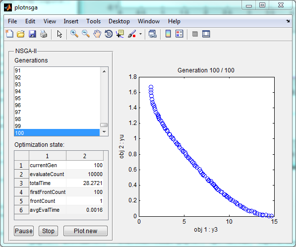 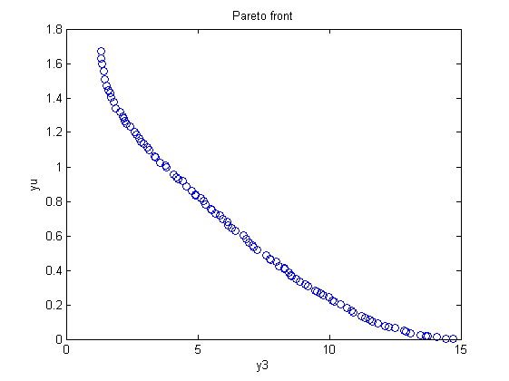 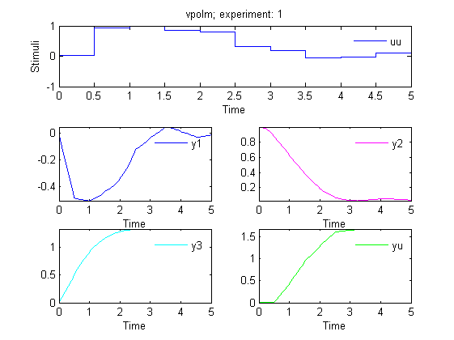 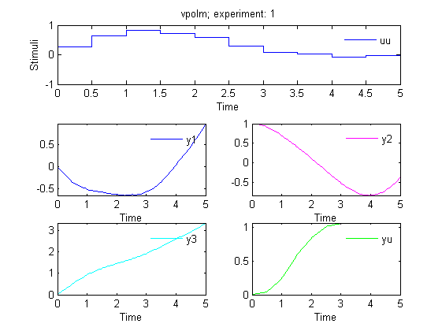 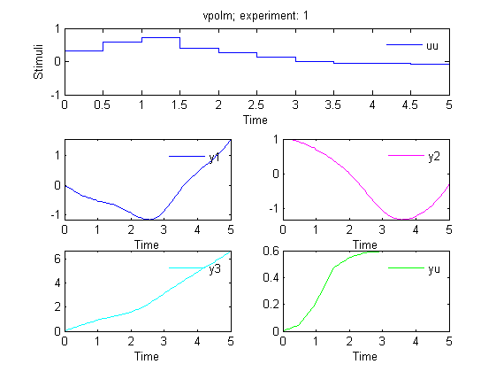 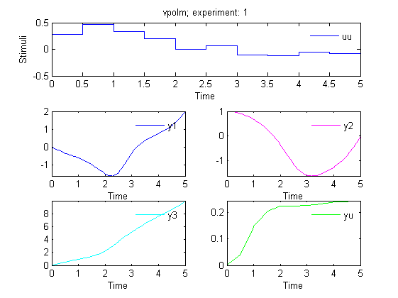 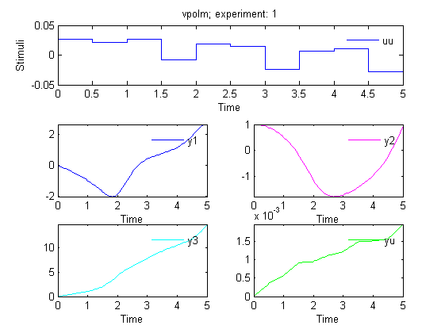 References
Deb, K.; Pratap, A.; Agarwal, S.; Meyarivan, T. A fast and elitist multiobjective genetic algorithm: NSGA-II IEEE Trans Evol Compt. 2002, 6(2):181-197
AMIGO_htmldoc_inputs(inputs,fullfile(pwd,'html','doinputsm.html'));